Date: 2019-12-25 20:40:03 CET, cola version: 1.3.2
Document is loading...
All available functions which can be applied to this res_list object:
res_list
#> A 'ConsensusPartitionList' object with 24 methods.
#> On a matrix with 31234 rows and 96 columns.
#> Top rows are extracted by 'SD, CV, MAD, ATC' methods.
#> Subgroups are detected by 'hclust, kmeans, skmeans, pam, mclust, NMF' method.
#> Number of partitions are tried for k = 2, 3, 4, 5, 6.
#> Performed in total 30000 partitions by row resampling.
#>
#> Following methods can be applied to this 'ConsensusPartitionList' object:
#> [1] "cola_report" "collect_classes" "collect_plots" "collect_stats"
#> [5] "colnames" "functional_enrichment" "get_anno_col" "get_anno"
#> [9] "get_classes" "get_matrix" "get_membership" "get_stats"
#> [13] "is_best_k" "is_stable_k" "ncol" "nrow"
#> [17] "rownames" "show" "suggest_best_k" "test_to_known_factors"
#> [21] "top_rows_heatmap" "top_rows_overlap"
#>
#> You can get result for a single method by, e.g. object["SD", "hclust"] or object["SD:hclust"]
#> or a subset of methods by object[c("SD", "CV")], c("hclust", "kmeans")]
The call of run_all_consensus_partition_methods() was:
#> run_all_consensus_partition_methods(data = mat, mc.cores = 4, anno = anno)
Dimension of the input matrix:
mat = get_matrix(res_list)
dim(mat)
#> [1] 31234 96
The density distribution for each sample is visualized as in one column in the following heatmap. The clustering is based on the distance which is the Kolmogorov-Smirnov statistic between two distributions.
library(ComplexHeatmap)
densityHeatmap(mat, top_annotation = HeatmapAnnotation(df = get_anno(res_list),
col = get_anno_col(res_list)), ylab = "value", cluster_columns = TRUE, show_column_names = FALSE,
mc.cores = 4)
Folowing table shows the best k (number of partitions) for each combination
of top-value methods and partition methods. Clicking on the method name in
the table goes to the section for a single combination of methods.
The cola vignette explains the definition of the metrics used for determining the best number of partitions.
suggest_best_k(res_list)
| The best k | 1-PAC | Mean silhouette | Concordance | Optional k | ||
|---|---|---|---|---|---|---|
| ATC:skmeans | 2 | 1.000 | 0.954 | 0.981 | ** | |
| CV:NMF | 4 | 0.988 | 0.945 | 0.979 | ** | |
| CV:pam | 4 | 0.985 | 0.977 | 0.989 | ** | 3 |
| CV:mclust | 6 | 0.972 | 0.908 | 0.951 | ** | 5 |
| ATC:pam | 5 | 0.942 | 0.930 | 0.967 | * | |
| SD:mclust | 6 | 0.937 | 0.900 | 0.948 | * | |
| SD:NMF | 4 | 0.914 | 0.927 | 0.969 | * | |
| SD:pam | 4 | 0.903 | 0.944 | 0.973 | * | 2,3 |
| ATC:NMF | 3 | 0.882 | 0.899 | 0.953 | ||
| SD:skmeans | 4 | 0.878 | 0.882 | 0.946 | ||
| CV:skmeans | 4 | 0.876 | 0.889 | 0.945 | ||
| MAD:NMF | 3 | 0.858 | 0.845 | 0.941 | ||
| ATC:hclust | 5 | 0.806 | 0.802 | 0.876 | ||
| MAD:hclust | 3 | 0.714 | 0.752 | 0.901 | ||
| MAD:pam | 3 | 0.710 | 0.846 | 0.865 | ||
| MAD:skmeans | 2 | 0.684 | 0.932 | 0.962 | ||
| ATC:kmeans | 2 | 0.521 | 0.802 | 0.862 | ||
| CV:hclust | 4 | 0.487 | 0.571 | 0.801 | ||
| SD:hclust | 3 | 0.436 | 0.666 | 0.811 | ||
| SD:kmeans | 5 | 0.409 | 0.477 | 0.659 | ||
| MAD:mclust | 3 | 0.405 | 0.629 | 0.776 | ||
| CV:kmeans | 4 | 0.272 | 0.516 | 0.674 | ||
| ATC:mclust | 3 | 0.271 | 0.708 | 0.725 | ||
| MAD:kmeans | 3 | 0.215 | 0.575 | 0.715 |
**: 1-PAC > 0.95, *: 1-PAC > 0.9
Cumulative distribution function curves of consensus matrix for all methods.
collect_plots(res_list, fun = plot_ecdf)
Consensus heatmaps for all methods. (What is a consensus heatmap?)
collect_plots(res_list, k = 2, fun = consensus_heatmap, mc.cores = 4)
collect_plots(res_list, k = 3, fun = consensus_heatmap, mc.cores = 4)

collect_plots(res_list, k = 4, fun = consensus_heatmap, mc.cores = 4)
collect_plots(res_list, k = 5, fun = consensus_heatmap, mc.cores = 4)
collect_plots(res_list, k = 6, fun = consensus_heatmap, mc.cores = 4)
Membership heatmaps for all methods. (What is a membership heatmap?)
collect_plots(res_list, k = 2, fun = membership_heatmap, mc.cores = 4)
collect_plots(res_list, k = 3, fun = membership_heatmap, mc.cores = 4)
collect_plots(res_list, k = 4, fun = membership_heatmap, mc.cores = 4)
collect_plots(res_list, k = 5, fun = membership_heatmap, mc.cores = 4)
collect_plots(res_list, k = 6, fun = membership_heatmap, mc.cores = 4)
Signature heatmaps for all methods. (What is a signature heatmap?)
Note in following heatmaps, rows are scaled.
collect_plots(res_list, k = 2, fun = get_signatures, mc.cores = 4)
collect_plots(res_list, k = 3, fun = get_signatures, mc.cores = 4)
collect_plots(res_list, k = 4, fun = get_signatures, mc.cores = 4)
collect_plots(res_list, k = 5, fun = get_signatures, mc.cores = 4)
collect_plots(res_list, k = 6, fun = get_signatures, mc.cores = 4)
The statistics used for measuring the stability of consensus partitioning. (How are they defined?)
get_stats(res_list, k = 2)
#> k 1-PAC mean_silhouette concordance area_increased Rand Jaccard
#> SD:NMF 2 0.492 0.791 0.902 0.492 0.497 0.497
#> CV:NMF 2 0.537 0.803 0.918 0.493 0.503 0.503
#> MAD:NMF 2 0.508 0.790 0.907 0.437 0.544 0.544
#> ATC:NMF 2 0.853 0.893 0.957 0.502 0.496 0.496
#> SD:skmeans 2 0.674 0.840 0.924 0.503 0.497 0.497
#> CV:skmeans 2 0.643 0.833 0.925 0.503 0.497 0.497
#> MAD:skmeans 2 0.684 0.932 0.962 0.503 0.497 0.497
#> ATC:skmeans 2 1.000 0.954 0.981 0.500 0.497 0.497
#> SD:mclust 2 0.247 0.773 0.855 0.421 0.591 0.591
#> CV:mclust 2 0.497 0.825 0.885 0.398 0.591 0.591
#> MAD:mclust 2 0.337 0.494 0.766 0.451 0.544 0.544
#> ATC:mclust 2 0.201 0.727 0.825 0.368 0.705 0.705
#> SD:kmeans 2 0.123 0.309 0.674 0.358 0.828 0.828
#> CV:kmeans 2 0.133 0.432 0.666 0.350 0.497 0.497
#> MAD:kmeans 2 0.140 0.497 0.658 0.404 0.566 0.566
#> ATC:kmeans 2 0.521 0.802 0.862 0.452 0.526 0.526
#> SD:pam 2 0.950 0.952 0.918 0.328 0.692 0.692
#> CV:pam 2 0.549 0.943 0.939 0.300 0.692 0.692
#> MAD:pam 2 0.886 0.965 0.979 0.357 0.655 0.655
#> ATC:pam 2 0.371 0.628 0.831 0.379 0.621 0.621
#> SD:hclust 2 0.485 0.810 0.902 0.304 0.734 0.734
#> CV:hclust 2 0.432 0.686 0.858 0.316 0.655 0.655
#> MAD:hclust 2 0.497 0.853 0.872 0.313 0.734 0.734
#> ATC:hclust 2 0.339 0.421 0.662 0.406 0.655 0.655
get_stats(res_list, k = 3)
#> k 1-PAC mean_silhouette concordance area_increased Rand Jaccard
#> SD:NMF 3 0.719 0.870 0.901 0.253 0.635 0.411
#> CV:NMF 3 0.753 0.891 0.901 0.265 0.651 0.438
#> MAD:NMF 3 0.858 0.845 0.941 0.418 0.588 0.376
#> ATC:NMF 3 0.882 0.899 0.953 0.332 0.738 0.520
#> SD:skmeans 3 0.621 0.767 0.866 0.314 0.680 0.445
#> CV:skmeans 3 0.626 0.785 0.868 0.312 0.680 0.445
#> MAD:skmeans 3 0.724 0.878 0.942 0.318 0.700 0.472
#> ATC:skmeans 3 0.865 0.939 0.960 0.330 0.713 0.485
#> SD:mclust 3 0.518 0.711 0.802 0.464 0.633 0.446
#> CV:mclust 3 0.491 0.686 0.822 0.559 0.674 0.491
#> MAD:mclust 3 0.405 0.629 0.776 0.380 0.641 0.431
#> ATC:mclust 3 0.271 0.708 0.725 0.622 0.610 0.475
#> SD:kmeans 3 0.129 0.446 0.625 0.496 0.530 0.449
#> CV:kmeans 3 0.125 0.462 0.670 0.532 0.586 0.382
#> MAD:kmeans 3 0.215 0.575 0.715 0.375 0.674 0.507
#> ATC:kmeans 3 0.422 0.578 0.755 0.364 0.711 0.503
#> SD:pam 3 0.927 0.948 0.977 0.428 0.864 0.803
#> CV:pam 3 1.000 0.975 0.989 0.524 0.864 0.803
#> MAD:pam 3 0.710 0.846 0.865 0.533 0.775 0.656
#> ATC:pam 3 0.784 0.827 0.926 0.484 0.803 0.690
#> SD:hclust 3 0.436 0.666 0.811 0.727 0.751 0.661
#> CV:hclust 3 0.248 0.540 0.714 0.606 0.574 0.431
#> MAD:hclust 3 0.714 0.752 0.901 0.736 0.724 0.623
#> ATC:hclust 3 0.583 0.664 0.730 0.480 0.732 0.590
get_stats(res_list, k = 4)
#> k 1-PAC mean_silhouette concordance area_increased Rand Jaccard
#> SD:NMF 4 0.914 0.927 0.969 0.185 0.838 0.600
#> CV:NMF 4 0.988 0.945 0.979 0.179 0.836 0.601
#> MAD:NMF 4 0.714 0.803 0.897 0.172 0.836 0.592
#> ATC:NMF 4 0.613 0.590 0.789 0.123 0.831 0.553
#> SD:skmeans 4 0.878 0.882 0.946 0.128 0.870 0.637
#> CV:skmeans 4 0.876 0.889 0.945 0.130 0.870 0.637
#> MAD:skmeans 4 0.750 0.841 0.887 0.127 0.858 0.612
#> ATC:skmeans 4 0.692 0.693 0.843 0.117 0.866 0.628
#> SD:mclust 4 0.603 0.795 0.848 0.152 0.862 0.644
#> CV:mclust 4 0.655 0.773 0.845 0.132 0.746 0.429
#> MAD:mclust 4 0.605 0.471 0.733 0.143 0.824 0.583
#> ATC:mclust 4 0.528 0.604 0.756 0.201 0.769 0.477
#> SD:kmeans 4 0.268 0.532 0.656 0.191 0.901 0.765
#> CV:kmeans 4 0.272 0.516 0.674 0.193 0.878 0.724
#> MAD:kmeans 4 0.346 0.511 0.703 0.218 0.822 0.612
#> ATC:kmeans 4 0.478 0.604 0.741 0.134 0.756 0.429
#> SD:pam 4 0.903 0.944 0.973 0.182 0.917 0.851
#> CV:pam 4 0.985 0.977 0.989 0.179 0.917 0.851
#> MAD:pam 4 0.559 0.698 0.815 0.220 0.728 0.496
#> ATC:pam 4 0.726 0.883 0.915 0.248 0.728 0.469
#> SD:hclust 4 0.506 0.624 0.809 0.132 0.838 0.711
#> CV:hclust 4 0.487 0.571 0.801 0.224 0.777 0.555
#> MAD:hclust 4 0.522 0.571 0.758 0.250 0.893 0.773
#> ATC:hclust 4 0.649 0.684 0.793 0.142 0.751 0.458
get_stats(res_list, k = 5)
#> k 1-PAC mean_silhouette concordance area_increased Rand Jaccard
#> SD:NMF 5 0.862 0.803 0.902 0.0637 0.964 0.869
#> CV:NMF 5 0.873 0.849 0.902 0.0514 0.961 0.858
#> MAD:NMF 5 0.884 0.818 0.911 0.0719 0.908 0.692
#> ATC:NMF 5 0.723 0.707 0.837 0.0566 0.796 0.384
#> SD:skmeans 5 0.785 0.742 0.854 0.0671 0.931 0.736
#> CV:skmeans 5 0.781 0.747 0.853 0.0658 0.931 0.736
#> MAD:skmeans 5 0.710 0.628 0.759 0.0639 0.941 0.770
#> ATC:skmeans 5 0.749 0.619 0.812 0.0758 0.859 0.522
#> SD:mclust 5 0.886 0.908 0.935 0.0639 0.964 0.869
#> CV:mclust 5 0.923 0.927 0.944 0.0693 0.858 0.563
#> MAD:mclust 5 0.602 0.540 0.723 0.0878 0.884 0.654
#> ATC:mclust 5 0.631 0.644 0.723 0.0852 0.877 0.586
#> SD:kmeans 5 0.409 0.477 0.659 0.1158 0.980 0.941
#> CV:kmeans 5 0.398 0.458 0.657 0.0961 0.939 0.833
#> MAD:kmeans 5 0.472 0.477 0.662 0.0878 0.858 0.590
#> ATC:kmeans 5 0.529 0.613 0.702 0.0775 0.951 0.818
#> SD:pam 5 0.669 0.791 0.862 0.1678 1.000 1.000
#> CV:pam 5 0.785 0.869 0.907 0.1382 0.925 0.841
#> MAD:pam 5 0.614 0.657 0.767 0.1151 0.842 0.601
#> ATC:pam 5 0.942 0.930 0.967 0.1032 0.847 0.546
#> SD:hclust 5 0.546 0.523 0.735 0.1309 0.826 0.649
#> CV:hclust 5 0.485 0.483 0.730 0.0794 1.000 1.000
#> MAD:hclust 5 0.598 0.559 0.755 0.0665 0.801 0.518
#> ATC:hclust 5 0.806 0.802 0.876 0.0776 0.907 0.694
get_stats(res_list, k = 6)
#> k 1-PAC mean_silhouette concordance area_increased Rand Jaccard
#> SD:NMF 6 0.858 0.794 0.881 0.0479 0.905 0.633
#> CV:NMF 6 0.854 0.814 0.904 0.0477 0.908 0.649
#> MAD:NMF 6 0.808 0.688 0.835 0.0438 0.889 0.586
#> ATC:NMF 6 0.776 0.684 0.837 0.0333 0.930 0.693
#> SD:skmeans 6 0.781 0.668 0.800 0.0392 0.947 0.749
#> CV:skmeans 6 0.779 0.656 0.742 0.0394 0.947 0.765
#> MAD:skmeans 6 0.752 0.573 0.758 0.0436 0.895 0.561
#> ATC:skmeans 6 0.778 0.632 0.810 0.0355 0.925 0.660
#> SD:mclust 6 0.937 0.900 0.948 0.0367 0.984 0.933
#> CV:mclust 6 0.972 0.908 0.951 0.0399 0.982 0.925
#> MAD:mclust 6 0.645 0.532 0.669 0.0449 0.888 0.601
#> ATC:mclust 6 0.723 0.694 0.788 0.0494 0.942 0.732
#> SD:kmeans 6 0.525 0.440 0.637 0.0588 0.913 0.755
#> CV:kmeans 6 0.512 0.471 0.653 0.0654 0.765 0.468
#> MAD:kmeans 6 0.531 0.444 0.599 0.0611 0.862 0.513
#> ATC:kmeans 6 0.592 0.556 0.716 0.0441 0.961 0.839
#> SD:pam 6 0.665 0.727 0.821 0.0886 0.822 0.628
#> CV:pam 6 0.689 0.728 0.846 0.1193 1.000 1.000
#> MAD:pam 6 0.687 0.661 0.777 0.0691 0.882 0.585
#> ATC:pam 6 0.901 0.850 0.914 0.0373 1.000 1.000
#> SD:hclust 6 0.703 0.765 0.844 0.0833 0.803 0.486
#> CV:hclust 6 0.718 0.769 0.825 0.0876 0.777 0.442
#> MAD:hclust 6 0.659 0.560 0.741 0.0783 0.783 0.417
#> ATC:hclust 6 0.806 0.799 0.852 0.0277 0.959 0.827
Following heatmap plots the partition for each combination of methods and the lightness correspond to the silhouette scores for samples in each method. On top the consensus subgroup is inferred from all methods by taking the mean silhouette scores as weight.
collect_stats(res_list, k = 2)
collect_stats(res_list, k = 3)
collect_stats(res_list, k = 4)
collect_stats(res_list, k = 5)
collect_stats(res_list, k = 6)
Collect partitions from all methods:
collect_classes(res_list, k = 2)
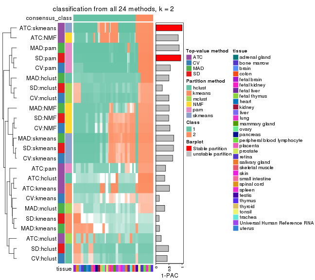
collect_classes(res_list, k = 3)
collect_classes(res_list, k = 4)
collect_classes(res_list, k = 5)
collect_classes(res_list, k = 6)
Overlap of top rows from different top-row methods:
top_rows_overlap(res_list, top_n = 1000, method = "euler")
top_rows_overlap(res_list, top_n = 2000, method = "euler")
top_rows_overlap(res_list, top_n = 3000, method = "euler")
top_rows_overlap(res_list, top_n = 4000, method = "euler")
top_rows_overlap(res_list, top_n = 5000, method = "euler")

Also visualize the correspondance of rankings between different top-row methods:
top_rows_overlap(res_list, top_n = 1000, method = "correspondance")
top_rows_overlap(res_list, top_n = 2000, method = "correspondance")
top_rows_overlap(res_list, top_n = 3000, method = "correspondance")
top_rows_overlap(res_list, top_n = 4000, method = "correspondance")
top_rows_overlap(res_list, top_n = 5000, method = "correspondance")
Heatmaps of the top rows:
top_rows_heatmap(res_list, top_n = 1000)
top_rows_heatmap(res_list, top_n = 2000)
top_rows_heatmap(res_list, top_n = 3000)

top_rows_heatmap(res_list, top_n = 4000)
top_rows_heatmap(res_list, top_n = 5000)
Test correlation between subgroups and known annotations. If the known annotation is numeric, one-way ANOVA test is applied, and if the known annotation is discrete, chi-squared contingency table test is applied.
test_to_known_factors(res_list, k = 2)
#> n tissue(p) k
#> SD:NMF 93 2.29e-08 2
#> CV:NMF 87 5.79e-08 2
#> MAD:NMF 84 9.22e-08 2
#> ATC:NMF 90 7.11e-07 2
#> SD:skmeans 93 2.29e-08 2
#> CV:skmeans 87 5.79e-08 2
#> MAD:skmeans 96 1.44e-08 2
#> ATC:skmeans 94 7.40e-08 2
#> SD:mclust 96 1.44e-08 2
#> CV:mclust 96 1.44e-08 2
#> MAD:mclust 57 6.19e-06 2
#> ATC:mclust 89 5.18e-08 2
#> SD:kmeans 24 1.14e-03 2
#> CV:kmeans 51 1.59e-05 2
#> MAD:kmeans 63 2.42e-06 2
#> ATC:kmeans 93 2.29e-08 2
#> SD:pam 95 2.05e-08 2
#> CV:pam 95 2.05e-08 2
#> MAD:pam 96 1.44e-08 2
#> ATC:pam 69 9.49e-07 2
#> SD:hclust 90 3.64e-08 2
#> CV:hclust 81 1.47e-07 2
#> MAD:hclust 96 1.44e-08 2
#> ATC:hclust 51 1.59e-05 2
test_to_known_factors(res_list, k = 3)
#> n tissue(p) k
#> SD:NMF 93 8.12e-15 3
#> CV:NMF 93 8.12e-15 3
#> MAD:NMF 89 4.05e-14 3
#> ATC:NMF 91 3.35e-12 3
#> SD:skmeans 84 1.27e-13 3
#> CV:skmeans 87 5.07e-14 3
#> MAD:skmeans 90 2.03e-14 3
#> ATC:skmeans 95 2.53e-14 3
#> SD:mclust 77 1.59e-12 3
#> CV:mclust 72 4.97e-12 3
#> MAD:mclust 81 3.17e-13 3
#> ATC:mclust 85 2.02e-13 3
#> SD:kmeans 57 4.94e-10 3
#> CV:kmeans 57 4.94e-10 3
#> MAD:kmeans 72 4.97e-12 3
#> ATC:kmeans 58 2.50e-09 3
#> SD:pam 95 6.49e-15 3
#> CV:pam 96 3.25e-15 3
#> MAD:pam 95 6.49e-15 3
#> ATC:pam 80 6.34e-13 3
#> SD:hclust 87 5.07e-14 3
#> CV:hclust 72 4.97e-12 3
#> MAD:hclust 81 3.17e-13 3
#> ATC:hclust 93 8.12e-15 3
test_to_known_factors(res_list, k = 4)
#> n tissue(p) k
#> SD:NMF 93 3.27e-21 4
#> CV:NMF 93 3.27e-21 4
#> MAD:NMF 90 1.28e-20 4
#> ATC:NMF 73 3.89e-14 4
#> SD:skmeans 93 3.27e-21 4
#> CV:skmeans 90 1.28e-20 4
#> MAD:skmeans 93 3.27e-21 4
#> ATC:skmeans 86 1.41e-19 4
#> SD:mclust 93 3.27e-21 4
#> CV:mclust 87 5.03e-20 4
#> MAD:mclust 48 7.87e-09 4
#> ATC:mclust 71 1.33e-16 4
#> SD:kmeans 60 1.13e-14 4
#> CV:kmeans 54 1.75e-13 4
#> MAD:kmeans 63 2.86e-15 4
#> ATC:kmeans 68 5.22e-16 4
#> SD:pam 93 3.27e-21 4
#> CV:pam 96 8.36e-22 4
#> MAD:pam 80 2.18e-18 4
#> ATC:pam 95 2.59e-19 4
#> SD:hclust 78 3.04e-18 4
#> CV:hclust 66 7.27e-16 4
#> MAD:hclust 66 3.12e-11 4
#> ATC:hclust 81 7.75e-19 4
test_to_known_factors(res_list, k = 5)
#> n tissue(p) k
#> SD:NMF 90 8.58e-27 5
#> CV:NMF 90 8.58e-27 5
#> MAD:NMF 87 5.28e-26 5
#> ATC:NMF 82 5.67e-21 5
#> SD:skmeans 84 3.25e-25 5
#> CV:skmeans 84 3.25e-25 5
#> MAD:skmeans 72 4.70e-17 5
#> ATC:skmeans 68 1.15e-20 5
#> SD:mclust 96 2.27e-28 5
#> CV:mclust 96 2.27e-28 5
#> MAD:mclust 58 9.04e-14 5
#> ATC:mclust 77 4.87e-23 5
#> SD:kmeans 51 1.62e-16 5
#> CV:kmeans 54 2.61e-17 5
#> MAD:kmeans 51 6.92e-13 5
#> ATC:kmeans 78 1.23e-23 5
#> SD:pam 90 1.28e-20 5
#> CV:pam 93 1.40e-27 5
#> MAD:pam 73 1.09e-20 5
#> ATC:pam 95 1.84e-26 5
#> SD:hclust 51 6.92e-13 5
#> CV:hclust 57 4.44e-14 5
#> MAD:hclust 54 1.75e-13 5
#> ATC:hclust 90 8.58e-27 5
test_to_known_factors(res_list, k = 6)
#> n tissue(p) k
#> SD:NMF 79 1.62e-28 6
#> CV:NMF 87 5.71e-32 6
#> MAD:NMF 70 7.30e-21 6
#> ATC:NMF 79 1.61e-27 6
#> SD:skmeans 78 5.15e-29 6
#> CV:skmeans 69 1.85e-16 6
#> MAD:skmeans 66 4.52e-25 6
#> ATC:skmeans 72 4.82e-27 6
#> SD:mclust 90 5.92e-33 6
#> CV:mclust 93 6.13e-34 6
#> MAD:mclust 51 3.12e-09 6
#> ATC:mclust 86 3.52e-30 6
#> SD:kmeans 36 6.73e-10 6
#> CV:kmeans 42 4.28e-11 6
#> MAD:kmeans 42 4.28e-11 6
#> ATC:kmeans 74 4.57e-26 6
#> SD:pam 84 5.52e-31 6
#> CV:pam 78 1.23e-23 6
#> MAD:pam 73 1.52e-26 6
#> ATC:pam 93 5.92e-26 6
#> SD:hclust 84 5.52e-31 6
#> CV:hclust 84 5.52e-31 6
#> MAD:hclust 54 4.00e-21 6
#> ATC:hclust 87 5.71e-32 6
The object with results only for a single top-value method and a single partition method can be extracted as:
res = res_list["SD", "hclust"]
# you can also extract it by
# res = res_list["SD:hclust"]
A summary of res and all the functions that can be applied to it:
res
#> A 'ConsensusPartition' object with k = 2, 3, 4, 5, 6.
#> On a matrix with 31234 rows and 96 columns.
#> Top rows (1000, 2000, 3000, 4000, 5000) are extracted by 'SD' method.
#> Subgroups are detected by 'hclust' method.
#> Performed in total 1250 partitions by row resampling.
#> Best k for subgroups seems to be 3.
#>
#> Following methods can be applied to this 'ConsensusPartition' object:
#> [1] "cola_report" "collect_classes" "collect_plots"
#> [4] "collect_stats" "colnames" "compare_signatures"
#> [7] "consensus_heatmap" "dimension_reduction" "functional_enrichment"
#> [10] "get_anno_col" "get_anno" "get_classes"
#> [13] "get_consensus" "get_matrix" "get_membership"
#> [16] "get_param" "get_signatures" "get_stats"
#> [19] "is_best_k" "is_stable_k" "membership_heatmap"
#> [22] "ncol" "nrow" "plot_ecdf"
#> [25] "rownames" "select_partition_number" "show"
#> [28] "suggest_best_k" "test_to_known_factors"
collect_plots() function collects all the plots made from res for all k (number of partitions)
into one single page to provide an easy and fast comparison between different k.
collect_plots(res)
The plots are:
k and the heatmap of
predicted classes for each k.k.k.k.All the plots in panels can be made by individual functions and they are plotted later in this section.
select_partition_number() produces several plots showing different
statistics for choosing “optimized” k. There are following statistics:
k;k, the area increased is defined as \(A_k - A_{k-1}\).The detailed explanations of these statistics can be found in the cola vignette.
Generally speaking, lower PAC score, higher mean silhouette score or higher
concordance corresponds to better partition. Rand index and Jaccard index
measure how similar the current partition is compared to partition with k-1.
If they are too similar, we won't accept k is better than k-1.
select_partition_number(res)
The numeric values for all these statistics can be obtained by get_stats().
get_stats(res)
#> k 1-PAC mean_silhouette concordance area_increased Rand Jaccard
#> 2 2 0.485 0.810 0.902 0.3040 0.734 0.734
#> 3 3 0.436 0.666 0.811 0.7267 0.751 0.661
#> 4 4 0.506 0.624 0.809 0.1322 0.838 0.711
#> 5 5 0.546 0.523 0.735 0.1309 0.826 0.649
#> 6 6 0.703 0.765 0.844 0.0833 0.803 0.486
suggest_best_k() suggests the best \(k\) based on these statistics. The rules are as follows:
suggest_best_k(res)
#> [1] 3
Following shows the table of the partitions (You need to click the show/hide
code output link to see it). The membership matrix (columns with name p*)
is inferred by
clue::cl_consensus()
function with the SE method. Basically the value in the membership matrix
represents the probability to belong to a certain group. The finall class
label for an item is determined with the group with highest probability it
belongs to.
In get_classes() function, the entropy is calculated from the membership
matrix and the silhouette score is calculated from the consensus matrix.
cbind(get_classes(res, k = 2), get_membership(res, k = 2))
#> class entropy silhouette p1 p2
#> GSM194459 1 0.141 0.885 0.980 0.020
#> GSM194460 1 0.141 0.885 0.980 0.020
#> GSM194461 1 0.141 0.885 0.980 0.020
#> GSM194462 1 0.184 0.890 0.972 0.028
#> GSM194463 1 0.184 0.890 0.972 0.028
#> GSM194464 1 0.184 0.890 0.972 0.028
#> GSM194465 1 0.141 0.885 0.980 0.020
#> GSM194466 1 0.141 0.885 0.980 0.020
#> GSM194467 1 0.141 0.885 0.980 0.020
#> GSM194468 1 0.975 0.310 0.592 0.408
#> GSM194469 1 0.975 0.310 0.592 0.408
#> GSM194470 1 0.975 0.310 0.592 0.408
#> GSM194471 2 0.141 0.840 0.020 0.980
#> GSM194472 2 0.141 0.840 0.020 0.980
#> GSM194473 2 0.141 0.840 0.020 0.980
#> GSM194474 2 0.141 0.840 0.020 0.980
#> GSM194475 2 0.141 0.840 0.020 0.980
#> GSM194476 2 0.141 0.840 0.020 0.980
#> GSM194477 1 0.224 0.888 0.964 0.036
#> GSM194478 1 0.224 0.888 0.964 0.036
#> GSM194479 1 0.224 0.888 0.964 0.036
#> GSM194480 2 0.900 0.646 0.316 0.684
#> GSM194481 2 0.900 0.646 0.316 0.684
#> GSM194482 2 0.900 0.646 0.316 0.684
#> GSM194483 2 0.900 0.646 0.316 0.684
#> GSM194484 2 0.900 0.646 0.316 0.684
#> GSM194485 2 0.900 0.646 0.316 0.684
#> GSM194486 2 0.141 0.840 0.020 0.980
#> GSM194487 2 0.141 0.840 0.020 0.980
#> GSM194488 2 0.141 0.840 0.020 0.980
#> GSM194489 1 0.141 0.885 0.980 0.020
#> GSM194490 1 0.141 0.885 0.980 0.020
#> GSM194491 1 0.141 0.885 0.980 0.020
#> GSM194492 1 0.000 0.890 1.000 0.000
#> GSM194493 1 0.000 0.890 1.000 0.000
#> GSM194494 1 0.000 0.890 1.000 0.000
#> GSM194495 1 0.605 0.832 0.852 0.148
#> GSM194496 1 0.605 0.832 0.852 0.148
#> GSM194497 1 0.605 0.832 0.852 0.148
#> GSM194498 1 0.000 0.890 1.000 0.000
#> GSM194499 1 0.000 0.890 1.000 0.000
#> GSM194500 1 0.000 0.890 1.000 0.000
#> GSM194501 1 0.402 0.872 0.920 0.080
#> GSM194502 1 0.402 0.872 0.920 0.080
#> GSM194503 1 0.402 0.872 0.920 0.080
#> GSM194504 1 0.605 0.832 0.852 0.148
#> GSM194505 1 0.605 0.832 0.852 0.148
#> GSM194506 1 0.605 0.832 0.852 0.148
#> GSM194507 1 0.983 0.265 0.576 0.424
#> GSM194508 1 0.983 0.265 0.576 0.424
#> GSM194509 1 0.983 0.265 0.576 0.424
#> GSM194510 1 0.552 0.847 0.872 0.128
#> GSM194511 1 0.552 0.847 0.872 0.128
#> GSM194512 1 0.552 0.847 0.872 0.128
#> GSM194513 1 0.141 0.885 0.980 0.020
#> GSM194514 1 0.141 0.885 0.980 0.020
#> GSM194515 1 0.141 0.885 0.980 0.020
#> GSM194516 1 0.141 0.885 0.980 0.020
#> GSM194517 1 0.141 0.885 0.980 0.020
#> GSM194518 1 0.141 0.885 0.980 0.020
#> GSM194519 1 0.552 0.847 0.872 0.128
#> GSM194520 1 0.552 0.847 0.872 0.128
#> GSM194521 1 0.552 0.847 0.872 0.128
#> GSM194522 1 0.552 0.847 0.872 0.128
#> GSM194523 1 0.552 0.847 0.872 0.128
#> GSM194524 1 0.552 0.847 0.872 0.128
#> GSM194525 1 0.443 0.866 0.908 0.092
#> GSM194526 1 0.443 0.866 0.908 0.092
#> GSM194527 1 0.443 0.866 0.908 0.092
#> GSM194528 1 0.224 0.888 0.964 0.036
#> GSM194529 1 0.224 0.888 0.964 0.036
#> GSM194530 1 0.224 0.888 0.964 0.036
#> GSM194531 1 0.000 0.890 1.000 0.000
#> GSM194532 1 0.000 0.890 1.000 0.000
#> GSM194533 1 0.000 0.890 1.000 0.000
#> GSM194534 1 0.000 0.890 1.000 0.000
#> GSM194535 1 0.000 0.890 1.000 0.000
#> GSM194536 1 0.000 0.890 1.000 0.000
#> GSM194537 1 0.184 0.889 0.972 0.028
#> GSM194538 1 0.184 0.889 0.972 0.028
#> GSM194539 1 0.184 0.889 0.972 0.028
#> GSM194540 1 0.141 0.885 0.980 0.020
#> GSM194541 1 0.141 0.885 0.980 0.020
#> GSM194542 1 0.141 0.885 0.980 0.020
#> GSM194543 1 0.605 0.832 0.852 0.148
#> GSM194544 1 0.605 0.832 0.852 0.148
#> GSM194545 1 0.605 0.832 0.852 0.148
#> GSM194546 1 0.141 0.885 0.980 0.020
#> GSM194547 1 0.141 0.885 0.980 0.020
#> GSM194548 1 0.141 0.885 0.980 0.020
#> GSM194549 1 0.141 0.885 0.980 0.020
#> GSM194550 1 0.141 0.885 0.980 0.020
#> GSM194551 1 0.141 0.885 0.980 0.020
#> GSM194552 1 0.913 0.548 0.672 0.328
#> GSM194553 1 0.913 0.548 0.672 0.328
#> GSM194554 1 0.913 0.548 0.672 0.328
cbind(get_classes(res, k = 3), get_membership(res, k = 3))
#> class entropy silhouette p1 p2 p3
#> GSM194459 1 0.6057 0.6251 0.760 0.196 0.044
#> GSM194460 1 0.6057 0.6251 0.760 0.196 0.044
#> GSM194461 1 0.6057 0.6251 0.760 0.196 0.044
#> GSM194462 1 0.4974 0.6876 0.764 0.236 0.000
#> GSM194463 1 0.4974 0.6876 0.764 0.236 0.000
#> GSM194464 1 0.4974 0.6876 0.764 0.236 0.000
#> GSM194465 1 0.6057 0.6251 0.760 0.196 0.044
#> GSM194466 1 0.6057 0.6251 0.760 0.196 0.044
#> GSM194467 1 0.6057 0.6251 0.760 0.196 0.044
#> GSM194468 1 0.5706 0.2376 0.680 0.000 0.320
#> GSM194469 1 0.5706 0.2376 0.680 0.000 0.320
#> GSM194470 1 0.5706 0.2376 0.680 0.000 0.320
#> GSM194471 3 0.1643 0.7725 0.044 0.000 0.956
#> GSM194472 3 0.1643 0.7725 0.044 0.000 0.956
#> GSM194473 3 0.1643 0.7725 0.044 0.000 0.956
#> GSM194474 3 0.1643 0.7725 0.044 0.000 0.956
#> GSM194475 3 0.1643 0.7725 0.044 0.000 0.956
#> GSM194476 3 0.1643 0.7725 0.044 0.000 0.956
#> GSM194477 1 0.6105 0.6834 0.724 0.252 0.024
#> GSM194478 1 0.6105 0.6834 0.724 0.252 0.024
#> GSM194479 1 0.6105 0.6834 0.724 0.252 0.024
#> GSM194480 3 0.6140 0.5299 0.404 0.000 0.596
#> GSM194481 3 0.6140 0.5299 0.404 0.000 0.596
#> GSM194482 3 0.6140 0.5299 0.404 0.000 0.596
#> GSM194483 3 0.6140 0.5299 0.404 0.000 0.596
#> GSM194484 3 0.6140 0.5299 0.404 0.000 0.596
#> GSM194485 3 0.6140 0.5299 0.404 0.000 0.596
#> GSM194486 3 0.1643 0.7725 0.044 0.000 0.956
#> GSM194487 3 0.1643 0.7725 0.044 0.000 0.956
#> GSM194488 3 0.1643 0.7725 0.044 0.000 0.956
#> GSM194489 2 0.6308 -0.0773 0.492 0.508 0.000
#> GSM194490 2 0.6308 -0.0773 0.492 0.508 0.000
#> GSM194491 2 0.6308 -0.0773 0.492 0.508 0.000
#> GSM194492 1 0.5397 0.6471 0.720 0.280 0.000
#> GSM194493 1 0.5397 0.6471 0.720 0.280 0.000
#> GSM194494 1 0.5397 0.6471 0.720 0.280 0.000
#> GSM194495 1 0.2066 0.7378 0.940 0.000 0.060
#> GSM194496 1 0.2066 0.7378 0.940 0.000 0.060
#> GSM194497 1 0.2066 0.7378 0.940 0.000 0.060
#> GSM194498 1 0.5397 0.6471 0.720 0.280 0.000
#> GSM194499 1 0.5397 0.6471 0.720 0.280 0.000
#> GSM194500 1 0.5397 0.6471 0.720 0.280 0.000
#> GSM194501 1 0.0747 0.7531 0.984 0.016 0.000
#> GSM194502 1 0.0747 0.7531 0.984 0.016 0.000
#> GSM194503 1 0.0747 0.7531 0.984 0.016 0.000
#> GSM194504 1 0.2066 0.7378 0.940 0.000 0.060
#> GSM194505 1 0.2066 0.7378 0.940 0.000 0.060
#> GSM194506 1 0.2066 0.7378 0.940 0.000 0.060
#> GSM194507 1 0.5810 0.2130 0.664 0.000 0.336
#> GSM194508 1 0.5810 0.2130 0.664 0.000 0.336
#> GSM194509 1 0.5810 0.2130 0.664 0.000 0.336
#> GSM194510 1 0.1765 0.7417 0.956 0.004 0.040
#> GSM194511 1 0.1765 0.7417 0.956 0.004 0.040
#> GSM194512 1 0.1765 0.7417 0.956 0.004 0.040
#> GSM194513 2 0.2261 0.8853 0.068 0.932 0.000
#> GSM194514 2 0.2261 0.8853 0.068 0.932 0.000
#> GSM194515 2 0.2261 0.8853 0.068 0.932 0.000
#> GSM194516 2 0.2261 0.8853 0.068 0.932 0.000
#> GSM194517 2 0.2261 0.8853 0.068 0.932 0.000
#> GSM194518 2 0.2261 0.8853 0.068 0.932 0.000
#> GSM194519 1 0.1765 0.7417 0.956 0.004 0.040
#> GSM194520 1 0.1765 0.7417 0.956 0.004 0.040
#> GSM194521 1 0.1765 0.7417 0.956 0.004 0.040
#> GSM194522 1 0.1765 0.7417 0.956 0.004 0.040
#> GSM194523 1 0.1765 0.7417 0.956 0.004 0.040
#> GSM194524 1 0.1765 0.7417 0.956 0.004 0.040
#> GSM194525 1 0.0237 0.7495 0.996 0.000 0.004
#> GSM194526 1 0.0237 0.7495 0.996 0.000 0.004
#> GSM194527 1 0.0237 0.7495 0.996 0.000 0.004
#> GSM194528 1 0.6105 0.6834 0.724 0.252 0.024
#> GSM194529 1 0.6105 0.6834 0.724 0.252 0.024
#> GSM194530 1 0.6105 0.6834 0.724 0.252 0.024
#> GSM194531 1 0.5397 0.6471 0.720 0.280 0.000
#> GSM194532 1 0.5397 0.6471 0.720 0.280 0.000
#> GSM194533 1 0.5397 0.6471 0.720 0.280 0.000
#> GSM194534 1 0.5397 0.6471 0.720 0.280 0.000
#> GSM194535 1 0.5397 0.6471 0.720 0.280 0.000
#> GSM194536 1 0.5397 0.6471 0.720 0.280 0.000
#> GSM194537 1 0.4887 0.6920 0.772 0.228 0.000
#> GSM194538 1 0.4887 0.6920 0.772 0.228 0.000
#> GSM194539 1 0.4887 0.6920 0.772 0.228 0.000
#> GSM194540 2 0.2261 0.8853 0.068 0.932 0.000
#> GSM194541 2 0.2261 0.8853 0.068 0.932 0.000
#> GSM194542 2 0.2261 0.8853 0.068 0.932 0.000
#> GSM194543 1 0.2066 0.7378 0.940 0.000 0.060
#> GSM194544 1 0.2066 0.7378 0.940 0.000 0.060
#> GSM194545 1 0.2066 0.7378 0.940 0.000 0.060
#> GSM194546 2 0.2261 0.8853 0.068 0.932 0.000
#> GSM194547 2 0.2261 0.8853 0.068 0.932 0.000
#> GSM194548 2 0.2261 0.8853 0.068 0.932 0.000
#> GSM194549 2 0.2261 0.8853 0.068 0.932 0.000
#> GSM194550 2 0.2261 0.8853 0.068 0.932 0.000
#> GSM194551 2 0.2261 0.8853 0.068 0.932 0.000
#> GSM194552 1 0.5058 0.6027 0.756 0.000 0.244
#> GSM194553 1 0.5058 0.6027 0.756 0.000 0.244
#> GSM194554 1 0.5058 0.6027 0.756 0.000 0.244
cbind(get_classes(res, k = 4), get_membership(res, k = 4))
#> class entropy silhouette p1 p2 p3 p4
#> GSM194459 4 0.4382 1.0000 0.296 0.000 0.000 0.704
#> GSM194460 4 0.4382 1.0000 0.296 0.000 0.000 0.704
#> GSM194461 4 0.4382 1.0000 0.296 0.000 0.000 0.704
#> GSM194462 1 0.5354 0.5778 0.712 0.232 0.000 0.056
#> GSM194463 1 0.5354 0.5778 0.712 0.232 0.000 0.056
#> GSM194464 1 0.5354 0.5778 0.712 0.232 0.000 0.056
#> GSM194465 4 0.4382 1.0000 0.296 0.000 0.000 0.704
#> GSM194466 4 0.4382 1.0000 0.296 0.000 0.000 0.704
#> GSM194467 4 0.4382 1.0000 0.296 0.000 0.000 0.704
#> GSM194468 1 0.4535 0.3679 0.704 0.000 0.004 0.292
#> GSM194469 1 0.4535 0.3679 0.704 0.000 0.004 0.292
#> GSM194470 1 0.4535 0.3679 0.704 0.000 0.004 0.292
#> GSM194471 3 0.0000 1.0000 0.000 0.000 1.000 0.000
#> GSM194472 3 0.0000 1.0000 0.000 0.000 1.000 0.000
#> GSM194473 3 0.0000 1.0000 0.000 0.000 1.000 0.000
#> GSM194474 3 0.0000 1.0000 0.000 0.000 1.000 0.000
#> GSM194475 3 0.0000 1.0000 0.000 0.000 1.000 0.000
#> GSM194476 3 0.0000 1.0000 0.000 0.000 1.000 0.000
#> GSM194477 1 0.4995 0.5807 0.720 0.248 0.000 0.032
#> GSM194478 1 0.4995 0.5807 0.720 0.248 0.000 0.032
#> GSM194479 1 0.4995 0.5807 0.720 0.248 0.000 0.032
#> GSM194480 1 0.7864 0.0668 0.392 0.000 0.320 0.288
#> GSM194481 1 0.7864 0.0668 0.392 0.000 0.320 0.288
#> GSM194482 1 0.7864 0.0668 0.392 0.000 0.320 0.288
#> GSM194483 1 0.7864 0.0668 0.392 0.000 0.320 0.288
#> GSM194484 1 0.7864 0.0668 0.392 0.000 0.320 0.288
#> GSM194485 1 0.7864 0.0668 0.392 0.000 0.320 0.288
#> GSM194486 3 0.0000 1.0000 0.000 0.000 1.000 0.000
#> GSM194487 3 0.0000 1.0000 0.000 0.000 1.000 0.000
#> GSM194488 3 0.0000 1.0000 0.000 0.000 1.000 0.000
#> GSM194489 2 0.6366 -0.0945 0.424 0.512 0.000 0.064
#> GSM194490 2 0.6366 -0.0945 0.424 0.512 0.000 0.064
#> GSM194491 2 0.6366 -0.0945 0.424 0.512 0.000 0.064
#> GSM194492 1 0.5859 0.5274 0.652 0.284 0.000 0.064
#> GSM194493 1 0.5859 0.5274 0.652 0.284 0.000 0.064
#> GSM194494 1 0.5859 0.5274 0.652 0.284 0.000 0.064
#> GSM194495 1 0.0469 0.6252 0.988 0.000 0.012 0.000
#> GSM194496 1 0.0469 0.6252 0.988 0.000 0.012 0.000
#> GSM194497 1 0.0469 0.6252 0.988 0.000 0.012 0.000
#> GSM194498 1 0.5835 0.5307 0.656 0.280 0.000 0.064
#> GSM194499 1 0.5835 0.5307 0.656 0.280 0.000 0.064
#> GSM194500 1 0.5835 0.5307 0.656 0.280 0.000 0.064
#> GSM194501 1 0.2174 0.6161 0.928 0.020 0.000 0.052
#> GSM194502 1 0.2174 0.6161 0.928 0.020 0.000 0.052
#> GSM194503 1 0.2174 0.6161 0.928 0.020 0.000 0.052
#> GSM194504 1 0.0469 0.6252 0.988 0.000 0.012 0.000
#> GSM194505 1 0.0469 0.6252 0.988 0.000 0.012 0.000
#> GSM194506 1 0.0469 0.6252 0.988 0.000 0.012 0.000
#> GSM194507 1 0.4857 0.3664 0.700 0.000 0.016 0.284
#> GSM194508 1 0.4857 0.3664 0.700 0.000 0.016 0.284
#> GSM194509 1 0.4857 0.3664 0.700 0.000 0.016 0.284
#> GSM194510 1 0.0921 0.6149 0.972 0.000 0.000 0.028
#> GSM194511 1 0.0921 0.6149 0.972 0.000 0.000 0.028
#> GSM194512 1 0.0921 0.6149 0.972 0.000 0.000 0.028
#> GSM194513 2 0.0000 0.8586 0.000 1.000 0.000 0.000
#> GSM194514 2 0.0000 0.8586 0.000 1.000 0.000 0.000
#> GSM194515 2 0.0000 0.8586 0.000 1.000 0.000 0.000
#> GSM194516 2 0.0000 0.8586 0.000 1.000 0.000 0.000
#> GSM194517 2 0.0000 0.8586 0.000 1.000 0.000 0.000
#> GSM194518 2 0.0000 0.8586 0.000 1.000 0.000 0.000
#> GSM194519 1 0.0817 0.6177 0.976 0.000 0.000 0.024
#> GSM194520 1 0.0817 0.6177 0.976 0.000 0.000 0.024
#> GSM194521 1 0.0817 0.6177 0.976 0.000 0.000 0.024
#> GSM194522 1 0.0817 0.6177 0.976 0.000 0.000 0.024
#> GSM194523 1 0.0817 0.6177 0.976 0.000 0.000 0.024
#> GSM194524 1 0.0817 0.6177 0.976 0.000 0.000 0.024
#> GSM194525 1 0.1389 0.6174 0.952 0.000 0.000 0.048
#> GSM194526 1 0.1389 0.6174 0.952 0.000 0.000 0.048
#> GSM194527 1 0.1389 0.6174 0.952 0.000 0.000 0.048
#> GSM194528 1 0.4995 0.5807 0.720 0.248 0.000 0.032
#> GSM194529 1 0.4995 0.5807 0.720 0.248 0.000 0.032
#> GSM194530 1 0.4995 0.5807 0.720 0.248 0.000 0.032
#> GSM194531 1 0.5859 0.5274 0.652 0.284 0.000 0.064
#> GSM194532 1 0.5859 0.5274 0.652 0.284 0.000 0.064
#> GSM194533 1 0.5859 0.5274 0.652 0.284 0.000 0.064
#> GSM194534 1 0.5835 0.5307 0.656 0.280 0.000 0.064
#> GSM194535 1 0.5835 0.5307 0.656 0.280 0.000 0.064
#> GSM194536 1 0.5835 0.5307 0.656 0.280 0.000 0.064
#> GSM194537 1 0.5254 0.5838 0.724 0.220 0.000 0.056
#> GSM194538 1 0.5254 0.5838 0.724 0.220 0.000 0.056
#> GSM194539 1 0.5254 0.5838 0.724 0.220 0.000 0.056
#> GSM194540 2 0.0000 0.8586 0.000 1.000 0.000 0.000
#> GSM194541 2 0.0000 0.8586 0.000 1.000 0.000 0.000
#> GSM194542 2 0.0000 0.8586 0.000 1.000 0.000 0.000
#> GSM194543 1 0.0469 0.6252 0.988 0.000 0.012 0.000
#> GSM194544 1 0.0469 0.6252 0.988 0.000 0.012 0.000
#> GSM194545 1 0.0469 0.6252 0.988 0.000 0.012 0.000
#> GSM194546 2 0.0000 0.8586 0.000 1.000 0.000 0.000
#> GSM194547 2 0.0000 0.8586 0.000 1.000 0.000 0.000
#> GSM194548 2 0.0000 0.8586 0.000 1.000 0.000 0.000
#> GSM194549 2 0.0000 0.8586 0.000 1.000 0.000 0.000
#> GSM194550 2 0.0000 0.8586 0.000 1.000 0.000 0.000
#> GSM194551 2 0.0000 0.8586 0.000 1.000 0.000 0.000
#> GSM194552 1 0.3975 0.4878 0.760 0.000 0.240 0.000
#> GSM194553 1 0.3975 0.4878 0.760 0.000 0.240 0.000
#> GSM194554 1 0.3975 0.4878 0.760 0.000 0.240 0.000
cbind(get_classes(res, k = 5), get_membership(res, k = 5))
#> class entropy silhouette p1 p2 p3 p4 p5
#> GSM194459 4 0.3877 1.0000 0.212 0.000 0.024 0.764 0.000
#> GSM194460 4 0.3877 1.0000 0.212 0.000 0.024 0.764 0.000
#> GSM194461 4 0.3877 1.0000 0.212 0.000 0.024 0.764 0.000
#> GSM194462 1 0.4649 0.4612 0.580 0.016 0.404 0.000 0.000
#> GSM194463 1 0.4649 0.4612 0.580 0.016 0.404 0.000 0.000
#> GSM194464 1 0.4649 0.4612 0.580 0.016 0.404 0.000 0.000
#> GSM194465 4 0.3877 1.0000 0.212 0.000 0.024 0.764 0.000
#> GSM194466 4 0.3877 1.0000 0.212 0.000 0.024 0.764 0.000
#> GSM194467 4 0.3877 1.0000 0.212 0.000 0.024 0.764 0.000
#> GSM194468 1 0.5039 0.1271 0.676 0.000 0.000 0.244 0.080
#> GSM194469 1 0.5039 0.1271 0.676 0.000 0.000 0.244 0.080
#> GSM194470 1 0.5039 0.1271 0.676 0.000 0.000 0.244 0.080
#> GSM194471 3 0.4305 0.0772 0.000 0.000 0.512 0.000 0.488
#> GSM194472 3 0.4305 0.0772 0.000 0.000 0.512 0.000 0.488
#> GSM194473 3 0.4305 0.0772 0.000 0.000 0.512 0.000 0.488
#> GSM194474 3 0.4305 0.0772 0.000 0.000 0.512 0.000 0.488
#> GSM194475 3 0.4305 0.0772 0.000 0.000 0.512 0.000 0.488
#> GSM194476 3 0.4305 0.0772 0.000 0.000 0.512 0.000 0.488
#> GSM194477 1 0.4789 0.4541 0.584 0.024 0.392 0.000 0.000
#> GSM194478 1 0.4789 0.4541 0.584 0.024 0.392 0.000 0.000
#> GSM194479 1 0.4789 0.4541 0.584 0.024 0.392 0.000 0.000
#> GSM194480 5 0.3661 1.0000 0.276 0.000 0.000 0.000 0.724
#> GSM194481 5 0.3661 1.0000 0.276 0.000 0.000 0.000 0.724
#> GSM194482 5 0.3661 1.0000 0.276 0.000 0.000 0.000 0.724
#> GSM194483 5 0.3661 1.0000 0.276 0.000 0.000 0.000 0.724
#> GSM194484 5 0.3661 1.0000 0.276 0.000 0.000 0.000 0.724
#> GSM194485 5 0.3661 1.0000 0.276 0.000 0.000 0.000 0.724
#> GSM194486 3 0.4305 0.0772 0.000 0.000 0.512 0.000 0.488
#> GSM194487 3 0.4305 0.0772 0.000 0.000 0.512 0.000 0.488
#> GSM194488 3 0.4305 0.0772 0.000 0.000 0.512 0.000 0.488
#> GSM194489 3 0.6510 -0.0147 0.252 0.260 0.488 0.000 0.000
#> GSM194490 3 0.6510 -0.0147 0.252 0.260 0.488 0.000 0.000
#> GSM194491 3 0.6510 -0.0147 0.252 0.260 0.488 0.000 0.000
#> GSM194492 3 0.5049 -0.3334 0.480 0.032 0.488 0.000 0.000
#> GSM194493 3 0.5049 -0.3334 0.480 0.032 0.488 0.000 0.000
#> GSM194494 3 0.5049 -0.3334 0.480 0.032 0.488 0.000 0.000
#> GSM194495 1 0.0290 0.6466 0.992 0.000 0.000 0.000 0.008
#> GSM194496 1 0.0290 0.6466 0.992 0.000 0.000 0.000 0.008
#> GSM194497 1 0.0290 0.6466 0.992 0.000 0.000 0.000 0.008
#> GSM194498 1 0.4980 0.2960 0.488 0.028 0.484 0.000 0.000
#> GSM194499 1 0.4980 0.2960 0.488 0.028 0.484 0.000 0.000
#> GSM194500 1 0.4980 0.2960 0.488 0.028 0.484 0.000 0.000
#> GSM194501 1 0.3402 0.6159 0.804 0.008 0.184 0.004 0.000
#> GSM194502 1 0.3402 0.6159 0.804 0.008 0.184 0.004 0.000
#> GSM194503 1 0.3402 0.6159 0.804 0.008 0.184 0.004 0.000
#> GSM194504 1 0.0290 0.6466 0.992 0.000 0.000 0.000 0.008
#> GSM194505 1 0.0290 0.6466 0.992 0.000 0.000 0.000 0.008
#> GSM194506 1 0.0290 0.6466 0.992 0.000 0.000 0.000 0.008
#> GSM194507 1 0.5190 0.0830 0.668 0.000 0.000 0.236 0.096
#> GSM194508 1 0.5190 0.0830 0.668 0.000 0.000 0.236 0.096
#> GSM194509 1 0.5190 0.0830 0.668 0.000 0.000 0.236 0.096
#> GSM194510 1 0.0880 0.6375 0.968 0.000 0.000 0.032 0.000
#> GSM194511 1 0.0880 0.6375 0.968 0.000 0.000 0.032 0.000
#> GSM194512 1 0.0880 0.6375 0.968 0.000 0.000 0.032 0.000
#> GSM194513 2 0.0000 1.0000 0.000 1.000 0.000 0.000 0.000
#> GSM194514 2 0.0000 1.0000 0.000 1.000 0.000 0.000 0.000
#> GSM194515 2 0.0000 1.0000 0.000 1.000 0.000 0.000 0.000
#> GSM194516 2 0.0000 1.0000 0.000 1.000 0.000 0.000 0.000
#> GSM194517 2 0.0000 1.0000 0.000 1.000 0.000 0.000 0.000
#> GSM194518 2 0.0000 1.0000 0.000 1.000 0.000 0.000 0.000
#> GSM194519 1 0.0703 0.6428 0.976 0.000 0.000 0.024 0.000
#> GSM194520 1 0.0703 0.6428 0.976 0.000 0.000 0.024 0.000
#> GSM194521 1 0.0703 0.6428 0.976 0.000 0.000 0.024 0.000
#> GSM194522 1 0.0703 0.6428 0.976 0.000 0.000 0.024 0.000
#> GSM194523 1 0.0703 0.6428 0.976 0.000 0.000 0.024 0.000
#> GSM194524 1 0.0703 0.6428 0.976 0.000 0.000 0.024 0.000
#> GSM194525 1 0.2249 0.6398 0.896 0.000 0.096 0.008 0.000
#> GSM194526 1 0.2249 0.6398 0.896 0.000 0.096 0.008 0.000
#> GSM194527 1 0.2249 0.6398 0.896 0.000 0.096 0.008 0.000
#> GSM194528 1 0.4789 0.4541 0.584 0.024 0.392 0.000 0.000
#> GSM194529 1 0.4789 0.4541 0.584 0.024 0.392 0.000 0.000
#> GSM194530 1 0.4789 0.4541 0.584 0.024 0.392 0.000 0.000
#> GSM194531 3 0.5049 -0.3334 0.480 0.032 0.488 0.000 0.000
#> GSM194532 3 0.5049 -0.3334 0.480 0.032 0.488 0.000 0.000
#> GSM194533 3 0.5049 -0.3334 0.480 0.032 0.488 0.000 0.000
#> GSM194534 1 0.4980 0.2960 0.488 0.028 0.484 0.000 0.000
#> GSM194535 1 0.4980 0.2960 0.488 0.028 0.484 0.000 0.000
#> GSM194536 1 0.4980 0.2960 0.488 0.028 0.484 0.000 0.000
#> GSM194537 1 0.4455 0.4675 0.588 0.008 0.404 0.000 0.000
#> GSM194538 1 0.4455 0.4675 0.588 0.008 0.404 0.000 0.000
#> GSM194539 1 0.4455 0.4675 0.588 0.008 0.404 0.000 0.000
#> GSM194540 2 0.0000 1.0000 0.000 1.000 0.000 0.000 0.000
#> GSM194541 2 0.0000 1.0000 0.000 1.000 0.000 0.000 0.000
#> GSM194542 2 0.0000 1.0000 0.000 1.000 0.000 0.000 0.000
#> GSM194543 1 0.0290 0.6466 0.992 0.000 0.000 0.000 0.008
#> GSM194544 1 0.0290 0.6466 0.992 0.000 0.000 0.000 0.008
#> GSM194545 1 0.0290 0.6466 0.992 0.000 0.000 0.000 0.008
#> GSM194546 2 0.0000 1.0000 0.000 1.000 0.000 0.000 0.000
#> GSM194547 2 0.0000 1.0000 0.000 1.000 0.000 0.000 0.000
#> GSM194548 2 0.0000 1.0000 0.000 1.000 0.000 0.000 0.000
#> GSM194549 2 0.0000 1.0000 0.000 1.000 0.000 0.000 0.000
#> GSM194550 2 0.0000 1.0000 0.000 1.000 0.000 0.000 0.000
#> GSM194551 2 0.0000 1.0000 0.000 1.000 0.000 0.000 0.000
#> GSM194552 1 0.3821 0.4410 0.764 0.000 0.020 0.000 0.216
#> GSM194553 1 0.3821 0.4410 0.764 0.000 0.020 0.000 0.216
#> GSM194554 1 0.3821 0.4410 0.764 0.000 0.020 0.000 0.216
cbind(get_classes(res, k = 6), get_membership(res, k = 6))
#> class entropy silhouette p1 p2 p3 p4 p5 p6
#> GSM194459 6 0.000 1.000 0.000 0.000 0.000 0.000 0.000 1.000
#> GSM194460 6 0.000 1.000 0.000 0.000 0.000 0.000 0.000 1.000
#> GSM194461 6 0.000 1.000 0.000 0.000 0.000 0.000 0.000 1.000
#> GSM194462 1 0.284 0.695 0.824 0.012 0.000 0.164 0.000 0.000
#> GSM194463 1 0.284 0.695 0.824 0.012 0.000 0.164 0.000 0.000
#> GSM194464 1 0.284 0.695 0.824 0.012 0.000 0.164 0.000 0.000
#> GSM194465 6 0.000 1.000 0.000 0.000 0.000 0.000 0.000 1.000
#> GSM194466 6 0.000 1.000 0.000 0.000 0.000 0.000 0.000 1.000
#> GSM194467 6 0.000 1.000 0.000 0.000 0.000 0.000 0.000 1.000
#> GSM194468 4 0.079 0.437 0.000 0.000 0.000 0.968 0.032 0.000
#> GSM194469 4 0.079 0.437 0.000 0.000 0.000 0.968 0.032 0.000
#> GSM194470 4 0.079 0.437 0.000 0.000 0.000 0.968 0.032 0.000
#> GSM194471 3 0.000 1.000 0.000 0.000 1.000 0.000 0.000 0.000
#> GSM194472 3 0.000 1.000 0.000 0.000 1.000 0.000 0.000 0.000
#> GSM194473 3 0.000 1.000 0.000 0.000 1.000 0.000 0.000 0.000
#> GSM194474 3 0.000 1.000 0.000 0.000 1.000 0.000 0.000 0.000
#> GSM194475 3 0.000 1.000 0.000 0.000 1.000 0.000 0.000 0.000
#> GSM194476 3 0.000 1.000 0.000 0.000 1.000 0.000 0.000 0.000
#> GSM194477 1 0.242 0.714 0.844 0.000 0.000 0.156 0.000 0.000
#> GSM194478 1 0.242 0.714 0.844 0.000 0.000 0.156 0.000 0.000
#> GSM194479 1 0.242 0.714 0.844 0.000 0.000 0.156 0.000 0.000
#> GSM194480 5 0.079 1.000 0.000 0.000 0.000 0.032 0.968 0.000
#> GSM194481 5 0.079 1.000 0.000 0.000 0.000 0.032 0.968 0.000
#> GSM194482 5 0.079 1.000 0.000 0.000 0.000 0.032 0.968 0.000
#> GSM194483 5 0.079 1.000 0.000 0.000 0.000 0.032 0.968 0.000
#> GSM194484 5 0.079 1.000 0.000 0.000 0.000 0.032 0.968 0.000
#> GSM194485 5 0.079 1.000 0.000 0.000 0.000 0.032 0.968 0.000
#> GSM194486 3 0.000 1.000 0.000 0.000 1.000 0.000 0.000 0.000
#> GSM194487 3 0.000 1.000 0.000 0.000 1.000 0.000 0.000 0.000
#> GSM194488 3 0.000 1.000 0.000 0.000 1.000 0.000 0.000 0.000
#> GSM194489 1 0.300 0.513 0.772 0.228 0.000 0.000 0.000 0.000
#> GSM194490 1 0.300 0.513 0.772 0.228 0.000 0.000 0.000 0.000
#> GSM194491 1 0.300 0.513 0.772 0.228 0.000 0.000 0.000 0.000
#> GSM194492 1 0.000 0.762 1.000 0.000 0.000 0.000 0.000 0.000
#> GSM194493 1 0.000 0.762 1.000 0.000 0.000 0.000 0.000 0.000
#> GSM194494 1 0.000 0.762 1.000 0.000 0.000 0.000 0.000 0.000
#> GSM194495 4 0.410 0.741 0.372 0.000 0.000 0.612 0.016 0.000
#> GSM194496 4 0.410 0.741 0.372 0.000 0.000 0.612 0.016 0.000
#> GSM194497 4 0.410 0.741 0.372 0.000 0.000 0.612 0.016 0.000
#> GSM194498 1 0.026 0.762 0.992 0.000 0.000 0.008 0.000 0.000
#> GSM194499 1 0.026 0.762 0.992 0.000 0.000 0.008 0.000 0.000
#> GSM194500 1 0.026 0.762 0.992 0.000 0.000 0.008 0.000 0.000
#> GSM194501 1 0.378 -0.170 0.588 0.000 0.000 0.412 0.000 0.000
#> GSM194502 1 0.378 -0.170 0.588 0.000 0.000 0.412 0.000 0.000
#> GSM194503 1 0.378 -0.170 0.588 0.000 0.000 0.412 0.000 0.000
#> GSM194504 4 0.410 0.741 0.372 0.000 0.000 0.612 0.016 0.000
#> GSM194505 4 0.410 0.741 0.372 0.000 0.000 0.612 0.016 0.000
#> GSM194506 4 0.410 0.741 0.372 0.000 0.000 0.612 0.016 0.000
#> GSM194507 4 0.127 0.418 0.000 0.000 0.000 0.940 0.060 0.000
#> GSM194508 4 0.127 0.418 0.000 0.000 0.000 0.940 0.060 0.000
#> GSM194509 4 0.127 0.418 0.000 0.000 0.000 0.940 0.060 0.000
#> GSM194510 4 0.459 0.724 0.340 0.000 0.000 0.608 0.000 0.052
#> GSM194511 4 0.459 0.724 0.340 0.000 0.000 0.608 0.000 0.052
#> GSM194512 4 0.459 0.724 0.340 0.000 0.000 0.608 0.000 0.052
#> GSM194513 2 0.000 1.000 0.000 1.000 0.000 0.000 0.000 0.000
#> GSM194514 2 0.000 1.000 0.000 1.000 0.000 0.000 0.000 0.000
#> GSM194515 2 0.000 1.000 0.000 1.000 0.000 0.000 0.000 0.000
#> GSM194516 2 0.000 1.000 0.000 1.000 0.000 0.000 0.000 0.000
#> GSM194517 2 0.000 1.000 0.000 1.000 0.000 0.000 0.000 0.000
#> GSM194518 2 0.000 1.000 0.000 1.000 0.000 0.000 0.000 0.000
#> GSM194519 4 0.411 0.736 0.376 0.000 0.000 0.608 0.000 0.016
#> GSM194520 4 0.411 0.736 0.376 0.000 0.000 0.608 0.000 0.016
#> GSM194521 4 0.411 0.736 0.376 0.000 0.000 0.608 0.000 0.016
#> GSM194522 4 0.411 0.736 0.376 0.000 0.000 0.608 0.000 0.016
#> GSM194523 4 0.411 0.736 0.376 0.000 0.000 0.608 0.000 0.016
#> GSM194524 4 0.411 0.736 0.376 0.000 0.000 0.608 0.000 0.016
#> GSM194525 4 0.386 0.576 0.468 0.000 0.000 0.532 0.000 0.000
#> GSM194526 4 0.386 0.576 0.468 0.000 0.000 0.532 0.000 0.000
#> GSM194527 4 0.386 0.576 0.468 0.000 0.000 0.532 0.000 0.000
#> GSM194528 1 0.242 0.714 0.844 0.000 0.000 0.156 0.000 0.000
#> GSM194529 1 0.242 0.714 0.844 0.000 0.000 0.156 0.000 0.000
#> GSM194530 1 0.242 0.714 0.844 0.000 0.000 0.156 0.000 0.000
#> GSM194531 1 0.000 0.762 1.000 0.000 0.000 0.000 0.000 0.000
#> GSM194532 1 0.000 0.762 1.000 0.000 0.000 0.000 0.000 0.000
#> GSM194533 1 0.000 0.762 1.000 0.000 0.000 0.000 0.000 0.000
#> GSM194534 1 0.026 0.762 0.992 0.000 0.000 0.008 0.000 0.000
#> GSM194535 1 0.026 0.762 0.992 0.000 0.000 0.008 0.000 0.000
#> GSM194536 1 0.026 0.762 0.992 0.000 0.000 0.008 0.000 0.000
#> GSM194537 1 0.270 0.661 0.812 0.000 0.000 0.188 0.000 0.000
#> GSM194538 1 0.270 0.661 0.812 0.000 0.000 0.188 0.000 0.000
#> GSM194539 1 0.270 0.661 0.812 0.000 0.000 0.188 0.000 0.000
#> GSM194540 2 0.000 1.000 0.000 1.000 0.000 0.000 0.000 0.000
#> GSM194541 2 0.000 1.000 0.000 1.000 0.000 0.000 0.000 0.000
#> GSM194542 2 0.000 1.000 0.000 1.000 0.000 0.000 0.000 0.000
#> GSM194543 4 0.410 0.741 0.372 0.000 0.000 0.612 0.016 0.000
#> GSM194544 4 0.410 0.741 0.372 0.000 0.000 0.612 0.016 0.000
#> GSM194545 4 0.410 0.741 0.372 0.000 0.000 0.612 0.016 0.000
#> GSM194546 2 0.000 1.000 0.000 1.000 0.000 0.000 0.000 0.000
#> GSM194547 2 0.000 1.000 0.000 1.000 0.000 0.000 0.000 0.000
#> GSM194548 2 0.000 1.000 0.000 1.000 0.000 0.000 0.000 0.000
#> GSM194549 2 0.000 1.000 0.000 1.000 0.000 0.000 0.000 0.000
#> GSM194550 2 0.000 1.000 0.000 1.000 0.000 0.000 0.000 0.000
#> GSM194551 2 0.000 1.000 0.000 1.000 0.000 0.000 0.000 0.000
#> GSM194552 4 0.629 0.458 0.372 0.000 0.232 0.384 0.012 0.000
#> GSM194553 4 0.629 0.458 0.372 0.000 0.232 0.384 0.012 0.000
#> GSM194554 4 0.629 0.458 0.372 0.000 0.232 0.384 0.012 0.000
Heatmaps for the consensus matrix. It visualizes the probability of two samples to be in a same group.
consensus_heatmap(res, k = 2)
consensus_heatmap(res, k = 3)
consensus_heatmap(res, k = 4)
consensus_heatmap(res, k = 5)
consensus_heatmap(res, k = 6)
Heatmaps for the membership of samples in all partitions to see how consistent they are:
membership_heatmap(res, k = 2)
membership_heatmap(res, k = 3)
membership_heatmap(res, k = 4)
membership_heatmap(res, k = 5)
membership_heatmap(res, k = 6)
As soon as we have had the classes for columns, we can look for signatures which are significantly different between classes which can be candidate marks for certain classes. Following are the heatmaps for signatures.
Signature heatmaps where rows are scaled:
get_signatures(res, k = 2)

get_signatures(res, k = 3)
get_signatures(res, k = 4)
get_signatures(res, k = 5)
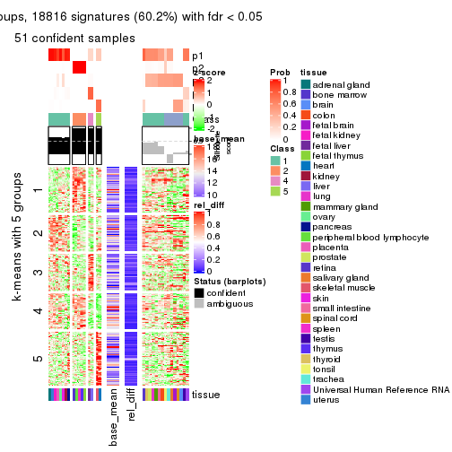
get_signatures(res, k = 6)
Signature heatmaps where rows are not scaled:
get_signatures(res, k = 2, scale_rows = FALSE)
get_signatures(res, k = 3, scale_rows = FALSE)
get_signatures(res, k = 4, scale_rows = FALSE)
get_signatures(res, k = 5, scale_rows = FALSE)
get_signatures(res, k = 6, scale_rows = FALSE)
Compare the overlap of signatures from different k:
compare_signatures(res)
get_signature() returns a data frame invisibly. TO get the list of signatures, the function
call should be assigned to a variable explicitly. In following code, if plot argument is set
to FALSE, no heatmap is plotted while only the differential analysis is performed.
# code only for demonstration
tb = get_signature(res, k = ..., plot = FALSE)
An example of the output of tb is:
#> which_row fdr mean_1 mean_2 scaled_mean_1 scaled_mean_2 km
#> 1 38 0.042760348 8.373488 9.131774 -0.5533452 0.5164555 1
#> 2 40 0.018707592 7.106213 8.469186 -0.6173731 0.5762149 1
#> 3 55 0.019134737 10.221463 11.207825 -0.6159697 0.5749050 1
#> 4 59 0.006059896 5.921854 7.869574 -0.6899429 0.6439467 1
#> 5 60 0.018055526 8.928898 10.211722 -0.6204761 0.5791110 1
#> 6 98 0.009384629 15.714769 14.887706 0.6635654 -0.6193277 2
...
The columns in tb are:
which_row: row indices corresponding to the input matrix.fdr: FDR for the differential test. mean_x: The mean value in group x.scaled_mean_x: The mean value in group x after rows are scaled.km: Row groups if k-means clustering is applied to rows.UMAP plot which shows how samples are separated.
dimension_reduction(res, k = 2, method = "UMAP")
dimension_reduction(res, k = 3, method = "UMAP")
dimension_reduction(res, k = 4, method = "UMAP")
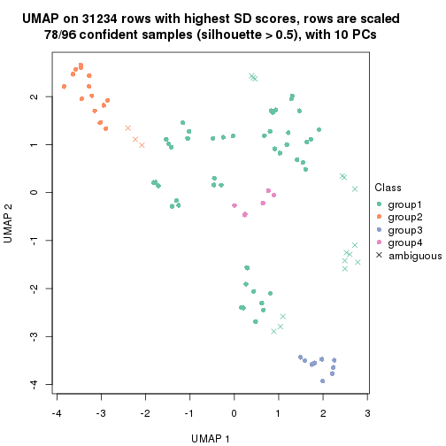
dimension_reduction(res, k = 5, method = "UMAP")
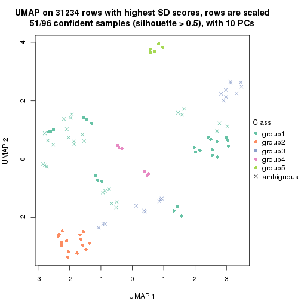
dimension_reduction(res, k = 6, method = "UMAP")
Following heatmap shows how subgroups are split when increasing k:
collect_classes(res)
Test correlation between subgroups and known annotations. If the known annotation is numeric, one-way ANOVA test is applied, and if the known annotation is discrete, chi-squared contingency table test is applied.
test_to_known_factors(res)
#> n tissue(p) k
#> SD:hclust 90 3.64e-08 2
#> SD:hclust 87 5.07e-14 3
#> SD:hclust 78 3.04e-18 4
#> SD:hclust 51 6.92e-13 5
#> SD:hclust 84 5.52e-31 6
If matrix rows can be associated to genes, consider to use functional_enrichment(res,
...) to perform function enrichment for the signature genes. See this vignette for more detailed explanations.
The object with results only for a single top-value method and a single partition method can be extracted as:
res = res_list["SD", "kmeans"]
# you can also extract it by
# res = res_list["SD:kmeans"]
A summary of res and all the functions that can be applied to it:
res
#> A 'ConsensusPartition' object with k = 2, 3, 4, 5, 6.
#> On a matrix with 31234 rows and 96 columns.
#> Top rows (1000, 2000, 3000, 4000, 5000) are extracted by 'SD' method.
#> Subgroups are detected by 'kmeans' method.
#> Performed in total 1250 partitions by row resampling.
#> Best k for subgroups seems to be 5.
#>
#> Following methods can be applied to this 'ConsensusPartition' object:
#> [1] "cola_report" "collect_classes" "collect_plots"
#> [4] "collect_stats" "colnames" "compare_signatures"
#> [7] "consensus_heatmap" "dimension_reduction" "functional_enrichment"
#> [10] "get_anno_col" "get_anno" "get_classes"
#> [13] "get_consensus" "get_matrix" "get_membership"
#> [16] "get_param" "get_signatures" "get_stats"
#> [19] "is_best_k" "is_stable_k" "membership_heatmap"
#> [22] "ncol" "nrow" "plot_ecdf"
#> [25] "rownames" "select_partition_number" "show"
#> [28] "suggest_best_k" "test_to_known_factors"
collect_plots() function collects all the plots made from res for all k (number of partitions)
into one single page to provide an easy and fast comparison between different k.
collect_plots(res)

The plots are:
k and the heatmap of
predicted classes for each k.k.k.k.All the plots in panels can be made by individual functions and they are plotted later in this section.
select_partition_number() produces several plots showing different
statistics for choosing “optimized” k. There are following statistics:
k;k, the area increased is defined as \(A_k - A_{k-1}\).The detailed explanations of these statistics can be found in the cola vignette.
Generally speaking, lower PAC score, higher mean silhouette score or higher
concordance corresponds to better partition. Rand index and Jaccard index
measure how similar the current partition is compared to partition with k-1.
If they are too similar, we won't accept k is better than k-1.
select_partition_number(res)
The numeric values for all these statistics can be obtained by get_stats().
get_stats(res)
#> k 1-PAC mean_silhouette concordance area_increased Rand Jaccard
#> 2 2 0.123 0.309 0.674 0.3581 0.828 0.828
#> 3 3 0.129 0.446 0.625 0.4963 0.530 0.449
#> 4 4 0.268 0.532 0.656 0.1914 0.901 0.765
#> 5 5 0.409 0.477 0.659 0.1158 0.980 0.941
#> 6 6 0.525 0.440 0.637 0.0588 0.913 0.755
suggest_best_k() suggests the best \(k\) based on these statistics. The rules are as follows:
suggest_best_k(res)
#> [1] 5
Following shows the table of the partitions (You need to click the show/hide
code output link to see it). The membership matrix (columns with name p*)
is inferred by
clue::cl_consensus()
function with the SE method. Basically the value in the membership matrix
represents the probability to belong to a certain group. The finall class
label for an item is determined with the group with highest probability it
belongs to.
In get_classes() function, the entropy is calculated from the membership
matrix and the silhouette score is calculated from the consensus matrix.
cbind(get_classes(res, k = 2), get_membership(res, k = 2))
#> class entropy silhouette p1 p2
#> GSM194459 1 0.9775 0.333 0.588 0.412
#> GSM194460 1 0.9775 0.333 0.588 0.412
#> GSM194461 1 0.9775 0.333 0.588 0.412
#> GSM194462 1 0.4815 0.510 0.896 0.104
#> GSM194463 1 0.4815 0.510 0.896 0.104
#> GSM194464 1 0.4815 0.510 0.896 0.104
#> GSM194465 1 0.9358 0.334 0.648 0.352
#> GSM194466 1 0.9358 0.334 0.648 0.352
#> GSM194467 1 0.9358 0.334 0.648 0.352
#> GSM194468 1 0.8443 0.411 0.728 0.272
#> GSM194469 1 0.8443 0.411 0.728 0.272
#> GSM194470 1 0.8443 0.411 0.728 0.272
#> GSM194471 2 0.9996 1.000 0.488 0.512
#> GSM194472 2 0.9996 1.000 0.488 0.512
#> GSM194473 2 0.9996 1.000 0.488 0.512
#> GSM194474 2 0.9996 1.000 0.488 0.512
#> GSM194475 2 0.9996 1.000 0.488 0.512
#> GSM194476 2 0.9996 1.000 0.488 0.512
#> GSM194477 1 0.4431 0.432 0.908 0.092
#> GSM194478 1 0.4431 0.432 0.908 0.092
#> GSM194479 1 0.4431 0.432 0.908 0.092
#> GSM194480 1 0.9460 -0.395 0.636 0.364
#> GSM194481 1 0.9460 -0.395 0.636 0.364
#> GSM194482 1 0.9460 -0.395 0.636 0.364
#> GSM194483 1 0.9460 -0.395 0.636 0.364
#> GSM194484 1 0.9460 -0.395 0.636 0.364
#> GSM194485 1 0.9460 -0.395 0.636 0.364
#> GSM194486 2 0.9996 1.000 0.488 0.512
#> GSM194487 2 0.9996 1.000 0.488 0.512
#> GSM194488 2 0.9996 1.000 0.488 0.512
#> GSM194489 1 0.9248 0.421 0.660 0.340
#> GSM194490 1 0.9248 0.421 0.660 0.340
#> GSM194491 1 0.9248 0.421 0.660 0.340
#> GSM194492 1 0.3431 0.515 0.936 0.064
#> GSM194493 1 0.3431 0.515 0.936 0.064
#> GSM194494 1 0.3431 0.515 0.936 0.064
#> GSM194495 1 0.6801 0.272 0.820 0.180
#> GSM194496 1 0.6801 0.272 0.820 0.180
#> GSM194497 1 0.6801 0.272 0.820 0.180
#> GSM194498 1 0.4690 0.518 0.900 0.100
#> GSM194499 1 0.4690 0.518 0.900 0.100
#> GSM194500 1 0.4690 0.518 0.900 0.100
#> GSM194501 1 0.3274 0.467 0.940 0.060
#> GSM194502 1 0.3274 0.467 0.940 0.060
#> GSM194503 1 0.3274 0.467 0.940 0.060
#> GSM194504 1 0.8763 -0.131 0.704 0.296
#> GSM194505 1 0.8763 -0.131 0.704 0.296
#> GSM194506 1 0.8763 -0.131 0.704 0.296
#> GSM194507 1 0.9661 -0.528 0.608 0.392
#> GSM194508 1 0.9661 -0.528 0.608 0.392
#> GSM194509 1 0.9661 -0.528 0.608 0.392
#> GSM194510 1 0.8443 0.247 0.728 0.272
#> GSM194511 1 0.8443 0.247 0.728 0.272
#> GSM194512 1 0.8443 0.247 0.728 0.272
#> GSM194513 1 0.9522 0.413 0.628 0.372
#> GSM194514 1 0.9522 0.413 0.628 0.372
#> GSM194515 1 0.9522 0.413 0.628 0.372
#> GSM194516 1 0.9580 0.410 0.620 0.380
#> GSM194517 1 0.9580 0.410 0.620 0.380
#> GSM194518 1 0.9580 0.410 0.620 0.380
#> GSM194519 1 0.8499 0.229 0.724 0.276
#> GSM194520 1 0.8499 0.229 0.724 0.276
#> GSM194521 1 0.8499 0.229 0.724 0.276
#> GSM194522 1 0.8499 0.223 0.724 0.276
#> GSM194523 1 0.8499 0.223 0.724 0.276
#> GSM194524 1 0.8499 0.223 0.724 0.276
#> GSM194525 1 0.4939 0.445 0.892 0.108
#> GSM194526 1 0.4939 0.445 0.892 0.108
#> GSM194527 1 0.4939 0.445 0.892 0.108
#> GSM194528 1 0.3733 0.453 0.928 0.072
#> GSM194529 1 0.3733 0.453 0.928 0.072
#> GSM194530 1 0.3733 0.453 0.928 0.072
#> GSM194531 1 0.2778 0.512 0.952 0.048
#> GSM194532 1 0.2778 0.512 0.952 0.048
#> GSM194533 1 0.2778 0.512 0.952 0.048
#> GSM194534 1 0.4161 0.519 0.916 0.084
#> GSM194535 1 0.4161 0.519 0.916 0.084
#> GSM194536 1 0.4161 0.519 0.916 0.084
#> GSM194537 1 0.0672 0.496 0.992 0.008
#> GSM194538 1 0.0672 0.496 0.992 0.008
#> GSM194539 1 0.0672 0.496 0.992 0.008
#> GSM194540 1 0.9552 0.411 0.624 0.376
#> GSM194541 1 0.9552 0.411 0.624 0.376
#> GSM194542 1 0.9552 0.411 0.624 0.376
#> GSM194543 1 0.8813 -0.137 0.700 0.300
#> GSM194544 1 0.8813 -0.137 0.700 0.300
#> GSM194545 1 0.8813 -0.137 0.700 0.300
#> GSM194546 1 0.9608 0.408 0.616 0.384
#> GSM194547 1 0.9608 0.408 0.616 0.384
#> GSM194548 1 0.9608 0.408 0.616 0.384
#> GSM194549 1 0.9608 0.408 0.616 0.384
#> GSM194550 1 0.9608 0.408 0.616 0.384
#> GSM194551 1 0.9608 0.408 0.616 0.384
#> GSM194552 1 0.9983 -0.904 0.524 0.476
#> GSM194553 1 0.9983 -0.904 0.524 0.476
#> GSM194554 1 0.9983 -0.904 0.524 0.476
cbind(get_classes(res, k = 3), get_membership(res, k = 3))
#> class entropy silhouette p1 p2 p3
#> GSM194459 2 0.962 0.076867 0.336 0.448 0.216
#> GSM194460 2 0.962 0.076867 0.336 0.448 0.216
#> GSM194461 2 0.962 0.076867 0.336 0.448 0.216
#> GSM194462 1 0.303 0.489469 0.912 0.076 0.012
#> GSM194463 1 0.303 0.489469 0.912 0.076 0.012
#> GSM194464 1 0.303 0.489469 0.912 0.076 0.012
#> GSM194465 2 0.968 0.000726 0.368 0.416 0.216
#> GSM194466 2 0.968 0.000726 0.368 0.416 0.216
#> GSM194467 2 0.968 0.000726 0.368 0.416 0.216
#> GSM194468 1 0.949 0.288075 0.488 0.292 0.220
#> GSM194469 1 0.949 0.288075 0.488 0.292 0.220
#> GSM194470 1 0.949 0.288075 0.488 0.292 0.220
#> GSM194471 3 0.621 0.776341 0.200 0.048 0.752
#> GSM194472 3 0.621 0.776341 0.200 0.048 0.752
#> GSM194473 3 0.621 0.776341 0.200 0.048 0.752
#> GSM194474 3 0.621 0.776341 0.200 0.048 0.752
#> GSM194475 3 0.621 0.776341 0.200 0.048 0.752
#> GSM194476 3 0.621 0.776341 0.200 0.048 0.752
#> GSM194477 1 0.460 0.552592 0.832 0.016 0.152
#> GSM194478 1 0.460 0.552592 0.832 0.016 0.152
#> GSM194479 1 0.460 0.552592 0.832 0.016 0.152
#> GSM194480 3 0.789 0.617240 0.372 0.064 0.564
#> GSM194481 3 0.789 0.617240 0.372 0.064 0.564
#> GSM194482 3 0.789 0.617240 0.372 0.064 0.564
#> GSM194483 3 0.782 0.618225 0.376 0.060 0.564
#> GSM194484 3 0.782 0.618225 0.376 0.060 0.564
#> GSM194485 3 0.782 0.618225 0.376 0.060 0.564
#> GSM194486 3 0.621 0.776341 0.200 0.048 0.752
#> GSM194487 3 0.621 0.776341 0.200 0.048 0.752
#> GSM194488 3 0.621 0.776341 0.200 0.048 0.752
#> GSM194489 1 0.704 -0.454397 0.576 0.400 0.024
#> GSM194490 1 0.704 -0.454397 0.576 0.400 0.024
#> GSM194491 1 0.704 -0.454397 0.576 0.400 0.024
#> GSM194492 1 0.266 0.524859 0.932 0.044 0.024
#> GSM194493 1 0.266 0.524859 0.932 0.044 0.024
#> GSM194494 1 0.266 0.524859 0.932 0.044 0.024
#> GSM194495 1 0.651 0.306703 0.676 0.024 0.300
#> GSM194496 1 0.651 0.306703 0.676 0.024 0.300
#> GSM194497 1 0.651 0.306703 0.676 0.024 0.300
#> GSM194498 1 0.336 0.484672 0.900 0.084 0.016
#> GSM194499 1 0.336 0.484672 0.900 0.084 0.016
#> GSM194500 1 0.336 0.484672 0.900 0.084 0.016
#> GSM194501 1 0.487 0.555177 0.824 0.024 0.152
#> GSM194502 1 0.487 0.555177 0.824 0.024 0.152
#> GSM194503 1 0.487 0.555177 0.824 0.024 0.152
#> GSM194504 1 0.749 -0.326394 0.488 0.036 0.476
#> GSM194505 1 0.749 -0.326394 0.488 0.036 0.476
#> GSM194506 1 0.749 -0.326394 0.488 0.036 0.476
#> GSM194507 3 0.766 0.639264 0.356 0.056 0.588
#> GSM194508 3 0.766 0.639264 0.356 0.056 0.588
#> GSM194509 3 0.766 0.639264 0.356 0.056 0.588
#> GSM194510 1 0.908 0.320271 0.552 0.216 0.232
#> GSM194511 1 0.908 0.320271 0.552 0.216 0.232
#> GSM194512 1 0.908 0.320271 0.552 0.216 0.232
#> GSM194513 2 0.761 0.693507 0.420 0.536 0.044
#> GSM194514 2 0.761 0.693507 0.420 0.536 0.044
#> GSM194515 2 0.761 0.693507 0.420 0.536 0.044
#> GSM194516 2 0.776 0.695573 0.408 0.540 0.052
#> GSM194517 2 0.776 0.695573 0.408 0.540 0.052
#> GSM194518 2 0.776 0.695573 0.408 0.540 0.052
#> GSM194519 1 0.901 0.306452 0.556 0.188 0.256
#> GSM194520 1 0.901 0.306452 0.556 0.188 0.256
#> GSM194521 1 0.901 0.306452 0.556 0.188 0.256
#> GSM194522 1 0.898 0.284681 0.556 0.180 0.264
#> GSM194523 1 0.898 0.284681 0.556 0.180 0.264
#> GSM194524 1 0.898 0.284681 0.556 0.180 0.264
#> GSM194525 1 0.627 0.539876 0.768 0.076 0.156
#> GSM194526 1 0.627 0.539876 0.768 0.076 0.156
#> GSM194527 1 0.627 0.539876 0.768 0.076 0.156
#> GSM194528 1 0.375 0.578259 0.872 0.008 0.120
#> GSM194529 1 0.375 0.578259 0.872 0.008 0.120
#> GSM194530 1 0.375 0.578259 0.872 0.008 0.120
#> GSM194531 1 0.256 0.537859 0.936 0.036 0.028
#> GSM194532 1 0.256 0.537859 0.936 0.036 0.028
#> GSM194533 1 0.256 0.537859 0.936 0.036 0.028
#> GSM194534 1 0.327 0.490409 0.904 0.080 0.016
#> GSM194535 1 0.327 0.490409 0.904 0.080 0.016
#> GSM194536 1 0.327 0.490409 0.904 0.080 0.016
#> GSM194537 1 0.258 0.594423 0.928 0.008 0.064
#> GSM194538 1 0.258 0.594423 0.928 0.008 0.064
#> GSM194539 1 0.258 0.594423 0.928 0.008 0.064
#> GSM194540 2 0.751 0.696064 0.416 0.544 0.040
#> GSM194541 2 0.751 0.696064 0.416 0.544 0.040
#> GSM194542 2 0.751 0.696064 0.416 0.544 0.040
#> GSM194543 1 0.740 -0.335834 0.492 0.032 0.476
#> GSM194544 1 0.740 -0.335834 0.492 0.032 0.476
#> GSM194545 1 0.740 -0.335834 0.492 0.032 0.476
#> GSM194546 2 0.767 0.699162 0.408 0.544 0.048
#> GSM194547 2 0.767 0.699162 0.408 0.544 0.048
#> GSM194548 2 0.767 0.699162 0.408 0.544 0.048
#> GSM194549 2 0.757 0.697371 0.404 0.552 0.044
#> GSM194550 2 0.757 0.697371 0.404 0.552 0.044
#> GSM194551 2 0.757 0.697371 0.404 0.552 0.044
#> GSM194552 3 0.562 0.760341 0.280 0.004 0.716
#> GSM194553 3 0.562 0.760341 0.280 0.004 0.716
#> GSM194554 3 0.562 0.760341 0.280 0.004 0.716
cbind(get_classes(res, k = 4), get_membership(res, k = 4))
#> class entropy silhouette p1 p2 p3 p4
#> GSM194459 4 0.678 0.7854 0.132 0.096 0.076 0.696
#> GSM194460 4 0.678 0.7854 0.132 0.096 0.076 0.696
#> GSM194461 4 0.678 0.7854 0.132 0.096 0.076 0.696
#> GSM194462 1 0.344 0.5915 0.864 0.100 0.000 0.036
#> GSM194463 1 0.344 0.5915 0.864 0.100 0.000 0.036
#> GSM194464 1 0.344 0.5915 0.864 0.100 0.000 0.036
#> GSM194465 4 0.666 0.7862 0.172 0.064 0.072 0.692
#> GSM194466 4 0.666 0.7862 0.172 0.064 0.072 0.692
#> GSM194467 4 0.666 0.7862 0.172 0.064 0.072 0.692
#> GSM194468 4 0.932 0.4821 0.336 0.136 0.152 0.376
#> GSM194469 4 0.932 0.4821 0.336 0.136 0.152 0.376
#> GSM194470 4 0.932 0.4821 0.336 0.136 0.152 0.376
#> GSM194471 3 0.322 0.6870 0.128 0.012 0.860 0.000
#> GSM194472 3 0.322 0.6870 0.128 0.012 0.860 0.000
#> GSM194473 3 0.322 0.6870 0.128 0.012 0.860 0.000
#> GSM194474 3 0.434 0.6816 0.128 0.024 0.824 0.024
#> GSM194475 3 0.434 0.6816 0.128 0.024 0.824 0.024
#> GSM194476 3 0.434 0.6816 0.128 0.024 0.824 0.024
#> GSM194477 1 0.242 0.6258 0.928 0.016 0.028 0.028
#> GSM194478 1 0.242 0.6258 0.928 0.016 0.028 0.028
#> GSM194479 1 0.242 0.6258 0.928 0.016 0.028 0.028
#> GSM194480 3 0.842 0.4917 0.356 0.044 0.432 0.168
#> GSM194481 3 0.842 0.4917 0.356 0.044 0.432 0.168
#> GSM194482 3 0.842 0.4917 0.356 0.044 0.432 0.168
#> GSM194483 3 0.843 0.4845 0.364 0.044 0.424 0.168
#> GSM194484 3 0.843 0.4845 0.364 0.044 0.424 0.168
#> GSM194485 3 0.843 0.4845 0.364 0.044 0.424 0.168
#> GSM194486 3 0.340 0.6870 0.128 0.012 0.856 0.004
#> GSM194487 3 0.340 0.6870 0.128 0.012 0.856 0.004
#> GSM194488 3 0.340 0.6870 0.128 0.012 0.856 0.004
#> GSM194489 2 0.707 0.3769 0.452 0.464 0.036 0.048
#> GSM194490 2 0.707 0.3769 0.452 0.464 0.036 0.048
#> GSM194491 2 0.707 0.3769 0.452 0.464 0.036 0.048
#> GSM194492 1 0.410 0.5771 0.848 0.084 0.016 0.052
#> GSM194493 1 0.410 0.5771 0.848 0.084 0.016 0.052
#> GSM194494 1 0.410 0.5771 0.848 0.084 0.016 0.052
#> GSM194495 1 0.574 0.4779 0.744 0.032 0.164 0.060
#> GSM194496 1 0.574 0.4779 0.744 0.032 0.164 0.060
#> GSM194497 1 0.574 0.4779 0.744 0.032 0.164 0.060
#> GSM194498 1 0.521 0.5261 0.776 0.088 0.012 0.124
#> GSM194499 1 0.521 0.5261 0.776 0.088 0.012 0.124
#> GSM194500 1 0.521 0.5261 0.776 0.088 0.012 0.124
#> GSM194501 1 0.489 0.5739 0.812 0.044 0.096 0.048
#> GSM194502 1 0.489 0.5739 0.812 0.044 0.096 0.048
#> GSM194503 1 0.489 0.5739 0.812 0.044 0.096 0.048
#> GSM194504 1 0.780 -0.1265 0.504 0.040 0.348 0.108
#> GSM194505 1 0.780 -0.1265 0.504 0.040 0.348 0.108
#> GSM194506 1 0.780 -0.1265 0.504 0.040 0.348 0.108
#> GSM194507 3 0.821 0.4857 0.344 0.060 0.480 0.116
#> GSM194508 3 0.821 0.4857 0.344 0.060 0.480 0.116
#> GSM194509 3 0.821 0.4857 0.344 0.060 0.480 0.116
#> GSM194510 1 0.780 0.0300 0.500 0.028 0.132 0.340
#> GSM194511 1 0.780 0.0300 0.500 0.028 0.132 0.340
#> GSM194512 1 0.780 0.0300 0.500 0.028 0.132 0.340
#> GSM194513 2 0.341 0.8668 0.096 0.872 0.024 0.008
#> GSM194514 2 0.341 0.8668 0.096 0.872 0.024 0.008
#> GSM194515 2 0.341 0.8668 0.096 0.872 0.024 0.008
#> GSM194516 2 0.341 0.8665 0.096 0.872 0.024 0.008
#> GSM194517 2 0.341 0.8665 0.096 0.872 0.024 0.008
#> GSM194518 2 0.341 0.8665 0.096 0.872 0.024 0.008
#> GSM194519 1 0.810 0.0354 0.464 0.028 0.168 0.340
#> GSM194520 1 0.810 0.0354 0.464 0.028 0.168 0.340
#> GSM194521 1 0.810 0.0354 0.464 0.028 0.168 0.340
#> GSM194522 1 0.823 0.0856 0.472 0.032 0.188 0.308
#> GSM194523 1 0.823 0.0856 0.472 0.032 0.188 0.308
#> GSM194524 1 0.823 0.0856 0.472 0.032 0.188 0.308
#> GSM194525 1 0.689 0.4724 0.676 0.052 0.108 0.164
#> GSM194526 1 0.689 0.4724 0.676 0.052 0.108 0.164
#> GSM194527 1 0.689 0.4724 0.676 0.052 0.108 0.164
#> GSM194528 1 0.310 0.6243 0.900 0.024 0.028 0.048
#> GSM194529 1 0.310 0.6243 0.900 0.024 0.028 0.048
#> GSM194530 1 0.310 0.6243 0.900 0.024 0.028 0.048
#> GSM194531 1 0.415 0.5878 0.848 0.056 0.020 0.076
#> GSM194532 1 0.415 0.5878 0.848 0.056 0.020 0.076
#> GSM194533 1 0.415 0.5878 0.848 0.056 0.020 0.076
#> GSM194534 1 0.515 0.5309 0.780 0.084 0.012 0.124
#> GSM194535 1 0.515 0.5309 0.780 0.084 0.012 0.124
#> GSM194536 1 0.515 0.5309 0.780 0.084 0.012 0.124
#> GSM194537 1 0.210 0.6221 0.936 0.044 0.008 0.012
#> GSM194538 1 0.210 0.6221 0.936 0.044 0.008 0.012
#> GSM194539 1 0.210 0.6221 0.936 0.044 0.008 0.012
#> GSM194540 2 0.240 0.8698 0.092 0.904 0.004 0.000
#> GSM194541 2 0.240 0.8698 0.092 0.904 0.004 0.000
#> GSM194542 2 0.240 0.8698 0.092 0.904 0.004 0.000
#> GSM194543 1 0.769 -0.1664 0.492 0.036 0.372 0.100
#> GSM194544 1 0.769 -0.1664 0.492 0.036 0.372 0.100
#> GSM194545 1 0.769 -0.1664 0.492 0.036 0.372 0.100
#> GSM194546 2 0.357 0.8581 0.084 0.872 0.020 0.024
#> GSM194547 2 0.357 0.8581 0.084 0.872 0.020 0.024
#> GSM194548 2 0.357 0.8581 0.084 0.872 0.020 0.024
#> GSM194549 2 0.335 0.8594 0.084 0.880 0.016 0.020
#> GSM194550 2 0.335 0.8594 0.084 0.880 0.016 0.020
#> GSM194551 2 0.335 0.8594 0.084 0.880 0.016 0.020
#> GSM194552 3 0.554 0.6731 0.276 0.012 0.684 0.028
#> GSM194553 3 0.554 0.6731 0.276 0.012 0.684 0.028
#> GSM194554 3 0.554 0.6731 0.276 0.012 0.684 0.028
cbind(get_classes(res, k = 5), get_membership(res, k = 5))
#> class entropy silhouette p1 p2 p3 p4 p5
#> GSM194459 4 0.408 0.8009 0.104 0.048 0.032 0.816 0.000
#> GSM194460 4 0.408 0.8009 0.104 0.048 0.032 0.816 0.000
#> GSM194461 4 0.408 0.8009 0.104 0.048 0.032 0.816 0.000
#> GSM194462 1 0.420 0.5207 0.800 0.136 0.004 0.016 0.044
#> GSM194463 1 0.420 0.5207 0.800 0.136 0.004 0.016 0.044
#> GSM194464 1 0.420 0.5207 0.800 0.136 0.004 0.016 0.044
#> GSM194465 4 0.470 0.8017 0.132 0.028 0.036 0.784 0.020
#> GSM194466 4 0.470 0.8017 0.132 0.028 0.036 0.784 0.020
#> GSM194467 4 0.470 0.8017 0.132 0.028 0.036 0.784 0.020
#> GSM194468 4 0.859 0.5515 0.268 0.052 0.092 0.428 0.160
#> GSM194469 4 0.859 0.5515 0.268 0.052 0.092 0.428 0.160
#> GSM194470 4 0.859 0.5515 0.268 0.052 0.092 0.428 0.160
#> GSM194471 3 0.136 0.6947 0.048 0.000 0.948 0.000 0.004
#> GSM194472 3 0.136 0.6947 0.048 0.000 0.948 0.000 0.004
#> GSM194473 3 0.136 0.6947 0.048 0.000 0.948 0.000 0.004
#> GSM194474 3 0.188 0.6926 0.048 0.000 0.932 0.008 0.012
#> GSM194475 3 0.188 0.6926 0.048 0.000 0.932 0.008 0.012
#> GSM194476 3 0.188 0.6926 0.048 0.000 0.932 0.008 0.012
#> GSM194477 1 0.330 0.5258 0.876 0.012 0.028 0.028 0.056
#> GSM194478 1 0.330 0.5258 0.876 0.012 0.028 0.028 0.056
#> GSM194479 1 0.330 0.5258 0.876 0.012 0.028 0.028 0.056
#> GSM194480 5 0.753 0.9831 0.224 0.004 0.284 0.044 0.444
#> GSM194481 5 0.753 0.9831 0.224 0.004 0.284 0.044 0.444
#> GSM194482 5 0.753 0.9831 0.224 0.004 0.284 0.044 0.444
#> GSM194483 5 0.740 0.9830 0.232 0.004 0.288 0.032 0.444
#> GSM194484 5 0.740 0.9830 0.232 0.004 0.288 0.032 0.444
#> GSM194485 5 0.740 0.9830 0.232 0.004 0.288 0.032 0.444
#> GSM194486 3 0.204 0.6923 0.048 0.004 0.928 0.008 0.012
#> GSM194487 3 0.204 0.6923 0.048 0.004 0.928 0.008 0.012
#> GSM194488 3 0.204 0.6923 0.048 0.004 0.928 0.008 0.012
#> GSM194489 2 0.714 0.1971 0.396 0.404 0.000 0.036 0.164
#> GSM194490 2 0.714 0.1971 0.396 0.404 0.000 0.036 0.164
#> GSM194491 2 0.714 0.1971 0.396 0.404 0.000 0.036 0.164
#> GSM194492 1 0.510 0.4786 0.748 0.088 0.004 0.028 0.132
#> GSM194493 1 0.510 0.4786 0.748 0.088 0.004 0.028 0.132
#> GSM194494 1 0.510 0.4786 0.748 0.088 0.004 0.028 0.132
#> GSM194495 1 0.653 0.2991 0.656 0.012 0.132 0.076 0.124
#> GSM194496 1 0.653 0.2991 0.656 0.012 0.132 0.076 0.124
#> GSM194497 1 0.653 0.2991 0.656 0.012 0.132 0.076 0.124
#> GSM194498 1 0.606 0.4524 0.696 0.100 0.008 0.088 0.108
#> GSM194499 1 0.606 0.4524 0.696 0.100 0.008 0.088 0.108
#> GSM194500 1 0.606 0.4524 0.696 0.100 0.008 0.088 0.108
#> GSM194501 1 0.577 0.4538 0.732 0.032 0.064 0.060 0.112
#> GSM194502 1 0.577 0.4538 0.732 0.032 0.064 0.060 0.112
#> GSM194503 1 0.577 0.4538 0.732 0.032 0.064 0.060 0.112
#> GSM194504 1 0.807 -0.2809 0.388 0.008 0.340 0.100 0.164
#> GSM194505 1 0.807 -0.2809 0.388 0.008 0.340 0.100 0.164
#> GSM194506 1 0.807 -0.2809 0.388 0.008 0.340 0.100 0.164
#> GSM194507 3 0.814 0.0675 0.204 0.000 0.428 0.172 0.196
#> GSM194508 3 0.814 0.0675 0.204 0.000 0.428 0.172 0.196
#> GSM194509 3 0.814 0.0675 0.204 0.000 0.428 0.172 0.196
#> GSM194510 1 0.799 -0.1256 0.396 0.008 0.088 0.340 0.168
#> GSM194511 1 0.799 -0.1256 0.396 0.008 0.088 0.340 0.168
#> GSM194512 1 0.799 -0.1256 0.396 0.008 0.088 0.340 0.168
#> GSM194513 2 0.246 0.8444 0.024 0.916 0.012 0.012 0.036
#> GSM194514 2 0.246 0.8444 0.024 0.916 0.012 0.012 0.036
#> GSM194515 2 0.246 0.8444 0.024 0.916 0.012 0.012 0.036
#> GSM194516 2 0.261 0.8418 0.024 0.908 0.012 0.012 0.044
#> GSM194517 2 0.261 0.8418 0.024 0.908 0.012 0.012 0.044
#> GSM194518 2 0.261 0.8418 0.024 0.908 0.012 0.012 0.044
#> GSM194519 1 0.808 -0.1004 0.388 0.012 0.112 0.356 0.132
#> GSM194520 1 0.808 -0.1004 0.388 0.012 0.112 0.356 0.132
#> GSM194521 1 0.808 -0.1004 0.388 0.012 0.112 0.356 0.132
#> GSM194522 1 0.812 -0.0570 0.380 0.004 0.136 0.336 0.144
#> GSM194523 1 0.812 -0.0570 0.380 0.004 0.136 0.336 0.144
#> GSM194524 1 0.812 -0.0570 0.380 0.004 0.136 0.336 0.144
#> GSM194525 1 0.710 0.3804 0.604 0.028 0.056 0.176 0.136
#> GSM194526 1 0.710 0.3804 0.604 0.028 0.056 0.176 0.136
#> GSM194527 1 0.710 0.3804 0.604 0.028 0.056 0.176 0.136
#> GSM194528 1 0.461 0.5198 0.800 0.040 0.024 0.032 0.104
#> GSM194529 1 0.461 0.5198 0.800 0.040 0.024 0.032 0.104
#> GSM194530 1 0.461 0.5198 0.800 0.040 0.024 0.032 0.104
#> GSM194531 1 0.523 0.4839 0.748 0.060 0.008 0.048 0.136
#> GSM194532 1 0.523 0.4839 0.748 0.060 0.008 0.048 0.136
#> GSM194533 1 0.523 0.4839 0.748 0.060 0.008 0.048 0.136
#> GSM194534 1 0.586 0.4645 0.712 0.092 0.008 0.084 0.104
#> GSM194535 1 0.586 0.4645 0.712 0.092 0.008 0.084 0.104
#> GSM194536 1 0.586 0.4645 0.712 0.092 0.008 0.084 0.104
#> GSM194537 1 0.323 0.5423 0.880 0.056 0.020 0.024 0.020
#> GSM194538 1 0.323 0.5423 0.880 0.056 0.020 0.024 0.020
#> GSM194539 1 0.323 0.5423 0.880 0.056 0.020 0.024 0.020
#> GSM194540 2 0.139 0.8486 0.024 0.956 0.012 0.008 0.000
#> GSM194541 2 0.139 0.8486 0.024 0.956 0.012 0.008 0.000
#> GSM194542 2 0.139 0.8486 0.024 0.956 0.012 0.008 0.000
#> GSM194543 1 0.809 -0.2904 0.372 0.008 0.360 0.112 0.148
#> GSM194544 1 0.809 -0.2904 0.372 0.008 0.360 0.112 0.148
#> GSM194545 1 0.809 -0.2904 0.372 0.008 0.360 0.112 0.148
#> GSM194546 2 0.259 0.8396 0.020 0.912 0.020 0.016 0.032
#> GSM194547 2 0.259 0.8396 0.020 0.912 0.020 0.016 0.032
#> GSM194548 2 0.259 0.8396 0.020 0.912 0.020 0.016 0.032
#> GSM194549 2 0.251 0.8406 0.020 0.916 0.020 0.020 0.024
#> GSM194550 2 0.251 0.8406 0.020 0.916 0.020 0.020 0.024
#> GSM194551 2 0.251 0.8406 0.020 0.916 0.020 0.020 0.024
#> GSM194552 3 0.629 0.3309 0.204 0.004 0.640 0.048 0.104
#> GSM194553 3 0.629 0.3309 0.204 0.004 0.640 0.048 0.104
#> GSM194554 3 0.629 0.3309 0.204 0.004 0.640 0.048 0.104
cbind(get_classes(res, k = 6), get_membership(res, k = 6))
#> class entropy silhouette p1 p2 p3 p4 p5 p6
#> GSM194459 4 0.364 0.630341 0.024 0.024 0.032 0.852 0.024 NA
#> GSM194460 4 0.364 0.630341 0.024 0.024 0.032 0.852 0.024 NA
#> GSM194461 4 0.364 0.630341 0.024 0.024 0.032 0.852 0.024 NA
#> GSM194462 1 0.475 0.458220 0.752 0.076 0.004 0.020 0.020 NA
#> GSM194463 1 0.475 0.458220 0.752 0.076 0.004 0.020 0.020 NA
#> GSM194464 1 0.475 0.458220 0.752 0.076 0.004 0.020 0.020 NA
#> GSM194465 4 0.269 0.638742 0.048 0.020 0.024 0.892 0.016 NA
#> GSM194466 4 0.269 0.638742 0.048 0.020 0.024 0.892 0.016 NA
#> GSM194467 4 0.269 0.638742 0.048 0.020 0.024 0.892 0.016 NA
#> GSM194468 4 0.933 0.355305 0.188 0.060 0.080 0.300 0.176 NA
#> GSM194469 4 0.933 0.355305 0.188 0.060 0.080 0.300 0.176 NA
#> GSM194470 4 0.933 0.355305 0.188 0.060 0.080 0.300 0.176 NA
#> GSM194471 3 0.127 0.815604 0.036 0.008 0.952 0.000 0.004 NA
#> GSM194472 3 0.127 0.815604 0.036 0.008 0.952 0.000 0.004 NA
#> GSM194473 3 0.127 0.815604 0.036 0.008 0.952 0.000 0.004 NA
#> GSM194474 3 0.222 0.805976 0.036 0.012 0.916 0.000 0.016 NA
#> GSM194475 3 0.222 0.805976 0.036 0.012 0.916 0.000 0.016 NA
#> GSM194476 3 0.222 0.805976 0.036 0.012 0.916 0.000 0.016 NA
#> GSM194477 1 0.360 0.476595 0.844 0.004 0.036 0.012 0.060 NA
#> GSM194478 1 0.360 0.476595 0.844 0.004 0.036 0.012 0.060 NA
#> GSM194479 1 0.360 0.476595 0.844 0.004 0.036 0.012 0.060 NA
#> GSM194480 5 0.576 0.754788 0.136 0.012 0.216 0.020 0.616 NA
#> GSM194481 5 0.576 0.754788 0.136 0.012 0.216 0.020 0.616 NA
#> GSM194482 5 0.576 0.754788 0.136 0.012 0.216 0.020 0.616 NA
#> GSM194483 5 0.630 0.755840 0.136 0.016 0.224 0.036 0.584 NA
#> GSM194484 5 0.630 0.755840 0.136 0.016 0.224 0.036 0.584 NA
#> GSM194485 5 0.630 0.755840 0.136 0.016 0.224 0.036 0.584 NA
#> GSM194486 3 0.153 0.814989 0.036 0.008 0.944 0.000 0.008 NA
#> GSM194487 3 0.153 0.814989 0.036 0.008 0.944 0.000 0.008 NA
#> GSM194488 3 0.153 0.814989 0.036 0.008 0.944 0.000 0.008 NA
#> GSM194489 1 0.637 -0.000224 0.384 0.324 0.000 0.000 0.012 NA
#> GSM194490 1 0.637 -0.000224 0.384 0.324 0.000 0.000 0.012 NA
#> GSM194491 1 0.637 -0.000224 0.384 0.324 0.000 0.000 0.012 NA
#> GSM194492 1 0.434 0.439095 0.712 0.036 0.000 0.012 0.004 NA
#> GSM194493 1 0.434 0.439095 0.712 0.036 0.000 0.012 0.004 NA
#> GSM194494 1 0.434 0.439095 0.712 0.036 0.000 0.012 0.004 NA
#> GSM194495 1 0.660 0.093244 0.576 0.024 0.104 0.012 0.236 NA
#> GSM194496 1 0.660 0.093244 0.576 0.024 0.104 0.012 0.236 NA
#> GSM194497 1 0.660 0.093244 0.576 0.024 0.104 0.012 0.236 NA
#> GSM194498 1 0.586 0.394851 0.636 0.052 0.004 0.080 0.012 NA
#> GSM194499 1 0.586 0.394851 0.636 0.052 0.004 0.080 0.012 NA
#> GSM194500 1 0.586 0.394851 0.636 0.052 0.004 0.080 0.012 NA
#> GSM194501 1 0.600 0.366478 0.680 0.036 0.048 0.016 0.088 NA
#> GSM194502 1 0.600 0.366478 0.680 0.036 0.048 0.016 0.088 NA
#> GSM194503 1 0.600 0.366478 0.680 0.036 0.048 0.016 0.088 NA
#> GSM194504 1 0.794 -0.423411 0.336 0.024 0.256 0.032 0.304 NA
#> GSM194505 1 0.794 -0.423411 0.336 0.024 0.256 0.032 0.304 NA
#> GSM194506 1 0.794 -0.423411 0.336 0.024 0.256 0.032 0.304 NA
#> GSM194507 5 0.877 0.470160 0.168 0.032 0.304 0.068 0.308 NA
#> GSM194508 5 0.877 0.470160 0.168 0.032 0.304 0.068 0.308 NA
#> GSM194509 5 0.877 0.470160 0.168 0.032 0.304 0.068 0.308 NA
#> GSM194510 4 0.818 0.337850 0.292 0.004 0.060 0.356 0.104 NA
#> GSM194511 4 0.818 0.337850 0.292 0.004 0.060 0.356 0.104 NA
#> GSM194512 4 0.818 0.337850 0.292 0.004 0.060 0.356 0.104 NA
#> GSM194513 2 0.320 0.893412 0.028 0.848 0.000 0.000 0.036 NA
#> GSM194514 2 0.320 0.893412 0.028 0.848 0.000 0.000 0.036 NA
#> GSM194515 2 0.320 0.893412 0.028 0.848 0.000 0.000 0.036 NA
#> GSM194516 2 0.315 0.896006 0.028 0.852 0.000 0.000 0.036 NA
#> GSM194517 2 0.315 0.896006 0.028 0.852 0.000 0.000 0.036 NA
#> GSM194518 2 0.315 0.896006 0.028 0.852 0.000 0.000 0.036 NA
#> GSM194519 1 0.837 -0.186766 0.340 0.008 0.108 0.320 0.124 NA
#> GSM194520 1 0.837 -0.186766 0.340 0.008 0.108 0.320 0.124 NA
#> GSM194521 1 0.837 -0.186766 0.340 0.008 0.108 0.320 0.124 NA
#> GSM194522 1 0.846 -0.166661 0.332 0.004 0.112 0.296 0.152 NA
#> GSM194523 1 0.846 -0.166661 0.332 0.004 0.112 0.296 0.152 NA
#> GSM194524 1 0.846 -0.166661 0.332 0.004 0.112 0.296 0.152 NA
#> GSM194525 1 0.772 0.212939 0.512 0.028 0.056 0.068 0.148 NA
#> GSM194526 1 0.772 0.212939 0.512 0.028 0.056 0.068 0.148 NA
#> GSM194527 1 0.772 0.212939 0.512 0.028 0.056 0.068 0.148 NA
#> GSM194528 1 0.407 0.471458 0.808 0.004 0.032 0.008 0.072 NA
#> GSM194529 1 0.407 0.471458 0.808 0.004 0.032 0.008 0.072 NA
#> GSM194530 1 0.407 0.471458 0.808 0.004 0.032 0.008 0.072 NA
#> GSM194531 1 0.510 0.422875 0.664 0.028 0.000 0.016 0.040 NA
#> GSM194532 1 0.510 0.422875 0.664 0.028 0.000 0.016 0.040 NA
#> GSM194533 1 0.510 0.422875 0.664 0.028 0.000 0.016 0.040 NA
#> GSM194534 1 0.586 0.394851 0.636 0.052 0.004 0.080 0.012 NA
#> GSM194535 1 0.586 0.394851 0.636 0.052 0.004 0.080 0.012 NA
#> GSM194536 1 0.586 0.394851 0.636 0.052 0.004 0.080 0.012 NA
#> GSM194537 1 0.303 0.489465 0.880 0.012 0.024 0.012 0.024 NA
#> GSM194538 1 0.303 0.489465 0.880 0.012 0.024 0.012 0.024 NA
#> GSM194539 1 0.303 0.489465 0.880 0.012 0.024 0.012 0.024 NA
#> GSM194540 2 0.178 0.909927 0.020 0.940 0.008 0.008 0.008 NA
#> GSM194541 2 0.178 0.909927 0.020 0.940 0.008 0.008 0.008 NA
#> GSM194542 2 0.178 0.909927 0.020 0.940 0.008 0.008 0.008 NA
#> GSM194543 1 0.787 -0.449818 0.320 0.028 0.292 0.024 0.292 NA
#> GSM194544 1 0.787 -0.449818 0.320 0.028 0.292 0.024 0.292 NA
#> GSM194545 1 0.787 -0.449818 0.320 0.028 0.292 0.024 0.292 NA
#> GSM194546 2 0.317 0.892675 0.016 0.872 0.008 0.024 0.028 NA
#> GSM194547 2 0.317 0.892675 0.016 0.872 0.008 0.024 0.028 NA
#> GSM194548 2 0.317 0.892675 0.016 0.872 0.008 0.024 0.028 NA
#> GSM194549 2 0.283 0.901954 0.020 0.892 0.008 0.020 0.024 NA
#> GSM194550 2 0.283 0.901954 0.020 0.892 0.008 0.020 0.024 NA
#> GSM194551 2 0.283 0.901954 0.020 0.892 0.008 0.020 0.024 NA
#> GSM194552 3 0.638 0.219127 0.188 0.012 0.592 0.012 0.160 NA
#> GSM194553 3 0.638 0.219127 0.188 0.012 0.592 0.012 0.160 NA
#> GSM194554 3 0.638 0.219127 0.188 0.012 0.592 0.012 0.160 NA
Heatmaps for the consensus matrix. It visualizes the probability of two samples to be in a same group.
consensus_heatmap(res, k = 2)
consensus_heatmap(res, k = 3)

consensus_heatmap(res, k = 4)
consensus_heatmap(res, k = 5)
consensus_heatmap(res, k = 6)
Heatmaps for the membership of samples in all partitions to see how consistent they are:
membership_heatmap(res, k = 2)
membership_heatmap(res, k = 3)
membership_heatmap(res, k = 4)
membership_heatmap(res, k = 5)
membership_heatmap(res, k = 6)
As soon as we have had the classes for columns, we can look for signatures which are significantly different between classes which can be candidate marks for certain classes. Following are the heatmaps for signatures.
Signature heatmaps where rows are scaled:
get_signatures(res, k = 2)
get_signatures(res, k = 3)
get_signatures(res, k = 4)
get_signatures(res, k = 5)
get_signatures(res, k = 6)
Signature heatmaps where rows are not scaled:
get_signatures(res, k = 2, scale_rows = FALSE)
get_signatures(res, k = 3, scale_rows = FALSE)
get_signatures(res, k = 4, scale_rows = FALSE)
get_signatures(res, k = 5, scale_rows = FALSE)
get_signatures(res, k = 6, scale_rows = FALSE)
Compare the overlap of signatures from different k:
compare_signatures(res)
get_signature() returns a data frame invisibly. TO get the list of signatures, the function
call should be assigned to a variable explicitly. In following code, if plot argument is set
to FALSE, no heatmap is plotted while only the differential analysis is performed.
# code only for demonstration
tb = get_signature(res, k = ..., plot = FALSE)
An example of the output of tb is:
#> which_row fdr mean_1 mean_2 scaled_mean_1 scaled_mean_2 km
#> 1 38 0.042760348 8.373488 9.131774 -0.5533452 0.5164555 1
#> 2 40 0.018707592 7.106213 8.469186 -0.6173731 0.5762149 1
#> 3 55 0.019134737 10.221463 11.207825 -0.6159697 0.5749050 1
#> 4 59 0.006059896 5.921854 7.869574 -0.6899429 0.6439467 1
#> 5 60 0.018055526 8.928898 10.211722 -0.6204761 0.5791110 1
#> 6 98 0.009384629 15.714769 14.887706 0.6635654 -0.6193277 2
...
The columns in tb are:
which_row: row indices corresponding to the input matrix.fdr: FDR for the differential test. mean_x: The mean value in group x.scaled_mean_x: The mean value in group x after rows are scaled.km: Row groups if k-means clustering is applied to rows.UMAP plot which shows how samples are separated.
dimension_reduction(res, k = 2, method = "UMAP")
dimension_reduction(res, k = 3, method = "UMAP")
dimension_reduction(res, k = 4, method = "UMAP")
dimension_reduction(res, k = 5, method = "UMAP")
dimension_reduction(res, k = 6, method = "UMAP")

Following heatmap shows how subgroups are split when increasing k:
collect_classes(res)
Test correlation between subgroups and known annotations. If the known annotation is numeric, one-way ANOVA test is applied, and if the known annotation is discrete, chi-squared contingency table test is applied.
test_to_known_factors(res)
#> n tissue(p) k
#> SD:kmeans 24 1.14e-03 2
#> SD:kmeans 57 4.94e-10 3
#> SD:kmeans 60 1.13e-14 4
#> SD:kmeans 51 1.62e-16 5
#> SD:kmeans 36 6.73e-10 6
If matrix rows can be associated to genes, consider to use functional_enrichment(res,
...) to perform function enrichment for the signature genes. See this vignette for more detailed explanations.
The object with results only for a single top-value method and a single partition method can be extracted as:
res = res_list["SD", "skmeans"]
# you can also extract it by
# res = res_list["SD:skmeans"]
A summary of res and all the functions that can be applied to it:
res
#> A 'ConsensusPartition' object with k = 2, 3, 4, 5, 6.
#> On a matrix with 31234 rows and 96 columns.
#> Top rows (1000, 2000, 3000, 4000, 5000) are extracted by 'SD' method.
#> Subgroups are detected by 'skmeans' method.
#> Performed in total 1250 partitions by row resampling.
#> Best k for subgroups seems to be 4.
#>
#> Following methods can be applied to this 'ConsensusPartition' object:
#> [1] "cola_report" "collect_classes" "collect_plots"
#> [4] "collect_stats" "colnames" "compare_signatures"
#> [7] "consensus_heatmap" "dimension_reduction" "functional_enrichment"
#> [10] "get_anno_col" "get_anno" "get_classes"
#> [13] "get_consensus" "get_matrix" "get_membership"
#> [16] "get_param" "get_signatures" "get_stats"
#> [19] "is_best_k" "is_stable_k" "membership_heatmap"
#> [22] "ncol" "nrow" "plot_ecdf"
#> [25] "rownames" "select_partition_number" "show"
#> [28] "suggest_best_k" "test_to_known_factors"
collect_plots() function collects all the plots made from res for all k (number of partitions)
into one single page to provide an easy and fast comparison between different k.
collect_plots(res)
The plots are:
k and the heatmap of
predicted classes for each k.k.k.k.All the plots in panels can be made by individual functions and they are plotted later in this section.
select_partition_number() produces several plots showing different
statistics for choosing “optimized” k. There are following statistics:
k;k, the area increased is defined as \(A_k - A_{k-1}\).The detailed explanations of these statistics can be found in the cola vignette.
Generally speaking, lower PAC score, higher mean silhouette score or higher
concordance corresponds to better partition. Rand index and Jaccard index
measure how similar the current partition is compared to partition with k-1.
If they are too similar, we won't accept k is better than k-1.
select_partition_number(res)
The numeric values for all these statistics can be obtained by get_stats().
get_stats(res)
#> k 1-PAC mean_silhouette concordance area_increased Rand Jaccard
#> 2 2 0.674 0.840 0.924 0.5027 0.497 0.497
#> 3 3 0.621 0.767 0.866 0.3141 0.680 0.445
#> 4 4 0.878 0.882 0.946 0.1279 0.870 0.637
#> 5 5 0.785 0.742 0.854 0.0671 0.931 0.736
#> 6 6 0.781 0.668 0.800 0.0392 0.947 0.749
suggest_best_k() suggests the best \(k\) based on these statistics. The rules are as follows:
suggest_best_k(res)
#> [1] 4
Following shows the table of the partitions (You need to click the show/hide
code output link to see it). The membership matrix (columns with name p*)
is inferred by
clue::cl_consensus()
function with the SE method. Basically the value in the membership matrix
represents the probability to belong to a certain group. The finall class
label for an item is determined with the group with highest probability it
belongs to.
In get_classes() function, the entropy is calculated from the membership
matrix and the silhouette score is calculated from the consensus matrix.
cbind(get_classes(res, k = 2), get_membership(res, k = 2))
#> class entropy silhouette p1 p2
#> GSM194459 2 0.9087 0.626 0.324 0.676
#> GSM194460 2 0.9087 0.626 0.324 0.676
#> GSM194461 2 0.9087 0.626 0.324 0.676
#> GSM194462 2 0.0000 0.882 0.000 1.000
#> GSM194463 2 0.0000 0.882 0.000 1.000
#> GSM194464 2 0.0000 0.882 0.000 1.000
#> GSM194465 2 0.9087 0.626 0.324 0.676
#> GSM194466 2 0.9087 0.626 0.324 0.676
#> GSM194467 2 0.9087 0.626 0.324 0.676
#> GSM194468 2 0.9087 0.626 0.324 0.676
#> GSM194469 2 0.9087 0.626 0.324 0.676
#> GSM194470 2 0.9087 0.626 0.324 0.676
#> GSM194471 1 0.0000 0.946 1.000 0.000
#> GSM194472 1 0.0000 0.946 1.000 0.000
#> GSM194473 1 0.0000 0.946 1.000 0.000
#> GSM194474 1 0.0000 0.946 1.000 0.000
#> GSM194475 1 0.0000 0.946 1.000 0.000
#> GSM194476 1 0.0000 0.946 1.000 0.000
#> GSM194477 1 0.9087 0.537 0.676 0.324
#> GSM194478 1 0.9087 0.537 0.676 0.324
#> GSM194479 1 0.9087 0.537 0.676 0.324
#> GSM194480 1 0.0000 0.946 1.000 0.000
#> GSM194481 1 0.0000 0.946 1.000 0.000
#> GSM194482 1 0.0000 0.946 1.000 0.000
#> GSM194483 1 0.0000 0.946 1.000 0.000
#> GSM194484 1 0.0000 0.946 1.000 0.000
#> GSM194485 1 0.0000 0.946 1.000 0.000
#> GSM194486 1 0.0000 0.946 1.000 0.000
#> GSM194487 1 0.0000 0.946 1.000 0.000
#> GSM194488 1 0.0000 0.946 1.000 0.000
#> GSM194489 2 0.0000 0.882 0.000 1.000
#> GSM194490 2 0.0000 0.882 0.000 1.000
#> GSM194491 2 0.0000 0.882 0.000 1.000
#> GSM194492 2 0.0000 0.882 0.000 1.000
#> GSM194493 2 0.0000 0.882 0.000 1.000
#> GSM194494 2 0.0000 0.882 0.000 1.000
#> GSM194495 1 0.0000 0.946 1.000 0.000
#> GSM194496 1 0.0000 0.946 1.000 0.000
#> GSM194497 1 0.0000 0.946 1.000 0.000
#> GSM194498 2 0.0000 0.882 0.000 1.000
#> GSM194499 2 0.0000 0.882 0.000 1.000
#> GSM194500 2 0.0000 0.882 0.000 1.000
#> GSM194501 2 0.9044 0.617 0.320 0.680
#> GSM194502 2 0.9044 0.617 0.320 0.680
#> GSM194503 2 0.9044 0.617 0.320 0.680
#> GSM194504 1 0.0000 0.946 1.000 0.000
#> GSM194505 1 0.0000 0.946 1.000 0.000
#> GSM194506 1 0.0000 0.946 1.000 0.000
#> GSM194507 1 0.0000 0.946 1.000 0.000
#> GSM194508 1 0.0000 0.946 1.000 0.000
#> GSM194509 1 0.0000 0.946 1.000 0.000
#> GSM194510 1 0.0938 0.935 0.988 0.012
#> GSM194511 1 0.0938 0.935 0.988 0.012
#> GSM194512 1 0.0938 0.935 0.988 0.012
#> GSM194513 2 0.0000 0.882 0.000 1.000
#> GSM194514 2 0.0000 0.882 0.000 1.000
#> GSM194515 2 0.0000 0.882 0.000 1.000
#> GSM194516 2 0.0000 0.882 0.000 1.000
#> GSM194517 2 0.0000 0.882 0.000 1.000
#> GSM194518 2 0.0000 0.882 0.000 1.000
#> GSM194519 1 0.0000 0.946 1.000 0.000
#> GSM194520 1 0.0000 0.946 1.000 0.000
#> GSM194521 1 0.0000 0.946 1.000 0.000
#> GSM194522 1 0.0000 0.946 1.000 0.000
#> GSM194523 1 0.0000 0.946 1.000 0.000
#> GSM194524 1 0.0000 0.946 1.000 0.000
#> GSM194525 2 0.9710 0.500 0.400 0.600
#> GSM194526 2 0.9710 0.500 0.400 0.600
#> GSM194527 2 0.9710 0.500 0.400 0.600
#> GSM194528 1 0.9087 0.537 0.676 0.324
#> GSM194529 1 0.9087 0.537 0.676 0.324
#> GSM194530 1 0.9087 0.537 0.676 0.324
#> GSM194531 2 0.0000 0.882 0.000 1.000
#> GSM194532 2 0.0000 0.882 0.000 1.000
#> GSM194533 2 0.0000 0.882 0.000 1.000
#> GSM194534 2 0.0000 0.882 0.000 1.000
#> GSM194535 2 0.0000 0.882 0.000 1.000
#> GSM194536 2 0.0000 0.882 0.000 1.000
#> GSM194537 2 0.3733 0.835 0.072 0.928
#> GSM194538 2 0.3733 0.835 0.072 0.928
#> GSM194539 2 0.3733 0.835 0.072 0.928
#> GSM194540 2 0.0000 0.882 0.000 1.000
#> GSM194541 2 0.0000 0.882 0.000 1.000
#> GSM194542 2 0.0000 0.882 0.000 1.000
#> GSM194543 1 0.0000 0.946 1.000 0.000
#> GSM194544 1 0.0000 0.946 1.000 0.000
#> GSM194545 1 0.0000 0.946 1.000 0.000
#> GSM194546 2 0.0000 0.882 0.000 1.000
#> GSM194547 2 0.0000 0.882 0.000 1.000
#> GSM194548 2 0.0000 0.882 0.000 1.000
#> GSM194549 2 0.0000 0.882 0.000 1.000
#> GSM194550 2 0.0000 0.882 0.000 1.000
#> GSM194551 2 0.0000 0.882 0.000 1.000
#> GSM194552 1 0.0000 0.946 1.000 0.000
#> GSM194553 1 0.0000 0.946 1.000 0.000
#> GSM194554 1 0.0000 0.946 1.000 0.000
cbind(get_classes(res, k = 3), get_membership(res, k = 3))
#> class entropy silhouette p1 p2 p3
#> GSM194459 2 0.475 0.742 0.216 0.784 0.000
#> GSM194460 2 0.475 0.742 0.216 0.784 0.000
#> GSM194461 2 0.475 0.742 0.216 0.784 0.000
#> GSM194462 1 0.480 0.771 0.780 0.220 0.000
#> GSM194463 1 0.480 0.771 0.780 0.220 0.000
#> GSM194464 1 0.480 0.771 0.780 0.220 0.000
#> GSM194465 2 0.651 0.429 0.472 0.524 0.004
#> GSM194466 2 0.651 0.429 0.472 0.524 0.004
#> GSM194467 2 0.651 0.429 0.472 0.524 0.004
#> GSM194468 2 0.465 0.743 0.208 0.792 0.000
#> GSM194469 2 0.465 0.743 0.208 0.792 0.000
#> GSM194470 2 0.465 0.743 0.208 0.792 0.000
#> GSM194471 3 0.000 0.966 0.000 0.000 1.000
#> GSM194472 3 0.000 0.966 0.000 0.000 1.000
#> GSM194473 3 0.000 0.966 0.000 0.000 1.000
#> GSM194474 3 0.000 0.966 0.000 0.000 1.000
#> GSM194475 3 0.000 0.966 0.000 0.000 1.000
#> GSM194476 3 0.000 0.966 0.000 0.000 1.000
#> GSM194477 1 0.458 0.787 0.812 0.184 0.004
#> GSM194478 1 0.458 0.787 0.812 0.184 0.004
#> GSM194479 1 0.458 0.787 0.812 0.184 0.004
#> GSM194480 3 0.000 0.966 0.000 0.000 1.000
#> GSM194481 3 0.000 0.966 0.000 0.000 1.000
#> GSM194482 3 0.000 0.966 0.000 0.000 1.000
#> GSM194483 3 0.000 0.966 0.000 0.000 1.000
#> GSM194484 3 0.000 0.966 0.000 0.000 1.000
#> GSM194485 3 0.000 0.966 0.000 0.000 1.000
#> GSM194486 3 0.000 0.966 0.000 0.000 1.000
#> GSM194487 3 0.000 0.966 0.000 0.000 1.000
#> GSM194488 3 0.000 0.966 0.000 0.000 1.000
#> GSM194489 2 0.533 0.485 0.272 0.728 0.000
#> GSM194490 2 0.533 0.485 0.272 0.728 0.000
#> GSM194491 2 0.533 0.485 0.272 0.728 0.000
#> GSM194492 1 0.455 0.786 0.800 0.200 0.000
#> GSM194493 1 0.455 0.786 0.800 0.200 0.000
#> GSM194494 1 0.455 0.786 0.800 0.200 0.000
#> GSM194495 3 0.536 0.590 0.276 0.000 0.724
#> GSM194496 3 0.536 0.590 0.276 0.000 0.724
#> GSM194497 3 0.536 0.590 0.276 0.000 0.724
#> GSM194498 1 0.445 0.788 0.808 0.192 0.000
#> GSM194499 1 0.445 0.788 0.808 0.192 0.000
#> GSM194500 1 0.445 0.788 0.808 0.192 0.000
#> GSM194501 1 0.468 0.694 0.836 0.024 0.140
#> GSM194502 1 0.468 0.694 0.836 0.024 0.140
#> GSM194503 1 0.468 0.694 0.836 0.024 0.140
#> GSM194504 3 0.000 0.966 0.000 0.000 1.000
#> GSM194505 3 0.000 0.966 0.000 0.000 1.000
#> GSM194506 3 0.000 0.966 0.000 0.000 1.000
#> GSM194507 3 0.000 0.966 0.000 0.000 1.000
#> GSM194508 3 0.000 0.966 0.000 0.000 1.000
#> GSM194509 3 0.000 0.966 0.000 0.000 1.000
#> GSM194510 1 0.534 0.535 0.760 0.008 0.232
#> GSM194511 1 0.534 0.535 0.760 0.008 0.232
#> GSM194512 1 0.534 0.535 0.760 0.008 0.232
#> GSM194513 2 0.000 0.840 0.000 1.000 0.000
#> GSM194514 2 0.000 0.840 0.000 1.000 0.000
#> GSM194515 2 0.000 0.840 0.000 1.000 0.000
#> GSM194516 2 0.000 0.840 0.000 1.000 0.000
#> GSM194517 2 0.000 0.840 0.000 1.000 0.000
#> GSM194518 2 0.000 0.840 0.000 1.000 0.000
#> GSM194519 1 0.597 0.340 0.636 0.000 0.364
#> GSM194520 1 0.597 0.340 0.636 0.000 0.364
#> GSM194521 1 0.597 0.340 0.636 0.000 0.364
#> GSM194522 1 0.621 0.181 0.572 0.000 0.428
#> GSM194523 1 0.621 0.181 0.572 0.000 0.428
#> GSM194524 1 0.621 0.181 0.572 0.000 0.428
#> GSM194525 1 0.329 0.626 0.900 0.088 0.012
#> GSM194526 1 0.329 0.626 0.900 0.088 0.012
#> GSM194527 1 0.329 0.626 0.900 0.088 0.012
#> GSM194528 1 0.473 0.787 0.800 0.196 0.004
#> GSM194529 1 0.473 0.787 0.800 0.196 0.004
#> GSM194530 1 0.473 0.787 0.800 0.196 0.004
#> GSM194531 1 0.455 0.786 0.800 0.200 0.000
#> GSM194532 1 0.455 0.786 0.800 0.200 0.000
#> GSM194533 1 0.455 0.786 0.800 0.200 0.000
#> GSM194534 1 0.445 0.788 0.808 0.192 0.000
#> GSM194535 1 0.445 0.788 0.808 0.192 0.000
#> GSM194536 1 0.445 0.788 0.808 0.192 0.000
#> GSM194537 1 0.455 0.786 0.800 0.200 0.000
#> GSM194538 1 0.455 0.786 0.800 0.200 0.000
#> GSM194539 1 0.455 0.786 0.800 0.200 0.000
#> GSM194540 2 0.000 0.840 0.000 1.000 0.000
#> GSM194541 2 0.000 0.840 0.000 1.000 0.000
#> GSM194542 2 0.000 0.840 0.000 1.000 0.000
#> GSM194543 3 0.000 0.966 0.000 0.000 1.000
#> GSM194544 3 0.000 0.966 0.000 0.000 1.000
#> GSM194545 3 0.000 0.966 0.000 0.000 1.000
#> GSM194546 2 0.000 0.840 0.000 1.000 0.000
#> GSM194547 2 0.000 0.840 0.000 1.000 0.000
#> GSM194548 2 0.000 0.840 0.000 1.000 0.000
#> GSM194549 2 0.000 0.840 0.000 1.000 0.000
#> GSM194550 2 0.000 0.840 0.000 1.000 0.000
#> GSM194551 2 0.000 0.840 0.000 1.000 0.000
#> GSM194552 3 0.000 0.966 0.000 0.000 1.000
#> GSM194553 3 0.000 0.966 0.000 0.000 1.000
#> GSM194554 3 0.000 0.966 0.000 0.000 1.000
cbind(get_classes(res, k = 4), get_membership(res, k = 4))
#> class entropy silhouette p1 p2 p3 p4
#> GSM194459 4 0.0336 0.925 0.000 0.008 0.000 0.992
#> GSM194460 4 0.0336 0.925 0.000 0.008 0.000 0.992
#> GSM194461 4 0.0336 0.925 0.000 0.008 0.000 0.992
#> GSM194462 1 0.0817 0.937 0.976 0.024 0.000 0.000
#> GSM194463 1 0.0817 0.937 0.976 0.024 0.000 0.000
#> GSM194464 1 0.0817 0.937 0.976 0.024 0.000 0.000
#> GSM194465 4 0.0000 0.927 0.000 0.000 0.000 1.000
#> GSM194466 4 0.0000 0.927 0.000 0.000 0.000 1.000
#> GSM194467 4 0.0000 0.927 0.000 0.000 0.000 1.000
#> GSM194468 4 0.1474 0.899 0.000 0.052 0.000 0.948
#> GSM194469 4 0.1474 0.899 0.000 0.052 0.000 0.948
#> GSM194470 4 0.1474 0.899 0.000 0.052 0.000 0.948
#> GSM194471 3 0.0000 0.943 0.000 0.000 1.000 0.000
#> GSM194472 3 0.0000 0.943 0.000 0.000 1.000 0.000
#> GSM194473 3 0.0000 0.943 0.000 0.000 1.000 0.000
#> GSM194474 3 0.0000 0.943 0.000 0.000 1.000 0.000
#> GSM194475 3 0.0000 0.943 0.000 0.000 1.000 0.000
#> GSM194476 3 0.0000 0.943 0.000 0.000 1.000 0.000
#> GSM194477 1 0.0000 0.943 1.000 0.000 0.000 0.000
#> GSM194478 1 0.0000 0.943 1.000 0.000 0.000 0.000
#> GSM194479 1 0.0000 0.943 1.000 0.000 0.000 0.000
#> GSM194480 3 0.0524 0.939 0.004 0.000 0.988 0.008
#> GSM194481 3 0.0524 0.939 0.004 0.000 0.988 0.008
#> GSM194482 3 0.0524 0.939 0.004 0.000 0.988 0.008
#> GSM194483 3 0.0524 0.939 0.004 0.000 0.988 0.008
#> GSM194484 3 0.0524 0.939 0.004 0.000 0.988 0.008
#> GSM194485 3 0.0524 0.939 0.004 0.000 0.988 0.008
#> GSM194486 3 0.0000 0.943 0.000 0.000 1.000 0.000
#> GSM194487 3 0.0000 0.943 0.000 0.000 1.000 0.000
#> GSM194488 3 0.0000 0.943 0.000 0.000 1.000 0.000
#> GSM194489 2 0.4543 0.568 0.324 0.676 0.000 0.000
#> GSM194490 2 0.4543 0.568 0.324 0.676 0.000 0.000
#> GSM194491 2 0.4543 0.568 0.324 0.676 0.000 0.000
#> GSM194492 1 0.0000 0.943 1.000 0.000 0.000 0.000
#> GSM194493 1 0.0000 0.943 1.000 0.000 0.000 0.000
#> GSM194494 1 0.0000 0.943 1.000 0.000 0.000 0.000
#> GSM194495 3 0.4972 0.222 0.456 0.000 0.544 0.000
#> GSM194496 3 0.4972 0.222 0.456 0.000 0.544 0.000
#> GSM194497 3 0.4972 0.222 0.456 0.000 0.544 0.000
#> GSM194498 1 0.3842 0.850 0.836 0.036 0.000 0.128
#> GSM194499 1 0.3842 0.850 0.836 0.036 0.000 0.128
#> GSM194500 1 0.3842 0.850 0.836 0.036 0.000 0.128
#> GSM194501 1 0.2489 0.885 0.912 0.000 0.068 0.020
#> GSM194502 1 0.2489 0.885 0.912 0.000 0.068 0.020
#> GSM194503 1 0.2489 0.885 0.912 0.000 0.068 0.020
#> GSM194504 3 0.0000 0.943 0.000 0.000 1.000 0.000
#> GSM194505 3 0.0000 0.943 0.000 0.000 1.000 0.000
#> GSM194506 3 0.0000 0.943 0.000 0.000 1.000 0.000
#> GSM194507 3 0.0707 0.931 0.000 0.000 0.980 0.020
#> GSM194508 3 0.0707 0.931 0.000 0.000 0.980 0.020
#> GSM194509 3 0.0707 0.931 0.000 0.000 0.980 0.020
#> GSM194510 4 0.0000 0.927 0.000 0.000 0.000 1.000
#> GSM194511 4 0.0000 0.927 0.000 0.000 0.000 1.000
#> GSM194512 4 0.0000 0.927 0.000 0.000 0.000 1.000
#> GSM194513 2 0.0000 0.935 0.000 1.000 0.000 0.000
#> GSM194514 2 0.0000 0.935 0.000 1.000 0.000 0.000
#> GSM194515 2 0.0000 0.935 0.000 1.000 0.000 0.000
#> GSM194516 2 0.0000 0.935 0.000 1.000 0.000 0.000
#> GSM194517 2 0.0000 0.935 0.000 1.000 0.000 0.000
#> GSM194518 2 0.0000 0.935 0.000 1.000 0.000 0.000
#> GSM194519 4 0.0657 0.926 0.012 0.000 0.004 0.984
#> GSM194520 4 0.0657 0.926 0.012 0.000 0.004 0.984
#> GSM194521 4 0.0657 0.926 0.012 0.000 0.004 0.984
#> GSM194522 4 0.0804 0.925 0.012 0.000 0.008 0.980
#> GSM194523 4 0.0804 0.925 0.012 0.000 0.008 0.980
#> GSM194524 4 0.0804 0.925 0.012 0.000 0.008 0.980
#> GSM194525 4 0.5148 0.528 0.348 0.008 0.004 0.640
#> GSM194526 4 0.5148 0.528 0.348 0.008 0.004 0.640
#> GSM194527 4 0.5148 0.528 0.348 0.008 0.004 0.640
#> GSM194528 1 0.0592 0.942 0.984 0.000 0.000 0.016
#> GSM194529 1 0.0592 0.942 0.984 0.000 0.000 0.016
#> GSM194530 1 0.0592 0.942 0.984 0.000 0.000 0.016
#> GSM194531 1 0.0592 0.942 0.984 0.000 0.000 0.016
#> GSM194532 1 0.0592 0.942 0.984 0.000 0.000 0.016
#> GSM194533 1 0.0592 0.942 0.984 0.000 0.000 0.016
#> GSM194534 1 0.3598 0.859 0.848 0.028 0.000 0.124
#> GSM194535 1 0.3598 0.859 0.848 0.028 0.000 0.124
#> GSM194536 1 0.3598 0.859 0.848 0.028 0.000 0.124
#> GSM194537 1 0.0000 0.943 1.000 0.000 0.000 0.000
#> GSM194538 1 0.0000 0.943 1.000 0.000 0.000 0.000
#> GSM194539 1 0.0000 0.943 1.000 0.000 0.000 0.000
#> GSM194540 2 0.0000 0.935 0.000 1.000 0.000 0.000
#> GSM194541 2 0.0000 0.935 0.000 1.000 0.000 0.000
#> GSM194542 2 0.0000 0.935 0.000 1.000 0.000 0.000
#> GSM194543 3 0.0000 0.943 0.000 0.000 1.000 0.000
#> GSM194544 3 0.0000 0.943 0.000 0.000 1.000 0.000
#> GSM194545 3 0.0000 0.943 0.000 0.000 1.000 0.000
#> GSM194546 2 0.0000 0.935 0.000 1.000 0.000 0.000
#> GSM194547 2 0.0000 0.935 0.000 1.000 0.000 0.000
#> GSM194548 2 0.0000 0.935 0.000 1.000 0.000 0.000
#> GSM194549 2 0.0000 0.935 0.000 1.000 0.000 0.000
#> GSM194550 2 0.0000 0.935 0.000 1.000 0.000 0.000
#> GSM194551 2 0.0000 0.935 0.000 1.000 0.000 0.000
#> GSM194552 3 0.0000 0.943 0.000 0.000 1.000 0.000
#> GSM194553 3 0.0000 0.943 0.000 0.000 1.000 0.000
#> GSM194554 3 0.0000 0.943 0.000 0.000 1.000 0.000
cbind(get_classes(res, k = 5), get_membership(res, k = 5))
#> class entropy silhouette p1 p2 p3 p4 p5
#> GSM194459 4 0.0324 0.948 0.000 0.004 0.000 0.992 0.004
#> GSM194460 4 0.0324 0.948 0.000 0.004 0.000 0.992 0.004
#> GSM194461 4 0.0324 0.948 0.000 0.004 0.000 0.992 0.004
#> GSM194462 1 0.3462 0.784 0.792 0.012 0.000 0.000 0.196
#> GSM194463 1 0.3462 0.784 0.792 0.012 0.000 0.000 0.196
#> GSM194464 1 0.3462 0.784 0.792 0.012 0.000 0.000 0.196
#> GSM194465 4 0.0162 0.948 0.000 0.000 0.000 0.996 0.004
#> GSM194466 4 0.0162 0.948 0.000 0.000 0.000 0.996 0.004
#> GSM194467 4 0.0162 0.948 0.000 0.000 0.000 0.996 0.004
#> GSM194468 4 0.2569 0.906 0.000 0.032 0.004 0.896 0.068
#> GSM194469 4 0.2569 0.906 0.000 0.032 0.004 0.896 0.068
#> GSM194470 4 0.2569 0.906 0.000 0.032 0.004 0.896 0.068
#> GSM194471 3 0.0000 0.810 0.000 0.000 1.000 0.000 0.000
#> GSM194472 3 0.0000 0.810 0.000 0.000 1.000 0.000 0.000
#> GSM194473 3 0.0000 0.810 0.000 0.000 1.000 0.000 0.000
#> GSM194474 3 0.0000 0.810 0.000 0.000 1.000 0.000 0.000
#> GSM194475 3 0.0000 0.810 0.000 0.000 1.000 0.000 0.000
#> GSM194476 3 0.0000 0.810 0.000 0.000 1.000 0.000 0.000
#> GSM194477 1 0.2674 0.827 0.856 0.000 0.000 0.004 0.140
#> GSM194478 1 0.2674 0.827 0.856 0.000 0.000 0.004 0.140
#> GSM194479 1 0.2674 0.827 0.856 0.000 0.000 0.004 0.140
#> GSM194480 3 0.4547 0.552 0.000 0.000 0.588 0.012 0.400
#> GSM194481 3 0.4547 0.552 0.000 0.000 0.588 0.012 0.400
#> GSM194482 3 0.4547 0.552 0.000 0.000 0.588 0.012 0.400
#> GSM194483 3 0.4547 0.552 0.000 0.000 0.588 0.012 0.400
#> GSM194484 3 0.4547 0.552 0.000 0.000 0.588 0.012 0.400
#> GSM194485 3 0.4547 0.552 0.000 0.000 0.588 0.012 0.400
#> GSM194486 3 0.0000 0.810 0.000 0.000 1.000 0.000 0.000
#> GSM194487 3 0.0000 0.810 0.000 0.000 1.000 0.000 0.000
#> GSM194488 3 0.0000 0.810 0.000 0.000 1.000 0.000 0.000
#> GSM194489 2 0.4268 0.261 0.444 0.556 0.000 0.000 0.000
#> GSM194490 2 0.4268 0.261 0.444 0.556 0.000 0.000 0.000
#> GSM194491 2 0.4268 0.261 0.444 0.556 0.000 0.000 0.000
#> GSM194492 1 0.0290 0.853 0.992 0.000 0.000 0.000 0.008
#> GSM194493 1 0.0290 0.853 0.992 0.000 0.000 0.000 0.008
#> GSM194494 1 0.0290 0.853 0.992 0.000 0.000 0.000 0.008
#> GSM194495 5 0.4104 0.584 0.124 0.000 0.088 0.000 0.788
#> GSM194496 5 0.4104 0.584 0.124 0.000 0.088 0.000 0.788
#> GSM194497 5 0.4104 0.584 0.124 0.000 0.088 0.000 0.788
#> GSM194498 1 0.2770 0.823 0.880 0.000 0.000 0.044 0.076
#> GSM194499 1 0.2770 0.823 0.880 0.000 0.000 0.044 0.076
#> GSM194500 1 0.2770 0.823 0.880 0.000 0.000 0.044 0.076
#> GSM194501 5 0.4015 0.365 0.348 0.000 0.000 0.000 0.652
#> GSM194502 5 0.4015 0.365 0.348 0.000 0.000 0.000 0.652
#> GSM194503 5 0.4015 0.365 0.348 0.000 0.000 0.000 0.652
#> GSM194504 5 0.4242 -0.173 0.000 0.000 0.428 0.000 0.572
#> GSM194505 5 0.4242 -0.173 0.000 0.000 0.428 0.000 0.572
#> GSM194506 5 0.4242 -0.173 0.000 0.000 0.428 0.000 0.572
#> GSM194507 3 0.3163 0.740 0.000 0.000 0.824 0.012 0.164
#> GSM194508 3 0.3163 0.740 0.000 0.000 0.824 0.012 0.164
#> GSM194509 3 0.3163 0.740 0.000 0.000 0.824 0.012 0.164
#> GSM194510 4 0.0671 0.945 0.016 0.000 0.000 0.980 0.004
#> GSM194511 4 0.0771 0.944 0.020 0.000 0.000 0.976 0.004
#> GSM194512 4 0.0771 0.944 0.020 0.000 0.000 0.976 0.004
#> GSM194513 2 0.0000 0.905 0.000 1.000 0.000 0.000 0.000
#> GSM194514 2 0.0000 0.905 0.000 1.000 0.000 0.000 0.000
#> GSM194515 2 0.0000 0.905 0.000 1.000 0.000 0.000 0.000
#> GSM194516 2 0.0000 0.905 0.000 1.000 0.000 0.000 0.000
#> GSM194517 2 0.0000 0.905 0.000 1.000 0.000 0.000 0.000
#> GSM194518 2 0.0000 0.905 0.000 1.000 0.000 0.000 0.000
#> GSM194519 4 0.1952 0.930 0.004 0.000 0.000 0.912 0.084
#> GSM194520 4 0.1952 0.930 0.004 0.000 0.000 0.912 0.084
#> GSM194521 4 0.1952 0.930 0.004 0.000 0.000 0.912 0.084
#> GSM194522 4 0.2052 0.931 0.004 0.000 0.004 0.912 0.080
#> GSM194523 4 0.2052 0.931 0.004 0.000 0.004 0.912 0.080
#> GSM194524 4 0.2052 0.931 0.004 0.000 0.004 0.912 0.080
#> GSM194525 5 0.5928 0.368 0.124 0.000 0.000 0.328 0.548
#> GSM194526 5 0.5928 0.368 0.124 0.000 0.000 0.328 0.548
#> GSM194527 5 0.5928 0.368 0.124 0.000 0.000 0.328 0.548
#> GSM194528 1 0.3053 0.813 0.828 0.000 0.000 0.008 0.164
#> GSM194529 1 0.3053 0.813 0.828 0.000 0.000 0.008 0.164
#> GSM194530 1 0.3053 0.813 0.828 0.000 0.000 0.008 0.164
#> GSM194531 1 0.0880 0.849 0.968 0.000 0.000 0.000 0.032
#> GSM194532 1 0.0880 0.849 0.968 0.000 0.000 0.000 0.032
#> GSM194533 1 0.0880 0.849 0.968 0.000 0.000 0.000 0.032
#> GSM194534 1 0.2770 0.823 0.880 0.000 0.000 0.044 0.076
#> GSM194535 1 0.2770 0.823 0.880 0.000 0.000 0.044 0.076
#> GSM194536 1 0.2770 0.823 0.880 0.000 0.000 0.044 0.076
#> GSM194537 1 0.3661 0.694 0.724 0.000 0.000 0.000 0.276
#> GSM194538 1 0.3661 0.694 0.724 0.000 0.000 0.000 0.276
#> GSM194539 1 0.3661 0.694 0.724 0.000 0.000 0.000 0.276
#> GSM194540 2 0.0000 0.905 0.000 1.000 0.000 0.000 0.000
#> GSM194541 2 0.0000 0.905 0.000 1.000 0.000 0.000 0.000
#> GSM194542 2 0.0000 0.905 0.000 1.000 0.000 0.000 0.000
#> GSM194543 3 0.3636 0.670 0.000 0.000 0.728 0.000 0.272
#> GSM194544 3 0.3636 0.670 0.000 0.000 0.728 0.000 0.272
#> GSM194545 3 0.3636 0.670 0.000 0.000 0.728 0.000 0.272
#> GSM194546 2 0.0000 0.905 0.000 1.000 0.000 0.000 0.000
#> GSM194547 2 0.0000 0.905 0.000 1.000 0.000 0.000 0.000
#> GSM194548 2 0.0000 0.905 0.000 1.000 0.000 0.000 0.000
#> GSM194549 2 0.0000 0.905 0.000 1.000 0.000 0.000 0.000
#> GSM194550 2 0.0000 0.905 0.000 1.000 0.000 0.000 0.000
#> GSM194551 2 0.0000 0.905 0.000 1.000 0.000 0.000 0.000
#> GSM194552 3 0.0290 0.808 0.000 0.000 0.992 0.000 0.008
#> GSM194553 3 0.0290 0.808 0.000 0.000 0.992 0.000 0.008
#> GSM194554 3 0.0290 0.808 0.000 0.000 0.992 0.000 0.008
cbind(get_classes(res, k = 6), get_membership(res, k = 6))
#> class entropy silhouette p1 p2 p3 p4 p5 p6
#> GSM194459 4 0.0520 0.8930 0.000 0.000 0.000 0.984 0.008 0.008
#> GSM194460 4 0.0520 0.8930 0.000 0.000 0.000 0.984 0.008 0.008
#> GSM194461 4 0.0520 0.8930 0.000 0.000 0.000 0.984 0.008 0.008
#> GSM194462 1 0.5161 0.3919 0.576 0.020 0.000 0.000 0.056 0.348
#> GSM194463 1 0.5161 0.3919 0.576 0.020 0.000 0.000 0.056 0.348
#> GSM194464 1 0.5161 0.3919 0.576 0.020 0.000 0.000 0.056 0.348
#> GSM194465 4 0.0405 0.8932 0.000 0.000 0.000 0.988 0.008 0.004
#> GSM194466 4 0.0405 0.8932 0.000 0.000 0.000 0.988 0.008 0.004
#> GSM194467 4 0.0405 0.8932 0.000 0.000 0.000 0.988 0.008 0.004
#> GSM194468 4 0.3406 0.8206 0.000 0.012 0.004 0.836 0.076 0.072
#> GSM194469 4 0.3406 0.8206 0.000 0.012 0.004 0.836 0.076 0.072
#> GSM194470 4 0.3406 0.8206 0.000 0.012 0.004 0.836 0.076 0.072
#> GSM194471 3 0.0000 0.7757 0.000 0.000 1.000 0.000 0.000 0.000
#> GSM194472 3 0.0000 0.7757 0.000 0.000 1.000 0.000 0.000 0.000
#> GSM194473 3 0.0000 0.7757 0.000 0.000 1.000 0.000 0.000 0.000
#> GSM194474 3 0.0000 0.7757 0.000 0.000 1.000 0.000 0.000 0.000
#> GSM194475 3 0.0000 0.7757 0.000 0.000 1.000 0.000 0.000 0.000
#> GSM194476 3 0.0000 0.7757 0.000 0.000 1.000 0.000 0.000 0.000
#> GSM194477 1 0.4199 0.6461 0.748 0.000 0.000 0.004 0.100 0.148
#> GSM194478 1 0.4199 0.6461 0.748 0.000 0.000 0.004 0.100 0.148
#> GSM194479 1 0.4199 0.6461 0.748 0.000 0.000 0.004 0.100 0.148
#> GSM194480 5 0.3878 0.7821 0.004 0.000 0.320 0.000 0.668 0.008
#> GSM194481 5 0.3878 0.7821 0.004 0.000 0.320 0.000 0.668 0.008
#> GSM194482 5 0.3878 0.7821 0.004 0.000 0.320 0.000 0.668 0.008
#> GSM194483 5 0.3878 0.7821 0.004 0.000 0.320 0.000 0.668 0.008
#> GSM194484 5 0.3878 0.7821 0.004 0.000 0.320 0.000 0.668 0.008
#> GSM194485 5 0.3878 0.7821 0.004 0.000 0.320 0.000 0.668 0.008
#> GSM194486 3 0.0000 0.7757 0.000 0.000 1.000 0.000 0.000 0.000
#> GSM194487 3 0.0000 0.7757 0.000 0.000 1.000 0.000 0.000 0.000
#> GSM194488 3 0.0000 0.7757 0.000 0.000 1.000 0.000 0.000 0.000
#> GSM194489 2 0.4224 0.1612 0.476 0.512 0.000 0.000 0.008 0.004
#> GSM194490 2 0.4224 0.1612 0.476 0.512 0.000 0.000 0.008 0.004
#> GSM194491 2 0.4224 0.1612 0.476 0.512 0.000 0.000 0.008 0.004
#> GSM194492 1 0.1219 0.7169 0.948 0.000 0.000 0.000 0.004 0.048
#> GSM194493 1 0.1219 0.7169 0.948 0.000 0.000 0.000 0.004 0.048
#> GSM194494 1 0.1219 0.7169 0.948 0.000 0.000 0.000 0.004 0.048
#> GSM194495 6 0.5000 0.4333 0.044 0.000 0.036 0.000 0.276 0.644
#> GSM194496 6 0.5000 0.4333 0.044 0.000 0.036 0.000 0.276 0.644
#> GSM194497 6 0.5000 0.4333 0.044 0.000 0.036 0.000 0.276 0.644
#> GSM194498 1 0.4784 0.6567 0.724 0.000 0.000 0.032 0.120 0.124
#> GSM194499 1 0.4784 0.6567 0.724 0.000 0.000 0.032 0.120 0.124
#> GSM194500 1 0.4784 0.6567 0.724 0.000 0.000 0.032 0.120 0.124
#> GSM194501 6 0.3624 0.6321 0.156 0.000 0.000 0.000 0.060 0.784
#> GSM194502 6 0.3624 0.6321 0.156 0.000 0.000 0.000 0.060 0.784
#> GSM194503 6 0.3624 0.6321 0.156 0.000 0.000 0.000 0.060 0.784
#> GSM194504 5 0.6003 0.5647 0.000 0.000 0.268 0.004 0.476 0.252
#> GSM194505 5 0.6003 0.5647 0.000 0.000 0.268 0.004 0.476 0.252
#> GSM194506 5 0.6003 0.5647 0.000 0.000 0.268 0.004 0.476 0.252
#> GSM194507 3 0.6108 0.2168 0.004 0.000 0.560 0.040 0.264 0.132
#> GSM194508 3 0.6108 0.2168 0.004 0.000 0.560 0.040 0.264 0.132
#> GSM194509 3 0.6108 0.2168 0.004 0.000 0.560 0.040 0.264 0.132
#> GSM194510 4 0.2989 0.8802 0.036 0.000 0.000 0.864 0.072 0.028
#> GSM194511 4 0.2989 0.8802 0.036 0.000 0.000 0.864 0.072 0.028
#> GSM194512 4 0.2989 0.8802 0.036 0.000 0.000 0.864 0.072 0.028
#> GSM194513 2 0.0260 0.8975 0.000 0.992 0.000 0.000 0.008 0.000
#> GSM194514 2 0.0260 0.8975 0.000 0.992 0.000 0.000 0.008 0.000
#> GSM194515 2 0.0260 0.8975 0.000 0.992 0.000 0.000 0.008 0.000
#> GSM194516 2 0.0260 0.8975 0.000 0.992 0.000 0.000 0.008 0.000
#> GSM194517 2 0.0260 0.8975 0.000 0.992 0.000 0.000 0.008 0.000
#> GSM194518 2 0.0260 0.8975 0.000 0.992 0.000 0.000 0.008 0.000
#> GSM194519 4 0.3732 0.8715 0.016 0.000 0.004 0.812 0.104 0.064
#> GSM194520 4 0.3732 0.8715 0.016 0.000 0.004 0.812 0.104 0.064
#> GSM194521 4 0.3732 0.8715 0.016 0.000 0.004 0.812 0.104 0.064
#> GSM194522 4 0.3859 0.8716 0.016 0.000 0.008 0.808 0.096 0.072
#> GSM194523 4 0.3859 0.8716 0.016 0.000 0.008 0.808 0.096 0.072
#> GSM194524 4 0.3859 0.8716 0.016 0.000 0.008 0.808 0.096 0.072
#> GSM194525 6 0.4286 0.6007 0.044 0.000 0.000 0.144 0.048 0.764
#> GSM194526 6 0.4286 0.6007 0.044 0.000 0.000 0.144 0.048 0.764
#> GSM194527 6 0.4286 0.6007 0.044 0.000 0.000 0.144 0.048 0.764
#> GSM194528 1 0.4184 0.6525 0.752 0.000 0.000 0.004 0.124 0.120
#> GSM194529 1 0.4184 0.6525 0.752 0.000 0.000 0.004 0.124 0.120
#> GSM194530 1 0.4184 0.6525 0.752 0.000 0.000 0.004 0.124 0.120
#> GSM194531 1 0.2201 0.7122 0.900 0.000 0.000 0.000 0.048 0.052
#> GSM194532 1 0.2201 0.7122 0.900 0.000 0.000 0.000 0.048 0.052
#> GSM194533 1 0.2201 0.7122 0.900 0.000 0.000 0.000 0.048 0.052
#> GSM194534 1 0.4784 0.6567 0.724 0.000 0.000 0.032 0.120 0.124
#> GSM194535 1 0.4784 0.6567 0.724 0.000 0.000 0.032 0.120 0.124
#> GSM194536 1 0.4784 0.6567 0.724 0.000 0.000 0.032 0.120 0.124
#> GSM194537 6 0.4594 -0.0152 0.476 0.000 0.000 0.000 0.036 0.488
#> GSM194538 6 0.4594 -0.0152 0.476 0.000 0.000 0.000 0.036 0.488
#> GSM194539 6 0.4594 -0.0152 0.476 0.000 0.000 0.000 0.036 0.488
#> GSM194540 2 0.0000 0.8987 0.000 1.000 0.000 0.000 0.000 0.000
#> GSM194541 2 0.0000 0.8987 0.000 1.000 0.000 0.000 0.000 0.000
#> GSM194542 2 0.0000 0.8987 0.000 1.000 0.000 0.000 0.000 0.000
#> GSM194543 3 0.5077 -0.0270 0.000 0.000 0.564 0.000 0.344 0.092
#> GSM194544 3 0.5077 -0.0270 0.000 0.000 0.564 0.000 0.344 0.092
#> GSM194545 3 0.5077 -0.0270 0.000 0.000 0.564 0.000 0.344 0.092
#> GSM194546 2 0.0000 0.8987 0.000 1.000 0.000 0.000 0.000 0.000
#> GSM194547 2 0.0000 0.8987 0.000 1.000 0.000 0.000 0.000 0.000
#> GSM194548 2 0.0000 0.8987 0.000 1.000 0.000 0.000 0.000 0.000
#> GSM194549 2 0.0000 0.8987 0.000 1.000 0.000 0.000 0.000 0.000
#> GSM194550 2 0.0000 0.8987 0.000 1.000 0.000 0.000 0.000 0.000
#> GSM194551 2 0.0000 0.8987 0.000 1.000 0.000 0.000 0.000 0.000
#> GSM194552 3 0.0260 0.7710 0.000 0.000 0.992 0.000 0.008 0.000
#> GSM194553 3 0.0260 0.7710 0.000 0.000 0.992 0.000 0.008 0.000
#> GSM194554 3 0.0260 0.7710 0.000 0.000 0.992 0.000 0.008 0.000
Heatmaps for the consensus matrix. It visualizes the probability of two samples to be in a same group.
consensus_heatmap(res, k = 2)
consensus_heatmap(res, k = 3)
consensus_heatmap(res, k = 4)
consensus_heatmap(res, k = 5)
consensus_heatmap(res, k = 6)
Heatmaps for the membership of samples in all partitions to see how consistent they are:
membership_heatmap(res, k = 2)
membership_heatmap(res, k = 3)
membership_heatmap(res, k = 4)
membership_heatmap(res, k = 5)
membership_heatmap(res, k = 6)
As soon as we have had the classes for columns, we can look for signatures which are significantly different between classes which can be candidate marks for certain classes. Following are the heatmaps for signatures.
Signature heatmaps where rows are scaled:
get_signatures(res, k = 2)
get_signatures(res, k = 3)
get_signatures(res, k = 4)

get_signatures(res, k = 5)
get_signatures(res, k = 6)
Signature heatmaps where rows are not scaled:
get_signatures(res, k = 2, scale_rows = FALSE)
get_signatures(res, k = 3, scale_rows = FALSE)
get_signatures(res, k = 4, scale_rows = FALSE)
get_signatures(res, k = 5, scale_rows = FALSE)

get_signatures(res, k = 6, scale_rows = FALSE)
Compare the overlap of signatures from different k:
compare_signatures(res)
get_signature() returns a data frame invisibly. TO get the list of signatures, the function
call should be assigned to a variable explicitly. In following code, if plot argument is set
to FALSE, no heatmap is plotted while only the differential analysis is performed.
# code only for demonstration
tb = get_signature(res, k = ..., plot = FALSE)
An example of the output of tb is:
#> which_row fdr mean_1 mean_2 scaled_mean_1 scaled_mean_2 km
#> 1 38 0.042760348 8.373488 9.131774 -0.5533452 0.5164555 1
#> 2 40 0.018707592 7.106213 8.469186 -0.6173731 0.5762149 1
#> 3 55 0.019134737 10.221463 11.207825 -0.6159697 0.5749050 1
#> 4 59 0.006059896 5.921854 7.869574 -0.6899429 0.6439467 1
#> 5 60 0.018055526 8.928898 10.211722 -0.6204761 0.5791110 1
#> 6 98 0.009384629 15.714769 14.887706 0.6635654 -0.6193277 2
...
The columns in tb are:
which_row: row indices corresponding to the input matrix.fdr: FDR for the differential test. mean_x: The mean value in group x.scaled_mean_x: The mean value in group x after rows are scaled.km: Row groups if k-means clustering is applied to rows.UMAP plot which shows how samples are separated.
dimension_reduction(res, k = 2, method = "UMAP")
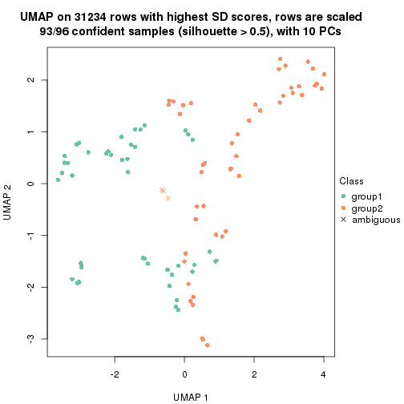
dimension_reduction(res, k = 3, method = "UMAP")
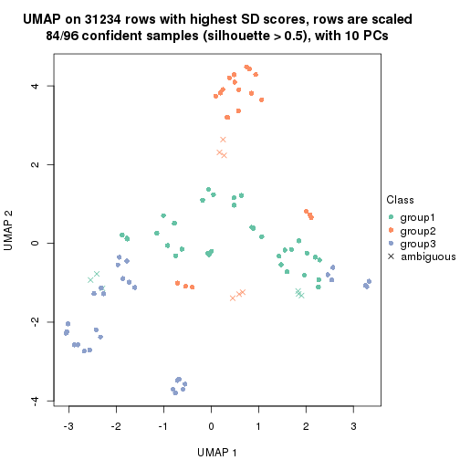
dimension_reduction(res, k = 4, method = "UMAP")
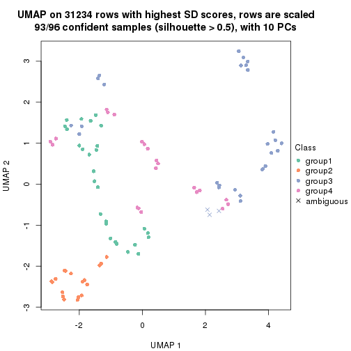
dimension_reduction(res, k = 5, method = "UMAP")
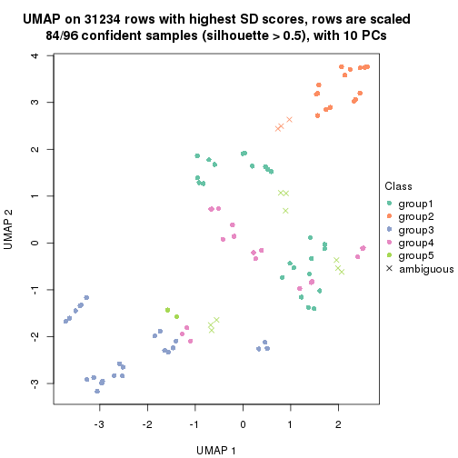
dimension_reduction(res, k = 6, method = "UMAP")
Following heatmap shows how subgroups are split when increasing k:
collect_classes(res)
Test correlation between subgroups and known annotations. If the known annotation is numeric, one-way ANOVA test is applied, and if the known annotation is discrete, chi-squared contingency table test is applied.
test_to_known_factors(res)
#> n tissue(p) k
#> SD:skmeans 93 2.29e-08 2
#> SD:skmeans 84 1.27e-13 3
#> SD:skmeans 93 3.27e-21 4
#> SD:skmeans 84 3.25e-25 5
#> SD:skmeans 78 5.15e-29 6
If matrix rows can be associated to genes, consider to use functional_enrichment(res,
...) to perform function enrichment for the signature genes. See this vignette for more detailed explanations.
The object with results only for a single top-value method and a single partition method can be extracted as:
res = res_list["SD", "pam"]
# you can also extract it by
# res = res_list["SD:pam"]
A summary of res and all the functions that can be applied to it:
res
#> A 'ConsensusPartition' object with k = 2, 3, 4, 5, 6.
#> On a matrix with 31234 rows and 96 columns.
#> Top rows (1000, 2000, 3000, 4000, 5000) are extracted by 'SD' method.
#> Subgroups are detected by 'pam' method.
#> Performed in total 1250 partitions by row resampling.
#> Best k for subgroups seems to be 4.
#>
#> Following methods can be applied to this 'ConsensusPartition' object:
#> [1] "cola_report" "collect_classes" "collect_plots"
#> [4] "collect_stats" "colnames" "compare_signatures"
#> [7] "consensus_heatmap" "dimension_reduction" "functional_enrichment"
#> [10] "get_anno_col" "get_anno" "get_classes"
#> [13] "get_consensus" "get_matrix" "get_membership"
#> [16] "get_param" "get_signatures" "get_stats"
#> [19] "is_best_k" "is_stable_k" "membership_heatmap"
#> [22] "ncol" "nrow" "plot_ecdf"
#> [25] "rownames" "select_partition_number" "show"
#> [28] "suggest_best_k" "test_to_known_factors"
collect_plots() function collects all the plots made from res for all k (number of partitions)
into one single page to provide an easy and fast comparison between different k.
collect_plots(res)
The plots are:
k and the heatmap of
predicted classes for each k.k.k.k.All the plots in panels can be made by individual functions and they are plotted later in this section.
select_partition_number() produces several plots showing different
statistics for choosing “optimized” k. There are following statistics:
k;k, the area increased is defined as \(A_k - A_{k-1}\).The detailed explanations of these statistics can be found in the cola vignette.
Generally speaking, lower PAC score, higher mean silhouette score or higher
concordance corresponds to better partition. Rand index and Jaccard index
measure how similar the current partition is compared to partition with k-1.
If they are too similar, we won't accept k is better than k-1.
select_partition_number(res)
The numeric values for all these statistics can be obtained by get_stats().
get_stats(res)
#> k 1-PAC mean_silhouette concordance area_increased Rand Jaccard
#> 2 2 0.950 0.952 0.918 0.3279 0.692 0.692
#> 3 3 0.927 0.948 0.977 0.4284 0.864 0.803
#> 4 4 0.903 0.944 0.973 0.1822 0.917 0.851
#> 5 5 0.669 0.791 0.862 0.1678 1.000 1.000
#> 6 6 0.665 0.727 0.821 0.0886 0.822 0.628
suggest_best_k() suggests the best \(k\) based on these statistics. The rules are as follows:
suggest_best_k(res)
#> [1] 4
#> attr(,"optional")
#> [1] 2 3
There is also optional best \(k\) = 2 3 that is worth to check.
Following shows the table of the partitions (You need to click the show/hide
code output link to see it). The membership matrix (columns with name p*)
is inferred by
clue::cl_consensus()
function with the SE method. Basically the value in the membership matrix
represents the probability to belong to a certain group. The finall class
label for an item is determined with the group with highest probability it
belongs to.
In get_classes() function, the entropy is calculated from the membership
matrix and the silhouette score is calculated from the consensus matrix.
cbind(get_classes(res, k = 2), get_membership(res, k = 2))
#> class entropy silhouette p1 p2
#> GSM194459 1 0.8661 0.592 0.712 0.288
#> GSM194460 1 0.8909 0.552 0.692 0.308
#> GSM194461 1 0.9850 0.240 0.572 0.428
#> GSM194462 1 0.6712 0.789 0.824 0.176
#> GSM194463 1 0.6973 0.772 0.812 0.188
#> GSM194464 1 0.6623 0.794 0.828 0.172
#> GSM194465 1 0.0000 0.972 1.000 0.000
#> GSM194466 1 0.0000 0.972 1.000 0.000
#> GSM194467 1 0.0000 0.972 1.000 0.000
#> GSM194468 1 0.0376 0.970 0.996 0.004
#> GSM194469 1 0.0376 0.970 0.996 0.004
#> GSM194470 1 0.0376 0.970 0.996 0.004
#> GSM194471 1 0.1633 0.957 0.976 0.024
#> GSM194472 1 0.1633 0.957 0.976 0.024
#> GSM194473 1 0.1633 0.957 0.976 0.024
#> GSM194474 1 0.1633 0.957 0.976 0.024
#> GSM194475 1 0.1633 0.957 0.976 0.024
#> GSM194476 1 0.1633 0.957 0.976 0.024
#> GSM194477 1 0.0000 0.972 1.000 0.000
#> GSM194478 1 0.0000 0.972 1.000 0.000
#> GSM194479 1 0.0000 0.972 1.000 0.000
#> GSM194480 1 0.0000 0.972 1.000 0.000
#> GSM194481 1 0.0000 0.972 1.000 0.000
#> GSM194482 1 0.0000 0.972 1.000 0.000
#> GSM194483 1 0.0000 0.972 1.000 0.000
#> GSM194484 1 0.0000 0.972 1.000 0.000
#> GSM194485 1 0.0000 0.972 1.000 0.000
#> GSM194486 1 0.1633 0.957 0.976 0.024
#> GSM194487 1 0.1633 0.957 0.976 0.024
#> GSM194488 1 0.1633 0.957 0.976 0.024
#> GSM194489 2 0.1633 1.000 0.024 0.976
#> GSM194490 2 0.1633 1.000 0.024 0.976
#> GSM194491 2 0.1633 1.000 0.024 0.976
#> GSM194492 1 0.0000 0.972 1.000 0.000
#> GSM194493 1 0.0000 0.972 1.000 0.000
#> GSM194494 1 0.0000 0.972 1.000 0.000
#> GSM194495 1 0.0000 0.972 1.000 0.000
#> GSM194496 1 0.0000 0.972 1.000 0.000
#> GSM194497 1 0.0000 0.972 1.000 0.000
#> GSM194498 1 0.3431 0.918 0.936 0.064
#> GSM194499 1 0.3879 0.906 0.924 0.076
#> GSM194500 1 0.4690 0.881 0.900 0.100
#> GSM194501 1 0.0000 0.972 1.000 0.000
#> GSM194502 1 0.0000 0.972 1.000 0.000
#> GSM194503 1 0.0000 0.972 1.000 0.000
#> GSM194504 1 0.0000 0.972 1.000 0.000
#> GSM194505 1 0.0000 0.972 1.000 0.000
#> GSM194506 1 0.0000 0.972 1.000 0.000
#> GSM194507 1 0.0000 0.972 1.000 0.000
#> GSM194508 1 0.0000 0.972 1.000 0.000
#> GSM194509 1 0.0000 0.972 1.000 0.000
#> GSM194510 1 0.0000 0.972 1.000 0.000
#> GSM194511 1 0.0000 0.972 1.000 0.000
#> GSM194512 1 0.0000 0.972 1.000 0.000
#> GSM194513 2 0.1633 1.000 0.024 0.976
#> GSM194514 2 0.1633 1.000 0.024 0.976
#> GSM194515 2 0.1633 1.000 0.024 0.976
#> GSM194516 2 0.1633 1.000 0.024 0.976
#> GSM194517 2 0.1633 1.000 0.024 0.976
#> GSM194518 2 0.1633 1.000 0.024 0.976
#> GSM194519 1 0.0000 0.972 1.000 0.000
#> GSM194520 1 0.0000 0.972 1.000 0.000
#> GSM194521 1 0.0000 0.972 1.000 0.000
#> GSM194522 1 0.0000 0.972 1.000 0.000
#> GSM194523 1 0.0000 0.972 1.000 0.000
#> GSM194524 1 0.0000 0.972 1.000 0.000
#> GSM194525 1 0.0000 0.972 1.000 0.000
#> GSM194526 1 0.0000 0.972 1.000 0.000
#> GSM194527 1 0.0000 0.972 1.000 0.000
#> GSM194528 1 0.0000 0.972 1.000 0.000
#> GSM194529 1 0.0000 0.972 1.000 0.000
#> GSM194530 1 0.0000 0.972 1.000 0.000
#> GSM194531 1 0.0000 0.972 1.000 0.000
#> GSM194532 1 0.0000 0.972 1.000 0.000
#> GSM194533 1 0.0000 0.972 1.000 0.000
#> GSM194534 1 0.0000 0.972 1.000 0.000
#> GSM194535 1 0.0000 0.972 1.000 0.000
#> GSM194536 1 0.0000 0.972 1.000 0.000
#> GSM194537 1 0.0000 0.972 1.000 0.000
#> GSM194538 1 0.0000 0.972 1.000 0.000
#> GSM194539 1 0.0000 0.972 1.000 0.000
#> GSM194540 2 0.1633 1.000 0.024 0.976
#> GSM194541 2 0.1633 1.000 0.024 0.976
#> GSM194542 2 0.1633 1.000 0.024 0.976
#> GSM194543 1 0.0000 0.972 1.000 0.000
#> GSM194544 1 0.0000 0.972 1.000 0.000
#> GSM194545 1 0.0000 0.972 1.000 0.000
#> GSM194546 2 0.1633 1.000 0.024 0.976
#> GSM194547 2 0.1633 1.000 0.024 0.976
#> GSM194548 2 0.1633 1.000 0.024 0.976
#> GSM194549 2 0.1633 1.000 0.024 0.976
#> GSM194550 2 0.1633 1.000 0.024 0.976
#> GSM194551 2 0.1633 1.000 0.024 0.976
#> GSM194552 1 0.0376 0.970 0.996 0.004
#> GSM194553 1 0.0376 0.970 0.996 0.004
#> GSM194554 1 0.0376 0.970 0.996 0.004
cbind(get_classes(res, k = 3), get_membership(res, k = 3))
#> class entropy silhouette p1 p2 p3
#> GSM194459 1 0.5529 0.590 0.704 0.296 0.000
#> GSM194460 1 0.5733 0.534 0.676 0.324 0.000
#> GSM194461 1 0.6267 0.196 0.548 0.452 0.000
#> GSM194462 1 0.3619 0.843 0.864 0.136 0.000
#> GSM194463 1 0.3879 0.825 0.848 0.152 0.000
#> GSM194464 1 0.3619 0.843 0.864 0.136 0.000
#> GSM194465 1 0.0000 0.966 1.000 0.000 0.000
#> GSM194466 1 0.0000 0.966 1.000 0.000 0.000
#> GSM194467 1 0.0000 0.966 1.000 0.000 0.000
#> GSM194468 1 0.0237 0.963 0.996 0.004 0.000
#> GSM194469 1 0.0237 0.963 0.996 0.004 0.000
#> GSM194470 1 0.0237 0.963 0.996 0.004 0.000
#> GSM194471 3 0.0000 1.000 0.000 0.000 1.000
#> GSM194472 3 0.0000 1.000 0.000 0.000 1.000
#> GSM194473 3 0.0000 1.000 0.000 0.000 1.000
#> GSM194474 3 0.0000 1.000 0.000 0.000 1.000
#> GSM194475 3 0.0000 1.000 0.000 0.000 1.000
#> GSM194476 3 0.0000 1.000 0.000 0.000 1.000
#> GSM194477 1 0.0000 0.966 1.000 0.000 0.000
#> GSM194478 1 0.0000 0.966 1.000 0.000 0.000
#> GSM194479 1 0.0000 0.966 1.000 0.000 0.000
#> GSM194480 1 0.0000 0.966 1.000 0.000 0.000
#> GSM194481 1 0.0000 0.966 1.000 0.000 0.000
#> GSM194482 1 0.0000 0.966 1.000 0.000 0.000
#> GSM194483 1 0.0000 0.966 1.000 0.000 0.000
#> GSM194484 1 0.0000 0.966 1.000 0.000 0.000
#> GSM194485 1 0.0000 0.966 1.000 0.000 0.000
#> GSM194486 3 0.0000 1.000 0.000 0.000 1.000
#> GSM194487 3 0.0000 1.000 0.000 0.000 1.000
#> GSM194488 3 0.0000 1.000 0.000 0.000 1.000
#> GSM194489 2 0.0000 1.000 0.000 1.000 0.000
#> GSM194490 2 0.0000 1.000 0.000 1.000 0.000
#> GSM194491 2 0.0000 1.000 0.000 1.000 0.000
#> GSM194492 1 0.0000 0.966 1.000 0.000 0.000
#> GSM194493 1 0.0000 0.966 1.000 0.000 0.000
#> GSM194494 1 0.0000 0.966 1.000 0.000 0.000
#> GSM194495 1 0.0000 0.966 1.000 0.000 0.000
#> GSM194496 1 0.0000 0.966 1.000 0.000 0.000
#> GSM194497 1 0.0000 0.966 1.000 0.000 0.000
#> GSM194498 1 0.1643 0.931 0.956 0.044 0.000
#> GSM194499 1 0.1964 0.921 0.944 0.056 0.000
#> GSM194500 1 0.2356 0.907 0.928 0.072 0.000
#> GSM194501 1 0.0000 0.966 1.000 0.000 0.000
#> GSM194502 1 0.0000 0.966 1.000 0.000 0.000
#> GSM194503 1 0.0000 0.966 1.000 0.000 0.000
#> GSM194504 1 0.0000 0.966 1.000 0.000 0.000
#> GSM194505 1 0.0000 0.966 1.000 0.000 0.000
#> GSM194506 1 0.0000 0.966 1.000 0.000 0.000
#> GSM194507 1 0.0000 0.966 1.000 0.000 0.000
#> GSM194508 1 0.0000 0.966 1.000 0.000 0.000
#> GSM194509 1 0.0000 0.966 1.000 0.000 0.000
#> GSM194510 1 0.0000 0.966 1.000 0.000 0.000
#> GSM194511 1 0.0000 0.966 1.000 0.000 0.000
#> GSM194512 1 0.0000 0.966 1.000 0.000 0.000
#> GSM194513 2 0.0000 1.000 0.000 1.000 0.000
#> GSM194514 2 0.0000 1.000 0.000 1.000 0.000
#> GSM194515 2 0.0000 1.000 0.000 1.000 0.000
#> GSM194516 2 0.0000 1.000 0.000 1.000 0.000
#> GSM194517 2 0.0000 1.000 0.000 1.000 0.000
#> GSM194518 2 0.0000 1.000 0.000 1.000 0.000
#> GSM194519 1 0.0000 0.966 1.000 0.000 0.000
#> GSM194520 1 0.0000 0.966 1.000 0.000 0.000
#> GSM194521 1 0.0000 0.966 1.000 0.000 0.000
#> GSM194522 1 0.0000 0.966 1.000 0.000 0.000
#> GSM194523 1 0.0000 0.966 1.000 0.000 0.000
#> GSM194524 1 0.0000 0.966 1.000 0.000 0.000
#> GSM194525 1 0.0000 0.966 1.000 0.000 0.000
#> GSM194526 1 0.0000 0.966 1.000 0.000 0.000
#> GSM194527 1 0.0000 0.966 1.000 0.000 0.000
#> GSM194528 1 0.0000 0.966 1.000 0.000 0.000
#> GSM194529 1 0.0000 0.966 1.000 0.000 0.000
#> GSM194530 1 0.0000 0.966 1.000 0.000 0.000
#> GSM194531 1 0.0000 0.966 1.000 0.000 0.000
#> GSM194532 1 0.0000 0.966 1.000 0.000 0.000
#> GSM194533 1 0.0000 0.966 1.000 0.000 0.000
#> GSM194534 1 0.0000 0.966 1.000 0.000 0.000
#> GSM194535 1 0.0000 0.966 1.000 0.000 0.000
#> GSM194536 1 0.0000 0.966 1.000 0.000 0.000
#> GSM194537 1 0.0000 0.966 1.000 0.000 0.000
#> GSM194538 1 0.0000 0.966 1.000 0.000 0.000
#> GSM194539 1 0.0000 0.966 1.000 0.000 0.000
#> GSM194540 2 0.0000 1.000 0.000 1.000 0.000
#> GSM194541 2 0.0000 1.000 0.000 1.000 0.000
#> GSM194542 2 0.0000 1.000 0.000 1.000 0.000
#> GSM194543 1 0.0000 0.966 1.000 0.000 0.000
#> GSM194544 1 0.0237 0.963 0.996 0.000 0.004
#> GSM194545 1 0.0000 0.966 1.000 0.000 0.000
#> GSM194546 2 0.0000 1.000 0.000 1.000 0.000
#> GSM194547 2 0.0000 1.000 0.000 1.000 0.000
#> GSM194548 2 0.0000 1.000 0.000 1.000 0.000
#> GSM194549 2 0.0000 1.000 0.000 1.000 0.000
#> GSM194550 2 0.0000 1.000 0.000 1.000 0.000
#> GSM194551 2 0.0000 1.000 0.000 1.000 0.000
#> GSM194552 1 0.4235 0.795 0.824 0.000 0.176
#> GSM194553 1 0.4178 0.800 0.828 0.000 0.172
#> GSM194554 1 0.4291 0.789 0.820 0.000 0.180
cbind(get_classes(res, k = 4), get_membership(res, k = 4))
#> class entropy silhouette p1 p2 p3 p4
#> GSM194459 4 0.0000 1.000 0.000 0.000 0.000 1.000
#> GSM194460 4 0.0000 1.000 0.000 0.000 0.000 1.000
#> GSM194461 4 0.0000 1.000 0.000 0.000 0.000 1.000
#> GSM194462 1 0.3266 0.807 0.832 0.168 0.000 0.000
#> GSM194463 1 0.3444 0.788 0.816 0.184 0.000 0.000
#> GSM194464 1 0.3266 0.807 0.832 0.168 0.000 0.000
#> GSM194465 4 0.0000 1.000 0.000 0.000 0.000 1.000
#> GSM194466 4 0.0000 1.000 0.000 0.000 0.000 1.000
#> GSM194467 4 0.0000 1.000 0.000 0.000 0.000 1.000
#> GSM194468 1 0.5055 0.467 0.624 0.008 0.000 0.368
#> GSM194469 1 0.5055 0.467 0.624 0.008 0.000 0.368
#> GSM194470 1 0.5085 0.449 0.616 0.008 0.000 0.376
#> GSM194471 3 0.0000 1.000 0.000 0.000 1.000 0.000
#> GSM194472 3 0.0000 1.000 0.000 0.000 1.000 0.000
#> GSM194473 3 0.0000 1.000 0.000 0.000 1.000 0.000
#> GSM194474 3 0.0000 1.000 0.000 0.000 1.000 0.000
#> GSM194475 3 0.0000 1.000 0.000 0.000 1.000 0.000
#> GSM194476 3 0.0000 1.000 0.000 0.000 1.000 0.000
#> GSM194477 1 0.0000 0.957 1.000 0.000 0.000 0.000
#> GSM194478 1 0.0000 0.957 1.000 0.000 0.000 0.000
#> GSM194479 1 0.0000 0.957 1.000 0.000 0.000 0.000
#> GSM194480 1 0.0000 0.957 1.000 0.000 0.000 0.000
#> GSM194481 1 0.0000 0.957 1.000 0.000 0.000 0.000
#> GSM194482 1 0.0000 0.957 1.000 0.000 0.000 0.000
#> GSM194483 1 0.0000 0.957 1.000 0.000 0.000 0.000
#> GSM194484 1 0.0000 0.957 1.000 0.000 0.000 0.000
#> GSM194485 1 0.0000 0.957 1.000 0.000 0.000 0.000
#> GSM194486 3 0.0000 1.000 0.000 0.000 1.000 0.000
#> GSM194487 3 0.0000 1.000 0.000 0.000 1.000 0.000
#> GSM194488 3 0.0000 1.000 0.000 0.000 1.000 0.000
#> GSM194489 2 0.0000 1.000 0.000 1.000 0.000 0.000
#> GSM194490 2 0.0000 1.000 0.000 1.000 0.000 0.000
#> GSM194491 2 0.0000 1.000 0.000 1.000 0.000 0.000
#> GSM194492 1 0.0000 0.957 1.000 0.000 0.000 0.000
#> GSM194493 1 0.0000 0.957 1.000 0.000 0.000 0.000
#> GSM194494 1 0.0000 0.957 1.000 0.000 0.000 0.000
#> GSM194495 1 0.0000 0.957 1.000 0.000 0.000 0.000
#> GSM194496 1 0.0000 0.957 1.000 0.000 0.000 0.000
#> GSM194497 1 0.0000 0.957 1.000 0.000 0.000 0.000
#> GSM194498 1 0.1637 0.915 0.940 0.060 0.000 0.000
#> GSM194499 1 0.1792 0.908 0.932 0.068 0.000 0.000
#> GSM194500 1 0.2345 0.880 0.900 0.100 0.000 0.000
#> GSM194501 1 0.0000 0.957 1.000 0.000 0.000 0.000
#> GSM194502 1 0.0000 0.957 1.000 0.000 0.000 0.000
#> GSM194503 1 0.0000 0.957 1.000 0.000 0.000 0.000
#> GSM194504 1 0.0000 0.957 1.000 0.000 0.000 0.000
#> GSM194505 1 0.0000 0.957 1.000 0.000 0.000 0.000
#> GSM194506 1 0.0000 0.957 1.000 0.000 0.000 0.000
#> GSM194507 1 0.0000 0.957 1.000 0.000 0.000 0.000
#> GSM194508 1 0.0000 0.957 1.000 0.000 0.000 0.000
#> GSM194509 1 0.0000 0.957 1.000 0.000 0.000 0.000
#> GSM194510 1 0.0707 0.948 0.980 0.000 0.000 0.020
#> GSM194511 1 0.0707 0.948 0.980 0.000 0.000 0.020
#> GSM194512 1 0.0707 0.948 0.980 0.000 0.000 0.020
#> GSM194513 2 0.0000 1.000 0.000 1.000 0.000 0.000
#> GSM194514 2 0.0000 1.000 0.000 1.000 0.000 0.000
#> GSM194515 2 0.0000 1.000 0.000 1.000 0.000 0.000
#> GSM194516 2 0.0000 1.000 0.000 1.000 0.000 0.000
#> GSM194517 2 0.0000 1.000 0.000 1.000 0.000 0.000
#> GSM194518 2 0.0000 1.000 0.000 1.000 0.000 0.000
#> GSM194519 1 0.0817 0.947 0.976 0.000 0.000 0.024
#> GSM194520 1 0.0817 0.947 0.976 0.000 0.000 0.024
#> GSM194521 1 0.0817 0.947 0.976 0.000 0.000 0.024
#> GSM194522 1 0.0817 0.947 0.976 0.000 0.000 0.024
#> GSM194523 1 0.0817 0.947 0.976 0.000 0.000 0.024
#> GSM194524 1 0.0817 0.947 0.976 0.000 0.000 0.024
#> GSM194525 1 0.0188 0.956 0.996 0.000 0.000 0.004
#> GSM194526 1 0.0188 0.956 0.996 0.000 0.000 0.004
#> GSM194527 1 0.0188 0.956 0.996 0.000 0.000 0.004
#> GSM194528 1 0.0000 0.957 1.000 0.000 0.000 0.000
#> GSM194529 1 0.0000 0.957 1.000 0.000 0.000 0.000
#> GSM194530 1 0.0000 0.957 1.000 0.000 0.000 0.000
#> GSM194531 1 0.0000 0.957 1.000 0.000 0.000 0.000
#> GSM194532 1 0.0000 0.957 1.000 0.000 0.000 0.000
#> GSM194533 1 0.0000 0.957 1.000 0.000 0.000 0.000
#> GSM194534 1 0.0000 0.957 1.000 0.000 0.000 0.000
#> GSM194535 1 0.0000 0.957 1.000 0.000 0.000 0.000
#> GSM194536 1 0.0000 0.957 1.000 0.000 0.000 0.000
#> GSM194537 1 0.0000 0.957 1.000 0.000 0.000 0.000
#> GSM194538 1 0.0000 0.957 1.000 0.000 0.000 0.000
#> GSM194539 1 0.0000 0.957 1.000 0.000 0.000 0.000
#> GSM194540 2 0.0000 1.000 0.000 1.000 0.000 0.000
#> GSM194541 2 0.0000 1.000 0.000 1.000 0.000 0.000
#> GSM194542 2 0.0000 1.000 0.000 1.000 0.000 0.000
#> GSM194543 1 0.0000 0.957 1.000 0.000 0.000 0.000
#> GSM194544 1 0.0188 0.956 0.996 0.000 0.004 0.000
#> GSM194545 1 0.0000 0.957 1.000 0.000 0.000 0.000
#> GSM194546 2 0.0000 1.000 0.000 1.000 0.000 0.000
#> GSM194547 2 0.0000 1.000 0.000 1.000 0.000 0.000
#> GSM194548 2 0.0000 1.000 0.000 1.000 0.000 0.000
#> GSM194549 2 0.0000 1.000 0.000 1.000 0.000 0.000
#> GSM194550 2 0.0000 1.000 0.000 1.000 0.000 0.000
#> GSM194551 2 0.0000 1.000 0.000 1.000 0.000 0.000
#> GSM194552 1 0.3266 0.816 0.832 0.000 0.168 0.000
#> GSM194553 1 0.3266 0.816 0.832 0.000 0.168 0.000
#> GSM194554 1 0.3356 0.807 0.824 0.000 0.176 0.000
cbind(get_classes(res, k = 5), get_membership(res, k = 5))
#> class entropy silhouette p1 p2 p3 p4 p5
#> GSM194459 4 0.000 1.000 0.000 0.000 0.000 1.000 0.000
#> GSM194460 4 0.000 1.000 0.000 0.000 0.000 1.000 0.000
#> GSM194461 4 0.000 1.000 0.000 0.000 0.000 1.000 0.000
#> GSM194462 1 0.379 0.729 0.760 0.016 0.000 0.000 0.224
#> GSM194463 1 0.379 0.729 0.760 0.016 0.000 0.000 0.224
#> GSM194464 1 0.379 0.729 0.760 0.016 0.000 0.000 0.224
#> GSM194465 4 0.000 1.000 0.000 0.000 0.000 1.000 0.000
#> GSM194466 4 0.000 1.000 0.000 0.000 0.000 1.000 0.000
#> GSM194467 4 0.000 1.000 0.000 0.000 0.000 1.000 0.000
#> GSM194468 1 0.488 0.515 0.620 0.004 0.000 0.348 0.028
#> GSM194469 1 0.488 0.515 0.620 0.004 0.000 0.348 0.028
#> GSM194470 1 0.490 0.508 0.616 0.004 0.000 0.352 0.028
#> GSM194471 3 0.000 1.000 0.000 0.000 1.000 0.000 0.000
#> GSM194472 3 0.000 1.000 0.000 0.000 1.000 0.000 0.000
#> GSM194473 3 0.000 1.000 0.000 0.000 1.000 0.000 0.000
#> GSM194474 3 0.000 1.000 0.000 0.000 1.000 0.000 0.000
#> GSM194475 3 0.000 1.000 0.000 0.000 1.000 0.000 0.000
#> GSM194476 3 0.000 1.000 0.000 0.000 1.000 0.000 0.000
#> GSM194477 1 0.112 0.811 0.956 0.000 0.000 0.000 0.044
#> GSM194478 1 0.127 0.812 0.948 0.000 0.000 0.000 0.052
#> GSM194479 1 0.112 0.811 0.956 0.000 0.000 0.000 0.044
#> GSM194480 1 0.430 0.370 0.528 0.000 0.000 0.000 0.472
#> GSM194481 1 0.430 0.369 0.524 0.000 0.000 0.000 0.476
#> GSM194482 1 0.430 0.369 0.524 0.000 0.000 0.000 0.476
#> GSM194483 1 0.430 0.368 0.520 0.000 0.000 0.000 0.480
#> GSM194484 1 0.430 0.368 0.520 0.000 0.000 0.000 0.480
#> GSM194485 1 0.430 0.368 0.520 0.000 0.000 0.000 0.480
#> GSM194486 3 0.000 1.000 0.000 0.000 1.000 0.000 0.000
#> GSM194487 3 0.000 1.000 0.000 0.000 1.000 0.000 0.000
#> GSM194488 3 0.000 1.000 0.000 0.000 1.000 0.000 0.000
#> GSM194489 2 0.297 0.767 0.000 0.816 0.000 0.000 0.184
#> GSM194490 2 0.297 0.767 0.000 0.816 0.000 0.000 0.184
#> GSM194491 2 0.297 0.767 0.000 0.816 0.000 0.000 0.184
#> GSM194492 1 0.345 0.726 0.756 0.000 0.000 0.000 0.244
#> GSM194493 1 0.342 0.729 0.760 0.000 0.000 0.000 0.240
#> GSM194494 1 0.345 0.726 0.756 0.000 0.000 0.000 0.244
#> GSM194495 1 0.179 0.802 0.916 0.000 0.000 0.000 0.084
#> GSM194496 1 0.179 0.802 0.916 0.000 0.000 0.000 0.084
#> GSM194497 1 0.179 0.802 0.916 0.000 0.000 0.000 0.084
#> GSM194498 1 0.426 0.537 0.564 0.000 0.000 0.000 0.436
#> GSM194499 1 0.426 0.537 0.564 0.000 0.000 0.000 0.436
#> GSM194500 1 0.426 0.537 0.564 0.000 0.000 0.000 0.436
#> GSM194501 1 0.051 0.813 0.984 0.000 0.000 0.000 0.016
#> GSM194502 1 0.051 0.813 0.984 0.000 0.000 0.000 0.016
#> GSM194503 1 0.051 0.813 0.984 0.000 0.000 0.000 0.016
#> GSM194504 1 0.179 0.802 0.916 0.000 0.000 0.000 0.084
#> GSM194505 1 0.179 0.802 0.916 0.000 0.000 0.000 0.084
#> GSM194506 1 0.179 0.802 0.916 0.000 0.000 0.000 0.084
#> GSM194507 1 0.224 0.799 0.904 0.000 0.004 0.008 0.084
#> GSM194508 1 0.224 0.799 0.904 0.000 0.004 0.008 0.084
#> GSM194509 1 0.224 0.799 0.904 0.000 0.004 0.008 0.084
#> GSM194510 1 0.191 0.808 0.928 0.000 0.000 0.028 0.044
#> GSM194511 1 0.191 0.808 0.928 0.000 0.000 0.028 0.044
#> GSM194512 1 0.191 0.808 0.928 0.000 0.000 0.028 0.044
#> GSM194513 2 0.000 0.920 0.000 1.000 0.000 0.000 0.000
#> GSM194514 2 0.000 0.920 0.000 1.000 0.000 0.000 0.000
#> GSM194515 2 0.000 0.920 0.000 1.000 0.000 0.000 0.000
#> GSM194516 2 0.000 0.920 0.000 1.000 0.000 0.000 0.000
#> GSM194517 2 0.000 0.920 0.000 1.000 0.000 0.000 0.000
#> GSM194518 2 0.000 0.920 0.000 1.000 0.000 0.000 0.000
#> GSM194519 1 0.183 0.808 0.932 0.000 0.000 0.028 0.040
#> GSM194520 1 0.191 0.808 0.928 0.000 0.000 0.028 0.044
#> GSM194521 1 0.183 0.808 0.932 0.000 0.000 0.028 0.040
#> GSM194522 1 0.239 0.803 0.900 0.000 0.000 0.028 0.072
#> GSM194523 1 0.239 0.803 0.900 0.000 0.000 0.028 0.072
#> GSM194524 1 0.239 0.803 0.900 0.000 0.000 0.028 0.072
#> GSM194525 1 0.141 0.807 0.940 0.000 0.000 0.000 0.060
#> GSM194526 1 0.141 0.807 0.940 0.000 0.000 0.000 0.060
#> GSM194527 1 0.141 0.807 0.940 0.000 0.000 0.000 0.060
#> GSM194528 1 0.104 0.811 0.960 0.000 0.000 0.000 0.040
#> GSM194529 1 0.104 0.811 0.960 0.000 0.000 0.000 0.040
#> GSM194530 1 0.104 0.811 0.960 0.000 0.000 0.000 0.040
#> GSM194531 1 0.334 0.736 0.772 0.000 0.000 0.000 0.228
#> GSM194532 1 0.334 0.736 0.772 0.000 0.000 0.000 0.228
#> GSM194533 1 0.334 0.736 0.772 0.000 0.000 0.000 0.228
#> GSM194534 1 0.426 0.537 0.564 0.000 0.000 0.000 0.436
#> GSM194535 1 0.426 0.537 0.564 0.000 0.000 0.000 0.436
#> GSM194536 1 0.426 0.537 0.564 0.000 0.000 0.000 0.436
#> GSM194537 1 0.104 0.811 0.960 0.000 0.000 0.000 0.040
#> GSM194538 1 0.120 0.810 0.952 0.000 0.000 0.000 0.048
#> GSM194539 1 0.112 0.811 0.956 0.000 0.000 0.000 0.044
#> GSM194540 2 0.179 0.928 0.000 0.916 0.000 0.000 0.084
#> GSM194541 2 0.179 0.928 0.000 0.916 0.000 0.000 0.084
#> GSM194542 2 0.179 0.928 0.000 0.916 0.000 0.000 0.084
#> GSM194543 1 0.179 0.802 0.916 0.000 0.000 0.000 0.084
#> GSM194544 1 0.179 0.802 0.916 0.000 0.000 0.000 0.084
#> GSM194545 1 0.179 0.802 0.916 0.000 0.000 0.000 0.084
#> GSM194546 2 0.179 0.928 0.000 0.916 0.000 0.000 0.084
#> GSM194547 2 0.179 0.928 0.000 0.916 0.000 0.000 0.084
#> GSM194548 2 0.179 0.928 0.000 0.916 0.000 0.000 0.084
#> GSM194549 2 0.179 0.928 0.000 0.916 0.000 0.000 0.084
#> GSM194550 2 0.179 0.928 0.000 0.916 0.000 0.000 0.084
#> GSM194551 2 0.179 0.928 0.000 0.916 0.000 0.000 0.084
#> GSM194552 1 0.456 0.733 0.748 0.000 0.176 0.004 0.072
#> GSM194553 1 0.456 0.733 0.748 0.000 0.176 0.004 0.072
#> GSM194554 1 0.463 0.727 0.740 0.000 0.184 0.004 0.072
cbind(get_classes(res, k = 6), get_membership(res, k = 6))
#> class entropy silhouette p1 p2 p3 p4 p5 p6
#> GSM194459 4 0.4961 0.538 0.000 0.000 0.000 0.592 0.320 0.088
#> GSM194460 4 0.4961 0.538 0.000 0.000 0.000 0.592 0.320 0.088
#> GSM194461 4 0.4961 0.538 0.000 0.000 0.000 0.592 0.320 0.088
#> GSM194462 1 0.3875 0.610 0.780 0.008 0.000 0.000 0.068 0.144
#> GSM194463 1 0.3875 0.610 0.780 0.008 0.000 0.000 0.068 0.144
#> GSM194464 1 0.3875 0.610 0.780 0.008 0.000 0.000 0.068 0.144
#> GSM194465 4 0.4961 0.538 0.000 0.000 0.000 0.592 0.320 0.088
#> GSM194466 4 0.4961 0.538 0.000 0.000 0.000 0.592 0.320 0.088
#> GSM194467 4 0.4961 0.538 0.000 0.000 0.000 0.592 0.320 0.088
#> GSM194468 4 0.4538 -0.276 0.468 0.004 0.000 0.508 0.012 0.008
#> GSM194469 4 0.4538 -0.276 0.468 0.004 0.000 0.508 0.012 0.008
#> GSM194470 4 0.4536 -0.268 0.464 0.004 0.000 0.512 0.012 0.008
#> GSM194471 3 0.0000 1.000 0.000 0.000 1.000 0.000 0.000 0.000
#> GSM194472 3 0.0000 1.000 0.000 0.000 1.000 0.000 0.000 0.000
#> GSM194473 3 0.0000 1.000 0.000 0.000 1.000 0.000 0.000 0.000
#> GSM194474 3 0.0000 1.000 0.000 0.000 1.000 0.000 0.000 0.000
#> GSM194475 3 0.0000 1.000 0.000 0.000 1.000 0.000 0.000 0.000
#> GSM194476 3 0.0000 1.000 0.000 0.000 1.000 0.000 0.000 0.000
#> GSM194477 1 0.0603 0.763 0.980 0.000 0.000 0.000 0.004 0.016
#> GSM194478 1 0.0603 0.763 0.980 0.000 0.000 0.000 0.004 0.016
#> GSM194479 1 0.0603 0.763 0.980 0.000 0.000 0.000 0.004 0.016
#> GSM194480 5 0.3717 0.995 0.384 0.000 0.000 0.000 0.616 0.000
#> GSM194481 5 0.3717 0.995 0.384 0.000 0.000 0.000 0.616 0.000
#> GSM194482 5 0.3717 0.995 0.384 0.000 0.000 0.000 0.616 0.000
#> GSM194483 5 0.3727 0.995 0.388 0.000 0.000 0.000 0.612 0.000
#> GSM194484 5 0.3727 0.995 0.388 0.000 0.000 0.000 0.612 0.000
#> GSM194485 5 0.3727 0.995 0.388 0.000 0.000 0.000 0.612 0.000
#> GSM194486 3 0.0000 1.000 0.000 0.000 1.000 0.000 0.000 0.000
#> GSM194487 3 0.0000 1.000 0.000 0.000 1.000 0.000 0.000 0.000
#> GSM194488 3 0.0000 1.000 0.000 0.000 1.000 0.000 0.000 0.000
#> GSM194489 2 0.4683 0.725 0.000 0.616 0.000 0.000 0.064 0.320
#> GSM194490 2 0.4697 0.721 0.000 0.612 0.000 0.000 0.064 0.324
#> GSM194491 2 0.4683 0.725 0.000 0.616 0.000 0.000 0.064 0.320
#> GSM194492 1 0.3772 0.597 0.772 0.000 0.000 0.000 0.068 0.160
#> GSM194493 1 0.3736 0.603 0.776 0.000 0.000 0.000 0.068 0.156
#> GSM194494 1 0.3772 0.597 0.772 0.000 0.000 0.000 0.068 0.160
#> GSM194495 1 0.0713 0.755 0.972 0.000 0.000 0.000 0.028 0.000
#> GSM194496 1 0.0713 0.755 0.972 0.000 0.000 0.000 0.028 0.000
#> GSM194497 1 0.0713 0.755 0.972 0.000 0.000 0.000 0.028 0.000
#> GSM194498 6 0.3309 0.998 0.280 0.000 0.000 0.000 0.000 0.720
#> GSM194499 6 0.3309 0.998 0.280 0.000 0.000 0.000 0.000 0.720
#> GSM194500 6 0.3309 0.998 0.280 0.000 0.000 0.000 0.000 0.720
#> GSM194501 1 0.0000 0.763 1.000 0.000 0.000 0.000 0.000 0.000
#> GSM194502 1 0.0000 0.763 1.000 0.000 0.000 0.000 0.000 0.000
#> GSM194503 1 0.0000 0.763 1.000 0.000 0.000 0.000 0.000 0.000
#> GSM194504 1 0.0713 0.755 0.972 0.000 0.000 0.000 0.028 0.000
#> GSM194505 1 0.0713 0.755 0.972 0.000 0.000 0.000 0.028 0.000
#> GSM194506 1 0.0713 0.755 0.972 0.000 0.000 0.000 0.028 0.000
#> GSM194507 1 0.2309 0.703 0.888 0.000 0.000 0.084 0.028 0.000
#> GSM194508 1 0.2309 0.703 0.888 0.000 0.000 0.084 0.028 0.000
#> GSM194509 1 0.2255 0.706 0.892 0.000 0.000 0.080 0.028 0.000
#> GSM194510 1 0.4265 0.403 0.596 0.000 0.000 0.384 0.004 0.016
#> GSM194511 1 0.4265 0.403 0.596 0.000 0.000 0.384 0.004 0.016
#> GSM194512 1 0.4265 0.403 0.596 0.000 0.000 0.384 0.004 0.016
#> GSM194513 2 0.2730 0.872 0.000 0.808 0.000 0.000 0.000 0.192
#> GSM194514 2 0.2730 0.872 0.000 0.808 0.000 0.000 0.000 0.192
#> GSM194515 2 0.2730 0.872 0.000 0.808 0.000 0.000 0.000 0.192
#> GSM194516 2 0.2730 0.872 0.000 0.808 0.000 0.000 0.000 0.192
#> GSM194517 2 0.2730 0.872 0.000 0.808 0.000 0.000 0.000 0.192
#> GSM194518 2 0.2730 0.872 0.000 0.808 0.000 0.000 0.000 0.192
#> GSM194519 1 0.4325 0.372 0.568 0.000 0.000 0.412 0.004 0.016
#> GSM194520 1 0.4325 0.372 0.568 0.000 0.000 0.412 0.004 0.016
#> GSM194521 1 0.4325 0.372 0.568 0.000 0.000 0.412 0.004 0.016
#> GSM194522 1 0.4410 0.376 0.560 0.000 0.000 0.412 0.028 0.000
#> GSM194523 1 0.4410 0.376 0.560 0.000 0.000 0.412 0.028 0.000
#> GSM194524 1 0.4410 0.376 0.560 0.000 0.000 0.412 0.028 0.000
#> GSM194525 1 0.0547 0.757 0.980 0.000 0.000 0.000 0.020 0.000
#> GSM194526 1 0.0547 0.757 0.980 0.000 0.000 0.000 0.020 0.000
#> GSM194527 1 0.0547 0.757 0.980 0.000 0.000 0.000 0.020 0.000
#> GSM194528 1 0.0603 0.763 0.980 0.000 0.000 0.000 0.004 0.016
#> GSM194529 1 0.0603 0.763 0.980 0.000 0.000 0.000 0.004 0.016
#> GSM194530 1 0.0603 0.763 0.980 0.000 0.000 0.000 0.004 0.016
#> GSM194531 1 0.3626 0.618 0.788 0.000 0.000 0.000 0.068 0.144
#> GSM194532 1 0.3626 0.618 0.788 0.000 0.000 0.000 0.068 0.144
#> GSM194533 1 0.3626 0.618 0.788 0.000 0.000 0.000 0.068 0.144
#> GSM194534 6 0.3309 0.998 0.280 0.000 0.000 0.000 0.000 0.720
#> GSM194535 6 0.3330 0.992 0.284 0.000 0.000 0.000 0.000 0.716
#> GSM194536 6 0.3309 0.998 0.280 0.000 0.000 0.000 0.000 0.720
#> GSM194537 1 0.0603 0.763 0.980 0.000 0.000 0.000 0.004 0.016
#> GSM194538 1 0.0777 0.762 0.972 0.000 0.000 0.000 0.004 0.024
#> GSM194539 1 0.0692 0.763 0.976 0.000 0.000 0.000 0.004 0.020
#> GSM194540 2 0.0000 0.886 0.000 1.000 0.000 0.000 0.000 0.000
#> GSM194541 2 0.0363 0.886 0.000 0.988 0.000 0.000 0.000 0.012
#> GSM194542 2 0.0000 0.886 0.000 1.000 0.000 0.000 0.000 0.000
#> GSM194543 1 0.0713 0.755 0.972 0.000 0.000 0.000 0.028 0.000
#> GSM194544 1 0.0713 0.755 0.972 0.000 0.000 0.000 0.028 0.000
#> GSM194545 1 0.0713 0.755 0.972 0.000 0.000 0.000 0.028 0.000
#> GSM194546 2 0.0000 0.886 0.000 1.000 0.000 0.000 0.000 0.000
#> GSM194547 2 0.0000 0.886 0.000 1.000 0.000 0.000 0.000 0.000
#> GSM194548 2 0.0000 0.886 0.000 1.000 0.000 0.000 0.000 0.000
#> GSM194549 2 0.0000 0.886 0.000 1.000 0.000 0.000 0.000 0.000
#> GSM194550 2 0.0000 0.886 0.000 1.000 0.000 0.000 0.000 0.000
#> GSM194551 2 0.0000 0.886 0.000 1.000 0.000 0.000 0.000 0.000
#> GSM194552 1 0.3813 0.615 0.768 0.000 0.188 0.016 0.028 0.000
#> GSM194553 1 0.3724 0.617 0.772 0.000 0.188 0.012 0.028 0.000
#> GSM194554 1 0.3875 0.606 0.760 0.000 0.196 0.016 0.028 0.000
Heatmaps for the consensus matrix. It visualizes the probability of two samples to be in a same group.
consensus_heatmap(res, k = 2)
consensus_heatmap(res, k = 3)
consensus_heatmap(res, k = 4)
consensus_heatmap(res, k = 5)
consensus_heatmap(res, k = 6)
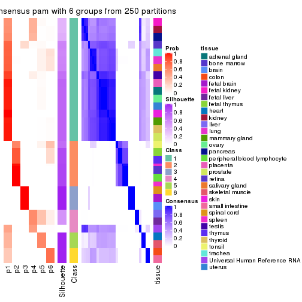
Heatmaps for the membership of samples in all partitions to see how consistent they are:
membership_heatmap(res, k = 2)
membership_heatmap(res, k = 3)
membership_heatmap(res, k = 4)
membership_heatmap(res, k = 5)
membership_heatmap(res, k = 6)
As soon as we have had the classes for columns, we can look for signatures which are significantly different between classes which can be candidate marks for certain classes. Following are the heatmaps for signatures.
Signature heatmaps where rows are scaled:
get_signatures(res, k = 2)
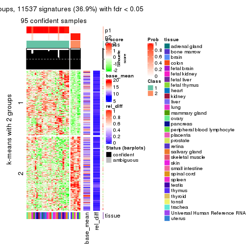
get_signatures(res, k = 3)
get_signatures(res, k = 4)
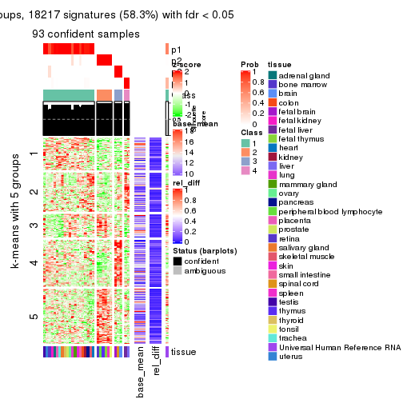
get_signatures(res, k = 5)
get_signatures(res, k = 6)
Signature heatmaps where rows are not scaled:
get_signatures(res, k = 2, scale_rows = FALSE)
get_signatures(res, k = 3, scale_rows = FALSE)
get_signatures(res, k = 4, scale_rows = FALSE)
get_signatures(res, k = 5, scale_rows = FALSE)
get_signatures(res, k = 6, scale_rows = FALSE)
Compare the overlap of signatures from different k:
compare_signatures(res)
get_signature() returns a data frame invisibly. TO get the list of signatures, the function
call should be assigned to a variable explicitly. In following code, if plot argument is set
to FALSE, no heatmap is plotted while only the differential analysis is performed.
# code only for demonstration
tb = get_signature(res, k = ..., plot = FALSE)
An example of the output of tb is:
#> which_row fdr mean_1 mean_2 scaled_mean_1 scaled_mean_2 km
#> 1 38 0.042760348 8.373488 9.131774 -0.5533452 0.5164555 1
#> 2 40 0.018707592 7.106213 8.469186 -0.6173731 0.5762149 1
#> 3 55 0.019134737 10.221463 11.207825 -0.6159697 0.5749050 1
#> 4 59 0.006059896 5.921854 7.869574 -0.6899429 0.6439467 1
#> 5 60 0.018055526 8.928898 10.211722 -0.6204761 0.5791110 1
#> 6 98 0.009384629 15.714769 14.887706 0.6635654 -0.6193277 2
...
The columns in tb are:
which_row: row indices corresponding to the input matrix.fdr: FDR for the differential test. mean_x: The mean value in group x.scaled_mean_x: The mean value in group x after rows are scaled.km: Row groups if k-means clustering is applied to rows.UMAP plot which shows how samples are separated.
dimension_reduction(res, k = 2, method = "UMAP")
dimension_reduction(res, k = 3, method = "UMAP")
dimension_reduction(res, k = 4, method = "UMAP")
dimension_reduction(res, k = 5, method = "UMAP")
dimension_reduction(res, k = 6, method = "UMAP")
Following heatmap shows how subgroups are split when increasing k:
collect_classes(res)
Test correlation between subgroups and known annotations. If the known annotation is numeric, one-way ANOVA test is applied, and if the known annotation is discrete, chi-squared contingency table test is applied.
test_to_known_factors(res)
#> n tissue(p) k
#> SD:pam 95 2.05e-08 2
#> SD:pam 95 6.49e-15 3
#> SD:pam 93 3.27e-21 4
#> SD:pam 90 1.28e-20 5
#> SD:pam 84 5.52e-31 6
If matrix rows can be associated to genes, consider to use functional_enrichment(res,
...) to perform function enrichment for the signature genes. See this vignette for more detailed explanations.
The object with results only for a single top-value method and a single partition method can be extracted as:
res = res_list["SD", "mclust"]
# you can also extract it by
# res = res_list["SD:mclust"]
A summary of res and all the functions that can be applied to it:
res
#> A 'ConsensusPartition' object with k = 2, 3, 4, 5, 6.
#> On a matrix with 31234 rows and 96 columns.
#> Top rows (1000, 2000, 3000, 4000, 5000) are extracted by 'SD' method.
#> Subgroups are detected by 'mclust' method.
#> Performed in total 1250 partitions by row resampling.
#> Best k for subgroups seems to be 6.
#>
#> Following methods can be applied to this 'ConsensusPartition' object:
#> [1] "cola_report" "collect_classes" "collect_plots"
#> [4] "collect_stats" "colnames" "compare_signatures"
#> [7] "consensus_heatmap" "dimension_reduction" "functional_enrichment"
#> [10] "get_anno_col" "get_anno" "get_classes"
#> [13] "get_consensus" "get_matrix" "get_membership"
#> [16] "get_param" "get_signatures" "get_stats"
#> [19] "is_best_k" "is_stable_k" "membership_heatmap"
#> [22] "ncol" "nrow" "plot_ecdf"
#> [25] "rownames" "select_partition_number" "show"
#> [28] "suggest_best_k" "test_to_known_factors"
collect_plots() function collects all the plots made from res for all k (number of partitions)
into one single page to provide an easy and fast comparison between different k.
collect_plots(res)
The plots are:
k and the heatmap of
predicted classes for each k.k.k.k.All the plots in panels can be made by individual functions and they are plotted later in this section.
select_partition_number() produces several plots showing different
statistics for choosing “optimized” k. There are following statistics:
k;k, the area increased is defined as \(A_k - A_{k-1}\).The detailed explanations of these statistics can be found in the cola vignette.
Generally speaking, lower PAC score, higher mean silhouette score or higher
concordance corresponds to better partition. Rand index and Jaccard index
measure how similar the current partition is compared to partition with k-1.
If they are too similar, we won't accept k is better than k-1.
select_partition_number(res)
The numeric values for all these statistics can be obtained by get_stats().
get_stats(res)
#> k 1-PAC mean_silhouette concordance area_increased Rand Jaccard
#> 2 2 0.247 0.773 0.855 0.4209 0.591 0.591
#> 3 3 0.518 0.711 0.802 0.4638 0.633 0.446
#> 4 4 0.603 0.795 0.848 0.1521 0.862 0.644
#> 5 5 0.886 0.908 0.935 0.0639 0.964 0.869
#> 6 6 0.937 0.900 0.948 0.0367 0.984 0.933
suggest_best_k() suggests the best \(k\) based on these statistics. The rules are as follows:
suggest_best_k(res)
#> [1] 6
Following shows the table of the partitions (You need to click the show/hide
code output link to see it). The membership matrix (columns with name p*)
is inferred by
clue::cl_consensus()
function with the SE method. Basically the value in the membership matrix
represents the probability to belong to a certain group. The finall class
label for an item is determined with the group with highest probability it
belongs to.
In get_classes() function, the entropy is calculated from the membership
matrix and the silhouette score is calculated from the consensus matrix.
cbind(get_classes(res, k = 2), get_membership(res, k = 2))
#> class entropy silhouette p1 p2
#> GSM194459 1 0.8813 0.650 0.700 0.300
#> GSM194460 1 0.8813 0.650 0.700 0.300
#> GSM194461 1 0.8813 0.650 0.700 0.300
#> GSM194462 1 0.7453 0.794 0.788 0.212
#> GSM194463 1 0.7453 0.794 0.788 0.212
#> GSM194464 1 0.7453 0.794 0.788 0.212
#> GSM194465 1 0.8813 0.650 0.700 0.300
#> GSM194466 1 0.8813 0.650 0.700 0.300
#> GSM194467 1 0.8813 0.650 0.700 0.300
#> GSM194468 1 0.9170 0.619 0.668 0.332
#> GSM194469 1 0.9170 0.619 0.668 0.332
#> GSM194470 1 0.9170 0.619 0.668 0.332
#> GSM194471 2 0.9954 0.579 0.460 0.540
#> GSM194472 2 0.9954 0.579 0.460 0.540
#> GSM194473 2 0.9954 0.579 0.460 0.540
#> GSM194474 2 0.9954 0.579 0.460 0.540
#> GSM194475 2 0.9954 0.579 0.460 0.540
#> GSM194476 2 0.9954 0.579 0.460 0.540
#> GSM194477 1 0.4815 0.851 0.896 0.104
#> GSM194478 1 0.4815 0.851 0.896 0.104
#> GSM194479 1 0.4815 0.851 0.896 0.104
#> GSM194480 1 0.0376 0.838 0.996 0.004
#> GSM194481 1 0.0376 0.838 0.996 0.004
#> GSM194482 1 0.0376 0.838 0.996 0.004
#> GSM194483 1 0.0376 0.838 0.996 0.004
#> GSM194484 1 0.0376 0.838 0.996 0.004
#> GSM194485 1 0.0376 0.838 0.996 0.004
#> GSM194486 2 0.9954 0.579 0.460 0.540
#> GSM194487 2 0.9954 0.579 0.460 0.540
#> GSM194488 2 0.9954 0.579 0.460 0.540
#> GSM194489 2 0.8713 0.608 0.292 0.708
#> GSM194490 2 0.8713 0.608 0.292 0.708
#> GSM194491 2 0.8713 0.608 0.292 0.708
#> GSM194492 1 0.7299 0.799 0.796 0.204
#> GSM194493 1 0.7299 0.799 0.796 0.204
#> GSM194494 1 0.7299 0.799 0.796 0.204
#> GSM194495 1 0.0672 0.840 0.992 0.008
#> GSM194496 1 0.0672 0.840 0.992 0.008
#> GSM194497 1 0.0672 0.840 0.992 0.008
#> GSM194498 1 0.4815 0.851 0.896 0.104
#> GSM194499 1 0.4815 0.851 0.896 0.104
#> GSM194500 1 0.4815 0.851 0.896 0.104
#> GSM194501 1 0.1184 0.841 0.984 0.016
#> GSM194502 1 0.0938 0.840 0.988 0.012
#> GSM194503 1 0.0938 0.840 0.988 0.012
#> GSM194504 1 0.0376 0.838 0.996 0.004
#> GSM194505 1 0.0376 0.838 0.996 0.004
#> GSM194506 1 0.0376 0.838 0.996 0.004
#> GSM194507 1 0.2603 0.812 0.956 0.044
#> GSM194508 1 0.2603 0.812 0.956 0.044
#> GSM194509 1 0.2603 0.812 0.956 0.044
#> GSM194510 1 0.7815 0.776 0.768 0.232
#> GSM194511 1 0.7815 0.776 0.768 0.232
#> GSM194512 1 0.7815 0.776 0.768 0.232
#> GSM194513 2 0.0000 0.792 0.000 1.000
#> GSM194514 2 0.0000 0.792 0.000 1.000
#> GSM194515 2 0.0000 0.792 0.000 1.000
#> GSM194516 2 0.0000 0.792 0.000 1.000
#> GSM194517 2 0.0000 0.792 0.000 1.000
#> GSM194518 2 0.0000 0.792 0.000 1.000
#> GSM194519 1 0.7883 0.772 0.764 0.236
#> GSM194520 1 0.7883 0.772 0.764 0.236
#> GSM194521 1 0.7883 0.772 0.764 0.236
#> GSM194522 1 0.7883 0.772 0.764 0.236
#> GSM194523 1 0.7883 0.772 0.764 0.236
#> GSM194524 1 0.7883 0.772 0.764 0.236
#> GSM194525 1 0.5629 0.836 0.868 0.132
#> GSM194526 1 0.5519 0.838 0.872 0.128
#> GSM194527 1 0.5519 0.838 0.872 0.128
#> GSM194528 1 0.4690 0.851 0.900 0.100
#> GSM194529 1 0.4690 0.851 0.900 0.100
#> GSM194530 1 0.4690 0.851 0.900 0.100
#> GSM194531 1 0.6887 0.814 0.816 0.184
#> GSM194532 1 0.6887 0.814 0.816 0.184
#> GSM194533 1 0.6973 0.811 0.812 0.188
#> GSM194534 1 0.4939 0.850 0.892 0.108
#> GSM194535 1 0.4815 0.851 0.896 0.104
#> GSM194536 1 0.4939 0.850 0.892 0.108
#> GSM194537 1 0.4690 0.851 0.900 0.100
#> GSM194538 1 0.4690 0.851 0.900 0.100
#> GSM194539 1 0.4690 0.851 0.900 0.100
#> GSM194540 2 0.0000 0.792 0.000 1.000
#> GSM194541 2 0.0000 0.792 0.000 1.000
#> GSM194542 2 0.0000 0.792 0.000 1.000
#> GSM194543 1 0.0376 0.838 0.996 0.004
#> GSM194544 1 0.0376 0.838 0.996 0.004
#> GSM194545 1 0.0376 0.838 0.996 0.004
#> GSM194546 2 0.0000 0.792 0.000 1.000
#> GSM194547 2 0.0000 0.792 0.000 1.000
#> GSM194548 2 0.0000 0.792 0.000 1.000
#> GSM194549 2 0.0000 0.792 0.000 1.000
#> GSM194550 2 0.0000 0.792 0.000 1.000
#> GSM194551 2 0.0000 0.792 0.000 1.000
#> GSM194552 1 0.0376 0.838 0.996 0.004
#> GSM194553 1 0.0376 0.838 0.996 0.004
#> GSM194554 1 0.0376 0.838 0.996 0.004
cbind(get_classes(res, k = 3), get_membership(res, k = 3))
#> class entropy silhouette p1 p2 p3
#> GSM194459 3 0.3619 0.559 0.136 0.000 0.864
#> GSM194460 3 0.3619 0.559 0.136 0.000 0.864
#> GSM194461 3 0.3619 0.559 0.136 0.000 0.864
#> GSM194462 1 0.5948 0.405 0.640 0.360 0.000
#> GSM194463 1 0.5948 0.405 0.640 0.360 0.000
#> GSM194464 1 0.5948 0.405 0.640 0.360 0.000
#> GSM194465 3 0.5058 0.489 0.244 0.000 0.756
#> GSM194466 3 0.5058 0.489 0.244 0.000 0.756
#> GSM194467 3 0.5058 0.489 0.244 0.000 0.756
#> GSM194468 3 0.0237 0.600 0.004 0.000 0.996
#> GSM194469 3 0.0237 0.600 0.004 0.000 0.996
#> GSM194470 3 0.0237 0.600 0.004 0.000 0.996
#> GSM194471 3 0.5835 0.719 0.340 0.000 0.660
#> GSM194472 3 0.5835 0.719 0.340 0.000 0.660
#> GSM194473 3 0.5835 0.719 0.340 0.000 0.660
#> GSM194474 3 0.5835 0.719 0.340 0.000 0.660
#> GSM194475 3 0.5835 0.719 0.340 0.000 0.660
#> GSM194476 3 0.5835 0.719 0.340 0.000 0.660
#> GSM194477 1 0.0000 0.842 1.000 0.000 0.000
#> GSM194478 1 0.0000 0.842 1.000 0.000 0.000
#> GSM194479 1 0.0000 0.842 1.000 0.000 0.000
#> GSM194480 3 0.5859 0.718 0.344 0.000 0.656
#> GSM194481 3 0.5859 0.718 0.344 0.000 0.656
#> GSM194482 3 0.5859 0.718 0.344 0.000 0.656
#> GSM194483 3 0.5835 0.719 0.340 0.000 0.660
#> GSM194484 3 0.5835 0.719 0.340 0.000 0.660
#> GSM194485 3 0.5835 0.719 0.340 0.000 0.660
#> GSM194486 3 0.5835 0.719 0.340 0.000 0.660
#> GSM194487 3 0.5835 0.719 0.340 0.000 0.660
#> GSM194488 3 0.5835 0.719 0.340 0.000 0.660
#> GSM194489 2 0.5810 0.511 0.336 0.664 0.000
#> GSM194490 2 0.5810 0.511 0.336 0.664 0.000
#> GSM194491 2 0.5810 0.511 0.336 0.664 0.000
#> GSM194492 1 0.5678 0.475 0.684 0.316 0.000
#> GSM194493 1 0.5706 0.469 0.680 0.320 0.000
#> GSM194494 1 0.5678 0.475 0.684 0.316 0.000
#> GSM194495 1 0.1529 0.813 0.960 0.000 0.040
#> GSM194496 1 0.1529 0.813 0.960 0.000 0.040
#> GSM194497 1 0.1529 0.813 0.960 0.000 0.040
#> GSM194498 1 0.0000 0.842 1.000 0.000 0.000
#> GSM194499 1 0.0000 0.842 1.000 0.000 0.000
#> GSM194500 1 0.0000 0.842 1.000 0.000 0.000
#> GSM194501 1 0.1525 0.820 0.964 0.004 0.032
#> GSM194502 1 0.1525 0.820 0.964 0.004 0.032
#> GSM194503 1 0.1525 0.820 0.964 0.004 0.032
#> GSM194504 3 0.5859 0.718 0.344 0.000 0.656
#> GSM194505 3 0.5859 0.718 0.344 0.000 0.656
#> GSM194506 3 0.5859 0.718 0.344 0.000 0.656
#> GSM194507 3 0.5859 0.718 0.344 0.000 0.656
#> GSM194508 3 0.5859 0.718 0.344 0.000 0.656
#> GSM194509 3 0.5859 0.718 0.344 0.000 0.656
#> GSM194510 3 0.5098 0.485 0.248 0.000 0.752
#> GSM194511 3 0.5098 0.485 0.248 0.000 0.752
#> GSM194512 3 0.5098 0.485 0.248 0.000 0.752
#> GSM194513 2 0.0000 0.933 0.000 1.000 0.000
#> GSM194514 2 0.0000 0.933 0.000 1.000 0.000
#> GSM194515 2 0.0000 0.933 0.000 1.000 0.000
#> GSM194516 2 0.0000 0.933 0.000 1.000 0.000
#> GSM194517 2 0.0000 0.933 0.000 1.000 0.000
#> GSM194518 2 0.0000 0.933 0.000 1.000 0.000
#> GSM194519 3 0.5098 0.485 0.248 0.000 0.752
#> GSM194520 3 0.5098 0.485 0.248 0.000 0.752
#> GSM194521 3 0.5098 0.485 0.248 0.000 0.752
#> GSM194522 3 0.5098 0.485 0.248 0.000 0.752
#> GSM194523 3 0.5098 0.485 0.248 0.000 0.752
#> GSM194524 3 0.5098 0.485 0.248 0.000 0.752
#> GSM194525 1 0.5553 0.468 0.724 0.004 0.272
#> GSM194526 1 0.5443 0.504 0.736 0.004 0.260
#> GSM194527 1 0.5285 0.544 0.752 0.004 0.244
#> GSM194528 1 0.0000 0.842 1.000 0.000 0.000
#> GSM194529 1 0.0000 0.842 1.000 0.000 0.000
#> GSM194530 1 0.0000 0.842 1.000 0.000 0.000
#> GSM194531 1 0.2878 0.786 0.904 0.096 0.000
#> GSM194532 1 0.2878 0.786 0.904 0.096 0.000
#> GSM194533 1 0.2878 0.786 0.904 0.096 0.000
#> GSM194534 1 0.0000 0.842 1.000 0.000 0.000
#> GSM194535 1 0.0000 0.842 1.000 0.000 0.000
#> GSM194536 1 0.0000 0.842 1.000 0.000 0.000
#> GSM194537 1 0.0000 0.842 1.000 0.000 0.000
#> GSM194538 1 0.0000 0.842 1.000 0.000 0.000
#> GSM194539 1 0.0000 0.842 1.000 0.000 0.000
#> GSM194540 2 0.0000 0.933 0.000 1.000 0.000
#> GSM194541 2 0.0000 0.933 0.000 1.000 0.000
#> GSM194542 2 0.0000 0.933 0.000 1.000 0.000
#> GSM194543 3 0.5835 0.719 0.340 0.000 0.660
#> GSM194544 3 0.5859 0.718 0.344 0.000 0.656
#> GSM194545 3 0.5835 0.719 0.340 0.000 0.660
#> GSM194546 2 0.0000 0.933 0.000 1.000 0.000
#> GSM194547 2 0.0000 0.933 0.000 1.000 0.000
#> GSM194548 2 0.0000 0.933 0.000 1.000 0.000
#> GSM194549 2 0.0000 0.933 0.000 1.000 0.000
#> GSM194550 2 0.0000 0.933 0.000 1.000 0.000
#> GSM194551 2 0.0000 0.933 0.000 1.000 0.000
#> GSM194552 3 0.5859 0.718 0.344 0.000 0.656
#> GSM194553 3 0.5859 0.718 0.344 0.000 0.656
#> GSM194554 3 0.5859 0.718 0.344 0.000 0.656
cbind(get_classes(res, k = 4), get_membership(res, k = 4))
#> class entropy silhouette p1 p2 p3 p4
#> GSM194459 4 0.0000 0.760 0.000 0.000 0.000 1.000
#> GSM194460 4 0.0000 0.760 0.000 0.000 0.000 1.000
#> GSM194461 4 0.0000 0.760 0.000 0.000 0.000 1.000
#> GSM194462 1 0.3356 0.662 0.824 0.176 0.000 0.000
#> GSM194463 1 0.3400 0.660 0.820 0.180 0.000 0.000
#> GSM194464 1 0.3356 0.662 0.824 0.176 0.000 0.000
#> GSM194465 4 0.0000 0.760 0.000 0.000 0.000 1.000
#> GSM194466 4 0.0000 0.760 0.000 0.000 0.000 1.000
#> GSM194467 4 0.0000 0.760 0.000 0.000 0.000 1.000
#> GSM194468 4 0.6883 0.667 0.156 0.000 0.260 0.584
#> GSM194469 4 0.6883 0.667 0.156 0.000 0.260 0.584
#> GSM194470 4 0.6883 0.667 0.156 0.000 0.260 0.584
#> GSM194471 3 0.1022 0.854 0.000 0.000 0.968 0.032
#> GSM194472 3 0.1022 0.854 0.000 0.000 0.968 0.032
#> GSM194473 3 0.1022 0.854 0.000 0.000 0.968 0.032
#> GSM194474 3 0.1022 0.854 0.000 0.000 0.968 0.032
#> GSM194475 3 0.1022 0.854 0.000 0.000 0.968 0.032
#> GSM194476 3 0.1022 0.854 0.000 0.000 0.968 0.032
#> GSM194477 1 0.1022 0.773 0.968 0.000 0.032 0.000
#> GSM194478 1 0.1022 0.773 0.968 0.000 0.032 0.000
#> GSM194479 1 0.1022 0.773 0.968 0.000 0.032 0.000
#> GSM194480 3 0.3791 0.828 0.004 0.000 0.796 0.200
#> GSM194481 3 0.3831 0.823 0.004 0.000 0.792 0.204
#> GSM194482 3 0.3668 0.841 0.004 0.000 0.808 0.188
#> GSM194483 3 0.3870 0.818 0.004 0.000 0.788 0.208
#> GSM194484 3 0.3870 0.818 0.004 0.000 0.788 0.208
#> GSM194485 3 0.3908 0.813 0.004 0.000 0.784 0.212
#> GSM194486 3 0.0817 0.860 0.000 0.000 0.976 0.024
#> GSM194487 3 0.0817 0.860 0.000 0.000 0.976 0.024
#> GSM194488 3 0.0817 0.860 0.000 0.000 0.976 0.024
#> GSM194489 1 0.4134 0.561 0.740 0.260 0.000 0.000
#> GSM194490 1 0.4134 0.561 0.740 0.260 0.000 0.000
#> GSM194491 1 0.4134 0.561 0.740 0.260 0.000 0.000
#> GSM194492 1 0.1798 0.756 0.944 0.040 0.016 0.000
#> GSM194493 1 0.1798 0.756 0.944 0.040 0.016 0.000
#> GSM194494 1 0.1798 0.756 0.944 0.040 0.016 0.000
#> GSM194495 1 0.4989 0.454 0.528 0.000 0.472 0.000
#> GSM194496 1 0.4989 0.454 0.528 0.000 0.472 0.000
#> GSM194497 1 0.4989 0.454 0.528 0.000 0.472 0.000
#> GSM194498 1 0.4605 0.649 0.664 0.000 0.336 0.000
#> GSM194499 1 0.4605 0.649 0.664 0.000 0.336 0.000
#> GSM194500 1 0.4605 0.649 0.664 0.000 0.336 0.000
#> GSM194501 1 0.4134 0.687 0.740 0.000 0.260 0.000
#> GSM194502 1 0.4193 0.682 0.732 0.000 0.268 0.000
#> GSM194503 1 0.4193 0.682 0.732 0.000 0.268 0.000
#> GSM194504 3 0.2654 0.885 0.004 0.000 0.888 0.108
#> GSM194505 3 0.2593 0.885 0.004 0.000 0.892 0.104
#> GSM194506 3 0.2714 0.884 0.004 0.000 0.884 0.112
#> GSM194507 3 0.2918 0.885 0.008 0.000 0.876 0.116
#> GSM194508 3 0.2918 0.885 0.008 0.000 0.876 0.116
#> GSM194509 3 0.2918 0.885 0.008 0.000 0.876 0.116
#> GSM194510 4 0.4678 0.816 0.024 0.000 0.232 0.744
#> GSM194511 4 0.4678 0.816 0.024 0.000 0.232 0.744
#> GSM194512 4 0.4678 0.816 0.024 0.000 0.232 0.744
#> GSM194513 2 0.0000 1.000 0.000 1.000 0.000 0.000
#> GSM194514 2 0.0000 1.000 0.000 1.000 0.000 0.000
#> GSM194515 2 0.0000 1.000 0.000 1.000 0.000 0.000
#> GSM194516 2 0.0000 1.000 0.000 1.000 0.000 0.000
#> GSM194517 2 0.0000 1.000 0.000 1.000 0.000 0.000
#> GSM194518 2 0.0000 1.000 0.000 1.000 0.000 0.000
#> GSM194519 4 0.4711 0.817 0.024 0.000 0.236 0.740
#> GSM194520 4 0.4711 0.817 0.024 0.000 0.236 0.740
#> GSM194521 4 0.4711 0.817 0.024 0.000 0.236 0.740
#> GSM194522 4 0.4900 0.815 0.032 0.000 0.236 0.732
#> GSM194523 4 0.4900 0.815 0.032 0.000 0.236 0.732
#> GSM194524 4 0.4900 0.815 0.032 0.000 0.236 0.732
#> GSM194525 1 0.5613 0.551 0.592 0.000 0.380 0.028
#> GSM194526 1 0.5613 0.551 0.592 0.000 0.380 0.028
#> GSM194527 1 0.5613 0.551 0.592 0.000 0.380 0.028
#> GSM194528 1 0.2011 0.784 0.920 0.000 0.080 0.000
#> GSM194529 1 0.2345 0.784 0.900 0.000 0.100 0.000
#> GSM194530 1 0.2216 0.784 0.908 0.000 0.092 0.000
#> GSM194531 1 0.1022 0.772 0.968 0.000 0.032 0.000
#> GSM194532 1 0.1022 0.772 0.968 0.000 0.032 0.000
#> GSM194533 1 0.1022 0.772 0.968 0.000 0.032 0.000
#> GSM194534 1 0.4605 0.649 0.664 0.000 0.336 0.000
#> GSM194535 1 0.4605 0.649 0.664 0.000 0.336 0.000
#> GSM194536 1 0.4605 0.649 0.664 0.000 0.336 0.000
#> GSM194537 1 0.2281 0.785 0.904 0.000 0.096 0.000
#> GSM194538 1 0.2281 0.785 0.904 0.000 0.096 0.000
#> GSM194539 1 0.2345 0.785 0.900 0.000 0.100 0.000
#> GSM194540 2 0.0000 1.000 0.000 1.000 0.000 0.000
#> GSM194541 2 0.0000 1.000 0.000 1.000 0.000 0.000
#> GSM194542 2 0.0000 1.000 0.000 1.000 0.000 0.000
#> GSM194543 3 0.3668 0.840 0.004 0.000 0.808 0.188
#> GSM194544 3 0.3539 0.849 0.004 0.000 0.820 0.176
#> GSM194545 3 0.3668 0.840 0.004 0.000 0.808 0.188
#> GSM194546 2 0.0000 1.000 0.000 1.000 0.000 0.000
#> GSM194547 2 0.0000 1.000 0.000 1.000 0.000 0.000
#> GSM194548 2 0.0000 1.000 0.000 1.000 0.000 0.000
#> GSM194549 2 0.0000 1.000 0.000 1.000 0.000 0.000
#> GSM194550 2 0.0000 1.000 0.000 1.000 0.000 0.000
#> GSM194551 2 0.0000 1.000 0.000 1.000 0.000 0.000
#> GSM194552 3 0.2081 0.887 0.000 0.000 0.916 0.084
#> GSM194553 3 0.2081 0.887 0.000 0.000 0.916 0.084
#> GSM194554 3 0.2081 0.887 0.000 0.000 0.916 0.084
cbind(get_classes(res, k = 5), get_membership(res, k = 5))
#> class entropy silhouette p1 p2 p3 p4 p5
#> GSM194459 4 0.0000 0.710 0.000 0.000 0.000 1.000 0.000
#> GSM194460 4 0.0000 0.710 0.000 0.000 0.000 1.000 0.000
#> GSM194461 4 0.0000 0.710 0.000 0.000 0.000 1.000 0.000
#> GSM194462 1 0.0000 0.967 1.000 0.000 0.000 0.000 0.000
#> GSM194463 1 0.0000 0.967 1.000 0.000 0.000 0.000 0.000
#> GSM194464 1 0.0000 0.967 1.000 0.000 0.000 0.000 0.000
#> GSM194465 4 0.0000 0.710 0.000 0.000 0.000 1.000 0.000
#> GSM194466 4 0.0000 0.710 0.000 0.000 0.000 1.000 0.000
#> GSM194467 4 0.0000 0.710 0.000 0.000 0.000 1.000 0.000
#> GSM194468 4 0.4464 0.793 0.000 0.000 0.028 0.684 0.288
#> GSM194469 4 0.4464 0.793 0.000 0.000 0.028 0.684 0.288
#> GSM194470 4 0.4464 0.793 0.000 0.000 0.028 0.684 0.288
#> GSM194471 3 0.0000 0.870 0.000 0.000 1.000 0.000 0.000
#> GSM194472 3 0.0000 0.870 0.000 0.000 1.000 0.000 0.000
#> GSM194473 3 0.0000 0.870 0.000 0.000 1.000 0.000 0.000
#> GSM194474 3 0.0000 0.870 0.000 0.000 1.000 0.000 0.000
#> GSM194475 3 0.0000 0.870 0.000 0.000 1.000 0.000 0.000
#> GSM194476 3 0.0000 0.870 0.000 0.000 1.000 0.000 0.000
#> GSM194477 1 0.0162 0.967 0.996 0.000 0.000 0.000 0.004
#> GSM194478 1 0.0162 0.967 0.996 0.000 0.000 0.000 0.004
#> GSM194479 1 0.0162 0.967 0.996 0.000 0.000 0.000 0.004
#> GSM194480 5 0.0324 0.959 0.000 0.000 0.004 0.004 0.992
#> GSM194481 5 0.0324 0.959 0.000 0.000 0.004 0.004 0.992
#> GSM194482 5 0.0324 0.959 0.000 0.000 0.004 0.004 0.992
#> GSM194483 5 0.0324 0.959 0.000 0.000 0.004 0.004 0.992
#> GSM194484 5 0.0324 0.959 0.000 0.000 0.004 0.004 0.992
#> GSM194485 5 0.0324 0.959 0.000 0.000 0.004 0.004 0.992
#> GSM194486 3 0.3586 0.665 0.000 0.000 0.736 0.000 0.264
#> GSM194487 3 0.3586 0.665 0.000 0.000 0.736 0.000 0.264
#> GSM194488 3 0.3586 0.665 0.000 0.000 0.736 0.000 0.264
#> GSM194489 1 0.0963 0.944 0.964 0.036 0.000 0.000 0.000
#> GSM194490 1 0.0963 0.944 0.964 0.036 0.000 0.000 0.000
#> GSM194491 1 0.0963 0.944 0.964 0.036 0.000 0.000 0.000
#> GSM194492 1 0.0955 0.955 0.968 0.000 0.028 0.000 0.004
#> GSM194493 1 0.0955 0.955 0.968 0.000 0.028 0.000 0.004
#> GSM194494 1 0.0955 0.955 0.968 0.000 0.028 0.000 0.004
#> GSM194495 1 0.0955 0.959 0.968 0.000 0.028 0.000 0.004
#> GSM194496 1 0.0955 0.959 0.968 0.000 0.028 0.000 0.004
#> GSM194497 1 0.0955 0.959 0.968 0.000 0.028 0.000 0.004
#> GSM194498 1 0.0451 0.966 0.988 0.000 0.008 0.000 0.004
#> GSM194499 1 0.0451 0.966 0.988 0.000 0.008 0.000 0.004
#> GSM194500 1 0.0451 0.966 0.988 0.000 0.008 0.000 0.004
#> GSM194501 1 0.0162 0.967 0.996 0.000 0.000 0.000 0.004
#> GSM194502 1 0.0162 0.967 0.996 0.000 0.000 0.000 0.004
#> GSM194503 1 0.0162 0.967 0.996 0.000 0.000 0.000 0.004
#> GSM194504 5 0.0404 0.956 0.000 0.000 0.000 0.012 0.988
#> GSM194505 5 0.0510 0.954 0.000 0.000 0.000 0.016 0.984
#> GSM194506 5 0.0404 0.956 0.000 0.000 0.000 0.012 0.988
#> GSM194507 5 0.3226 0.846 0.000 0.000 0.060 0.088 0.852
#> GSM194508 5 0.3226 0.846 0.000 0.000 0.060 0.088 0.852
#> GSM194509 5 0.3226 0.846 0.000 0.000 0.060 0.088 0.852
#> GSM194510 4 0.4067 0.822 0.008 0.000 0.000 0.692 0.300
#> GSM194511 4 0.4067 0.822 0.008 0.000 0.000 0.692 0.300
#> GSM194512 4 0.4067 0.822 0.008 0.000 0.000 0.692 0.300
#> GSM194513 2 0.0000 1.000 0.000 1.000 0.000 0.000 0.000
#> GSM194514 2 0.0000 1.000 0.000 1.000 0.000 0.000 0.000
#> GSM194515 2 0.0000 1.000 0.000 1.000 0.000 0.000 0.000
#> GSM194516 2 0.0000 1.000 0.000 1.000 0.000 0.000 0.000
#> GSM194517 2 0.0000 1.000 0.000 1.000 0.000 0.000 0.000
#> GSM194518 2 0.0000 1.000 0.000 1.000 0.000 0.000 0.000
#> GSM194519 4 0.3980 0.826 0.008 0.000 0.000 0.708 0.284
#> GSM194520 4 0.3980 0.826 0.008 0.000 0.000 0.708 0.284
#> GSM194521 4 0.3980 0.826 0.008 0.000 0.000 0.708 0.284
#> GSM194522 4 0.4067 0.822 0.008 0.000 0.000 0.692 0.300
#> GSM194523 4 0.4067 0.822 0.008 0.000 0.000 0.692 0.300
#> GSM194524 4 0.4067 0.822 0.008 0.000 0.000 0.692 0.300
#> GSM194525 1 0.3611 0.737 0.780 0.000 0.008 0.208 0.004
#> GSM194526 1 0.3578 0.743 0.784 0.000 0.008 0.204 0.004
#> GSM194527 1 0.3578 0.743 0.784 0.000 0.008 0.204 0.004
#> GSM194528 1 0.0162 0.967 0.996 0.000 0.000 0.000 0.004
#> GSM194529 1 0.0290 0.967 0.992 0.000 0.000 0.000 0.008
#> GSM194530 1 0.0162 0.967 0.996 0.000 0.000 0.000 0.004
#> GSM194531 1 0.0290 0.967 0.992 0.000 0.000 0.000 0.008
#> GSM194532 1 0.0290 0.967 0.992 0.000 0.000 0.000 0.008
#> GSM194533 1 0.0451 0.967 0.988 0.000 0.004 0.000 0.008
#> GSM194534 1 0.0566 0.965 0.984 0.000 0.012 0.000 0.004
#> GSM194535 1 0.0566 0.965 0.984 0.000 0.012 0.000 0.004
#> GSM194536 1 0.0566 0.965 0.984 0.000 0.012 0.000 0.004
#> GSM194537 1 0.0324 0.967 0.992 0.000 0.004 0.000 0.004
#> GSM194538 1 0.0324 0.967 0.992 0.000 0.004 0.000 0.004
#> GSM194539 1 0.0324 0.967 0.992 0.000 0.004 0.000 0.004
#> GSM194540 2 0.0000 1.000 0.000 1.000 0.000 0.000 0.000
#> GSM194541 2 0.0000 1.000 0.000 1.000 0.000 0.000 0.000
#> GSM194542 2 0.0000 1.000 0.000 1.000 0.000 0.000 0.000
#> GSM194543 5 0.0290 0.958 0.000 0.000 0.000 0.008 0.992
#> GSM194544 5 0.0162 0.957 0.000 0.000 0.000 0.004 0.996
#> GSM194545 5 0.0162 0.957 0.000 0.000 0.000 0.004 0.996
#> GSM194546 2 0.0000 1.000 0.000 1.000 0.000 0.000 0.000
#> GSM194547 2 0.0000 1.000 0.000 1.000 0.000 0.000 0.000
#> GSM194548 2 0.0000 1.000 0.000 1.000 0.000 0.000 0.000
#> GSM194549 2 0.0000 1.000 0.000 1.000 0.000 0.000 0.000
#> GSM194550 2 0.0000 1.000 0.000 1.000 0.000 0.000 0.000
#> GSM194551 2 0.0000 1.000 0.000 1.000 0.000 0.000 0.000
#> GSM194552 5 0.0963 0.944 0.000 0.000 0.036 0.000 0.964
#> GSM194553 5 0.0963 0.944 0.000 0.000 0.036 0.000 0.964
#> GSM194554 5 0.0963 0.944 0.000 0.000 0.036 0.000 0.964
cbind(get_classes(res, k = 6), get_membership(res, k = 6))
#> class entropy silhouette p1 p2 p3 p4 p5 p6
#> GSM194459 6 0.0000 1.000 0.000 0.000 0.000 0.000 0.000 1.000
#> GSM194460 6 0.0000 1.000 0.000 0.000 0.000 0.000 0.000 1.000
#> GSM194461 6 0.0000 1.000 0.000 0.000 0.000 0.000 0.000 1.000
#> GSM194462 1 0.0964 0.940 0.968 0.016 0.000 0.012 0.004 0.000
#> GSM194463 1 0.0964 0.940 0.968 0.016 0.000 0.012 0.004 0.000
#> GSM194464 1 0.0964 0.940 0.968 0.016 0.000 0.012 0.004 0.000
#> GSM194465 6 0.0000 1.000 0.000 0.000 0.000 0.000 0.000 1.000
#> GSM194466 6 0.0000 1.000 0.000 0.000 0.000 0.000 0.000 1.000
#> GSM194467 6 0.0000 1.000 0.000 0.000 0.000 0.000 0.000 1.000
#> GSM194468 4 0.6536 0.466 0.000 0.000 0.060 0.500 0.268 0.172
#> GSM194469 4 0.6536 0.466 0.000 0.000 0.060 0.500 0.268 0.172
#> GSM194470 4 0.6536 0.466 0.000 0.000 0.060 0.500 0.268 0.172
#> GSM194471 3 0.0000 0.855 0.000 0.000 1.000 0.000 0.000 0.000
#> GSM194472 3 0.0000 0.855 0.000 0.000 1.000 0.000 0.000 0.000
#> GSM194473 3 0.0000 0.855 0.000 0.000 1.000 0.000 0.000 0.000
#> GSM194474 3 0.0000 0.855 0.000 0.000 1.000 0.000 0.000 0.000
#> GSM194475 3 0.0000 0.855 0.000 0.000 1.000 0.000 0.000 0.000
#> GSM194476 3 0.0000 0.855 0.000 0.000 1.000 0.000 0.000 0.000
#> GSM194477 1 0.0000 0.952 1.000 0.000 0.000 0.000 0.000 0.000
#> GSM194478 1 0.0000 0.952 1.000 0.000 0.000 0.000 0.000 0.000
#> GSM194479 1 0.0000 0.952 1.000 0.000 0.000 0.000 0.000 0.000
#> GSM194480 5 0.0146 0.944 0.004 0.000 0.000 0.000 0.996 0.000
#> GSM194481 5 0.0146 0.944 0.004 0.000 0.000 0.000 0.996 0.000
#> GSM194482 5 0.0146 0.944 0.004 0.000 0.000 0.000 0.996 0.000
#> GSM194483 5 0.0146 0.944 0.004 0.000 0.000 0.000 0.996 0.000
#> GSM194484 5 0.0146 0.944 0.004 0.000 0.000 0.000 0.996 0.000
#> GSM194485 5 0.0146 0.944 0.004 0.000 0.000 0.000 0.996 0.000
#> GSM194486 3 0.3221 0.691 0.000 0.000 0.736 0.000 0.264 0.000
#> GSM194487 3 0.3221 0.691 0.000 0.000 0.736 0.000 0.264 0.000
#> GSM194488 3 0.3221 0.691 0.000 0.000 0.736 0.000 0.264 0.000
#> GSM194489 1 0.1788 0.909 0.928 0.052 0.004 0.012 0.004 0.000
#> GSM194490 1 0.1788 0.909 0.928 0.052 0.004 0.012 0.004 0.000
#> GSM194491 1 0.1788 0.909 0.928 0.052 0.004 0.012 0.004 0.000
#> GSM194492 1 0.0964 0.942 0.968 0.000 0.016 0.012 0.004 0.000
#> GSM194493 1 0.0964 0.942 0.968 0.000 0.016 0.012 0.004 0.000
#> GSM194494 1 0.0964 0.942 0.968 0.000 0.016 0.012 0.004 0.000
#> GSM194495 1 0.0777 0.943 0.972 0.000 0.024 0.000 0.004 0.000
#> GSM194496 1 0.0777 0.943 0.972 0.000 0.024 0.000 0.004 0.000
#> GSM194497 1 0.0777 0.943 0.972 0.000 0.024 0.000 0.004 0.000
#> GSM194498 1 0.0260 0.951 0.992 0.000 0.008 0.000 0.000 0.000
#> GSM194499 1 0.0260 0.951 0.992 0.000 0.008 0.000 0.000 0.000
#> GSM194500 1 0.0260 0.951 0.992 0.000 0.008 0.000 0.000 0.000
#> GSM194501 1 0.0146 0.952 0.996 0.000 0.000 0.000 0.004 0.000
#> GSM194502 1 0.0146 0.952 0.996 0.000 0.000 0.000 0.004 0.000
#> GSM194503 1 0.0146 0.952 0.996 0.000 0.000 0.000 0.004 0.000
#> GSM194504 5 0.0508 0.943 0.004 0.000 0.000 0.012 0.984 0.000
#> GSM194505 5 0.0508 0.943 0.004 0.000 0.000 0.012 0.984 0.000
#> GSM194506 5 0.0508 0.943 0.004 0.000 0.000 0.012 0.984 0.000
#> GSM194507 5 0.3241 0.821 0.000 0.000 0.064 0.112 0.824 0.000
#> GSM194508 5 0.3241 0.821 0.000 0.000 0.064 0.112 0.824 0.000
#> GSM194509 5 0.3241 0.821 0.000 0.000 0.064 0.112 0.824 0.000
#> GSM194510 4 0.0363 0.853 0.000 0.000 0.000 0.988 0.012 0.000
#> GSM194511 4 0.0363 0.853 0.000 0.000 0.000 0.988 0.012 0.000
#> GSM194512 4 0.0363 0.853 0.000 0.000 0.000 0.988 0.012 0.000
#> GSM194513 2 0.0000 1.000 0.000 1.000 0.000 0.000 0.000 0.000
#> GSM194514 2 0.0000 1.000 0.000 1.000 0.000 0.000 0.000 0.000
#> GSM194515 2 0.0000 1.000 0.000 1.000 0.000 0.000 0.000 0.000
#> GSM194516 2 0.0000 1.000 0.000 1.000 0.000 0.000 0.000 0.000
#> GSM194517 2 0.0000 1.000 0.000 1.000 0.000 0.000 0.000 0.000
#> GSM194518 2 0.0000 1.000 0.000 1.000 0.000 0.000 0.000 0.000
#> GSM194519 4 0.0363 0.853 0.000 0.000 0.000 0.988 0.012 0.000
#> GSM194520 4 0.0363 0.853 0.000 0.000 0.000 0.988 0.012 0.000
#> GSM194521 4 0.0363 0.853 0.000 0.000 0.000 0.988 0.012 0.000
#> GSM194522 4 0.0363 0.853 0.000 0.000 0.000 0.988 0.012 0.000
#> GSM194523 4 0.0363 0.853 0.000 0.000 0.000 0.988 0.012 0.000
#> GSM194524 4 0.0363 0.853 0.000 0.000 0.000 0.988 0.012 0.000
#> GSM194525 1 0.3955 0.491 0.648 0.000 0.008 0.340 0.004 0.000
#> GSM194526 1 0.3955 0.491 0.648 0.000 0.008 0.340 0.004 0.000
#> GSM194527 1 0.3955 0.491 0.648 0.000 0.008 0.340 0.004 0.000
#> GSM194528 1 0.0000 0.952 1.000 0.000 0.000 0.000 0.000 0.000
#> GSM194529 1 0.0000 0.952 1.000 0.000 0.000 0.000 0.000 0.000
#> GSM194530 1 0.0000 0.952 1.000 0.000 0.000 0.000 0.000 0.000
#> GSM194531 1 0.0000 0.952 1.000 0.000 0.000 0.000 0.000 0.000
#> GSM194532 1 0.0000 0.952 1.000 0.000 0.000 0.000 0.000 0.000
#> GSM194533 1 0.0146 0.952 0.996 0.000 0.004 0.000 0.000 0.000
#> GSM194534 1 0.0260 0.951 0.992 0.000 0.008 0.000 0.000 0.000
#> GSM194535 1 0.0260 0.951 0.992 0.000 0.008 0.000 0.000 0.000
#> GSM194536 1 0.0260 0.951 0.992 0.000 0.008 0.000 0.000 0.000
#> GSM194537 1 0.0000 0.952 1.000 0.000 0.000 0.000 0.000 0.000
#> GSM194538 1 0.0000 0.952 1.000 0.000 0.000 0.000 0.000 0.000
#> GSM194539 1 0.0000 0.952 1.000 0.000 0.000 0.000 0.000 0.000
#> GSM194540 2 0.0000 1.000 0.000 1.000 0.000 0.000 0.000 0.000
#> GSM194541 2 0.0000 1.000 0.000 1.000 0.000 0.000 0.000 0.000
#> GSM194542 2 0.0000 1.000 0.000 1.000 0.000 0.000 0.000 0.000
#> GSM194543 5 0.0508 0.943 0.004 0.000 0.000 0.012 0.984 0.000
#> GSM194544 5 0.0508 0.943 0.004 0.000 0.000 0.012 0.984 0.000
#> GSM194545 5 0.0508 0.943 0.004 0.000 0.000 0.012 0.984 0.000
#> GSM194546 2 0.0000 1.000 0.000 1.000 0.000 0.000 0.000 0.000
#> GSM194547 2 0.0000 1.000 0.000 1.000 0.000 0.000 0.000 0.000
#> GSM194548 2 0.0000 1.000 0.000 1.000 0.000 0.000 0.000 0.000
#> GSM194549 2 0.0000 1.000 0.000 1.000 0.000 0.000 0.000 0.000
#> GSM194550 2 0.0000 1.000 0.000 1.000 0.000 0.000 0.000 0.000
#> GSM194551 2 0.0000 1.000 0.000 1.000 0.000 0.000 0.000 0.000
#> GSM194552 5 0.1806 0.897 0.004 0.000 0.088 0.000 0.908 0.000
#> GSM194553 5 0.1806 0.897 0.004 0.000 0.088 0.000 0.908 0.000
#> GSM194554 5 0.1806 0.897 0.004 0.000 0.088 0.000 0.908 0.000
Heatmaps for the consensus matrix. It visualizes the probability of two samples to be in a same group.
consensus_heatmap(res, k = 2)
consensus_heatmap(res, k = 3)
consensus_heatmap(res, k = 4)
consensus_heatmap(res, k = 5)
consensus_heatmap(res, k = 6)

Heatmaps for the membership of samples in all partitions to see how consistent they are:
membership_heatmap(res, k = 2)
membership_heatmap(res, k = 3)
membership_heatmap(res, k = 4)
membership_heatmap(res, k = 5)
membership_heatmap(res, k = 6)
As soon as we have had the classes for columns, we can look for signatures which are significantly different between classes which can be candidate marks for certain classes. Following are the heatmaps for signatures.
Signature heatmaps where rows are scaled:
get_signatures(res, k = 2)
get_signatures(res, k = 3)
get_signatures(res, k = 4)
get_signatures(res, k = 5)
get_signatures(res, k = 6)
Signature heatmaps where rows are not scaled:
get_signatures(res, k = 2, scale_rows = FALSE)
get_signatures(res, k = 3, scale_rows = FALSE)
get_signatures(res, k = 4, scale_rows = FALSE)
get_signatures(res, k = 5, scale_rows = FALSE)
get_signatures(res, k = 6, scale_rows = FALSE)
Compare the overlap of signatures from different k:
compare_signatures(res)
get_signature() returns a data frame invisibly. TO get the list of signatures, the function
call should be assigned to a variable explicitly. In following code, if plot argument is set
to FALSE, no heatmap is plotted while only the differential analysis is performed.
# code only for demonstration
tb = get_signature(res, k = ..., plot = FALSE)
An example of the output of tb is:
#> which_row fdr mean_1 mean_2 scaled_mean_1 scaled_mean_2 km
#> 1 38 0.042760348 8.373488 9.131774 -0.5533452 0.5164555 1
#> 2 40 0.018707592 7.106213 8.469186 -0.6173731 0.5762149 1
#> 3 55 0.019134737 10.221463 11.207825 -0.6159697 0.5749050 1
#> 4 59 0.006059896 5.921854 7.869574 -0.6899429 0.6439467 1
#> 5 60 0.018055526 8.928898 10.211722 -0.6204761 0.5791110 1
#> 6 98 0.009384629 15.714769 14.887706 0.6635654 -0.6193277 2
...
The columns in tb are:
which_row: row indices corresponding to the input matrix.fdr: FDR for the differential test. mean_x: The mean value in group x.scaled_mean_x: The mean value in group x after rows are scaled.km: Row groups if k-means clustering is applied to rows.UMAP plot which shows how samples are separated.
dimension_reduction(res, k = 2, method = "UMAP")
dimension_reduction(res, k = 3, method = "UMAP")
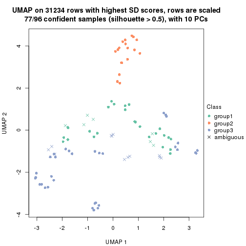
dimension_reduction(res, k = 4, method = "UMAP")
dimension_reduction(res, k = 5, method = "UMAP")
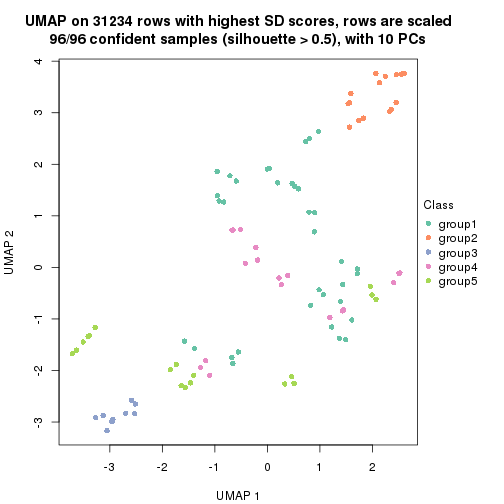
dimension_reduction(res, k = 6, method = "UMAP")
Following heatmap shows how subgroups are split when increasing k:
collect_classes(res)
Test correlation between subgroups and known annotations. If the known annotation is numeric, one-way ANOVA test is applied, and if the known annotation is discrete, chi-squared contingency table test is applied.
test_to_known_factors(res)
#> n tissue(p) k
#> SD:mclust 96 1.44e-08 2
#> SD:mclust 77 1.59e-12 3
#> SD:mclust 93 3.27e-21 4
#> SD:mclust 96 2.27e-28 5
#> SD:mclust 90 5.92e-33 6
If matrix rows can be associated to genes, consider to use functional_enrichment(res,
...) to perform function enrichment for the signature genes. See this vignette for more detailed explanations.
The object with results only for a single top-value method and a single partition method can be extracted as:
res = res_list["SD", "NMF"]
# you can also extract it by
# res = res_list["SD:NMF"]
A summary of res and all the functions that can be applied to it:
res
#> A 'ConsensusPartition' object with k = 2, 3, 4, 5, 6.
#> On a matrix with 31234 rows and 96 columns.
#> Top rows (1000, 2000, 3000, 4000, 5000) are extracted by 'SD' method.
#> Subgroups are detected by 'NMF' method.
#> Performed in total 1250 partitions by row resampling.
#> Best k for subgroups seems to be 4.
#>
#> Following methods can be applied to this 'ConsensusPartition' object:
#> [1] "cola_report" "collect_classes" "collect_plots"
#> [4] "collect_stats" "colnames" "compare_signatures"
#> [7] "consensus_heatmap" "dimension_reduction" "functional_enrichment"
#> [10] "get_anno_col" "get_anno" "get_classes"
#> [13] "get_consensus" "get_matrix" "get_membership"
#> [16] "get_param" "get_signatures" "get_stats"
#> [19] "is_best_k" "is_stable_k" "membership_heatmap"
#> [22] "ncol" "nrow" "plot_ecdf"
#> [25] "rownames" "select_partition_number" "show"
#> [28] "suggest_best_k" "test_to_known_factors"
collect_plots() function collects all the plots made from res for all k (number of partitions)
into one single page to provide an easy and fast comparison between different k.
collect_plots(res)
The plots are:
k and the heatmap of
predicted classes for each k.k.k.k.All the plots in panels can be made by individual functions and they are plotted later in this section.
select_partition_number() produces several plots showing different
statistics for choosing “optimized” k. There are following statistics:
k;k, the area increased is defined as \(A_k - A_{k-1}\).The detailed explanations of these statistics can be found in the cola vignette.
Generally speaking, lower PAC score, higher mean silhouette score or higher
concordance corresponds to better partition. Rand index and Jaccard index
measure how similar the current partition is compared to partition with k-1.
If they are too similar, we won't accept k is better than k-1.
select_partition_number(res)
The numeric values for all these statistics can be obtained by get_stats().
get_stats(res)
#> k 1-PAC mean_silhouette concordance area_increased Rand Jaccard
#> 2 2 0.492 0.791 0.902 0.4921 0.497 0.497
#> 3 3 0.719 0.870 0.901 0.2535 0.635 0.411
#> 4 4 0.914 0.927 0.969 0.1854 0.838 0.600
#> 5 5 0.862 0.803 0.902 0.0637 0.964 0.869
#> 6 6 0.858 0.794 0.881 0.0479 0.905 0.633
suggest_best_k() suggests the best \(k\) based on these statistics. The rules are as follows:
suggest_best_k(res)
#> [1] 4
Following shows the table of the partitions (You need to click the show/hide
code output link to see it). The membership matrix (columns with name p*)
is inferred by
clue::cl_consensus()
function with the SE method. Basically the value in the membership matrix
represents the probability to belong to a certain group. The finall class
label for an item is determined with the group with highest probability it
belongs to.
In get_classes() function, the entropy is calculated from the membership
matrix and the silhouette score is calculated from the consensus matrix.
cbind(get_classes(res, k = 2), get_membership(res, k = 2))
#> class entropy silhouette p1 p2
#> GSM194459 2 0.7299 0.724 0.204 0.796
#> GSM194460 2 0.7299 0.724 0.204 0.796
#> GSM194461 2 0.7299 0.724 0.204 0.796
#> GSM194462 2 0.0000 0.865 0.000 1.000
#> GSM194463 2 0.0000 0.865 0.000 1.000
#> GSM194464 2 0.0000 0.865 0.000 1.000
#> GSM194465 2 0.9580 0.532 0.380 0.620
#> GSM194466 2 0.9635 0.516 0.388 0.612
#> GSM194467 2 0.9522 0.546 0.372 0.628
#> GSM194468 2 0.8661 0.662 0.288 0.712
#> GSM194469 2 0.8661 0.662 0.288 0.712
#> GSM194470 2 0.8555 0.670 0.280 0.720
#> GSM194471 1 0.0000 0.902 1.000 0.000
#> GSM194472 1 0.0000 0.902 1.000 0.000
#> GSM194473 1 0.0000 0.902 1.000 0.000
#> GSM194474 1 0.0000 0.902 1.000 0.000
#> GSM194475 1 0.0000 0.902 1.000 0.000
#> GSM194476 1 0.0000 0.902 1.000 0.000
#> GSM194477 1 0.8909 0.575 0.692 0.308
#> GSM194478 1 0.8861 0.581 0.696 0.304
#> GSM194479 1 0.8861 0.581 0.696 0.304
#> GSM194480 1 0.0000 0.902 1.000 0.000
#> GSM194481 1 0.0000 0.902 1.000 0.000
#> GSM194482 1 0.0000 0.902 1.000 0.000
#> GSM194483 1 0.0000 0.902 1.000 0.000
#> GSM194484 1 0.0000 0.902 1.000 0.000
#> GSM194485 1 0.0000 0.902 1.000 0.000
#> GSM194486 1 0.0000 0.902 1.000 0.000
#> GSM194487 1 0.0000 0.902 1.000 0.000
#> GSM194488 1 0.0000 0.902 1.000 0.000
#> GSM194489 2 0.0000 0.865 0.000 1.000
#> GSM194490 2 0.0000 0.865 0.000 1.000
#> GSM194491 2 0.0000 0.865 0.000 1.000
#> GSM194492 2 0.1184 0.860 0.016 0.984
#> GSM194493 2 0.1184 0.860 0.016 0.984
#> GSM194494 2 0.1184 0.860 0.016 0.984
#> GSM194495 1 0.6623 0.749 0.828 0.172
#> GSM194496 1 0.6712 0.744 0.824 0.176
#> GSM194497 1 0.6712 0.744 0.824 0.176
#> GSM194498 2 0.0000 0.865 0.000 1.000
#> GSM194499 2 0.0000 0.865 0.000 1.000
#> GSM194500 2 0.0000 0.865 0.000 1.000
#> GSM194501 2 0.8763 0.607 0.296 0.704
#> GSM194502 2 0.8661 0.621 0.288 0.712
#> GSM194503 2 0.8813 0.602 0.300 0.700
#> GSM194504 1 0.0000 0.902 1.000 0.000
#> GSM194505 1 0.0000 0.902 1.000 0.000
#> GSM194506 1 0.0000 0.902 1.000 0.000
#> GSM194507 1 0.0000 0.902 1.000 0.000
#> GSM194508 1 0.0000 0.902 1.000 0.000
#> GSM194509 1 0.0000 0.902 1.000 0.000
#> GSM194510 1 0.8443 0.562 0.728 0.272
#> GSM194511 1 0.8499 0.554 0.724 0.276
#> GSM194512 1 0.8207 0.595 0.744 0.256
#> GSM194513 2 0.0000 0.865 0.000 1.000
#> GSM194514 2 0.0000 0.865 0.000 1.000
#> GSM194515 2 0.0000 0.865 0.000 1.000
#> GSM194516 2 0.0000 0.865 0.000 1.000
#> GSM194517 2 0.0000 0.865 0.000 1.000
#> GSM194518 2 0.0000 0.865 0.000 1.000
#> GSM194519 1 0.2236 0.878 0.964 0.036
#> GSM194520 1 0.1414 0.890 0.980 0.020
#> GSM194521 1 0.2043 0.881 0.968 0.032
#> GSM194522 1 0.0000 0.902 1.000 0.000
#> GSM194523 1 0.0000 0.902 1.000 0.000
#> GSM194524 1 0.0000 0.902 1.000 0.000
#> GSM194525 2 0.9427 0.567 0.360 0.640
#> GSM194526 2 0.9087 0.625 0.324 0.676
#> GSM194527 2 0.9248 0.600 0.340 0.660
#> GSM194528 1 0.9815 0.312 0.580 0.420
#> GSM194529 1 0.9710 0.370 0.600 0.400
#> GSM194530 1 0.9732 0.358 0.596 0.404
#> GSM194531 2 0.6048 0.784 0.148 0.852
#> GSM194532 2 0.6343 0.775 0.160 0.840
#> GSM194533 2 0.6247 0.778 0.156 0.844
#> GSM194534 2 0.0376 0.864 0.004 0.996
#> GSM194535 2 0.0376 0.864 0.004 0.996
#> GSM194536 2 0.0376 0.864 0.004 0.996
#> GSM194537 2 0.8499 0.641 0.276 0.724
#> GSM194538 2 0.8608 0.628 0.284 0.716
#> GSM194539 2 0.8713 0.615 0.292 0.708
#> GSM194540 2 0.0000 0.865 0.000 1.000
#> GSM194541 2 0.0000 0.865 0.000 1.000
#> GSM194542 2 0.0000 0.865 0.000 1.000
#> GSM194543 1 0.0000 0.902 1.000 0.000
#> GSM194544 1 0.0000 0.902 1.000 0.000
#> GSM194545 1 0.0000 0.902 1.000 0.000
#> GSM194546 2 0.0000 0.865 0.000 1.000
#> GSM194547 2 0.0000 0.865 0.000 1.000
#> GSM194548 2 0.0000 0.865 0.000 1.000
#> GSM194549 2 0.0000 0.865 0.000 1.000
#> GSM194550 2 0.0000 0.865 0.000 1.000
#> GSM194551 2 0.0000 0.865 0.000 1.000
#> GSM194552 1 0.0000 0.902 1.000 0.000
#> GSM194553 1 0.0000 0.902 1.000 0.000
#> GSM194554 1 0.0000 0.902 1.000 0.000
cbind(get_classes(res, k = 3), get_membership(res, k = 3))
#> class entropy silhouette p1 p2 p3
#> GSM194459 1 0.5295 0.839 0.808 0.156 0.036
#> GSM194460 1 0.5295 0.839 0.808 0.156 0.036
#> GSM194461 1 0.5295 0.839 0.808 0.156 0.036
#> GSM194462 1 0.1031 0.892 0.976 0.024 0.000
#> GSM194463 1 0.1163 0.889 0.972 0.028 0.000
#> GSM194464 1 0.1031 0.892 0.976 0.024 0.000
#> GSM194465 1 0.5180 0.842 0.812 0.156 0.032
#> GSM194466 1 0.5180 0.842 0.812 0.156 0.032
#> GSM194467 1 0.5180 0.842 0.812 0.156 0.032
#> GSM194468 2 0.7466 -0.189 0.444 0.520 0.036
#> GSM194469 2 0.7484 -0.240 0.460 0.504 0.036
#> GSM194470 1 0.7493 0.277 0.488 0.476 0.036
#> GSM194471 3 0.0000 0.954 0.000 0.000 1.000
#> GSM194472 3 0.0000 0.954 0.000 0.000 1.000
#> GSM194473 3 0.0000 0.954 0.000 0.000 1.000
#> GSM194474 3 0.0000 0.954 0.000 0.000 1.000
#> GSM194475 3 0.0000 0.954 0.000 0.000 1.000
#> GSM194476 3 0.0000 0.954 0.000 0.000 1.000
#> GSM194477 1 0.0000 0.902 1.000 0.000 0.000
#> GSM194478 1 0.0000 0.902 1.000 0.000 0.000
#> GSM194479 1 0.0000 0.902 1.000 0.000 0.000
#> GSM194480 3 0.2356 0.903 0.072 0.000 0.928
#> GSM194481 3 0.1860 0.923 0.052 0.000 0.948
#> GSM194482 3 0.1529 0.932 0.040 0.000 0.960
#> GSM194483 3 0.1163 0.939 0.028 0.000 0.972
#> GSM194484 3 0.1289 0.937 0.032 0.000 0.968
#> GSM194485 3 0.1289 0.938 0.032 0.000 0.968
#> GSM194486 3 0.0000 0.954 0.000 0.000 1.000
#> GSM194487 3 0.0000 0.954 0.000 0.000 1.000
#> GSM194488 3 0.0000 0.954 0.000 0.000 1.000
#> GSM194489 2 0.4452 0.902 0.192 0.808 0.000
#> GSM194490 2 0.4452 0.902 0.192 0.808 0.000
#> GSM194491 2 0.4452 0.902 0.192 0.808 0.000
#> GSM194492 1 0.0424 0.901 0.992 0.008 0.000
#> GSM194493 1 0.0424 0.901 0.992 0.008 0.000
#> GSM194494 1 0.0424 0.901 0.992 0.008 0.000
#> GSM194495 1 0.0661 0.901 0.988 0.008 0.004
#> GSM194496 1 0.0661 0.901 0.988 0.008 0.004
#> GSM194497 1 0.0661 0.901 0.988 0.008 0.004
#> GSM194498 1 0.0000 0.902 1.000 0.000 0.000
#> GSM194499 1 0.0000 0.902 1.000 0.000 0.000
#> GSM194500 1 0.0000 0.902 1.000 0.000 0.000
#> GSM194501 1 0.0237 0.902 0.996 0.004 0.000
#> GSM194502 1 0.0237 0.902 0.996 0.004 0.000
#> GSM194503 1 0.0237 0.902 0.996 0.004 0.000
#> GSM194504 3 0.0000 0.954 0.000 0.000 1.000
#> GSM194505 3 0.0000 0.954 0.000 0.000 1.000
#> GSM194506 3 0.0000 0.954 0.000 0.000 1.000
#> GSM194507 3 0.0000 0.954 0.000 0.000 1.000
#> GSM194508 3 0.0000 0.954 0.000 0.000 1.000
#> GSM194509 3 0.0000 0.954 0.000 0.000 1.000
#> GSM194510 1 0.3941 0.855 0.844 0.156 0.000
#> GSM194511 1 0.3941 0.855 0.844 0.156 0.000
#> GSM194512 1 0.3941 0.855 0.844 0.156 0.000
#> GSM194513 2 0.3941 0.925 0.156 0.844 0.000
#> GSM194514 2 0.3941 0.925 0.156 0.844 0.000
#> GSM194515 2 0.3941 0.925 0.156 0.844 0.000
#> GSM194516 2 0.3941 0.925 0.156 0.844 0.000
#> GSM194517 2 0.3941 0.925 0.156 0.844 0.000
#> GSM194518 2 0.3941 0.925 0.156 0.844 0.000
#> GSM194519 1 0.4802 0.848 0.824 0.156 0.020
#> GSM194520 1 0.4934 0.846 0.820 0.156 0.024
#> GSM194521 1 0.4802 0.848 0.824 0.156 0.020
#> GSM194522 1 0.5295 0.839 0.808 0.156 0.036
#> GSM194523 1 0.5295 0.839 0.808 0.156 0.036
#> GSM194524 1 0.5295 0.839 0.808 0.156 0.036
#> GSM194525 1 0.3941 0.855 0.844 0.156 0.000
#> GSM194526 1 0.3941 0.855 0.844 0.156 0.000
#> GSM194527 1 0.3941 0.855 0.844 0.156 0.000
#> GSM194528 1 0.0424 0.901 0.992 0.008 0.000
#> GSM194529 1 0.0424 0.901 0.992 0.008 0.000
#> GSM194530 1 0.0424 0.901 0.992 0.008 0.000
#> GSM194531 1 0.0424 0.901 0.992 0.008 0.000
#> GSM194532 1 0.0424 0.901 0.992 0.008 0.000
#> GSM194533 1 0.0424 0.901 0.992 0.008 0.000
#> GSM194534 1 0.0237 0.902 0.996 0.004 0.000
#> GSM194535 1 0.0237 0.902 0.996 0.004 0.000
#> GSM194536 1 0.0237 0.902 0.996 0.004 0.000
#> GSM194537 1 0.0424 0.901 0.992 0.008 0.000
#> GSM194538 1 0.0424 0.901 0.992 0.008 0.000
#> GSM194539 1 0.0424 0.901 0.992 0.008 0.000
#> GSM194540 2 0.3941 0.925 0.156 0.844 0.000
#> GSM194541 2 0.3941 0.925 0.156 0.844 0.000
#> GSM194542 2 0.3941 0.925 0.156 0.844 0.000
#> GSM194543 3 0.5178 0.656 0.256 0.000 0.744
#> GSM194544 3 0.4555 0.735 0.200 0.000 0.800
#> GSM194545 3 0.4887 0.698 0.228 0.000 0.772
#> GSM194546 2 0.3941 0.925 0.156 0.844 0.000
#> GSM194547 2 0.3941 0.925 0.156 0.844 0.000
#> GSM194548 2 0.3941 0.925 0.156 0.844 0.000
#> GSM194549 2 0.3941 0.925 0.156 0.844 0.000
#> GSM194550 2 0.3941 0.925 0.156 0.844 0.000
#> GSM194551 2 0.3941 0.925 0.156 0.844 0.000
#> GSM194552 3 0.0000 0.954 0.000 0.000 1.000
#> GSM194553 3 0.0000 0.954 0.000 0.000 1.000
#> GSM194554 3 0.0000 0.954 0.000 0.000 1.000
cbind(get_classes(res, k = 4), get_membership(res, k = 4))
#> class entropy silhouette p1 p2 p3 p4
#> GSM194459 4 0.0000 1.000 0.000 0.000 0.000 1.000
#> GSM194460 4 0.0000 1.000 0.000 0.000 0.000 1.000
#> GSM194461 4 0.0000 1.000 0.000 0.000 0.000 1.000
#> GSM194462 1 0.0000 0.948 1.000 0.000 0.000 0.000
#> GSM194463 1 0.0000 0.948 1.000 0.000 0.000 0.000
#> GSM194464 1 0.0000 0.948 1.000 0.000 0.000 0.000
#> GSM194465 4 0.0000 1.000 0.000 0.000 0.000 1.000
#> GSM194466 4 0.0000 1.000 0.000 0.000 0.000 1.000
#> GSM194467 4 0.0000 1.000 0.000 0.000 0.000 1.000
#> GSM194468 4 0.0000 1.000 0.000 0.000 0.000 1.000
#> GSM194469 4 0.0000 1.000 0.000 0.000 0.000 1.000
#> GSM194470 4 0.0000 1.000 0.000 0.000 0.000 1.000
#> GSM194471 3 0.0000 0.940 0.000 0.000 1.000 0.000
#> GSM194472 3 0.0000 0.940 0.000 0.000 1.000 0.000
#> GSM194473 3 0.0000 0.940 0.000 0.000 1.000 0.000
#> GSM194474 3 0.0000 0.940 0.000 0.000 1.000 0.000
#> GSM194475 3 0.0000 0.940 0.000 0.000 1.000 0.000
#> GSM194476 3 0.0000 0.940 0.000 0.000 1.000 0.000
#> GSM194477 1 0.0000 0.948 1.000 0.000 0.000 0.000
#> GSM194478 1 0.0000 0.948 1.000 0.000 0.000 0.000
#> GSM194479 1 0.0000 0.948 1.000 0.000 0.000 0.000
#> GSM194480 3 0.4331 0.650 0.288 0.000 0.712 0.000
#> GSM194481 3 0.4193 0.684 0.268 0.000 0.732 0.000
#> GSM194482 3 0.3726 0.765 0.212 0.000 0.788 0.000
#> GSM194483 3 0.2469 0.866 0.108 0.000 0.892 0.000
#> GSM194484 3 0.3074 0.828 0.152 0.000 0.848 0.000
#> GSM194485 3 0.3024 0.832 0.148 0.000 0.852 0.000
#> GSM194486 3 0.0000 0.940 0.000 0.000 1.000 0.000
#> GSM194487 3 0.0000 0.940 0.000 0.000 1.000 0.000
#> GSM194488 3 0.0000 0.940 0.000 0.000 1.000 0.000
#> GSM194489 1 0.2921 0.818 0.860 0.140 0.000 0.000
#> GSM194490 1 0.2814 0.827 0.868 0.132 0.000 0.000
#> GSM194491 1 0.2647 0.840 0.880 0.120 0.000 0.000
#> GSM194492 1 0.0000 0.948 1.000 0.000 0.000 0.000
#> GSM194493 1 0.0000 0.948 1.000 0.000 0.000 0.000
#> GSM194494 1 0.0000 0.948 1.000 0.000 0.000 0.000
#> GSM194495 1 0.0000 0.948 1.000 0.000 0.000 0.000
#> GSM194496 1 0.0000 0.948 1.000 0.000 0.000 0.000
#> GSM194497 1 0.0000 0.948 1.000 0.000 0.000 0.000
#> GSM194498 1 0.0707 0.934 0.980 0.000 0.000 0.020
#> GSM194499 1 0.0707 0.934 0.980 0.000 0.000 0.020
#> GSM194500 1 0.0188 0.945 0.996 0.000 0.000 0.004
#> GSM194501 1 0.0000 0.948 1.000 0.000 0.000 0.000
#> GSM194502 1 0.0000 0.948 1.000 0.000 0.000 0.000
#> GSM194503 1 0.0000 0.948 1.000 0.000 0.000 0.000
#> GSM194504 3 0.0000 0.940 0.000 0.000 1.000 0.000
#> GSM194505 3 0.0000 0.940 0.000 0.000 1.000 0.000
#> GSM194506 3 0.0000 0.940 0.000 0.000 1.000 0.000
#> GSM194507 3 0.0000 0.940 0.000 0.000 1.000 0.000
#> GSM194508 3 0.0000 0.940 0.000 0.000 1.000 0.000
#> GSM194509 3 0.0000 0.940 0.000 0.000 1.000 0.000
#> GSM194510 4 0.0000 1.000 0.000 0.000 0.000 1.000
#> GSM194511 4 0.0000 1.000 0.000 0.000 0.000 1.000
#> GSM194512 4 0.0000 1.000 0.000 0.000 0.000 1.000
#> GSM194513 2 0.0000 1.000 0.000 1.000 0.000 0.000
#> GSM194514 2 0.0000 1.000 0.000 1.000 0.000 0.000
#> GSM194515 2 0.0000 1.000 0.000 1.000 0.000 0.000
#> GSM194516 2 0.0000 1.000 0.000 1.000 0.000 0.000
#> GSM194517 2 0.0000 1.000 0.000 1.000 0.000 0.000
#> GSM194518 2 0.0000 1.000 0.000 1.000 0.000 0.000
#> GSM194519 4 0.0000 1.000 0.000 0.000 0.000 1.000
#> GSM194520 4 0.0000 1.000 0.000 0.000 0.000 1.000
#> GSM194521 4 0.0000 1.000 0.000 0.000 0.000 1.000
#> GSM194522 4 0.0000 1.000 0.000 0.000 0.000 1.000
#> GSM194523 4 0.0000 1.000 0.000 0.000 0.000 1.000
#> GSM194524 4 0.0000 1.000 0.000 0.000 0.000 1.000
#> GSM194525 1 0.4967 0.220 0.548 0.000 0.000 0.452
#> GSM194526 1 0.4907 0.311 0.580 0.000 0.000 0.420
#> GSM194527 1 0.4925 0.290 0.572 0.000 0.000 0.428
#> GSM194528 1 0.0000 0.948 1.000 0.000 0.000 0.000
#> GSM194529 1 0.0000 0.948 1.000 0.000 0.000 0.000
#> GSM194530 1 0.0000 0.948 1.000 0.000 0.000 0.000
#> GSM194531 1 0.0000 0.948 1.000 0.000 0.000 0.000
#> GSM194532 1 0.0000 0.948 1.000 0.000 0.000 0.000
#> GSM194533 1 0.0000 0.948 1.000 0.000 0.000 0.000
#> GSM194534 1 0.0000 0.948 1.000 0.000 0.000 0.000
#> GSM194535 1 0.0000 0.948 1.000 0.000 0.000 0.000
#> GSM194536 1 0.0000 0.948 1.000 0.000 0.000 0.000
#> GSM194537 1 0.0000 0.948 1.000 0.000 0.000 0.000
#> GSM194538 1 0.0000 0.948 1.000 0.000 0.000 0.000
#> GSM194539 1 0.0000 0.948 1.000 0.000 0.000 0.000
#> GSM194540 2 0.0000 1.000 0.000 1.000 0.000 0.000
#> GSM194541 2 0.0000 1.000 0.000 1.000 0.000 0.000
#> GSM194542 2 0.0000 1.000 0.000 1.000 0.000 0.000
#> GSM194543 3 0.0707 0.929 0.020 0.000 0.980 0.000
#> GSM194544 3 0.1022 0.922 0.032 0.000 0.968 0.000
#> GSM194545 3 0.1557 0.904 0.056 0.000 0.944 0.000
#> GSM194546 2 0.0000 1.000 0.000 1.000 0.000 0.000
#> GSM194547 2 0.0000 1.000 0.000 1.000 0.000 0.000
#> GSM194548 2 0.0000 1.000 0.000 1.000 0.000 0.000
#> GSM194549 2 0.0000 1.000 0.000 1.000 0.000 0.000
#> GSM194550 2 0.0000 1.000 0.000 1.000 0.000 0.000
#> GSM194551 2 0.0000 1.000 0.000 1.000 0.000 0.000
#> GSM194552 3 0.0000 0.940 0.000 0.000 1.000 0.000
#> GSM194553 3 0.0000 0.940 0.000 0.000 1.000 0.000
#> GSM194554 3 0.0000 0.940 0.000 0.000 1.000 0.000
cbind(get_classes(res, k = 5), get_membership(res, k = 5))
#> class entropy silhouette p1 p2 p3 p4 p5
#> GSM194459 4 0.0000 0.9678 0.000 0.000 0.000 1.000 0.000
#> GSM194460 4 0.0000 0.9678 0.000 0.000 0.000 1.000 0.000
#> GSM194461 4 0.0000 0.9678 0.000 0.000 0.000 1.000 0.000
#> GSM194462 1 0.1851 0.8509 0.912 0.000 0.000 0.000 0.088
#> GSM194463 1 0.2124 0.8474 0.900 0.004 0.000 0.000 0.096
#> GSM194464 1 0.1908 0.8498 0.908 0.000 0.000 0.000 0.092
#> GSM194465 4 0.0000 0.9678 0.000 0.000 0.000 1.000 0.000
#> GSM194466 4 0.0000 0.9678 0.000 0.000 0.000 1.000 0.000
#> GSM194467 4 0.0000 0.9678 0.000 0.000 0.000 1.000 0.000
#> GSM194468 4 0.2891 0.8277 0.000 0.000 0.000 0.824 0.176
#> GSM194469 4 0.2891 0.8277 0.000 0.000 0.000 0.824 0.176
#> GSM194470 4 0.2891 0.8277 0.000 0.000 0.000 0.824 0.176
#> GSM194471 3 0.0000 0.8102 0.000 0.000 1.000 0.000 0.000
#> GSM194472 3 0.0000 0.8102 0.000 0.000 1.000 0.000 0.000
#> GSM194473 3 0.0000 0.8102 0.000 0.000 1.000 0.000 0.000
#> GSM194474 3 0.0000 0.8102 0.000 0.000 1.000 0.000 0.000
#> GSM194475 3 0.0000 0.8102 0.000 0.000 1.000 0.000 0.000
#> GSM194476 3 0.0000 0.8102 0.000 0.000 1.000 0.000 0.000
#> GSM194477 1 0.0000 0.8783 1.000 0.000 0.000 0.000 0.000
#> GSM194478 1 0.0000 0.8783 1.000 0.000 0.000 0.000 0.000
#> GSM194479 1 0.0000 0.8783 1.000 0.000 0.000 0.000 0.000
#> GSM194480 5 0.5004 0.7266 0.072 0.000 0.256 0.000 0.672
#> GSM194481 5 0.5004 0.7258 0.072 0.000 0.256 0.000 0.672
#> GSM194482 5 0.5035 0.7237 0.076 0.000 0.252 0.000 0.672
#> GSM194483 5 0.4165 0.7043 0.008 0.000 0.320 0.000 0.672
#> GSM194484 5 0.4251 0.7092 0.012 0.000 0.316 0.000 0.672
#> GSM194485 5 0.4329 0.7129 0.016 0.000 0.312 0.000 0.672
#> GSM194486 3 0.0000 0.8102 0.000 0.000 1.000 0.000 0.000
#> GSM194487 3 0.0000 0.8102 0.000 0.000 1.000 0.000 0.000
#> GSM194488 3 0.0000 0.8102 0.000 0.000 1.000 0.000 0.000
#> GSM194489 1 0.1197 0.8513 0.952 0.048 0.000 0.000 0.000
#> GSM194490 1 0.1197 0.8513 0.952 0.048 0.000 0.000 0.000
#> GSM194491 1 0.1121 0.8539 0.956 0.044 0.000 0.000 0.000
#> GSM194492 1 0.0000 0.8783 1.000 0.000 0.000 0.000 0.000
#> GSM194493 1 0.0000 0.8783 1.000 0.000 0.000 0.000 0.000
#> GSM194494 1 0.0000 0.8783 1.000 0.000 0.000 0.000 0.000
#> GSM194495 1 0.4088 0.5777 0.632 0.000 0.000 0.000 0.368
#> GSM194496 1 0.4045 0.5921 0.644 0.000 0.000 0.000 0.356
#> GSM194497 1 0.4060 0.5873 0.640 0.000 0.000 0.000 0.360
#> GSM194498 1 0.0000 0.8783 1.000 0.000 0.000 0.000 0.000
#> GSM194499 1 0.0162 0.8766 0.996 0.000 0.000 0.004 0.000
#> GSM194500 1 0.0000 0.8783 1.000 0.000 0.000 0.000 0.000
#> GSM194501 1 0.3366 0.7569 0.768 0.000 0.000 0.000 0.232
#> GSM194502 1 0.3424 0.7502 0.760 0.000 0.000 0.000 0.240
#> GSM194503 1 0.3366 0.7569 0.768 0.000 0.000 0.000 0.232
#> GSM194504 5 0.3177 0.5189 0.000 0.000 0.208 0.000 0.792
#> GSM194505 5 0.3177 0.5189 0.000 0.000 0.208 0.000 0.792
#> GSM194506 5 0.3177 0.5189 0.000 0.000 0.208 0.000 0.792
#> GSM194507 3 0.3508 0.5541 0.000 0.000 0.748 0.000 0.252
#> GSM194508 3 0.3508 0.5541 0.000 0.000 0.748 0.000 0.252
#> GSM194509 3 0.3508 0.5541 0.000 0.000 0.748 0.000 0.252
#> GSM194510 4 0.0000 0.9678 0.000 0.000 0.000 1.000 0.000
#> GSM194511 4 0.0000 0.9678 0.000 0.000 0.000 1.000 0.000
#> GSM194512 4 0.0162 0.9638 0.004 0.000 0.000 0.996 0.000
#> GSM194513 2 0.0000 0.9971 0.000 1.000 0.000 0.000 0.000
#> GSM194514 2 0.0000 0.9971 0.000 1.000 0.000 0.000 0.000
#> GSM194515 2 0.0000 0.9971 0.000 1.000 0.000 0.000 0.000
#> GSM194516 2 0.0404 0.9885 0.000 0.988 0.000 0.000 0.012
#> GSM194517 2 0.0404 0.9885 0.000 0.988 0.000 0.000 0.012
#> GSM194518 2 0.0404 0.9885 0.000 0.988 0.000 0.000 0.012
#> GSM194519 4 0.0000 0.9678 0.000 0.000 0.000 1.000 0.000
#> GSM194520 4 0.0000 0.9678 0.000 0.000 0.000 1.000 0.000
#> GSM194521 4 0.0000 0.9678 0.000 0.000 0.000 1.000 0.000
#> GSM194522 4 0.0162 0.9656 0.000 0.000 0.000 0.996 0.004
#> GSM194523 4 0.0000 0.9678 0.000 0.000 0.000 1.000 0.000
#> GSM194524 4 0.0162 0.9656 0.000 0.000 0.000 0.996 0.004
#> GSM194525 1 0.6767 0.1650 0.388 0.000 0.000 0.336 0.276
#> GSM194526 1 0.6662 0.3061 0.444 0.000 0.000 0.276 0.280
#> GSM194527 1 0.6650 0.3129 0.448 0.000 0.000 0.272 0.280
#> GSM194528 1 0.0000 0.8783 1.000 0.000 0.000 0.000 0.000
#> GSM194529 1 0.0000 0.8783 1.000 0.000 0.000 0.000 0.000
#> GSM194530 1 0.0000 0.8783 1.000 0.000 0.000 0.000 0.000
#> GSM194531 1 0.0000 0.8783 1.000 0.000 0.000 0.000 0.000
#> GSM194532 1 0.0000 0.8783 1.000 0.000 0.000 0.000 0.000
#> GSM194533 1 0.0000 0.8783 1.000 0.000 0.000 0.000 0.000
#> GSM194534 1 0.0000 0.8783 1.000 0.000 0.000 0.000 0.000
#> GSM194535 1 0.0000 0.8783 1.000 0.000 0.000 0.000 0.000
#> GSM194536 1 0.0000 0.8783 1.000 0.000 0.000 0.000 0.000
#> GSM194537 1 0.2074 0.8440 0.896 0.000 0.000 0.000 0.104
#> GSM194538 1 0.1908 0.8494 0.908 0.000 0.000 0.000 0.092
#> GSM194539 1 0.1908 0.8494 0.908 0.000 0.000 0.000 0.092
#> GSM194540 2 0.0000 0.9971 0.000 1.000 0.000 0.000 0.000
#> GSM194541 2 0.0000 0.9971 0.000 1.000 0.000 0.000 0.000
#> GSM194542 2 0.0000 0.9971 0.000 1.000 0.000 0.000 0.000
#> GSM194543 3 0.4590 -0.1284 0.012 0.000 0.568 0.000 0.420
#> GSM194544 3 0.4473 -0.0929 0.008 0.000 0.580 0.000 0.412
#> GSM194545 3 0.4767 -0.1422 0.020 0.000 0.560 0.000 0.420
#> GSM194546 2 0.0000 0.9971 0.000 1.000 0.000 0.000 0.000
#> GSM194547 2 0.0000 0.9971 0.000 1.000 0.000 0.000 0.000
#> GSM194548 2 0.0000 0.9971 0.000 1.000 0.000 0.000 0.000
#> GSM194549 2 0.0000 0.9971 0.000 1.000 0.000 0.000 0.000
#> GSM194550 2 0.0000 0.9971 0.000 1.000 0.000 0.000 0.000
#> GSM194551 2 0.0000 0.9971 0.000 1.000 0.000 0.000 0.000
#> GSM194552 3 0.0000 0.8102 0.000 0.000 1.000 0.000 0.000
#> GSM194553 3 0.0000 0.8102 0.000 0.000 1.000 0.000 0.000
#> GSM194554 3 0.0000 0.8102 0.000 0.000 1.000 0.000 0.000
cbind(get_classes(res, k = 6), get_membership(res, k = 6))
#> class entropy silhouette p1 p2 p3 p4 p5 p6
#> GSM194459 4 0.0363 0.9084 0.000 0.000 0.000 0.988 0.000 0.012
#> GSM194460 4 0.0363 0.9084 0.000 0.000 0.000 0.988 0.000 0.012
#> GSM194461 4 0.0363 0.9084 0.000 0.000 0.000 0.988 0.000 0.012
#> GSM194462 1 0.3809 0.5448 0.684 0.004 0.000 0.000 0.008 0.304
#> GSM194463 1 0.4053 0.5259 0.676 0.004 0.000 0.000 0.020 0.300
#> GSM194464 1 0.3748 0.5484 0.688 0.000 0.000 0.000 0.012 0.300
#> GSM194465 4 0.0363 0.9084 0.000 0.000 0.000 0.988 0.000 0.012
#> GSM194466 4 0.0363 0.9084 0.000 0.000 0.000 0.988 0.000 0.012
#> GSM194467 4 0.0363 0.9084 0.000 0.000 0.000 0.988 0.000 0.012
#> GSM194468 4 0.4523 0.4521 0.000 0.000 0.000 0.516 0.032 0.452
#> GSM194469 4 0.4523 0.4521 0.000 0.000 0.000 0.516 0.032 0.452
#> GSM194470 4 0.4529 0.4387 0.000 0.000 0.000 0.508 0.032 0.460
#> GSM194471 3 0.0000 1.0000 0.000 0.000 1.000 0.000 0.000 0.000
#> GSM194472 3 0.0000 1.0000 0.000 0.000 1.000 0.000 0.000 0.000
#> GSM194473 3 0.0000 1.0000 0.000 0.000 1.000 0.000 0.000 0.000
#> GSM194474 3 0.0000 1.0000 0.000 0.000 1.000 0.000 0.000 0.000
#> GSM194475 3 0.0000 1.0000 0.000 0.000 1.000 0.000 0.000 0.000
#> GSM194476 3 0.0000 1.0000 0.000 0.000 1.000 0.000 0.000 0.000
#> GSM194477 1 0.0146 0.8857 0.996 0.000 0.000 0.000 0.000 0.004
#> GSM194478 1 0.0146 0.8857 0.996 0.000 0.000 0.000 0.000 0.004
#> GSM194479 1 0.0146 0.8857 0.996 0.000 0.000 0.000 0.000 0.004
#> GSM194480 5 0.0993 0.9942 0.012 0.000 0.024 0.000 0.964 0.000
#> GSM194481 5 0.0993 0.9942 0.012 0.000 0.024 0.000 0.964 0.000
#> GSM194482 5 0.0993 0.9942 0.012 0.000 0.024 0.000 0.964 0.000
#> GSM194483 5 0.1036 0.9941 0.008 0.000 0.024 0.000 0.964 0.004
#> GSM194484 5 0.1036 0.9941 0.008 0.000 0.024 0.000 0.964 0.004
#> GSM194485 5 0.1036 0.9941 0.008 0.000 0.024 0.000 0.964 0.004
#> GSM194486 3 0.0000 1.0000 0.000 0.000 1.000 0.000 0.000 0.000
#> GSM194487 3 0.0000 1.0000 0.000 0.000 1.000 0.000 0.000 0.000
#> GSM194488 3 0.0000 1.0000 0.000 0.000 1.000 0.000 0.000 0.000
#> GSM194489 1 0.0603 0.8789 0.980 0.016 0.000 0.000 0.000 0.004
#> GSM194490 1 0.0508 0.8816 0.984 0.012 0.000 0.000 0.000 0.004
#> GSM194491 1 0.0508 0.8816 0.984 0.012 0.000 0.000 0.000 0.004
#> GSM194492 1 0.0146 0.8858 0.996 0.000 0.000 0.000 0.000 0.004
#> GSM194493 1 0.0146 0.8858 0.996 0.000 0.000 0.000 0.000 0.004
#> GSM194494 1 0.0146 0.8858 0.996 0.000 0.000 0.000 0.000 0.004
#> GSM194495 6 0.5583 0.5267 0.208 0.000 0.000 0.000 0.244 0.548
#> GSM194496 6 0.5648 0.5229 0.224 0.000 0.000 0.000 0.240 0.536
#> GSM194497 6 0.5629 0.5263 0.224 0.000 0.000 0.000 0.236 0.540
#> GSM194498 1 0.1218 0.8690 0.956 0.000 0.000 0.012 0.004 0.028
#> GSM194499 1 0.1218 0.8690 0.956 0.000 0.000 0.012 0.004 0.028
#> GSM194500 1 0.1218 0.8690 0.956 0.000 0.000 0.012 0.004 0.028
#> GSM194501 6 0.4844 0.4907 0.312 0.000 0.000 0.000 0.080 0.608
#> GSM194502 6 0.4902 0.5038 0.304 0.000 0.000 0.000 0.088 0.608
#> GSM194503 6 0.4813 0.4833 0.316 0.000 0.000 0.000 0.076 0.608
#> GSM194504 6 0.4183 0.4420 0.000 0.000 0.036 0.000 0.296 0.668
#> GSM194505 6 0.4165 0.4443 0.000 0.000 0.036 0.000 0.292 0.672
#> GSM194506 6 0.4183 0.4420 0.000 0.000 0.036 0.000 0.296 0.668
#> GSM194507 6 0.4378 0.0839 0.000 0.000 0.368 0.000 0.032 0.600
#> GSM194508 6 0.4400 0.0677 0.000 0.000 0.376 0.000 0.032 0.592
#> GSM194509 6 0.4400 0.0677 0.000 0.000 0.376 0.000 0.032 0.592
#> GSM194510 4 0.0000 0.9097 0.000 0.000 0.000 1.000 0.000 0.000
#> GSM194511 4 0.0000 0.9097 0.000 0.000 0.000 1.000 0.000 0.000
#> GSM194512 4 0.0000 0.9097 0.000 0.000 0.000 1.000 0.000 0.000
#> GSM194513 2 0.0000 0.9877 0.000 1.000 0.000 0.000 0.000 0.000
#> GSM194514 2 0.0000 0.9877 0.000 1.000 0.000 0.000 0.000 0.000
#> GSM194515 2 0.0000 0.9877 0.000 1.000 0.000 0.000 0.000 0.000
#> GSM194516 2 0.1141 0.9481 0.000 0.948 0.000 0.000 0.000 0.052
#> GSM194517 2 0.1141 0.9476 0.000 0.948 0.000 0.000 0.000 0.052
#> GSM194518 2 0.1075 0.9511 0.000 0.952 0.000 0.000 0.000 0.048
#> GSM194519 4 0.0000 0.9097 0.000 0.000 0.000 1.000 0.000 0.000
#> GSM194520 4 0.0000 0.9097 0.000 0.000 0.000 1.000 0.000 0.000
#> GSM194521 4 0.0000 0.9097 0.000 0.000 0.000 1.000 0.000 0.000
#> GSM194522 4 0.0146 0.9074 0.000 0.000 0.000 0.996 0.000 0.004
#> GSM194523 4 0.0000 0.9097 0.000 0.000 0.000 1.000 0.000 0.000
#> GSM194524 4 0.0000 0.9097 0.000 0.000 0.000 1.000 0.000 0.000
#> GSM194525 6 0.2865 0.5539 0.140 0.000 0.000 0.012 0.008 0.840
#> GSM194526 6 0.2773 0.5575 0.152 0.000 0.000 0.004 0.008 0.836
#> GSM194527 6 0.2662 0.5564 0.152 0.000 0.000 0.004 0.004 0.840
#> GSM194528 1 0.0363 0.8839 0.988 0.000 0.000 0.000 0.000 0.012
#> GSM194529 1 0.0363 0.8839 0.988 0.000 0.000 0.000 0.000 0.012
#> GSM194530 1 0.0458 0.8826 0.984 0.000 0.000 0.000 0.000 0.016
#> GSM194531 1 0.0146 0.8858 0.996 0.000 0.000 0.000 0.000 0.004
#> GSM194532 1 0.0146 0.8858 0.996 0.000 0.000 0.000 0.000 0.004
#> GSM194533 1 0.0146 0.8858 0.996 0.000 0.000 0.000 0.000 0.004
#> GSM194534 1 0.1218 0.8690 0.956 0.000 0.000 0.012 0.004 0.028
#> GSM194535 1 0.1218 0.8690 0.956 0.000 0.000 0.012 0.004 0.028
#> GSM194536 1 0.1218 0.8690 0.956 0.000 0.000 0.012 0.004 0.028
#> GSM194537 1 0.3795 0.4158 0.632 0.000 0.000 0.000 0.004 0.364
#> GSM194538 1 0.3728 0.4643 0.652 0.000 0.000 0.000 0.004 0.344
#> GSM194539 1 0.3714 0.4730 0.656 0.000 0.000 0.000 0.004 0.340
#> GSM194540 2 0.0000 0.9877 0.000 1.000 0.000 0.000 0.000 0.000
#> GSM194541 2 0.0000 0.9877 0.000 1.000 0.000 0.000 0.000 0.000
#> GSM194542 2 0.0000 0.9877 0.000 1.000 0.000 0.000 0.000 0.000
#> GSM194543 6 0.6116 0.2781 0.000 0.000 0.320 0.000 0.312 0.368
#> GSM194544 6 0.6116 0.2792 0.000 0.000 0.332 0.000 0.304 0.364
#> GSM194545 6 0.6122 0.2689 0.000 0.000 0.336 0.000 0.308 0.356
#> GSM194546 2 0.0000 0.9877 0.000 1.000 0.000 0.000 0.000 0.000
#> GSM194547 2 0.0000 0.9877 0.000 1.000 0.000 0.000 0.000 0.000
#> GSM194548 2 0.0000 0.9877 0.000 1.000 0.000 0.000 0.000 0.000
#> GSM194549 2 0.0000 0.9877 0.000 1.000 0.000 0.000 0.000 0.000
#> GSM194550 2 0.0000 0.9877 0.000 1.000 0.000 0.000 0.000 0.000
#> GSM194551 2 0.0000 0.9877 0.000 1.000 0.000 0.000 0.000 0.000
#> GSM194552 3 0.0000 1.0000 0.000 0.000 1.000 0.000 0.000 0.000
#> GSM194553 3 0.0000 1.0000 0.000 0.000 1.000 0.000 0.000 0.000
#> GSM194554 3 0.0000 1.0000 0.000 0.000 1.000 0.000 0.000 0.000
Heatmaps for the consensus matrix. It visualizes the probability of two samples to be in a same group.
consensus_heatmap(res, k = 2)
consensus_heatmap(res, k = 3)
consensus_heatmap(res, k = 4)
consensus_heatmap(res, k = 5)
consensus_heatmap(res, k = 6)
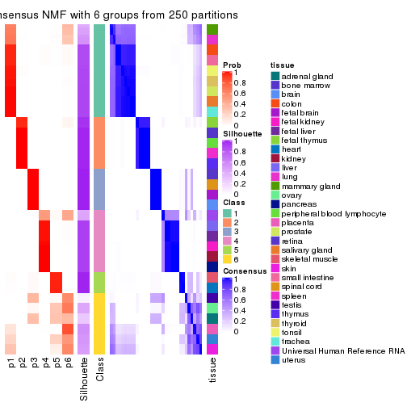
Heatmaps for the membership of samples in all partitions to see how consistent they are:
membership_heatmap(res, k = 2)
membership_heatmap(res, k = 3)
membership_heatmap(res, k = 4)
membership_heatmap(res, k = 5)
membership_heatmap(res, k = 6)
As soon as we have had the classes for columns, we can look for signatures which are significantly different between classes which can be candidate marks for certain classes. Following are the heatmaps for signatures.
Signature heatmaps where rows are scaled:
get_signatures(res, k = 2)
get_signatures(res, k = 3)
get_signatures(res, k = 4)
get_signatures(res, k = 5)
get_signatures(res, k = 6)
Signature heatmaps where rows are not scaled:
get_signatures(res, k = 2, scale_rows = FALSE)
get_signatures(res, k = 3, scale_rows = FALSE)
get_signatures(res, k = 4, scale_rows = FALSE)
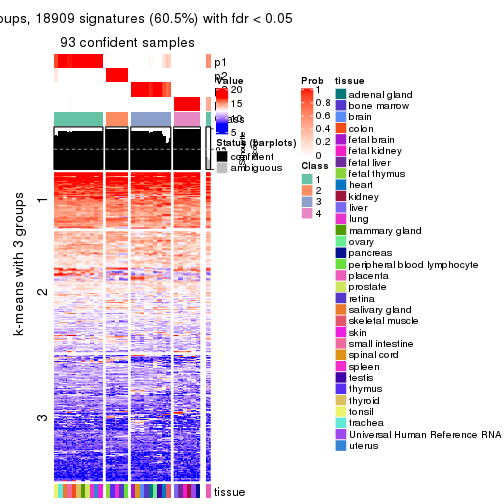
get_signatures(res, k = 5, scale_rows = FALSE)
get_signatures(res, k = 6, scale_rows = FALSE)
Compare the overlap of signatures from different k:
compare_signatures(res)
get_signature() returns a data frame invisibly. TO get the list of signatures, the function
call should be assigned to a variable explicitly. In following code, if plot argument is set
to FALSE, no heatmap is plotted while only the differential analysis is performed.
# code only for demonstration
tb = get_signature(res, k = ..., plot = FALSE)
An example of the output of tb is:
#> which_row fdr mean_1 mean_2 scaled_mean_1 scaled_mean_2 km
#> 1 38 0.042760348 8.373488 9.131774 -0.5533452 0.5164555 1
#> 2 40 0.018707592 7.106213 8.469186 -0.6173731 0.5762149 1
#> 3 55 0.019134737 10.221463 11.207825 -0.6159697 0.5749050 1
#> 4 59 0.006059896 5.921854 7.869574 -0.6899429 0.6439467 1
#> 5 60 0.018055526 8.928898 10.211722 -0.6204761 0.5791110 1
#> 6 98 0.009384629 15.714769 14.887706 0.6635654 -0.6193277 2
...
The columns in tb are:
which_row: row indices corresponding to the input matrix.fdr: FDR for the differential test. mean_x: The mean value in group x.scaled_mean_x: The mean value in group x after rows are scaled.km: Row groups if k-means clustering is applied to rows.UMAP plot which shows how samples are separated.
dimension_reduction(res, k = 2, method = "UMAP")
dimension_reduction(res, k = 3, method = "UMAP")
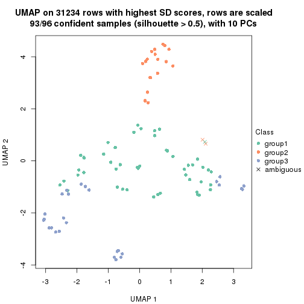
dimension_reduction(res, k = 4, method = "UMAP")
dimension_reduction(res, k = 5, method = "UMAP")
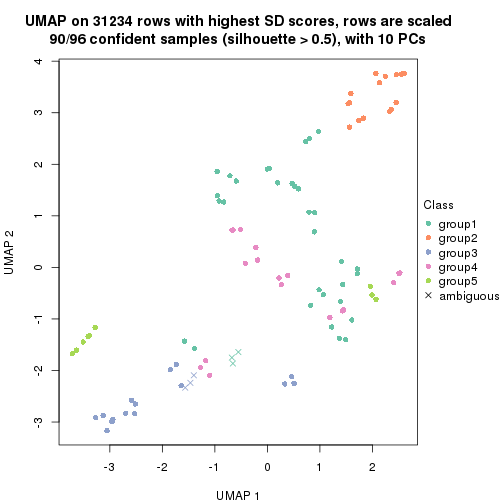
dimension_reduction(res, k = 6, method = "UMAP")
Following heatmap shows how subgroups are split when increasing k:
collect_classes(res)
Test correlation between subgroups and known annotations. If the known annotation is numeric, one-way ANOVA test is applied, and if the known annotation is discrete, chi-squared contingency table test is applied.
test_to_known_factors(res)
#> n tissue(p) k
#> SD:NMF 93 2.29e-08 2
#> SD:NMF 93 8.12e-15 3
#> SD:NMF 93 3.27e-21 4
#> SD:NMF 90 8.58e-27 5
#> SD:NMF 79 1.62e-28 6
If matrix rows can be associated to genes, consider to use functional_enrichment(res,
...) to perform function enrichment for the signature genes. See this vignette for more detailed explanations.
The object with results only for a single top-value method and a single partition method can be extracted as:
res = res_list["CV", "hclust"]
# you can also extract it by
# res = res_list["CV:hclust"]
A summary of res and all the functions that can be applied to it:
res
#> A 'ConsensusPartition' object with k = 2, 3, 4, 5, 6.
#> On a matrix with 31234 rows and 96 columns.
#> Top rows (1000, 2000, 3000, 4000, 5000) are extracted by 'CV' method.
#> Subgroups are detected by 'hclust' method.
#> Performed in total 1250 partitions by row resampling.
#> Best k for subgroups seems to be 4.
#>
#> Following methods can be applied to this 'ConsensusPartition' object:
#> [1] "cola_report" "collect_classes" "collect_plots"
#> [4] "collect_stats" "colnames" "compare_signatures"
#> [7] "consensus_heatmap" "dimension_reduction" "functional_enrichment"
#> [10] "get_anno_col" "get_anno" "get_classes"
#> [13] "get_consensus" "get_matrix" "get_membership"
#> [16] "get_param" "get_signatures" "get_stats"
#> [19] "is_best_k" "is_stable_k" "membership_heatmap"
#> [22] "ncol" "nrow" "plot_ecdf"
#> [25] "rownames" "select_partition_number" "show"
#> [28] "suggest_best_k" "test_to_known_factors"
collect_plots() function collects all the plots made from res for all k (number of partitions)
into one single page to provide an easy and fast comparison between different k.
collect_plots(res)
The plots are:
k and the heatmap of
predicted classes for each k.k.k.k.All the plots in panels can be made by individual functions and they are plotted later in this section.
select_partition_number() produces several plots showing different
statistics for choosing “optimized” k. There are following statistics:
k;k, the area increased is defined as \(A_k - A_{k-1}\).The detailed explanations of these statistics can be found in the cola vignette.
Generally speaking, lower PAC score, higher mean silhouette score or higher
concordance corresponds to better partition. Rand index and Jaccard index
measure how similar the current partition is compared to partition with k-1.
If they are too similar, we won't accept k is better than k-1.
select_partition_number(res)
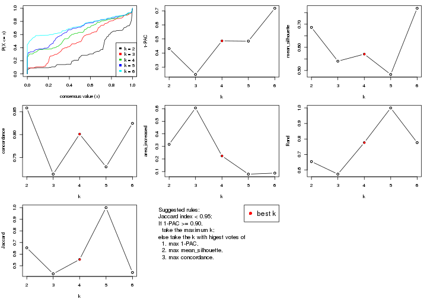
The numeric values for all these statistics can be obtained by get_stats().
get_stats(res)
#> k 1-PAC mean_silhouette concordance area_increased Rand Jaccard
#> 2 2 0.432 0.686 0.858 0.3163 0.655 0.655
#> 3 3 0.248 0.540 0.714 0.6058 0.574 0.431
#> 4 4 0.487 0.571 0.801 0.2242 0.777 0.555
#> 5 5 0.485 0.483 0.730 0.0794 1.000 1.000
#> 6 6 0.718 0.769 0.825 0.0876 0.777 0.442
suggest_best_k() suggests the best \(k\) based on these statistics. The rules are as follows:
suggest_best_k(res)
#> [1] 4
Following shows the table of the partitions (You need to click the show/hide
code output link to see it). The membership matrix (columns with name p*)
is inferred by
clue::cl_consensus()
function with the SE method. Basically the value in the membership matrix
represents the probability to belong to a certain group. The finall class
label for an item is determined with the group with highest probability it
belongs to.
In get_classes() function, the entropy is calculated from the membership
matrix and the silhouette score is calculated from the consensus matrix.
cbind(get_classes(res, k = 2), get_membership(res, k = 2))
#> class entropy silhouette p1 p2
#> GSM194459 1 0.0376 0.833 0.996 0.004
#> GSM194460 1 0.0376 0.833 0.996 0.004
#> GSM194461 1 0.0376 0.833 0.996 0.004
#> GSM194462 1 0.1414 0.830 0.980 0.020
#> GSM194463 1 0.1414 0.830 0.980 0.020
#> GSM194464 1 0.1414 0.830 0.980 0.020
#> GSM194465 1 0.0376 0.833 0.996 0.004
#> GSM194466 1 0.0376 0.833 0.996 0.004
#> GSM194467 1 0.0376 0.833 0.996 0.004
#> GSM194468 1 0.9460 0.369 0.636 0.364
#> GSM194469 1 0.9460 0.369 0.636 0.364
#> GSM194470 1 0.9460 0.369 0.636 0.364
#> GSM194471 2 0.0000 0.649 0.000 1.000
#> GSM194472 2 0.0000 0.649 0.000 1.000
#> GSM194473 2 0.0000 0.649 0.000 1.000
#> GSM194474 2 0.0000 0.649 0.000 1.000
#> GSM194475 2 0.0000 0.649 0.000 1.000
#> GSM194476 2 0.0000 0.649 0.000 1.000
#> GSM194477 1 0.1633 0.829 0.976 0.024
#> GSM194478 1 0.1633 0.829 0.976 0.024
#> GSM194479 1 0.1633 0.829 0.976 0.024
#> GSM194480 2 0.9996 0.278 0.488 0.512
#> GSM194481 2 0.9996 0.278 0.488 0.512
#> GSM194482 2 0.9996 0.278 0.488 0.512
#> GSM194483 2 0.9996 0.278 0.488 0.512
#> GSM194484 2 0.9996 0.278 0.488 0.512
#> GSM194485 2 0.9996 0.278 0.488 0.512
#> GSM194486 2 0.0000 0.649 0.000 1.000
#> GSM194487 2 0.0000 0.649 0.000 1.000
#> GSM194488 2 0.0000 0.649 0.000 1.000
#> GSM194489 1 0.0000 0.833 1.000 0.000
#> GSM194490 1 0.0000 0.833 1.000 0.000
#> GSM194491 1 0.0000 0.833 1.000 0.000
#> GSM194492 1 0.0000 0.833 1.000 0.000
#> GSM194493 1 0.0000 0.833 1.000 0.000
#> GSM194494 1 0.0000 0.833 1.000 0.000
#> GSM194495 1 0.8499 0.605 0.724 0.276
#> GSM194496 1 0.8499 0.605 0.724 0.276
#> GSM194497 1 0.8499 0.605 0.724 0.276
#> GSM194498 1 0.0000 0.833 1.000 0.000
#> GSM194499 1 0.0000 0.833 1.000 0.000
#> GSM194500 1 0.0000 0.833 1.000 0.000
#> GSM194501 1 0.7376 0.692 0.792 0.208
#> GSM194502 1 0.7376 0.692 0.792 0.208
#> GSM194503 1 0.7376 0.692 0.792 0.208
#> GSM194504 1 0.8555 0.597 0.720 0.280
#> GSM194505 1 0.8555 0.597 0.720 0.280
#> GSM194506 1 0.8555 0.597 0.720 0.280
#> GSM194507 2 0.9815 0.422 0.420 0.580
#> GSM194508 2 0.9815 0.422 0.420 0.580
#> GSM194509 2 0.9815 0.422 0.420 0.580
#> GSM194510 1 0.8386 0.619 0.732 0.268
#> GSM194511 1 0.8386 0.619 0.732 0.268
#> GSM194512 1 0.8386 0.619 0.732 0.268
#> GSM194513 1 0.0000 0.833 1.000 0.000
#> GSM194514 1 0.0000 0.833 1.000 0.000
#> GSM194515 1 0.0000 0.833 1.000 0.000
#> GSM194516 1 0.0000 0.833 1.000 0.000
#> GSM194517 1 0.0000 0.833 1.000 0.000
#> GSM194518 1 0.0000 0.833 1.000 0.000
#> GSM194519 1 0.8386 0.619 0.732 0.268
#> GSM194520 1 0.8386 0.619 0.732 0.268
#> GSM194521 1 0.8386 0.619 0.732 0.268
#> GSM194522 1 0.8386 0.619 0.732 0.268
#> GSM194523 1 0.8386 0.619 0.732 0.268
#> GSM194524 1 0.8386 0.619 0.732 0.268
#> GSM194525 1 0.7815 0.665 0.768 0.232
#> GSM194526 1 0.7815 0.665 0.768 0.232
#> GSM194527 1 0.7815 0.665 0.768 0.232
#> GSM194528 1 0.1414 0.830 0.980 0.020
#> GSM194529 1 0.1414 0.830 0.980 0.020
#> GSM194530 1 0.1414 0.830 0.980 0.020
#> GSM194531 1 0.0000 0.833 1.000 0.000
#> GSM194532 1 0.0000 0.833 1.000 0.000
#> GSM194533 1 0.0000 0.833 1.000 0.000
#> GSM194534 1 0.0000 0.833 1.000 0.000
#> GSM194535 1 0.0000 0.833 1.000 0.000
#> GSM194536 1 0.0000 0.833 1.000 0.000
#> GSM194537 1 0.4161 0.795 0.916 0.084
#> GSM194538 1 0.4161 0.795 0.916 0.084
#> GSM194539 1 0.4161 0.795 0.916 0.084
#> GSM194540 1 0.0000 0.833 1.000 0.000
#> GSM194541 1 0.0000 0.833 1.000 0.000
#> GSM194542 1 0.0000 0.833 1.000 0.000
#> GSM194543 1 0.8555 0.597 0.720 0.280
#> GSM194544 1 0.8555 0.597 0.720 0.280
#> GSM194545 1 0.8555 0.597 0.720 0.280
#> GSM194546 1 0.0000 0.833 1.000 0.000
#> GSM194547 1 0.0000 0.833 1.000 0.000
#> GSM194548 1 0.0000 0.833 1.000 0.000
#> GSM194549 1 0.0000 0.833 1.000 0.000
#> GSM194550 1 0.0000 0.833 1.000 0.000
#> GSM194551 1 0.0000 0.833 1.000 0.000
#> GSM194552 2 0.9795 0.371 0.416 0.584
#> GSM194553 2 0.9795 0.371 0.416 0.584
#> GSM194554 2 0.9795 0.371 0.416 0.584
cbind(get_classes(res, k = 3), get_membership(res, k = 3))
#> class entropy silhouette p1 p2 p3
#> GSM194459 1 0.954 -0.148 0.464 0.328 0.208
#> GSM194460 1 0.954 -0.148 0.464 0.328 0.208
#> GSM194461 1 0.954 -0.148 0.464 0.328 0.208
#> GSM194462 2 0.630 0.252 0.480 0.520 0.000
#> GSM194463 2 0.630 0.252 0.480 0.520 0.000
#> GSM194464 2 0.630 0.252 0.480 0.520 0.000
#> GSM194465 1 0.954 -0.148 0.464 0.328 0.208
#> GSM194466 1 0.954 -0.148 0.464 0.328 0.208
#> GSM194467 1 0.954 -0.148 0.464 0.328 0.208
#> GSM194468 1 0.712 0.646 0.708 0.204 0.088
#> GSM194469 1 0.712 0.646 0.708 0.204 0.088
#> GSM194470 1 0.712 0.646 0.708 0.204 0.088
#> GSM194471 3 0.465 1.000 0.208 0.000 0.792
#> GSM194472 3 0.465 1.000 0.208 0.000 0.792
#> GSM194473 3 0.465 1.000 0.208 0.000 0.792
#> GSM194474 3 0.465 1.000 0.208 0.000 0.792
#> GSM194475 3 0.465 1.000 0.208 0.000 0.792
#> GSM194476 3 0.465 1.000 0.208 0.000 0.792
#> GSM194477 2 0.631 0.237 0.488 0.512 0.000
#> GSM194478 2 0.631 0.237 0.488 0.512 0.000
#> GSM194479 2 0.631 0.237 0.488 0.512 0.000
#> GSM194480 1 0.847 0.517 0.616 0.172 0.212
#> GSM194481 1 0.847 0.517 0.616 0.172 0.212
#> GSM194482 1 0.847 0.517 0.616 0.172 0.212
#> GSM194483 1 0.847 0.517 0.616 0.172 0.212
#> GSM194484 1 0.847 0.517 0.616 0.172 0.212
#> GSM194485 1 0.847 0.517 0.616 0.172 0.212
#> GSM194486 3 0.465 1.000 0.208 0.000 0.792
#> GSM194487 3 0.465 1.000 0.208 0.000 0.792
#> GSM194488 3 0.465 1.000 0.208 0.000 0.792
#> GSM194489 2 0.271 0.641 0.088 0.912 0.000
#> GSM194490 2 0.271 0.641 0.088 0.912 0.000
#> GSM194491 2 0.271 0.641 0.088 0.912 0.000
#> GSM194492 2 0.573 0.574 0.324 0.676 0.000
#> GSM194493 2 0.573 0.574 0.324 0.676 0.000
#> GSM194494 2 0.573 0.574 0.324 0.676 0.000
#> GSM194495 1 0.511 0.665 0.780 0.212 0.008
#> GSM194496 1 0.511 0.665 0.780 0.212 0.008
#> GSM194497 1 0.511 0.665 0.780 0.212 0.008
#> GSM194498 2 0.581 0.566 0.336 0.664 0.000
#> GSM194499 2 0.581 0.566 0.336 0.664 0.000
#> GSM194500 2 0.581 0.566 0.336 0.664 0.000
#> GSM194501 1 0.550 0.564 0.708 0.292 0.000
#> GSM194502 1 0.550 0.564 0.708 0.292 0.000
#> GSM194503 1 0.550 0.564 0.708 0.292 0.000
#> GSM194504 1 0.506 0.667 0.784 0.208 0.008
#> GSM194505 1 0.506 0.667 0.784 0.208 0.008
#> GSM194506 1 0.506 0.667 0.784 0.208 0.008
#> GSM194507 1 0.908 0.356 0.540 0.180 0.280
#> GSM194508 1 0.908 0.356 0.540 0.180 0.280
#> GSM194509 1 0.908 0.356 0.540 0.180 0.280
#> GSM194510 1 0.450 0.667 0.804 0.196 0.000
#> GSM194511 1 0.450 0.667 0.804 0.196 0.000
#> GSM194512 1 0.450 0.667 0.804 0.196 0.000
#> GSM194513 2 0.000 0.644 0.000 1.000 0.000
#> GSM194514 2 0.000 0.644 0.000 1.000 0.000
#> GSM194515 2 0.000 0.644 0.000 1.000 0.000
#> GSM194516 2 0.000 0.644 0.000 1.000 0.000
#> GSM194517 2 0.000 0.644 0.000 1.000 0.000
#> GSM194518 2 0.000 0.644 0.000 1.000 0.000
#> GSM194519 1 0.445 0.668 0.808 0.192 0.000
#> GSM194520 1 0.445 0.668 0.808 0.192 0.000
#> GSM194521 1 0.445 0.668 0.808 0.192 0.000
#> GSM194522 1 0.445 0.668 0.808 0.192 0.000
#> GSM194523 1 0.445 0.668 0.808 0.192 0.000
#> GSM194524 1 0.445 0.668 0.808 0.192 0.000
#> GSM194525 1 0.558 0.621 0.736 0.256 0.008
#> GSM194526 1 0.558 0.621 0.736 0.256 0.008
#> GSM194527 1 0.558 0.621 0.736 0.256 0.008
#> GSM194528 2 0.630 0.251 0.484 0.516 0.000
#> GSM194529 2 0.630 0.251 0.484 0.516 0.000
#> GSM194530 2 0.630 0.251 0.484 0.516 0.000
#> GSM194531 2 0.573 0.574 0.324 0.676 0.000
#> GSM194532 2 0.573 0.574 0.324 0.676 0.000
#> GSM194533 2 0.573 0.574 0.324 0.676 0.000
#> GSM194534 2 0.581 0.566 0.336 0.664 0.000
#> GSM194535 2 0.581 0.566 0.336 0.664 0.000
#> GSM194536 2 0.581 0.566 0.336 0.664 0.000
#> GSM194537 1 0.619 0.165 0.580 0.420 0.000
#> GSM194538 1 0.619 0.165 0.580 0.420 0.000
#> GSM194539 1 0.619 0.165 0.580 0.420 0.000
#> GSM194540 2 0.000 0.644 0.000 1.000 0.000
#> GSM194541 2 0.000 0.644 0.000 1.000 0.000
#> GSM194542 2 0.000 0.644 0.000 1.000 0.000
#> GSM194543 1 0.506 0.667 0.784 0.208 0.008
#> GSM194544 1 0.506 0.667 0.784 0.208 0.008
#> GSM194545 1 0.506 0.667 0.784 0.208 0.008
#> GSM194546 2 0.000 0.644 0.000 1.000 0.000
#> GSM194547 2 0.000 0.644 0.000 1.000 0.000
#> GSM194548 2 0.000 0.644 0.000 1.000 0.000
#> GSM194549 2 0.000 0.644 0.000 1.000 0.000
#> GSM194550 2 0.000 0.644 0.000 1.000 0.000
#> GSM194551 2 0.000 0.644 0.000 1.000 0.000
#> GSM194552 1 0.909 0.314 0.504 0.152 0.344
#> GSM194553 1 0.909 0.314 0.504 0.152 0.344
#> GSM194554 1 0.909 0.314 0.504 0.152 0.344
cbind(get_classes(res, k = 4), get_membership(res, k = 4))
#> class entropy silhouette p1 p2 p3 p4
#> GSM194459 4 0.4382 1.0000 0.296 0.000 0.000 0.704
#> GSM194460 4 0.4382 1.0000 0.296 0.000 0.000 0.704
#> GSM194461 4 0.4382 1.0000 0.296 0.000 0.000 0.704
#> GSM194462 1 0.5959 0.1640 0.568 0.388 0.000 0.044
#> GSM194463 1 0.5959 0.1640 0.568 0.388 0.000 0.044
#> GSM194464 1 0.5959 0.1640 0.568 0.388 0.000 0.044
#> GSM194465 4 0.4382 1.0000 0.296 0.000 0.000 0.704
#> GSM194466 4 0.4382 1.0000 0.296 0.000 0.000 0.704
#> GSM194467 4 0.4382 1.0000 0.296 0.000 0.000 0.704
#> GSM194468 1 0.2593 0.6160 0.904 0.000 0.016 0.080
#> GSM194469 1 0.2593 0.6160 0.904 0.000 0.016 0.080
#> GSM194470 1 0.2593 0.6160 0.904 0.000 0.016 0.080
#> GSM194471 3 0.0000 0.8034 0.000 0.000 1.000 0.000
#> GSM194472 3 0.0000 0.8034 0.000 0.000 1.000 0.000
#> GSM194473 3 0.0000 0.8034 0.000 0.000 1.000 0.000
#> GSM194474 3 0.0000 0.8034 0.000 0.000 1.000 0.000
#> GSM194475 3 0.0000 0.8034 0.000 0.000 1.000 0.000
#> GSM194476 3 0.0000 0.8034 0.000 0.000 1.000 0.000
#> GSM194477 1 0.5989 0.1140 0.556 0.400 0.000 0.044
#> GSM194478 1 0.5989 0.1140 0.556 0.400 0.000 0.044
#> GSM194479 1 0.5989 0.1140 0.556 0.400 0.000 0.044
#> GSM194480 1 0.5792 0.3997 0.648 0.000 0.056 0.296
#> GSM194481 1 0.5792 0.3997 0.648 0.000 0.056 0.296
#> GSM194482 1 0.5792 0.3997 0.648 0.000 0.056 0.296
#> GSM194483 1 0.5792 0.3997 0.648 0.000 0.056 0.296
#> GSM194484 1 0.5792 0.3997 0.648 0.000 0.056 0.296
#> GSM194485 1 0.5792 0.3997 0.648 0.000 0.056 0.296
#> GSM194486 3 0.0000 0.8034 0.000 0.000 1.000 0.000
#> GSM194487 3 0.0000 0.8034 0.000 0.000 1.000 0.000
#> GSM194488 3 0.0000 0.8034 0.000 0.000 1.000 0.000
#> GSM194489 2 0.3697 0.6609 0.100 0.852 0.000 0.048
#> GSM194490 2 0.3697 0.6609 0.100 0.852 0.000 0.048
#> GSM194491 2 0.3697 0.6609 0.100 0.852 0.000 0.048
#> GSM194492 2 0.5913 0.5069 0.352 0.600 0.000 0.048
#> GSM194493 2 0.5913 0.5069 0.352 0.600 0.000 0.048
#> GSM194494 2 0.5913 0.5069 0.352 0.600 0.000 0.048
#> GSM194495 1 0.0657 0.6601 0.984 0.004 0.012 0.000
#> GSM194496 1 0.0657 0.6601 0.984 0.004 0.012 0.000
#> GSM194497 1 0.0657 0.6601 0.984 0.004 0.012 0.000
#> GSM194498 2 0.6087 0.4493 0.412 0.540 0.000 0.048
#> GSM194499 2 0.6087 0.4493 0.412 0.540 0.000 0.048
#> GSM194500 2 0.6087 0.4493 0.412 0.540 0.000 0.048
#> GSM194501 1 0.3354 0.5838 0.872 0.084 0.000 0.044
#> GSM194502 1 0.3354 0.5838 0.872 0.084 0.000 0.044
#> GSM194503 1 0.3354 0.5838 0.872 0.084 0.000 0.044
#> GSM194504 1 0.0592 0.6592 0.984 0.000 0.016 0.000
#> GSM194505 1 0.0592 0.6592 0.984 0.000 0.016 0.000
#> GSM194506 1 0.0592 0.6592 0.984 0.000 0.016 0.000
#> GSM194507 1 0.5900 0.4160 0.684 0.000 0.096 0.220
#> GSM194508 1 0.5900 0.4160 0.684 0.000 0.096 0.220
#> GSM194509 1 0.5900 0.4160 0.684 0.000 0.096 0.220
#> GSM194510 1 0.0817 0.6510 0.976 0.000 0.000 0.024
#> GSM194511 1 0.0817 0.6510 0.976 0.000 0.000 0.024
#> GSM194512 1 0.0817 0.6510 0.976 0.000 0.000 0.024
#> GSM194513 2 0.0000 0.7040 0.000 1.000 0.000 0.000
#> GSM194514 2 0.0000 0.7040 0.000 1.000 0.000 0.000
#> GSM194515 2 0.0000 0.7040 0.000 1.000 0.000 0.000
#> GSM194516 2 0.0000 0.7040 0.000 1.000 0.000 0.000
#> GSM194517 2 0.0000 0.7040 0.000 1.000 0.000 0.000
#> GSM194518 2 0.0000 0.7040 0.000 1.000 0.000 0.000
#> GSM194519 1 0.0707 0.6536 0.980 0.000 0.000 0.020
#> GSM194520 1 0.0707 0.6536 0.980 0.000 0.000 0.020
#> GSM194521 1 0.0707 0.6536 0.980 0.000 0.000 0.020
#> GSM194522 1 0.0707 0.6536 0.980 0.000 0.000 0.020
#> GSM194523 1 0.0707 0.6536 0.980 0.000 0.000 0.020
#> GSM194524 1 0.0707 0.6536 0.980 0.000 0.000 0.020
#> GSM194525 1 0.2010 0.6389 0.940 0.008 0.012 0.040
#> GSM194526 1 0.2010 0.6389 0.940 0.008 0.012 0.040
#> GSM194527 1 0.2010 0.6389 0.940 0.008 0.012 0.040
#> GSM194528 1 0.6038 0.0202 0.532 0.424 0.000 0.044
#> GSM194529 1 0.6038 0.0202 0.532 0.424 0.000 0.044
#> GSM194530 1 0.6038 0.0202 0.532 0.424 0.000 0.044
#> GSM194531 2 0.5913 0.5069 0.352 0.600 0.000 0.048
#> GSM194532 2 0.5913 0.5069 0.352 0.600 0.000 0.048
#> GSM194533 2 0.5913 0.5069 0.352 0.600 0.000 0.048
#> GSM194534 2 0.6087 0.4493 0.412 0.540 0.000 0.048
#> GSM194535 2 0.6087 0.4493 0.412 0.540 0.000 0.048
#> GSM194536 2 0.6087 0.4493 0.412 0.540 0.000 0.048
#> GSM194537 1 0.5614 0.3535 0.652 0.304 0.000 0.044
#> GSM194538 1 0.5614 0.3535 0.652 0.304 0.000 0.044
#> GSM194539 1 0.5614 0.3535 0.652 0.304 0.000 0.044
#> GSM194540 2 0.0000 0.7040 0.000 1.000 0.000 0.000
#> GSM194541 2 0.0000 0.7040 0.000 1.000 0.000 0.000
#> GSM194542 2 0.0000 0.7040 0.000 1.000 0.000 0.000
#> GSM194543 1 0.0592 0.6592 0.984 0.000 0.016 0.000
#> GSM194544 1 0.0592 0.6592 0.984 0.000 0.016 0.000
#> GSM194545 1 0.0592 0.6592 0.984 0.000 0.016 0.000
#> GSM194546 2 0.0000 0.7040 0.000 1.000 0.000 0.000
#> GSM194547 2 0.0000 0.7040 0.000 1.000 0.000 0.000
#> GSM194548 2 0.0000 0.7040 0.000 1.000 0.000 0.000
#> GSM194549 2 0.0000 0.7040 0.000 1.000 0.000 0.000
#> GSM194550 2 0.0000 0.7040 0.000 1.000 0.000 0.000
#> GSM194551 2 0.0000 0.7040 0.000 1.000 0.000 0.000
#> GSM194552 3 0.4981 0.1162 0.464 0.000 0.536 0.000
#> GSM194553 3 0.4981 0.1162 0.464 0.000 0.536 0.000
#> GSM194554 3 0.4981 0.1162 0.464 0.000 0.536 0.000
cbind(get_classes(res, k = 5), get_membership(res, k = 5))
#> class entropy silhouette p1 p2 p3 p4 p5
#> GSM194459 4 0.4065 1.0000 0.264 0.016 0.000 0.720 NA
#> GSM194460 4 0.4065 1.0000 0.264 0.016 0.000 0.720 NA
#> GSM194461 4 0.4065 1.0000 0.264 0.016 0.000 0.720 NA
#> GSM194462 1 0.4415 0.2735 0.552 0.444 0.000 0.000 NA
#> GSM194463 1 0.4415 0.2735 0.552 0.444 0.000 0.000 NA
#> GSM194464 1 0.4415 0.2735 0.552 0.444 0.000 0.000 NA
#> GSM194465 4 0.4065 1.0000 0.264 0.016 0.000 0.720 NA
#> GSM194466 4 0.4065 1.0000 0.264 0.016 0.000 0.720 NA
#> GSM194467 4 0.4065 1.0000 0.264 0.016 0.000 0.720 NA
#> GSM194468 1 0.2535 0.5666 0.892 0.000 0.000 0.032 NA
#> GSM194469 1 0.2535 0.5666 0.892 0.000 0.000 0.032 NA
#> GSM194470 1 0.2535 0.5666 0.892 0.000 0.000 0.032 NA
#> GSM194471 3 0.0000 0.7993 0.000 0.000 1.000 0.000 NA
#> GSM194472 3 0.0000 0.7993 0.000 0.000 1.000 0.000 NA
#> GSM194473 3 0.0000 0.7993 0.000 0.000 1.000 0.000 NA
#> GSM194474 3 0.0000 0.7993 0.000 0.000 1.000 0.000 NA
#> GSM194475 3 0.0000 0.7993 0.000 0.000 1.000 0.000 NA
#> GSM194476 3 0.0000 0.7993 0.000 0.000 1.000 0.000 NA
#> GSM194477 1 0.4291 0.2326 0.536 0.464 0.000 0.000 NA
#> GSM194478 1 0.4291 0.2326 0.536 0.464 0.000 0.000 NA
#> GSM194479 1 0.4291 0.2326 0.536 0.464 0.000 0.000 NA
#> GSM194480 1 0.7373 0.0155 0.364 0.000 0.028 0.264 NA
#> GSM194481 1 0.7373 0.0155 0.364 0.000 0.028 0.264 NA
#> GSM194482 1 0.7373 0.0155 0.364 0.000 0.028 0.264 NA
#> GSM194483 1 0.7373 0.0155 0.364 0.000 0.028 0.264 NA
#> GSM194484 1 0.7373 0.0155 0.364 0.000 0.028 0.264 NA
#> GSM194485 1 0.7373 0.0155 0.364 0.000 0.028 0.264 NA
#> GSM194486 3 0.0000 0.7993 0.000 0.000 1.000 0.000 NA
#> GSM194487 3 0.0000 0.7993 0.000 0.000 1.000 0.000 NA
#> GSM194488 3 0.0000 0.7993 0.000 0.000 1.000 0.000 NA
#> GSM194489 2 0.1732 0.3999 0.080 0.920 0.000 0.000 NA
#> GSM194490 2 0.1732 0.3999 0.080 0.920 0.000 0.000 NA
#> GSM194491 2 0.1732 0.3999 0.080 0.920 0.000 0.000 NA
#> GSM194492 2 0.3949 0.2683 0.332 0.668 0.000 0.000 NA
#> GSM194493 2 0.3949 0.2683 0.332 0.668 0.000 0.000 NA
#> GSM194494 2 0.3949 0.2683 0.332 0.668 0.000 0.000 NA
#> GSM194495 1 0.0727 0.6273 0.980 0.004 0.004 0.000 NA
#> GSM194496 1 0.0727 0.6273 0.980 0.004 0.004 0.000 NA
#> GSM194497 1 0.0727 0.6273 0.980 0.004 0.004 0.000 NA
#> GSM194498 2 0.4494 0.1954 0.380 0.608 0.000 0.000 NA
#> GSM194499 2 0.4494 0.1954 0.380 0.608 0.000 0.000 NA
#> GSM194500 2 0.4494 0.1954 0.380 0.608 0.000 0.000 NA
#> GSM194501 1 0.2719 0.5720 0.852 0.144 0.000 0.000 NA
#> GSM194502 1 0.2719 0.5720 0.852 0.144 0.000 0.000 NA
#> GSM194503 1 0.2719 0.5720 0.852 0.144 0.000 0.000 NA
#> GSM194504 1 0.0566 0.6265 0.984 0.000 0.004 0.000 NA
#> GSM194505 1 0.0566 0.6265 0.984 0.000 0.004 0.000 NA
#> GSM194506 1 0.0566 0.6265 0.984 0.000 0.004 0.000 NA
#> GSM194507 1 0.4995 0.3134 0.656 0.000 0.004 0.048 NA
#> GSM194508 1 0.4995 0.3134 0.656 0.000 0.004 0.048 NA
#> GSM194509 1 0.4995 0.3134 0.656 0.000 0.004 0.048 NA
#> GSM194510 1 0.1106 0.6203 0.964 0.000 0.000 0.024 NA
#> GSM194511 1 0.1106 0.6203 0.964 0.000 0.000 0.024 NA
#> GSM194512 1 0.1106 0.6203 0.964 0.000 0.000 0.024 NA
#> GSM194513 2 0.4182 0.5330 0.000 0.600 0.000 0.000 NA
#> GSM194514 2 0.4182 0.5330 0.000 0.600 0.000 0.000 NA
#> GSM194515 2 0.4182 0.5330 0.000 0.600 0.000 0.000 NA
#> GSM194516 2 0.4182 0.5330 0.000 0.600 0.000 0.000 NA
#> GSM194517 2 0.4182 0.5330 0.000 0.600 0.000 0.000 NA
#> GSM194518 2 0.4182 0.5330 0.000 0.600 0.000 0.000 NA
#> GSM194519 1 0.1012 0.6226 0.968 0.000 0.000 0.020 NA
#> GSM194520 1 0.1012 0.6226 0.968 0.000 0.000 0.020 NA
#> GSM194521 1 0.1012 0.6226 0.968 0.000 0.000 0.020 NA
#> GSM194522 1 0.1012 0.6226 0.968 0.000 0.000 0.020 NA
#> GSM194523 1 0.1012 0.6226 0.968 0.000 0.000 0.020 NA
#> GSM194524 1 0.1012 0.6226 0.968 0.000 0.000 0.020 NA
#> GSM194525 1 0.1357 0.6148 0.948 0.048 0.000 0.000 NA
#> GSM194526 1 0.1357 0.6148 0.948 0.048 0.000 0.000 NA
#> GSM194527 1 0.1357 0.6148 0.948 0.048 0.000 0.000 NA
#> GSM194528 1 0.4305 0.1695 0.512 0.488 0.000 0.000 NA
#> GSM194529 1 0.4305 0.1695 0.512 0.488 0.000 0.000 NA
#> GSM194530 1 0.4305 0.1695 0.512 0.488 0.000 0.000 NA
#> GSM194531 2 0.3949 0.2683 0.332 0.668 0.000 0.000 NA
#> GSM194532 2 0.3949 0.2683 0.332 0.668 0.000 0.000 NA
#> GSM194533 2 0.3949 0.2683 0.332 0.668 0.000 0.000 NA
#> GSM194534 2 0.4494 0.1954 0.380 0.608 0.000 0.000 NA
#> GSM194535 2 0.4494 0.1954 0.380 0.608 0.000 0.000 NA
#> GSM194536 2 0.4494 0.1954 0.380 0.608 0.000 0.000 NA
#> GSM194537 1 0.4074 0.4011 0.636 0.364 0.000 0.000 NA
#> GSM194538 1 0.4074 0.4011 0.636 0.364 0.000 0.000 NA
#> GSM194539 1 0.4074 0.4011 0.636 0.364 0.000 0.000 NA
#> GSM194540 2 0.4182 0.5330 0.000 0.600 0.000 0.000 NA
#> GSM194541 2 0.4182 0.5330 0.000 0.600 0.000 0.000 NA
#> GSM194542 2 0.4182 0.5330 0.000 0.600 0.000 0.000 NA
#> GSM194543 1 0.0566 0.6265 0.984 0.000 0.004 0.000 NA
#> GSM194544 1 0.0566 0.6265 0.984 0.000 0.004 0.000 NA
#> GSM194545 1 0.0566 0.6265 0.984 0.000 0.004 0.000 NA
#> GSM194546 2 0.4182 0.5330 0.000 0.600 0.000 0.000 NA
#> GSM194547 2 0.4182 0.5330 0.000 0.600 0.000 0.000 NA
#> GSM194548 2 0.4182 0.5330 0.000 0.600 0.000 0.000 NA
#> GSM194549 2 0.4182 0.5330 0.000 0.600 0.000 0.000 NA
#> GSM194550 2 0.4182 0.5330 0.000 0.600 0.000 0.000 NA
#> GSM194551 2 0.4182 0.5330 0.000 0.600 0.000 0.000 NA
#> GSM194552 3 0.4637 0.1402 0.452 0.000 0.536 0.000 NA
#> GSM194553 3 0.4637 0.1402 0.452 0.000 0.536 0.000 NA
#> GSM194554 3 0.4637 0.1402 0.452 0.000 0.536 0.000 NA
cbind(get_classes(res, k = 6), get_membership(res, k = 6))
#> class entropy silhouette p1 p2 p3 p4 p5 p6
#> GSM194459 6 0.0937 1.000 0.000 0.000 0.000 0.040 0.000 0.960
#> GSM194460 6 0.0937 1.000 0.000 0.000 0.000 0.040 0.000 0.960
#> GSM194461 6 0.0937 1.000 0.000 0.000 0.000 0.040 0.000 0.960
#> GSM194462 1 0.3394 0.568 0.752 0.012 0.000 0.236 0.000 0.000
#> GSM194463 1 0.3394 0.568 0.752 0.012 0.000 0.236 0.000 0.000
#> GSM194464 1 0.3394 0.568 0.752 0.012 0.000 0.236 0.000 0.000
#> GSM194465 6 0.0937 1.000 0.000 0.000 0.000 0.040 0.000 0.960
#> GSM194466 6 0.0937 1.000 0.000 0.000 0.000 0.040 0.000 0.960
#> GSM194467 6 0.0937 1.000 0.000 0.000 0.000 0.040 0.000 0.960
#> GSM194468 4 0.4406 0.691 0.212 0.000 0.000 0.720 0.048 0.020
#> GSM194469 4 0.4406 0.691 0.212 0.000 0.000 0.720 0.048 0.020
#> GSM194470 4 0.4406 0.691 0.212 0.000 0.000 0.720 0.048 0.020
#> GSM194471 3 0.0000 0.786 0.000 0.000 1.000 0.000 0.000 0.000
#> GSM194472 3 0.0000 0.786 0.000 0.000 1.000 0.000 0.000 0.000
#> GSM194473 3 0.0000 0.786 0.000 0.000 1.000 0.000 0.000 0.000
#> GSM194474 3 0.0000 0.786 0.000 0.000 1.000 0.000 0.000 0.000
#> GSM194475 3 0.0000 0.786 0.000 0.000 1.000 0.000 0.000 0.000
#> GSM194476 3 0.0000 0.786 0.000 0.000 1.000 0.000 0.000 0.000
#> GSM194477 1 0.2854 0.617 0.792 0.000 0.000 0.208 0.000 0.000
#> GSM194478 1 0.2854 0.617 0.792 0.000 0.000 0.208 0.000 0.000
#> GSM194479 1 0.2854 0.617 0.792 0.000 0.000 0.208 0.000 0.000
#> GSM194480 5 0.1141 1.000 0.000 0.000 0.000 0.052 0.948 0.000
#> GSM194481 5 0.1141 1.000 0.000 0.000 0.000 0.052 0.948 0.000
#> GSM194482 5 0.1141 1.000 0.000 0.000 0.000 0.052 0.948 0.000
#> GSM194483 5 0.1141 1.000 0.000 0.000 0.000 0.052 0.948 0.000
#> GSM194484 5 0.1141 1.000 0.000 0.000 0.000 0.052 0.948 0.000
#> GSM194485 5 0.1141 1.000 0.000 0.000 0.000 0.052 0.948 0.000
#> GSM194486 3 0.0000 0.786 0.000 0.000 1.000 0.000 0.000 0.000
#> GSM194487 3 0.0000 0.786 0.000 0.000 1.000 0.000 0.000 0.000
#> GSM194488 3 0.0000 0.786 0.000 0.000 1.000 0.000 0.000 0.000
#> GSM194489 1 0.3151 0.439 0.748 0.252 0.000 0.000 0.000 0.000
#> GSM194490 1 0.3151 0.439 0.748 0.252 0.000 0.000 0.000 0.000
#> GSM194491 1 0.3151 0.439 0.748 0.252 0.000 0.000 0.000 0.000
#> GSM194492 1 0.0000 0.730 1.000 0.000 0.000 0.000 0.000 0.000
#> GSM194493 1 0.0000 0.730 1.000 0.000 0.000 0.000 0.000 0.000
#> GSM194494 1 0.0000 0.730 1.000 0.000 0.000 0.000 0.000 0.000
#> GSM194495 4 0.4034 0.832 0.328 0.000 0.000 0.652 0.020 0.000
#> GSM194496 4 0.4034 0.832 0.328 0.000 0.000 0.652 0.020 0.000
#> GSM194497 4 0.4034 0.832 0.328 0.000 0.000 0.652 0.020 0.000
#> GSM194498 1 0.1398 0.717 0.940 0.000 0.000 0.052 0.008 0.000
#> GSM194499 1 0.1398 0.717 0.940 0.000 0.000 0.052 0.008 0.000
#> GSM194500 1 0.1398 0.717 0.940 0.000 0.000 0.052 0.008 0.000
#> GSM194501 4 0.3857 0.617 0.468 0.000 0.000 0.532 0.000 0.000
#> GSM194502 4 0.3857 0.617 0.468 0.000 0.000 0.532 0.000 0.000
#> GSM194503 4 0.3857 0.617 0.468 0.000 0.000 0.532 0.000 0.000
#> GSM194504 4 0.4094 0.832 0.324 0.000 0.000 0.652 0.024 0.000
#> GSM194505 4 0.4094 0.832 0.324 0.000 0.000 0.652 0.024 0.000
#> GSM194506 4 0.4094 0.832 0.324 0.000 0.000 0.652 0.024 0.000
#> GSM194507 4 0.2250 0.408 0.000 0.000 0.000 0.896 0.064 0.040
#> GSM194508 4 0.2250 0.408 0.000 0.000 0.000 0.896 0.064 0.040
#> GSM194509 4 0.2250 0.408 0.000 0.000 0.000 0.896 0.064 0.040
#> GSM194510 4 0.4375 0.828 0.316 0.000 0.000 0.648 0.008 0.028
#> GSM194511 4 0.4375 0.828 0.316 0.000 0.000 0.648 0.008 0.028
#> GSM194512 4 0.4375 0.828 0.316 0.000 0.000 0.648 0.008 0.028
#> GSM194513 2 0.0000 1.000 0.000 1.000 0.000 0.000 0.000 0.000
#> GSM194514 2 0.0000 1.000 0.000 1.000 0.000 0.000 0.000 0.000
#> GSM194515 2 0.0000 1.000 0.000 1.000 0.000 0.000 0.000 0.000
#> GSM194516 2 0.0000 1.000 0.000 1.000 0.000 0.000 0.000 0.000
#> GSM194517 2 0.0000 1.000 0.000 1.000 0.000 0.000 0.000 0.000
#> GSM194518 2 0.0000 1.000 0.000 1.000 0.000 0.000 0.000 0.000
#> GSM194519 4 0.4259 0.830 0.324 0.000 0.000 0.648 0.008 0.020
#> GSM194520 4 0.4259 0.830 0.324 0.000 0.000 0.648 0.008 0.020
#> GSM194521 4 0.4259 0.830 0.324 0.000 0.000 0.648 0.008 0.020
#> GSM194522 4 0.4259 0.830 0.324 0.000 0.000 0.648 0.008 0.020
#> GSM194523 4 0.4259 0.830 0.324 0.000 0.000 0.648 0.008 0.020
#> GSM194524 4 0.4259 0.830 0.324 0.000 0.000 0.648 0.008 0.020
#> GSM194525 4 0.3819 0.791 0.372 0.000 0.000 0.624 0.004 0.000
#> GSM194526 4 0.3819 0.791 0.372 0.000 0.000 0.624 0.004 0.000
#> GSM194527 4 0.3819 0.791 0.372 0.000 0.000 0.624 0.004 0.000
#> GSM194528 1 0.2664 0.647 0.816 0.000 0.000 0.184 0.000 0.000
#> GSM194529 1 0.2664 0.647 0.816 0.000 0.000 0.184 0.000 0.000
#> GSM194530 1 0.2664 0.647 0.816 0.000 0.000 0.184 0.000 0.000
#> GSM194531 1 0.0000 0.730 1.000 0.000 0.000 0.000 0.000 0.000
#> GSM194532 1 0.0000 0.730 1.000 0.000 0.000 0.000 0.000 0.000
#> GSM194533 1 0.0000 0.730 1.000 0.000 0.000 0.000 0.000 0.000
#> GSM194534 1 0.1398 0.717 0.940 0.000 0.000 0.052 0.008 0.000
#> GSM194535 1 0.1398 0.717 0.940 0.000 0.000 0.052 0.008 0.000
#> GSM194536 1 0.1398 0.717 0.940 0.000 0.000 0.052 0.008 0.000
#> GSM194537 1 0.3464 0.336 0.688 0.000 0.000 0.312 0.000 0.000
#> GSM194538 1 0.3464 0.336 0.688 0.000 0.000 0.312 0.000 0.000
#> GSM194539 1 0.3464 0.336 0.688 0.000 0.000 0.312 0.000 0.000
#> GSM194540 2 0.0000 1.000 0.000 1.000 0.000 0.000 0.000 0.000
#> GSM194541 2 0.0000 1.000 0.000 1.000 0.000 0.000 0.000 0.000
#> GSM194542 2 0.0000 1.000 0.000 1.000 0.000 0.000 0.000 0.000
#> GSM194543 4 0.4094 0.832 0.324 0.000 0.000 0.652 0.024 0.000
#> GSM194544 4 0.4094 0.832 0.324 0.000 0.000 0.652 0.024 0.000
#> GSM194545 4 0.4094 0.832 0.324 0.000 0.000 0.652 0.024 0.000
#> GSM194546 2 0.0000 1.000 0.000 1.000 0.000 0.000 0.000 0.000
#> GSM194547 2 0.0000 1.000 0.000 1.000 0.000 0.000 0.000 0.000
#> GSM194548 2 0.0000 1.000 0.000 1.000 0.000 0.000 0.000 0.000
#> GSM194549 2 0.0000 1.000 0.000 1.000 0.000 0.000 0.000 0.000
#> GSM194550 2 0.0000 1.000 0.000 1.000 0.000 0.000 0.000 0.000
#> GSM194551 2 0.0000 1.000 0.000 1.000 0.000 0.000 0.000 0.000
#> GSM194552 3 0.5897 0.245 0.280 0.000 0.536 0.168 0.016 0.000
#> GSM194553 3 0.5897 0.245 0.280 0.000 0.536 0.168 0.016 0.000
#> GSM194554 3 0.5897 0.245 0.280 0.000 0.536 0.168 0.016 0.000
Heatmaps for the consensus matrix. It visualizes the probability of two samples to be in a same group.
consensus_heatmap(res, k = 2)
consensus_heatmap(res, k = 3)
consensus_heatmap(res, k = 4)
consensus_heatmap(res, k = 5)
consensus_heatmap(res, k = 6)
Heatmaps for the membership of samples in all partitions to see how consistent they are:
membership_heatmap(res, k = 2)
membership_heatmap(res, k = 3)
membership_heatmap(res, k = 4)
membership_heatmap(res, k = 5)
membership_heatmap(res, k = 6)
As soon as we have had the classes for columns, we can look for signatures which are significantly different between classes which can be candidate marks for certain classes. Following are the heatmaps for signatures.
Signature heatmaps where rows are scaled:
get_signatures(res, k = 2)
get_signatures(res, k = 3)
get_signatures(res, k = 4)
get_signatures(res, k = 5)
get_signatures(res, k = 6)
Signature heatmaps where rows are not scaled:
get_signatures(res, k = 2, scale_rows = FALSE)
get_signatures(res, k = 3, scale_rows = FALSE)
get_signatures(res, k = 4, scale_rows = FALSE)
get_signatures(res, k = 5, scale_rows = FALSE)
get_signatures(res, k = 6, scale_rows = FALSE)

Compare the overlap of signatures from different k:
compare_signatures(res)
get_signature() returns a data frame invisibly. TO get the list of signatures, the function
call should be assigned to a variable explicitly. In following code, if plot argument is set
to FALSE, no heatmap is plotted while only the differential analysis is performed.
# code only for demonstration
tb = get_signature(res, k = ..., plot = FALSE)
An example of the output of tb is:
#> which_row fdr mean_1 mean_2 scaled_mean_1 scaled_mean_2 km
#> 1 38 0.042760348 8.373488 9.131774 -0.5533452 0.5164555 1
#> 2 40 0.018707592 7.106213 8.469186 -0.6173731 0.5762149 1
#> 3 55 0.019134737 10.221463 11.207825 -0.6159697 0.5749050 1
#> 4 59 0.006059896 5.921854 7.869574 -0.6899429 0.6439467 1
#> 5 60 0.018055526 8.928898 10.211722 -0.6204761 0.5791110 1
#> 6 98 0.009384629 15.714769 14.887706 0.6635654 -0.6193277 2
...
The columns in tb are:
which_row: row indices corresponding to the input matrix.fdr: FDR for the differential test. mean_x: The mean value in group x.scaled_mean_x: The mean value in group x after rows are scaled.km: Row groups if k-means clustering is applied to rows.UMAP plot which shows how samples are separated.
dimension_reduction(res, k = 2, method = "UMAP")
dimension_reduction(res, k = 3, method = "UMAP")
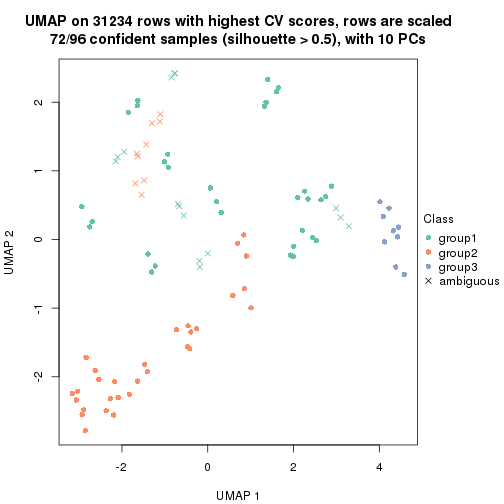
dimension_reduction(res, k = 4, method = "UMAP")
dimension_reduction(res, k = 5, method = "UMAP")
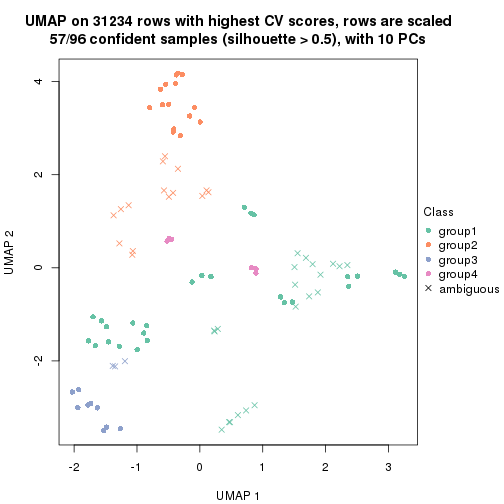
dimension_reduction(res, k = 6, method = "UMAP")
Following heatmap shows how subgroups are split when increasing k:
collect_classes(res)
Test correlation between subgroups and known annotations. If the known annotation is numeric, one-way ANOVA test is applied, and if the known annotation is discrete, chi-squared contingency table test is applied.
test_to_known_factors(res)
#> n tissue(p) k
#> CV:hclust 81 1.47e-07 2
#> CV:hclust 72 4.97e-12 3
#> CV:hclust 66 7.27e-16 4
#> CV:hclust 57 4.44e-14 5
#> CV:hclust 84 5.52e-31 6
If matrix rows can be associated to genes, consider to use functional_enrichment(res,
...) to perform function enrichment for the signature genes. See this vignette for more detailed explanations.
The object with results only for a single top-value method and a single partition method can be extracted as:
res = res_list["CV", "kmeans"]
# you can also extract it by
# res = res_list["CV:kmeans"]
A summary of res and all the functions that can be applied to it:
res
#> A 'ConsensusPartition' object with k = 2, 3, 4, 5, 6.
#> On a matrix with 31234 rows and 96 columns.
#> Top rows (1000, 2000, 3000, 4000, 5000) are extracted by 'CV' method.
#> Subgroups are detected by 'kmeans' method.
#> Performed in total 1250 partitions by row resampling.
#> Best k for subgroups seems to be 4.
#>
#> Following methods can be applied to this 'ConsensusPartition' object:
#> [1] "cola_report" "collect_classes" "collect_plots"
#> [4] "collect_stats" "colnames" "compare_signatures"
#> [7] "consensus_heatmap" "dimension_reduction" "functional_enrichment"
#> [10] "get_anno_col" "get_anno" "get_classes"
#> [13] "get_consensus" "get_matrix" "get_membership"
#> [16] "get_param" "get_signatures" "get_stats"
#> [19] "is_best_k" "is_stable_k" "membership_heatmap"
#> [22] "ncol" "nrow" "plot_ecdf"
#> [25] "rownames" "select_partition_number" "show"
#> [28] "suggest_best_k" "test_to_known_factors"
collect_plots() function collects all the plots made from res for all k (number of partitions)
into one single page to provide an easy and fast comparison between different k.
collect_plots(res)
The plots are:
k and the heatmap of
predicted classes for each k.k.k.k.All the plots in panels can be made by individual functions and they are plotted later in this section.
select_partition_number() produces several plots showing different
statistics for choosing “optimized” k. There are following statistics:
k;k, the area increased is defined as \(A_k - A_{k-1}\).The detailed explanations of these statistics can be found in the cola vignette.
Generally speaking, lower PAC score, higher mean silhouette score or higher
concordance corresponds to better partition. Rand index and Jaccard index
measure how similar the current partition is compared to partition with k-1.
If they are too similar, we won't accept k is better than k-1.
select_partition_number(res)

The numeric values for all these statistics can be obtained by get_stats().
get_stats(res)
#> k 1-PAC mean_silhouette concordance area_increased Rand Jaccard
#> 2 2 0.133 0.432 0.666 0.3504 0.497 0.497
#> 3 3 0.125 0.462 0.670 0.5321 0.586 0.382
#> 4 4 0.272 0.516 0.674 0.1929 0.878 0.724
#> 5 5 0.398 0.458 0.657 0.0961 0.939 0.833
#> 6 6 0.512 0.471 0.653 0.0654 0.765 0.468
suggest_best_k() suggests the best \(k\) based on these statistics. The rules are as follows:
suggest_best_k(res)
#> [1] 4
Following shows the table of the partitions (You need to click the show/hide
code output link to see it). The membership matrix (columns with name p*)
is inferred by
clue::cl_consensus()
function with the SE method. Basically the value in the membership matrix
represents the probability to belong to a certain group. The finall class
label for an item is determined with the group with highest probability it
belongs to.
In get_classes() function, the entropy is calculated from the membership
matrix and the silhouette score is calculated from the consensus matrix.
cbind(get_classes(res, k = 2), get_membership(res, k = 2))
#> class entropy silhouette p1 p2
#> GSM194459 2 0.992 0.10553 0.448 0.552
#> GSM194460 2 0.992 0.10553 0.448 0.552
#> GSM194461 2 0.992 0.10553 0.448 0.552
#> GSM194462 2 0.861 0.49374 0.284 0.716
#> GSM194463 2 0.861 0.49374 0.284 0.716
#> GSM194464 2 0.861 0.49374 0.284 0.716
#> GSM194465 1 1.000 0.00757 0.508 0.492
#> GSM194466 1 1.000 0.00757 0.508 0.492
#> GSM194467 1 1.000 0.00757 0.508 0.492
#> GSM194468 2 1.000 -0.13791 0.488 0.512
#> GSM194469 2 1.000 -0.13791 0.488 0.512
#> GSM194470 2 1.000 -0.13791 0.488 0.512
#> GSM194471 1 0.625 0.59677 0.844 0.156
#> GSM194472 1 0.625 0.59677 0.844 0.156
#> GSM194473 1 0.625 0.59677 0.844 0.156
#> GSM194474 1 0.625 0.59677 0.844 0.156
#> GSM194475 1 0.625 0.59677 0.844 0.156
#> GSM194476 1 0.625 0.59677 0.844 0.156
#> GSM194477 2 0.999 -0.13191 0.480 0.520
#> GSM194478 2 0.999 -0.13191 0.480 0.520
#> GSM194479 2 0.999 -0.13191 0.480 0.520
#> GSM194480 1 0.827 0.65937 0.740 0.260
#> GSM194481 1 0.827 0.65937 0.740 0.260
#> GSM194482 1 0.827 0.65937 0.740 0.260
#> GSM194483 1 0.814 0.65845 0.748 0.252
#> GSM194484 1 0.814 0.65845 0.748 0.252
#> GSM194485 1 0.814 0.65845 0.748 0.252
#> GSM194486 1 0.625 0.59677 0.844 0.156
#> GSM194487 1 0.625 0.59677 0.844 0.156
#> GSM194488 1 0.625 0.59677 0.844 0.156
#> GSM194489 2 0.224 0.53223 0.036 0.964
#> GSM194490 2 0.224 0.53223 0.036 0.964
#> GSM194491 2 0.224 0.53223 0.036 0.964
#> GSM194492 2 0.886 0.46429 0.304 0.696
#> GSM194493 2 0.886 0.46429 0.304 0.696
#> GSM194494 2 0.886 0.46429 0.304 0.696
#> GSM194495 1 0.981 0.49316 0.580 0.420
#> GSM194496 1 0.981 0.49316 0.580 0.420
#> GSM194497 1 0.981 0.49316 0.580 0.420
#> GSM194498 2 0.895 0.46905 0.312 0.688
#> GSM194499 2 0.895 0.46905 0.312 0.688
#> GSM194500 2 0.895 0.46905 0.312 0.688
#> GSM194501 2 0.992 0.03008 0.448 0.552
#> GSM194502 2 0.992 0.03008 0.448 0.552
#> GSM194503 2 0.992 0.03008 0.448 0.552
#> GSM194504 1 0.909 0.64359 0.676 0.324
#> GSM194505 1 0.909 0.64359 0.676 0.324
#> GSM194506 1 0.909 0.64359 0.676 0.324
#> GSM194507 1 0.871 0.66057 0.708 0.292
#> GSM194508 1 0.871 0.66057 0.708 0.292
#> GSM194509 1 0.871 0.66057 0.708 0.292
#> GSM194510 1 0.973 0.45382 0.596 0.404
#> GSM194511 1 0.973 0.45382 0.596 0.404
#> GSM194512 1 0.973 0.45382 0.596 0.404
#> GSM194513 2 0.327 0.54182 0.060 0.940
#> GSM194514 2 0.327 0.54182 0.060 0.940
#> GSM194515 2 0.327 0.54182 0.060 0.940
#> GSM194516 2 0.343 0.54047 0.064 0.936
#> GSM194517 2 0.343 0.54047 0.064 0.936
#> GSM194518 2 0.343 0.54047 0.064 0.936
#> GSM194519 1 0.952 0.50787 0.628 0.372
#> GSM194520 1 0.952 0.50787 0.628 0.372
#> GSM194521 1 0.952 0.50787 0.628 0.372
#> GSM194522 1 0.936 0.54594 0.648 0.352
#> GSM194523 1 0.936 0.54594 0.648 0.352
#> GSM194524 1 0.936 0.54594 0.648 0.352
#> GSM194525 1 1.000 0.23828 0.512 0.488
#> GSM194526 1 1.000 0.23828 0.512 0.488
#> GSM194527 1 1.000 0.23828 0.512 0.488
#> GSM194528 2 0.983 0.14267 0.424 0.576
#> GSM194529 2 0.983 0.14267 0.424 0.576
#> GSM194530 2 0.983 0.14267 0.424 0.576
#> GSM194531 2 0.921 0.42139 0.336 0.664
#> GSM194532 2 0.921 0.42139 0.336 0.664
#> GSM194533 2 0.921 0.42139 0.336 0.664
#> GSM194534 2 0.900 0.45981 0.316 0.684
#> GSM194535 2 0.900 0.45981 0.316 0.684
#> GSM194536 2 0.900 0.45981 0.316 0.684
#> GSM194537 2 0.949 0.35934 0.368 0.632
#> GSM194538 2 0.949 0.35934 0.368 0.632
#> GSM194539 2 0.949 0.35934 0.368 0.632
#> GSM194540 2 0.327 0.54182 0.060 0.940
#> GSM194541 2 0.327 0.54182 0.060 0.940
#> GSM194542 2 0.327 0.54182 0.060 0.940
#> GSM194543 1 0.904 0.64900 0.680 0.320
#> GSM194544 1 0.904 0.64900 0.680 0.320
#> GSM194545 1 0.904 0.64900 0.680 0.320
#> GSM194546 2 0.295 0.52525 0.052 0.948
#> GSM194547 2 0.295 0.52525 0.052 0.948
#> GSM194548 2 0.295 0.52525 0.052 0.948
#> GSM194549 2 0.311 0.53983 0.056 0.944
#> GSM194550 2 0.311 0.53983 0.056 0.944
#> GSM194551 2 0.311 0.53983 0.056 0.944
#> GSM194552 1 0.671 0.62672 0.824 0.176
#> GSM194553 1 0.671 0.62672 0.824 0.176
#> GSM194554 1 0.671 0.62672 0.824 0.176
cbind(get_classes(res, k = 3), get_membership(res, k = 3))
#> class entropy silhouette p1 p2 p3
#> GSM194459 2 0.989 -0.142 0.340 0.392 0.268
#> GSM194460 2 0.989 -0.142 0.340 0.392 0.268
#> GSM194461 2 0.989 -0.142 0.340 0.392 0.268
#> GSM194462 1 0.397 0.491 0.860 0.132 0.008
#> GSM194463 1 0.397 0.491 0.860 0.132 0.008
#> GSM194464 1 0.397 0.491 0.860 0.132 0.008
#> GSM194465 1 0.985 0.212 0.400 0.344 0.256
#> GSM194466 1 0.985 0.212 0.400 0.344 0.256
#> GSM194467 1 0.985 0.212 0.400 0.344 0.256
#> GSM194468 1 0.930 0.344 0.524 0.248 0.228
#> GSM194469 1 0.930 0.344 0.524 0.248 0.228
#> GSM194470 1 0.930 0.344 0.524 0.248 0.228
#> GSM194471 3 0.544 0.739 0.192 0.024 0.784
#> GSM194472 3 0.544 0.739 0.192 0.024 0.784
#> GSM194473 3 0.544 0.739 0.192 0.024 0.784
#> GSM194474 3 0.568 0.739 0.192 0.032 0.776
#> GSM194475 3 0.568 0.739 0.192 0.032 0.776
#> GSM194476 3 0.568 0.739 0.192 0.032 0.776
#> GSM194477 1 0.220 0.577 0.940 0.004 0.056
#> GSM194478 1 0.220 0.577 0.940 0.004 0.056
#> GSM194479 1 0.220 0.577 0.940 0.004 0.056
#> GSM194480 3 0.827 0.517 0.444 0.076 0.480
#> GSM194481 3 0.827 0.517 0.444 0.076 0.480
#> GSM194482 3 0.827 0.517 0.444 0.076 0.480
#> GSM194483 3 0.821 0.512 0.448 0.072 0.480
#> GSM194484 3 0.821 0.512 0.448 0.072 0.480
#> GSM194485 3 0.821 0.512 0.448 0.072 0.480
#> GSM194486 3 0.556 0.739 0.192 0.028 0.780
#> GSM194487 3 0.556 0.739 0.192 0.028 0.780
#> GSM194488 3 0.556 0.739 0.192 0.028 0.780
#> GSM194489 1 0.680 -0.449 0.532 0.456 0.012
#> GSM194490 1 0.680 -0.449 0.532 0.456 0.012
#> GSM194491 1 0.680 -0.449 0.532 0.456 0.012
#> GSM194492 1 0.390 0.503 0.864 0.128 0.008
#> GSM194493 1 0.390 0.503 0.864 0.128 0.008
#> GSM194494 1 0.390 0.503 0.864 0.128 0.008
#> GSM194495 1 0.507 0.422 0.792 0.012 0.196
#> GSM194496 1 0.507 0.422 0.792 0.012 0.196
#> GSM194497 1 0.507 0.422 0.792 0.012 0.196
#> GSM194498 1 0.529 0.474 0.812 0.148 0.040
#> GSM194499 1 0.529 0.474 0.812 0.148 0.040
#> GSM194500 1 0.529 0.474 0.812 0.148 0.040
#> GSM194501 1 0.350 0.580 0.896 0.020 0.084
#> GSM194502 1 0.350 0.580 0.896 0.020 0.084
#> GSM194503 1 0.350 0.580 0.896 0.020 0.084
#> GSM194504 1 0.729 -0.238 0.560 0.032 0.408
#> GSM194505 1 0.729 -0.238 0.560 0.032 0.408
#> GSM194506 1 0.729 -0.238 0.560 0.032 0.408
#> GSM194507 3 0.757 0.508 0.452 0.040 0.508
#> GSM194508 3 0.757 0.508 0.452 0.040 0.508
#> GSM194509 3 0.757 0.508 0.452 0.040 0.508
#> GSM194510 1 0.834 0.371 0.620 0.144 0.236
#> GSM194511 1 0.834 0.371 0.620 0.144 0.236
#> GSM194512 1 0.834 0.371 0.620 0.144 0.236
#> GSM194513 2 0.684 0.821 0.332 0.640 0.028
#> GSM194514 2 0.684 0.821 0.332 0.640 0.028
#> GSM194515 2 0.684 0.821 0.332 0.640 0.028
#> GSM194516 2 0.688 0.825 0.320 0.648 0.032
#> GSM194517 2 0.688 0.825 0.320 0.648 0.032
#> GSM194518 2 0.688 0.825 0.320 0.648 0.032
#> GSM194519 1 0.868 0.318 0.592 0.172 0.236
#> GSM194520 1 0.868 0.318 0.592 0.172 0.236
#> GSM194521 1 0.868 0.318 0.592 0.172 0.236
#> GSM194522 1 0.875 0.302 0.584 0.172 0.244
#> GSM194523 1 0.875 0.302 0.584 0.172 0.244
#> GSM194524 1 0.875 0.302 0.584 0.172 0.244
#> GSM194525 1 0.585 0.513 0.792 0.068 0.140
#> GSM194526 1 0.585 0.513 0.792 0.068 0.140
#> GSM194527 1 0.585 0.513 0.792 0.068 0.140
#> GSM194528 1 0.241 0.587 0.940 0.020 0.040
#> GSM194529 1 0.241 0.587 0.940 0.020 0.040
#> GSM194530 1 0.241 0.587 0.940 0.020 0.040
#> GSM194531 1 0.304 0.553 0.908 0.084 0.008
#> GSM194532 1 0.304 0.553 0.908 0.084 0.008
#> GSM194533 1 0.304 0.553 0.908 0.084 0.008
#> GSM194534 1 0.517 0.479 0.816 0.148 0.036
#> GSM194535 1 0.517 0.479 0.816 0.148 0.036
#> GSM194536 1 0.517 0.479 0.816 0.148 0.036
#> GSM194537 1 0.127 0.593 0.972 0.024 0.004
#> GSM194538 1 0.127 0.593 0.972 0.024 0.004
#> GSM194539 1 0.127 0.593 0.972 0.024 0.004
#> GSM194540 2 0.660 0.821 0.332 0.648 0.020
#> GSM194541 2 0.660 0.821 0.332 0.648 0.020
#> GSM194542 2 0.660 0.821 0.332 0.648 0.020
#> GSM194543 1 0.734 -0.289 0.540 0.032 0.428
#> GSM194544 1 0.734 -0.289 0.540 0.032 0.428
#> GSM194545 1 0.734 -0.289 0.540 0.032 0.428
#> GSM194546 2 0.683 0.823 0.312 0.656 0.032
#> GSM194547 2 0.683 0.823 0.312 0.656 0.032
#> GSM194548 2 0.683 0.823 0.312 0.656 0.032
#> GSM194549 2 0.685 0.825 0.316 0.652 0.032
#> GSM194550 2 0.685 0.825 0.316 0.652 0.032
#> GSM194551 2 0.685 0.825 0.316 0.652 0.032
#> GSM194552 3 0.559 0.727 0.276 0.004 0.720
#> GSM194553 3 0.559 0.727 0.276 0.004 0.720
#> GSM194554 3 0.559 0.727 0.276 0.004 0.720
cbind(get_classes(res, k = 4), get_membership(res, k = 4))
#> class entropy silhouette p1 p2 p3 p4
#> GSM194459 4 0.653 0.7858 0.176 0.080 0.048 0.696
#> GSM194460 4 0.653 0.7858 0.176 0.080 0.048 0.696
#> GSM194461 4 0.653 0.7858 0.176 0.080 0.048 0.696
#> GSM194462 1 0.440 0.5345 0.792 0.180 0.008 0.020
#> GSM194463 1 0.440 0.5345 0.792 0.180 0.008 0.020
#> GSM194464 1 0.440 0.5345 0.792 0.180 0.008 0.020
#> GSM194465 4 0.604 0.7867 0.200 0.052 0.036 0.712
#> GSM194466 4 0.604 0.7867 0.200 0.052 0.036 0.712
#> GSM194467 4 0.604 0.7867 0.200 0.052 0.036 0.712
#> GSM194468 4 0.887 0.4510 0.380 0.108 0.120 0.392
#> GSM194469 4 0.887 0.4510 0.380 0.108 0.120 0.392
#> GSM194470 4 0.887 0.4510 0.380 0.108 0.120 0.392
#> GSM194471 3 0.283 0.6723 0.120 0.004 0.876 0.000
#> GSM194472 3 0.283 0.6723 0.120 0.004 0.876 0.000
#> GSM194473 3 0.283 0.6723 0.120 0.004 0.876 0.000
#> GSM194474 3 0.329 0.6713 0.120 0.004 0.864 0.012
#> GSM194475 3 0.329 0.6713 0.120 0.004 0.864 0.012
#> GSM194476 3 0.329 0.6713 0.120 0.004 0.864 0.012
#> GSM194477 1 0.207 0.5947 0.940 0.012 0.032 0.016
#> GSM194478 1 0.207 0.5947 0.940 0.012 0.032 0.016
#> GSM194479 1 0.207 0.5947 0.940 0.012 0.032 0.016
#> GSM194480 3 0.878 0.4614 0.364 0.068 0.400 0.168
#> GSM194481 3 0.878 0.4614 0.364 0.068 0.400 0.168
#> GSM194482 3 0.878 0.4614 0.364 0.068 0.400 0.168
#> GSM194483 3 0.878 0.4614 0.364 0.068 0.400 0.168
#> GSM194484 3 0.878 0.4614 0.364 0.068 0.400 0.168
#> GSM194485 3 0.878 0.4614 0.364 0.068 0.400 0.168
#> GSM194486 3 0.316 0.6721 0.120 0.004 0.868 0.008
#> GSM194487 3 0.316 0.6721 0.120 0.004 0.868 0.008
#> GSM194488 3 0.316 0.6721 0.120 0.004 0.868 0.008
#> GSM194489 2 0.695 0.4622 0.408 0.508 0.020 0.064
#> GSM194490 2 0.695 0.4622 0.408 0.508 0.020 0.064
#> GSM194491 2 0.695 0.4622 0.408 0.508 0.020 0.064
#> GSM194492 1 0.484 0.5264 0.788 0.148 0.008 0.056
#> GSM194493 1 0.484 0.5264 0.788 0.148 0.008 0.056
#> GSM194494 1 0.484 0.5264 0.788 0.148 0.008 0.056
#> GSM194495 1 0.526 0.4899 0.772 0.024 0.152 0.052
#> GSM194496 1 0.526 0.4899 0.772 0.024 0.152 0.052
#> GSM194497 1 0.526 0.4899 0.772 0.024 0.152 0.052
#> GSM194498 1 0.624 0.4746 0.712 0.144 0.024 0.120
#> GSM194499 1 0.624 0.4746 0.712 0.144 0.024 0.120
#> GSM194500 1 0.624 0.4746 0.712 0.144 0.024 0.120
#> GSM194501 1 0.375 0.5779 0.872 0.036 0.056 0.036
#> GSM194502 1 0.375 0.5779 0.872 0.036 0.056 0.036
#> GSM194503 1 0.375 0.5779 0.872 0.036 0.056 0.036
#> GSM194504 1 0.764 0.0501 0.544 0.036 0.308 0.112
#> GSM194505 1 0.764 0.0501 0.544 0.036 0.308 0.112
#> GSM194506 1 0.764 0.0501 0.544 0.036 0.308 0.112
#> GSM194507 3 0.855 0.3923 0.340 0.052 0.436 0.172
#> GSM194508 3 0.855 0.3923 0.340 0.052 0.436 0.172
#> GSM194509 3 0.855 0.3923 0.340 0.052 0.436 0.172
#> GSM194510 1 0.734 0.0298 0.524 0.012 0.124 0.340
#> GSM194511 1 0.734 0.0298 0.524 0.012 0.124 0.340
#> GSM194512 1 0.734 0.0298 0.524 0.012 0.124 0.340
#> GSM194513 2 0.422 0.8792 0.116 0.832 0.012 0.040
#> GSM194514 2 0.422 0.8792 0.116 0.832 0.012 0.040
#> GSM194515 2 0.422 0.8792 0.116 0.832 0.012 0.040
#> GSM194516 2 0.441 0.8779 0.112 0.824 0.012 0.052
#> GSM194517 2 0.441 0.8779 0.112 0.824 0.012 0.052
#> GSM194518 2 0.441 0.8779 0.112 0.824 0.012 0.052
#> GSM194519 1 0.768 -0.1217 0.460 0.012 0.152 0.376
#> GSM194520 1 0.768 -0.1217 0.460 0.012 0.152 0.376
#> GSM194521 1 0.768 -0.1217 0.460 0.012 0.152 0.376
#> GSM194522 1 0.775 -0.0745 0.472 0.016 0.152 0.360
#> GSM194523 1 0.775 -0.0745 0.472 0.016 0.152 0.360
#> GSM194524 1 0.775 -0.0745 0.472 0.016 0.152 0.360
#> GSM194525 1 0.671 0.4051 0.684 0.052 0.084 0.180
#> GSM194526 1 0.671 0.4051 0.684 0.052 0.084 0.180
#> GSM194527 1 0.671 0.4051 0.684 0.052 0.084 0.180
#> GSM194528 1 0.284 0.5945 0.912 0.028 0.024 0.036
#> GSM194529 1 0.284 0.5945 0.912 0.028 0.024 0.036
#> GSM194530 1 0.284 0.5945 0.912 0.028 0.024 0.036
#> GSM194531 1 0.415 0.5637 0.840 0.084 0.008 0.068
#> GSM194532 1 0.415 0.5637 0.840 0.084 0.008 0.068
#> GSM194533 1 0.415 0.5637 0.840 0.084 0.008 0.068
#> GSM194534 1 0.603 0.4921 0.728 0.140 0.024 0.108
#> GSM194535 1 0.603 0.4921 0.728 0.140 0.024 0.108
#> GSM194536 1 0.603 0.4921 0.728 0.140 0.024 0.108
#> GSM194537 1 0.251 0.5928 0.916 0.064 0.012 0.008
#> GSM194538 1 0.251 0.5928 0.916 0.064 0.012 0.008
#> GSM194539 1 0.251 0.5928 0.916 0.064 0.012 0.008
#> GSM194540 2 0.271 0.8842 0.112 0.884 0.004 0.000
#> GSM194541 2 0.271 0.8842 0.112 0.884 0.004 0.000
#> GSM194542 2 0.271 0.8842 0.112 0.884 0.004 0.000
#> GSM194543 1 0.756 -0.0860 0.516 0.036 0.356 0.092
#> GSM194544 1 0.756 -0.0860 0.516 0.036 0.356 0.092
#> GSM194545 1 0.756 -0.0860 0.516 0.036 0.356 0.092
#> GSM194546 2 0.347 0.8745 0.100 0.868 0.008 0.024
#> GSM194547 2 0.347 0.8745 0.100 0.868 0.008 0.024
#> GSM194548 2 0.347 0.8745 0.100 0.868 0.008 0.024
#> GSM194549 2 0.323 0.8811 0.108 0.872 0.004 0.016
#> GSM194550 2 0.323 0.8811 0.108 0.872 0.004 0.016
#> GSM194551 2 0.323 0.8811 0.108 0.872 0.004 0.016
#> GSM194552 3 0.561 0.6588 0.248 0.012 0.700 0.040
#> GSM194553 3 0.561 0.6588 0.248 0.012 0.700 0.040
#> GSM194554 3 0.561 0.6588 0.248 0.012 0.700 0.040
cbind(get_classes(res, k = 5), get_membership(res, k = 5))
#> class entropy silhouette p1 p2 p3 p4 p5
#> GSM194459 4 0.408 0.7451 0.088 0.040 0.036 0.828 0.008
#> GSM194460 4 0.408 0.7451 0.088 0.040 0.036 0.828 0.008
#> GSM194461 4 0.408 0.7451 0.088 0.040 0.036 0.828 0.008
#> GSM194462 1 0.325 0.5272 0.864 0.084 0.004 0.008 0.040
#> GSM194463 1 0.325 0.5272 0.864 0.084 0.004 0.008 0.040
#> GSM194464 1 0.325 0.5272 0.864 0.084 0.004 0.008 0.040
#> GSM194465 4 0.434 0.7445 0.112 0.020 0.044 0.808 0.016
#> GSM194466 4 0.434 0.7445 0.112 0.020 0.044 0.808 0.016
#> GSM194467 4 0.434 0.7445 0.112 0.020 0.044 0.808 0.016
#> GSM194468 4 0.907 0.3548 0.308 0.052 0.136 0.328 0.176
#> GSM194469 4 0.907 0.3548 0.308 0.052 0.136 0.328 0.176
#> GSM194470 4 0.907 0.3548 0.308 0.052 0.136 0.328 0.176
#> GSM194471 3 0.143 0.6941 0.052 0.000 0.944 0.000 0.004
#> GSM194472 3 0.143 0.6941 0.052 0.000 0.944 0.000 0.004
#> GSM194473 3 0.143 0.6941 0.052 0.000 0.944 0.000 0.004
#> GSM194474 3 0.184 0.6918 0.052 0.000 0.932 0.008 0.008
#> GSM194475 3 0.184 0.6918 0.052 0.000 0.932 0.008 0.008
#> GSM194476 3 0.184 0.6918 0.052 0.000 0.932 0.008 0.008
#> GSM194477 1 0.299 0.5284 0.888 0.008 0.024 0.020 0.060
#> GSM194478 1 0.299 0.5284 0.888 0.008 0.024 0.020 0.060
#> GSM194479 1 0.299 0.5284 0.888 0.008 0.024 0.020 0.060
#> GSM194480 5 0.778 0.9975 0.236 0.004 0.348 0.052 0.360
#> GSM194481 5 0.778 0.9975 0.236 0.004 0.348 0.052 0.360
#> GSM194482 5 0.778 0.9975 0.236 0.004 0.348 0.052 0.360
#> GSM194483 5 0.782 0.9975 0.236 0.004 0.348 0.056 0.356
#> GSM194484 5 0.782 0.9975 0.236 0.004 0.348 0.056 0.356
#> GSM194485 5 0.782 0.9975 0.236 0.004 0.348 0.056 0.356
#> GSM194486 3 0.175 0.6932 0.052 0.004 0.936 0.004 0.004
#> GSM194487 3 0.175 0.6932 0.052 0.004 0.936 0.004 0.004
#> GSM194488 3 0.175 0.6932 0.052 0.004 0.936 0.004 0.004
#> GSM194489 1 0.720 -0.2247 0.404 0.376 0.000 0.032 0.188
#> GSM194490 1 0.720 -0.2247 0.404 0.376 0.000 0.032 0.188
#> GSM194491 1 0.720 -0.2247 0.404 0.376 0.000 0.032 0.188
#> GSM194492 1 0.392 0.5074 0.824 0.032 0.004 0.024 0.116
#> GSM194493 1 0.392 0.5074 0.824 0.032 0.004 0.024 0.116
#> GSM194494 1 0.392 0.5074 0.824 0.032 0.004 0.024 0.116
#> GSM194495 1 0.596 0.3111 0.688 0.004 0.132 0.052 0.124
#> GSM194496 1 0.596 0.3111 0.688 0.004 0.132 0.052 0.124
#> GSM194497 1 0.596 0.3111 0.688 0.004 0.132 0.052 0.124
#> GSM194498 1 0.579 0.4374 0.700 0.072 0.000 0.100 0.128
#> GSM194499 1 0.579 0.4374 0.700 0.072 0.000 0.100 0.128
#> GSM194500 1 0.579 0.4374 0.700 0.072 0.000 0.100 0.128
#> GSM194501 1 0.497 0.4602 0.776 0.012 0.076 0.040 0.096
#> GSM194502 1 0.497 0.4602 0.776 0.012 0.076 0.040 0.096
#> GSM194503 1 0.497 0.4602 0.776 0.012 0.076 0.040 0.096
#> GSM194504 1 0.804 -0.4120 0.392 0.012 0.336 0.076 0.184
#> GSM194505 1 0.804 -0.4120 0.392 0.012 0.336 0.076 0.184
#> GSM194506 1 0.804 -0.4120 0.392 0.012 0.336 0.076 0.184
#> GSM194507 3 0.830 -0.2087 0.248 0.008 0.420 0.144 0.180
#> GSM194508 3 0.830 -0.2087 0.248 0.008 0.420 0.144 0.180
#> GSM194509 3 0.830 -0.2087 0.248 0.008 0.420 0.144 0.180
#> GSM194510 1 0.840 -0.0646 0.384 0.020 0.096 0.304 0.196
#> GSM194511 1 0.840 -0.0646 0.384 0.020 0.096 0.304 0.196
#> GSM194512 1 0.840 -0.0646 0.384 0.020 0.096 0.304 0.196
#> GSM194513 2 0.457 0.9082 0.064 0.788 0.008 0.020 0.120
#> GSM194514 2 0.457 0.9082 0.064 0.788 0.008 0.020 0.120
#> GSM194515 2 0.457 0.9082 0.064 0.788 0.008 0.020 0.120
#> GSM194516 2 0.431 0.9108 0.060 0.808 0.008 0.020 0.104
#> GSM194517 2 0.431 0.9108 0.060 0.808 0.008 0.020 0.104
#> GSM194518 2 0.431 0.9108 0.060 0.808 0.008 0.020 0.104
#> GSM194519 1 0.859 -0.0543 0.372 0.020 0.168 0.300 0.140
#> GSM194520 1 0.859 -0.0543 0.372 0.020 0.168 0.300 0.140
#> GSM194521 1 0.859 -0.0543 0.372 0.020 0.168 0.300 0.140
#> GSM194522 1 0.864 -0.0417 0.360 0.020 0.168 0.304 0.148
#> GSM194523 1 0.864 -0.0417 0.360 0.020 0.168 0.304 0.148
#> GSM194524 1 0.864 -0.0417 0.360 0.020 0.168 0.304 0.148
#> GSM194525 1 0.712 0.3584 0.612 0.024 0.080 0.132 0.152
#> GSM194526 1 0.712 0.3584 0.612 0.024 0.080 0.132 0.152
#> GSM194527 1 0.712 0.3584 0.612 0.024 0.080 0.132 0.152
#> GSM194528 1 0.345 0.5257 0.860 0.008 0.020 0.028 0.084
#> GSM194529 1 0.345 0.5257 0.860 0.008 0.020 0.028 0.084
#> GSM194530 1 0.345 0.5257 0.860 0.008 0.020 0.028 0.084
#> GSM194531 1 0.406 0.5092 0.812 0.032 0.004 0.024 0.128
#> GSM194532 1 0.406 0.5092 0.812 0.032 0.004 0.024 0.128
#> GSM194533 1 0.406 0.5092 0.812 0.032 0.004 0.024 0.128
#> GSM194534 1 0.579 0.4374 0.700 0.072 0.000 0.100 0.128
#> GSM194535 1 0.579 0.4374 0.700 0.072 0.000 0.100 0.128
#> GSM194536 1 0.579 0.4374 0.700 0.072 0.000 0.100 0.128
#> GSM194537 1 0.207 0.5416 0.932 0.024 0.020 0.004 0.020
#> GSM194538 1 0.207 0.5416 0.932 0.024 0.020 0.004 0.020
#> GSM194539 1 0.207 0.5416 0.932 0.024 0.020 0.004 0.020
#> GSM194540 2 0.252 0.9320 0.064 0.904 0.008 0.004 0.020
#> GSM194541 2 0.252 0.9320 0.064 0.904 0.008 0.004 0.020
#> GSM194542 2 0.252 0.9320 0.064 0.904 0.008 0.004 0.020
#> GSM194543 1 0.747 -0.4241 0.412 0.000 0.372 0.072 0.144
#> GSM194544 1 0.747 -0.4241 0.412 0.000 0.372 0.072 0.144
#> GSM194545 1 0.747 -0.4241 0.412 0.000 0.372 0.072 0.144
#> GSM194546 2 0.299 0.9253 0.060 0.888 0.008 0.024 0.020
#> GSM194547 2 0.299 0.9253 0.060 0.888 0.008 0.024 0.020
#> GSM194548 2 0.299 0.9253 0.060 0.888 0.008 0.024 0.020
#> GSM194549 2 0.277 0.9301 0.064 0.896 0.008 0.016 0.016
#> GSM194550 2 0.277 0.9301 0.064 0.896 0.008 0.016 0.016
#> GSM194551 2 0.277 0.9301 0.064 0.896 0.008 0.016 0.016
#> GSM194552 3 0.497 0.4077 0.156 0.004 0.744 0.016 0.080
#> GSM194553 3 0.497 0.4077 0.156 0.004 0.744 0.016 0.080
#> GSM194554 3 0.497 0.4077 0.156 0.004 0.744 0.016 0.080
cbind(get_classes(res, k = 6), get_membership(res, k = 6))
#> class entropy silhouette p1 p2 p3 p4 p5 p6
#> GSM194459 4 0.356 0.9580 0.060 0.012 0.028 0.848 0.008 NA
#> GSM194460 4 0.356 0.9580 0.060 0.012 0.028 0.848 0.008 NA
#> GSM194461 4 0.356 0.9580 0.060 0.012 0.028 0.848 0.008 NA
#> GSM194462 1 0.700 -0.4689 0.460 0.088 0.016 0.036 0.360 NA
#> GSM194463 1 0.700 -0.4689 0.460 0.088 0.016 0.036 0.360 NA
#> GSM194464 1 0.700 -0.4689 0.460 0.088 0.016 0.036 0.360 NA
#> GSM194465 4 0.266 0.9573 0.068 0.000 0.032 0.884 0.012 NA
#> GSM194466 4 0.266 0.9573 0.068 0.000 0.032 0.884 0.012 NA
#> GSM194467 4 0.266 0.9573 0.068 0.000 0.032 0.884 0.012 NA
#> GSM194468 1 0.857 0.1006 0.388 0.048 0.056 0.260 0.096 NA
#> GSM194469 1 0.857 0.1006 0.388 0.048 0.056 0.260 0.096 NA
#> GSM194470 1 0.857 0.1006 0.388 0.048 0.056 0.260 0.096 NA
#> GSM194471 3 0.198 0.8527 0.064 0.008 0.916 0.000 0.004 NA
#> GSM194472 3 0.198 0.8527 0.064 0.008 0.916 0.000 0.004 NA
#> GSM194473 3 0.198 0.8527 0.064 0.008 0.916 0.000 0.004 NA
#> GSM194474 3 0.280 0.8475 0.064 0.008 0.884 0.004 0.016 NA
#> GSM194475 3 0.280 0.8475 0.064 0.008 0.884 0.004 0.016 NA
#> GSM194476 3 0.280 0.8475 0.064 0.008 0.884 0.004 0.016 NA
#> GSM194477 1 0.428 0.0752 0.712 0.008 0.004 0.012 0.248 NA
#> GSM194478 1 0.428 0.0752 0.712 0.008 0.004 0.012 0.248 NA
#> GSM194479 1 0.428 0.0752 0.712 0.008 0.004 0.012 0.248 NA
#> GSM194480 1 0.750 0.1812 0.404 0.016 0.168 0.028 0.048 NA
#> GSM194481 1 0.750 0.1812 0.404 0.016 0.168 0.028 0.048 NA
#> GSM194482 1 0.750 0.1812 0.404 0.016 0.168 0.028 0.048 NA
#> GSM194483 1 0.701 0.1802 0.408 0.016 0.168 0.016 0.024 NA
#> GSM194484 1 0.701 0.1802 0.408 0.016 0.168 0.016 0.024 NA
#> GSM194485 1 0.701 0.1802 0.408 0.016 0.168 0.016 0.024 NA
#> GSM194486 3 0.237 0.8523 0.064 0.012 0.900 0.000 0.004 NA
#> GSM194487 3 0.237 0.8523 0.064 0.012 0.900 0.000 0.004 NA
#> GSM194488 3 0.237 0.8523 0.064 0.012 0.900 0.000 0.004 NA
#> GSM194489 5 0.646 0.3546 0.120 0.292 0.008 0.004 0.528 NA
#> GSM194490 5 0.646 0.3546 0.120 0.292 0.008 0.004 0.528 NA
#> GSM194491 5 0.646 0.3546 0.120 0.292 0.008 0.004 0.528 NA
#> GSM194492 5 0.477 0.6188 0.364 0.032 0.004 0.004 0.592 NA
#> GSM194493 5 0.477 0.6188 0.364 0.032 0.004 0.004 0.592 NA
#> GSM194494 5 0.477 0.6188 0.364 0.032 0.004 0.004 0.592 NA
#> GSM194495 1 0.199 0.4249 0.924 0.008 0.040 0.000 0.020 NA
#> GSM194496 1 0.199 0.4249 0.924 0.008 0.040 0.000 0.020 NA
#> GSM194497 1 0.199 0.4249 0.924 0.008 0.040 0.000 0.020 NA
#> GSM194498 5 0.710 0.5892 0.360 0.056 0.004 0.088 0.444 NA
#> GSM194499 5 0.710 0.5892 0.360 0.056 0.004 0.088 0.444 NA
#> GSM194500 5 0.710 0.5892 0.360 0.056 0.004 0.088 0.444 NA
#> GSM194501 1 0.428 0.2841 0.784 0.016 0.016 0.012 0.136 NA
#> GSM194502 1 0.428 0.2841 0.784 0.016 0.016 0.012 0.136 NA
#> GSM194503 1 0.428 0.2841 0.784 0.016 0.016 0.012 0.136 NA
#> GSM194504 1 0.539 0.4477 0.708 0.016 0.152 0.012 0.036 NA
#> GSM194505 1 0.539 0.4477 0.708 0.016 0.152 0.012 0.036 NA
#> GSM194506 1 0.539 0.4477 0.708 0.016 0.152 0.012 0.036 NA
#> GSM194507 1 0.786 0.2260 0.456 0.016 0.220 0.056 0.064 NA
#> GSM194508 1 0.786 0.2260 0.456 0.016 0.220 0.056 0.064 NA
#> GSM194509 1 0.786 0.2260 0.456 0.016 0.220 0.056 0.064 NA
#> GSM194510 1 0.712 0.2096 0.456 0.000 0.032 0.316 0.132 NA
#> GSM194511 1 0.712 0.2096 0.456 0.000 0.032 0.316 0.132 NA
#> GSM194512 1 0.712 0.2096 0.456 0.000 0.032 0.316 0.132 NA
#> GSM194513 2 0.397 0.8698 0.012 0.808 0.008 0.012 0.052 NA
#> GSM194514 2 0.397 0.8698 0.012 0.808 0.008 0.012 0.052 NA
#> GSM194515 2 0.397 0.8698 0.012 0.808 0.008 0.012 0.052 NA
#> GSM194516 2 0.400 0.8674 0.016 0.804 0.008 0.012 0.040 NA
#> GSM194517 2 0.400 0.8674 0.016 0.804 0.008 0.012 0.040 NA
#> GSM194518 2 0.400 0.8674 0.016 0.804 0.008 0.012 0.040 NA
#> GSM194519 1 0.670 0.2756 0.504 0.000 0.044 0.308 0.112 NA
#> GSM194520 1 0.670 0.2756 0.504 0.000 0.044 0.308 0.112 NA
#> GSM194521 1 0.670 0.2756 0.504 0.000 0.044 0.308 0.112 NA
#> GSM194522 1 0.642 0.3150 0.548 0.000 0.040 0.284 0.096 NA
#> GSM194523 1 0.642 0.3150 0.548 0.000 0.040 0.284 0.096 NA
#> GSM194524 1 0.642 0.3150 0.548 0.000 0.040 0.284 0.096 NA
#> GSM194525 1 0.491 0.4103 0.768 0.016 0.024 0.088 0.048 NA
#> GSM194526 1 0.491 0.4103 0.768 0.016 0.024 0.088 0.048 NA
#> GSM194527 1 0.491 0.4103 0.768 0.016 0.024 0.088 0.048 NA
#> GSM194528 1 0.504 -0.0476 0.628 0.020 0.008 0.012 0.312 NA
#> GSM194529 1 0.504 -0.0476 0.628 0.020 0.008 0.012 0.312 NA
#> GSM194530 1 0.504 -0.0476 0.628 0.020 0.008 0.012 0.312 NA
#> GSM194531 5 0.502 0.5938 0.364 0.024 0.004 0.012 0.584 NA
#> GSM194532 5 0.502 0.5938 0.364 0.024 0.004 0.012 0.584 NA
#> GSM194533 5 0.502 0.5938 0.364 0.024 0.004 0.012 0.584 NA
#> GSM194534 5 0.706 0.5833 0.372 0.056 0.004 0.088 0.436 NA
#> GSM194535 5 0.706 0.5833 0.372 0.056 0.004 0.088 0.436 NA
#> GSM194536 5 0.706 0.5833 0.372 0.056 0.004 0.088 0.436 NA
#> GSM194537 1 0.482 -0.0887 0.672 0.028 0.008 0.016 0.268 NA
#> GSM194538 1 0.482 -0.0887 0.672 0.028 0.008 0.016 0.268 NA
#> GSM194539 1 0.482 -0.0887 0.672 0.028 0.008 0.016 0.268 NA
#> GSM194540 2 0.167 0.8914 0.008 0.940 0.008 0.000 0.012 NA
#> GSM194541 2 0.167 0.8914 0.008 0.940 0.008 0.000 0.012 NA
#> GSM194542 2 0.167 0.8914 0.008 0.940 0.008 0.000 0.012 NA
#> GSM194543 1 0.525 0.4451 0.716 0.016 0.160 0.028 0.016 NA
#> GSM194544 1 0.525 0.4451 0.716 0.016 0.160 0.028 0.016 NA
#> GSM194545 1 0.525 0.4451 0.716 0.016 0.160 0.028 0.016 NA
#> GSM194546 2 0.265 0.8735 0.004 0.888 0.004 0.012 0.024 NA
#> GSM194547 2 0.265 0.8735 0.004 0.888 0.004 0.012 0.024 NA
#> GSM194548 2 0.265 0.8735 0.004 0.888 0.004 0.012 0.024 NA
#> GSM194549 2 0.222 0.8866 0.012 0.912 0.004 0.008 0.008 NA
#> GSM194550 2 0.222 0.8866 0.012 0.912 0.004 0.008 0.008 NA
#> GSM194551 2 0.222 0.8866 0.012 0.912 0.004 0.008 0.008 NA
#> GSM194552 3 0.584 0.4991 0.332 0.012 0.556 0.008 0.016 NA
#> GSM194553 3 0.584 0.4991 0.332 0.012 0.556 0.008 0.016 NA
#> GSM194554 3 0.584 0.4991 0.332 0.012 0.556 0.008 0.016 NA
Heatmaps for the consensus matrix. It visualizes the probability of two samples to be in a same group.
consensus_heatmap(res, k = 2)
consensus_heatmap(res, k = 3)
consensus_heatmap(res, k = 4)
consensus_heatmap(res, k = 5)
consensus_heatmap(res, k = 6)
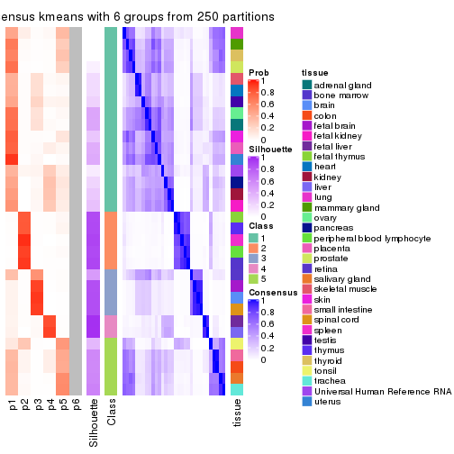
Heatmaps for the membership of samples in all partitions to see how consistent they are:
membership_heatmap(res, k = 2)
membership_heatmap(res, k = 3)
membership_heatmap(res, k = 4)
membership_heatmap(res, k = 5)
membership_heatmap(res, k = 6)
As soon as we have had the classes for columns, we can look for signatures which are significantly different between classes which can be candidate marks for certain classes. Following are the heatmaps for signatures.
Signature heatmaps where rows are scaled:
get_signatures(res, k = 2)
get_signatures(res, k = 3)
get_signatures(res, k = 4)
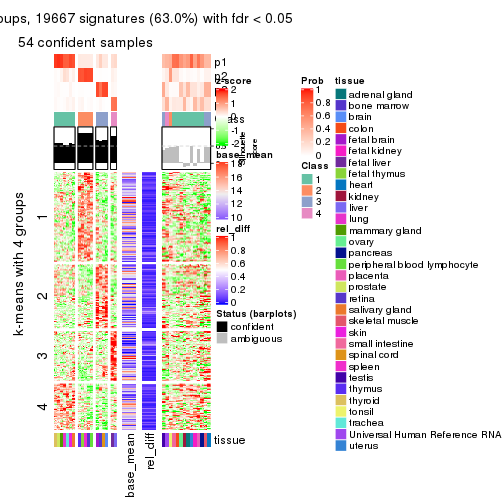
get_signatures(res, k = 5)
get_signatures(res, k = 6)
Signature heatmaps where rows are not scaled:
get_signatures(res, k = 2, scale_rows = FALSE)
get_signatures(res, k = 3, scale_rows = FALSE)
get_signatures(res, k = 4, scale_rows = FALSE)
get_signatures(res, k = 5, scale_rows = FALSE)
get_signatures(res, k = 6, scale_rows = FALSE)
Compare the overlap of signatures from different k:
compare_signatures(res)
get_signature() returns a data frame invisibly. TO get the list of signatures, the function
call should be assigned to a variable explicitly. In following code, if plot argument is set
to FALSE, no heatmap is plotted while only the differential analysis is performed.
# code only for demonstration
tb = get_signature(res, k = ..., plot = FALSE)
An example of the output of tb is:
#> which_row fdr mean_1 mean_2 scaled_mean_1 scaled_mean_2 km
#> 1 38 0.042760348 8.373488 9.131774 -0.5533452 0.5164555 1
#> 2 40 0.018707592 7.106213 8.469186 -0.6173731 0.5762149 1
#> 3 55 0.019134737 10.221463 11.207825 -0.6159697 0.5749050 1
#> 4 59 0.006059896 5.921854 7.869574 -0.6899429 0.6439467 1
#> 5 60 0.018055526 8.928898 10.211722 -0.6204761 0.5791110 1
#> 6 98 0.009384629 15.714769 14.887706 0.6635654 -0.6193277 2
...
The columns in tb are:
which_row: row indices corresponding to the input matrix.fdr: FDR for the differential test. mean_x: The mean value in group x.scaled_mean_x: The mean value in group x after rows are scaled.km: Row groups if k-means clustering is applied to rows.UMAP plot which shows how samples are separated.
dimension_reduction(res, k = 2, method = "UMAP")
dimension_reduction(res, k = 3, method = "UMAP")
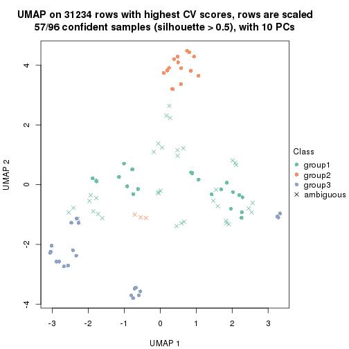
dimension_reduction(res, k = 4, method = "UMAP")

dimension_reduction(res, k = 5, method = "UMAP")
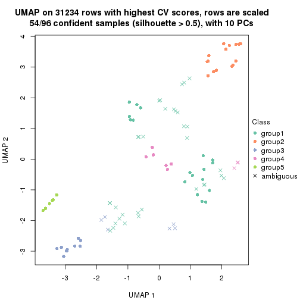
dimension_reduction(res, k = 6, method = "UMAP")

Following heatmap shows how subgroups are split when increasing k:
collect_classes(res)
Test correlation between subgroups and known annotations. If the known annotation is numeric, one-way ANOVA test is applied, and if the known annotation is discrete, chi-squared contingency table test is applied.
test_to_known_factors(res)
#> n tissue(p) k
#> CV:kmeans 51 1.59e-05 2
#> CV:kmeans 57 4.94e-10 3
#> CV:kmeans 54 1.75e-13 4
#> CV:kmeans 54 2.61e-17 5
#> CV:kmeans 42 4.28e-11 6
If matrix rows can be associated to genes, consider to use functional_enrichment(res,
...) to perform function enrichment for the signature genes. See this vignette for more detailed explanations.
The object with results only for a single top-value method and a single partition method can be extracted as:
res = res_list["CV", "skmeans"]
# you can also extract it by
# res = res_list["CV:skmeans"]
A summary of res and all the functions that can be applied to it:
res
#> A 'ConsensusPartition' object with k = 2, 3, 4, 5, 6.
#> On a matrix with 31234 rows and 96 columns.
#> Top rows (1000, 2000, 3000, 4000, 5000) are extracted by 'CV' method.
#> Subgroups are detected by 'skmeans' method.
#> Performed in total 1250 partitions by row resampling.
#> Best k for subgroups seems to be 4.
#>
#> Following methods can be applied to this 'ConsensusPartition' object:
#> [1] "cola_report" "collect_classes" "collect_plots"
#> [4] "collect_stats" "colnames" "compare_signatures"
#> [7] "consensus_heatmap" "dimension_reduction" "functional_enrichment"
#> [10] "get_anno_col" "get_anno" "get_classes"
#> [13] "get_consensus" "get_matrix" "get_membership"
#> [16] "get_param" "get_signatures" "get_stats"
#> [19] "is_best_k" "is_stable_k" "membership_heatmap"
#> [22] "ncol" "nrow" "plot_ecdf"
#> [25] "rownames" "select_partition_number" "show"
#> [28] "suggest_best_k" "test_to_known_factors"
collect_plots() function collects all the plots made from res for all k (number of partitions)
into one single page to provide an easy and fast comparison between different k.
collect_plots(res)
The plots are:
k and the heatmap of
predicted classes for each k.k.k.k.All the plots in panels can be made by individual functions and they are plotted later in this section.
select_partition_number() produces several plots showing different
statistics for choosing “optimized” k. There are following statistics:
k;k, the area increased is defined as \(A_k - A_{k-1}\).The detailed explanations of these statistics can be found in the cola vignette.
Generally speaking, lower PAC score, higher mean silhouette score or higher
concordance corresponds to better partition. Rand index and Jaccard index
measure how similar the current partition is compared to partition with k-1.
If they are too similar, we won't accept k is better than k-1.
select_partition_number(res)
The numeric values for all these statistics can be obtained by get_stats().
get_stats(res)
#> k 1-PAC mean_silhouette concordance area_increased Rand Jaccard
#> 2 2 0.643 0.833 0.925 0.5034 0.497 0.497
#> 3 3 0.626 0.785 0.868 0.3119 0.680 0.445
#> 4 4 0.876 0.889 0.945 0.1298 0.870 0.637
#> 5 5 0.781 0.747 0.853 0.0658 0.931 0.736
#> 6 6 0.779 0.656 0.742 0.0394 0.947 0.765
suggest_best_k() suggests the best \(k\) based on these statistics. The rules are as follows:
suggest_best_k(res)
#> [1] 4
Following shows the table of the partitions (You need to click the show/hide
code output link to see it). The membership matrix (columns with name p*)
is inferred by
clue::cl_consensus()
function with the SE method. Basically the value in the membership matrix
represents the probability to belong to a certain group. The finall class
label for an item is determined with the group with highest probability it
belongs to.
In get_classes() function, the entropy is calculated from the membership
matrix and the silhouette score is calculated from the consensus matrix.
cbind(get_classes(res, k = 2), get_membership(res, k = 2))
#> class entropy silhouette p1 p2
#> GSM194459 2 0.9460 0.547 0.364 0.636
#> GSM194460 2 0.9460 0.547 0.364 0.636
#> GSM194461 2 0.9460 0.547 0.364 0.636
#> GSM194462 2 0.0000 0.888 0.000 1.000
#> GSM194463 2 0.0000 0.888 0.000 1.000
#> GSM194464 2 0.0000 0.888 0.000 1.000
#> GSM194465 2 0.9460 0.547 0.364 0.636
#> GSM194466 2 0.9460 0.547 0.364 0.636
#> GSM194467 2 0.9460 0.547 0.364 0.636
#> GSM194468 2 0.9460 0.547 0.364 0.636
#> GSM194469 2 0.9460 0.547 0.364 0.636
#> GSM194470 2 0.9460 0.547 0.364 0.636
#> GSM194471 1 0.0000 0.938 1.000 0.000
#> GSM194472 1 0.0000 0.938 1.000 0.000
#> GSM194473 1 0.0000 0.938 1.000 0.000
#> GSM194474 1 0.0000 0.938 1.000 0.000
#> GSM194475 1 0.0000 0.938 1.000 0.000
#> GSM194476 1 0.0000 0.938 1.000 0.000
#> GSM194477 1 0.9460 0.459 0.636 0.364
#> GSM194478 1 0.9460 0.459 0.636 0.364
#> GSM194479 1 0.9460 0.459 0.636 0.364
#> GSM194480 1 0.0000 0.938 1.000 0.000
#> GSM194481 1 0.0000 0.938 1.000 0.000
#> GSM194482 1 0.0000 0.938 1.000 0.000
#> GSM194483 1 0.0000 0.938 1.000 0.000
#> GSM194484 1 0.0000 0.938 1.000 0.000
#> GSM194485 1 0.0000 0.938 1.000 0.000
#> GSM194486 1 0.0000 0.938 1.000 0.000
#> GSM194487 1 0.0000 0.938 1.000 0.000
#> GSM194488 1 0.0000 0.938 1.000 0.000
#> GSM194489 2 0.0000 0.888 0.000 1.000
#> GSM194490 2 0.0000 0.888 0.000 1.000
#> GSM194491 2 0.0000 0.888 0.000 1.000
#> GSM194492 2 0.0000 0.888 0.000 1.000
#> GSM194493 2 0.0000 0.888 0.000 1.000
#> GSM194494 2 0.0000 0.888 0.000 1.000
#> GSM194495 1 0.0672 0.932 0.992 0.008
#> GSM194496 1 0.0672 0.932 0.992 0.008
#> GSM194497 1 0.0672 0.932 0.992 0.008
#> GSM194498 2 0.0000 0.888 0.000 1.000
#> GSM194499 2 0.0000 0.888 0.000 1.000
#> GSM194500 2 0.0000 0.888 0.000 1.000
#> GSM194501 2 0.5629 0.807 0.132 0.868
#> GSM194502 2 0.5629 0.807 0.132 0.868
#> GSM194503 2 0.5629 0.807 0.132 0.868
#> GSM194504 1 0.0000 0.938 1.000 0.000
#> GSM194505 1 0.0000 0.938 1.000 0.000
#> GSM194506 1 0.0000 0.938 1.000 0.000
#> GSM194507 1 0.0000 0.938 1.000 0.000
#> GSM194508 1 0.0000 0.938 1.000 0.000
#> GSM194509 1 0.0000 0.938 1.000 0.000
#> GSM194510 1 0.1414 0.921 0.980 0.020
#> GSM194511 1 0.1414 0.921 0.980 0.020
#> GSM194512 1 0.1414 0.921 0.980 0.020
#> GSM194513 2 0.0000 0.888 0.000 1.000
#> GSM194514 2 0.0000 0.888 0.000 1.000
#> GSM194515 2 0.0000 0.888 0.000 1.000
#> GSM194516 2 0.0000 0.888 0.000 1.000
#> GSM194517 2 0.0000 0.888 0.000 1.000
#> GSM194518 2 0.0000 0.888 0.000 1.000
#> GSM194519 1 0.0000 0.938 1.000 0.000
#> GSM194520 1 0.0000 0.938 1.000 0.000
#> GSM194521 1 0.0000 0.938 1.000 0.000
#> GSM194522 1 0.0000 0.938 1.000 0.000
#> GSM194523 1 0.0000 0.938 1.000 0.000
#> GSM194524 1 0.0000 0.938 1.000 0.000
#> GSM194525 2 0.9661 0.498 0.392 0.608
#> GSM194526 2 0.9661 0.498 0.392 0.608
#> GSM194527 2 0.9661 0.498 0.392 0.608
#> GSM194528 1 0.9460 0.459 0.636 0.364
#> GSM194529 1 0.9460 0.459 0.636 0.364
#> GSM194530 1 0.9460 0.459 0.636 0.364
#> GSM194531 2 0.0000 0.888 0.000 1.000
#> GSM194532 2 0.0000 0.888 0.000 1.000
#> GSM194533 2 0.0000 0.888 0.000 1.000
#> GSM194534 2 0.0000 0.888 0.000 1.000
#> GSM194535 2 0.0000 0.888 0.000 1.000
#> GSM194536 2 0.0000 0.888 0.000 1.000
#> GSM194537 2 0.2423 0.862 0.040 0.960
#> GSM194538 2 0.2423 0.862 0.040 0.960
#> GSM194539 2 0.2423 0.862 0.040 0.960
#> GSM194540 2 0.0000 0.888 0.000 1.000
#> GSM194541 2 0.0000 0.888 0.000 1.000
#> GSM194542 2 0.0000 0.888 0.000 1.000
#> GSM194543 1 0.0000 0.938 1.000 0.000
#> GSM194544 1 0.0000 0.938 1.000 0.000
#> GSM194545 1 0.0000 0.938 1.000 0.000
#> GSM194546 2 0.0000 0.888 0.000 1.000
#> GSM194547 2 0.0000 0.888 0.000 1.000
#> GSM194548 2 0.0000 0.888 0.000 1.000
#> GSM194549 2 0.0000 0.888 0.000 1.000
#> GSM194550 2 0.0000 0.888 0.000 1.000
#> GSM194551 2 0.0000 0.888 0.000 1.000
#> GSM194552 1 0.0000 0.938 1.000 0.000
#> GSM194553 1 0.0000 0.938 1.000 0.000
#> GSM194554 1 0.0000 0.938 1.000 0.000
cbind(get_classes(res, k = 3), get_membership(res, k = 3))
#> class entropy silhouette p1 p2 p3
#> GSM194459 2 0.1905 0.731 0.028 0.956 0.016
#> GSM194460 2 0.1905 0.731 0.028 0.956 0.016
#> GSM194461 2 0.1905 0.731 0.028 0.956 0.016
#> GSM194462 1 0.1289 0.763 0.968 0.032 0.000
#> GSM194463 1 0.1289 0.763 0.968 0.032 0.000
#> GSM194464 1 0.1289 0.763 0.968 0.032 0.000
#> GSM194465 2 0.5639 0.490 0.232 0.752 0.016
#> GSM194466 2 0.5639 0.490 0.232 0.752 0.016
#> GSM194467 2 0.5639 0.490 0.232 0.752 0.016
#> GSM194468 2 0.1774 0.732 0.024 0.960 0.016
#> GSM194469 2 0.1774 0.732 0.024 0.960 0.016
#> GSM194470 2 0.1774 0.732 0.024 0.960 0.016
#> GSM194471 3 0.0000 0.975 0.000 0.000 1.000
#> GSM194472 3 0.0000 0.975 0.000 0.000 1.000
#> GSM194473 3 0.0000 0.975 0.000 0.000 1.000
#> GSM194474 3 0.0000 0.975 0.000 0.000 1.000
#> GSM194475 3 0.0000 0.975 0.000 0.000 1.000
#> GSM194476 3 0.0000 0.975 0.000 0.000 1.000
#> GSM194477 1 0.2446 0.779 0.936 0.012 0.052
#> GSM194478 1 0.2446 0.779 0.936 0.012 0.052
#> GSM194479 1 0.2446 0.779 0.936 0.012 0.052
#> GSM194480 3 0.0000 0.975 0.000 0.000 1.000
#> GSM194481 3 0.0000 0.975 0.000 0.000 1.000
#> GSM194482 3 0.0000 0.975 0.000 0.000 1.000
#> GSM194483 3 0.0000 0.975 0.000 0.000 1.000
#> GSM194484 3 0.0000 0.975 0.000 0.000 1.000
#> GSM194485 3 0.0000 0.975 0.000 0.000 1.000
#> GSM194486 3 0.0000 0.975 0.000 0.000 1.000
#> GSM194487 3 0.0000 0.975 0.000 0.000 1.000
#> GSM194488 3 0.0000 0.975 0.000 0.000 1.000
#> GSM194489 2 0.6267 0.537 0.452 0.548 0.000
#> GSM194490 2 0.6267 0.537 0.452 0.548 0.000
#> GSM194491 2 0.6267 0.537 0.452 0.548 0.000
#> GSM194492 1 0.0000 0.787 1.000 0.000 0.000
#> GSM194493 1 0.0000 0.787 1.000 0.000 0.000
#> GSM194494 1 0.0000 0.787 1.000 0.000 0.000
#> GSM194495 3 0.4654 0.722 0.208 0.000 0.792
#> GSM194496 3 0.4654 0.722 0.208 0.000 0.792
#> GSM194497 3 0.4654 0.722 0.208 0.000 0.792
#> GSM194498 1 0.1289 0.787 0.968 0.032 0.000
#> GSM194499 1 0.1289 0.787 0.968 0.032 0.000
#> GSM194500 1 0.1289 0.787 0.968 0.032 0.000
#> GSM194501 1 0.4868 0.743 0.844 0.100 0.056
#> GSM194502 1 0.4868 0.743 0.844 0.100 0.056
#> GSM194503 1 0.4868 0.743 0.844 0.100 0.056
#> GSM194504 3 0.0000 0.975 0.000 0.000 1.000
#> GSM194505 3 0.0000 0.975 0.000 0.000 1.000
#> GSM194506 3 0.0000 0.975 0.000 0.000 1.000
#> GSM194507 3 0.0000 0.975 0.000 0.000 1.000
#> GSM194508 3 0.0000 0.975 0.000 0.000 1.000
#> GSM194509 3 0.0000 0.975 0.000 0.000 1.000
#> GSM194510 1 0.8722 0.584 0.592 0.216 0.192
#> GSM194511 1 0.8722 0.584 0.592 0.216 0.192
#> GSM194512 1 0.8722 0.584 0.592 0.216 0.192
#> GSM194513 2 0.4605 0.840 0.204 0.796 0.000
#> GSM194514 2 0.4605 0.840 0.204 0.796 0.000
#> GSM194515 2 0.4605 0.840 0.204 0.796 0.000
#> GSM194516 2 0.4605 0.840 0.204 0.796 0.000
#> GSM194517 2 0.4605 0.840 0.204 0.796 0.000
#> GSM194518 2 0.4605 0.840 0.204 0.796 0.000
#> GSM194519 1 0.9527 0.428 0.464 0.204 0.332
#> GSM194520 1 0.9527 0.428 0.464 0.204 0.332
#> GSM194521 1 0.9527 0.428 0.464 0.204 0.332
#> GSM194522 1 0.9626 0.297 0.404 0.204 0.392
#> GSM194523 1 0.9626 0.297 0.404 0.204 0.392
#> GSM194524 1 0.9626 0.297 0.404 0.204 0.392
#> GSM194525 1 0.7274 0.606 0.644 0.304 0.052
#> GSM194526 1 0.7274 0.606 0.644 0.304 0.052
#> GSM194527 1 0.7274 0.606 0.644 0.304 0.052
#> GSM194528 1 0.0424 0.789 0.992 0.000 0.008
#> GSM194529 1 0.0424 0.789 0.992 0.000 0.008
#> GSM194530 1 0.0424 0.789 0.992 0.000 0.008
#> GSM194531 1 0.0000 0.787 1.000 0.000 0.000
#> GSM194532 1 0.0000 0.787 1.000 0.000 0.000
#> GSM194533 1 0.0000 0.787 1.000 0.000 0.000
#> GSM194534 1 0.1163 0.789 0.972 0.028 0.000
#> GSM194535 1 0.1163 0.789 0.972 0.028 0.000
#> GSM194536 1 0.1163 0.789 0.972 0.028 0.000
#> GSM194537 1 0.0000 0.787 1.000 0.000 0.000
#> GSM194538 1 0.0000 0.787 1.000 0.000 0.000
#> GSM194539 1 0.0000 0.787 1.000 0.000 0.000
#> GSM194540 2 0.4605 0.840 0.204 0.796 0.000
#> GSM194541 2 0.4605 0.840 0.204 0.796 0.000
#> GSM194542 2 0.4605 0.840 0.204 0.796 0.000
#> GSM194543 3 0.0000 0.975 0.000 0.000 1.000
#> GSM194544 3 0.0000 0.975 0.000 0.000 1.000
#> GSM194545 3 0.0000 0.975 0.000 0.000 1.000
#> GSM194546 2 0.4605 0.840 0.204 0.796 0.000
#> GSM194547 2 0.4605 0.840 0.204 0.796 0.000
#> GSM194548 2 0.4605 0.840 0.204 0.796 0.000
#> GSM194549 2 0.4605 0.840 0.204 0.796 0.000
#> GSM194550 2 0.4605 0.840 0.204 0.796 0.000
#> GSM194551 2 0.4605 0.840 0.204 0.796 0.000
#> GSM194552 3 0.0000 0.975 0.000 0.000 1.000
#> GSM194553 3 0.0000 0.975 0.000 0.000 1.000
#> GSM194554 3 0.0000 0.975 0.000 0.000 1.000
cbind(get_classes(res, k = 4), get_membership(res, k = 4))
#> class entropy silhouette p1 p2 p3 p4
#> GSM194459 4 0.0188 0.943 0.000 0.004 0.000 0.996
#> GSM194460 4 0.0188 0.943 0.000 0.004 0.000 0.996
#> GSM194461 4 0.0188 0.943 0.000 0.004 0.000 0.996
#> GSM194462 1 0.2281 0.882 0.904 0.096 0.000 0.000
#> GSM194463 1 0.2281 0.882 0.904 0.096 0.000 0.000
#> GSM194464 1 0.2281 0.882 0.904 0.096 0.000 0.000
#> GSM194465 4 0.0000 0.944 0.000 0.000 0.000 1.000
#> GSM194466 4 0.0000 0.944 0.000 0.000 0.000 1.000
#> GSM194467 4 0.0000 0.944 0.000 0.000 0.000 1.000
#> GSM194468 4 0.1302 0.923 0.000 0.044 0.000 0.956
#> GSM194469 4 0.1302 0.923 0.000 0.044 0.000 0.956
#> GSM194470 4 0.1302 0.923 0.000 0.044 0.000 0.956
#> GSM194471 3 0.0000 0.945 0.000 0.000 1.000 0.000
#> GSM194472 3 0.0000 0.945 0.000 0.000 1.000 0.000
#> GSM194473 3 0.0000 0.945 0.000 0.000 1.000 0.000
#> GSM194474 3 0.0000 0.945 0.000 0.000 1.000 0.000
#> GSM194475 3 0.0000 0.945 0.000 0.000 1.000 0.000
#> GSM194476 3 0.0000 0.945 0.000 0.000 1.000 0.000
#> GSM194477 1 0.0000 0.934 1.000 0.000 0.000 0.000
#> GSM194478 1 0.0000 0.934 1.000 0.000 0.000 0.000
#> GSM194479 1 0.0000 0.934 1.000 0.000 0.000 0.000
#> GSM194480 3 0.0927 0.939 0.008 0.000 0.976 0.016
#> GSM194481 3 0.0927 0.939 0.008 0.000 0.976 0.016
#> GSM194482 3 0.0927 0.939 0.008 0.000 0.976 0.016
#> GSM194483 3 0.0927 0.939 0.008 0.000 0.976 0.016
#> GSM194484 3 0.0927 0.939 0.008 0.000 0.976 0.016
#> GSM194485 3 0.0927 0.939 0.008 0.000 0.976 0.016
#> GSM194486 3 0.0000 0.945 0.000 0.000 1.000 0.000
#> GSM194487 3 0.0000 0.945 0.000 0.000 1.000 0.000
#> GSM194488 3 0.0000 0.945 0.000 0.000 1.000 0.000
#> GSM194489 2 0.4697 0.485 0.356 0.644 0.000 0.000
#> GSM194490 2 0.4697 0.485 0.356 0.644 0.000 0.000
#> GSM194491 2 0.4697 0.485 0.356 0.644 0.000 0.000
#> GSM194492 1 0.0188 0.935 0.996 0.000 0.000 0.004
#> GSM194493 1 0.0188 0.935 0.996 0.000 0.000 0.004
#> GSM194494 1 0.0188 0.935 0.996 0.000 0.000 0.004
#> GSM194495 3 0.5080 0.353 0.420 0.000 0.576 0.004
#> GSM194496 3 0.5080 0.353 0.420 0.000 0.576 0.004
#> GSM194497 3 0.5080 0.353 0.420 0.000 0.576 0.004
#> GSM194498 1 0.4562 0.821 0.792 0.056 0.000 0.152
#> GSM194499 1 0.4562 0.821 0.792 0.056 0.000 0.152
#> GSM194500 1 0.4562 0.821 0.792 0.056 0.000 0.152
#> GSM194501 1 0.1191 0.923 0.968 0.004 0.004 0.024
#> GSM194502 1 0.1191 0.923 0.968 0.004 0.004 0.024
#> GSM194503 1 0.1191 0.923 0.968 0.004 0.004 0.024
#> GSM194504 3 0.0524 0.943 0.008 0.000 0.988 0.004
#> GSM194505 3 0.0524 0.943 0.008 0.000 0.988 0.004
#> GSM194506 3 0.0524 0.943 0.008 0.000 0.988 0.004
#> GSM194507 3 0.0592 0.939 0.000 0.000 0.984 0.016
#> GSM194508 3 0.0592 0.939 0.000 0.000 0.984 0.016
#> GSM194509 3 0.0592 0.939 0.000 0.000 0.984 0.016
#> GSM194510 4 0.0188 0.944 0.004 0.000 0.000 0.996
#> GSM194511 4 0.0188 0.944 0.004 0.000 0.000 0.996
#> GSM194512 4 0.0188 0.944 0.004 0.000 0.000 0.996
#> GSM194513 2 0.0000 0.930 0.000 1.000 0.000 0.000
#> GSM194514 2 0.0000 0.930 0.000 1.000 0.000 0.000
#> GSM194515 2 0.0000 0.930 0.000 1.000 0.000 0.000
#> GSM194516 2 0.0000 0.930 0.000 1.000 0.000 0.000
#> GSM194517 2 0.0000 0.930 0.000 1.000 0.000 0.000
#> GSM194518 2 0.0000 0.930 0.000 1.000 0.000 0.000
#> GSM194519 4 0.0817 0.943 0.024 0.000 0.000 0.976
#> GSM194520 4 0.0817 0.943 0.024 0.000 0.000 0.976
#> GSM194521 4 0.0817 0.943 0.024 0.000 0.000 0.976
#> GSM194522 4 0.0921 0.941 0.028 0.000 0.000 0.972
#> GSM194523 4 0.0921 0.941 0.028 0.000 0.000 0.972
#> GSM194524 4 0.0921 0.941 0.028 0.000 0.000 0.972
#> GSM194525 4 0.4220 0.718 0.248 0.004 0.000 0.748
#> GSM194526 4 0.4220 0.718 0.248 0.004 0.000 0.748
#> GSM194527 4 0.4220 0.718 0.248 0.004 0.000 0.748
#> GSM194528 1 0.0469 0.933 0.988 0.000 0.000 0.012
#> GSM194529 1 0.0469 0.933 0.988 0.000 0.000 0.012
#> GSM194530 1 0.0469 0.933 0.988 0.000 0.000 0.012
#> GSM194531 1 0.0336 0.935 0.992 0.000 0.000 0.008
#> GSM194532 1 0.0336 0.935 0.992 0.000 0.000 0.008
#> GSM194533 1 0.0336 0.935 0.992 0.000 0.000 0.008
#> GSM194534 1 0.4237 0.832 0.808 0.040 0.000 0.152
#> GSM194535 1 0.4237 0.832 0.808 0.040 0.000 0.152
#> GSM194536 1 0.4237 0.832 0.808 0.040 0.000 0.152
#> GSM194537 1 0.0000 0.934 1.000 0.000 0.000 0.000
#> GSM194538 1 0.0000 0.934 1.000 0.000 0.000 0.000
#> GSM194539 1 0.0000 0.934 1.000 0.000 0.000 0.000
#> GSM194540 2 0.0000 0.930 0.000 1.000 0.000 0.000
#> GSM194541 2 0.0000 0.930 0.000 1.000 0.000 0.000
#> GSM194542 2 0.0000 0.930 0.000 1.000 0.000 0.000
#> GSM194543 3 0.0188 0.945 0.000 0.000 0.996 0.004
#> GSM194544 3 0.0188 0.945 0.000 0.000 0.996 0.004
#> GSM194545 3 0.0188 0.945 0.000 0.000 0.996 0.004
#> GSM194546 2 0.0000 0.930 0.000 1.000 0.000 0.000
#> GSM194547 2 0.0000 0.930 0.000 1.000 0.000 0.000
#> GSM194548 2 0.0000 0.930 0.000 1.000 0.000 0.000
#> GSM194549 2 0.0000 0.930 0.000 1.000 0.000 0.000
#> GSM194550 2 0.0000 0.930 0.000 1.000 0.000 0.000
#> GSM194551 2 0.0000 0.930 0.000 1.000 0.000 0.000
#> GSM194552 3 0.0000 0.945 0.000 0.000 1.000 0.000
#> GSM194553 3 0.0000 0.945 0.000 0.000 1.000 0.000
#> GSM194554 3 0.0000 0.945 0.000 0.000 1.000 0.000
cbind(get_classes(res, k = 5), get_membership(res, k = 5))
#> class entropy silhouette p1 p2 p3 p4 p5
#> GSM194459 4 0.0404 0.948 0.000 0.000 0.000 0.988 0.012
#> GSM194460 4 0.0404 0.948 0.000 0.000 0.000 0.988 0.012
#> GSM194461 4 0.0404 0.948 0.000 0.000 0.000 0.988 0.012
#> GSM194462 1 0.3521 0.800 0.820 0.040 0.000 0.000 0.140
#> GSM194463 1 0.3521 0.800 0.820 0.040 0.000 0.000 0.140
#> GSM194464 1 0.3521 0.800 0.820 0.040 0.000 0.000 0.140
#> GSM194465 4 0.0404 0.948 0.000 0.000 0.000 0.988 0.012
#> GSM194466 4 0.0404 0.948 0.000 0.000 0.000 0.988 0.012
#> GSM194467 4 0.0404 0.948 0.000 0.000 0.000 0.988 0.012
#> GSM194468 4 0.2228 0.915 0.000 0.012 0.004 0.908 0.076
#> GSM194469 4 0.2228 0.915 0.000 0.012 0.004 0.908 0.076
#> GSM194470 4 0.2228 0.915 0.000 0.012 0.004 0.908 0.076
#> GSM194471 3 0.0000 0.810 0.000 0.000 1.000 0.000 0.000
#> GSM194472 3 0.0000 0.810 0.000 0.000 1.000 0.000 0.000
#> GSM194473 3 0.0000 0.810 0.000 0.000 1.000 0.000 0.000
#> GSM194474 3 0.0000 0.810 0.000 0.000 1.000 0.000 0.000
#> GSM194475 3 0.0000 0.810 0.000 0.000 1.000 0.000 0.000
#> GSM194476 3 0.0000 0.810 0.000 0.000 1.000 0.000 0.000
#> GSM194477 1 0.2230 0.816 0.884 0.000 0.000 0.000 0.116
#> GSM194478 1 0.2230 0.816 0.884 0.000 0.000 0.000 0.116
#> GSM194479 1 0.2230 0.816 0.884 0.000 0.000 0.000 0.116
#> GSM194480 3 0.4283 0.637 0.008 0.000 0.644 0.000 0.348
#> GSM194481 3 0.4283 0.637 0.008 0.000 0.644 0.000 0.348
#> GSM194482 3 0.4283 0.637 0.008 0.000 0.644 0.000 0.348
#> GSM194483 3 0.4283 0.637 0.008 0.000 0.644 0.000 0.348
#> GSM194484 3 0.4283 0.637 0.008 0.000 0.644 0.000 0.348
#> GSM194485 3 0.4283 0.637 0.008 0.000 0.644 0.000 0.348
#> GSM194486 3 0.0000 0.810 0.000 0.000 1.000 0.000 0.000
#> GSM194487 3 0.0000 0.810 0.000 0.000 1.000 0.000 0.000
#> GSM194488 3 0.0000 0.810 0.000 0.000 1.000 0.000 0.000
#> GSM194489 2 0.4126 0.417 0.380 0.620 0.000 0.000 0.000
#> GSM194490 2 0.4126 0.417 0.380 0.620 0.000 0.000 0.000
#> GSM194491 2 0.4126 0.417 0.380 0.620 0.000 0.000 0.000
#> GSM194492 1 0.0162 0.840 0.996 0.000 0.000 0.000 0.004
#> GSM194493 1 0.0162 0.840 0.996 0.000 0.000 0.000 0.004
#> GSM194494 1 0.0162 0.840 0.996 0.000 0.000 0.000 0.004
#> GSM194495 5 0.4155 0.578 0.144 0.000 0.076 0.000 0.780
#> GSM194496 5 0.4155 0.578 0.144 0.000 0.076 0.000 0.780
#> GSM194497 5 0.4155 0.578 0.144 0.000 0.076 0.000 0.780
#> GSM194498 1 0.4446 0.755 0.776 0.008 0.000 0.100 0.116
#> GSM194499 1 0.4446 0.755 0.776 0.008 0.000 0.100 0.116
#> GSM194500 1 0.4446 0.755 0.776 0.008 0.000 0.100 0.116
#> GSM194501 5 0.4192 0.289 0.404 0.000 0.000 0.000 0.596
#> GSM194502 5 0.4192 0.289 0.404 0.000 0.000 0.000 0.596
#> GSM194503 5 0.4192 0.289 0.404 0.000 0.000 0.000 0.596
#> GSM194504 5 0.4397 -0.199 0.004 0.000 0.432 0.000 0.564
#> GSM194505 5 0.4397 -0.199 0.004 0.000 0.432 0.000 0.564
#> GSM194506 5 0.4397 -0.199 0.004 0.000 0.432 0.000 0.564
#> GSM194507 3 0.3550 0.679 0.000 0.000 0.760 0.004 0.236
#> GSM194508 3 0.3550 0.679 0.000 0.000 0.760 0.004 0.236
#> GSM194509 3 0.3550 0.679 0.000 0.000 0.760 0.004 0.236
#> GSM194510 4 0.1399 0.942 0.020 0.000 0.000 0.952 0.028
#> GSM194511 4 0.1399 0.942 0.020 0.000 0.000 0.952 0.028
#> GSM194512 4 0.1399 0.942 0.020 0.000 0.000 0.952 0.028
#> GSM194513 2 0.0000 0.919 0.000 1.000 0.000 0.000 0.000
#> GSM194514 2 0.0000 0.919 0.000 1.000 0.000 0.000 0.000
#> GSM194515 2 0.0000 0.919 0.000 1.000 0.000 0.000 0.000
#> GSM194516 2 0.0000 0.919 0.000 1.000 0.000 0.000 0.000
#> GSM194517 2 0.0000 0.919 0.000 1.000 0.000 0.000 0.000
#> GSM194518 2 0.0000 0.919 0.000 1.000 0.000 0.000 0.000
#> GSM194519 4 0.1831 0.938 0.004 0.000 0.000 0.920 0.076
#> GSM194520 4 0.1831 0.938 0.004 0.000 0.000 0.920 0.076
#> GSM194521 4 0.1831 0.938 0.004 0.000 0.000 0.920 0.076
#> GSM194522 4 0.1892 0.936 0.004 0.000 0.000 0.916 0.080
#> GSM194523 4 0.1892 0.936 0.004 0.000 0.000 0.916 0.080
#> GSM194524 4 0.1892 0.936 0.004 0.000 0.000 0.916 0.080
#> GSM194525 5 0.5932 0.401 0.132 0.000 0.000 0.308 0.560
#> GSM194526 5 0.5932 0.401 0.132 0.000 0.000 0.308 0.560
#> GSM194527 5 0.5932 0.401 0.132 0.000 0.000 0.308 0.560
#> GSM194528 1 0.2583 0.809 0.864 0.000 0.000 0.004 0.132
#> GSM194529 1 0.2583 0.809 0.864 0.000 0.000 0.004 0.132
#> GSM194530 1 0.2583 0.809 0.864 0.000 0.000 0.004 0.132
#> GSM194531 1 0.0963 0.838 0.964 0.000 0.000 0.000 0.036
#> GSM194532 1 0.0963 0.838 0.964 0.000 0.000 0.000 0.036
#> GSM194533 1 0.0963 0.838 0.964 0.000 0.000 0.000 0.036
#> GSM194534 1 0.4273 0.761 0.784 0.004 0.000 0.096 0.116
#> GSM194535 1 0.4273 0.761 0.784 0.004 0.000 0.096 0.116
#> GSM194536 1 0.4273 0.761 0.784 0.004 0.000 0.096 0.116
#> GSM194537 1 0.3366 0.707 0.768 0.000 0.000 0.000 0.232
#> GSM194538 1 0.3366 0.707 0.768 0.000 0.000 0.000 0.232
#> GSM194539 1 0.3366 0.707 0.768 0.000 0.000 0.000 0.232
#> GSM194540 2 0.0000 0.919 0.000 1.000 0.000 0.000 0.000
#> GSM194541 2 0.0000 0.919 0.000 1.000 0.000 0.000 0.000
#> GSM194542 2 0.0000 0.919 0.000 1.000 0.000 0.000 0.000
#> GSM194543 3 0.3837 0.668 0.000 0.000 0.692 0.000 0.308
#> GSM194544 3 0.3837 0.668 0.000 0.000 0.692 0.000 0.308
#> GSM194545 3 0.3837 0.668 0.000 0.000 0.692 0.000 0.308
#> GSM194546 2 0.0000 0.919 0.000 1.000 0.000 0.000 0.000
#> GSM194547 2 0.0000 0.919 0.000 1.000 0.000 0.000 0.000
#> GSM194548 2 0.0000 0.919 0.000 1.000 0.000 0.000 0.000
#> GSM194549 2 0.0000 0.919 0.000 1.000 0.000 0.000 0.000
#> GSM194550 2 0.0000 0.919 0.000 1.000 0.000 0.000 0.000
#> GSM194551 2 0.0000 0.919 0.000 1.000 0.000 0.000 0.000
#> GSM194552 3 0.0000 0.810 0.000 0.000 1.000 0.000 0.000
#> GSM194553 3 0.0000 0.810 0.000 0.000 1.000 0.000 0.000
#> GSM194554 3 0.0000 0.810 0.000 0.000 1.000 0.000 0.000
cbind(get_classes(res, k = 6), get_membership(res, k = 6))
#> class entropy silhouette p1 p2 p3 p4 p5 p6
#> GSM194459 4 0.0363 0.8899 0.000 0.000 0.000 0.988 0.000 0.012
#> GSM194460 4 0.0363 0.8899 0.000 0.000 0.000 0.988 0.000 0.012
#> GSM194461 4 0.0363 0.8899 0.000 0.000 0.000 0.988 0.000 0.012
#> GSM194462 1 0.5730 0.6575 0.528 0.036 0.000 0.000 0.080 0.356
#> GSM194463 1 0.5730 0.6575 0.528 0.036 0.000 0.000 0.080 0.356
#> GSM194464 1 0.5730 0.6575 0.528 0.036 0.000 0.000 0.080 0.356
#> GSM194465 4 0.0260 0.8905 0.000 0.000 0.000 0.992 0.000 0.008
#> GSM194466 4 0.0260 0.8905 0.000 0.000 0.000 0.992 0.000 0.008
#> GSM194467 4 0.0260 0.8905 0.000 0.000 0.000 0.992 0.000 0.008
#> GSM194468 4 0.4161 0.7836 0.000 0.024 0.012 0.792 0.068 0.104
#> GSM194469 4 0.4161 0.7836 0.000 0.024 0.012 0.792 0.068 0.104
#> GSM194470 4 0.4161 0.7836 0.000 0.024 0.012 0.792 0.068 0.104
#> GSM194471 3 0.0000 0.8966 0.000 0.000 1.000 0.000 0.000 0.000
#> GSM194472 3 0.0000 0.8966 0.000 0.000 1.000 0.000 0.000 0.000
#> GSM194473 3 0.0000 0.8966 0.000 0.000 1.000 0.000 0.000 0.000
#> GSM194474 3 0.0000 0.8966 0.000 0.000 1.000 0.000 0.000 0.000
#> GSM194475 3 0.0000 0.8966 0.000 0.000 1.000 0.000 0.000 0.000
#> GSM194476 3 0.0000 0.8966 0.000 0.000 1.000 0.000 0.000 0.000
#> GSM194477 1 0.3405 0.6908 0.812 0.000 0.000 0.000 0.076 0.112
#> GSM194478 1 0.3405 0.6908 0.812 0.000 0.000 0.000 0.076 0.112
#> GSM194479 1 0.3405 0.6908 0.812 0.000 0.000 0.000 0.076 0.112
#> GSM194480 5 0.6204 0.2280 0.024 0.000 0.404 0.004 0.432 0.136
#> GSM194481 5 0.6204 0.2280 0.024 0.000 0.404 0.004 0.432 0.136
#> GSM194482 5 0.6204 0.2280 0.024 0.000 0.404 0.004 0.432 0.136
#> GSM194483 5 0.6204 0.2280 0.024 0.000 0.404 0.004 0.432 0.136
#> GSM194484 5 0.6204 0.2280 0.024 0.000 0.404 0.004 0.432 0.136
#> GSM194485 5 0.6204 0.2280 0.024 0.000 0.404 0.004 0.432 0.136
#> GSM194486 3 0.0000 0.8966 0.000 0.000 1.000 0.000 0.000 0.000
#> GSM194487 3 0.0000 0.8966 0.000 0.000 1.000 0.000 0.000 0.000
#> GSM194488 3 0.0000 0.8966 0.000 0.000 1.000 0.000 0.000 0.000
#> GSM194489 2 0.4671 0.2707 0.424 0.532 0.000 0.000 0.000 0.044
#> GSM194490 2 0.4671 0.2707 0.424 0.532 0.000 0.000 0.000 0.044
#> GSM194491 2 0.4671 0.2707 0.424 0.532 0.000 0.000 0.000 0.044
#> GSM194492 1 0.2019 0.7324 0.900 0.000 0.000 0.000 0.012 0.088
#> GSM194493 1 0.2019 0.7324 0.900 0.000 0.000 0.000 0.012 0.088
#> GSM194494 1 0.2019 0.7324 0.900 0.000 0.000 0.000 0.012 0.088
#> GSM194495 5 0.4244 0.4564 0.060 0.000 0.040 0.000 0.772 0.128
#> GSM194496 5 0.4244 0.4564 0.060 0.000 0.040 0.000 0.772 0.128
#> GSM194497 5 0.4244 0.4564 0.060 0.000 0.040 0.000 0.772 0.128
#> GSM194498 1 0.4396 0.6460 0.520 0.000 0.000 0.024 0.000 0.456
#> GSM194499 1 0.4396 0.6460 0.520 0.000 0.000 0.024 0.000 0.456
#> GSM194500 1 0.4396 0.6460 0.520 0.000 0.000 0.024 0.000 0.456
#> GSM194501 5 0.5958 0.0282 0.248 0.000 0.000 0.000 0.448 0.304
#> GSM194502 5 0.5958 0.0282 0.248 0.000 0.000 0.000 0.448 0.304
#> GSM194503 5 0.5958 0.0282 0.248 0.000 0.000 0.000 0.448 0.304
#> GSM194504 5 0.3163 0.3954 0.000 0.000 0.232 0.004 0.764 0.000
#> GSM194505 5 0.3163 0.3954 0.000 0.000 0.232 0.004 0.764 0.000
#> GSM194506 5 0.3163 0.3954 0.000 0.000 0.232 0.004 0.764 0.000
#> GSM194507 3 0.4998 0.4565 0.000 0.000 0.608 0.012 0.316 0.064
#> GSM194508 3 0.4998 0.4565 0.000 0.000 0.608 0.012 0.316 0.064
#> GSM194509 3 0.4998 0.4565 0.000 0.000 0.608 0.012 0.316 0.064
#> GSM194510 4 0.3029 0.8725 0.052 0.000 0.000 0.852 0.008 0.088
#> GSM194511 4 0.3029 0.8725 0.052 0.000 0.000 0.852 0.008 0.088
#> GSM194512 4 0.3029 0.8725 0.052 0.000 0.000 0.852 0.008 0.088
#> GSM194513 2 0.0547 0.9013 0.000 0.980 0.000 0.000 0.000 0.020
#> GSM194514 2 0.0547 0.9013 0.000 0.980 0.000 0.000 0.000 0.020
#> GSM194515 2 0.0547 0.9013 0.000 0.980 0.000 0.000 0.000 0.020
#> GSM194516 2 0.0547 0.9013 0.000 0.980 0.000 0.000 0.000 0.020
#> GSM194517 2 0.0547 0.9013 0.000 0.980 0.000 0.000 0.000 0.020
#> GSM194518 2 0.0547 0.9013 0.000 0.980 0.000 0.000 0.000 0.020
#> GSM194519 4 0.3334 0.8735 0.008 0.000 0.000 0.820 0.040 0.132
#> GSM194520 4 0.3334 0.8735 0.008 0.000 0.000 0.820 0.040 0.132
#> GSM194521 4 0.3334 0.8735 0.008 0.000 0.000 0.820 0.040 0.132
#> GSM194522 4 0.3424 0.8721 0.008 0.000 0.000 0.816 0.048 0.128
#> GSM194523 4 0.3424 0.8721 0.008 0.000 0.000 0.816 0.048 0.128
#> GSM194524 4 0.3424 0.8721 0.008 0.000 0.000 0.816 0.048 0.128
#> GSM194525 5 0.7004 0.2460 0.088 0.000 0.000 0.192 0.424 0.296
#> GSM194526 5 0.7004 0.2460 0.088 0.000 0.000 0.192 0.424 0.296
#> GSM194527 5 0.7004 0.2460 0.088 0.000 0.000 0.192 0.424 0.296
#> GSM194528 1 0.3088 0.6750 0.832 0.000 0.000 0.000 0.048 0.120
#> GSM194529 1 0.3088 0.6750 0.832 0.000 0.000 0.000 0.048 0.120
#> GSM194530 1 0.3088 0.6750 0.832 0.000 0.000 0.000 0.048 0.120
#> GSM194531 1 0.0260 0.7213 0.992 0.000 0.000 0.000 0.000 0.008
#> GSM194532 1 0.0260 0.7213 0.992 0.000 0.000 0.000 0.000 0.008
#> GSM194533 1 0.0260 0.7213 0.992 0.000 0.000 0.000 0.000 0.008
#> GSM194534 1 0.4396 0.6460 0.520 0.000 0.000 0.024 0.000 0.456
#> GSM194535 1 0.4396 0.6460 0.520 0.000 0.000 0.024 0.000 0.456
#> GSM194536 1 0.4396 0.6460 0.520 0.000 0.000 0.024 0.000 0.456
#> GSM194537 1 0.5692 0.5510 0.524 0.000 0.000 0.000 0.216 0.260
#> GSM194538 1 0.5692 0.5510 0.524 0.000 0.000 0.000 0.216 0.260
#> GSM194539 1 0.5692 0.5510 0.524 0.000 0.000 0.000 0.216 0.260
#> GSM194540 2 0.0000 0.9040 0.000 1.000 0.000 0.000 0.000 0.000
#> GSM194541 2 0.0000 0.9040 0.000 1.000 0.000 0.000 0.000 0.000
#> GSM194542 2 0.0000 0.9040 0.000 1.000 0.000 0.000 0.000 0.000
#> GSM194543 5 0.4336 0.0732 0.000 0.000 0.476 0.000 0.504 0.020
#> GSM194544 5 0.4336 0.0732 0.000 0.000 0.476 0.000 0.504 0.020
#> GSM194545 5 0.4336 0.0732 0.000 0.000 0.476 0.000 0.504 0.020
#> GSM194546 2 0.0000 0.9040 0.000 1.000 0.000 0.000 0.000 0.000
#> GSM194547 2 0.0000 0.9040 0.000 1.000 0.000 0.000 0.000 0.000
#> GSM194548 2 0.0000 0.9040 0.000 1.000 0.000 0.000 0.000 0.000
#> GSM194549 2 0.0000 0.9040 0.000 1.000 0.000 0.000 0.000 0.000
#> GSM194550 2 0.0000 0.9040 0.000 1.000 0.000 0.000 0.000 0.000
#> GSM194551 2 0.0000 0.9040 0.000 1.000 0.000 0.000 0.000 0.000
#> GSM194552 3 0.0146 0.8940 0.000 0.000 0.996 0.000 0.004 0.000
#> GSM194553 3 0.0146 0.8940 0.000 0.000 0.996 0.000 0.004 0.000
#> GSM194554 3 0.0146 0.8940 0.000 0.000 0.996 0.000 0.004 0.000
Heatmaps for the consensus matrix. It visualizes the probability of two samples to be in a same group.
consensus_heatmap(res, k = 2)
consensus_heatmap(res, k = 3)
consensus_heatmap(res, k = 4)
consensus_heatmap(res, k = 5)
consensus_heatmap(res, k = 6)
Heatmaps for the membership of samples in all partitions to see how consistent they are:
membership_heatmap(res, k = 2)
membership_heatmap(res, k = 3)
membership_heatmap(res, k = 4)
membership_heatmap(res, k = 5)
membership_heatmap(res, k = 6)
As soon as we have had the classes for columns, we can look for signatures which are significantly different between classes which can be candidate marks for certain classes. Following are the heatmaps for signatures.
Signature heatmaps where rows are scaled:
get_signatures(res, k = 2)
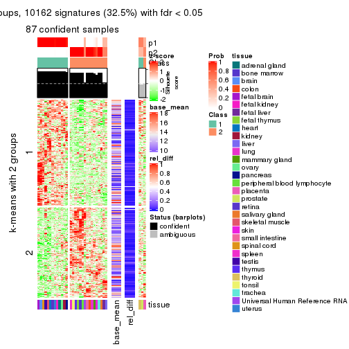
get_signatures(res, k = 3)
get_signatures(res, k = 4)
get_signatures(res, k = 5)
get_signatures(res, k = 6)
Signature heatmaps where rows are not scaled:
get_signatures(res, k = 2, scale_rows = FALSE)
get_signatures(res, k = 3, scale_rows = FALSE)
get_signatures(res, k = 4, scale_rows = FALSE)
get_signatures(res, k = 5, scale_rows = FALSE)
get_signatures(res, k = 6, scale_rows = FALSE)

Compare the overlap of signatures from different k:
compare_signatures(res)
get_signature() returns a data frame invisibly. TO get the list of signatures, the function
call should be assigned to a variable explicitly. In following code, if plot argument is set
to FALSE, no heatmap is plotted while only the differential analysis is performed.
# code only for demonstration
tb = get_signature(res, k = ..., plot = FALSE)
An example of the output of tb is:
#> which_row fdr mean_1 mean_2 scaled_mean_1 scaled_mean_2 km
#> 1 38 0.042760348 8.373488 9.131774 -0.5533452 0.5164555 1
#> 2 40 0.018707592 7.106213 8.469186 -0.6173731 0.5762149 1
#> 3 55 0.019134737 10.221463 11.207825 -0.6159697 0.5749050 1
#> 4 59 0.006059896 5.921854 7.869574 -0.6899429 0.6439467 1
#> 5 60 0.018055526 8.928898 10.211722 -0.6204761 0.5791110 1
#> 6 98 0.009384629 15.714769 14.887706 0.6635654 -0.6193277 2
...
The columns in tb are:
which_row: row indices corresponding to the input matrix.fdr: FDR for the differential test. mean_x: The mean value in group x.scaled_mean_x: The mean value in group x after rows are scaled.km: Row groups if k-means clustering is applied to rows.UMAP plot which shows how samples are separated.
dimension_reduction(res, k = 2, method = "UMAP")
dimension_reduction(res, k = 3, method = "UMAP")
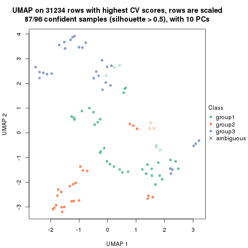
dimension_reduction(res, k = 4, method = "UMAP")
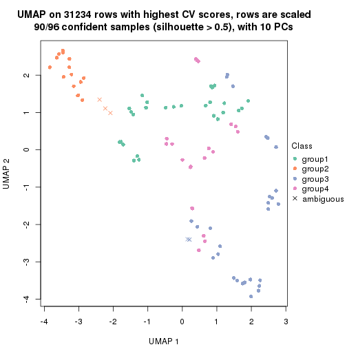
dimension_reduction(res, k = 5, method = "UMAP")
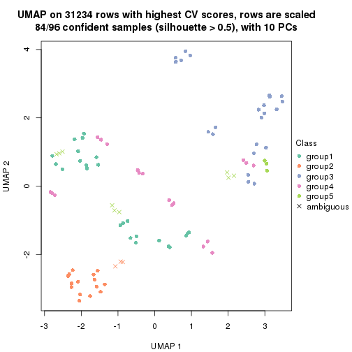
dimension_reduction(res, k = 6, method = "UMAP")
Following heatmap shows how subgroups are split when increasing k:
collect_classes(res)
Test correlation between subgroups and known annotations. If the known annotation is numeric, one-way ANOVA test is applied, and if the known annotation is discrete, chi-squared contingency table test is applied.
test_to_known_factors(res)
#> n tissue(p) k
#> CV:skmeans 87 5.79e-08 2
#> CV:skmeans 87 5.07e-14 3
#> CV:skmeans 90 1.28e-20 4
#> CV:skmeans 84 3.25e-25 5
#> CV:skmeans 69 1.85e-16 6
If matrix rows can be associated to genes, consider to use functional_enrichment(res,
...) to perform function enrichment for the signature genes. See this vignette for more detailed explanations.
The object with results only for a single top-value method and a single partition method can be extracted as:
res = res_list["CV", "pam"]
# you can also extract it by
# res = res_list["CV:pam"]
A summary of res and all the functions that can be applied to it:
res
#> A 'ConsensusPartition' object with k = 2, 3, 4, 5, 6.
#> On a matrix with 31234 rows and 96 columns.
#> Top rows (1000, 2000, 3000, 4000, 5000) are extracted by 'CV' method.
#> Subgroups are detected by 'pam' method.
#> Performed in total 1250 partitions by row resampling.
#> Best k for subgroups seems to be 4.
#>
#> Following methods can be applied to this 'ConsensusPartition' object:
#> [1] "cola_report" "collect_classes" "collect_plots"
#> [4] "collect_stats" "colnames" "compare_signatures"
#> [7] "consensus_heatmap" "dimension_reduction" "functional_enrichment"
#> [10] "get_anno_col" "get_anno" "get_classes"
#> [13] "get_consensus" "get_matrix" "get_membership"
#> [16] "get_param" "get_signatures" "get_stats"
#> [19] "is_best_k" "is_stable_k" "membership_heatmap"
#> [22] "ncol" "nrow" "plot_ecdf"
#> [25] "rownames" "select_partition_number" "show"
#> [28] "suggest_best_k" "test_to_known_factors"
collect_plots() function collects all the plots made from res for all k (number of partitions)
into one single page to provide an easy and fast comparison between different k.
collect_plots(res)
The plots are:
k and the heatmap of
predicted classes for each k.k.k.k.All the plots in panels can be made by individual functions and they are plotted later in this section.
select_partition_number() produces several plots showing different
statistics for choosing “optimized” k. There are following statistics:
k;k, the area increased is defined as \(A_k - A_{k-1}\).The detailed explanations of these statistics can be found in the cola vignette.
Generally speaking, lower PAC score, higher mean silhouette score or higher
concordance corresponds to better partition. Rand index and Jaccard index
measure how similar the current partition is compared to partition with k-1.
If they are too similar, we won't accept k is better than k-1.
select_partition_number(res)
The numeric values for all these statistics can be obtained by get_stats().
get_stats(res)
#> k 1-PAC mean_silhouette concordance area_increased Rand Jaccard
#> 2 2 0.549 0.943 0.939 0.300 0.692 0.692
#> 3 3 1.000 0.975 0.989 0.524 0.864 0.803
#> 4 4 0.985 0.977 0.989 0.179 0.917 0.851
#> 5 5 0.785 0.869 0.907 0.138 0.925 0.841
#> 6 6 0.689 0.728 0.846 0.119 1.000 1.000
suggest_best_k() suggests the best \(k\) based on these statistics. The rules are as follows:
suggest_best_k(res)
#> [1] 4
#> attr(,"optional")
#> [1] 3
There is also optional best \(k\) = 3 that is worth to check.
Following shows the table of the partitions (You need to click the show/hide
code output link to see it). The membership matrix (columns with name p*)
is inferred by
clue::cl_consensus()
function with the SE method. Basically the value in the membership matrix
represents the probability to belong to a certain group. The finall class
label for an item is determined with the group with highest probability it
belongs to.
In get_classes() function, the entropy is calculated from the membership
matrix and the silhouette score is calculated from the consensus matrix.
cbind(get_classes(res, k = 2), get_membership(res, k = 2))
#> class entropy silhouette p1 p2
#> GSM194459 1 0.4161 0.870 0.916 0.084
#> GSM194460 1 0.4939 0.838 0.892 0.108
#> GSM194461 1 0.8661 0.483 0.712 0.288
#> GSM194462 1 0.0000 0.961 1.000 0.000
#> GSM194463 1 0.0000 0.961 1.000 0.000
#> GSM194464 1 0.0000 0.961 1.000 0.000
#> GSM194465 1 0.0000 0.961 1.000 0.000
#> GSM194466 1 0.0000 0.961 1.000 0.000
#> GSM194467 1 0.0000 0.961 1.000 0.000
#> GSM194468 1 0.0376 0.957 0.996 0.004
#> GSM194469 1 0.0376 0.957 0.996 0.004
#> GSM194470 1 0.0376 0.957 0.996 0.004
#> GSM194471 1 0.6531 0.813 0.832 0.168
#> GSM194472 1 0.6531 0.813 0.832 0.168
#> GSM194473 1 0.6531 0.813 0.832 0.168
#> GSM194474 1 0.6531 0.813 0.832 0.168
#> GSM194475 1 0.6531 0.813 0.832 0.168
#> GSM194476 1 0.6531 0.813 0.832 0.168
#> GSM194477 1 0.0000 0.961 1.000 0.000
#> GSM194478 1 0.0000 0.961 1.000 0.000
#> GSM194479 1 0.0000 0.961 1.000 0.000
#> GSM194480 1 0.0000 0.961 1.000 0.000
#> GSM194481 1 0.0000 0.961 1.000 0.000
#> GSM194482 1 0.0000 0.961 1.000 0.000
#> GSM194483 1 0.0000 0.961 1.000 0.000
#> GSM194484 1 0.0000 0.961 1.000 0.000
#> GSM194485 1 0.0000 0.961 1.000 0.000
#> GSM194486 1 0.6531 0.813 0.832 0.168
#> GSM194487 1 0.6531 0.813 0.832 0.168
#> GSM194488 1 0.6531 0.813 0.832 0.168
#> GSM194489 2 0.6531 1.000 0.168 0.832
#> GSM194490 2 0.6531 1.000 0.168 0.832
#> GSM194491 2 0.6531 1.000 0.168 0.832
#> GSM194492 1 0.0000 0.961 1.000 0.000
#> GSM194493 1 0.0000 0.961 1.000 0.000
#> GSM194494 1 0.0000 0.961 1.000 0.000
#> GSM194495 1 0.0000 0.961 1.000 0.000
#> GSM194496 1 0.0000 0.961 1.000 0.000
#> GSM194497 1 0.0000 0.961 1.000 0.000
#> GSM194498 1 0.0000 0.961 1.000 0.000
#> GSM194499 1 0.0000 0.961 1.000 0.000
#> GSM194500 1 0.0000 0.961 1.000 0.000
#> GSM194501 1 0.0000 0.961 1.000 0.000
#> GSM194502 1 0.0000 0.961 1.000 0.000
#> GSM194503 1 0.0000 0.961 1.000 0.000
#> GSM194504 1 0.0000 0.961 1.000 0.000
#> GSM194505 1 0.0000 0.961 1.000 0.000
#> GSM194506 1 0.0000 0.961 1.000 0.000
#> GSM194507 1 0.0000 0.961 1.000 0.000
#> GSM194508 1 0.0000 0.961 1.000 0.000
#> GSM194509 1 0.0000 0.961 1.000 0.000
#> GSM194510 1 0.0000 0.961 1.000 0.000
#> GSM194511 1 0.0000 0.961 1.000 0.000
#> GSM194512 1 0.0000 0.961 1.000 0.000
#> GSM194513 2 0.6531 1.000 0.168 0.832
#> GSM194514 2 0.6531 1.000 0.168 0.832
#> GSM194515 2 0.6531 1.000 0.168 0.832
#> GSM194516 2 0.6531 1.000 0.168 0.832
#> GSM194517 2 0.6531 1.000 0.168 0.832
#> GSM194518 2 0.6531 1.000 0.168 0.832
#> GSM194519 1 0.0000 0.961 1.000 0.000
#> GSM194520 1 0.0000 0.961 1.000 0.000
#> GSM194521 1 0.0000 0.961 1.000 0.000
#> GSM194522 1 0.0000 0.961 1.000 0.000
#> GSM194523 1 0.0000 0.961 1.000 0.000
#> GSM194524 1 0.0000 0.961 1.000 0.000
#> GSM194525 1 0.0000 0.961 1.000 0.000
#> GSM194526 1 0.0000 0.961 1.000 0.000
#> GSM194527 1 0.0000 0.961 1.000 0.000
#> GSM194528 1 0.0000 0.961 1.000 0.000
#> GSM194529 1 0.0000 0.961 1.000 0.000
#> GSM194530 1 0.0000 0.961 1.000 0.000
#> GSM194531 1 0.0000 0.961 1.000 0.000
#> GSM194532 1 0.0000 0.961 1.000 0.000
#> GSM194533 1 0.0000 0.961 1.000 0.000
#> GSM194534 1 0.0000 0.961 1.000 0.000
#> GSM194535 1 0.0000 0.961 1.000 0.000
#> GSM194536 1 0.0000 0.961 1.000 0.000
#> GSM194537 1 0.0000 0.961 1.000 0.000
#> GSM194538 1 0.0000 0.961 1.000 0.000
#> GSM194539 1 0.0000 0.961 1.000 0.000
#> GSM194540 2 0.6531 1.000 0.168 0.832
#> GSM194541 2 0.6531 1.000 0.168 0.832
#> GSM194542 2 0.6531 1.000 0.168 0.832
#> GSM194543 1 0.0000 0.961 1.000 0.000
#> GSM194544 1 0.0000 0.961 1.000 0.000
#> GSM194545 1 0.0000 0.961 1.000 0.000
#> GSM194546 2 0.6531 1.000 0.168 0.832
#> GSM194547 2 0.6531 1.000 0.168 0.832
#> GSM194548 2 0.6531 1.000 0.168 0.832
#> GSM194549 2 0.6531 1.000 0.168 0.832
#> GSM194550 2 0.6531 1.000 0.168 0.832
#> GSM194551 2 0.6531 1.000 0.168 0.832
#> GSM194552 1 0.6438 0.817 0.836 0.164
#> GSM194553 1 0.6438 0.817 0.836 0.164
#> GSM194554 1 0.6438 0.817 0.836 0.164
cbind(get_classes(res, k = 3), get_membership(res, k = 3))
#> class entropy silhouette p1 p2 p3
#> GSM194459 1 0.2625 0.900 0.916 0.084 0.000
#> GSM194460 1 0.3116 0.872 0.892 0.108 0.000
#> GSM194461 1 0.5497 0.597 0.708 0.292 0.000
#> GSM194462 1 0.0237 0.980 0.996 0.004 0.000
#> GSM194463 1 0.0237 0.980 0.996 0.004 0.000
#> GSM194464 1 0.0000 0.983 1.000 0.000 0.000
#> GSM194465 1 0.0000 0.983 1.000 0.000 0.000
#> GSM194466 1 0.0000 0.983 1.000 0.000 0.000
#> GSM194467 1 0.0000 0.983 1.000 0.000 0.000
#> GSM194468 1 0.0000 0.983 1.000 0.000 0.000
#> GSM194469 1 0.0000 0.983 1.000 0.000 0.000
#> GSM194470 1 0.0000 0.983 1.000 0.000 0.000
#> GSM194471 3 0.0000 1.000 0.000 0.000 1.000
#> GSM194472 3 0.0000 1.000 0.000 0.000 1.000
#> GSM194473 3 0.0000 1.000 0.000 0.000 1.000
#> GSM194474 3 0.0000 1.000 0.000 0.000 1.000
#> GSM194475 3 0.0000 1.000 0.000 0.000 1.000
#> GSM194476 3 0.0000 1.000 0.000 0.000 1.000
#> GSM194477 1 0.0000 0.983 1.000 0.000 0.000
#> GSM194478 1 0.0000 0.983 1.000 0.000 0.000
#> GSM194479 1 0.0000 0.983 1.000 0.000 0.000
#> GSM194480 1 0.0000 0.983 1.000 0.000 0.000
#> GSM194481 1 0.0000 0.983 1.000 0.000 0.000
#> GSM194482 1 0.0000 0.983 1.000 0.000 0.000
#> GSM194483 1 0.0000 0.983 1.000 0.000 0.000
#> GSM194484 1 0.0000 0.983 1.000 0.000 0.000
#> GSM194485 1 0.0000 0.983 1.000 0.000 0.000
#> GSM194486 3 0.0000 1.000 0.000 0.000 1.000
#> GSM194487 3 0.0000 1.000 0.000 0.000 1.000
#> GSM194488 3 0.0000 1.000 0.000 0.000 1.000
#> GSM194489 2 0.0237 0.994 0.004 0.996 0.000
#> GSM194490 2 0.0237 0.994 0.004 0.996 0.000
#> GSM194491 2 0.0237 0.994 0.004 0.996 0.000
#> GSM194492 1 0.0000 0.983 1.000 0.000 0.000
#> GSM194493 1 0.0000 0.983 1.000 0.000 0.000
#> GSM194494 1 0.0000 0.983 1.000 0.000 0.000
#> GSM194495 1 0.0000 0.983 1.000 0.000 0.000
#> GSM194496 1 0.0000 0.983 1.000 0.000 0.000
#> GSM194497 1 0.0000 0.983 1.000 0.000 0.000
#> GSM194498 1 0.0000 0.983 1.000 0.000 0.000
#> GSM194499 1 0.0237 0.980 0.996 0.004 0.000
#> GSM194500 1 0.0237 0.980 0.996 0.004 0.000
#> GSM194501 1 0.0000 0.983 1.000 0.000 0.000
#> GSM194502 1 0.0000 0.983 1.000 0.000 0.000
#> GSM194503 1 0.0000 0.983 1.000 0.000 0.000
#> GSM194504 1 0.0000 0.983 1.000 0.000 0.000
#> GSM194505 1 0.0000 0.983 1.000 0.000 0.000
#> GSM194506 1 0.0000 0.983 1.000 0.000 0.000
#> GSM194507 1 0.0000 0.983 1.000 0.000 0.000
#> GSM194508 1 0.0000 0.983 1.000 0.000 0.000
#> GSM194509 1 0.0000 0.983 1.000 0.000 0.000
#> GSM194510 1 0.0000 0.983 1.000 0.000 0.000
#> GSM194511 1 0.0000 0.983 1.000 0.000 0.000
#> GSM194512 1 0.0000 0.983 1.000 0.000 0.000
#> GSM194513 2 0.0000 0.999 0.000 1.000 0.000
#> GSM194514 2 0.0000 0.999 0.000 1.000 0.000
#> GSM194515 2 0.0000 0.999 0.000 1.000 0.000
#> GSM194516 2 0.0000 0.999 0.000 1.000 0.000
#> GSM194517 2 0.0000 0.999 0.000 1.000 0.000
#> GSM194518 2 0.0000 0.999 0.000 1.000 0.000
#> GSM194519 1 0.0000 0.983 1.000 0.000 0.000
#> GSM194520 1 0.0000 0.983 1.000 0.000 0.000
#> GSM194521 1 0.0000 0.983 1.000 0.000 0.000
#> GSM194522 1 0.0000 0.983 1.000 0.000 0.000
#> GSM194523 1 0.0000 0.983 1.000 0.000 0.000
#> GSM194524 1 0.0000 0.983 1.000 0.000 0.000
#> GSM194525 1 0.0000 0.983 1.000 0.000 0.000
#> GSM194526 1 0.0000 0.983 1.000 0.000 0.000
#> GSM194527 1 0.0000 0.983 1.000 0.000 0.000
#> GSM194528 1 0.0000 0.983 1.000 0.000 0.000
#> GSM194529 1 0.0000 0.983 1.000 0.000 0.000
#> GSM194530 1 0.0000 0.983 1.000 0.000 0.000
#> GSM194531 1 0.0000 0.983 1.000 0.000 0.000
#> GSM194532 1 0.0000 0.983 1.000 0.000 0.000
#> GSM194533 1 0.0000 0.983 1.000 0.000 0.000
#> GSM194534 1 0.0000 0.983 1.000 0.000 0.000
#> GSM194535 1 0.0000 0.983 1.000 0.000 0.000
#> GSM194536 1 0.0000 0.983 1.000 0.000 0.000
#> GSM194537 1 0.0000 0.983 1.000 0.000 0.000
#> GSM194538 1 0.0000 0.983 1.000 0.000 0.000
#> GSM194539 1 0.0000 0.983 1.000 0.000 0.000
#> GSM194540 2 0.0000 0.999 0.000 1.000 0.000
#> GSM194541 2 0.0000 0.999 0.000 1.000 0.000
#> GSM194542 2 0.0000 0.999 0.000 1.000 0.000
#> GSM194543 1 0.0000 0.983 1.000 0.000 0.000
#> GSM194544 1 0.0000 0.983 1.000 0.000 0.000
#> GSM194545 1 0.0000 0.983 1.000 0.000 0.000
#> GSM194546 2 0.0000 0.999 0.000 1.000 0.000
#> GSM194547 2 0.0000 0.999 0.000 1.000 0.000
#> GSM194548 2 0.0000 0.999 0.000 1.000 0.000
#> GSM194549 2 0.0000 0.999 0.000 1.000 0.000
#> GSM194550 2 0.0000 0.999 0.000 1.000 0.000
#> GSM194551 2 0.0000 0.999 0.000 1.000 0.000
#> GSM194552 1 0.4504 0.764 0.804 0.000 0.196
#> GSM194553 1 0.4504 0.764 0.804 0.000 0.196
#> GSM194554 1 0.4504 0.764 0.804 0.000 0.196
cbind(get_classes(res, k = 4), get_membership(res, k = 4))
#> class entropy silhouette p1 p2 p3 p4
#> GSM194459 4 0.0000 1.000 0.000 0.000 0.000 1.000
#> GSM194460 4 0.0000 1.000 0.000 0.000 0.000 1.000
#> GSM194461 4 0.0000 1.000 0.000 0.000 0.000 1.000
#> GSM194462 1 0.0188 0.980 0.996 0.004 0.000 0.000
#> GSM194463 1 0.0188 0.980 0.996 0.004 0.000 0.000
#> GSM194464 1 0.0000 0.983 1.000 0.000 0.000 0.000
#> GSM194465 4 0.0000 1.000 0.000 0.000 0.000 1.000
#> GSM194466 4 0.0000 1.000 0.000 0.000 0.000 1.000
#> GSM194467 4 0.0000 1.000 0.000 0.000 0.000 1.000
#> GSM194468 1 0.2704 0.861 0.876 0.000 0.000 0.124
#> GSM194469 1 0.2921 0.842 0.860 0.000 0.000 0.140
#> GSM194470 1 0.3172 0.817 0.840 0.000 0.000 0.160
#> GSM194471 3 0.0000 1.000 0.000 0.000 1.000 0.000
#> GSM194472 3 0.0000 1.000 0.000 0.000 1.000 0.000
#> GSM194473 3 0.0000 1.000 0.000 0.000 1.000 0.000
#> GSM194474 3 0.0000 1.000 0.000 0.000 1.000 0.000
#> GSM194475 3 0.0000 1.000 0.000 0.000 1.000 0.000
#> GSM194476 3 0.0000 1.000 0.000 0.000 1.000 0.000
#> GSM194477 1 0.0000 0.983 1.000 0.000 0.000 0.000
#> GSM194478 1 0.0000 0.983 1.000 0.000 0.000 0.000
#> GSM194479 1 0.0000 0.983 1.000 0.000 0.000 0.000
#> GSM194480 1 0.0000 0.983 1.000 0.000 0.000 0.000
#> GSM194481 1 0.0000 0.983 1.000 0.000 0.000 0.000
#> GSM194482 1 0.0000 0.983 1.000 0.000 0.000 0.000
#> GSM194483 1 0.0000 0.983 1.000 0.000 0.000 0.000
#> GSM194484 1 0.0000 0.983 1.000 0.000 0.000 0.000
#> GSM194485 1 0.0000 0.983 1.000 0.000 0.000 0.000
#> GSM194486 3 0.0000 1.000 0.000 0.000 1.000 0.000
#> GSM194487 3 0.0000 1.000 0.000 0.000 1.000 0.000
#> GSM194488 3 0.0000 1.000 0.000 0.000 1.000 0.000
#> GSM194489 2 0.0188 0.994 0.004 0.996 0.000 0.000
#> GSM194490 2 0.0188 0.994 0.004 0.996 0.000 0.000
#> GSM194491 2 0.0188 0.994 0.004 0.996 0.000 0.000
#> GSM194492 1 0.0000 0.983 1.000 0.000 0.000 0.000
#> GSM194493 1 0.0000 0.983 1.000 0.000 0.000 0.000
#> GSM194494 1 0.0000 0.983 1.000 0.000 0.000 0.000
#> GSM194495 1 0.0000 0.983 1.000 0.000 0.000 0.000
#> GSM194496 1 0.0000 0.983 1.000 0.000 0.000 0.000
#> GSM194497 1 0.0000 0.983 1.000 0.000 0.000 0.000
#> GSM194498 1 0.0000 0.983 1.000 0.000 0.000 0.000
#> GSM194499 1 0.0188 0.980 0.996 0.004 0.000 0.000
#> GSM194500 1 0.0188 0.980 0.996 0.004 0.000 0.000
#> GSM194501 1 0.0000 0.983 1.000 0.000 0.000 0.000
#> GSM194502 1 0.0000 0.983 1.000 0.000 0.000 0.000
#> GSM194503 1 0.0000 0.983 1.000 0.000 0.000 0.000
#> GSM194504 1 0.0000 0.983 1.000 0.000 0.000 0.000
#> GSM194505 1 0.0000 0.983 1.000 0.000 0.000 0.000
#> GSM194506 1 0.0000 0.983 1.000 0.000 0.000 0.000
#> GSM194507 1 0.0000 0.983 1.000 0.000 0.000 0.000
#> GSM194508 1 0.0000 0.983 1.000 0.000 0.000 0.000
#> GSM194509 1 0.0000 0.983 1.000 0.000 0.000 0.000
#> GSM194510 1 0.0000 0.983 1.000 0.000 0.000 0.000
#> GSM194511 1 0.0000 0.983 1.000 0.000 0.000 0.000
#> GSM194512 1 0.0000 0.983 1.000 0.000 0.000 0.000
#> GSM194513 2 0.0000 0.999 0.000 1.000 0.000 0.000
#> GSM194514 2 0.0000 0.999 0.000 1.000 0.000 0.000
#> GSM194515 2 0.0000 0.999 0.000 1.000 0.000 0.000
#> GSM194516 2 0.0000 0.999 0.000 1.000 0.000 0.000
#> GSM194517 2 0.0000 0.999 0.000 1.000 0.000 0.000
#> GSM194518 2 0.0000 0.999 0.000 1.000 0.000 0.000
#> GSM194519 1 0.0000 0.983 1.000 0.000 0.000 0.000
#> GSM194520 1 0.0000 0.983 1.000 0.000 0.000 0.000
#> GSM194521 1 0.0000 0.983 1.000 0.000 0.000 0.000
#> GSM194522 1 0.0000 0.983 1.000 0.000 0.000 0.000
#> GSM194523 1 0.0000 0.983 1.000 0.000 0.000 0.000
#> GSM194524 1 0.0000 0.983 1.000 0.000 0.000 0.000
#> GSM194525 1 0.0000 0.983 1.000 0.000 0.000 0.000
#> GSM194526 1 0.0000 0.983 1.000 0.000 0.000 0.000
#> GSM194527 1 0.0000 0.983 1.000 0.000 0.000 0.000
#> GSM194528 1 0.0000 0.983 1.000 0.000 0.000 0.000
#> GSM194529 1 0.0000 0.983 1.000 0.000 0.000 0.000
#> GSM194530 1 0.0000 0.983 1.000 0.000 0.000 0.000
#> GSM194531 1 0.0000 0.983 1.000 0.000 0.000 0.000
#> GSM194532 1 0.0000 0.983 1.000 0.000 0.000 0.000
#> GSM194533 1 0.0000 0.983 1.000 0.000 0.000 0.000
#> GSM194534 1 0.0000 0.983 1.000 0.000 0.000 0.000
#> GSM194535 1 0.0000 0.983 1.000 0.000 0.000 0.000
#> GSM194536 1 0.0000 0.983 1.000 0.000 0.000 0.000
#> GSM194537 1 0.0000 0.983 1.000 0.000 0.000 0.000
#> GSM194538 1 0.0000 0.983 1.000 0.000 0.000 0.000
#> GSM194539 1 0.0000 0.983 1.000 0.000 0.000 0.000
#> GSM194540 2 0.0000 0.999 0.000 1.000 0.000 0.000
#> GSM194541 2 0.0000 0.999 0.000 1.000 0.000 0.000
#> GSM194542 2 0.0000 0.999 0.000 1.000 0.000 0.000
#> GSM194543 1 0.0000 0.983 1.000 0.000 0.000 0.000
#> GSM194544 1 0.0000 0.983 1.000 0.000 0.000 0.000
#> GSM194545 1 0.0000 0.983 1.000 0.000 0.000 0.000
#> GSM194546 2 0.0000 0.999 0.000 1.000 0.000 0.000
#> GSM194547 2 0.0000 0.999 0.000 1.000 0.000 0.000
#> GSM194548 2 0.0000 0.999 0.000 1.000 0.000 0.000
#> GSM194549 2 0.0000 0.999 0.000 1.000 0.000 0.000
#> GSM194550 2 0.0000 0.999 0.000 1.000 0.000 0.000
#> GSM194551 2 0.0000 0.999 0.000 1.000 0.000 0.000
#> GSM194552 1 0.3569 0.767 0.804 0.000 0.196 0.000
#> GSM194553 1 0.3569 0.767 0.804 0.000 0.196 0.000
#> GSM194554 1 0.3569 0.767 0.804 0.000 0.196 0.000
cbind(get_classes(res, k = 5), get_membership(res, k = 5))
#> class entropy silhouette p1 p2 p3 p4 p5
#> GSM194459 4 0.0000 1.000 0.000 0.000 0.000 1.000 0.000
#> GSM194460 4 0.0000 1.000 0.000 0.000 0.000 1.000 0.000
#> GSM194461 4 0.0000 1.000 0.000 0.000 0.000 1.000 0.000
#> GSM194462 1 0.2127 0.845 0.892 0.000 0.000 0.000 0.108
#> GSM194463 1 0.2127 0.845 0.892 0.000 0.000 0.000 0.108
#> GSM194464 1 0.2127 0.845 0.892 0.000 0.000 0.000 0.108
#> GSM194465 4 0.0000 1.000 0.000 0.000 0.000 1.000 0.000
#> GSM194466 4 0.0000 1.000 0.000 0.000 0.000 1.000 0.000
#> GSM194467 4 0.0000 1.000 0.000 0.000 0.000 1.000 0.000
#> GSM194468 1 0.4967 0.375 0.688 0.004 0.000 0.244 0.064
#> GSM194469 1 0.5066 0.320 0.672 0.004 0.000 0.260 0.064
#> GSM194470 1 0.4983 0.347 0.680 0.004 0.000 0.256 0.060
#> GSM194471 3 0.0000 1.000 0.000 0.000 1.000 0.000 0.000
#> GSM194472 3 0.0000 1.000 0.000 0.000 1.000 0.000 0.000
#> GSM194473 3 0.0000 1.000 0.000 0.000 1.000 0.000 0.000
#> GSM194474 3 0.0000 1.000 0.000 0.000 1.000 0.000 0.000
#> GSM194475 3 0.0000 1.000 0.000 0.000 1.000 0.000 0.000
#> GSM194476 3 0.0000 1.000 0.000 0.000 1.000 0.000 0.000
#> GSM194477 1 0.1410 0.881 0.940 0.000 0.000 0.000 0.060
#> GSM194478 1 0.1410 0.881 0.940 0.000 0.000 0.000 0.060
#> GSM194479 1 0.1410 0.881 0.940 0.000 0.000 0.000 0.060
#> GSM194480 1 0.1965 0.814 0.904 0.000 0.000 0.000 0.096
#> GSM194481 1 0.1792 0.809 0.916 0.000 0.000 0.000 0.084
#> GSM194482 1 0.1792 0.809 0.916 0.000 0.000 0.000 0.084
#> GSM194483 1 0.1792 0.809 0.916 0.000 0.000 0.000 0.084
#> GSM194484 1 0.1792 0.809 0.916 0.000 0.000 0.000 0.084
#> GSM194485 1 0.1792 0.809 0.916 0.000 0.000 0.000 0.084
#> GSM194486 3 0.0000 1.000 0.000 0.000 1.000 0.000 0.000
#> GSM194487 3 0.0000 1.000 0.000 0.000 1.000 0.000 0.000
#> GSM194488 3 0.0000 1.000 0.000 0.000 1.000 0.000 0.000
#> GSM194489 2 0.3857 0.830 0.000 0.688 0.000 0.000 0.312
#> GSM194490 2 0.3857 0.830 0.000 0.688 0.000 0.000 0.312
#> GSM194491 2 0.3857 0.830 0.000 0.688 0.000 0.000 0.312
#> GSM194492 1 0.2127 0.845 0.892 0.000 0.000 0.000 0.108
#> GSM194493 1 0.2127 0.845 0.892 0.000 0.000 0.000 0.108
#> GSM194494 1 0.2127 0.845 0.892 0.000 0.000 0.000 0.108
#> GSM194495 1 0.0162 0.886 0.996 0.000 0.000 0.000 0.004
#> GSM194496 1 0.0162 0.886 0.996 0.000 0.000 0.000 0.004
#> GSM194497 1 0.0162 0.886 0.996 0.000 0.000 0.000 0.004
#> GSM194498 5 0.4015 0.994 0.348 0.000 0.000 0.000 0.652
#> GSM194499 5 0.4015 0.994 0.348 0.000 0.000 0.000 0.652
#> GSM194500 5 0.4015 0.994 0.348 0.000 0.000 0.000 0.652
#> GSM194501 1 0.0162 0.887 0.996 0.000 0.000 0.000 0.004
#> GSM194502 1 0.0162 0.887 0.996 0.000 0.000 0.000 0.004
#> GSM194503 1 0.0162 0.887 0.996 0.000 0.000 0.000 0.004
#> GSM194504 1 0.0162 0.886 0.996 0.000 0.000 0.000 0.004
#> GSM194505 1 0.0162 0.886 0.996 0.000 0.000 0.000 0.004
#> GSM194506 1 0.0162 0.886 0.996 0.000 0.000 0.000 0.004
#> GSM194507 1 0.0162 0.886 0.996 0.000 0.000 0.000 0.004
#> GSM194508 1 0.0162 0.886 0.996 0.000 0.000 0.000 0.004
#> GSM194509 1 0.0162 0.886 0.996 0.000 0.000 0.000 0.004
#> GSM194510 1 0.1478 0.879 0.936 0.000 0.000 0.000 0.064
#> GSM194511 1 0.1410 0.881 0.940 0.000 0.000 0.000 0.060
#> GSM194512 1 0.1410 0.881 0.940 0.000 0.000 0.000 0.060
#> GSM194513 2 0.3586 0.856 0.000 0.736 0.000 0.000 0.264
#> GSM194514 2 0.3586 0.856 0.000 0.736 0.000 0.000 0.264
#> GSM194515 2 0.3586 0.856 0.000 0.736 0.000 0.000 0.264
#> GSM194516 2 0.3586 0.856 0.000 0.736 0.000 0.000 0.264
#> GSM194517 2 0.3586 0.856 0.000 0.736 0.000 0.000 0.264
#> GSM194518 2 0.3586 0.856 0.000 0.736 0.000 0.000 0.264
#> GSM194519 1 0.1410 0.881 0.940 0.000 0.000 0.000 0.060
#> GSM194520 1 0.1410 0.881 0.940 0.000 0.000 0.000 0.060
#> GSM194521 1 0.1410 0.881 0.940 0.000 0.000 0.000 0.060
#> GSM194522 1 0.0000 0.887 1.000 0.000 0.000 0.000 0.000
#> GSM194523 1 0.0000 0.887 1.000 0.000 0.000 0.000 0.000
#> GSM194524 1 0.0000 0.887 1.000 0.000 0.000 0.000 0.000
#> GSM194525 1 0.0000 0.887 1.000 0.000 0.000 0.000 0.000
#> GSM194526 1 0.0000 0.887 1.000 0.000 0.000 0.000 0.000
#> GSM194527 1 0.0000 0.887 1.000 0.000 0.000 0.000 0.000
#> GSM194528 1 0.1410 0.881 0.940 0.000 0.000 0.000 0.060
#> GSM194529 1 0.1410 0.881 0.940 0.000 0.000 0.000 0.060
#> GSM194530 1 0.1410 0.881 0.940 0.000 0.000 0.000 0.060
#> GSM194531 1 0.2127 0.845 0.892 0.000 0.000 0.000 0.108
#> GSM194532 1 0.2127 0.845 0.892 0.000 0.000 0.000 0.108
#> GSM194533 1 0.2127 0.845 0.892 0.000 0.000 0.000 0.108
#> GSM194534 5 0.4045 0.988 0.356 0.000 0.000 0.000 0.644
#> GSM194535 5 0.4045 0.988 0.356 0.000 0.000 0.000 0.644
#> GSM194536 5 0.4015 0.994 0.348 0.000 0.000 0.000 0.652
#> GSM194537 1 0.1410 0.881 0.940 0.000 0.000 0.000 0.060
#> GSM194538 1 0.1410 0.881 0.940 0.000 0.000 0.000 0.060
#> GSM194539 1 0.1410 0.881 0.940 0.000 0.000 0.000 0.060
#> GSM194540 2 0.0000 0.863 0.000 1.000 0.000 0.000 0.000
#> GSM194541 2 0.0000 0.863 0.000 1.000 0.000 0.000 0.000
#> GSM194542 2 0.0000 0.863 0.000 1.000 0.000 0.000 0.000
#> GSM194543 1 0.0162 0.886 0.996 0.000 0.000 0.000 0.004
#> GSM194544 1 0.0162 0.886 0.996 0.000 0.000 0.000 0.004
#> GSM194545 1 0.0162 0.886 0.996 0.000 0.000 0.000 0.004
#> GSM194546 2 0.0000 0.863 0.000 1.000 0.000 0.000 0.000
#> GSM194547 2 0.0000 0.863 0.000 1.000 0.000 0.000 0.000
#> GSM194548 2 0.0000 0.863 0.000 1.000 0.000 0.000 0.000
#> GSM194549 2 0.0000 0.863 0.000 1.000 0.000 0.000 0.000
#> GSM194550 2 0.0000 0.863 0.000 1.000 0.000 0.000 0.000
#> GSM194551 2 0.0000 0.863 0.000 1.000 0.000 0.000 0.000
#> GSM194552 1 0.3074 0.576 0.804 0.000 0.196 0.000 0.000
#> GSM194553 1 0.3074 0.576 0.804 0.000 0.196 0.000 0.000
#> GSM194554 1 0.3074 0.576 0.804 0.000 0.196 0.000 0.000
cbind(get_classes(res, k = 6), get_membership(res, k = 6))
#> class entropy silhouette p1 p2 p3 p4 p5 p6
#> GSM194459 4 0.0000 1.000 0.000 0.000 0.000 1.000 0.000 NA
#> GSM194460 4 0.0000 1.000 0.000 0.000 0.000 1.000 0.000 NA
#> GSM194461 4 0.0000 1.000 0.000 0.000 0.000 1.000 0.000 NA
#> GSM194462 1 0.3032 0.699 0.840 0.000 0.000 0.000 0.056 NA
#> GSM194463 1 0.3032 0.699 0.840 0.000 0.000 0.000 0.056 NA
#> GSM194464 1 0.3032 0.699 0.840 0.000 0.000 0.000 0.056 NA
#> GSM194465 4 0.0000 1.000 0.000 0.000 0.000 1.000 0.000 NA
#> GSM194466 4 0.0000 1.000 0.000 0.000 0.000 1.000 0.000 NA
#> GSM194467 4 0.0000 1.000 0.000 0.000 0.000 1.000 0.000 NA
#> GSM194468 1 0.4609 0.437 0.612 0.000 0.000 0.008 0.036 NA
#> GSM194469 1 0.4609 0.437 0.612 0.000 0.000 0.008 0.036 NA
#> GSM194470 1 0.4701 0.430 0.608 0.000 0.000 0.012 0.036 NA
#> GSM194471 3 0.0000 1.000 0.000 0.000 1.000 0.000 0.000 NA
#> GSM194472 3 0.0000 1.000 0.000 0.000 1.000 0.000 0.000 NA
#> GSM194473 3 0.0000 1.000 0.000 0.000 1.000 0.000 0.000 NA
#> GSM194474 3 0.0000 1.000 0.000 0.000 1.000 0.000 0.000 NA
#> GSM194475 3 0.0000 1.000 0.000 0.000 1.000 0.000 0.000 NA
#> GSM194476 3 0.0000 1.000 0.000 0.000 1.000 0.000 0.000 NA
#> GSM194477 1 0.1408 0.747 0.944 0.000 0.000 0.000 0.036 NA
#> GSM194478 1 0.1320 0.748 0.948 0.000 0.000 0.000 0.036 NA
#> GSM194479 1 0.1320 0.748 0.948 0.000 0.000 0.000 0.036 NA
#> GSM194480 1 0.5803 0.134 0.500 0.000 0.000 0.000 0.248 NA
#> GSM194481 1 0.5737 0.140 0.516 0.000 0.000 0.000 0.236 NA
#> GSM194482 1 0.5737 0.140 0.516 0.000 0.000 0.000 0.236 NA
#> GSM194483 1 0.5737 0.140 0.516 0.000 0.000 0.000 0.236 NA
#> GSM194484 1 0.5771 0.137 0.508 0.000 0.000 0.000 0.244 NA
#> GSM194485 1 0.5754 0.139 0.512 0.000 0.000 0.000 0.240 NA
#> GSM194486 3 0.0000 1.000 0.000 0.000 1.000 0.000 0.000 NA
#> GSM194487 3 0.0000 1.000 0.000 0.000 1.000 0.000 0.000 NA
#> GSM194488 3 0.0000 1.000 0.000 0.000 1.000 0.000 0.000 NA
#> GSM194489 2 0.2039 0.749 0.000 0.904 0.000 0.000 0.020 NA
#> GSM194490 2 0.2039 0.749 0.000 0.904 0.000 0.000 0.020 NA
#> GSM194491 2 0.2039 0.749 0.000 0.904 0.000 0.000 0.020 NA
#> GSM194492 1 0.3032 0.699 0.840 0.000 0.000 0.000 0.056 NA
#> GSM194493 1 0.3032 0.699 0.840 0.000 0.000 0.000 0.056 NA
#> GSM194494 1 0.3032 0.699 0.840 0.000 0.000 0.000 0.056 NA
#> GSM194495 1 0.0260 0.752 0.992 0.000 0.000 0.000 0.000 NA
#> GSM194496 1 0.0260 0.752 0.992 0.000 0.000 0.000 0.000 NA
#> GSM194497 1 0.0260 0.752 0.992 0.000 0.000 0.000 0.000 NA
#> GSM194498 5 0.3023 1.000 0.232 0.000 0.000 0.000 0.768 NA
#> GSM194499 5 0.3023 1.000 0.232 0.000 0.000 0.000 0.768 NA
#> GSM194500 5 0.3023 1.000 0.232 0.000 0.000 0.000 0.768 NA
#> GSM194501 1 0.0458 0.753 0.984 0.000 0.000 0.000 0.000 NA
#> GSM194502 1 0.0458 0.753 0.984 0.000 0.000 0.000 0.000 NA
#> GSM194503 1 0.0458 0.753 0.984 0.000 0.000 0.000 0.000 NA
#> GSM194504 1 0.0260 0.752 0.992 0.000 0.000 0.000 0.000 NA
#> GSM194505 1 0.0260 0.752 0.992 0.000 0.000 0.000 0.000 NA
#> GSM194506 1 0.0260 0.752 0.992 0.000 0.000 0.000 0.000 NA
#> GSM194507 1 0.0260 0.752 0.992 0.000 0.000 0.000 0.000 NA
#> GSM194508 1 0.0260 0.752 0.992 0.000 0.000 0.000 0.000 NA
#> GSM194509 1 0.0260 0.752 0.992 0.000 0.000 0.000 0.000 NA
#> GSM194510 1 0.4371 0.446 0.620 0.000 0.000 0.000 0.036 NA
#> GSM194511 1 0.4371 0.446 0.620 0.000 0.000 0.000 0.036 NA
#> GSM194512 1 0.4371 0.446 0.620 0.000 0.000 0.000 0.036 NA
#> GSM194513 2 0.0000 0.806 0.000 1.000 0.000 0.000 0.000 NA
#> GSM194514 2 0.0000 0.806 0.000 1.000 0.000 0.000 0.000 NA
#> GSM194515 2 0.0000 0.806 0.000 1.000 0.000 0.000 0.000 NA
#> GSM194516 2 0.0000 0.806 0.000 1.000 0.000 0.000 0.000 NA
#> GSM194517 2 0.0000 0.806 0.000 1.000 0.000 0.000 0.000 NA
#> GSM194518 2 0.0000 0.806 0.000 1.000 0.000 0.000 0.000 NA
#> GSM194519 1 0.4371 0.446 0.620 0.000 0.000 0.000 0.036 NA
#> GSM194520 1 0.4371 0.446 0.620 0.000 0.000 0.000 0.036 NA
#> GSM194521 1 0.4371 0.446 0.620 0.000 0.000 0.000 0.036 NA
#> GSM194522 1 0.3515 0.459 0.676 0.000 0.000 0.000 0.000 NA
#> GSM194523 1 0.3515 0.459 0.676 0.000 0.000 0.000 0.000 NA
#> GSM194524 1 0.3515 0.459 0.676 0.000 0.000 0.000 0.000 NA
#> GSM194525 1 0.0260 0.752 0.992 0.000 0.000 0.000 0.000 NA
#> GSM194526 1 0.0260 0.752 0.992 0.000 0.000 0.000 0.000 NA
#> GSM194527 1 0.0260 0.752 0.992 0.000 0.000 0.000 0.000 NA
#> GSM194528 1 0.1572 0.745 0.936 0.000 0.000 0.000 0.036 NA
#> GSM194529 1 0.1572 0.745 0.936 0.000 0.000 0.000 0.036 NA
#> GSM194530 1 0.1572 0.745 0.936 0.000 0.000 0.000 0.036 NA
#> GSM194531 1 0.3032 0.699 0.840 0.000 0.000 0.000 0.056 NA
#> GSM194532 1 0.3032 0.699 0.840 0.000 0.000 0.000 0.056 NA
#> GSM194533 1 0.3032 0.699 0.840 0.000 0.000 0.000 0.056 NA
#> GSM194534 5 0.3023 1.000 0.232 0.000 0.000 0.000 0.768 NA
#> GSM194535 5 0.3023 1.000 0.232 0.000 0.000 0.000 0.768 NA
#> GSM194536 5 0.3023 1.000 0.232 0.000 0.000 0.000 0.768 NA
#> GSM194537 1 0.1572 0.745 0.936 0.000 0.000 0.000 0.036 NA
#> GSM194538 1 0.1572 0.745 0.936 0.000 0.000 0.000 0.036 NA
#> GSM194539 1 0.1572 0.745 0.936 0.000 0.000 0.000 0.036 NA
#> GSM194540 2 0.3547 0.819 0.000 0.668 0.000 0.000 0.000 NA
#> GSM194541 2 0.3547 0.819 0.000 0.668 0.000 0.000 0.000 NA
#> GSM194542 2 0.3547 0.819 0.000 0.668 0.000 0.000 0.000 NA
#> GSM194543 1 0.0260 0.752 0.992 0.000 0.000 0.000 0.000 NA
#> GSM194544 1 0.0260 0.752 0.992 0.000 0.000 0.000 0.000 NA
#> GSM194545 1 0.0260 0.752 0.992 0.000 0.000 0.000 0.000 NA
#> GSM194546 2 0.3547 0.819 0.000 0.668 0.000 0.000 0.000 NA
#> GSM194547 2 0.3547 0.819 0.000 0.668 0.000 0.000 0.000 NA
#> GSM194548 2 0.3547 0.819 0.000 0.668 0.000 0.000 0.000 NA
#> GSM194549 2 0.3547 0.819 0.000 0.668 0.000 0.000 0.000 NA
#> GSM194550 2 0.3547 0.819 0.000 0.668 0.000 0.000 0.000 NA
#> GSM194551 2 0.3547 0.819 0.000 0.668 0.000 0.000 0.000 NA
#> GSM194552 1 0.3012 0.578 0.796 0.000 0.196 0.000 0.000 NA
#> GSM194553 1 0.3012 0.578 0.796 0.000 0.196 0.000 0.000 NA
#> GSM194554 1 0.3012 0.578 0.796 0.000 0.196 0.000 0.000 NA
Heatmaps for the consensus matrix. It visualizes the probability of two samples to be in a same group.
consensus_heatmap(res, k = 2)
consensus_heatmap(res, k = 3)
consensus_heatmap(res, k = 4)
consensus_heatmap(res, k = 5)
consensus_heatmap(res, k = 6)
Heatmaps for the membership of samples in all partitions to see how consistent they are:
membership_heatmap(res, k = 2)
membership_heatmap(res, k = 3)
membership_heatmap(res, k = 4)
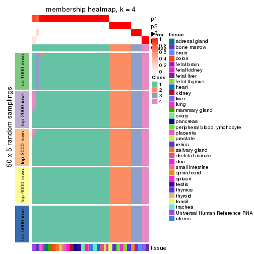
membership_heatmap(res, k = 5)
membership_heatmap(res, k = 6)
As soon as we have had the classes for columns, we can look for signatures which are significantly different between classes which can be candidate marks for certain classes. Following are the heatmaps for signatures.
Signature heatmaps where rows are scaled:
get_signatures(res, k = 2)
get_signatures(res, k = 3)
get_signatures(res, k = 4)
get_signatures(res, k = 5)
get_signatures(res, k = 6)
Signature heatmaps where rows are not scaled:
get_signatures(res, k = 2, scale_rows = FALSE)
get_signatures(res, k = 3, scale_rows = FALSE)
get_signatures(res, k = 4, scale_rows = FALSE)
get_signatures(res, k = 5, scale_rows = FALSE)
get_signatures(res, k = 6, scale_rows = FALSE)
Compare the overlap of signatures from different k:
compare_signatures(res)
get_signature() returns a data frame invisibly. TO get the list of signatures, the function
call should be assigned to a variable explicitly. In following code, if plot argument is set
to FALSE, no heatmap is plotted while only the differential analysis is performed.
# code only for demonstration
tb = get_signature(res, k = ..., plot = FALSE)
An example of the output of tb is:
#> which_row fdr mean_1 mean_2 scaled_mean_1 scaled_mean_2 km
#> 1 38 0.042760348 8.373488 9.131774 -0.5533452 0.5164555 1
#> 2 40 0.018707592 7.106213 8.469186 -0.6173731 0.5762149 1
#> 3 55 0.019134737 10.221463 11.207825 -0.6159697 0.5749050 1
#> 4 59 0.006059896 5.921854 7.869574 -0.6899429 0.6439467 1
#> 5 60 0.018055526 8.928898 10.211722 -0.6204761 0.5791110 1
#> 6 98 0.009384629 15.714769 14.887706 0.6635654 -0.6193277 2
...
The columns in tb are:
which_row: row indices corresponding to the input matrix.fdr: FDR for the differential test. mean_x: The mean value in group x.scaled_mean_x: The mean value in group x after rows are scaled.km: Row groups if k-means clustering is applied to rows.UMAP plot which shows how samples are separated.
dimension_reduction(res, k = 2, method = "UMAP")
dimension_reduction(res, k = 3, method = "UMAP")
dimension_reduction(res, k = 4, method = "UMAP")
dimension_reduction(res, k = 5, method = "UMAP")
dimension_reduction(res, k = 6, method = "UMAP")
Following heatmap shows how subgroups are split when increasing k:
collect_classes(res)
Test correlation between subgroups and known annotations. If the known annotation is numeric, one-way ANOVA test is applied, and if the known annotation is discrete, chi-squared contingency table test is applied.
test_to_known_factors(res)
#> n tissue(p) k
#> CV:pam 95 2.05e-08 2
#> CV:pam 96 3.25e-15 3
#> CV:pam 96 8.36e-22 4
#> CV:pam 93 1.40e-27 5
#> CV:pam 78 1.23e-23 6
If matrix rows can be associated to genes, consider to use functional_enrichment(res,
...) to perform function enrichment for the signature genes. See this vignette for more detailed explanations.
The object with results only for a single top-value method and a single partition method can be extracted as:
res = res_list["CV", "mclust"]
# you can also extract it by
# res = res_list["CV:mclust"]
A summary of res and all the functions that can be applied to it:
res
#> A 'ConsensusPartition' object with k = 2, 3, 4, 5, 6.
#> On a matrix with 31234 rows and 96 columns.
#> Top rows (1000, 2000, 3000, 4000, 5000) are extracted by 'CV' method.
#> Subgroups are detected by 'mclust' method.
#> Performed in total 1250 partitions by row resampling.
#> Best k for subgroups seems to be 6.
#>
#> Following methods can be applied to this 'ConsensusPartition' object:
#> [1] "cola_report" "collect_classes" "collect_plots"
#> [4] "collect_stats" "colnames" "compare_signatures"
#> [7] "consensus_heatmap" "dimension_reduction" "functional_enrichment"
#> [10] "get_anno_col" "get_anno" "get_classes"
#> [13] "get_consensus" "get_matrix" "get_membership"
#> [16] "get_param" "get_signatures" "get_stats"
#> [19] "is_best_k" "is_stable_k" "membership_heatmap"
#> [22] "ncol" "nrow" "plot_ecdf"
#> [25] "rownames" "select_partition_number" "show"
#> [28] "suggest_best_k" "test_to_known_factors"
collect_plots() function collects all the plots made from res for all k (number of partitions)
into one single page to provide an easy and fast comparison between different k.
collect_plots(res)
The plots are:
k and the heatmap of
predicted classes for each k.k.k.k.All the plots in panels can be made by individual functions and they are plotted later in this section.
select_partition_number() produces several plots showing different
statistics for choosing “optimized” k. There are following statistics:
k;k, the area increased is defined as \(A_k - A_{k-1}\).The detailed explanations of these statistics can be found in the cola vignette.
Generally speaking, lower PAC score, higher mean silhouette score or higher
concordance corresponds to better partition. Rand index and Jaccard index
measure how similar the current partition is compared to partition with k-1.
If they are too similar, we won't accept k is better than k-1.
select_partition_number(res)
The numeric values for all these statistics can be obtained by get_stats().
get_stats(res)
#> k 1-PAC mean_silhouette concordance area_increased Rand Jaccard
#> 2 2 0.497 0.825 0.885 0.3980 0.591 0.591
#> 3 3 0.491 0.686 0.822 0.5590 0.674 0.491
#> 4 4 0.655 0.773 0.845 0.1323 0.746 0.429
#> 5 5 0.923 0.927 0.944 0.0693 0.858 0.563
#> 6 6 0.972 0.908 0.951 0.0399 0.982 0.925
suggest_best_k() suggests the best \(k\) based on these statistics. The rules are as follows:
suggest_best_k(res)
#> [1] 6
#> attr(,"optional")
#> [1] 5
There is also optional best \(k\) = 5 that is worth to check.
Following shows the table of the partitions (You need to click the show/hide
code output link to see it). The membership matrix (columns with name p*)
is inferred by
clue::cl_consensus()
function with the SE method. Basically the value in the membership matrix
represents the probability to belong to a certain group. The finall class
label for an item is determined with the group with highest probability it
belongs to.
In get_classes() function, the entropy is calculated from the membership
matrix and the silhouette score is calculated from the consensus matrix.
cbind(get_classes(res, k = 2), get_membership(res, k = 2))
#> class entropy silhouette p1 p2
#> GSM194459 1 0.2236 0.894 0.964 0.036
#> GSM194460 1 0.2236 0.894 0.964 0.036
#> GSM194461 1 0.2236 0.894 0.964 0.036
#> GSM194462 1 0.6438 0.816 0.836 0.164
#> GSM194463 1 0.6438 0.816 0.836 0.164
#> GSM194464 1 0.6438 0.816 0.836 0.164
#> GSM194465 1 0.2236 0.894 0.964 0.036
#> GSM194466 1 0.2236 0.894 0.964 0.036
#> GSM194467 1 0.2236 0.894 0.964 0.036
#> GSM194468 1 0.7219 0.784 0.800 0.200
#> GSM194469 1 0.7219 0.784 0.800 0.200
#> GSM194470 1 0.7219 0.784 0.800 0.200
#> GSM194471 2 0.9686 0.609 0.396 0.604
#> GSM194472 2 0.9686 0.609 0.396 0.604
#> GSM194473 2 0.9686 0.609 0.396 0.604
#> GSM194474 2 0.9686 0.609 0.396 0.604
#> GSM194475 2 0.9686 0.609 0.396 0.604
#> GSM194476 2 0.9686 0.609 0.396 0.604
#> GSM194477 1 0.0000 0.902 1.000 0.000
#> GSM194478 1 0.0000 0.902 1.000 0.000
#> GSM194479 1 0.0000 0.902 1.000 0.000
#> GSM194480 1 0.3274 0.881 0.940 0.060
#> GSM194481 1 0.3274 0.881 0.940 0.060
#> GSM194482 1 0.3274 0.881 0.940 0.060
#> GSM194483 1 0.3274 0.881 0.940 0.060
#> GSM194484 1 0.3274 0.881 0.940 0.060
#> GSM194485 1 0.3274 0.881 0.940 0.060
#> GSM194486 2 0.9686 0.609 0.396 0.604
#> GSM194487 2 0.9686 0.609 0.396 0.604
#> GSM194488 2 0.9686 0.609 0.396 0.604
#> GSM194489 2 0.9248 0.572 0.340 0.660
#> GSM194490 2 0.9248 0.572 0.340 0.660
#> GSM194491 2 0.9248 0.572 0.340 0.660
#> GSM194492 1 0.6438 0.816 0.836 0.164
#> GSM194493 1 0.6438 0.816 0.836 0.164
#> GSM194494 1 0.6438 0.816 0.836 0.164
#> GSM194495 1 0.0000 0.902 1.000 0.000
#> GSM194496 1 0.0000 0.902 1.000 0.000
#> GSM194497 1 0.0000 0.902 1.000 0.000
#> GSM194498 1 0.0000 0.902 1.000 0.000
#> GSM194499 1 0.0000 0.902 1.000 0.000
#> GSM194500 1 0.0000 0.902 1.000 0.000
#> GSM194501 1 0.0000 0.902 1.000 0.000
#> GSM194502 1 0.0000 0.902 1.000 0.000
#> GSM194503 1 0.0000 0.902 1.000 0.000
#> GSM194504 1 0.3431 0.878 0.936 0.064
#> GSM194505 1 0.3431 0.878 0.936 0.064
#> GSM194506 1 0.3431 0.878 0.936 0.064
#> GSM194507 1 0.3584 0.875 0.932 0.068
#> GSM194508 1 0.3584 0.875 0.932 0.068
#> GSM194509 1 0.3584 0.875 0.932 0.068
#> GSM194510 1 0.6712 0.808 0.824 0.176
#> GSM194511 1 0.6712 0.808 0.824 0.176
#> GSM194512 1 0.6712 0.808 0.824 0.176
#> GSM194513 2 0.0000 0.811 0.000 1.000
#> GSM194514 2 0.0000 0.811 0.000 1.000
#> GSM194515 2 0.0000 0.811 0.000 1.000
#> GSM194516 2 0.0000 0.811 0.000 1.000
#> GSM194517 2 0.0000 0.811 0.000 1.000
#> GSM194518 2 0.0000 0.811 0.000 1.000
#> GSM194519 1 0.6712 0.808 0.824 0.176
#> GSM194520 1 0.6712 0.808 0.824 0.176
#> GSM194521 1 0.6712 0.808 0.824 0.176
#> GSM194522 1 0.6712 0.808 0.824 0.176
#> GSM194523 1 0.6712 0.808 0.824 0.176
#> GSM194524 1 0.6712 0.808 0.824 0.176
#> GSM194525 1 0.0672 0.902 0.992 0.008
#> GSM194526 1 0.0938 0.901 0.988 0.012
#> GSM194527 1 0.1414 0.900 0.980 0.020
#> GSM194528 1 0.0000 0.902 1.000 0.000
#> GSM194529 1 0.0000 0.902 1.000 0.000
#> GSM194530 1 0.0000 0.902 1.000 0.000
#> GSM194531 1 0.5408 0.846 0.876 0.124
#> GSM194532 1 0.5946 0.832 0.856 0.144
#> GSM194533 1 0.5408 0.846 0.876 0.124
#> GSM194534 1 0.0000 0.902 1.000 0.000
#> GSM194535 1 0.0000 0.902 1.000 0.000
#> GSM194536 1 0.0000 0.902 1.000 0.000
#> GSM194537 1 0.0000 0.902 1.000 0.000
#> GSM194538 1 0.0000 0.902 1.000 0.000
#> GSM194539 1 0.0000 0.902 1.000 0.000
#> GSM194540 2 0.0000 0.811 0.000 1.000
#> GSM194541 2 0.0000 0.811 0.000 1.000
#> GSM194542 2 0.0000 0.811 0.000 1.000
#> GSM194543 1 0.3431 0.878 0.936 0.064
#> GSM194544 1 0.3431 0.878 0.936 0.064
#> GSM194545 1 0.3431 0.878 0.936 0.064
#> GSM194546 2 0.0000 0.811 0.000 1.000
#> GSM194547 2 0.0000 0.811 0.000 1.000
#> GSM194548 2 0.0000 0.811 0.000 1.000
#> GSM194549 2 0.0000 0.811 0.000 1.000
#> GSM194550 2 0.0000 0.811 0.000 1.000
#> GSM194551 2 0.0000 0.811 0.000 1.000
#> GSM194552 1 0.3431 0.878 0.936 0.064
#> GSM194553 1 0.3431 0.878 0.936 0.064
#> GSM194554 1 0.3431 0.878 0.936 0.064
cbind(get_classes(res, k = 3), get_membership(res, k = 3))
#> class entropy silhouette p1 p2 p3
#> GSM194459 3 0.6180 0.400 0.416 0.000 0.584
#> GSM194460 3 0.6180 0.400 0.416 0.000 0.584
#> GSM194461 3 0.6180 0.400 0.416 0.000 0.584
#> GSM194462 1 0.7660 0.237 0.548 0.404 0.048
#> GSM194463 1 0.7660 0.237 0.548 0.404 0.048
#> GSM194464 1 0.7660 0.237 0.548 0.404 0.048
#> GSM194465 1 0.5859 0.222 0.656 0.000 0.344
#> GSM194466 1 0.5859 0.222 0.656 0.000 0.344
#> GSM194467 1 0.5859 0.222 0.656 0.000 0.344
#> GSM194468 3 0.4605 0.677 0.204 0.000 0.796
#> GSM194469 3 0.4605 0.677 0.204 0.000 0.796
#> GSM194470 3 0.4605 0.677 0.204 0.000 0.796
#> GSM194471 3 0.0000 0.899 0.000 0.000 1.000
#> GSM194472 3 0.0000 0.899 0.000 0.000 1.000
#> GSM194473 3 0.0000 0.899 0.000 0.000 1.000
#> GSM194474 3 0.0000 0.899 0.000 0.000 1.000
#> GSM194475 3 0.0000 0.899 0.000 0.000 1.000
#> GSM194476 3 0.0000 0.899 0.000 0.000 1.000
#> GSM194477 1 0.5178 0.705 0.744 0.000 0.256
#> GSM194478 1 0.5178 0.705 0.744 0.000 0.256
#> GSM194479 1 0.5178 0.705 0.744 0.000 0.256
#> GSM194480 3 0.0237 0.899 0.004 0.000 0.996
#> GSM194481 3 0.0237 0.899 0.004 0.000 0.996
#> GSM194482 3 0.0237 0.899 0.004 0.000 0.996
#> GSM194483 3 0.0237 0.899 0.004 0.000 0.996
#> GSM194484 3 0.0237 0.899 0.004 0.000 0.996
#> GSM194485 3 0.0237 0.899 0.004 0.000 0.996
#> GSM194486 3 0.0000 0.899 0.000 0.000 1.000
#> GSM194487 3 0.0000 0.899 0.000 0.000 1.000
#> GSM194488 3 0.0000 0.899 0.000 0.000 1.000
#> GSM194489 2 0.5859 0.500 0.344 0.656 0.000
#> GSM194490 2 0.5859 0.500 0.344 0.656 0.000
#> GSM194491 2 0.5859 0.500 0.344 0.656 0.000
#> GSM194492 1 0.7310 0.401 0.628 0.324 0.048
#> GSM194493 1 0.7310 0.401 0.628 0.324 0.048
#> GSM194494 1 0.7357 0.390 0.620 0.332 0.048
#> GSM194495 1 0.5948 0.618 0.640 0.000 0.360
#> GSM194496 1 0.5882 0.632 0.652 0.000 0.348
#> GSM194497 1 0.5926 0.622 0.644 0.000 0.356
#> GSM194498 1 0.5216 0.704 0.740 0.000 0.260
#> GSM194499 1 0.5216 0.704 0.740 0.000 0.260
#> GSM194500 1 0.5216 0.704 0.740 0.000 0.260
#> GSM194501 1 0.6355 0.689 0.696 0.024 0.280
#> GSM194502 1 0.6355 0.689 0.696 0.024 0.280
#> GSM194503 1 0.6420 0.682 0.688 0.024 0.288
#> GSM194504 3 0.0237 0.899 0.004 0.000 0.996
#> GSM194505 3 0.0237 0.899 0.004 0.000 0.996
#> GSM194506 3 0.0237 0.899 0.004 0.000 0.996
#> GSM194507 3 0.0237 0.899 0.004 0.000 0.996
#> GSM194508 3 0.0237 0.899 0.004 0.000 0.996
#> GSM194509 3 0.0237 0.899 0.004 0.000 0.996
#> GSM194510 1 0.5291 0.385 0.732 0.000 0.268
#> GSM194511 1 0.5291 0.385 0.732 0.000 0.268
#> GSM194512 1 0.5291 0.385 0.732 0.000 0.268
#> GSM194513 2 0.0000 0.929 0.000 1.000 0.000
#> GSM194514 2 0.0000 0.929 0.000 1.000 0.000
#> GSM194515 2 0.0000 0.929 0.000 1.000 0.000
#> GSM194516 2 0.0000 0.929 0.000 1.000 0.000
#> GSM194517 2 0.0000 0.929 0.000 1.000 0.000
#> GSM194518 2 0.0000 0.929 0.000 1.000 0.000
#> GSM194519 1 0.5291 0.385 0.732 0.000 0.268
#> GSM194520 1 0.5291 0.385 0.732 0.000 0.268
#> GSM194521 1 0.5291 0.385 0.732 0.000 0.268
#> GSM194522 1 0.5291 0.385 0.732 0.000 0.268
#> GSM194523 1 0.5291 0.385 0.732 0.000 0.268
#> GSM194524 1 0.5291 0.385 0.732 0.000 0.268
#> GSM194525 3 0.6305 -0.362 0.484 0.000 0.516
#> GSM194526 1 0.6309 0.373 0.504 0.000 0.496
#> GSM194527 1 0.6305 0.399 0.516 0.000 0.484
#> GSM194528 1 0.5216 0.704 0.740 0.000 0.260
#> GSM194529 1 0.5254 0.702 0.736 0.000 0.264
#> GSM194530 1 0.5254 0.702 0.736 0.000 0.264
#> GSM194531 1 0.7165 0.674 0.716 0.112 0.172
#> GSM194532 1 0.7165 0.674 0.716 0.112 0.172
#> GSM194533 1 0.7097 0.677 0.720 0.108 0.172
#> GSM194534 1 0.5178 0.705 0.744 0.000 0.256
#> GSM194535 1 0.5178 0.705 0.744 0.000 0.256
#> GSM194536 1 0.5178 0.705 0.744 0.000 0.256
#> GSM194537 1 0.5443 0.704 0.736 0.004 0.260
#> GSM194538 1 0.5443 0.704 0.736 0.004 0.260
#> GSM194539 1 0.5216 0.704 0.740 0.000 0.260
#> GSM194540 2 0.0000 0.929 0.000 1.000 0.000
#> GSM194541 2 0.0000 0.929 0.000 1.000 0.000
#> GSM194542 2 0.0000 0.929 0.000 1.000 0.000
#> GSM194543 3 0.0237 0.899 0.004 0.000 0.996
#> GSM194544 3 0.0237 0.899 0.004 0.000 0.996
#> GSM194545 3 0.0237 0.899 0.004 0.000 0.996
#> GSM194546 2 0.0000 0.929 0.000 1.000 0.000
#> GSM194547 2 0.0000 0.929 0.000 1.000 0.000
#> GSM194548 2 0.0000 0.929 0.000 1.000 0.000
#> GSM194549 2 0.0000 0.929 0.000 1.000 0.000
#> GSM194550 2 0.0000 0.929 0.000 1.000 0.000
#> GSM194551 2 0.0000 0.929 0.000 1.000 0.000
#> GSM194552 3 0.0000 0.899 0.000 0.000 1.000
#> GSM194553 3 0.0000 0.899 0.000 0.000 1.000
#> GSM194554 3 0.0000 0.899 0.000 0.000 1.000
cbind(get_classes(res, k = 4), get_membership(res, k = 4))
#> class entropy silhouette p1 p2 p3 p4
#> GSM194459 4 0.0000 0.746 0.000 0.000 0.000 1.000
#> GSM194460 4 0.0000 0.746 0.000 0.000 0.000 1.000
#> GSM194461 4 0.0000 0.746 0.000 0.000 0.000 1.000
#> GSM194462 1 0.0937 0.853 0.976 0.012 0.012 0.000
#> GSM194463 1 0.0937 0.853 0.976 0.012 0.012 0.000
#> GSM194464 1 0.0937 0.853 0.976 0.012 0.012 0.000
#> GSM194465 4 0.0000 0.746 0.000 0.000 0.000 1.000
#> GSM194466 4 0.0000 0.746 0.000 0.000 0.000 1.000
#> GSM194467 4 0.0000 0.746 0.000 0.000 0.000 1.000
#> GSM194468 4 0.6499 0.797 0.112 0.000 0.276 0.612
#> GSM194469 4 0.6499 0.797 0.112 0.000 0.276 0.612
#> GSM194470 4 0.6499 0.797 0.112 0.000 0.276 0.612
#> GSM194471 3 0.0336 0.786 0.000 0.000 0.992 0.008
#> GSM194472 3 0.0336 0.786 0.000 0.000 0.992 0.008
#> GSM194473 3 0.0336 0.786 0.000 0.000 0.992 0.008
#> GSM194474 3 0.0336 0.786 0.000 0.000 0.992 0.008
#> GSM194475 3 0.0336 0.786 0.000 0.000 0.992 0.008
#> GSM194476 3 0.0336 0.786 0.000 0.000 0.992 0.008
#> GSM194477 1 0.2408 0.873 0.896 0.000 0.104 0.000
#> GSM194478 1 0.2408 0.873 0.896 0.000 0.104 0.000
#> GSM194479 1 0.2408 0.873 0.896 0.000 0.104 0.000
#> GSM194480 3 0.2530 0.756 0.004 0.000 0.896 0.100
#> GSM194481 3 0.2530 0.756 0.004 0.000 0.896 0.100
#> GSM194482 3 0.2011 0.775 0.000 0.000 0.920 0.080
#> GSM194483 3 0.3088 0.721 0.008 0.000 0.864 0.128
#> GSM194484 3 0.3088 0.721 0.008 0.000 0.864 0.128
#> GSM194485 3 0.3088 0.721 0.008 0.000 0.864 0.128
#> GSM194486 3 0.0336 0.786 0.000 0.000 0.992 0.008
#> GSM194487 3 0.0336 0.786 0.000 0.000 0.992 0.008
#> GSM194488 3 0.0336 0.786 0.000 0.000 0.992 0.008
#> GSM194489 1 0.1637 0.829 0.940 0.060 0.000 0.000
#> GSM194490 1 0.1637 0.829 0.940 0.060 0.000 0.000
#> GSM194491 1 0.1637 0.829 0.940 0.060 0.000 0.000
#> GSM194492 1 0.0336 0.855 0.992 0.000 0.008 0.000
#> GSM194493 1 0.0336 0.855 0.992 0.000 0.008 0.000
#> GSM194494 1 0.0336 0.855 0.992 0.000 0.008 0.000
#> GSM194495 1 0.4746 0.547 0.632 0.000 0.368 0.000
#> GSM194496 1 0.4746 0.547 0.632 0.000 0.368 0.000
#> GSM194497 1 0.4746 0.547 0.632 0.000 0.368 0.000
#> GSM194498 3 0.4967 0.168 0.452 0.000 0.548 0.000
#> GSM194499 3 0.4967 0.168 0.452 0.000 0.548 0.000
#> GSM194500 3 0.4967 0.168 0.452 0.000 0.548 0.000
#> GSM194501 1 0.3356 0.841 0.824 0.000 0.176 0.000
#> GSM194502 1 0.3356 0.841 0.824 0.000 0.176 0.000
#> GSM194503 1 0.3356 0.841 0.824 0.000 0.176 0.000
#> GSM194504 3 0.1557 0.789 0.000 0.000 0.944 0.056
#> GSM194505 3 0.1557 0.789 0.000 0.000 0.944 0.056
#> GSM194506 3 0.1557 0.789 0.000 0.000 0.944 0.056
#> GSM194507 3 0.1824 0.790 0.004 0.000 0.936 0.060
#> GSM194508 3 0.1824 0.790 0.004 0.000 0.936 0.060
#> GSM194509 3 0.1824 0.790 0.004 0.000 0.936 0.060
#> GSM194510 4 0.6422 0.818 0.120 0.000 0.248 0.632
#> GSM194511 4 0.6422 0.818 0.120 0.000 0.248 0.632
#> GSM194512 4 0.6422 0.818 0.120 0.000 0.248 0.632
#> GSM194513 2 0.0000 1.000 0.000 1.000 0.000 0.000
#> GSM194514 2 0.0000 1.000 0.000 1.000 0.000 0.000
#> GSM194515 2 0.0000 1.000 0.000 1.000 0.000 0.000
#> GSM194516 2 0.0000 1.000 0.000 1.000 0.000 0.000
#> GSM194517 2 0.0000 1.000 0.000 1.000 0.000 0.000
#> GSM194518 2 0.0000 1.000 0.000 1.000 0.000 0.000
#> GSM194519 4 0.4807 0.829 0.024 0.000 0.248 0.728
#> GSM194520 4 0.4807 0.829 0.024 0.000 0.248 0.728
#> GSM194521 4 0.4807 0.829 0.024 0.000 0.248 0.728
#> GSM194522 4 0.5478 0.833 0.056 0.000 0.248 0.696
#> GSM194523 4 0.5478 0.833 0.056 0.000 0.248 0.696
#> GSM194524 4 0.5478 0.833 0.056 0.000 0.248 0.696
#> GSM194525 3 0.5835 0.332 0.372 0.000 0.588 0.040
#> GSM194526 3 0.5848 0.322 0.376 0.000 0.584 0.040
#> GSM194527 3 0.5848 0.322 0.376 0.000 0.584 0.040
#> GSM194528 1 0.2973 0.862 0.856 0.000 0.144 0.000
#> GSM194529 1 0.3528 0.820 0.808 0.000 0.192 0.000
#> GSM194530 1 0.3219 0.849 0.836 0.000 0.164 0.000
#> GSM194531 1 0.1716 0.872 0.936 0.000 0.064 0.000
#> GSM194532 1 0.1716 0.872 0.936 0.000 0.064 0.000
#> GSM194533 1 0.1716 0.872 0.936 0.000 0.064 0.000
#> GSM194534 3 0.4985 0.113 0.468 0.000 0.532 0.000
#> GSM194535 3 0.4985 0.113 0.468 0.000 0.532 0.000
#> GSM194536 3 0.4985 0.113 0.468 0.000 0.532 0.000
#> GSM194537 1 0.2814 0.869 0.868 0.000 0.132 0.000
#> GSM194538 1 0.2814 0.868 0.868 0.000 0.132 0.000
#> GSM194539 1 0.2921 0.864 0.860 0.000 0.140 0.000
#> GSM194540 2 0.0000 1.000 0.000 1.000 0.000 0.000
#> GSM194541 2 0.0000 1.000 0.000 1.000 0.000 0.000
#> GSM194542 2 0.0000 1.000 0.000 1.000 0.000 0.000
#> GSM194543 3 0.2149 0.768 0.000 0.000 0.912 0.088
#> GSM194544 3 0.1940 0.778 0.000 0.000 0.924 0.076
#> GSM194545 3 0.2149 0.768 0.000 0.000 0.912 0.088
#> GSM194546 2 0.0000 1.000 0.000 1.000 0.000 0.000
#> GSM194547 2 0.0000 1.000 0.000 1.000 0.000 0.000
#> GSM194548 2 0.0000 1.000 0.000 1.000 0.000 0.000
#> GSM194549 2 0.0000 1.000 0.000 1.000 0.000 0.000
#> GSM194550 2 0.0000 1.000 0.000 1.000 0.000 0.000
#> GSM194551 2 0.0000 1.000 0.000 1.000 0.000 0.000
#> GSM194552 3 0.1474 0.791 0.000 0.000 0.948 0.052
#> GSM194553 3 0.1474 0.791 0.000 0.000 0.948 0.052
#> GSM194554 3 0.1474 0.791 0.000 0.000 0.948 0.052
cbind(get_classes(res, k = 5), get_membership(res, k = 5))
#> class entropy silhouette p1 p2 p3 p4 p5
#> GSM194459 4 0.0000 0.705 0.000 0 0.000 1.000 0.000
#> GSM194460 4 0.0000 0.705 0.000 0 0.000 1.000 0.000
#> GSM194461 4 0.0000 0.705 0.000 0 0.000 1.000 0.000
#> GSM194462 1 0.0000 0.984 1.000 0 0.000 0.000 0.000
#> GSM194463 1 0.0000 0.984 1.000 0 0.000 0.000 0.000
#> GSM194464 1 0.0000 0.984 1.000 0 0.000 0.000 0.000
#> GSM194465 4 0.0000 0.705 0.000 0 0.000 1.000 0.000
#> GSM194466 4 0.0000 0.705 0.000 0 0.000 1.000 0.000
#> GSM194467 4 0.0000 0.705 0.000 0 0.000 1.000 0.000
#> GSM194468 4 0.4854 0.805 0.016 0 0.024 0.672 0.288
#> GSM194469 4 0.4854 0.805 0.016 0 0.024 0.672 0.288
#> GSM194470 4 0.4854 0.805 0.016 0 0.024 0.672 0.288
#> GSM194471 3 0.0000 0.861 0.000 0 1.000 0.000 0.000
#> GSM194472 3 0.0000 0.861 0.000 0 1.000 0.000 0.000
#> GSM194473 3 0.0000 0.861 0.000 0 1.000 0.000 0.000
#> GSM194474 3 0.0000 0.861 0.000 0 1.000 0.000 0.000
#> GSM194475 3 0.0000 0.861 0.000 0 1.000 0.000 0.000
#> GSM194476 3 0.0000 0.861 0.000 0 1.000 0.000 0.000
#> GSM194477 1 0.0000 0.984 1.000 0 0.000 0.000 0.000
#> GSM194478 1 0.0000 0.984 1.000 0 0.000 0.000 0.000
#> GSM194479 1 0.0000 0.984 1.000 0 0.000 0.000 0.000
#> GSM194480 5 0.0000 0.981 0.000 0 0.000 0.000 1.000
#> GSM194481 5 0.0000 0.981 0.000 0 0.000 0.000 1.000
#> GSM194482 5 0.0000 0.981 0.000 0 0.000 0.000 1.000
#> GSM194483 5 0.0000 0.981 0.000 0 0.000 0.000 1.000
#> GSM194484 5 0.0000 0.981 0.000 0 0.000 0.000 1.000
#> GSM194485 5 0.0000 0.981 0.000 0 0.000 0.000 1.000
#> GSM194486 3 0.3661 0.648 0.000 0 0.724 0.000 0.276
#> GSM194487 3 0.3661 0.648 0.000 0 0.724 0.000 0.276
#> GSM194488 3 0.3661 0.648 0.000 0 0.724 0.000 0.276
#> GSM194489 1 0.0000 0.984 1.000 0 0.000 0.000 0.000
#> GSM194490 1 0.0000 0.984 1.000 0 0.000 0.000 0.000
#> GSM194491 1 0.0000 0.984 1.000 0 0.000 0.000 0.000
#> GSM194492 1 0.0290 0.983 0.992 0 0.008 0.000 0.000
#> GSM194493 1 0.0290 0.983 0.992 0 0.008 0.000 0.000
#> GSM194494 1 0.0290 0.983 0.992 0 0.008 0.000 0.000
#> GSM194495 1 0.0703 0.977 0.976 0 0.024 0.000 0.000
#> GSM194496 1 0.0703 0.977 0.976 0 0.024 0.000 0.000
#> GSM194497 1 0.0703 0.977 0.976 0 0.024 0.000 0.000
#> GSM194498 1 0.0798 0.978 0.976 0 0.016 0.000 0.008
#> GSM194499 1 0.0798 0.978 0.976 0 0.016 0.000 0.008
#> GSM194500 1 0.0798 0.978 0.976 0 0.016 0.000 0.008
#> GSM194501 1 0.0000 0.984 1.000 0 0.000 0.000 0.000
#> GSM194502 1 0.0000 0.984 1.000 0 0.000 0.000 0.000
#> GSM194503 1 0.0000 0.984 1.000 0 0.000 0.000 0.000
#> GSM194504 5 0.0162 0.981 0.000 0 0.000 0.004 0.996
#> GSM194505 5 0.0162 0.981 0.000 0 0.000 0.004 0.996
#> GSM194506 5 0.0162 0.981 0.000 0 0.000 0.004 0.996
#> GSM194507 5 0.1281 0.961 0.000 0 0.032 0.012 0.956
#> GSM194508 5 0.1281 0.961 0.000 0 0.032 0.012 0.956
#> GSM194509 5 0.1281 0.961 0.000 0 0.032 0.012 0.956
#> GSM194510 4 0.4229 0.840 0.020 0 0.000 0.704 0.276
#> GSM194511 4 0.4229 0.840 0.020 0 0.000 0.704 0.276
#> GSM194512 4 0.4229 0.840 0.020 0 0.000 0.704 0.276
#> GSM194513 2 0.0000 1.000 0.000 1 0.000 0.000 0.000
#> GSM194514 2 0.0000 1.000 0.000 1 0.000 0.000 0.000
#> GSM194515 2 0.0000 1.000 0.000 1 0.000 0.000 0.000
#> GSM194516 2 0.0000 1.000 0.000 1 0.000 0.000 0.000
#> GSM194517 2 0.0000 1.000 0.000 1 0.000 0.000 0.000
#> GSM194518 2 0.0000 1.000 0.000 1 0.000 0.000 0.000
#> GSM194519 4 0.4229 0.840 0.020 0 0.000 0.704 0.276
#> GSM194520 4 0.4229 0.840 0.020 0 0.000 0.704 0.276
#> GSM194521 4 0.4229 0.840 0.020 0 0.000 0.704 0.276
#> GSM194522 4 0.4229 0.840 0.020 0 0.000 0.704 0.276
#> GSM194523 4 0.4229 0.840 0.020 0 0.000 0.704 0.276
#> GSM194524 4 0.4229 0.840 0.020 0 0.000 0.704 0.276
#> GSM194525 1 0.2649 0.911 0.900 0 0.016 0.048 0.036
#> GSM194526 1 0.2649 0.911 0.900 0 0.016 0.048 0.036
#> GSM194527 1 0.2575 0.915 0.904 0 0.016 0.044 0.036
#> GSM194528 1 0.0162 0.984 0.996 0 0.004 0.000 0.000
#> GSM194529 1 0.0290 0.984 0.992 0 0.008 0.000 0.000
#> GSM194530 1 0.0290 0.984 0.992 0 0.008 0.000 0.000
#> GSM194531 1 0.0290 0.984 0.992 0 0.008 0.000 0.000
#> GSM194532 1 0.0290 0.984 0.992 0 0.008 0.000 0.000
#> GSM194533 1 0.0290 0.984 0.992 0 0.008 0.000 0.000
#> GSM194534 1 0.0798 0.978 0.976 0 0.016 0.000 0.008
#> GSM194535 1 0.0798 0.978 0.976 0 0.016 0.000 0.008
#> GSM194536 1 0.0798 0.978 0.976 0 0.016 0.000 0.008
#> GSM194537 1 0.0162 0.984 0.996 0 0.004 0.000 0.000
#> GSM194538 1 0.0162 0.984 0.996 0 0.004 0.000 0.000
#> GSM194539 1 0.0162 0.984 0.996 0 0.004 0.000 0.000
#> GSM194540 2 0.0000 1.000 0.000 1 0.000 0.000 0.000
#> GSM194541 2 0.0000 1.000 0.000 1 0.000 0.000 0.000
#> GSM194542 2 0.0000 1.000 0.000 1 0.000 0.000 0.000
#> GSM194543 5 0.0162 0.981 0.000 0 0.000 0.004 0.996
#> GSM194544 5 0.0162 0.981 0.000 0 0.000 0.004 0.996
#> GSM194545 5 0.0162 0.981 0.000 0 0.000 0.004 0.996
#> GSM194546 2 0.0000 1.000 0.000 1 0.000 0.000 0.000
#> GSM194547 2 0.0000 1.000 0.000 1 0.000 0.000 0.000
#> GSM194548 2 0.0000 1.000 0.000 1 0.000 0.000 0.000
#> GSM194549 2 0.0000 1.000 0.000 1 0.000 0.000 0.000
#> GSM194550 2 0.0000 1.000 0.000 1 0.000 0.000 0.000
#> GSM194551 2 0.0000 1.000 0.000 1 0.000 0.000 0.000
#> GSM194552 5 0.1043 0.962 0.000 0 0.040 0.000 0.960
#> GSM194553 5 0.1043 0.962 0.000 0 0.040 0.000 0.960
#> GSM194554 5 0.1043 0.962 0.000 0 0.040 0.000 0.960
cbind(get_classes(res, k = 6), get_membership(res, k = 6))
#> class entropy silhouette p1 p2 p3 p4 p5 p6
#> GSM194459 4 0.0000 0.737 0.000 0 0.000 1.000 0.000 0.000
#> GSM194460 4 0.0000 0.737 0.000 0 0.000 1.000 0.000 0.000
#> GSM194461 4 0.0000 0.737 0.000 0 0.000 1.000 0.000 0.000
#> GSM194462 1 0.0508 0.957 0.984 0 0.004 0.000 0.000 0.012
#> GSM194463 1 0.0508 0.957 0.984 0 0.004 0.000 0.000 0.012
#> GSM194464 1 0.0508 0.957 0.984 0 0.004 0.000 0.000 0.012
#> GSM194465 4 0.0000 0.737 0.000 0 0.000 1.000 0.000 0.000
#> GSM194466 4 0.0000 0.737 0.000 0 0.000 1.000 0.000 0.000
#> GSM194467 4 0.0000 0.737 0.000 0 0.000 1.000 0.000 0.000
#> GSM194468 4 0.6592 0.289 0.000 0 0.024 0.356 0.284 0.336
#> GSM194469 4 0.6592 0.289 0.000 0 0.024 0.356 0.284 0.336
#> GSM194470 4 0.6592 0.289 0.000 0 0.024 0.356 0.284 0.336
#> GSM194471 3 0.0000 0.846 0.000 0 1.000 0.000 0.000 0.000
#> GSM194472 3 0.0000 0.846 0.000 0 1.000 0.000 0.000 0.000
#> GSM194473 3 0.0000 0.846 0.000 0 1.000 0.000 0.000 0.000
#> GSM194474 3 0.0000 0.846 0.000 0 1.000 0.000 0.000 0.000
#> GSM194475 3 0.0000 0.846 0.000 0 1.000 0.000 0.000 0.000
#> GSM194476 3 0.0000 0.846 0.000 0 1.000 0.000 0.000 0.000
#> GSM194477 1 0.0146 0.958 0.996 0 0.000 0.000 0.000 0.004
#> GSM194478 1 0.0146 0.958 0.996 0 0.000 0.000 0.000 0.004
#> GSM194479 1 0.0146 0.958 0.996 0 0.000 0.000 0.000 0.004
#> GSM194480 5 0.0000 0.981 0.000 0 0.000 0.000 1.000 0.000
#> GSM194481 5 0.0000 0.981 0.000 0 0.000 0.000 1.000 0.000
#> GSM194482 5 0.0000 0.981 0.000 0 0.000 0.000 1.000 0.000
#> GSM194483 5 0.0000 0.981 0.000 0 0.000 0.000 1.000 0.000
#> GSM194484 5 0.0000 0.981 0.000 0 0.000 0.000 1.000 0.000
#> GSM194485 5 0.0000 0.981 0.000 0 0.000 0.000 1.000 0.000
#> GSM194486 3 0.3288 0.668 0.000 0 0.724 0.000 0.276 0.000
#> GSM194487 3 0.3288 0.668 0.000 0 0.724 0.000 0.276 0.000
#> GSM194488 3 0.3288 0.668 0.000 0 0.724 0.000 0.276 0.000
#> GSM194489 1 0.0458 0.956 0.984 0 0.000 0.000 0.000 0.016
#> GSM194490 1 0.0458 0.956 0.984 0 0.000 0.000 0.000 0.016
#> GSM194491 1 0.0458 0.956 0.984 0 0.000 0.000 0.000 0.016
#> GSM194492 1 0.0717 0.953 0.976 0 0.016 0.000 0.000 0.008
#> GSM194493 1 0.0717 0.953 0.976 0 0.016 0.000 0.000 0.008
#> GSM194494 1 0.0717 0.953 0.976 0 0.016 0.000 0.000 0.008
#> GSM194495 1 0.0891 0.953 0.968 0 0.024 0.000 0.008 0.000
#> GSM194496 1 0.0891 0.953 0.968 0 0.024 0.000 0.008 0.000
#> GSM194497 1 0.0891 0.953 0.968 0 0.024 0.000 0.008 0.000
#> GSM194498 1 0.1059 0.951 0.964 0 0.016 0.000 0.016 0.004
#> GSM194499 1 0.1059 0.951 0.964 0 0.016 0.000 0.016 0.004
#> GSM194500 1 0.1059 0.951 0.964 0 0.016 0.000 0.016 0.004
#> GSM194501 1 0.0146 0.958 0.996 0 0.000 0.000 0.000 0.004
#> GSM194502 1 0.0146 0.958 0.996 0 0.000 0.000 0.000 0.004
#> GSM194503 1 0.0146 0.958 0.996 0 0.000 0.000 0.000 0.004
#> GSM194504 5 0.0000 0.981 0.000 0 0.000 0.000 1.000 0.000
#> GSM194505 5 0.0000 0.981 0.000 0 0.000 0.000 1.000 0.000
#> GSM194506 5 0.0000 0.981 0.000 0 0.000 0.000 1.000 0.000
#> GSM194507 5 0.1418 0.952 0.000 0 0.032 0.000 0.944 0.024
#> GSM194508 5 0.1418 0.952 0.000 0 0.032 0.000 0.944 0.024
#> GSM194509 5 0.1418 0.952 0.000 0 0.032 0.000 0.944 0.024
#> GSM194510 6 0.0405 0.995 0.000 0 0.000 0.004 0.008 0.988
#> GSM194511 6 0.0405 0.995 0.000 0 0.000 0.004 0.008 0.988
#> GSM194512 6 0.0260 0.998 0.000 0 0.000 0.000 0.008 0.992
#> GSM194513 2 0.0000 1.000 0.000 1 0.000 0.000 0.000 0.000
#> GSM194514 2 0.0000 1.000 0.000 1 0.000 0.000 0.000 0.000
#> GSM194515 2 0.0000 1.000 0.000 1 0.000 0.000 0.000 0.000
#> GSM194516 2 0.0000 1.000 0.000 1 0.000 0.000 0.000 0.000
#> GSM194517 2 0.0000 1.000 0.000 1 0.000 0.000 0.000 0.000
#> GSM194518 2 0.0000 1.000 0.000 1 0.000 0.000 0.000 0.000
#> GSM194519 6 0.0260 0.998 0.000 0 0.000 0.000 0.008 0.992
#> GSM194520 6 0.0260 0.998 0.000 0 0.000 0.000 0.008 0.992
#> GSM194521 6 0.0260 0.998 0.000 0 0.000 0.000 0.008 0.992
#> GSM194522 6 0.0260 0.998 0.000 0 0.000 0.000 0.008 0.992
#> GSM194523 6 0.0260 0.998 0.000 0 0.000 0.000 0.008 0.992
#> GSM194524 6 0.0260 0.998 0.000 0 0.000 0.000 0.008 0.992
#> GSM194525 1 0.4686 0.601 0.676 0 0.016 0.000 0.056 0.252
#> GSM194526 1 0.4686 0.601 0.676 0 0.016 0.000 0.056 0.252
#> GSM194527 1 0.4629 0.607 0.680 0 0.016 0.000 0.052 0.252
#> GSM194528 1 0.0405 0.958 0.988 0 0.004 0.000 0.008 0.000
#> GSM194529 1 0.0520 0.958 0.984 0 0.008 0.000 0.008 0.000
#> GSM194530 1 0.0520 0.958 0.984 0 0.008 0.000 0.008 0.000
#> GSM194531 1 0.0405 0.958 0.988 0 0.008 0.000 0.004 0.000
#> GSM194532 1 0.0405 0.958 0.988 0 0.008 0.000 0.004 0.000
#> GSM194533 1 0.0405 0.958 0.988 0 0.008 0.000 0.004 0.000
#> GSM194534 1 0.0914 0.952 0.968 0 0.016 0.000 0.016 0.000
#> GSM194535 1 0.0914 0.952 0.968 0 0.016 0.000 0.016 0.000
#> GSM194536 1 0.0914 0.952 0.968 0 0.016 0.000 0.016 0.000
#> GSM194537 1 0.0436 0.959 0.988 0 0.004 0.000 0.004 0.004
#> GSM194538 1 0.0291 0.959 0.992 0 0.004 0.000 0.004 0.000
#> GSM194539 1 0.0291 0.959 0.992 0 0.004 0.000 0.004 0.000
#> GSM194540 2 0.0000 1.000 0.000 1 0.000 0.000 0.000 0.000
#> GSM194541 2 0.0000 1.000 0.000 1 0.000 0.000 0.000 0.000
#> GSM194542 2 0.0000 1.000 0.000 1 0.000 0.000 0.000 0.000
#> GSM194543 5 0.0000 0.981 0.000 0 0.000 0.000 1.000 0.000
#> GSM194544 5 0.0000 0.981 0.000 0 0.000 0.000 1.000 0.000
#> GSM194545 5 0.0000 0.981 0.000 0 0.000 0.000 1.000 0.000
#> GSM194546 2 0.0000 1.000 0.000 1 0.000 0.000 0.000 0.000
#> GSM194547 2 0.0000 1.000 0.000 1 0.000 0.000 0.000 0.000
#> GSM194548 2 0.0000 1.000 0.000 1 0.000 0.000 0.000 0.000
#> GSM194549 2 0.0000 1.000 0.000 1 0.000 0.000 0.000 0.000
#> GSM194550 2 0.0000 1.000 0.000 1 0.000 0.000 0.000 0.000
#> GSM194551 2 0.0000 1.000 0.000 1 0.000 0.000 0.000 0.000
#> GSM194552 5 0.0937 0.959 0.000 0 0.040 0.000 0.960 0.000
#> GSM194553 5 0.0937 0.959 0.000 0 0.040 0.000 0.960 0.000
#> GSM194554 5 0.0937 0.959 0.000 0 0.040 0.000 0.960 0.000
Heatmaps for the consensus matrix. It visualizes the probability of two samples to be in a same group.
consensus_heatmap(res, k = 2)
consensus_heatmap(res, k = 3)
consensus_heatmap(res, k = 4)
consensus_heatmap(res, k = 5)
consensus_heatmap(res, k = 6)
Heatmaps for the membership of samples in all partitions to see how consistent they are:
membership_heatmap(res, k = 2)
membership_heatmap(res, k = 3)
membership_heatmap(res, k = 4)
membership_heatmap(res, k = 5)
membership_heatmap(res, k = 6)
As soon as we have had the classes for columns, we can look for signatures which are significantly different between classes which can be candidate marks for certain classes. Following are the heatmaps for signatures.
Signature heatmaps where rows are scaled:
get_signatures(res, k = 2)
get_signatures(res, k = 3)
get_signatures(res, k = 4)
get_signatures(res, k = 5)
get_signatures(res, k = 6)
Signature heatmaps where rows are not scaled:
get_signatures(res, k = 2, scale_rows = FALSE)
get_signatures(res, k = 3, scale_rows = FALSE)
get_signatures(res, k = 4, scale_rows = FALSE)
get_signatures(res, k = 5, scale_rows = FALSE)
get_signatures(res, k = 6, scale_rows = FALSE)
Compare the overlap of signatures from different k:
compare_signatures(res)
get_signature() returns a data frame invisibly. TO get the list of signatures, the function
call should be assigned to a variable explicitly. In following code, if plot argument is set
to FALSE, no heatmap is plotted while only the differential analysis is performed.
# code only for demonstration
tb = get_signature(res, k = ..., plot = FALSE)
An example of the output of tb is:
#> which_row fdr mean_1 mean_2 scaled_mean_1 scaled_mean_2 km
#> 1 38 0.042760348 8.373488 9.131774 -0.5533452 0.5164555 1
#> 2 40 0.018707592 7.106213 8.469186 -0.6173731 0.5762149 1
#> 3 55 0.019134737 10.221463 11.207825 -0.6159697 0.5749050 1
#> 4 59 0.006059896 5.921854 7.869574 -0.6899429 0.6439467 1
#> 5 60 0.018055526 8.928898 10.211722 -0.6204761 0.5791110 1
#> 6 98 0.009384629 15.714769 14.887706 0.6635654 -0.6193277 2
...
The columns in tb are:
which_row: row indices corresponding to the input matrix.fdr: FDR for the differential test. mean_x: The mean value in group x.scaled_mean_x: The mean value in group x after rows are scaled.km: Row groups if k-means clustering is applied to rows.UMAP plot which shows how samples are separated.
dimension_reduction(res, k = 2, method = "UMAP")
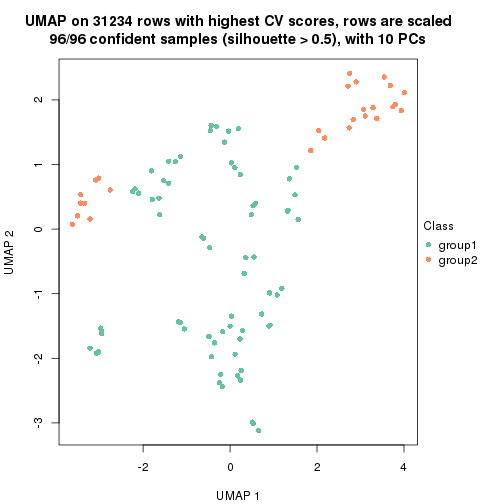
dimension_reduction(res, k = 3, method = "UMAP")
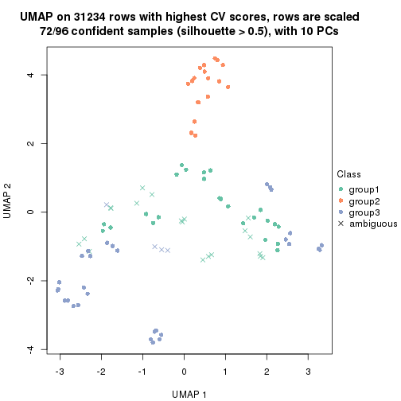
dimension_reduction(res, k = 4, method = "UMAP")
dimension_reduction(res, k = 5, method = "UMAP")
dimension_reduction(res, k = 6, method = "UMAP")

Following heatmap shows how subgroups are split when increasing k:
collect_classes(res)
Test correlation between subgroups and known annotations. If the known annotation is numeric, one-way ANOVA test is applied, and if the known annotation is discrete, chi-squared contingency table test is applied.
test_to_known_factors(res)
#> n tissue(p) k
#> CV:mclust 96 1.44e-08 2
#> CV:mclust 72 4.97e-12 3
#> CV:mclust 87 5.03e-20 4
#> CV:mclust 96 2.27e-28 5
#> CV:mclust 93 6.13e-34 6
If matrix rows can be associated to genes, consider to use functional_enrichment(res,
...) to perform function enrichment for the signature genes. See this vignette for more detailed explanations.
The object with results only for a single top-value method and a single partition method can be extracted as:
res = res_list["CV", "NMF"]
# you can also extract it by
# res = res_list["CV:NMF"]
A summary of res and all the functions that can be applied to it:
res
#> A 'ConsensusPartition' object with k = 2, 3, 4, 5, 6.
#> On a matrix with 31234 rows and 96 columns.
#> Top rows (1000, 2000, 3000, 4000, 5000) are extracted by 'CV' method.
#> Subgroups are detected by 'NMF' method.
#> Performed in total 1250 partitions by row resampling.
#> Best k for subgroups seems to be 4.
#>
#> Following methods can be applied to this 'ConsensusPartition' object:
#> [1] "cola_report" "collect_classes" "collect_plots"
#> [4] "collect_stats" "colnames" "compare_signatures"
#> [7] "consensus_heatmap" "dimension_reduction" "functional_enrichment"
#> [10] "get_anno_col" "get_anno" "get_classes"
#> [13] "get_consensus" "get_matrix" "get_membership"
#> [16] "get_param" "get_signatures" "get_stats"
#> [19] "is_best_k" "is_stable_k" "membership_heatmap"
#> [22] "ncol" "nrow" "plot_ecdf"
#> [25] "rownames" "select_partition_number" "show"
#> [28] "suggest_best_k" "test_to_known_factors"
collect_plots() function collects all the plots made from res for all k (number of partitions)
into one single page to provide an easy and fast comparison between different k.
collect_plots(res)
The plots are:
k and the heatmap of
predicted classes for each k.k.k.k.All the plots in panels can be made by individual functions and they are plotted later in this section.
select_partition_number() produces several plots showing different
statistics for choosing “optimized” k. There are following statistics:
k;k, the area increased is defined as \(A_k - A_{k-1}\).The detailed explanations of these statistics can be found in the cola vignette.
Generally speaking, lower PAC score, higher mean silhouette score or higher
concordance corresponds to better partition. Rand index and Jaccard index
measure how similar the current partition is compared to partition with k-1.
If they are too similar, we won't accept k is better than k-1.
select_partition_number(res)
The numeric values for all these statistics can be obtained by get_stats().
get_stats(res)
#> k 1-PAC mean_silhouette concordance area_increased Rand Jaccard
#> 2 2 0.537 0.803 0.918 0.4928 0.503 0.503
#> 3 3 0.753 0.891 0.901 0.2650 0.651 0.438
#> 4 4 0.988 0.945 0.979 0.1789 0.836 0.601
#> 5 5 0.873 0.849 0.902 0.0514 0.961 0.858
#> 6 6 0.854 0.814 0.904 0.0477 0.908 0.649
suggest_best_k() suggests the best \(k\) based on these statistics. The rules are as follows:
suggest_best_k(res)
#> [1] 4
Following shows the table of the partitions (You need to click the show/hide
code output link to see it). The membership matrix (columns with name p*)
is inferred by
clue::cl_consensus()
function with the SE method. Basically the value in the membership matrix
represents the probability to belong to a certain group. The finall class
label for an item is determined with the group with highest probability it
belongs to.
In get_classes() function, the entropy is calculated from the membership
matrix and the silhouette score is calculated from the consensus matrix.
cbind(get_classes(res, k = 2), get_membership(res, k = 2))
#> class entropy silhouette p1 p2
#> GSM194459 2 0.730 0.7496 0.204 0.796
#> GSM194460 2 0.730 0.7496 0.204 0.796
#> GSM194461 2 0.730 0.7496 0.204 0.796
#> GSM194462 2 0.000 0.9037 0.000 1.000
#> GSM194463 2 0.000 0.9037 0.000 1.000
#> GSM194464 2 0.000 0.9037 0.000 1.000
#> GSM194465 2 0.745 0.7401 0.212 0.788
#> GSM194466 2 0.745 0.7401 0.212 0.788
#> GSM194467 2 0.745 0.7401 0.212 0.788
#> GSM194468 2 0.730 0.7496 0.204 0.796
#> GSM194469 2 0.738 0.7448 0.208 0.792
#> GSM194470 2 0.730 0.7496 0.204 0.796
#> GSM194471 1 0.000 0.8991 1.000 0.000
#> GSM194472 1 0.000 0.8991 1.000 0.000
#> GSM194473 1 0.000 0.8991 1.000 0.000
#> GSM194474 1 0.000 0.8991 1.000 0.000
#> GSM194475 1 0.000 0.8991 1.000 0.000
#> GSM194476 1 0.000 0.8991 1.000 0.000
#> GSM194477 1 0.983 0.3432 0.576 0.424
#> GSM194478 1 0.971 0.4038 0.600 0.400
#> GSM194479 1 0.980 0.3645 0.584 0.416
#> GSM194480 1 0.000 0.8991 1.000 0.000
#> GSM194481 1 0.000 0.8991 1.000 0.000
#> GSM194482 1 0.000 0.8991 1.000 0.000
#> GSM194483 1 0.000 0.8991 1.000 0.000
#> GSM194484 1 0.000 0.8991 1.000 0.000
#> GSM194485 1 0.000 0.8991 1.000 0.000
#> GSM194486 1 0.000 0.8991 1.000 0.000
#> GSM194487 1 0.000 0.8991 1.000 0.000
#> GSM194488 1 0.000 0.8991 1.000 0.000
#> GSM194489 2 0.000 0.9037 0.000 1.000
#> GSM194490 2 0.000 0.9037 0.000 1.000
#> GSM194491 2 0.000 0.9037 0.000 1.000
#> GSM194492 2 0.000 0.9037 0.000 1.000
#> GSM194493 2 0.000 0.9037 0.000 1.000
#> GSM194494 2 0.000 0.9037 0.000 1.000
#> GSM194495 1 0.760 0.6960 0.780 0.220
#> GSM194496 1 0.753 0.6999 0.784 0.216
#> GSM194497 1 0.730 0.7102 0.796 0.204
#> GSM194498 2 0.000 0.9037 0.000 1.000
#> GSM194499 2 0.000 0.9037 0.000 1.000
#> GSM194500 2 0.000 0.9037 0.000 1.000
#> GSM194501 2 0.469 0.8345 0.100 0.900
#> GSM194502 2 0.373 0.8582 0.072 0.928
#> GSM194503 2 0.402 0.8520 0.080 0.920
#> GSM194504 1 0.000 0.8991 1.000 0.000
#> GSM194505 1 0.000 0.8991 1.000 0.000
#> GSM194506 1 0.000 0.8991 1.000 0.000
#> GSM194507 1 0.000 0.8991 1.000 0.000
#> GSM194508 1 0.000 0.8991 1.000 0.000
#> GSM194509 1 0.000 0.8991 1.000 0.000
#> GSM194510 1 0.988 0.1554 0.564 0.436
#> GSM194511 1 0.994 0.0813 0.544 0.456
#> GSM194512 1 0.998 0.0155 0.528 0.472
#> GSM194513 2 0.000 0.9037 0.000 1.000
#> GSM194514 2 0.000 0.9037 0.000 1.000
#> GSM194515 2 0.000 0.9037 0.000 1.000
#> GSM194516 2 0.000 0.9037 0.000 1.000
#> GSM194517 2 0.000 0.9037 0.000 1.000
#> GSM194518 2 0.000 0.9037 0.000 1.000
#> GSM194519 1 0.552 0.7926 0.872 0.128
#> GSM194520 1 0.529 0.8012 0.880 0.120
#> GSM194521 1 0.529 0.8012 0.880 0.120
#> GSM194522 1 0.000 0.8991 1.000 0.000
#> GSM194523 1 0.000 0.8991 1.000 0.000
#> GSM194524 1 0.000 0.8991 1.000 0.000
#> GSM194525 2 0.605 0.8073 0.148 0.852
#> GSM194526 2 0.506 0.8352 0.112 0.888
#> GSM194527 2 0.595 0.8091 0.144 0.856
#> GSM194528 2 0.981 0.1784 0.420 0.580
#> GSM194529 2 0.998 -0.0391 0.476 0.524
#> GSM194530 2 0.988 0.1214 0.436 0.564
#> GSM194531 2 0.000 0.9037 0.000 1.000
#> GSM194532 2 0.000 0.9037 0.000 1.000
#> GSM194533 2 0.000 0.9037 0.000 1.000
#> GSM194534 2 0.000 0.9037 0.000 1.000
#> GSM194535 2 0.000 0.9037 0.000 1.000
#> GSM194536 2 0.000 0.9037 0.000 1.000
#> GSM194537 2 0.541 0.8108 0.124 0.876
#> GSM194538 2 0.541 0.8107 0.124 0.876
#> GSM194539 2 0.552 0.8062 0.128 0.872
#> GSM194540 2 0.000 0.9037 0.000 1.000
#> GSM194541 2 0.000 0.9037 0.000 1.000
#> GSM194542 2 0.000 0.9037 0.000 1.000
#> GSM194543 1 0.000 0.8991 1.000 0.000
#> GSM194544 1 0.000 0.8991 1.000 0.000
#> GSM194545 1 0.000 0.8991 1.000 0.000
#> GSM194546 2 0.000 0.9037 0.000 1.000
#> GSM194547 2 0.000 0.9037 0.000 1.000
#> GSM194548 2 0.000 0.9037 0.000 1.000
#> GSM194549 2 0.000 0.9037 0.000 1.000
#> GSM194550 2 0.000 0.9037 0.000 1.000
#> GSM194551 2 0.000 0.9037 0.000 1.000
#> GSM194552 1 0.000 0.8991 1.000 0.000
#> GSM194553 1 0.000 0.8991 1.000 0.000
#> GSM194554 1 0.000 0.8991 1.000 0.000
cbind(get_classes(res, k = 3), get_membership(res, k = 3))
#> class entropy silhouette p1 p2 p3
#> GSM194459 1 0.1753 0.831 0.952 0.000 0.048
#> GSM194460 1 0.1753 0.831 0.952 0.000 0.048
#> GSM194461 1 0.1753 0.831 0.952 0.000 0.048
#> GSM194462 1 0.5138 0.779 0.748 0.252 0.000
#> GSM194463 1 0.5363 0.747 0.724 0.276 0.000
#> GSM194464 1 0.5058 0.788 0.756 0.244 0.000
#> GSM194465 1 0.1753 0.831 0.952 0.000 0.048
#> GSM194466 1 0.1753 0.831 0.952 0.000 0.048
#> GSM194467 1 0.1753 0.831 0.952 0.000 0.048
#> GSM194468 1 0.7582 0.200 0.572 0.380 0.048
#> GSM194469 1 0.7648 0.134 0.552 0.400 0.048
#> GSM194470 1 0.7517 0.249 0.588 0.364 0.048
#> GSM194471 3 0.0000 0.984 0.000 0.000 1.000
#> GSM194472 3 0.0000 0.984 0.000 0.000 1.000
#> GSM194473 3 0.0000 0.984 0.000 0.000 1.000
#> GSM194474 3 0.0000 0.984 0.000 0.000 1.000
#> GSM194475 3 0.0000 0.984 0.000 0.000 1.000
#> GSM194476 3 0.0000 0.984 0.000 0.000 1.000
#> GSM194477 1 0.3879 0.877 0.848 0.152 0.000
#> GSM194478 1 0.3879 0.877 0.848 0.152 0.000
#> GSM194479 1 0.3879 0.877 0.848 0.152 0.000
#> GSM194480 3 0.1643 0.948 0.044 0.000 0.956
#> GSM194481 3 0.1643 0.948 0.044 0.000 0.956
#> GSM194482 3 0.1643 0.948 0.044 0.000 0.956
#> GSM194483 3 0.0592 0.977 0.012 0.000 0.988
#> GSM194484 3 0.1031 0.968 0.024 0.000 0.976
#> GSM194485 3 0.0592 0.977 0.012 0.000 0.988
#> GSM194486 3 0.0000 0.984 0.000 0.000 1.000
#> GSM194487 3 0.0000 0.984 0.000 0.000 1.000
#> GSM194488 3 0.0000 0.984 0.000 0.000 1.000
#> GSM194489 2 0.1753 0.952 0.048 0.952 0.000
#> GSM194490 2 0.1753 0.952 0.048 0.952 0.000
#> GSM194491 2 0.1753 0.952 0.048 0.952 0.000
#> GSM194492 1 0.3879 0.877 0.848 0.152 0.000
#> GSM194493 1 0.3879 0.877 0.848 0.152 0.000
#> GSM194494 1 0.3879 0.877 0.848 0.152 0.000
#> GSM194495 1 0.3879 0.877 0.848 0.152 0.000
#> GSM194496 1 0.3879 0.877 0.848 0.152 0.000
#> GSM194497 1 0.3879 0.877 0.848 0.152 0.000
#> GSM194498 1 0.3686 0.875 0.860 0.140 0.000
#> GSM194499 1 0.3619 0.875 0.864 0.136 0.000
#> GSM194500 1 0.3619 0.875 0.864 0.136 0.000
#> GSM194501 1 0.3879 0.877 0.848 0.152 0.000
#> GSM194502 1 0.3879 0.877 0.848 0.152 0.000
#> GSM194503 1 0.3879 0.877 0.848 0.152 0.000
#> GSM194504 3 0.0424 0.980 0.008 0.000 0.992
#> GSM194505 3 0.0424 0.980 0.008 0.000 0.992
#> GSM194506 3 0.1289 0.962 0.032 0.000 0.968
#> GSM194507 3 0.0000 0.984 0.000 0.000 1.000
#> GSM194508 3 0.0000 0.984 0.000 0.000 1.000
#> GSM194509 3 0.0000 0.984 0.000 0.000 1.000
#> GSM194510 1 0.1411 0.835 0.964 0.000 0.036
#> GSM194511 1 0.1411 0.835 0.964 0.000 0.036
#> GSM194512 1 0.1031 0.838 0.976 0.000 0.024
#> GSM194513 2 0.0000 0.991 0.000 1.000 0.000
#> GSM194514 2 0.0000 0.991 0.000 1.000 0.000
#> GSM194515 2 0.0000 0.991 0.000 1.000 0.000
#> GSM194516 2 0.0000 0.991 0.000 1.000 0.000
#> GSM194517 2 0.0000 0.991 0.000 1.000 0.000
#> GSM194518 2 0.0000 0.991 0.000 1.000 0.000
#> GSM194519 1 0.1753 0.831 0.952 0.000 0.048
#> GSM194520 1 0.1753 0.831 0.952 0.000 0.048
#> GSM194521 1 0.1753 0.831 0.952 0.000 0.048
#> GSM194522 1 0.1753 0.831 0.952 0.000 0.048
#> GSM194523 1 0.1753 0.831 0.952 0.000 0.048
#> GSM194524 1 0.1753 0.831 0.952 0.000 0.048
#> GSM194525 1 0.1163 0.837 0.972 0.000 0.028
#> GSM194526 1 0.0892 0.839 0.980 0.000 0.020
#> GSM194527 1 0.1031 0.838 0.976 0.000 0.024
#> GSM194528 1 0.3879 0.877 0.848 0.152 0.000
#> GSM194529 1 0.3879 0.877 0.848 0.152 0.000
#> GSM194530 1 0.3879 0.877 0.848 0.152 0.000
#> GSM194531 1 0.3879 0.877 0.848 0.152 0.000
#> GSM194532 1 0.3879 0.877 0.848 0.152 0.000
#> GSM194533 1 0.3879 0.877 0.848 0.152 0.000
#> GSM194534 1 0.3879 0.877 0.848 0.152 0.000
#> GSM194535 1 0.3879 0.877 0.848 0.152 0.000
#> GSM194536 1 0.3879 0.877 0.848 0.152 0.000
#> GSM194537 1 0.3879 0.877 0.848 0.152 0.000
#> GSM194538 1 0.3879 0.877 0.848 0.152 0.000
#> GSM194539 1 0.3879 0.877 0.848 0.152 0.000
#> GSM194540 2 0.0000 0.991 0.000 1.000 0.000
#> GSM194541 2 0.0000 0.991 0.000 1.000 0.000
#> GSM194542 2 0.0000 0.991 0.000 1.000 0.000
#> GSM194543 3 0.1643 0.946 0.044 0.000 0.956
#> GSM194544 3 0.1031 0.967 0.024 0.000 0.976
#> GSM194545 3 0.1753 0.941 0.048 0.000 0.952
#> GSM194546 2 0.0000 0.991 0.000 1.000 0.000
#> GSM194547 2 0.0000 0.991 0.000 1.000 0.000
#> GSM194548 2 0.0000 0.991 0.000 1.000 0.000
#> GSM194549 2 0.0000 0.991 0.000 1.000 0.000
#> GSM194550 2 0.0000 0.991 0.000 1.000 0.000
#> GSM194551 2 0.0000 0.991 0.000 1.000 0.000
#> GSM194552 3 0.0000 0.984 0.000 0.000 1.000
#> GSM194553 3 0.0000 0.984 0.000 0.000 1.000
#> GSM194554 3 0.0000 0.984 0.000 0.000 1.000
cbind(get_classes(res, k = 4), get_membership(res, k = 4))
#> class entropy silhouette p1 p2 p3 p4
#> GSM194459 4 0.0000 0.970 0.000 0.000 0.000 1.000
#> GSM194460 4 0.0000 0.970 0.000 0.000 0.000 1.000
#> GSM194461 4 0.0000 0.970 0.000 0.000 0.000 1.000
#> GSM194462 1 0.0000 0.959 1.000 0.000 0.000 0.000
#> GSM194463 1 0.0000 0.959 1.000 0.000 0.000 0.000
#> GSM194464 1 0.0000 0.959 1.000 0.000 0.000 0.000
#> GSM194465 4 0.0000 0.970 0.000 0.000 0.000 1.000
#> GSM194466 4 0.0000 0.970 0.000 0.000 0.000 1.000
#> GSM194467 4 0.0000 0.970 0.000 0.000 0.000 1.000
#> GSM194468 4 0.0000 0.970 0.000 0.000 0.000 1.000
#> GSM194469 4 0.0000 0.970 0.000 0.000 0.000 1.000
#> GSM194470 4 0.0000 0.970 0.000 0.000 0.000 1.000
#> GSM194471 3 0.0000 0.989 0.000 0.000 1.000 0.000
#> GSM194472 3 0.0000 0.989 0.000 0.000 1.000 0.000
#> GSM194473 3 0.0000 0.989 0.000 0.000 1.000 0.000
#> GSM194474 3 0.0000 0.989 0.000 0.000 1.000 0.000
#> GSM194475 3 0.0000 0.989 0.000 0.000 1.000 0.000
#> GSM194476 3 0.0000 0.989 0.000 0.000 1.000 0.000
#> GSM194477 1 0.0000 0.959 1.000 0.000 0.000 0.000
#> GSM194478 1 0.0000 0.959 1.000 0.000 0.000 0.000
#> GSM194479 1 0.0000 0.959 1.000 0.000 0.000 0.000
#> GSM194480 3 0.1211 0.956 0.040 0.000 0.960 0.000
#> GSM194481 3 0.1389 0.947 0.048 0.000 0.952 0.000
#> GSM194482 3 0.1211 0.956 0.040 0.000 0.960 0.000
#> GSM194483 3 0.0000 0.989 0.000 0.000 1.000 0.000
#> GSM194484 3 0.0469 0.982 0.012 0.000 0.988 0.000
#> GSM194485 3 0.0336 0.985 0.008 0.000 0.992 0.000
#> GSM194486 3 0.0000 0.989 0.000 0.000 1.000 0.000
#> GSM194487 3 0.0000 0.989 0.000 0.000 1.000 0.000
#> GSM194488 3 0.0000 0.989 0.000 0.000 1.000 0.000
#> GSM194489 1 0.2868 0.829 0.864 0.136 0.000 0.000
#> GSM194490 1 0.2921 0.825 0.860 0.140 0.000 0.000
#> GSM194491 1 0.2760 0.838 0.872 0.128 0.000 0.000
#> GSM194492 1 0.0000 0.959 1.000 0.000 0.000 0.000
#> GSM194493 1 0.0000 0.959 1.000 0.000 0.000 0.000
#> GSM194494 1 0.0000 0.959 1.000 0.000 0.000 0.000
#> GSM194495 1 0.0000 0.959 1.000 0.000 0.000 0.000
#> GSM194496 1 0.0000 0.959 1.000 0.000 0.000 0.000
#> GSM194497 1 0.0000 0.959 1.000 0.000 0.000 0.000
#> GSM194498 1 0.0469 0.950 0.988 0.000 0.000 0.012
#> GSM194499 1 0.0336 0.953 0.992 0.000 0.000 0.008
#> GSM194500 1 0.0188 0.956 0.996 0.000 0.000 0.004
#> GSM194501 1 0.0000 0.959 1.000 0.000 0.000 0.000
#> GSM194502 1 0.0000 0.959 1.000 0.000 0.000 0.000
#> GSM194503 1 0.0000 0.959 1.000 0.000 0.000 0.000
#> GSM194504 3 0.0336 0.985 0.000 0.000 0.992 0.008
#> GSM194505 3 0.0336 0.985 0.000 0.000 0.992 0.008
#> GSM194506 3 0.1716 0.930 0.000 0.000 0.936 0.064
#> GSM194507 3 0.0000 0.989 0.000 0.000 1.000 0.000
#> GSM194508 3 0.0000 0.989 0.000 0.000 1.000 0.000
#> GSM194509 3 0.0000 0.989 0.000 0.000 1.000 0.000
#> GSM194510 4 0.0000 0.970 0.000 0.000 0.000 1.000
#> GSM194511 4 0.0000 0.970 0.000 0.000 0.000 1.000
#> GSM194512 4 0.0000 0.970 0.000 0.000 0.000 1.000
#> GSM194513 2 0.0000 1.000 0.000 1.000 0.000 0.000
#> GSM194514 2 0.0000 1.000 0.000 1.000 0.000 0.000
#> GSM194515 2 0.0000 1.000 0.000 1.000 0.000 0.000
#> GSM194516 2 0.0000 1.000 0.000 1.000 0.000 0.000
#> GSM194517 2 0.0000 1.000 0.000 1.000 0.000 0.000
#> GSM194518 2 0.0000 1.000 0.000 1.000 0.000 0.000
#> GSM194519 4 0.0000 0.970 0.000 0.000 0.000 1.000
#> GSM194520 4 0.0000 0.970 0.000 0.000 0.000 1.000
#> GSM194521 4 0.0000 0.970 0.000 0.000 0.000 1.000
#> GSM194522 4 0.0000 0.970 0.000 0.000 0.000 1.000
#> GSM194523 4 0.0000 0.970 0.000 0.000 0.000 1.000
#> GSM194524 4 0.0000 0.970 0.000 0.000 0.000 1.000
#> GSM194525 4 0.4948 0.168 0.440 0.000 0.000 0.560
#> GSM194526 1 0.4955 0.183 0.556 0.000 0.000 0.444
#> GSM194527 1 0.4977 0.130 0.540 0.000 0.000 0.460
#> GSM194528 1 0.0000 0.959 1.000 0.000 0.000 0.000
#> GSM194529 1 0.0000 0.959 1.000 0.000 0.000 0.000
#> GSM194530 1 0.0000 0.959 1.000 0.000 0.000 0.000
#> GSM194531 1 0.0000 0.959 1.000 0.000 0.000 0.000
#> GSM194532 1 0.0000 0.959 1.000 0.000 0.000 0.000
#> GSM194533 1 0.0000 0.959 1.000 0.000 0.000 0.000
#> GSM194534 1 0.0000 0.959 1.000 0.000 0.000 0.000
#> GSM194535 1 0.0000 0.959 1.000 0.000 0.000 0.000
#> GSM194536 1 0.0000 0.959 1.000 0.000 0.000 0.000
#> GSM194537 1 0.0000 0.959 1.000 0.000 0.000 0.000
#> GSM194538 1 0.0000 0.959 1.000 0.000 0.000 0.000
#> GSM194539 1 0.0000 0.959 1.000 0.000 0.000 0.000
#> GSM194540 2 0.0000 1.000 0.000 1.000 0.000 0.000
#> GSM194541 2 0.0000 1.000 0.000 1.000 0.000 0.000
#> GSM194542 2 0.0000 1.000 0.000 1.000 0.000 0.000
#> GSM194543 3 0.0188 0.988 0.004 0.000 0.996 0.000
#> GSM194544 3 0.0188 0.988 0.004 0.000 0.996 0.000
#> GSM194545 3 0.0188 0.988 0.004 0.000 0.996 0.000
#> GSM194546 2 0.0000 1.000 0.000 1.000 0.000 0.000
#> GSM194547 2 0.0000 1.000 0.000 1.000 0.000 0.000
#> GSM194548 2 0.0000 1.000 0.000 1.000 0.000 0.000
#> GSM194549 2 0.0000 1.000 0.000 1.000 0.000 0.000
#> GSM194550 2 0.0000 1.000 0.000 1.000 0.000 0.000
#> GSM194551 2 0.0000 1.000 0.000 1.000 0.000 0.000
#> GSM194552 3 0.0000 0.989 0.000 0.000 1.000 0.000
#> GSM194553 3 0.0000 0.989 0.000 0.000 1.000 0.000
#> GSM194554 3 0.0000 0.989 0.000 0.000 1.000 0.000
cbind(get_classes(res, k = 5), get_membership(res, k = 5))
#> class entropy silhouette p1 p2 p3 p4 p5
#> GSM194459 4 0.0000 0.948 0.000 0.000 0.000 1.000 0.000
#> GSM194460 4 0.0000 0.948 0.000 0.000 0.000 1.000 0.000
#> GSM194461 4 0.0000 0.948 0.000 0.000 0.000 1.000 0.000
#> GSM194462 1 0.1365 0.902 0.952 0.004 0.040 0.000 0.004
#> GSM194463 1 0.1365 0.902 0.952 0.004 0.040 0.000 0.004
#> GSM194464 1 0.1365 0.902 0.952 0.004 0.040 0.000 0.004
#> GSM194465 4 0.0000 0.948 0.000 0.000 0.000 1.000 0.000
#> GSM194466 4 0.0000 0.948 0.000 0.000 0.000 1.000 0.000
#> GSM194467 4 0.0000 0.948 0.000 0.000 0.000 1.000 0.000
#> GSM194468 4 0.3561 0.737 0.000 0.000 0.260 0.740 0.000
#> GSM194469 4 0.3561 0.737 0.000 0.000 0.260 0.740 0.000
#> GSM194470 4 0.3561 0.737 0.000 0.000 0.260 0.740 0.000
#> GSM194471 3 0.3837 0.784 0.000 0.000 0.692 0.000 0.308
#> GSM194472 3 0.3837 0.784 0.000 0.000 0.692 0.000 0.308
#> GSM194473 3 0.3837 0.784 0.000 0.000 0.692 0.000 0.308
#> GSM194474 3 0.3837 0.784 0.000 0.000 0.692 0.000 0.308
#> GSM194475 3 0.3837 0.784 0.000 0.000 0.692 0.000 0.308
#> GSM194476 3 0.3837 0.784 0.000 0.000 0.692 0.000 0.308
#> GSM194477 1 0.0162 0.908 0.996 0.000 0.000 0.000 0.004
#> GSM194478 1 0.0162 0.908 0.996 0.000 0.000 0.000 0.004
#> GSM194479 1 0.0162 0.908 0.996 0.000 0.000 0.000 0.004
#> GSM194480 5 0.0510 0.995 0.016 0.000 0.000 0.000 0.984
#> GSM194481 5 0.0510 0.995 0.016 0.000 0.000 0.000 0.984
#> GSM194482 5 0.0510 0.995 0.016 0.000 0.000 0.000 0.984
#> GSM194483 5 0.0404 0.995 0.012 0.000 0.000 0.000 0.988
#> GSM194484 5 0.0404 0.995 0.012 0.000 0.000 0.000 0.988
#> GSM194485 5 0.0404 0.995 0.012 0.000 0.000 0.000 0.988
#> GSM194486 3 0.3837 0.784 0.000 0.000 0.692 0.000 0.308
#> GSM194487 3 0.3837 0.784 0.000 0.000 0.692 0.000 0.308
#> GSM194488 3 0.3837 0.784 0.000 0.000 0.692 0.000 0.308
#> GSM194489 1 0.2079 0.870 0.916 0.064 0.000 0.000 0.020
#> GSM194490 1 0.2079 0.870 0.916 0.064 0.000 0.000 0.020
#> GSM194491 1 0.2079 0.870 0.916 0.064 0.000 0.000 0.020
#> GSM194492 1 0.0162 0.908 0.996 0.000 0.000 0.000 0.004
#> GSM194493 1 0.0162 0.908 0.996 0.000 0.000 0.000 0.004
#> GSM194494 1 0.0162 0.908 0.996 0.000 0.000 0.000 0.004
#> GSM194495 1 0.3485 0.834 0.828 0.000 0.124 0.000 0.048
#> GSM194496 1 0.3267 0.845 0.844 0.000 0.112 0.000 0.044
#> GSM194497 1 0.3317 0.843 0.840 0.000 0.116 0.000 0.044
#> GSM194498 1 0.0162 0.908 0.996 0.000 0.000 0.000 0.004
#> GSM194499 1 0.0162 0.908 0.996 0.000 0.000 0.000 0.004
#> GSM194500 1 0.0162 0.908 0.996 0.000 0.000 0.000 0.004
#> GSM194501 1 0.3366 0.832 0.828 0.000 0.140 0.000 0.032
#> GSM194502 1 0.3366 0.832 0.828 0.000 0.140 0.000 0.032
#> GSM194503 1 0.3366 0.832 0.828 0.000 0.140 0.000 0.032
#> GSM194504 3 0.3870 0.282 0.004 0.000 0.732 0.004 0.260
#> GSM194505 3 0.3817 0.297 0.004 0.000 0.740 0.004 0.252
#> GSM194506 3 0.4070 0.277 0.004 0.000 0.728 0.012 0.256
#> GSM194507 3 0.0324 0.578 0.004 0.000 0.992 0.000 0.004
#> GSM194508 3 0.0324 0.578 0.004 0.000 0.992 0.000 0.004
#> GSM194509 3 0.0324 0.578 0.004 0.000 0.992 0.000 0.004
#> GSM194510 4 0.0162 0.946 0.000 0.000 0.000 0.996 0.004
#> GSM194511 4 0.0162 0.946 0.000 0.000 0.000 0.996 0.004
#> GSM194512 4 0.0162 0.946 0.000 0.000 0.000 0.996 0.004
#> GSM194513 2 0.0000 0.997 0.000 1.000 0.000 0.000 0.000
#> GSM194514 2 0.0000 0.997 0.000 1.000 0.000 0.000 0.000
#> GSM194515 2 0.0000 0.997 0.000 1.000 0.000 0.000 0.000
#> GSM194516 2 0.0404 0.988 0.000 0.988 0.012 0.000 0.000
#> GSM194517 2 0.0404 0.988 0.000 0.988 0.012 0.000 0.000
#> GSM194518 2 0.0404 0.988 0.000 0.988 0.012 0.000 0.000
#> GSM194519 4 0.0000 0.948 0.000 0.000 0.000 1.000 0.000
#> GSM194520 4 0.0000 0.948 0.000 0.000 0.000 1.000 0.000
#> GSM194521 4 0.0000 0.948 0.000 0.000 0.000 1.000 0.000
#> GSM194522 4 0.0880 0.930 0.000 0.000 0.032 0.968 0.000
#> GSM194523 4 0.0404 0.942 0.000 0.000 0.012 0.988 0.000
#> GSM194524 4 0.0510 0.940 0.000 0.000 0.016 0.984 0.000
#> GSM194525 1 0.6977 0.132 0.404 0.000 0.272 0.316 0.008
#> GSM194526 1 0.6791 0.326 0.472 0.000 0.272 0.248 0.008
#> GSM194527 1 0.6791 0.326 0.472 0.000 0.272 0.248 0.008
#> GSM194528 1 0.0609 0.906 0.980 0.000 0.000 0.000 0.020
#> GSM194529 1 0.0609 0.906 0.980 0.000 0.000 0.000 0.020
#> GSM194530 1 0.0771 0.907 0.976 0.000 0.004 0.000 0.020
#> GSM194531 1 0.0609 0.906 0.980 0.000 0.000 0.000 0.020
#> GSM194532 1 0.0510 0.907 0.984 0.000 0.000 0.000 0.016
#> GSM194533 1 0.0609 0.906 0.980 0.000 0.000 0.000 0.020
#> GSM194534 1 0.0162 0.908 0.996 0.000 0.000 0.000 0.004
#> GSM194535 1 0.0162 0.908 0.996 0.000 0.000 0.000 0.004
#> GSM194536 1 0.0162 0.908 0.996 0.000 0.000 0.000 0.004
#> GSM194537 1 0.1697 0.892 0.932 0.000 0.060 0.000 0.008
#> GSM194538 1 0.1408 0.899 0.948 0.000 0.044 0.000 0.008
#> GSM194539 1 0.1205 0.900 0.956 0.000 0.040 0.000 0.004
#> GSM194540 2 0.0000 0.997 0.000 1.000 0.000 0.000 0.000
#> GSM194541 2 0.0000 0.997 0.000 1.000 0.000 0.000 0.000
#> GSM194542 2 0.0000 0.997 0.000 1.000 0.000 0.000 0.000
#> GSM194543 3 0.4171 0.671 0.000 0.000 0.604 0.000 0.396
#> GSM194544 3 0.4114 0.690 0.000 0.000 0.624 0.000 0.376
#> GSM194545 3 0.4126 0.680 0.000 0.000 0.620 0.000 0.380
#> GSM194546 2 0.0000 0.997 0.000 1.000 0.000 0.000 0.000
#> GSM194547 2 0.0000 0.997 0.000 1.000 0.000 0.000 0.000
#> GSM194548 2 0.0000 0.997 0.000 1.000 0.000 0.000 0.000
#> GSM194549 2 0.0000 0.997 0.000 1.000 0.000 0.000 0.000
#> GSM194550 2 0.0000 0.997 0.000 1.000 0.000 0.000 0.000
#> GSM194551 2 0.0000 0.997 0.000 1.000 0.000 0.000 0.000
#> GSM194552 3 0.3837 0.784 0.000 0.000 0.692 0.000 0.308
#> GSM194553 3 0.3837 0.784 0.000 0.000 0.692 0.000 0.308
#> GSM194554 3 0.3837 0.784 0.000 0.000 0.692 0.000 0.308
cbind(get_classes(res, k = 6), get_membership(res, k = 6))
#> class entropy silhouette p1 p2 p3 p4 p5 p6
#> GSM194459 4 0.0547 0.9775 0.000 0.000 0.000 0.980 0.000 0.020
#> GSM194460 4 0.0547 0.9775 0.000 0.000 0.000 0.980 0.000 0.020
#> GSM194461 4 0.0547 0.9775 0.000 0.000 0.000 0.980 0.000 0.020
#> GSM194462 1 0.2784 0.8038 0.848 0.008 0.000 0.000 0.012 0.132
#> GSM194463 1 0.2865 0.7952 0.840 0.012 0.000 0.000 0.008 0.140
#> GSM194464 1 0.2714 0.8017 0.848 0.004 0.000 0.000 0.012 0.136
#> GSM194465 4 0.0547 0.9775 0.000 0.000 0.000 0.980 0.000 0.020
#> GSM194466 4 0.0547 0.9775 0.000 0.000 0.000 0.980 0.000 0.020
#> GSM194467 4 0.0547 0.9775 0.000 0.000 0.000 0.980 0.000 0.020
#> GSM194468 6 0.3888 0.4675 0.000 0.000 0.000 0.252 0.032 0.716
#> GSM194469 6 0.3911 0.4621 0.000 0.000 0.000 0.256 0.032 0.712
#> GSM194470 6 0.3911 0.4621 0.000 0.000 0.000 0.256 0.032 0.712
#> GSM194471 3 0.0000 0.9163 0.000 0.000 1.000 0.000 0.000 0.000
#> GSM194472 3 0.0000 0.9163 0.000 0.000 1.000 0.000 0.000 0.000
#> GSM194473 3 0.0000 0.9163 0.000 0.000 1.000 0.000 0.000 0.000
#> GSM194474 3 0.0000 0.9163 0.000 0.000 1.000 0.000 0.000 0.000
#> GSM194475 3 0.0000 0.9163 0.000 0.000 1.000 0.000 0.000 0.000
#> GSM194476 3 0.0000 0.9163 0.000 0.000 1.000 0.000 0.000 0.000
#> GSM194477 1 0.0291 0.8819 0.992 0.000 0.000 0.000 0.004 0.004
#> GSM194478 1 0.0405 0.8823 0.988 0.000 0.000 0.000 0.004 0.008
#> GSM194479 1 0.0405 0.8823 0.988 0.000 0.000 0.000 0.004 0.008
#> GSM194480 5 0.1480 1.0000 0.020 0.000 0.040 0.000 0.940 0.000
#> GSM194481 5 0.1480 1.0000 0.020 0.000 0.040 0.000 0.940 0.000
#> GSM194482 5 0.1480 1.0000 0.020 0.000 0.040 0.000 0.940 0.000
#> GSM194483 5 0.1480 1.0000 0.020 0.000 0.040 0.000 0.940 0.000
#> GSM194484 5 0.1480 1.0000 0.020 0.000 0.040 0.000 0.940 0.000
#> GSM194485 5 0.1480 1.0000 0.020 0.000 0.040 0.000 0.940 0.000
#> GSM194486 3 0.0000 0.9163 0.000 0.000 1.000 0.000 0.000 0.000
#> GSM194487 3 0.0000 0.9163 0.000 0.000 1.000 0.000 0.000 0.000
#> GSM194488 3 0.0000 0.9163 0.000 0.000 1.000 0.000 0.000 0.000
#> GSM194489 1 0.1738 0.8564 0.928 0.052 0.000 0.000 0.004 0.016
#> GSM194490 1 0.1738 0.8564 0.928 0.052 0.000 0.000 0.004 0.016
#> GSM194491 1 0.1738 0.8564 0.928 0.052 0.000 0.000 0.004 0.016
#> GSM194492 1 0.0405 0.8823 0.988 0.000 0.000 0.000 0.004 0.008
#> GSM194493 1 0.0405 0.8823 0.988 0.000 0.000 0.000 0.004 0.008
#> GSM194494 1 0.0405 0.8823 0.988 0.000 0.000 0.000 0.004 0.008
#> GSM194495 6 0.4992 0.0672 0.464 0.000 0.000 0.000 0.068 0.468
#> GSM194496 1 0.4946 0.1131 0.528 0.000 0.000 0.000 0.068 0.404
#> GSM194497 1 0.4899 0.1215 0.532 0.000 0.000 0.000 0.064 0.404
#> GSM194498 1 0.2156 0.8482 0.912 0.000 0.000 0.020 0.020 0.048
#> GSM194499 1 0.2156 0.8482 0.912 0.000 0.000 0.020 0.020 0.048
#> GSM194500 1 0.2156 0.8482 0.912 0.000 0.000 0.020 0.020 0.048
#> GSM194501 6 0.4096 0.0806 0.484 0.000 0.000 0.000 0.008 0.508
#> GSM194502 6 0.4096 0.0806 0.484 0.000 0.000 0.000 0.008 0.508
#> GSM194503 6 0.4097 0.0668 0.488 0.000 0.000 0.000 0.008 0.504
#> GSM194504 6 0.3356 0.5418 0.000 0.000 0.052 0.000 0.140 0.808
#> GSM194505 6 0.3328 0.5510 0.000 0.000 0.064 0.000 0.120 0.816
#> GSM194506 6 0.3356 0.5418 0.000 0.000 0.052 0.000 0.140 0.808
#> GSM194507 6 0.3101 0.5562 0.000 0.000 0.148 0.000 0.032 0.820
#> GSM194508 6 0.3101 0.5562 0.000 0.000 0.148 0.000 0.032 0.820
#> GSM194509 6 0.3101 0.5562 0.000 0.000 0.148 0.000 0.032 0.820
#> GSM194510 4 0.0964 0.9662 0.004 0.000 0.000 0.968 0.012 0.016
#> GSM194511 4 0.1059 0.9638 0.004 0.000 0.000 0.964 0.016 0.016
#> GSM194512 4 0.1059 0.9638 0.004 0.000 0.000 0.964 0.016 0.016
#> GSM194513 2 0.0000 0.9908 0.000 1.000 0.000 0.000 0.000 0.000
#> GSM194514 2 0.0000 0.9908 0.000 1.000 0.000 0.000 0.000 0.000
#> GSM194515 2 0.0000 0.9908 0.000 1.000 0.000 0.000 0.000 0.000
#> GSM194516 2 0.0865 0.9627 0.000 0.964 0.000 0.000 0.000 0.036
#> GSM194517 2 0.0865 0.9627 0.000 0.964 0.000 0.000 0.000 0.036
#> GSM194518 2 0.0865 0.9627 0.000 0.964 0.000 0.000 0.000 0.036
#> GSM194519 4 0.0291 0.9787 0.004 0.000 0.000 0.992 0.000 0.004
#> GSM194520 4 0.0291 0.9787 0.004 0.000 0.000 0.992 0.000 0.004
#> GSM194521 4 0.0291 0.9787 0.004 0.000 0.000 0.992 0.000 0.004
#> GSM194522 4 0.0508 0.9757 0.004 0.000 0.000 0.984 0.000 0.012
#> GSM194523 4 0.0146 0.9797 0.000 0.000 0.000 0.996 0.000 0.004
#> GSM194524 4 0.0146 0.9797 0.000 0.000 0.000 0.996 0.000 0.004
#> GSM194525 6 0.3279 0.6201 0.148 0.000 0.000 0.028 0.008 0.816
#> GSM194526 6 0.3353 0.6191 0.156 0.000 0.000 0.028 0.008 0.808
#> GSM194527 6 0.3353 0.6191 0.156 0.000 0.000 0.028 0.008 0.808
#> GSM194528 1 0.0603 0.8809 0.980 0.000 0.000 0.000 0.004 0.016
#> GSM194529 1 0.0692 0.8796 0.976 0.000 0.000 0.000 0.004 0.020
#> GSM194530 1 0.0777 0.8793 0.972 0.000 0.000 0.000 0.004 0.024
#> GSM194531 1 0.0405 0.8821 0.988 0.000 0.000 0.000 0.004 0.008
#> GSM194532 1 0.0405 0.8821 0.988 0.000 0.000 0.000 0.004 0.008
#> GSM194533 1 0.0508 0.8819 0.984 0.000 0.000 0.000 0.004 0.012
#> GSM194534 1 0.2156 0.8482 0.912 0.000 0.000 0.020 0.020 0.048
#> GSM194535 1 0.2156 0.8482 0.912 0.000 0.000 0.020 0.020 0.048
#> GSM194536 1 0.2156 0.8482 0.912 0.000 0.000 0.020 0.020 0.048
#> GSM194537 1 0.3046 0.7436 0.800 0.000 0.000 0.000 0.012 0.188
#> GSM194538 1 0.2968 0.7656 0.816 0.000 0.000 0.000 0.016 0.168
#> GSM194539 1 0.2877 0.7669 0.820 0.000 0.000 0.000 0.012 0.168
#> GSM194540 2 0.0000 0.9908 0.000 1.000 0.000 0.000 0.000 0.000
#> GSM194541 2 0.0000 0.9908 0.000 1.000 0.000 0.000 0.000 0.000
#> GSM194542 2 0.0000 0.9908 0.000 1.000 0.000 0.000 0.000 0.000
#> GSM194543 3 0.4924 0.5883 0.000 0.000 0.652 0.000 0.144 0.204
#> GSM194544 3 0.4863 0.5972 0.000 0.000 0.660 0.000 0.140 0.200
#> GSM194545 3 0.4983 0.5777 0.000 0.000 0.644 0.000 0.148 0.208
#> GSM194546 2 0.0000 0.9908 0.000 1.000 0.000 0.000 0.000 0.000
#> GSM194547 2 0.0000 0.9908 0.000 1.000 0.000 0.000 0.000 0.000
#> GSM194548 2 0.0000 0.9908 0.000 1.000 0.000 0.000 0.000 0.000
#> GSM194549 2 0.0000 0.9908 0.000 1.000 0.000 0.000 0.000 0.000
#> GSM194550 2 0.0000 0.9908 0.000 1.000 0.000 0.000 0.000 0.000
#> GSM194551 2 0.0000 0.9908 0.000 1.000 0.000 0.000 0.000 0.000
#> GSM194552 3 0.0000 0.9163 0.000 0.000 1.000 0.000 0.000 0.000
#> GSM194553 3 0.0000 0.9163 0.000 0.000 1.000 0.000 0.000 0.000
#> GSM194554 3 0.0000 0.9163 0.000 0.000 1.000 0.000 0.000 0.000
Heatmaps for the consensus matrix. It visualizes the probability of two samples to be in a same group.
consensus_heatmap(res, k = 2)
consensus_heatmap(res, k = 3)

consensus_heatmap(res, k = 4)
consensus_heatmap(res, k = 5)
consensus_heatmap(res, k = 6)
Heatmaps for the membership of samples in all partitions to see how consistent they are:
membership_heatmap(res, k = 2)
membership_heatmap(res, k = 3)
membership_heatmap(res, k = 4)
membership_heatmap(res, k = 5)
membership_heatmap(res, k = 6)
As soon as we have had the classes for columns, we can look for signatures which are significantly different between classes which can be candidate marks for certain classes. Following are the heatmaps for signatures.
Signature heatmaps where rows are scaled:
get_signatures(res, k = 2)

get_signatures(res, k = 3)
get_signatures(res, k = 4)
get_signatures(res, k = 5)
get_signatures(res, k = 6)
Signature heatmaps where rows are not scaled:
get_signatures(res, k = 2, scale_rows = FALSE)
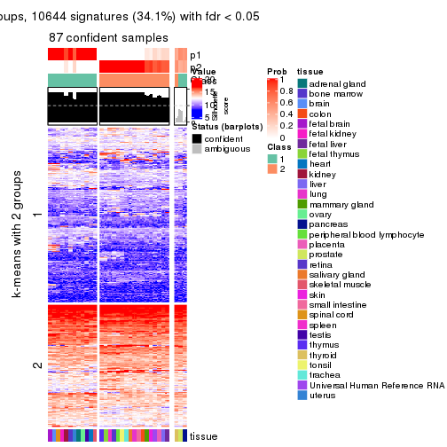
get_signatures(res, k = 3, scale_rows = FALSE)
get_signatures(res, k = 4, scale_rows = FALSE)
get_signatures(res, k = 5, scale_rows = FALSE)
get_signatures(res, k = 6, scale_rows = FALSE)
Compare the overlap of signatures from different k:
compare_signatures(res)
get_signature() returns a data frame invisibly. TO get the list of signatures, the function
call should be assigned to a variable explicitly. In following code, if plot argument is set
to FALSE, no heatmap is plotted while only the differential analysis is performed.
# code only for demonstration
tb = get_signature(res, k = ..., plot = FALSE)
An example of the output of tb is:
#> which_row fdr mean_1 mean_2 scaled_mean_1 scaled_mean_2 km
#> 1 38 0.042760348 8.373488 9.131774 -0.5533452 0.5164555 1
#> 2 40 0.018707592 7.106213 8.469186 -0.6173731 0.5762149 1
#> 3 55 0.019134737 10.221463 11.207825 -0.6159697 0.5749050 1
#> 4 59 0.006059896 5.921854 7.869574 -0.6899429 0.6439467 1
#> 5 60 0.018055526 8.928898 10.211722 -0.6204761 0.5791110 1
#> 6 98 0.009384629 15.714769 14.887706 0.6635654 -0.6193277 2
...
The columns in tb are:
which_row: row indices corresponding to the input matrix.fdr: FDR for the differential test. mean_x: The mean value in group x.scaled_mean_x: The mean value in group x after rows are scaled.km: Row groups if k-means clustering is applied to rows.UMAP plot which shows how samples are separated.
dimension_reduction(res, k = 2, method = "UMAP")
dimension_reduction(res, k = 3, method = "UMAP")
dimension_reduction(res, k = 4, method = "UMAP")
dimension_reduction(res, k = 5, method = "UMAP")
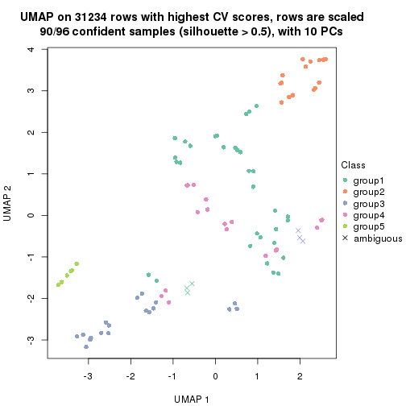
dimension_reduction(res, k = 6, method = "UMAP")
Following heatmap shows how subgroups are split when increasing k:
collect_classes(res)
Test correlation between subgroups and known annotations. If the known annotation is numeric, one-way ANOVA test is applied, and if the known annotation is discrete, chi-squared contingency table test is applied.
test_to_known_factors(res)
#> n tissue(p) k
#> CV:NMF 87 5.79e-08 2
#> CV:NMF 93 8.12e-15 3
#> CV:NMF 93 3.27e-21 4
#> CV:NMF 90 8.58e-27 5
#> CV:NMF 87 5.71e-32 6
If matrix rows can be associated to genes, consider to use functional_enrichment(res,
...) to perform function enrichment for the signature genes. See this vignette for more detailed explanations.
The object with results only for a single top-value method and a single partition method can be extracted as:
res = res_list["MAD", "hclust"]
# you can also extract it by
# res = res_list["MAD:hclust"]
A summary of res and all the functions that can be applied to it:
res
#> A 'ConsensusPartition' object with k = 2, 3, 4, 5, 6.
#> On a matrix with 31234 rows and 96 columns.
#> Top rows (1000, 2000, 3000, 4000, 5000) are extracted by 'MAD' method.
#> Subgroups are detected by 'hclust' method.
#> Performed in total 1250 partitions by row resampling.
#> Best k for subgroups seems to be 3.
#>
#> Following methods can be applied to this 'ConsensusPartition' object:
#> [1] "cola_report" "collect_classes" "collect_plots"
#> [4] "collect_stats" "colnames" "compare_signatures"
#> [7] "consensus_heatmap" "dimension_reduction" "functional_enrichment"
#> [10] "get_anno_col" "get_anno" "get_classes"
#> [13] "get_consensus" "get_matrix" "get_membership"
#> [16] "get_param" "get_signatures" "get_stats"
#> [19] "is_best_k" "is_stable_k" "membership_heatmap"
#> [22] "ncol" "nrow" "plot_ecdf"
#> [25] "rownames" "select_partition_number" "show"
#> [28] "suggest_best_k" "test_to_known_factors"
collect_plots() function collects all the plots made from res for all k (number of partitions)
into one single page to provide an easy and fast comparison between different k.
collect_plots(res)
The plots are:
k and the heatmap of
predicted classes for each k.k.k.k.All the plots in panels can be made by individual functions and they are plotted later in this section.
select_partition_number() produces several plots showing different
statistics for choosing “optimized” k. There are following statistics:
k;k, the area increased is defined as \(A_k - A_{k-1}\).The detailed explanations of these statistics can be found in the cola vignette.
Generally speaking, lower PAC score, higher mean silhouette score or higher
concordance corresponds to better partition. Rand index and Jaccard index
measure how similar the current partition is compared to partition with k-1.
If they are too similar, we won't accept k is better than k-1.
select_partition_number(res)
The numeric values for all these statistics can be obtained by get_stats().
get_stats(res)
#> k 1-PAC mean_silhouette concordance area_increased Rand Jaccard
#> 2 2 0.497 0.853 0.872 0.3130 0.734 0.734
#> 3 3 0.714 0.752 0.901 0.7363 0.724 0.623
#> 4 4 0.522 0.571 0.758 0.2500 0.893 0.773
#> 5 5 0.598 0.559 0.755 0.0665 0.801 0.518
#> 6 6 0.659 0.560 0.741 0.0783 0.783 0.417
suggest_best_k() suggests the best \(k\) based on these statistics. The rules are as follows:
suggest_best_k(res)
#> [1] 3
Following shows the table of the partitions (You need to click the show/hide
code output link to see it). The membership matrix (columns with name p*)
is inferred by
clue::cl_consensus()
function with the SE method. Basically the value in the membership matrix
represents the probability to belong to a certain group. The finall class
label for an item is determined with the group with highest probability it
belongs to.
In get_classes() function, the entropy is calculated from the membership
matrix and the silhouette score is calculated from the consensus matrix.
cbind(get_classes(res, k = 2), get_membership(res, k = 2))
#> class entropy silhouette p1 p2
#> GSM194459 1 0.788 0.852 0.764 0.236
#> GSM194460 1 0.788 0.852 0.764 0.236
#> GSM194461 1 0.788 0.852 0.764 0.236
#> GSM194462 1 0.788 0.852 0.764 0.236
#> GSM194463 1 0.788 0.852 0.764 0.236
#> GSM194464 1 0.788 0.852 0.764 0.236
#> GSM194465 1 0.788 0.852 0.764 0.236
#> GSM194466 1 0.788 0.852 0.764 0.236
#> GSM194467 1 0.788 0.852 0.764 0.236
#> GSM194468 1 0.775 0.846 0.772 0.228
#> GSM194469 1 0.775 0.846 0.772 0.228
#> GSM194470 1 0.775 0.846 0.772 0.228
#> GSM194471 1 0.343 0.762 0.936 0.064
#> GSM194472 1 0.343 0.762 0.936 0.064
#> GSM194473 1 0.343 0.762 0.936 0.064
#> GSM194474 1 0.343 0.762 0.936 0.064
#> GSM194475 1 0.343 0.762 0.936 0.064
#> GSM194476 1 0.343 0.762 0.936 0.064
#> GSM194477 1 0.706 0.857 0.808 0.192
#> GSM194478 1 0.706 0.857 0.808 0.192
#> GSM194479 1 0.706 0.857 0.808 0.192
#> GSM194480 1 0.327 0.765 0.940 0.060
#> GSM194481 1 0.327 0.765 0.940 0.060
#> GSM194482 1 0.327 0.765 0.940 0.060
#> GSM194483 1 0.327 0.765 0.940 0.060
#> GSM194484 1 0.327 0.765 0.940 0.060
#> GSM194485 1 0.327 0.765 0.940 0.060
#> GSM194486 1 0.343 0.762 0.936 0.064
#> GSM194487 1 0.343 0.762 0.936 0.064
#> GSM194488 1 0.343 0.762 0.936 0.064
#> GSM194489 1 0.788 0.852 0.764 0.236
#> GSM194490 1 0.788 0.852 0.764 0.236
#> GSM194491 1 0.788 0.852 0.764 0.236
#> GSM194492 1 0.788 0.852 0.764 0.236
#> GSM194493 1 0.788 0.852 0.764 0.236
#> GSM194494 1 0.788 0.852 0.764 0.236
#> GSM194495 1 0.000 0.799 1.000 0.000
#> GSM194496 1 0.000 0.799 1.000 0.000
#> GSM194497 1 0.000 0.799 1.000 0.000
#> GSM194498 1 0.788 0.852 0.764 0.236
#> GSM194499 1 0.788 0.852 0.764 0.236
#> GSM194500 1 0.788 0.852 0.764 0.236
#> GSM194501 1 0.781 0.853 0.768 0.232
#> GSM194502 1 0.781 0.853 0.768 0.232
#> GSM194503 1 0.781 0.853 0.768 0.232
#> GSM194504 1 0.000 0.799 1.000 0.000
#> GSM194505 1 0.000 0.799 1.000 0.000
#> GSM194506 1 0.000 0.799 1.000 0.000
#> GSM194507 1 0.311 0.768 0.944 0.056
#> GSM194508 1 0.311 0.768 0.944 0.056
#> GSM194509 1 0.311 0.768 0.944 0.056
#> GSM194510 1 0.753 0.856 0.784 0.216
#> GSM194511 1 0.753 0.856 0.784 0.216
#> GSM194512 1 0.753 0.856 0.784 0.216
#> GSM194513 2 0.343 1.000 0.064 0.936
#> GSM194514 2 0.343 1.000 0.064 0.936
#> GSM194515 2 0.343 1.000 0.064 0.936
#> GSM194516 2 0.343 1.000 0.064 0.936
#> GSM194517 2 0.343 1.000 0.064 0.936
#> GSM194518 2 0.343 1.000 0.064 0.936
#> GSM194519 1 0.697 0.857 0.812 0.188
#> GSM194520 1 0.697 0.857 0.812 0.188
#> GSM194521 1 0.697 0.857 0.812 0.188
#> GSM194522 1 0.697 0.857 0.812 0.188
#> GSM194523 1 0.697 0.857 0.812 0.188
#> GSM194524 1 0.697 0.857 0.812 0.188
#> GSM194525 1 0.788 0.852 0.764 0.236
#> GSM194526 1 0.788 0.852 0.764 0.236
#> GSM194527 1 0.788 0.852 0.764 0.236
#> GSM194528 1 0.706 0.857 0.808 0.192
#> GSM194529 1 0.706 0.857 0.808 0.192
#> GSM194530 1 0.706 0.857 0.808 0.192
#> GSM194531 1 0.788 0.852 0.764 0.236
#> GSM194532 1 0.788 0.852 0.764 0.236
#> GSM194533 1 0.788 0.852 0.764 0.236
#> GSM194534 1 0.788 0.852 0.764 0.236
#> GSM194535 1 0.788 0.852 0.764 0.236
#> GSM194536 1 0.788 0.852 0.764 0.236
#> GSM194537 1 0.788 0.852 0.764 0.236
#> GSM194538 1 0.788 0.852 0.764 0.236
#> GSM194539 1 0.788 0.852 0.764 0.236
#> GSM194540 2 0.343 1.000 0.064 0.936
#> GSM194541 2 0.343 1.000 0.064 0.936
#> GSM194542 2 0.343 1.000 0.064 0.936
#> GSM194543 1 0.000 0.799 1.000 0.000
#> GSM194544 1 0.000 0.799 1.000 0.000
#> GSM194545 1 0.000 0.799 1.000 0.000
#> GSM194546 2 0.343 1.000 0.064 0.936
#> GSM194547 2 0.343 1.000 0.064 0.936
#> GSM194548 2 0.343 1.000 0.064 0.936
#> GSM194549 2 0.343 1.000 0.064 0.936
#> GSM194550 2 0.343 1.000 0.064 0.936
#> GSM194551 2 0.343 1.000 0.064 0.936
#> GSM194552 1 0.118 0.806 0.984 0.016
#> GSM194553 1 0.118 0.806 0.984 0.016
#> GSM194554 1 0.118 0.806 0.984 0.016
cbind(get_classes(res, k = 3), get_membership(res, k = 3))
#> class entropy silhouette p1 p2 p3
#> GSM194459 1 0.0000 0.8651 1.000 0 0.000
#> GSM194460 1 0.0000 0.8651 1.000 0 0.000
#> GSM194461 1 0.0000 0.8651 1.000 0 0.000
#> GSM194462 1 0.0000 0.8651 1.000 0 0.000
#> GSM194463 1 0.0000 0.8651 1.000 0 0.000
#> GSM194464 1 0.0000 0.8651 1.000 0 0.000
#> GSM194465 1 0.0000 0.8651 1.000 0 0.000
#> GSM194466 1 0.0000 0.8651 1.000 0 0.000
#> GSM194467 1 0.0000 0.8651 1.000 0 0.000
#> GSM194468 3 0.6045 0.4887 0.380 0 0.620
#> GSM194469 3 0.6045 0.4887 0.380 0 0.620
#> GSM194470 3 0.6045 0.4887 0.380 0 0.620
#> GSM194471 3 0.0000 0.7442 0.000 0 1.000
#> GSM194472 3 0.0000 0.7442 0.000 0 1.000
#> GSM194473 3 0.0000 0.7442 0.000 0 1.000
#> GSM194474 3 0.0000 0.7442 0.000 0 1.000
#> GSM194475 3 0.0000 0.7442 0.000 0 1.000
#> GSM194476 3 0.0000 0.7442 0.000 0 1.000
#> GSM194477 1 0.2356 0.8298 0.928 0 0.072
#> GSM194478 1 0.2356 0.8298 0.928 0 0.072
#> GSM194479 1 0.2356 0.8298 0.928 0 0.072
#> GSM194480 3 0.5859 0.5646 0.344 0 0.656
#> GSM194481 3 0.5859 0.5646 0.344 0 0.656
#> GSM194482 3 0.5859 0.5646 0.344 0 0.656
#> GSM194483 3 0.5859 0.5646 0.344 0 0.656
#> GSM194484 3 0.5859 0.5646 0.344 0 0.656
#> GSM194485 3 0.5859 0.5646 0.344 0 0.656
#> GSM194486 3 0.0000 0.7442 0.000 0 1.000
#> GSM194487 3 0.0000 0.7442 0.000 0 1.000
#> GSM194488 3 0.0000 0.7442 0.000 0 1.000
#> GSM194489 1 0.0000 0.8651 1.000 0 0.000
#> GSM194490 1 0.0000 0.8651 1.000 0 0.000
#> GSM194491 1 0.0000 0.8651 1.000 0 0.000
#> GSM194492 1 0.0000 0.8651 1.000 0 0.000
#> GSM194493 1 0.0000 0.8651 1.000 0 0.000
#> GSM194494 1 0.0000 0.8651 1.000 0 0.000
#> GSM194495 1 0.6192 0.2141 0.580 0 0.420
#> GSM194496 1 0.6192 0.2141 0.580 0 0.420
#> GSM194497 1 0.6192 0.2141 0.580 0 0.420
#> GSM194498 1 0.0000 0.8651 1.000 0 0.000
#> GSM194499 1 0.0000 0.8651 1.000 0 0.000
#> GSM194500 1 0.0000 0.8651 1.000 0 0.000
#> GSM194501 1 0.0237 0.8637 0.996 0 0.004
#> GSM194502 1 0.0237 0.8637 0.996 0 0.004
#> GSM194503 1 0.0237 0.8637 0.996 0 0.004
#> GSM194504 1 0.6286 0.0773 0.536 0 0.464
#> GSM194505 1 0.6286 0.0773 0.536 0 0.464
#> GSM194506 1 0.6286 0.0773 0.536 0 0.464
#> GSM194507 3 0.2796 0.7618 0.092 0 0.908
#> GSM194508 3 0.2796 0.7618 0.092 0 0.908
#> GSM194509 3 0.2796 0.7618 0.092 0 0.908
#> GSM194510 1 0.0892 0.8580 0.980 0 0.020
#> GSM194511 1 0.0892 0.8580 0.980 0 0.020
#> GSM194512 1 0.0892 0.8580 0.980 0 0.020
#> GSM194513 2 0.0000 1.0000 0.000 1 0.000
#> GSM194514 2 0.0000 1.0000 0.000 1 0.000
#> GSM194515 2 0.0000 1.0000 0.000 1 0.000
#> GSM194516 2 0.0000 1.0000 0.000 1 0.000
#> GSM194517 2 0.0000 1.0000 0.000 1 0.000
#> GSM194518 2 0.0000 1.0000 0.000 1 0.000
#> GSM194519 1 0.2796 0.8125 0.908 0 0.092
#> GSM194520 1 0.2796 0.8125 0.908 0 0.092
#> GSM194521 1 0.2796 0.8125 0.908 0 0.092
#> GSM194522 1 0.1753 0.8439 0.952 0 0.048
#> GSM194523 1 0.1753 0.8439 0.952 0 0.048
#> GSM194524 1 0.1753 0.8439 0.952 0 0.048
#> GSM194525 1 0.0000 0.8651 1.000 0 0.000
#> GSM194526 1 0.0000 0.8651 1.000 0 0.000
#> GSM194527 1 0.0000 0.8651 1.000 0 0.000
#> GSM194528 1 0.2356 0.8298 0.928 0 0.072
#> GSM194529 1 0.2356 0.8298 0.928 0 0.072
#> GSM194530 1 0.2356 0.8298 0.928 0 0.072
#> GSM194531 1 0.0000 0.8651 1.000 0 0.000
#> GSM194532 1 0.0000 0.8651 1.000 0 0.000
#> GSM194533 1 0.0000 0.8651 1.000 0 0.000
#> GSM194534 1 0.0000 0.8651 1.000 0 0.000
#> GSM194535 1 0.0000 0.8651 1.000 0 0.000
#> GSM194536 1 0.0000 0.8651 1.000 0 0.000
#> GSM194537 1 0.0000 0.8651 1.000 0 0.000
#> GSM194538 1 0.0000 0.8651 1.000 0 0.000
#> GSM194539 1 0.0000 0.8651 1.000 0 0.000
#> GSM194540 2 0.0000 1.0000 0.000 1 0.000
#> GSM194541 2 0.0000 1.0000 0.000 1 0.000
#> GSM194542 2 0.0000 1.0000 0.000 1 0.000
#> GSM194543 1 0.6192 0.2141 0.580 0 0.420
#> GSM194544 1 0.6192 0.2141 0.580 0 0.420
#> GSM194545 1 0.6192 0.2141 0.580 0 0.420
#> GSM194546 2 0.0000 1.0000 0.000 1 0.000
#> GSM194547 2 0.0000 1.0000 0.000 1 0.000
#> GSM194548 2 0.0000 1.0000 0.000 1 0.000
#> GSM194549 2 0.0000 1.0000 0.000 1 0.000
#> GSM194550 2 0.0000 1.0000 0.000 1 0.000
#> GSM194551 2 0.0000 1.0000 0.000 1 0.000
#> GSM194552 1 0.6140 0.2587 0.596 0 0.404
#> GSM194553 1 0.6140 0.2587 0.596 0 0.404
#> GSM194554 1 0.6140 0.2587 0.596 0 0.404
cbind(get_classes(res, k = 4), get_membership(res, k = 4))
#> class entropy silhouette p1 p2 p3 p4
#> GSM194459 1 0.4624 0.5991 0.660 0 0.000 0.340
#> GSM194460 1 0.4624 0.5991 0.660 0 0.000 0.340
#> GSM194461 1 0.4624 0.5991 0.660 0 0.000 0.340
#> GSM194462 1 0.1940 0.6441 0.924 0 0.000 0.076
#> GSM194463 1 0.1940 0.6441 0.924 0 0.000 0.076
#> GSM194464 1 0.1940 0.6441 0.924 0 0.000 0.076
#> GSM194465 1 0.4624 0.5991 0.660 0 0.000 0.340
#> GSM194466 1 0.4624 0.5991 0.660 0 0.000 0.340
#> GSM194467 1 0.4624 0.5991 0.660 0 0.000 0.340
#> GSM194468 4 0.5500 -0.2226 0.016 0 0.464 0.520
#> GSM194469 4 0.5500 -0.2226 0.016 0 0.464 0.520
#> GSM194470 4 0.5500 -0.2226 0.016 0 0.464 0.520
#> GSM194471 3 0.0000 0.9170 0.000 0 1.000 0.000
#> GSM194472 3 0.0000 0.9170 0.000 0 1.000 0.000
#> GSM194473 3 0.0000 0.9170 0.000 0 1.000 0.000
#> GSM194474 3 0.0000 0.9170 0.000 0 1.000 0.000
#> GSM194475 3 0.0000 0.9170 0.000 0 1.000 0.000
#> GSM194476 3 0.0000 0.9170 0.000 0 1.000 0.000
#> GSM194477 1 0.4250 0.4387 0.724 0 0.000 0.276
#> GSM194478 1 0.4250 0.4387 0.724 0 0.000 0.276
#> GSM194479 1 0.4250 0.4387 0.724 0 0.000 0.276
#> GSM194480 4 0.6808 0.4473 0.120 0 0.320 0.560
#> GSM194481 4 0.6808 0.4473 0.120 0 0.320 0.560
#> GSM194482 4 0.6808 0.4473 0.120 0 0.320 0.560
#> GSM194483 4 0.6808 0.4473 0.120 0 0.320 0.560
#> GSM194484 4 0.6808 0.4473 0.120 0 0.320 0.560
#> GSM194485 4 0.6808 0.4473 0.120 0 0.320 0.560
#> GSM194486 3 0.0000 0.9170 0.000 0 1.000 0.000
#> GSM194487 3 0.0000 0.9170 0.000 0 1.000 0.000
#> GSM194488 3 0.0000 0.9170 0.000 0 1.000 0.000
#> GSM194489 1 0.3074 0.6371 0.848 0 0.000 0.152
#> GSM194490 1 0.3074 0.6371 0.848 0 0.000 0.152
#> GSM194491 1 0.3074 0.6371 0.848 0 0.000 0.152
#> GSM194492 1 0.3074 0.6371 0.848 0 0.000 0.152
#> GSM194493 1 0.3074 0.6371 0.848 0 0.000 0.152
#> GSM194494 1 0.3074 0.6371 0.848 0 0.000 0.152
#> GSM194495 1 0.7512 -0.0436 0.460 0 0.192 0.348
#> GSM194496 1 0.7512 -0.0436 0.460 0 0.192 0.348
#> GSM194497 1 0.7512 -0.0436 0.460 0 0.192 0.348
#> GSM194498 1 0.0592 0.6536 0.984 0 0.000 0.016
#> GSM194499 1 0.0592 0.6536 0.984 0 0.000 0.016
#> GSM194500 1 0.0592 0.6536 0.984 0 0.000 0.016
#> GSM194501 1 0.2973 0.6392 0.856 0 0.000 0.144
#> GSM194502 1 0.2973 0.6392 0.856 0 0.000 0.144
#> GSM194503 1 0.2973 0.6392 0.856 0 0.000 0.144
#> GSM194504 4 0.7190 0.4829 0.260 0 0.192 0.548
#> GSM194505 4 0.7190 0.4829 0.260 0 0.192 0.548
#> GSM194506 4 0.7190 0.4829 0.260 0 0.192 0.548
#> GSM194507 3 0.4008 0.7001 0.000 0 0.756 0.244
#> GSM194508 3 0.4008 0.7001 0.000 0 0.756 0.244
#> GSM194509 3 0.4008 0.7001 0.000 0 0.756 0.244
#> GSM194510 1 0.4817 0.5904 0.612 0 0.000 0.388
#> GSM194511 1 0.4817 0.5904 0.612 0 0.000 0.388
#> GSM194512 1 0.4817 0.5904 0.612 0 0.000 0.388
#> GSM194513 2 0.0000 1.0000 0.000 1 0.000 0.000
#> GSM194514 2 0.0000 1.0000 0.000 1 0.000 0.000
#> GSM194515 2 0.0000 1.0000 0.000 1 0.000 0.000
#> GSM194516 2 0.0000 1.0000 0.000 1 0.000 0.000
#> GSM194517 2 0.0000 1.0000 0.000 1 0.000 0.000
#> GSM194518 2 0.0000 1.0000 0.000 1 0.000 0.000
#> GSM194519 4 0.4992 -0.1592 0.476 0 0.000 0.524
#> GSM194520 4 0.4992 -0.1592 0.476 0 0.000 0.524
#> GSM194521 4 0.4992 -0.1592 0.476 0 0.000 0.524
#> GSM194522 1 0.4543 0.5289 0.676 0 0.000 0.324
#> GSM194523 1 0.4543 0.5289 0.676 0 0.000 0.324
#> GSM194524 1 0.4543 0.5289 0.676 0 0.000 0.324
#> GSM194525 1 0.4761 0.6003 0.628 0 0.000 0.372
#> GSM194526 1 0.4761 0.6003 0.628 0 0.000 0.372
#> GSM194527 1 0.4761 0.6003 0.628 0 0.000 0.372
#> GSM194528 1 0.4250 0.4387 0.724 0 0.000 0.276
#> GSM194529 1 0.4250 0.4387 0.724 0 0.000 0.276
#> GSM194530 1 0.4250 0.4387 0.724 0 0.000 0.276
#> GSM194531 1 0.3074 0.6371 0.848 0 0.000 0.152
#> GSM194532 1 0.3074 0.6371 0.848 0 0.000 0.152
#> GSM194533 1 0.3074 0.6371 0.848 0 0.000 0.152
#> GSM194534 1 0.0592 0.6536 0.984 0 0.000 0.016
#> GSM194535 1 0.0592 0.6536 0.984 0 0.000 0.016
#> GSM194536 1 0.0592 0.6536 0.984 0 0.000 0.016
#> GSM194537 1 0.2081 0.6442 0.916 0 0.000 0.084
#> GSM194538 1 0.2081 0.6442 0.916 0 0.000 0.084
#> GSM194539 1 0.2081 0.6442 0.916 0 0.000 0.084
#> GSM194540 2 0.0000 1.0000 0.000 1 0.000 0.000
#> GSM194541 2 0.0000 1.0000 0.000 1 0.000 0.000
#> GSM194542 2 0.0000 1.0000 0.000 1 0.000 0.000
#> GSM194543 1 0.7512 -0.0436 0.460 0 0.192 0.348
#> GSM194544 1 0.7512 -0.0436 0.460 0 0.192 0.348
#> GSM194545 1 0.7512 -0.0436 0.460 0 0.192 0.348
#> GSM194546 2 0.0000 1.0000 0.000 1 0.000 0.000
#> GSM194547 2 0.0000 1.0000 0.000 1 0.000 0.000
#> GSM194548 2 0.0000 1.0000 0.000 1 0.000 0.000
#> GSM194549 2 0.0000 1.0000 0.000 1 0.000 0.000
#> GSM194550 2 0.0000 1.0000 0.000 1 0.000 0.000
#> GSM194551 2 0.0000 1.0000 0.000 1 0.000 0.000
#> GSM194552 1 0.7436 -0.0201 0.460 0 0.176 0.364
#> GSM194553 1 0.7436 -0.0201 0.460 0 0.176 0.364
#> GSM194554 1 0.7436 -0.0201 0.460 0 0.176 0.364
cbind(get_classes(res, k = 5), get_membership(res, k = 5))
#> class entropy silhouette p1 p2 p3 p4 p5
#> GSM194459 1 0.396 0.553 0.712 0 0.000 0.280 0.008
#> GSM194460 1 0.396 0.553 0.712 0 0.000 0.280 0.008
#> GSM194461 1 0.396 0.553 0.712 0 0.000 0.280 0.008
#> GSM194462 1 0.403 0.468 0.680 0 0.000 0.316 0.004
#> GSM194463 1 0.403 0.468 0.680 0 0.000 0.316 0.004
#> GSM194464 1 0.403 0.468 0.680 0 0.000 0.316 0.004
#> GSM194465 1 0.396 0.553 0.712 0 0.000 0.280 0.008
#> GSM194466 1 0.396 0.553 0.712 0 0.000 0.280 0.008
#> GSM194467 1 0.396 0.553 0.712 0 0.000 0.280 0.008
#> GSM194468 4 0.655 -0.268 0.000 0 0.228 0.468 0.304
#> GSM194469 4 0.655 -0.268 0.000 0 0.228 0.468 0.304
#> GSM194470 4 0.655 -0.268 0.000 0 0.228 0.468 0.304
#> GSM194471 3 0.000 1.000 0.000 0 1.000 0.000 0.000
#> GSM194472 3 0.000 1.000 0.000 0 1.000 0.000 0.000
#> GSM194473 3 0.000 1.000 0.000 0 1.000 0.000 0.000
#> GSM194474 3 0.000 1.000 0.000 0 1.000 0.000 0.000
#> GSM194475 3 0.000 1.000 0.000 0 1.000 0.000 0.000
#> GSM194476 3 0.000 1.000 0.000 0 1.000 0.000 0.000
#> GSM194477 4 0.444 0.055 0.468 0 0.000 0.528 0.004
#> GSM194478 4 0.444 0.055 0.468 0 0.000 0.528 0.004
#> GSM194479 4 0.444 0.055 0.468 0 0.000 0.528 0.004
#> GSM194480 5 0.430 0.729 0.000 0 0.052 0.200 0.748
#> GSM194481 5 0.430 0.729 0.000 0 0.052 0.200 0.748
#> GSM194482 5 0.430 0.729 0.000 0 0.052 0.200 0.748
#> GSM194483 5 0.430 0.729 0.000 0 0.052 0.200 0.748
#> GSM194484 5 0.430 0.729 0.000 0 0.052 0.200 0.748
#> GSM194485 5 0.430 0.729 0.000 0 0.052 0.200 0.748
#> GSM194486 3 0.000 1.000 0.000 0 1.000 0.000 0.000
#> GSM194487 3 0.000 1.000 0.000 0 1.000 0.000 0.000
#> GSM194488 3 0.000 1.000 0.000 0 1.000 0.000 0.000
#> GSM194489 1 0.000 0.649 1.000 0 0.000 0.000 0.000
#> GSM194490 1 0.000 0.649 1.000 0 0.000 0.000 0.000
#> GSM194491 1 0.000 0.649 1.000 0 0.000 0.000 0.000
#> GSM194492 1 0.000 0.649 1.000 0 0.000 0.000 0.000
#> GSM194493 1 0.000 0.649 1.000 0 0.000 0.000 0.000
#> GSM194494 1 0.000 0.649 1.000 0 0.000 0.000 0.000
#> GSM194495 4 0.687 0.470 0.220 0 0.044 0.556 0.180
#> GSM194496 4 0.687 0.470 0.220 0 0.044 0.556 0.180
#> GSM194497 4 0.687 0.470 0.220 0 0.044 0.556 0.180
#> GSM194498 1 0.252 0.608 0.860 0 0.000 0.140 0.000
#> GSM194499 1 0.252 0.608 0.860 0 0.000 0.140 0.000
#> GSM194500 1 0.252 0.608 0.860 0 0.000 0.140 0.000
#> GSM194501 1 0.448 0.419 0.612 0 0.000 0.376 0.012
#> GSM194502 1 0.448 0.419 0.612 0 0.000 0.376 0.012
#> GSM194503 1 0.448 0.419 0.612 0 0.000 0.376 0.012
#> GSM194504 4 0.457 0.236 0.020 0 0.044 0.756 0.180
#> GSM194505 4 0.457 0.236 0.020 0 0.044 0.756 0.180
#> GSM194506 4 0.457 0.236 0.020 0 0.044 0.756 0.180
#> GSM194507 5 0.642 0.160 0.000 0 0.376 0.176 0.448
#> GSM194508 5 0.642 0.160 0.000 0 0.376 0.176 0.448
#> GSM194509 5 0.642 0.160 0.000 0 0.376 0.176 0.448
#> GSM194510 1 0.427 0.493 0.648 0 0.000 0.344 0.008
#> GSM194511 1 0.427 0.493 0.648 0 0.000 0.344 0.008
#> GSM194512 1 0.427 0.493 0.648 0 0.000 0.344 0.008
#> GSM194513 2 0.000 1.000 0.000 1 0.000 0.000 0.000
#> GSM194514 2 0.000 1.000 0.000 1 0.000 0.000 0.000
#> GSM194515 2 0.000 1.000 0.000 1 0.000 0.000 0.000
#> GSM194516 2 0.000 1.000 0.000 1 0.000 0.000 0.000
#> GSM194517 2 0.000 1.000 0.000 1 0.000 0.000 0.000
#> GSM194518 2 0.000 1.000 0.000 1 0.000 0.000 0.000
#> GSM194519 4 0.327 0.255 0.220 0 0.000 0.780 0.000
#> GSM194520 4 0.327 0.255 0.220 0 0.000 0.780 0.000
#> GSM194521 4 0.327 0.255 0.220 0 0.000 0.780 0.000
#> GSM194522 4 0.423 -0.129 0.420 0 0.000 0.580 0.000
#> GSM194523 4 0.423 -0.129 0.420 0 0.000 0.580 0.000
#> GSM194524 4 0.423 -0.129 0.420 0 0.000 0.580 0.000
#> GSM194525 1 0.405 0.536 0.676 0 0.000 0.320 0.004
#> GSM194526 1 0.405 0.536 0.676 0 0.000 0.320 0.004
#> GSM194527 1 0.405 0.536 0.676 0 0.000 0.320 0.004
#> GSM194528 4 0.444 0.055 0.468 0 0.000 0.528 0.004
#> GSM194529 4 0.444 0.055 0.468 0 0.000 0.528 0.004
#> GSM194530 4 0.444 0.055 0.468 0 0.000 0.528 0.004
#> GSM194531 1 0.000 0.649 1.000 0 0.000 0.000 0.000
#> GSM194532 1 0.000 0.649 1.000 0 0.000 0.000 0.000
#> GSM194533 1 0.000 0.649 1.000 0 0.000 0.000 0.000
#> GSM194534 1 0.252 0.608 0.860 0 0.000 0.140 0.000
#> GSM194535 1 0.252 0.608 0.860 0 0.000 0.140 0.000
#> GSM194536 1 0.252 0.608 0.860 0 0.000 0.140 0.000
#> GSM194537 1 0.407 0.463 0.672 0 0.000 0.324 0.004
#> GSM194538 1 0.407 0.463 0.672 0 0.000 0.324 0.004
#> GSM194539 1 0.407 0.463 0.672 0 0.000 0.324 0.004
#> GSM194540 2 0.000 1.000 0.000 1 0.000 0.000 0.000
#> GSM194541 2 0.000 1.000 0.000 1 0.000 0.000 0.000
#> GSM194542 2 0.000 1.000 0.000 1 0.000 0.000 0.000
#> GSM194543 4 0.687 0.470 0.220 0 0.044 0.556 0.180
#> GSM194544 4 0.687 0.470 0.220 0 0.044 0.556 0.180
#> GSM194545 4 0.687 0.470 0.220 0 0.044 0.556 0.180
#> GSM194546 2 0.000 1.000 0.000 1 0.000 0.000 0.000
#> GSM194547 2 0.000 1.000 0.000 1 0.000 0.000 0.000
#> GSM194548 2 0.000 1.000 0.000 1 0.000 0.000 0.000
#> GSM194549 2 0.000 1.000 0.000 1 0.000 0.000 0.000
#> GSM194550 2 0.000 1.000 0.000 1 0.000 0.000 0.000
#> GSM194551 2 0.000 1.000 0.000 1 0.000 0.000 0.000
#> GSM194552 4 0.675 0.467 0.220 0 0.044 0.572 0.164
#> GSM194553 4 0.675 0.467 0.220 0 0.044 0.572 0.164
#> GSM194554 4 0.675 0.467 0.220 0 0.044 0.572 0.164
cbind(get_classes(res, k = 6), get_membership(res, k = 6))
#> class entropy silhouette p1 p2 p3 p4 p5 p6
#> GSM194459 4 0.1563 0.74477 0.056 0 0.000 0.932 0.000 0.012
#> GSM194460 4 0.1563 0.74477 0.056 0 0.000 0.932 0.000 0.012
#> GSM194461 4 0.1563 0.74477 0.056 0 0.000 0.932 0.000 0.012
#> GSM194462 1 0.0458 0.52083 0.984 0 0.000 0.000 0.000 0.016
#> GSM194463 1 0.0458 0.52083 0.984 0 0.000 0.000 0.000 0.016
#> GSM194464 1 0.0458 0.52083 0.984 0 0.000 0.000 0.000 0.016
#> GSM194465 4 0.1563 0.74477 0.056 0 0.000 0.932 0.000 0.012
#> GSM194466 4 0.1563 0.74477 0.056 0 0.000 0.932 0.000 0.012
#> GSM194467 4 0.1563 0.74477 0.056 0 0.000 0.932 0.000 0.012
#> GSM194468 6 0.2920 0.74211 0.004 0 0.008 0.168 0.000 0.820
#> GSM194469 6 0.2920 0.74211 0.004 0 0.008 0.168 0.000 0.820
#> GSM194470 6 0.2920 0.74211 0.004 0 0.008 0.168 0.000 0.820
#> GSM194471 3 0.0000 1.00000 0.000 0 1.000 0.000 0.000 0.000
#> GSM194472 3 0.0000 1.00000 0.000 0 1.000 0.000 0.000 0.000
#> GSM194473 3 0.0000 1.00000 0.000 0 1.000 0.000 0.000 0.000
#> GSM194474 3 0.0000 1.00000 0.000 0 1.000 0.000 0.000 0.000
#> GSM194475 3 0.0000 1.00000 0.000 0 1.000 0.000 0.000 0.000
#> GSM194476 3 0.0000 1.00000 0.000 0 1.000 0.000 0.000 0.000
#> GSM194477 1 0.6153 0.06235 0.528 0 0.000 0.248 0.028 0.196
#> GSM194478 1 0.6153 0.06235 0.528 0 0.000 0.248 0.028 0.196
#> GSM194479 1 0.6153 0.06235 0.528 0 0.000 0.248 0.028 0.196
#> GSM194480 5 0.0000 0.64134 0.000 0 0.000 0.000 1.000 0.000
#> GSM194481 5 0.0000 0.64134 0.000 0 0.000 0.000 1.000 0.000
#> GSM194482 5 0.0000 0.64134 0.000 0 0.000 0.000 1.000 0.000
#> GSM194483 5 0.0000 0.64134 0.000 0 0.000 0.000 1.000 0.000
#> GSM194484 5 0.0000 0.64134 0.000 0 0.000 0.000 1.000 0.000
#> GSM194485 5 0.0000 0.64134 0.000 0 0.000 0.000 1.000 0.000
#> GSM194486 3 0.0000 1.00000 0.000 0 1.000 0.000 0.000 0.000
#> GSM194487 3 0.0000 1.00000 0.000 0 1.000 0.000 0.000 0.000
#> GSM194488 3 0.0000 1.00000 0.000 0 1.000 0.000 0.000 0.000
#> GSM194489 1 0.5313 0.40269 0.552 0 0.000 0.324 0.000 0.124
#> GSM194490 1 0.5313 0.40269 0.552 0 0.000 0.324 0.000 0.124
#> GSM194491 1 0.5313 0.40269 0.552 0 0.000 0.324 0.000 0.124
#> GSM194492 1 0.5313 0.40269 0.552 0 0.000 0.324 0.000 0.124
#> GSM194493 1 0.5313 0.40269 0.552 0 0.000 0.324 0.000 0.124
#> GSM194494 1 0.5313 0.40269 0.552 0 0.000 0.324 0.000 0.124
#> GSM194495 1 0.5483 0.05028 0.532 0 0.032 0.000 0.376 0.060
#> GSM194496 1 0.5483 0.05028 0.532 0 0.032 0.000 0.376 0.060
#> GSM194497 1 0.5483 0.05028 0.532 0 0.032 0.000 0.376 0.060
#> GSM194498 1 0.4605 0.49343 0.692 0 0.000 0.184 0.000 0.124
#> GSM194499 1 0.4605 0.49343 0.692 0 0.000 0.184 0.000 0.124
#> GSM194500 1 0.4605 0.49343 0.692 0 0.000 0.184 0.000 0.124
#> GSM194501 1 0.1644 0.50390 0.932 0 0.000 0.012 0.004 0.052
#> GSM194502 1 0.1644 0.50390 0.932 0 0.000 0.012 0.004 0.052
#> GSM194503 1 0.1644 0.50390 0.932 0 0.000 0.012 0.004 0.052
#> GSM194504 5 0.6665 0.30022 0.332 0 0.032 0.000 0.376 0.260
#> GSM194505 5 0.6665 0.30022 0.332 0 0.032 0.000 0.376 0.260
#> GSM194506 5 0.6665 0.30022 0.332 0 0.032 0.000 0.376 0.260
#> GSM194507 6 0.4569 0.72678 0.000 0 0.144 0.000 0.156 0.700
#> GSM194508 6 0.4569 0.72678 0.000 0 0.144 0.000 0.156 0.700
#> GSM194509 6 0.4569 0.72678 0.000 0 0.144 0.000 0.156 0.700
#> GSM194510 4 0.2784 0.73200 0.092 0 0.000 0.868 0.020 0.020
#> GSM194511 4 0.2784 0.73200 0.092 0 0.000 0.868 0.020 0.020
#> GSM194512 4 0.2784 0.73200 0.092 0 0.000 0.868 0.020 0.020
#> GSM194513 2 0.0000 1.00000 0.000 1 0.000 0.000 0.000 0.000
#> GSM194514 2 0.0000 1.00000 0.000 1 0.000 0.000 0.000 0.000
#> GSM194515 2 0.0000 1.00000 0.000 1 0.000 0.000 0.000 0.000
#> GSM194516 2 0.0000 1.00000 0.000 1 0.000 0.000 0.000 0.000
#> GSM194517 2 0.0000 1.00000 0.000 1 0.000 0.000 0.000 0.000
#> GSM194518 2 0.0000 1.00000 0.000 1 0.000 0.000 0.000 0.000
#> GSM194519 4 0.6632 0.30346 0.304 0 0.000 0.380 0.028 0.288
#> GSM194520 4 0.6632 0.30346 0.304 0 0.000 0.380 0.028 0.288
#> GSM194521 4 0.6632 0.30346 0.304 0 0.000 0.380 0.028 0.288
#> GSM194522 1 0.5732 0.00592 0.504 0 0.000 0.380 0.028 0.088
#> GSM194523 1 0.5732 0.00592 0.504 0 0.000 0.380 0.028 0.088
#> GSM194524 1 0.5732 0.00592 0.504 0 0.000 0.380 0.028 0.088
#> GSM194525 1 0.4524 0.29245 0.616 0 0.000 0.336 0.000 0.048
#> GSM194526 1 0.4524 0.29245 0.616 0 0.000 0.336 0.000 0.048
#> GSM194527 1 0.4524 0.29245 0.616 0 0.000 0.336 0.000 0.048
#> GSM194528 1 0.6153 0.06235 0.528 0 0.000 0.248 0.028 0.196
#> GSM194529 1 0.6153 0.06235 0.528 0 0.000 0.248 0.028 0.196
#> GSM194530 1 0.6153 0.06235 0.528 0 0.000 0.248 0.028 0.196
#> GSM194531 1 0.5313 0.40269 0.552 0 0.000 0.324 0.000 0.124
#> GSM194532 1 0.5313 0.40269 0.552 0 0.000 0.324 0.000 0.124
#> GSM194533 1 0.5313 0.40269 0.552 0 0.000 0.324 0.000 0.124
#> GSM194534 1 0.4605 0.49343 0.692 0 0.000 0.184 0.000 0.124
#> GSM194535 1 0.4605 0.49343 0.692 0 0.000 0.184 0.000 0.124
#> GSM194536 1 0.4605 0.49343 0.692 0 0.000 0.184 0.000 0.124
#> GSM194537 1 0.0260 0.51959 0.992 0 0.000 0.000 0.000 0.008
#> GSM194538 1 0.0260 0.51959 0.992 0 0.000 0.000 0.000 0.008
#> GSM194539 1 0.0260 0.51959 0.992 0 0.000 0.000 0.000 0.008
#> GSM194540 2 0.0000 1.00000 0.000 1 0.000 0.000 0.000 0.000
#> GSM194541 2 0.0000 1.00000 0.000 1 0.000 0.000 0.000 0.000
#> GSM194542 2 0.0000 1.00000 0.000 1 0.000 0.000 0.000 0.000
#> GSM194543 1 0.5483 0.05028 0.532 0 0.032 0.000 0.376 0.060
#> GSM194544 1 0.5483 0.05028 0.532 0 0.032 0.000 0.376 0.060
#> GSM194545 1 0.5483 0.05028 0.532 0 0.032 0.000 0.376 0.060
#> GSM194546 2 0.0000 1.00000 0.000 1 0.000 0.000 0.000 0.000
#> GSM194547 2 0.0000 1.00000 0.000 1 0.000 0.000 0.000 0.000
#> GSM194548 2 0.0000 1.00000 0.000 1 0.000 0.000 0.000 0.000
#> GSM194549 2 0.0000 1.00000 0.000 1 0.000 0.000 0.000 0.000
#> GSM194550 2 0.0000 1.00000 0.000 1 0.000 0.000 0.000 0.000
#> GSM194551 2 0.0000 1.00000 0.000 1 0.000 0.000 0.000 0.000
#> GSM194552 1 0.5676 0.06821 0.536 0 0.032 0.004 0.360 0.068
#> GSM194553 1 0.5676 0.06821 0.536 0 0.032 0.004 0.360 0.068
#> GSM194554 1 0.5676 0.06821 0.536 0 0.032 0.004 0.360 0.068
Heatmaps for the consensus matrix. It visualizes the probability of two samples to be in a same group.
consensus_heatmap(res, k = 2)
consensus_heatmap(res, k = 3)

consensus_heatmap(res, k = 4)
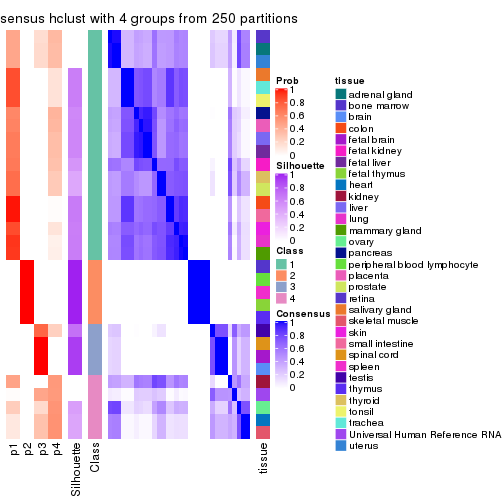
consensus_heatmap(res, k = 5)
consensus_heatmap(res, k = 6)
Heatmaps for the membership of samples in all partitions to see how consistent they are:
membership_heatmap(res, k = 2)
membership_heatmap(res, k = 3)
membership_heatmap(res, k = 4)
membership_heatmap(res, k = 5)
membership_heatmap(res, k = 6)
As soon as we have had the classes for columns, we can look for signatures which are significantly different between classes which can be candidate marks for certain classes. Following are the heatmaps for signatures.
Signature heatmaps where rows are scaled:
get_signatures(res, k = 2)
get_signatures(res, k = 3)
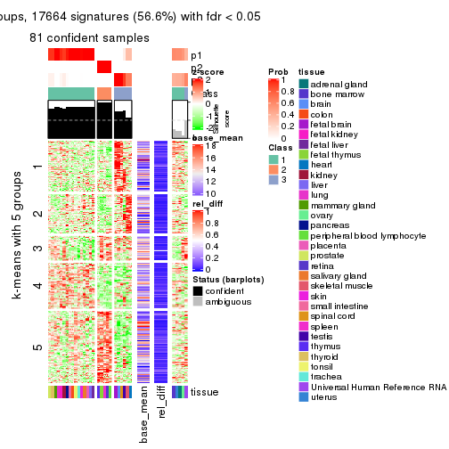
get_signatures(res, k = 4)
get_signatures(res, k = 5)
get_signatures(res, k = 6)
Signature heatmaps where rows are not scaled:
get_signatures(res, k = 2, scale_rows = FALSE)
get_signatures(res, k = 3, scale_rows = FALSE)
get_signatures(res, k = 4, scale_rows = FALSE)

get_signatures(res, k = 5, scale_rows = FALSE)
get_signatures(res, k = 6, scale_rows = FALSE)
Compare the overlap of signatures from different k:
compare_signatures(res)
get_signature() returns a data frame invisibly. TO get the list of signatures, the function
call should be assigned to a variable explicitly. In following code, if plot argument is set
to FALSE, no heatmap is plotted while only the differential analysis is performed.
# code only for demonstration
tb = get_signature(res, k = ..., plot = FALSE)
An example of the output of tb is:
#> which_row fdr mean_1 mean_2 scaled_mean_1 scaled_mean_2 km
#> 1 38 0.042760348 8.373488 9.131774 -0.5533452 0.5164555 1
#> 2 40 0.018707592 7.106213 8.469186 -0.6173731 0.5762149 1
#> 3 55 0.019134737 10.221463 11.207825 -0.6159697 0.5749050 1
#> 4 59 0.006059896 5.921854 7.869574 -0.6899429 0.6439467 1
#> 5 60 0.018055526 8.928898 10.211722 -0.6204761 0.5791110 1
#> 6 98 0.009384629 15.714769 14.887706 0.6635654 -0.6193277 2
...
The columns in tb are:
which_row: row indices corresponding to the input matrix.fdr: FDR for the differential test. mean_x: The mean value in group x.scaled_mean_x: The mean value in group x after rows are scaled.km: Row groups if k-means clustering is applied to rows.UMAP plot which shows how samples are separated.
dimension_reduction(res, k = 2, method = "UMAP")
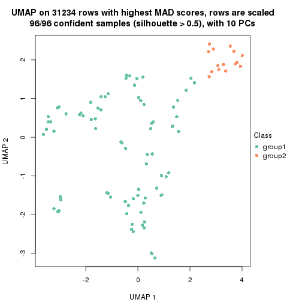
dimension_reduction(res, k = 3, method = "UMAP")
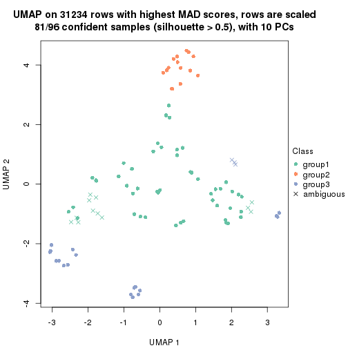
dimension_reduction(res, k = 4, method = "UMAP")
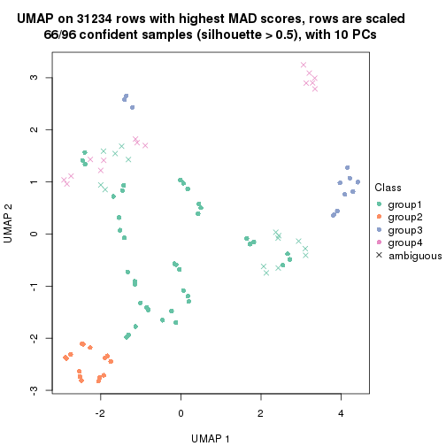
dimension_reduction(res, k = 5, method = "UMAP")
dimension_reduction(res, k = 6, method = "UMAP")
Following heatmap shows how subgroups are split when increasing k:
collect_classes(res)
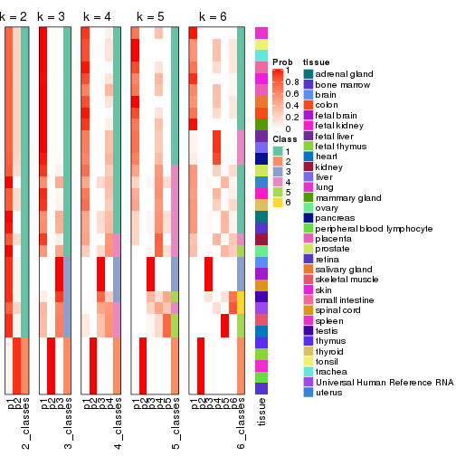
Test correlation between subgroups and known annotations. If the known annotation is numeric, one-way ANOVA test is applied, and if the known annotation is discrete, chi-squared contingency table test is applied.
test_to_known_factors(res)
#> n tissue(p) k
#> MAD:hclust 96 1.44e-08 2
#> MAD:hclust 81 3.17e-13 3
#> MAD:hclust 66 3.12e-11 4
#> MAD:hclust 54 1.75e-13 5
#> MAD:hclust 54 4.00e-21 6
If matrix rows can be associated to genes, consider to use functional_enrichment(res,
...) to perform function enrichment for the signature genes. See this vignette for more detailed explanations.
The object with results only for a single top-value method and a single partition method can be extracted as:
res = res_list["MAD", "kmeans"]
# you can also extract it by
# res = res_list["MAD:kmeans"]
A summary of res and all the functions that can be applied to it:
res
#> A 'ConsensusPartition' object with k = 2, 3, 4, 5, 6.
#> On a matrix with 31234 rows and 96 columns.
#> Top rows (1000, 2000, 3000, 4000, 5000) are extracted by 'MAD' method.
#> Subgroups are detected by 'kmeans' method.
#> Performed in total 1250 partitions by row resampling.
#> Best k for subgroups seems to be 3.
#>
#> Following methods can be applied to this 'ConsensusPartition' object:
#> [1] "cola_report" "collect_classes" "collect_plots"
#> [4] "collect_stats" "colnames" "compare_signatures"
#> [7] "consensus_heatmap" "dimension_reduction" "functional_enrichment"
#> [10] "get_anno_col" "get_anno" "get_classes"
#> [13] "get_consensus" "get_matrix" "get_membership"
#> [16] "get_param" "get_signatures" "get_stats"
#> [19] "is_best_k" "is_stable_k" "membership_heatmap"
#> [22] "ncol" "nrow" "plot_ecdf"
#> [25] "rownames" "select_partition_number" "show"
#> [28] "suggest_best_k" "test_to_known_factors"
collect_plots() function collects all the plots made from res for all k (number of partitions)
into one single page to provide an easy and fast comparison between different k.
collect_plots(res)
The plots are:
k and the heatmap of
predicted classes for each k.k.k.k.All the plots in panels can be made by individual functions and they are plotted later in this section.
select_partition_number() produces several plots showing different
statistics for choosing “optimized” k. There are following statistics:
k;k, the area increased is defined as \(A_k - A_{k-1}\).The detailed explanations of these statistics can be found in the cola vignette.
Generally speaking, lower PAC score, higher mean silhouette score or higher
concordance corresponds to better partition. Rand index and Jaccard index
measure how similar the current partition is compared to partition with k-1.
If they are too similar, we won't accept k is better than k-1.
select_partition_number(res)
The numeric values for all these statistics can be obtained by get_stats().
get_stats(res)
#> k 1-PAC mean_silhouette concordance area_increased Rand Jaccard
#> 2 2 0.140 0.497 0.658 0.4040 0.566 0.566
#> 3 3 0.215 0.575 0.715 0.3750 0.674 0.507
#> 4 4 0.346 0.511 0.703 0.2185 0.822 0.612
#> 5 5 0.472 0.477 0.662 0.0878 0.858 0.590
#> 6 6 0.531 0.444 0.599 0.0611 0.862 0.513
suggest_best_k() suggests the best \(k\) based on these statistics. The rules are as follows:
suggest_best_k(res)
#> [1] 3
Following shows the table of the partitions (You need to click the show/hide
code output link to see it). The membership matrix (columns with name p*)
is inferred by
clue::cl_consensus()
function with the SE method. Basically the value in the membership matrix
represents the probability to belong to a certain group. The finall class
label for an item is determined with the group with highest probability it
belongs to.
In get_classes() function, the entropy is calculated from the membership
matrix and the silhouette score is calculated from the consensus matrix.
cbind(get_classes(res, k = 2), get_membership(res, k = 2))
#> class entropy silhouette p1 p2
#> GSM194459 1 0.8443 0.4737 0.728 0.272
#> GSM194460 1 0.8443 0.4737 0.728 0.272
#> GSM194461 1 0.8443 0.4737 0.728 0.272
#> GSM194462 1 0.1843 0.5773 0.972 0.028
#> GSM194463 1 0.1843 0.5773 0.972 0.028
#> GSM194464 1 0.1843 0.5773 0.972 0.028
#> GSM194465 1 0.8144 0.3907 0.748 0.252
#> GSM194466 1 0.8144 0.3907 0.748 0.252
#> GSM194467 1 0.8144 0.3907 0.748 0.252
#> GSM194468 1 0.9286 0.3793 0.656 0.344
#> GSM194469 1 0.9286 0.3793 0.656 0.344
#> GSM194470 1 0.9286 0.3793 0.656 0.344
#> GSM194471 2 0.8713 0.8396 0.292 0.708
#> GSM194472 2 0.8713 0.8396 0.292 0.708
#> GSM194473 2 0.8713 0.8396 0.292 0.708
#> GSM194474 2 0.8713 0.8398 0.292 0.708
#> GSM194475 2 0.8713 0.8398 0.292 0.708
#> GSM194476 2 0.8713 0.8398 0.292 0.708
#> GSM194477 1 0.9170 -0.0950 0.668 0.332
#> GSM194478 1 0.9170 -0.0950 0.668 0.332
#> GSM194479 1 0.9170 -0.0950 0.668 0.332
#> GSM194480 2 0.9686 0.8681 0.396 0.604
#> GSM194481 2 0.9686 0.8681 0.396 0.604
#> GSM194482 2 0.9686 0.8681 0.396 0.604
#> GSM194483 2 0.9686 0.8681 0.396 0.604
#> GSM194484 2 0.9686 0.8681 0.396 0.604
#> GSM194485 2 0.9686 0.8681 0.396 0.604
#> GSM194486 2 0.8661 0.8397 0.288 0.712
#> GSM194487 2 0.8661 0.8397 0.288 0.712
#> GSM194488 2 0.8661 0.8397 0.288 0.712
#> GSM194489 1 0.8327 0.5210 0.736 0.264
#> GSM194490 1 0.8327 0.5210 0.736 0.264
#> GSM194491 1 0.8327 0.5210 0.736 0.264
#> GSM194492 1 0.1633 0.5759 0.976 0.024
#> GSM194493 1 0.1633 0.5759 0.976 0.024
#> GSM194494 1 0.1633 0.5759 0.976 0.024
#> GSM194495 2 0.9983 0.7499 0.476 0.524
#> GSM194496 2 0.9983 0.7499 0.476 0.524
#> GSM194497 2 0.9983 0.7499 0.476 0.524
#> GSM194498 1 0.0938 0.5779 0.988 0.012
#> GSM194499 1 0.0938 0.5779 0.988 0.012
#> GSM194500 1 0.0938 0.5779 0.988 0.012
#> GSM194501 1 0.7745 0.3563 0.772 0.228
#> GSM194502 1 0.7745 0.3563 0.772 0.228
#> GSM194503 1 0.7745 0.3563 0.772 0.228
#> GSM194504 2 0.9686 0.8587 0.396 0.604
#> GSM194505 2 0.9686 0.8587 0.396 0.604
#> GSM194506 2 0.9686 0.8587 0.396 0.604
#> GSM194507 2 0.9323 0.8663 0.348 0.652
#> GSM194508 2 0.9323 0.8663 0.348 0.652
#> GSM194509 2 0.9323 0.8663 0.348 0.652
#> GSM194510 1 0.9286 -0.0197 0.656 0.344
#> GSM194511 1 0.9286 -0.0197 0.656 0.344
#> GSM194512 1 0.9286 -0.0197 0.656 0.344
#> GSM194513 1 0.9129 0.5152 0.672 0.328
#> GSM194514 1 0.9129 0.5152 0.672 0.328
#> GSM194515 1 0.9129 0.5152 0.672 0.328
#> GSM194516 1 0.9286 0.5147 0.656 0.344
#> GSM194517 1 0.9286 0.5147 0.656 0.344
#> GSM194518 1 0.9286 0.5147 0.656 0.344
#> GSM194519 1 0.9795 -0.3286 0.584 0.416
#> GSM194520 1 0.9795 -0.3286 0.584 0.416
#> GSM194521 1 0.9795 -0.3286 0.584 0.416
#> GSM194522 1 0.9970 -0.5473 0.532 0.468
#> GSM194523 1 0.9970 -0.5473 0.532 0.468
#> GSM194524 1 0.9970 -0.5473 0.532 0.468
#> GSM194525 1 0.6801 0.4568 0.820 0.180
#> GSM194526 1 0.6801 0.4568 0.820 0.180
#> GSM194527 1 0.6801 0.4568 0.820 0.180
#> GSM194528 1 0.9087 -0.0477 0.676 0.324
#> GSM194529 1 0.9087 -0.0477 0.676 0.324
#> GSM194530 1 0.9087 -0.0477 0.676 0.324
#> GSM194531 1 0.2778 0.5666 0.952 0.048
#> GSM194532 1 0.2778 0.5666 0.952 0.048
#> GSM194533 1 0.2778 0.5666 0.952 0.048
#> GSM194534 1 0.0938 0.5784 0.988 0.012
#> GSM194535 1 0.0938 0.5784 0.988 0.012
#> GSM194536 1 0.0938 0.5784 0.988 0.012
#> GSM194537 1 0.5737 0.4858 0.864 0.136
#> GSM194538 1 0.5737 0.4858 0.864 0.136
#> GSM194539 1 0.5737 0.4858 0.864 0.136
#> GSM194540 1 0.9248 0.5156 0.660 0.340
#> GSM194541 1 0.9248 0.5156 0.660 0.340
#> GSM194542 1 0.9248 0.5156 0.660 0.340
#> GSM194543 2 0.9850 0.8350 0.428 0.572
#> GSM194544 2 0.9850 0.8350 0.428 0.572
#> GSM194545 2 0.9850 0.8350 0.428 0.572
#> GSM194546 1 0.9323 0.5126 0.652 0.348
#> GSM194547 1 0.9323 0.5126 0.652 0.348
#> GSM194548 1 0.9323 0.5126 0.652 0.348
#> GSM194549 1 0.9323 0.5126 0.652 0.348
#> GSM194550 1 0.9323 0.5126 0.652 0.348
#> GSM194551 1 0.9323 0.5126 0.652 0.348
#> GSM194552 2 0.9580 0.8653 0.380 0.620
#> GSM194553 2 0.9580 0.8653 0.380 0.620
#> GSM194554 2 0.9580 0.8653 0.380 0.620
cbind(get_classes(res, k = 3), get_membership(res, k = 3))
#> class entropy silhouette p1 p2 p3
#> GSM194459 1 0.935 0.410 0.516 0.256 0.228
#> GSM194460 1 0.935 0.410 0.516 0.256 0.228
#> GSM194461 1 0.935 0.410 0.516 0.256 0.228
#> GSM194462 1 0.473 0.612 0.800 0.196 0.004
#> GSM194463 1 0.473 0.612 0.800 0.196 0.004
#> GSM194464 1 0.473 0.612 0.800 0.196 0.004
#> GSM194465 1 0.798 0.494 0.648 0.124 0.228
#> GSM194466 1 0.798 0.494 0.648 0.124 0.228
#> GSM194467 1 0.798 0.494 0.648 0.124 0.228
#> GSM194468 1 0.890 0.372 0.572 0.196 0.232
#> GSM194469 1 0.890 0.372 0.572 0.196 0.232
#> GSM194470 1 0.890 0.372 0.572 0.196 0.232
#> GSM194471 3 0.542 0.780 0.240 0.008 0.752
#> GSM194472 3 0.542 0.780 0.240 0.008 0.752
#> GSM194473 3 0.542 0.780 0.240 0.008 0.752
#> GSM194474 3 0.558 0.776 0.240 0.012 0.748
#> GSM194475 3 0.558 0.776 0.240 0.012 0.748
#> GSM194476 3 0.558 0.776 0.240 0.012 0.748
#> GSM194477 1 0.369 0.601 0.896 0.048 0.056
#> GSM194478 1 0.369 0.601 0.896 0.048 0.056
#> GSM194479 1 0.369 0.601 0.896 0.048 0.056
#> GSM194480 3 0.763 0.633 0.428 0.044 0.528
#> GSM194481 3 0.763 0.633 0.428 0.044 0.528
#> GSM194482 3 0.763 0.633 0.428 0.044 0.528
#> GSM194483 3 0.756 0.628 0.440 0.040 0.520
#> GSM194484 3 0.756 0.628 0.440 0.040 0.520
#> GSM194485 3 0.756 0.628 0.440 0.040 0.520
#> GSM194486 3 0.546 0.780 0.244 0.008 0.748
#> GSM194487 3 0.546 0.780 0.244 0.008 0.748
#> GSM194488 3 0.546 0.780 0.244 0.008 0.748
#> GSM194489 2 0.639 0.698 0.284 0.692 0.024
#> GSM194490 2 0.639 0.698 0.284 0.692 0.024
#> GSM194491 2 0.639 0.698 0.284 0.692 0.024
#> GSM194492 1 0.621 0.595 0.736 0.228 0.036
#> GSM194493 1 0.621 0.595 0.736 0.228 0.036
#> GSM194494 1 0.621 0.595 0.736 0.228 0.036
#> GSM194495 1 0.618 0.206 0.716 0.024 0.260
#> GSM194496 1 0.618 0.206 0.716 0.024 0.260
#> GSM194497 1 0.618 0.206 0.716 0.024 0.260
#> GSM194498 1 0.638 0.585 0.720 0.244 0.036
#> GSM194499 1 0.638 0.585 0.720 0.244 0.036
#> GSM194500 1 0.638 0.585 0.720 0.244 0.036
#> GSM194501 1 0.419 0.611 0.876 0.060 0.064
#> GSM194502 1 0.419 0.611 0.876 0.060 0.064
#> GSM194503 1 0.419 0.611 0.876 0.060 0.064
#> GSM194504 1 0.694 -0.514 0.520 0.016 0.464
#> GSM194505 1 0.694 -0.514 0.520 0.016 0.464
#> GSM194506 1 0.694 -0.514 0.520 0.016 0.464
#> GSM194507 3 0.660 0.753 0.332 0.020 0.648
#> GSM194508 3 0.660 0.753 0.332 0.020 0.648
#> GSM194509 3 0.660 0.753 0.332 0.020 0.648
#> GSM194510 1 0.640 0.514 0.724 0.040 0.236
#> GSM194511 1 0.640 0.514 0.724 0.040 0.236
#> GSM194512 1 0.640 0.514 0.724 0.040 0.236
#> GSM194513 2 0.341 0.931 0.080 0.900 0.020
#> GSM194514 2 0.341 0.931 0.080 0.900 0.020
#> GSM194515 2 0.341 0.931 0.080 0.900 0.020
#> GSM194516 2 0.401 0.930 0.096 0.876 0.028
#> GSM194517 2 0.401 0.930 0.096 0.876 0.028
#> GSM194518 2 0.401 0.930 0.096 0.876 0.028
#> GSM194519 1 0.558 0.451 0.772 0.024 0.204
#> GSM194520 1 0.558 0.451 0.772 0.024 0.204
#> GSM194521 1 0.558 0.451 0.772 0.024 0.204
#> GSM194522 1 0.563 0.426 0.768 0.024 0.208
#> GSM194523 1 0.563 0.426 0.768 0.024 0.208
#> GSM194524 1 0.563 0.426 0.768 0.024 0.208
#> GSM194525 1 0.500 0.616 0.840 0.092 0.068
#> GSM194526 1 0.500 0.616 0.840 0.092 0.068
#> GSM194527 1 0.500 0.616 0.840 0.092 0.068
#> GSM194528 1 0.432 0.581 0.868 0.044 0.088
#> GSM194529 1 0.432 0.581 0.868 0.044 0.088
#> GSM194530 1 0.432 0.581 0.868 0.044 0.088
#> GSM194531 1 0.640 0.601 0.744 0.200 0.056
#> GSM194532 1 0.640 0.601 0.744 0.200 0.056
#> GSM194533 1 0.640 0.601 0.744 0.200 0.056
#> GSM194534 1 0.617 0.596 0.740 0.224 0.036
#> GSM194535 1 0.617 0.596 0.740 0.224 0.036
#> GSM194536 1 0.617 0.596 0.740 0.224 0.036
#> GSM194537 1 0.346 0.622 0.892 0.096 0.012
#> GSM194538 1 0.346 0.622 0.892 0.096 0.012
#> GSM194539 1 0.346 0.622 0.892 0.096 0.012
#> GSM194540 2 0.364 0.933 0.084 0.892 0.024
#> GSM194541 2 0.364 0.933 0.084 0.892 0.024
#> GSM194542 2 0.364 0.933 0.084 0.892 0.024
#> GSM194543 1 0.678 -0.315 0.588 0.016 0.396
#> GSM194544 1 0.678 -0.315 0.588 0.016 0.396
#> GSM194545 1 0.678 -0.315 0.588 0.016 0.396
#> GSM194546 2 0.389 0.933 0.084 0.884 0.032
#> GSM194547 2 0.389 0.933 0.084 0.884 0.032
#> GSM194548 2 0.389 0.933 0.084 0.884 0.032
#> GSM194549 2 0.442 0.930 0.088 0.864 0.048
#> GSM194550 2 0.442 0.930 0.088 0.864 0.048
#> GSM194551 2 0.442 0.930 0.088 0.864 0.048
#> GSM194552 3 0.680 0.639 0.456 0.012 0.532
#> GSM194553 3 0.680 0.639 0.456 0.012 0.532
#> GSM194554 3 0.680 0.639 0.456 0.012 0.532
cbind(get_classes(res, k = 4), get_membership(res, k = 4))
#> class entropy silhouette p1 p2 p3 p4
#> GSM194459 4 0.711 0.7255 0.264 0.088 0.036 0.612
#> GSM194460 4 0.711 0.7255 0.264 0.088 0.036 0.612
#> GSM194461 4 0.711 0.7255 0.264 0.088 0.036 0.612
#> GSM194462 1 0.402 0.5293 0.860 0.052 0.036 0.052
#> GSM194463 1 0.402 0.5293 0.860 0.052 0.036 0.052
#> GSM194464 1 0.402 0.5293 0.860 0.052 0.036 0.052
#> GSM194465 4 0.711 0.7027 0.348 0.048 0.048 0.556
#> GSM194466 4 0.711 0.7027 0.348 0.048 0.048 0.556
#> GSM194467 4 0.711 0.7027 0.348 0.048 0.048 0.556
#> GSM194468 4 0.907 0.6649 0.272 0.120 0.156 0.452
#> GSM194469 4 0.907 0.6649 0.272 0.120 0.156 0.452
#> GSM194470 4 0.907 0.6649 0.272 0.120 0.156 0.452
#> GSM194471 3 0.134 0.6637 0.024 0.008 0.964 0.004
#> GSM194472 3 0.134 0.6637 0.024 0.008 0.964 0.004
#> GSM194473 3 0.134 0.6637 0.024 0.008 0.964 0.004
#> GSM194474 3 0.162 0.6605 0.024 0.012 0.956 0.008
#> GSM194475 3 0.162 0.6605 0.024 0.012 0.956 0.008
#> GSM194476 3 0.162 0.6605 0.024 0.012 0.956 0.008
#> GSM194477 1 0.337 0.5347 0.872 0.000 0.080 0.048
#> GSM194478 1 0.337 0.5347 0.872 0.000 0.080 0.048
#> GSM194479 1 0.337 0.5347 0.872 0.000 0.080 0.048
#> GSM194480 3 0.833 0.6154 0.228 0.036 0.484 0.252
#> GSM194481 3 0.833 0.6154 0.228 0.036 0.484 0.252
#> GSM194482 3 0.833 0.6154 0.228 0.036 0.484 0.252
#> GSM194483 3 0.836 0.6156 0.240 0.036 0.480 0.244
#> GSM194484 3 0.836 0.6156 0.240 0.036 0.480 0.244
#> GSM194485 3 0.836 0.6156 0.240 0.036 0.480 0.244
#> GSM194486 3 0.139 0.6657 0.028 0.012 0.960 0.000
#> GSM194487 3 0.139 0.6657 0.028 0.012 0.960 0.000
#> GSM194488 3 0.139 0.6657 0.028 0.012 0.960 0.000
#> GSM194489 2 0.721 0.3319 0.416 0.468 0.008 0.108
#> GSM194490 2 0.721 0.3319 0.416 0.468 0.008 0.108
#> GSM194491 2 0.721 0.3319 0.416 0.468 0.008 0.108
#> GSM194492 1 0.496 0.4780 0.788 0.080 0.008 0.124
#> GSM194493 1 0.496 0.4780 0.788 0.080 0.008 0.124
#> GSM194494 1 0.496 0.4780 0.788 0.080 0.008 0.124
#> GSM194495 1 0.763 -0.0375 0.496 0.012 0.336 0.156
#> GSM194496 1 0.763 -0.0375 0.496 0.012 0.336 0.156
#> GSM194497 1 0.763 -0.0375 0.496 0.012 0.336 0.156
#> GSM194498 1 0.479 0.4653 0.784 0.080 0.000 0.136
#> GSM194499 1 0.479 0.4653 0.784 0.080 0.000 0.136
#> GSM194500 1 0.479 0.4653 0.784 0.080 0.000 0.136
#> GSM194501 1 0.545 0.4701 0.760 0.016 0.080 0.144
#> GSM194502 1 0.545 0.4701 0.760 0.016 0.080 0.144
#> GSM194503 1 0.545 0.4701 0.760 0.016 0.080 0.144
#> GSM194504 3 0.778 0.6008 0.296 0.024 0.524 0.156
#> GSM194505 3 0.778 0.6008 0.296 0.024 0.524 0.156
#> GSM194506 3 0.778 0.6008 0.296 0.024 0.524 0.156
#> GSM194507 3 0.618 0.6473 0.108 0.016 0.704 0.172
#> GSM194508 3 0.618 0.6473 0.108 0.016 0.704 0.172
#> GSM194509 3 0.618 0.6473 0.108 0.016 0.704 0.172
#> GSM194510 1 0.696 -0.4309 0.464 0.012 0.076 0.448
#> GSM194511 1 0.696 -0.4309 0.464 0.012 0.076 0.448
#> GSM194512 1 0.696 -0.4309 0.464 0.012 0.076 0.448
#> GSM194513 2 0.317 0.8539 0.052 0.892 0.008 0.048
#> GSM194514 2 0.317 0.8539 0.052 0.892 0.008 0.048
#> GSM194515 2 0.317 0.8539 0.052 0.892 0.008 0.048
#> GSM194516 2 0.294 0.8586 0.052 0.904 0.012 0.032
#> GSM194517 2 0.294 0.8586 0.052 0.904 0.012 0.032
#> GSM194518 2 0.294 0.8586 0.052 0.904 0.012 0.032
#> GSM194519 1 0.752 -0.1142 0.496 0.008 0.156 0.340
#> GSM194520 1 0.752 -0.1142 0.496 0.008 0.156 0.340
#> GSM194521 1 0.752 -0.1142 0.496 0.008 0.156 0.340
#> GSM194522 1 0.784 -0.0646 0.448 0.008 0.200 0.344
#> GSM194523 1 0.784 -0.0646 0.448 0.008 0.200 0.344
#> GSM194524 1 0.784 -0.0646 0.448 0.008 0.200 0.344
#> GSM194525 1 0.654 0.1594 0.588 0.016 0.056 0.340
#> GSM194526 1 0.654 0.1594 0.588 0.016 0.056 0.340
#> GSM194527 1 0.654 0.1594 0.588 0.016 0.056 0.340
#> GSM194528 1 0.461 0.5014 0.800 0.000 0.096 0.104
#> GSM194529 1 0.461 0.5014 0.800 0.000 0.096 0.104
#> GSM194530 1 0.461 0.5014 0.800 0.000 0.096 0.104
#> GSM194531 1 0.497 0.4553 0.768 0.076 0.000 0.156
#> GSM194532 1 0.497 0.4553 0.768 0.076 0.000 0.156
#> GSM194533 1 0.497 0.4553 0.768 0.076 0.000 0.156
#> GSM194534 1 0.435 0.4751 0.824 0.076 0.004 0.096
#> GSM194535 1 0.435 0.4751 0.824 0.076 0.004 0.096
#> GSM194536 1 0.435 0.4751 0.824 0.076 0.004 0.096
#> GSM194537 1 0.381 0.5381 0.868 0.024 0.056 0.052
#> GSM194538 1 0.381 0.5381 0.868 0.024 0.056 0.052
#> GSM194539 1 0.381 0.5381 0.868 0.024 0.056 0.052
#> GSM194540 2 0.265 0.8620 0.056 0.912 0.004 0.028
#> GSM194541 2 0.265 0.8620 0.056 0.912 0.004 0.028
#> GSM194542 2 0.265 0.8620 0.056 0.912 0.004 0.028
#> GSM194543 3 0.778 0.5534 0.320 0.020 0.504 0.156
#> GSM194544 3 0.778 0.5534 0.320 0.020 0.504 0.156
#> GSM194545 3 0.778 0.5534 0.320 0.020 0.504 0.156
#> GSM194546 2 0.249 0.8590 0.048 0.920 0.004 0.028
#> GSM194547 2 0.249 0.8590 0.048 0.920 0.004 0.028
#> GSM194548 2 0.249 0.8590 0.048 0.920 0.004 0.028
#> GSM194549 2 0.283 0.8579 0.048 0.908 0.008 0.036
#> GSM194550 2 0.283 0.8579 0.048 0.908 0.008 0.036
#> GSM194551 2 0.283 0.8579 0.048 0.908 0.008 0.036
#> GSM194552 3 0.619 0.6459 0.252 0.000 0.648 0.100
#> GSM194553 3 0.619 0.6459 0.252 0.000 0.648 0.100
#> GSM194554 3 0.619 0.6459 0.252 0.000 0.648 0.100
cbind(get_classes(res, k = 5), get_membership(res, k = 5))
#> class entropy silhouette p1 p2 p3 p4 p5
#> GSM194459 4 0.5440 0.553397 0.136 0.052 0.016 0.740 0.056
#> GSM194460 4 0.5440 0.553397 0.136 0.052 0.016 0.740 0.056
#> GSM194461 4 0.5440 0.553397 0.136 0.052 0.016 0.740 0.056
#> GSM194462 1 0.5852 0.541858 0.720 0.036 0.032 0.100 0.112
#> GSM194463 1 0.5852 0.541858 0.720 0.036 0.032 0.100 0.112
#> GSM194464 1 0.5852 0.541858 0.720 0.036 0.032 0.100 0.112
#> GSM194465 4 0.4098 0.597280 0.124 0.020 0.020 0.816 0.020
#> GSM194466 4 0.4098 0.597280 0.124 0.020 0.020 0.816 0.020
#> GSM194467 4 0.4098 0.597280 0.124 0.020 0.020 0.816 0.020
#> GSM194468 4 0.8436 0.536995 0.112 0.100 0.088 0.500 0.200
#> GSM194469 4 0.8436 0.536995 0.112 0.100 0.088 0.500 0.200
#> GSM194470 4 0.8436 0.536995 0.112 0.100 0.088 0.500 0.200
#> GSM194471 3 0.0579 0.411111 0.008 0.000 0.984 0.000 0.008
#> GSM194472 3 0.0579 0.411111 0.008 0.000 0.984 0.000 0.008
#> GSM194473 3 0.0579 0.411111 0.008 0.000 0.984 0.000 0.008
#> GSM194474 3 0.1644 0.413710 0.008 0.004 0.948 0.012 0.028
#> GSM194475 3 0.1644 0.413710 0.008 0.004 0.948 0.012 0.028
#> GSM194476 3 0.1644 0.413710 0.008 0.004 0.948 0.012 0.028
#> GSM194477 1 0.5952 0.480994 0.676 0.000 0.056 0.104 0.164
#> GSM194478 1 0.5952 0.480994 0.676 0.000 0.056 0.104 0.164
#> GSM194479 1 0.5952 0.480994 0.676 0.000 0.056 0.104 0.164
#> GSM194480 5 0.7050 0.943904 0.080 0.012 0.412 0.052 0.444
#> GSM194481 5 0.7050 0.943904 0.080 0.012 0.412 0.052 0.444
#> GSM194482 5 0.7050 0.943904 0.080 0.012 0.412 0.052 0.444
#> GSM194483 5 0.7125 0.943666 0.084 0.016 0.416 0.048 0.436
#> GSM194484 5 0.7125 0.943666 0.084 0.016 0.416 0.048 0.436
#> GSM194485 5 0.7125 0.943666 0.084 0.016 0.416 0.048 0.436
#> GSM194486 3 0.0451 0.417064 0.008 0.004 0.988 0.000 0.000
#> GSM194487 3 0.0451 0.417064 0.008 0.004 0.988 0.000 0.000
#> GSM194488 3 0.0451 0.417064 0.008 0.004 0.988 0.000 0.000
#> GSM194489 1 0.5949 0.027337 0.532 0.384 0.000 0.020 0.064
#> GSM194490 1 0.5949 0.027337 0.532 0.384 0.000 0.020 0.064
#> GSM194491 1 0.5949 0.027337 0.532 0.384 0.000 0.020 0.064
#> GSM194492 1 0.2825 0.546245 0.896 0.048 0.004 0.020 0.032
#> GSM194493 1 0.2825 0.546245 0.896 0.048 0.004 0.020 0.032
#> GSM194494 1 0.2825 0.546245 0.896 0.048 0.004 0.020 0.032
#> GSM194495 1 0.7856 0.004462 0.448 0.016 0.264 0.052 0.220
#> GSM194496 1 0.7856 0.004462 0.448 0.016 0.264 0.052 0.220
#> GSM194497 1 0.7856 0.004462 0.448 0.016 0.264 0.052 0.220
#> GSM194498 1 0.3523 0.537562 0.860 0.052 0.004 0.056 0.028
#> GSM194499 1 0.3523 0.537562 0.860 0.052 0.004 0.056 0.028
#> GSM194500 1 0.3523 0.537562 0.860 0.052 0.004 0.056 0.028
#> GSM194501 1 0.7495 0.393361 0.544 0.024 0.056 0.160 0.216
#> GSM194502 1 0.7495 0.393361 0.544 0.024 0.056 0.160 0.216
#> GSM194503 1 0.7495 0.393361 0.544 0.024 0.056 0.160 0.216
#> GSM194504 3 0.8206 -0.137931 0.164 0.012 0.424 0.116 0.284
#> GSM194505 3 0.8206 -0.137931 0.164 0.012 0.424 0.116 0.284
#> GSM194506 3 0.8206 -0.137931 0.164 0.012 0.424 0.116 0.284
#> GSM194507 3 0.7488 0.131480 0.068 0.028 0.544 0.112 0.248
#> GSM194508 3 0.7488 0.131480 0.068 0.028 0.544 0.112 0.248
#> GSM194509 3 0.7488 0.131480 0.068 0.028 0.544 0.112 0.248
#> GSM194510 4 0.6844 0.538283 0.256 0.008 0.036 0.564 0.136
#> GSM194511 4 0.6844 0.538283 0.256 0.008 0.036 0.564 0.136
#> GSM194512 4 0.6844 0.538283 0.256 0.008 0.036 0.564 0.136
#> GSM194513 2 0.3117 0.914917 0.052 0.876 0.000 0.020 0.052
#> GSM194514 2 0.3117 0.914917 0.052 0.876 0.000 0.020 0.052
#> GSM194515 2 0.3117 0.914917 0.052 0.876 0.000 0.020 0.052
#> GSM194516 2 0.2581 0.912052 0.028 0.904 0.000 0.020 0.048
#> GSM194517 2 0.2581 0.912052 0.028 0.904 0.000 0.020 0.048
#> GSM194518 2 0.2581 0.912052 0.028 0.904 0.000 0.020 0.048
#> GSM194519 4 0.7942 0.414196 0.260 0.000 0.104 0.424 0.212
#> GSM194520 4 0.7942 0.414196 0.260 0.000 0.104 0.424 0.212
#> GSM194521 4 0.7942 0.414196 0.260 0.000 0.104 0.424 0.212
#> GSM194522 4 0.8438 0.328342 0.300 0.004 0.144 0.340 0.212
#> GSM194523 4 0.8438 0.328342 0.300 0.004 0.144 0.340 0.212
#> GSM194524 4 0.8438 0.328342 0.300 0.004 0.144 0.340 0.212
#> GSM194525 1 0.7758 0.000553 0.408 0.020 0.032 0.328 0.212
#> GSM194526 1 0.7758 0.000553 0.408 0.020 0.032 0.328 0.212
#> GSM194527 1 0.7758 0.000553 0.408 0.020 0.032 0.328 0.212
#> GSM194528 1 0.6951 0.387086 0.580 0.000 0.084 0.140 0.196
#> GSM194529 1 0.6951 0.387086 0.580 0.000 0.084 0.140 0.196
#> GSM194530 1 0.6951 0.387086 0.580 0.000 0.084 0.140 0.196
#> GSM194531 1 0.3458 0.524420 0.864 0.036 0.004 0.036 0.060
#> GSM194532 1 0.3458 0.524420 0.864 0.036 0.004 0.036 0.060
#> GSM194533 1 0.3458 0.524420 0.864 0.036 0.004 0.036 0.060
#> GSM194534 1 0.4176 0.539802 0.820 0.052 0.004 0.088 0.036
#> GSM194535 1 0.4176 0.539802 0.820 0.052 0.004 0.088 0.036
#> GSM194536 1 0.4176 0.539802 0.820 0.052 0.004 0.088 0.036
#> GSM194537 1 0.6143 0.511858 0.676 0.012 0.040 0.128 0.144
#> GSM194538 1 0.6143 0.511858 0.676 0.012 0.040 0.128 0.144
#> GSM194539 1 0.6143 0.511858 0.676 0.012 0.040 0.128 0.144
#> GSM194540 2 0.2977 0.919955 0.040 0.876 0.000 0.008 0.076
#> GSM194541 2 0.2977 0.919955 0.040 0.876 0.000 0.008 0.076
#> GSM194542 2 0.2977 0.919955 0.040 0.876 0.000 0.008 0.076
#> GSM194543 3 0.8008 -0.035629 0.252 0.012 0.436 0.072 0.228
#> GSM194544 3 0.8008 -0.035629 0.252 0.012 0.436 0.072 0.228
#> GSM194545 3 0.8008 -0.035629 0.252 0.012 0.436 0.072 0.228
#> GSM194546 2 0.2917 0.917937 0.032 0.888 0.000 0.028 0.052
#> GSM194547 2 0.2917 0.917937 0.032 0.888 0.000 0.028 0.052
#> GSM194548 2 0.2917 0.917937 0.032 0.888 0.000 0.028 0.052
#> GSM194549 2 0.3511 0.912099 0.028 0.848 0.000 0.028 0.096
#> GSM194550 2 0.3511 0.912099 0.028 0.848 0.000 0.028 0.096
#> GSM194551 2 0.3511 0.912099 0.028 0.848 0.000 0.028 0.096
#> GSM194552 3 0.6851 0.149203 0.212 0.004 0.576 0.044 0.164
#> GSM194553 3 0.6851 0.149203 0.212 0.004 0.576 0.044 0.164
#> GSM194554 3 0.6851 0.149203 0.212 0.004 0.576 0.044 0.164
cbind(get_classes(res, k = 6), get_membership(res, k = 6))
#> class entropy silhouette p1 p2 p3 p4 p5 p6
#> GSM194459 4 0.3488 0.6481 0.028 0.012 0.004 0.840 0.020 0.096
#> GSM194460 4 0.3488 0.6481 0.028 0.012 0.004 0.840 0.020 0.096
#> GSM194461 4 0.3488 0.6481 0.028 0.012 0.004 0.840 0.020 0.096
#> GSM194462 1 0.5786 0.0573 0.472 0.032 0.000 0.028 0.032 0.436
#> GSM194463 1 0.5786 0.0573 0.472 0.032 0.000 0.028 0.032 0.436
#> GSM194464 1 0.5786 0.0573 0.472 0.032 0.000 0.028 0.032 0.436
#> GSM194465 4 0.4274 0.6579 0.160 0.004 0.008 0.768 0.024 0.036
#> GSM194466 4 0.4274 0.6579 0.160 0.004 0.008 0.768 0.024 0.036
#> GSM194467 4 0.4274 0.6579 0.160 0.004 0.008 0.768 0.024 0.036
#> GSM194468 4 0.8104 0.4811 0.256 0.068 0.040 0.448 0.128 0.060
#> GSM194469 4 0.8104 0.4811 0.256 0.068 0.040 0.448 0.128 0.060
#> GSM194470 4 0.8104 0.4811 0.256 0.068 0.040 0.448 0.128 0.060
#> GSM194471 3 0.0665 0.4959 0.004 0.000 0.980 0.000 0.008 0.008
#> GSM194472 3 0.0665 0.4959 0.004 0.000 0.980 0.000 0.008 0.008
#> GSM194473 3 0.0665 0.4959 0.004 0.000 0.980 0.000 0.008 0.008
#> GSM194474 3 0.2247 0.4882 0.012 0.000 0.912 0.008 0.044 0.024
#> GSM194475 3 0.2247 0.4882 0.012 0.000 0.912 0.008 0.044 0.024
#> GSM194476 3 0.2247 0.4882 0.012 0.000 0.912 0.008 0.044 0.024
#> GSM194477 6 0.6566 -0.2179 0.392 0.000 0.040 0.060 0.052 0.456
#> GSM194478 6 0.6566 -0.2179 0.392 0.000 0.040 0.060 0.052 0.456
#> GSM194479 6 0.6566 -0.2179 0.392 0.000 0.040 0.060 0.052 0.456
#> GSM194480 5 0.7008 0.9604 0.160 0.000 0.364 0.040 0.408 0.028
#> GSM194481 5 0.7008 0.9604 0.160 0.000 0.364 0.040 0.408 0.028
#> GSM194482 5 0.7008 0.9604 0.160 0.000 0.364 0.040 0.408 0.028
#> GSM194483 5 0.7105 0.9610 0.180 0.004 0.348 0.036 0.408 0.024
#> GSM194484 5 0.7105 0.9610 0.180 0.004 0.348 0.036 0.408 0.024
#> GSM194485 5 0.7105 0.9610 0.180 0.004 0.348 0.036 0.408 0.024
#> GSM194486 3 0.0924 0.4961 0.008 0.000 0.972 0.004 0.008 0.008
#> GSM194487 3 0.0924 0.4961 0.008 0.000 0.972 0.004 0.008 0.008
#> GSM194488 3 0.0924 0.4961 0.008 0.000 0.972 0.004 0.008 0.008
#> GSM194489 6 0.5387 0.2541 0.012 0.340 0.000 0.016 0.056 0.576
#> GSM194490 6 0.5387 0.2541 0.012 0.340 0.000 0.016 0.056 0.576
#> GSM194491 6 0.5387 0.2541 0.012 0.340 0.000 0.016 0.056 0.576
#> GSM194492 6 0.2226 0.6136 0.052 0.020 0.008 0.004 0.004 0.912
#> GSM194493 6 0.2226 0.6136 0.052 0.020 0.008 0.004 0.004 0.912
#> GSM194494 6 0.2226 0.6136 0.052 0.020 0.008 0.004 0.004 0.912
#> GSM194495 1 0.7916 0.1539 0.416 0.000 0.220 0.080 0.072 0.212
#> GSM194496 1 0.7916 0.1539 0.416 0.000 0.220 0.080 0.072 0.212
#> GSM194497 1 0.7916 0.1539 0.416 0.000 0.220 0.080 0.072 0.212
#> GSM194498 6 0.4793 0.6073 0.080 0.028 0.008 0.040 0.072 0.772
#> GSM194499 6 0.4793 0.6073 0.080 0.028 0.008 0.040 0.072 0.772
#> GSM194500 6 0.4793 0.6073 0.080 0.028 0.008 0.040 0.072 0.772
#> GSM194501 1 0.5452 0.3745 0.648 0.020 0.012 0.044 0.020 0.256
#> GSM194502 1 0.5452 0.3745 0.648 0.020 0.012 0.044 0.020 0.256
#> GSM194503 1 0.5452 0.3745 0.648 0.020 0.012 0.044 0.020 0.256
#> GSM194504 1 0.7437 -0.3226 0.416 0.004 0.352 0.060 0.108 0.060
#> GSM194505 1 0.7437 -0.3226 0.416 0.004 0.352 0.060 0.108 0.060
#> GSM194506 1 0.7437 -0.3226 0.416 0.004 0.352 0.060 0.108 0.060
#> GSM194507 3 0.7676 0.1873 0.200 0.012 0.460 0.080 0.216 0.032
#> GSM194508 3 0.7676 0.1873 0.200 0.012 0.460 0.080 0.216 0.032
#> GSM194509 3 0.7676 0.1873 0.200 0.012 0.460 0.080 0.216 0.032
#> GSM194510 4 0.7135 0.5161 0.184 0.000 0.016 0.512 0.140 0.148
#> GSM194511 4 0.7135 0.5161 0.184 0.000 0.016 0.512 0.140 0.148
#> GSM194512 4 0.7135 0.5161 0.184 0.000 0.016 0.512 0.140 0.148
#> GSM194513 2 0.2645 0.9014 0.016 0.892 0.000 0.020 0.056 0.016
#> GSM194514 2 0.2645 0.9014 0.016 0.892 0.000 0.020 0.056 0.016
#> GSM194515 2 0.2645 0.9014 0.016 0.892 0.000 0.020 0.056 0.016
#> GSM194516 2 0.2473 0.9019 0.024 0.904 0.004 0.024 0.040 0.004
#> GSM194517 2 0.2473 0.9019 0.024 0.904 0.004 0.024 0.040 0.004
#> GSM194518 2 0.2473 0.9019 0.024 0.904 0.004 0.024 0.040 0.004
#> GSM194519 1 0.7004 -0.0202 0.432 0.000 0.048 0.372 0.052 0.096
#> GSM194520 1 0.7004 -0.0202 0.432 0.000 0.048 0.372 0.052 0.096
#> GSM194521 1 0.7004 -0.0202 0.432 0.000 0.048 0.372 0.052 0.096
#> GSM194522 1 0.7888 0.1498 0.348 0.000 0.128 0.336 0.044 0.144
#> GSM194523 1 0.7888 0.1498 0.348 0.000 0.128 0.336 0.044 0.144
#> GSM194524 1 0.7888 0.1498 0.348 0.000 0.128 0.336 0.044 0.144
#> GSM194525 1 0.7325 0.2739 0.448 0.012 0.016 0.256 0.052 0.216
#> GSM194526 1 0.7325 0.2739 0.448 0.012 0.016 0.256 0.052 0.216
#> GSM194527 1 0.7325 0.2739 0.448 0.012 0.016 0.256 0.052 0.216
#> GSM194528 1 0.7157 0.3328 0.464 0.004 0.044 0.096 0.064 0.328
#> GSM194529 1 0.7157 0.3328 0.464 0.004 0.044 0.096 0.064 0.328
#> GSM194530 1 0.7157 0.3328 0.464 0.004 0.044 0.096 0.064 0.328
#> GSM194531 6 0.3486 0.5948 0.036 0.008 0.008 0.044 0.052 0.852
#> GSM194532 6 0.3486 0.5948 0.036 0.008 0.008 0.044 0.052 0.852
#> GSM194533 6 0.3486 0.5948 0.036 0.008 0.008 0.044 0.052 0.852
#> GSM194534 6 0.5378 0.5816 0.120 0.028 0.008 0.052 0.068 0.724
#> GSM194535 6 0.5378 0.5816 0.120 0.028 0.008 0.052 0.068 0.724
#> GSM194536 6 0.5378 0.5816 0.120 0.028 0.008 0.052 0.068 0.724
#> GSM194537 1 0.5186 0.2586 0.564 0.016 0.012 0.016 0.012 0.380
#> GSM194538 1 0.5186 0.2586 0.564 0.016 0.012 0.016 0.012 0.380
#> GSM194539 1 0.5186 0.2586 0.564 0.016 0.012 0.016 0.012 0.380
#> GSM194540 2 0.2445 0.9088 0.008 0.904 0.004 0.016 0.052 0.016
#> GSM194541 2 0.2445 0.9088 0.008 0.904 0.004 0.016 0.052 0.016
#> GSM194542 2 0.2445 0.9088 0.008 0.904 0.004 0.016 0.052 0.016
#> GSM194543 3 0.8007 -0.0323 0.304 0.000 0.384 0.108 0.112 0.092
#> GSM194544 3 0.8007 -0.0323 0.304 0.000 0.384 0.108 0.112 0.092
#> GSM194545 3 0.8007 -0.0323 0.304 0.000 0.384 0.108 0.112 0.092
#> GSM194546 2 0.2457 0.9069 0.008 0.896 0.004 0.012 0.072 0.008
#> GSM194547 2 0.2457 0.9069 0.008 0.896 0.004 0.012 0.072 0.008
#> GSM194548 2 0.2457 0.9069 0.008 0.896 0.004 0.012 0.072 0.008
#> GSM194549 2 0.2822 0.9002 0.012 0.868 0.000 0.016 0.096 0.008
#> GSM194550 2 0.2822 0.9002 0.012 0.868 0.000 0.016 0.096 0.008
#> GSM194551 2 0.2822 0.9002 0.012 0.868 0.000 0.016 0.096 0.008
#> GSM194552 3 0.7142 0.1528 0.272 0.000 0.504 0.068 0.072 0.084
#> GSM194553 3 0.7142 0.1528 0.272 0.000 0.504 0.068 0.072 0.084
#> GSM194554 3 0.7142 0.1528 0.272 0.000 0.504 0.068 0.072 0.084
Heatmaps for the consensus matrix. It visualizes the probability of two samples to be in a same group.
consensus_heatmap(res, k = 2)
consensus_heatmap(res, k = 3)
consensus_heatmap(res, k = 4)
consensus_heatmap(res, k = 5)
consensus_heatmap(res, k = 6)
Heatmaps for the membership of samples in all partitions to see how consistent they are:
membership_heatmap(res, k = 2)
membership_heatmap(res, k = 3)
membership_heatmap(res, k = 4)
membership_heatmap(res, k = 5)
membership_heatmap(res, k = 6)
As soon as we have had the classes for columns, we can look for signatures which are significantly different between classes which can be candidate marks for certain classes. Following are the heatmaps for signatures.
Signature heatmaps where rows are scaled:
get_signatures(res, k = 2)
get_signatures(res, k = 3)
get_signatures(res, k = 4)
get_signatures(res, k = 5)
get_signatures(res, k = 6)
Signature heatmaps where rows are not scaled:
get_signatures(res, k = 2, scale_rows = FALSE)

get_signatures(res, k = 3, scale_rows = FALSE)
get_signatures(res, k = 4, scale_rows = FALSE)
get_signatures(res, k = 5, scale_rows = FALSE)
get_signatures(res, k = 6, scale_rows = FALSE)
Compare the overlap of signatures from different k:
compare_signatures(res)
get_signature() returns a data frame invisibly. TO get the list of signatures, the function
call should be assigned to a variable explicitly. In following code, if plot argument is set
to FALSE, no heatmap is plotted while only the differential analysis is performed.
# code only for demonstration
tb = get_signature(res, k = ..., plot = FALSE)
An example of the output of tb is:
#> which_row fdr mean_1 mean_2 scaled_mean_1 scaled_mean_2 km
#> 1 38 0.042760348 8.373488 9.131774 -0.5533452 0.5164555 1
#> 2 40 0.018707592 7.106213 8.469186 -0.6173731 0.5762149 1
#> 3 55 0.019134737 10.221463 11.207825 -0.6159697 0.5749050 1
#> 4 59 0.006059896 5.921854 7.869574 -0.6899429 0.6439467 1
#> 5 60 0.018055526 8.928898 10.211722 -0.6204761 0.5791110 1
#> 6 98 0.009384629 15.714769 14.887706 0.6635654 -0.6193277 2
...
The columns in tb are:
which_row: row indices corresponding to the input matrix.fdr: FDR for the differential test. mean_x: The mean value in group x.scaled_mean_x: The mean value in group x after rows are scaled.km: Row groups if k-means clustering is applied to rows.UMAP plot which shows how samples are separated.
dimension_reduction(res, k = 2, method = "UMAP")
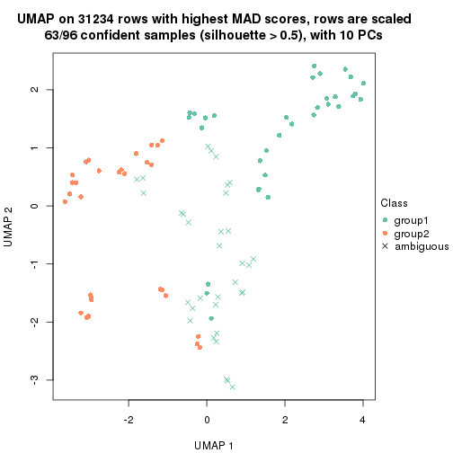
dimension_reduction(res, k = 3, method = "UMAP")
dimension_reduction(res, k = 4, method = "UMAP")
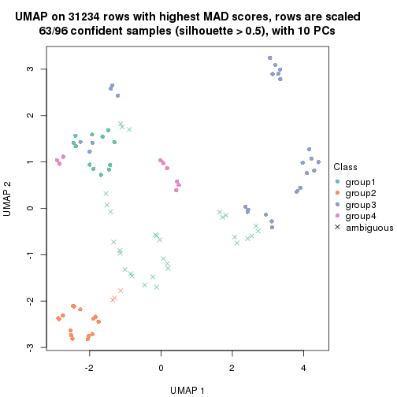
dimension_reduction(res, k = 5, method = "UMAP")
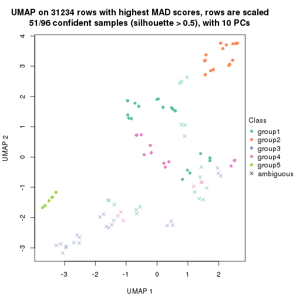
dimension_reduction(res, k = 6, method = "UMAP")
Following heatmap shows how subgroups are split when increasing k:
collect_classes(res)
Test correlation between subgroups and known annotations. If the known annotation is numeric, one-way ANOVA test is applied, and if the known annotation is discrete, chi-squared contingency table test is applied.
test_to_known_factors(res)
#> n tissue(p) k
#> MAD:kmeans 63 2.42e-06 2
#> MAD:kmeans 72 4.97e-12 3
#> MAD:kmeans 63 2.86e-15 4
#> MAD:kmeans 51 6.92e-13 5
#> MAD:kmeans 42 4.28e-11 6
If matrix rows can be associated to genes, consider to use functional_enrichment(res,
...) to perform function enrichment for the signature genes. See this vignette for more detailed explanations.
The object with results only for a single top-value method and a single partition method can be extracted as:
res = res_list["MAD", "skmeans"]
# you can also extract it by
# res = res_list["MAD:skmeans"]
A summary of res and all the functions that can be applied to it:
res
#> A 'ConsensusPartition' object with k = 2, 3, 4, 5, 6.
#> On a matrix with 31234 rows and 96 columns.
#> Top rows (1000, 2000, 3000, 4000, 5000) are extracted by 'MAD' method.
#> Subgroups are detected by 'skmeans' method.
#> Performed in total 1250 partitions by row resampling.
#> Best k for subgroups seems to be 2.
#>
#> Following methods can be applied to this 'ConsensusPartition' object:
#> [1] "cola_report" "collect_classes" "collect_plots"
#> [4] "collect_stats" "colnames" "compare_signatures"
#> [7] "consensus_heatmap" "dimension_reduction" "functional_enrichment"
#> [10] "get_anno_col" "get_anno" "get_classes"
#> [13] "get_consensus" "get_matrix" "get_membership"
#> [16] "get_param" "get_signatures" "get_stats"
#> [19] "is_best_k" "is_stable_k" "membership_heatmap"
#> [22] "ncol" "nrow" "plot_ecdf"
#> [25] "rownames" "select_partition_number" "show"
#> [28] "suggest_best_k" "test_to_known_factors"
collect_plots() function collects all the plots made from res for all k (number of partitions)
into one single page to provide an easy and fast comparison between different k.
collect_plots(res)
The plots are:
k and the heatmap of
predicted classes for each k.k.k.k.All the plots in panels can be made by individual functions and they are plotted later in this section.
select_partition_number() produces several plots showing different
statistics for choosing “optimized” k. There are following statistics:
k;k, the area increased is defined as \(A_k - A_{k-1}\).The detailed explanations of these statistics can be found in the cola vignette.
Generally speaking, lower PAC score, higher mean silhouette score or higher
concordance corresponds to better partition. Rand index and Jaccard index
measure how similar the current partition is compared to partition with k-1.
If they are too similar, we won't accept k is better than k-1.
select_partition_number(res)
The numeric values for all these statistics can be obtained by get_stats().
get_stats(res)
#> k 1-PAC mean_silhouette concordance area_increased Rand Jaccard
#> 2 2 0.684 0.932 0.962 0.5033 0.497 0.497
#> 3 3 0.724 0.878 0.942 0.3176 0.700 0.472
#> 4 4 0.750 0.841 0.887 0.1270 0.858 0.612
#> 5 5 0.710 0.628 0.759 0.0639 0.941 0.770
#> 6 6 0.752 0.573 0.758 0.0436 0.895 0.561
suggest_best_k() suggests the best \(k\) based on these statistics. The rules are as follows:
suggest_best_k(res)
#> [1] 2
Following shows the table of the partitions (You need to click the show/hide
code output link to see it). The membership matrix (columns with name p*)
is inferred by
clue::cl_consensus()
function with the SE method. Basically the value in the membership matrix
represents the probability to belong to a certain group. The finall class
label for an item is determined with the group with highest probability it
belongs to.
In get_classes() function, the entropy is calculated from the membership
matrix and the silhouette score is calculated from the consensus matrix.
cbind(get_classes(res, k = 2), get_membership(res, k = 2))
#> class entropy silhouette p1 p2
#> GSM194459 2 0.506 0.889 0.112 0.888
#> GSM194460 2 0.506 0.889 0.112 0.888
#> GSM194461 2 0.506 0.889 0.112 0.888
#> GSM194462 2 0.000 0.945 0.000 1.000
#> GSM194463 2 0.000 0.945 0.000 1.000
#> GSM194464 2 0.000 0.945 0.000 1.000
#> GSM194465 2 0.469 0.897 0.100 0.900
#> GSM194466 2 0.469 0.897 0.100 0.900
#> GSM194467 2 0.469 0.897 0.100 0.900
#> GSM194468 2 0.552 0.877 0.128 0.872
#> GSM194469 2 0.552 0.877 0.128 0.872
#> GSM194470 2 0.552 0.877 0.128 0.872
#> GSM194471 1 0.000 0.977 1.000 0.000
#> GSM194472 1 0.000 0.977 1.000 0.000
#> GSM194473 1 0.000 0.977 1.000 0.000
#> GSM194474 1 0.000 0.977 1.000 0.000
#> GSM194475 1 0.000 0.977 1.000 0.000
#> GSM194476 1 0.000 0.977 1.000 0.000
#> GSM194477 1 0.552 0.867 0.872 0.128
#> GSM194478 1 0.552 0.867 0.872 0.128
#> GSM194479 1 0.552 0.867 0.872 0.128
#> GSM194480 1 0.000 0.977 1.000 0.000
#> GSM194481 1 0.000 0.977 1.000 0.000
#> GSM194482 1 0.000 0.977 1.000 0.000
#> GSM194483 1 0.000 0.977 1.000 0.000
#> GSM194484 1 0.000 0.977 1.000 0.000
#> GSM194485 1 0.000 0.977 1.000 0.000
#> GSM194486 1 0.000 0.977 1.000 0.000
#> GSM194487 1 0.000 0.977 1.000 0.000
#> GSM194488 1 0.000 0.977 1.000 0.000
#> GSM194489 2 0.000 0.945 0.000 1.000
#> GSM194490 2 0.000 0.945 0.000 1.000
#> GSM194491 2 0.000 0.945 0.000 1.000
#> GSM194492 2 0.000 0.945 0.000 1.000
#> GSM194493 2 0.000 0.945 0.000 1.000
#> GSM194494 2 0.000 0.945 0.000 1.000
#> GSM194495 1 0.000 0.977 1.000 0.000
#> GSM194496 1 0.000 0.977 1.000 0.000
#> GSM194497 1 0.000 0.977 1.000 0.000
#> GSM194498 2 0.000 0.945 0.000 1.000
#> GSM194499 2 0.000 0.945 0.000 1.000
#> GSM194500 2 0.000 0.945 0.000 1.000
#> GSM194501 2 0.881 0.668 0.300 0.700
#> GSM194502 2 0.881 0.668 0.300 0.700
#> GSM194503 2 0.881 0.668 0.300 0.700
#> GSM194504 1 0.000 0.977 1.000 0.000
#> GSM194505 1 0.000 0.977 1.000 0.000
#> GSM194506 1 0.000 0.977 1.000 0.000
#> GSM194507 1 0.000 0.977 1.000 0.000
#> GSM194508 1 0.000 0.977 1.000 0.000
#> GSM194509 1 0.000 0.977 1.000 0.000
#> GSM194510 1 0.278 0.939 0.952 0.048
#> GSM194511 1 0.278 0.939 0.952 0.048
#> GSM194512 1 0.278 0.939 0.952 0.048
#> GSM194513 2 0.000 0.945 0.000 1.000
#> GSM194514 2 0.000 0.945 0.000 1.000
#> GSM194515 2 0.000 0.945 0.000 1.000
#> GSM194516 2 0.000 0.945 0.000 1.000
#> GSM194517 2 0.000 0.945 0.000 1.000
#> GSM194518 2 0.000 0.945 0.000 1.000
#> GSM194519 1 0.000 0.977 1.000 0.000
#> GSM194520 1 0.000 0.977 1.000 0.000
#> GSM194521 1 0.000 0.977 1.000 0.000
#> GSM194522 1 0.000 0.977 1.000 0.000
#> GSM194523 1 0.000 0.977 1.000 0.000
#> GSM194524 1 0.000 0.977 1.000 0.000
#> GSM194525 2 0.662 0.837 0.172 0.828
#> GSM194526 2 0.662 0.837 0.172 0.828
#> GSM194527 2 0.662 0.837 0.172 0.828
#> GSM194528 1 0.584 0.855 0.860 0.140
#> GSM194529 1 0.584 0.855 0.860 0.140
#> GSM194530 1 0.584 0.855 0.860 0.140
#> GSM194531 2 0.000 0.945 0.000 1.000
#> GSM194532 2 0.000 0.945 0.000 1.000
#> GSM194533 2 0.000 0.945 0.000 1.000
#> GSM194534 2 0.000 0.945 0.000 1.000
#> GSM194535 2 0.000 0.945 0.000 1.000
#> GSM194536 2 0.000 0.945 0.000 1.000
#> GSM194537 2 0.430 0.890 0.088 0.912
#> GSM194538 2 0.430 0.890 0.088 0.912
#> GSM194539 2 0.430 0.890 0.088 0.912
#> GSM194540 2 0.000 0.945 0.000 1.000
#> GSM194541 2 0.000 0.945 0.000 1.000
#> GSM194542 2 0.000 0.945 0.000 1.000
#> GSM194543 1 0.000 0.977 1.000 0.000
#> GSM194544 1 0.000 0.977 1.000 0.000
#> GSM194545 1 0.000 0.977 1.000 0.000
#> GSM194546 2 0.000 0.945 0.000 1.000
#> GSM194547 2 0.000 0.945 0.000 1.000
#> GSM194548 2 0.000 0.945 0.000 1.000
#> GSM194549 2 0.000 0.945 0.000 1.000
#> GSM194550 2 0.000 0.945 0.000 1.000
#> GSM194551 2 0.000 0.945 0.000 1.000
#> GSM194552 1 0.000 0.977 1.000 0.000
#> GSM194553 1 0.000 0.977 1.000 0.000
#> GSM194554 1 0.000 0.977 1.000 0.000
cbind(get_classes(res, k = 3), get_membership(res, k = 3))
#> class entropy silhouette p1 p2 p3
#> GSM194459 2 0.1031 0.949 0.024 0.976 0.000
#> GSM194460 2 0.1031 0.949 0.024 0.976 0.000
#> GSM194461 2 0.1031 0.949 0.024 0.976 0.000
#> GSM194462 1 0.0747 0.894 0.984 0.016 0.000
#> GSM194463 1 0.0747 0.894 0.984 0.016 0.000
#> GSM194464 1 0.0747 0.894 0.984 0.016 0.000
#> GSM194465 1 0.6489 0.231 0.540 0.456 0.004
#> GSM194466 1 0.6489 0.231 0.540 0.456 0.004
#> GSM194467 1 0.6489 0.231 0.540 0.456 0.004
#> GSM194468 2 0.0747 0.955 0.016 0.984 0.000
#> GSM194469 2 0.0747 0.955 0.016 0.984 0.000
#> GSM194470 2 0.0747 0.955 0.016 0.984 0.000
#> GSM194471 3 0.0000 0.965 0.000 0.000 1.000
#> GSM194472 3 0.0000 0.965 0.000 0.000 1.000
#> GSM194473 3 0.0000 0.965 0.000 0.000 1.000
#> GSM194474 3 0.0000 0.965 0.000 0.000 1.000
#> GSM194475 3 0.0000 0.965 0.000 0.000 1.000
#> GSM194476 3 0.0000 0.965 0.000 0.000 1.000
#> GSM194477 1 0.0424 0.895 0.992 0.000 0.008
#> GSM194478 1 0.0424 0.895 0.992 0.000 0.008
#> GSM194479 1 0.0424 0.895 0.992 0.000 0.008
#> GSM194480 3 0.0000 0.965 0.000 0.000 1.000
#> GSM194481 3 0.0000 0.965 0.000 0.000 1.000
#> GSM194482 3 0.0000 0.965 0.000 0.000 1.000
#> GSM194483 3 0.0000 0.965 0.000 0.000 1.000
#> GSM194484 3 0.0000 0.965 0.000 0.000 1.000
#> GSM194485 3 0.0000 0.965 0.000 0.000 1.000
#> GSM194486 3 0.0000 0.965 0.000 0.000 1.000
#> GSM194487 3 0.0000 0.965 0.000 0.000 1.000
#> GSM194488 3 0.0000 0.965 0.000 0.000 1.000
#> GSM194489 2 0.4931 0.703 0.232 0.768 0.000
#> GSM194490 2 0.4931 0.703 0.232 0.768 0.000
#> GSM194491 2 0.4931 0.703 0.232 0.768 0.000
#> GSM194492 1 0.0424 0.895 0.992 0.008 0.000
#> GSM194493 1 0.0424 0.895 0.992 0.008 0.000
#> GSM194494 1 0.0424 0.895 0.992 0.008 0.000
#> GSM194495 3 0.3879 0.828 0.152 0.000 0.848
#> GSM194496 3 0.3879 0.828 0.152 0.000 0.848
#> GSM194497 3 0.3879 0.828 0.152 0.000 0.848
#> GSM194498 1 0.0892 0.892 0.980 0.020 0.000
#> GSM194499 1 0.0892 0.892 0.980 0.020 0.000
#> GSM194500 1 0.0892 0.892 0.980 0.020 0.000
#> GSM194501 1 0.1751 0.889 0.960 0.012 0.028
#> GSM194502 1 0.1751 0.889 0.960 0.012 0.028
#> GSM194503 1 0.1751 0.889 0.960 0.012 0.028
#> GSM194504 3 0.0000 0.965 0.000 0.000 1.000
#> GSM194505 3 0.0000 0.965 0.000 0.000 1.000
#> GSM194506 3 0.0000 0.965 0.000 0.000 1.000
#> GSM194507 3 0.0000 0.965 0.000 0.000 1.000
#> GSM194508 3 0.0000 0.965 0.000 0.000 1.000
#> GSM194509 3 0.0000 0.965 0.000 0.000 1.000
#> GSM194510 1 0.3193 0.848 0.896 0.004 0.100
#> GSM194511 1 0.3193 0.848 0.896 0.004 0.100
#> GSM194512 1 0.3193 0.848 0.896 0.004 0.100
#> GSM194513 2 0.0000 0.962 0.000 1.000 0.000
#> GSM194514 2 0.0000 0.962 0.000 1.000 0.000
#> GSM194515 2 0.0000 0.962 0.000 1.000 0.000
#> GSM194516 2 0.0000 0.962 0.000 1.000 0.000
#> GSM194517 2 0.0000 0.962 0.000 1.000 0.000
#> GSM194518 2 0.0000 0.962 0.000 1.000 0.000
#> GSM194519 1 0.5988 0.480 0.632 0.000 0.368
#> GSM194520 1 0.5988 0.480 0.632 0.000 0.368
#> GSM194521 1 0.5988 0.480 0.632 0.000 0.368
#> GSM194522 3 0.4346 0.769 0.184 0.000 0.816
#> GSM194523 3 0.4346 0.769 0.184 0.000 0.816
#> GSM194524 3 0.4346 0.769 0.184 0.000 0.816
#> GSM194525 1 0.3116 0.835 0.892 0.108 0.000
#> GSM194526 1 0.3116 0.835 0.892 0.108 0.000
#> GSM194527 1 0.3116 0.835 0.892 0.108 0.000
#> GSM194528 1 0.3192 0.844 0.888 0.000 0.112
#> GSM194529 1 0.3192 0.844 0.888 0.000 0.112
#> GSM194530 1 0.3192 0.844 0.888 0.000 0.112
#> GSM194531 1 0.0237 0.895 0.996 0.004 0.000
#> GSM194532 1 0.0237 0.895 0.996 0.004 0.000
#> GSM194533 1 0.0237 0.895 0.996 0.004 0.000
#> GSM194534 1 0.0424 0.895 0.992 0.008 0.000
#> GSM194535 1 0.0424 0.895 0.992 0.008 0.000
#> GSM194536 1 0.0424 0.895 0.992 0.008 0.000
#> GSM194537 1 0.0424 0.895 0.992 0.008 0.000
#> GSM194538 1 0.0424 0.895 0.992 0.008 0.000
#> GSM194539 1 0.0424 0.895 0.992 0.008 0.000
#> GSM194540 2 0.0000 0.962 0.000 1.000 0.000
#> GSM194541 2 0.0000 0.962 0.000 1.000 0.000
#> GSM194542 2 0.0000 0.962 0.000 1.000 0.000
#> GSM194543 3 0.0000 0.965 0.000 0.000 1.000
#> GSM194544 3 0.0000 0.965 0.000 0.000 1.000
#> GSM194545 3 0.0000 0.965 0.000 0.000 1.000
#> GSM194546 2 0.0000 0.962 0.000 1.000 0.000
#> GSM194547 2 0.0000 0.962 0.000 1.000 0.000
#> GSM194548 2 0.0000 0.962 0.000 1.000 0.000
#> GSM194549 2 0.0000 0.962 0.000 1.000 0.000
#> GSM194550 2 0.0000 0.962 0.000 1.000 0.000
#> GSM194551 2 0.0000 0.962 0.000 1.000 0.000
#> GSM194552 3 0.0000 0.965 0.000 0.000 1.000
#> GSM194553 3 0.0000 0.965 0.000 0.000 1.000
#> GSM194554 3 0.0000 0.965 0.000 0.000 1.000
cbind(get_classes(res, k = 4), get_membership(res, k = 4))
#> class entropy silhouette p1 p2 p3 p4
#> GSM194459 4 0.2198 0.803 0.008 0.072 0.000 0.920
#> GSM194460 4 0.2198 0.803 0.008 0.072 0.000 0.920
#> GSM194461 4 0.2198 0.803 0.008 0.072 0.000 0.920
#> GSM194462 1 0.1182 0.855 0.968 0.016 0.000 0.016
#> GSM194463 1 0.1182 0.855 0.968 0.016 0.000 0.016
#> GSM194464 1 0.1182 0.855 0.968 0.016 0.000 0.016
#> GSM194465 4 0.2867 0.825 0.104 0.012 0.000 0.884
#> GSM194466 4 0.2867 0.825 0.104 0.012 0.000 0.884
#> GSM194467 4 0.2867 0.825 0.104 0.012 0.000 0.884
#> GSM194468 4 0.5695 0.666 0.036 0.256 0.016 0.692
#> GSM194469 4 0.5695 0.666 0.036 0.256 0.016 0.692
#> GSM194470 4 0.5695 0.666 0.036 0.256 0.016 0.692
#> GSM194471 3 0.0188 0.926 0.000 0.000 0.996 0.004
#> GSM194472 3 0.0188 0.926 0.000 0.000 0.996 0.004
#> GSM194473 3 0.0188 0.926 0.000 0.000 0.996 0.004
#> GSM194474 3 0.0188 0.926 0.000 0.000 0.996 0.004
#> GSM194475 3 0.0188 0.926 0.000 0.000 0.996 0.004
#> GSM194476 3 0.0188 0.926 0.000 0.000 0.996 0.004
#> GSM194477 1 0.1302 0.858 0.956 0.000 0.000 0.044
#> GSM194478 1 0.1302 0.858 0.956 0.000 0.000 0.044
#> GSM194479 1 0.1302 0.858 0.956 0.000 0.000 0.044
#> GSM194480 3 0.1635 0.914 0.008 0.000 0.948 0.044
#> GSM194481 3 0.1635 0.914 0.008 0.000 0.948 0.044
#> GSM194482 3 0.1635 0.914 0.008 0.000 0.948 0.044
#> GSM194483 3 0.1767 0.913 0.012 0.000 0.944 0.044
#> GSM194484 3 0.1767 0.913 0.012 0.000 0.944 0.044
#> GSM194485 3 0.1767 0.913 0.012 0.000 0.944 0.044
#> GSM194486 3 0.0188 0.926 0.000 0.000 0.996 0.004
#> GSM194487 3 0.0188 0.926 0.000 0.000 0.996 0.004
#> GSM194488 3 0.0188 0.926 0.000 0.000 0.996 0.004
#> GSM194489 2 0.4420 0.696 0.240 0.748 0.000 0.012
#> GSM194490 2 0.4420 0.696 0.240 0.748 0.000 0.012
#> GSM194491 2 0.4420 0.696 0.240 0.748 0.000 0.012
#> GSM194492 1 0.3266 0.847 0.832 0.000 0.000 0.168
#> GSM194493 1 0.3266 0.847 0.832 0.000 0.000 0.168
#> GSM194494 1 0.3266 0.847 0.832 0.000 0.000 0.168
#> GSM194495 3 0.6295 0.500 0.296 0.000 0.616 0.088
#> GSM194496 3 0.6295 0.500 0.296 0.000 0.616 0.088
#> GSM194497 3 0.6295 0.500 0.296 0.000 0.616 0.088
#> GSM194498 1 0.3791 0.838 0.796 0.004 0.000 0.200
#> GSM194499 1 0.3791 0.838 0.796 0.004 0.000 0.200
#> GSM194500 1 0.3791 0.838 0.796 0.004 0.000 0.200
#> GSM194501 1 0.3300 0.747 0.848 0.008 0.000 0.144
#> GSM194502 1 0.3300 0.747 0.848 0.008 0.000 0.144
#> GSM194503 1 0.3300 0.747 0.848 0.008 0.000 0.144
#> GSM194504 3 0.2924 0.860 0.100 0.000 0.884 0.016
#> GSM194505 3 0.2924 0.860 0.100 0.000 0.884 0.016
#> GSM194506 3 0.2924 0.860 0.100 0.000 0.884 0.016
#> GSM194507 3 0.0592 0.925 0.000 0.000 0.984 0.016
#> GSM194508 3 0.0592 0.925 0.000 0.000 0.984 0.016
#> GSM194509 3 0.0592 0.925 0.000 0.000 0.984 0.016
#> GSM194510 4 0.2081 0.827 0.084 0.000 0.000 0.916
#> GSM194511 4 0.2081 0.827 0.084 0.000 0.000 0.916
#> GSM194512 4 0.2081 0.827 0.084 0.000 0.000 0.916
#> GSM194513 2 0.0000 0.946 0.000 1.000 0.000 0.000
#> GSM194514 2 0.0000 0.946 0.000 1.000 0.000 0.000
#> GSM194515 2 0.0000 0.946 0.000 1.000 0.000 0.000
#> GSM194516 2 0.0000 0.946 0.000 1.000 0.000 0.000
#> GSM194517 2 0.0000 0.946 0.000 1.000 0.000 0.000
#> GSM194518 2 0.0000 0.946 0.000 1.000 0.000 0.000
#> GSM194519 4 0.3969 0.794 0.180 0.000 0.016 0.804
#> GSM194520 4 0.3969 0.794 0.180 0.000 0.016 0.804
#> GSM194521 4 0.3969 0.794 0.180 0.000 0.016 0.804
#> GSM194522 4 0.3533 0.806 0.080 0.000 0.056 0.864
#> GSM194523 4 0.3533 0.806 0.080 0.000 0.056 0.864
#> GSM194524 4 0.3533 0.806 0.080 0.000 0.056 0.864
#> GSM194525 4 0.4655 0.546 0.312 0.004 0.000 0.684
#> GSM194526 4 0.4655 0.546 0.312 0.004 0.000 0.684
#> GSM194527 4 0.4655 0.546 0.312 0.004 0.000 0.684
#> GSM194528 1 0.2867 0.805 0.884 0.000 0.012 0.104
#> GSM194529 1 0.2867 0.805 0.884 0.000 0.012 0.104
#> GSM194530 1 0.2867 0.805 0.884 0.000 0.012 0.104
#> GSM194531 1 0.3610 0.844 0.800 0.000 0.000 0.200
#> GSM194532 1 0.3610 0.844 0.800 0.000 0.000 0.200
#> GSM194533 1 0.3610 0.844 0.800 0.000 0.000 0.200
#> GSM194534 1 0.3626 0.844 0.812 0.004 0.000 0.184
#> GSM194535 1 0.3626 0.844 0.812 0.004 0.000 0.184
#> GSM194536 1 0.3626 0.844 0.812 0.004 0.000 0.184
#> GSM194537 1 0.0707 0.856 0.980 0.000 0.000 0.020
#> GSM194538 1 0.0707 0.856 0.980 0.000 0.000 0.020
#> GSM194539 1 0.0707 0.856 0.980 0.000 0.000 0.020
#> GSM194540 2 0.0000 0.946 0.000 1.000 0.000 0.000
#> GSM194541 2 0.0000 0.946 0.000 1.000 0.000 0.000
#> GSM194542 2 0.0000 0.946 0.000 1.000 0.000 0.000
#> GSM194543 3 0.1807 0.910 0.008 0.000 0.940 0.052
#> GSM194544 3 0.1807 0.910 0.008 0.000 0.940 0.052
#> GSM194545 3 0.1807 0.910 0.008 0.000 0.940 0.052
#> GSM194546 2 0.0000 0.946 0.000 1.000 0.000 0.000
#> GSM194547 2 0.0000 0.946 0.000 1.000 0.000 0.000
#> GSM194548 2 0.0000 0.946 0.000 1.000 0.000 0.000
#> GSM194549 2 0.0000 0.946 0.000 1.000 0.000 0.000
#> GSM194550 2 0.0000 0.946 0.000 1.000 0.000 0.000
#> GSM194551 2 0.0000 0.946 0.000 1.000 0.000 0.000
#> GSM194552 3 0.0804 0.924 0.008 0.000 0.980 0.012
#> GSM194553 3 0.0804 0.924 0.008 0.000 0.980 0.012
#> GSM194554 3 0.0804 0.924 0.008 0.000 0.980 0.012
cbind(get_classes(res, k = 5), get_membership(res, k = 5))
#> class entropy silhouette p1 p2 p3 p4 p5
#> GSM194459 4 0.2460 0.762 0.004 0.024 0.000 0.900 0.072
#> GSM194460 4 0.2460 0.762 0.004 0.024 0.000 0.900 0.072
#> GSM194461 4 0.2460 0.762 0.004 0.024 0.000 0.900 0.072
#> GSM194462 1 0.0771 0.605 0.976 0.004 0.000 0.000 0.020
#> GSM194463 1 0.0771 0.605 0.976 0.004 0.000 0.000 0.020
#> GSM194464 1 0.0771 0.605 0.976 0.004 0.000 0.000 0.020
#> GSM194465 4 0.1251 0.769 0.036 0.000 0.000 0.956 0.008
#> GSM194466 4 0.1251 0.769 0.036 0.000 0.000 0.956 0.008
#> GSM194467 4 0.1251 0.769 0.036 0.000 0.000 0.956 0.008
#> GSM194468 4 0.5423 0.689 0.012 0.180 0.048 0.720 0.040
#> GSM194469 4 0.5423 0.689 0.012 0.180 0.048 0.720 0.040
#> GSM194470 4 0.5423 0.689 0.012 0.180 0.048 0.720 0.040
#> GSM194471 3 0.0000 0.851 0.000 0.000 1.000 0.000 0.000
#> GSM194472 3 0.0000 0.851 0.000 0.000 1.000 0.000 0.000
#> GSM194473 3 0.0000 0.851 0.000 0.000 1.000 0.000 0.000
#> GSM194474 3 0.0000 0.851 0.000 0.000 1.000 0.000 0.000
#> GSM194475 3 0.0000 0.851 0.000 0.000 1.000 0.000 0.000
#> GSM194476 3 0.0000 0.851 0.000 0.000 1.000 0.000 0.000
#> GSM194477 1 0.4305 0.517 0.768 0.000 0.008 0.048 0.176
#> GSM194478 1 0.4305 0.517 0.768 0.000 0.008 0.048 0.176
#> GSM194479 1 0.4305 0.517 0.768 0.000 0.008 0.048 0.176
#> GSM194480 3 0.4855 0.781 0.000 0.000 0.720 0.112 0.168
#> GSM194481 3 0.4855 0.781 0.000 0.000 0.720 0.112 0.168
#> GSM194482 3 0.4855 0.781 0.000 0.000 0.720 0.112 0.168
#> GSM194483 3 0.5038 0.786 0.016 0.000 0.728 0.088 0.168
#> GSM194484 3 0.5038 0.786 0.016 0.000 0.728 0.088 0.168
#> GSM194485 3 0.5038 0.786 0.016 0.000 0.728 0.088 0.168
#> GSM194486 3 0.0000 0.851 0.000 0.000 1.000 0.000 0.000
#> GSM194487 3 0.0000 0.851 0.000 0.000 1.000 0.000 0.000
#> GSM194488 3 0.0000 0.851 0.000 0.000 1.000 0.000 0.000
#> GSM194489 2 0.6278 0.298 0.212 0.536 0.000 0.000 0.252
#> GSM194490 2 0.6278 0.298 0.212 0.536 0.000 0.000 0.252
#> GSM194491 2 0.6278 0.298 0.212 0.536 0.000 0.000 0.252
#> GSM194492 5 0.4747 0.425 0.484 0.000 0.000 0.016 0.500
#> GSM194493 5 0.4747 0.425 0.484 0.000 0.000 0.016 0.500
#> GSM194494 5 0.4747 0.425 0.484 0.000 0.000 0.016 0.500
#> GSM194495 5 0.7337 -0.149 0.240 0.000 0.312 0.032 0.416
#> GSM194496 5 0.7337 -0.149 0.240 0.000 0.312 0.032 0.416
#> GSM194497 5 0.7337 -0.149 0.240 0.000 0.312 0.032 0.416
#> GSM194498 5 0.5176 0.416 0.468 0.000 0.000 0.040 0.492
#> GSM194499 5 0.5176 0.416 0.468 0.000 0.000 0.040 0.492
#> GSM194500 5 0.5176 0.416 0.468 0.000 0.000 0.040 0.492
#> GSM194501 1 0.4046 0.409 0.696 0.000 0.000 0.008 0.296
#> GSM194502 1 0.4046 0.409 0.696 0.000 0.000 0.008 0.296
#> GSM194503 1 0.4046 0.409 0.696 0.000 0.000 0.008 0.296
#> GSM194504 3 0.6628 0.584 0.212 0.000 0.540 0.016 0.232
#> GSM194505 3 0.6628 0.584 0.212 0.000 0.540 0.016 0.232
#> GSM194506 3 0.6628 0.584 0.212 0.000 0.540 0.016 0.232
#> GSM194507 3 0.2325 0.837 0.000 0.000 0.904 0.028 0.068
#> GSM194508 3 0.2325 0.837 0.000 0.000 0.904 0.028 0.068
#> GSM194509 3 0.2325 0.837 0.000 0.000 0.904 0.028 0.068
#> GSM194510 4 0.2293 0.761 0.016 0.000 0.000 0.900 0.084
#> GSM194511 4 0.2293 0.761 0.016 0.000 0.000 0.900 0.084
#> GSM194512 4 0.2293 0.761 0.016 0.000 0.000 0.900 0.084
#> GSM194513 2 0.0000 0.907 0.000 1.000 0.000 0.000 0.000
#> GSM194514 2 0.0000 0.907 0.000 1.000 0.000 0.000 0.000
#> GSM194515 2 0.0000 0.907 0.000 1.000 0.000 0.000 0.000
#> GSM194516 2 0.0000 0.907 0.000 1.000 0.000 0.000 0.000
#> GSM194517 2 0.0000 0.907 0.000 1.000 0.000 0.000 0.000
#> GSM194518 2 0.0000 0.907 0.000 1.000 0.000 0.000 0.000
#> GSM194519 4 0.5849 0.639 0.220 0.000 0.012 0.636 0.132
#> GSM194520 4 0.5849 0.639 0.220 0.000 0.012 0.636 0.132
#> GSM194521 4 0.5849 0.639 0.220 0.000 0.012 0.636 0.132
#> GSM194522 4 0.5737 0.696 0.028 0.000 0.088 0.660 0.224
#> GSM194523 4 0.5737 0.696 0.028 0.000 0.088 0.660 0.224
#> GSM194524 4 0.5737 0.696 0.028 0.000 0.088 0.660 0.224
#> GSM194525 4 0.6636 0.433 0.244 0.000 0.000 0.444 0.312
#> GSM194526 4 0.6636 0.433 0.244 0.000 0.000 0.444 0.312
#> GSM194527 4 0.6636 0.433 0.244 0.000 0.000 0.444 0.312
#> GSM194528 1 0.4316 0.560 0.784 0.000 0.008 0.080 0.128
#> GSM194529 1 0.4316 0.560 0.784 0.000 0.008 0.080 0.128
#> GSM194530 1 0.4316 0.560 0.784 0.000 0.008 0.080 0.128
#> GSM194531 5 0.5096 0.422 0.444 0.000 0.000 0.036 0.520
#> GSM194532 5 0.5096 0.422 0.444 0.000 0.000 0.036 0.520
#> GSM194533 5 0.5096 0.422 0.444 0.000 0.000 0.036 0.520
#> GSM194534 1 0.5238 -0.463 0.480 0.000 0.000 0.044 0.476
#> GSM194535 1 0.5238 -0.463 0.480 0.000 0.000 0.044 0.476
#> GSM194536 1 0.5238 -0.463 0.480 0.000 0.000 0.044 0.476
#> GSM194537 1 0.0566 0.613 0.984 0.000 0.000 0.004 0.012
#> GSM194538 1 0.0566 0.613 0.984 0.000 0.000 0.004 0.012
#> GSM194539 1 0.0566 0.613 0.984 0.000 0.000 0.004 0.012
#> GSM194540 2 0.0000 0.907 0.000 1.000 0.000 0.000 0.000
#> GSM194541 2 0.0000 0.907 0.000 1.000 0.000 0.000 0.000
#> GSM194542 2 0.0000 0.907 0.000 1.000 0.000 0.000 0.000
#> GSM194543 3 0.4497 0.773 0.000 0.000 0.732 0.060 0.208
#> GSM194544 3 0.4497 0.773 0.000 0.000 0.732 0.060 0.208
#> GSM194545 3 0.4497 0.773 0.000 0.000 0.732 0.060 0.208
#> GSM194546 2 0.0000 0.907 0.000 1.000 0.000 0.000 0.000
#> GSM194547 2 0.0000 0.907 0.000 1.000 0.000 0.000 0.000
#> GSM194548 2 0.0000 0.907 0.000 1.000 0.000 0.000 0.000
#> GSM194549 2 0.0000 0.907 0.000 1.000 0.000 0.000 0.000
#> GSM194550 2 0.0000 0.907 0.000 1.000 0.000 0.000 0.000
#> GSM194551 2 0.0000 0.907 0.000 1.000 0.000 0.000 0.000
#> GSM194552 3 0.2110 0.830 0.000 0.000 0.912 0.016 0.072
#> GSM194553 3 0.2110 0.830 0.000 0.000 0.912 0.016 0.072
#> GSM194554 3 0.2110 0.830 0.000 0.000 0.912 0.016 0.072
cbind(get_classes(res, k = 6), get_membership(res, k = 6))
#> class entropy silhouette p1 p2 p3 p4 p5 p6
#> GSM194459 4 0.1823 0.7443 0.036 0.012 0.000 0.932 0.016 0.004
#> GSM194460 4 0.1823 0.7443 0.036 0.012 0.000 0.932 0.016 0.004
#> GSM194461 4 0.1823 0.7443 0.036 0.012 0.000 0.932 0.016 0.004
#> GSM194462 6 0.3684 0.5066 0.332 0.004 0.000 0.000 0.000 0.664
#> GSM194463 6 0.3684 0.5066 0.332 0.004 0.000 0.000 0.000 0.664
#> GSM194464 6 0.3684 0.5066 0.332 0.004 0.000 0.000 0.000 0.664
#> GSM194465 4 0.1226 0.7524 0.004 0.000 0.000 0.952 0.004 0.040
#> GSM194466 4 0.1226 0.7524 0.004 0.000 0.000 0.952 0.004 0.040
#> GSM194467 4 0.1226 0.7524 0.004 0.000 0.000 0.952 0.004 0.040
#> GSM194468 4 0.4788 0.6851 0.004 0.080 0.016 0.760 0.100 0.040
#> GSM194469 4 0.4788 0.6851 0.004 0.080 0.016 0.760 0.100 0.040
#> GSM194470 4 0.4788 0.6851 0.004 0.080 0.016 0.760 0.100 0.040
#> GSM194471 3 0.0000 0.6395 0.000 0.000 1.000 0.000 0.000 0.000
#> GSM194472 3 0.0000 0.6395 0.000 0.000 1.000 0.000 0.000 0.000
#> GSM194473 3 0.0000 0.6395 0.000 0.000 1.000 0.000 0.000 0.000
#> GSM194474 3 0.0405 0.6374 0.000 0.000 0.988 0.000 0.008 0.004
#> GSM194475 3 0.0405 0.6374 0.000 0.000 0.988 0.000 0.008 0.004
#> GSM194476 3 0.0405 0.6374 0.000 0.000 0.988 0.000 0.008 0.004
#> GSM194477 1 0.5734 -0.0950 0.480 0.000 0.000 0.020 0.100 0.400
#> GSM194478 1 0.5734 -0.0950 0.480 0.000 0.000 0.020 0.100 0.400
#> GSM194479 1 0.5734 -0.0950 0.480 0.000 0.000 0.020 0.100 0.400
#> GSM194480 3 0.5306 0.2259 0.000 0.000 0.488 0.036 0.440 0.036
#> GSM194481 3 0.5306 0.2259 0.000 0.000 0.488 0.036 0.440 0.036
#> GSM194482 3 0.5306 0.2259 0.000 0.000 0.488 0.036 0.440 0.036
#> GSM194483 3 0.5186 0.2284 0.000 0.000 0.492 0.028 0.444 0.036
#> GSM194484 3 0.5186 0.2284 0.000 0.000 0.492 0.028 0.444 0.036
#> GSM194485 3 0.5186 0.2284 0.000 0.000 0.492 0.028 0.444 0.036
#> GSM194486 3 0.0146 0.6390 0.000 0.000 0.996 0.000 0.004 0.000
#> GSM194487 3 0.0146 0.6390 0.000 0.000 0.996 0.000 0.004 0.000
#> GSM194488 3 0.0146 0.6390 0.000 0.000 0.996 0.000 0.004 0.000
#> GSM194489 1 0.4091 0.1533 0.520 0.472 0.000 0.000 0.008 0.000
#> GSM194490 1 0.4091 0.1533 0.520 0.472 0.000 0.000 0.008 0.000
#> GSM194491 1 0.4091 0.1533 0.520 0.472 0.000 0.000 0.008 0.000
#> GSM194492 1 0.1391 0.6887 0.944 0.000 0.000 0.000 0.016 0.040
#> GSM194493 1 0.1391 0.6887 0.944 0.000 0.000 0.000 0.016 0.040
#> GSM194494 1 0.1391 0.6887 0.944 0.000 0.000 0.000 0.016 0.040
#> GSM194495 5 0.6675 0.5823 0.076 0.000 0.160 0.012 0.548 0.204
#> GSM194496 5 0.6675 0.5823 0.076 0.000 0.160 0.012 0.548 0.204
#> GSM194497 5 0.6675 0.5823 0.076 0.000 0.160 0.012 0.548 0.204
#> GSM194498 1 0.1802 0.6932 0.932 0.000 0.000 0.024 0.020 0.024
#> GSM194499 1 0.1802 0.6932 0.932 0.000 0.000 0.024 0.020 0.024
#> GSM194500 1 0.1802 0.6932 0.932 0.000 0.000 0.024 0.020 0.024
#> GSM194501 6 0.3121 0.5153 0.044 0.000 0.000 0.004 0.116 0.836
#> GSM194502 6 0.3121 0.5153 0.044 0.000 0.000 0.004 0.116 0.836
#> GSM194503 6 0.3121 0.5153 0.044 0.000 0.000 0.004 0.116 0.836
#> GSM194504 5 0.6045 0.4854 0.000 0.000 0.312 0.016 0.496 0.176
#> GSM194505 5 0.6045 0.4854 0.000 0.000 0.312 0.016 0.496 0.176
#> GSM194506 5 0.6045 0.4854 0.000 0.000 0.312 0.016 0.496 0.176
#> GSM194507 3 0.4236 0.4666 0.000 0.000 0.716 0.024 0.236 0.024
#> GSM194508 3 0.4236 0.4666 0.000 0.000 0.716 0.024 0.236 0.024
#> GSM194509 3 0.4236 0.4666 0.000 0.000 0.716 0.024 0.236 0.024
#> GSM194510 4 0.3667 0.7293 0.048 0.000 0.000 0.824 0.064 0.064
#> GSM194511 4 0.3667 0.7293 0.048 0.000 0.000 0.824 0.064 0.064
#> GSM194512 4 0.3667 0.7293 0.048 0.000 0.000 0.824 0.064 0.064
#> GSM194513 2 0.0260 0.9951 0.000 0.992 0.000 0.000 0.008 0.000
#> GSM194514 2 0.0260 0.9951 0.000 0.992 0.000 0.000 0.008 0.000
#> GSM194515 2 0.0260 0.9951 0.000 0.992 0.000 0.000 0.008 0.000
#> GSM194516 2 0.0146 0.9970 0.000 0.996 0.000 0.000 0.004 0.000
#> GSM194517 2 0.0146 0.9970 0.000 0.996 0.000 0.000 0.004 0.000
#> GSM194518 2 0.0146 0.9970 0.000 0.996 0.000 0.000 0.004 0.000
#> GSM194519 4 0.5598 0.5544 0.004 0.000 0.000 0.552 0.164 0.280
#> GSM194520 4 0.5598 0.5544 0.004 0.000 0.000 0.552 0.164 0.280
#> GSM194521 4 0.5598 0.5544 0.004 0.000 0.000 0.552 0.164 0.280
#> GSM194522 4 0.6878 0.5201 0.028 0.000 0.052 0.488 0.300 0.132
#> GSM194523 4 0.6878 0.5201 0.028 0.000 0.052 0.488 0.300 0.132
#> GSM194524 4 0.6878 0.5201 0.028 0.000 0.052 0.488 0.300 0.132
#> GSM194525 6 0.6952 -0.0627 0.076 0.000 0.000 0.360 0.188 0.376
#> GSM194526 6 0.6952 -0.0627 0.076 0.000 0.000 0.360 0.188 0.376
#> GSM194527 6 0.6952 -0.0627 0.076 0.000 0.000 0.360 0.188 0.376
#> GSM194528 6 0.6428 0.3795 0.280 0.000 0.000 0.056 0.156 0.508
#> GSM194529 6 0.6428 0.3795 0.280 0.000 0.000 0.056 0.156 0.508
#> GSM194530 6 0.6428 0.3795 0.280 0.000 0.000 0.056 0.156 0.508
#> GSM194531 1 0.1806 0.6849 0.928 0.000 0.000 0.008 0.020 0.044
#> GSM194532 1 0.1806 0.6849 0.928 0.000 0.000 0.008 0.020 0.044
#> GSM194533 1 0.1806 0.6849 0.928 0.000 0.000 0.008 0.020 0.044
#> GSM194534 1 0.1714 0.6937 0.936 0.000 0.000 0.024 0.016 0.024
#> GSM194535 1 0.1714 0.6937 0.936 0.000 0.000 0.024 0.016 0.024
#> GSM194536 1 0.1714 0.6937 0.936 0.000 0.000 0.024 0.016 0.024
#> GSM194537 6 0.3101 0.5646 0.244 0.000 0.000 0.000 0.000 0.756
#> GSM194538 6 0.3101 0.5646 0.244 0.000 0.000 0.000 0.000 0.756
#> GSM194539 6 0.3101 0.5646 0.244 0.000 0.000 0.000 0.000 0.756
#> GSM194540 2 0.0000 0.9978 0.000 1.000 0.000 0.000 0.000 0.000
#> GSM194541 2 0.0000 0.9978 0.000 1.000 0.000 0.000 0.000 0.000
#> GSM194542 2 0.0000 0.9978 0.000 1.000 0.000 0.000 0.000 0.000
#> GSM194543 5 0.4693 0.3614 0.004 0.000 0.468 0.020 0.500 0.008
#> GSM194544 5 0.4693 0.3614 0.004 0.000 0.468 0.020 0.500 0.008
#> GSM194545 5 0.4693 0.3614 0.004 0.000 0.468 0.020 0.500 0.008
#> GSM194546 2 0.0000 0.9978 0.000 1.000 0.000 0.000 0.000 0.000
#> GSM194547 2 0.0000 0.9978 0.000 1.000 0.000 0.000 0.000 0.000
#> GSM194548 2 0.0000 0.9978 0.000 1.000 0.000 0.000 0.000 0.000
#> GSM194549 2 0.0000 0.9978 0.000 1.000 0.000 0.000 0.000 0.000
#> GSM194550 2 0.0000 0.9978 0.000 1.000 0.000 0.000 0.000 0.000
#> GSM194551 2 0.0000 0.9978 0.000 1.000 0.000 0.000 0.000 0.000
#> GSM194552 3 0.3134 0.3787 0.004 0.000 0.784 0.004 0.208 0.000
#> GSM194553 3 0.3134 0.3787 0.004 0.000 0.784 0.004 0.208 0.000
#> GSM194554 3 0.3134 0.3787 0.004 0.000 0.784 0.004 0.208 0.000
Heatmaps for the consensus matrix. It visualizes the probability of two samples to be in a same group.
consensus_heatmap(res, k = 2)
consensus_heatmap(res, k = 3)
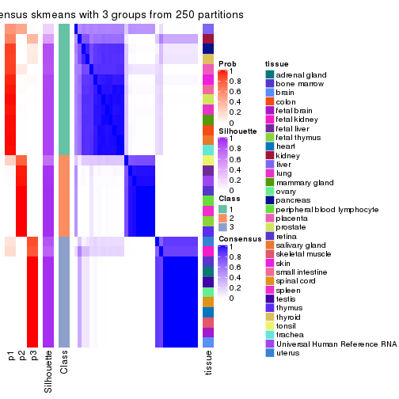
consensus_heatmap(res, k = 4)
consensus_heatmap(res, k = 5)
consensus_heatmap(res, k = 6)
Heatmaps for the membership of samples in all partitions to see how consistent they are:
membership_heatmap(res, k = 2)
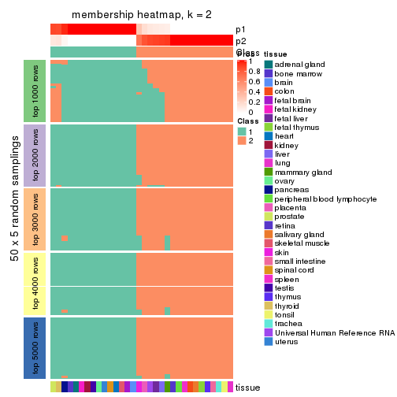
membership_heatmap(res, k = 3)
membership_heatmap(res, k = 4)
membership_heatmap(res, k = 5)

membership_heatmap(res, k = 6)
As soon as we have had the classes for columns, we can look for signatures which are significantly different between classes which can be candidate marks for certain classes. Following are the heatmaps for signatures.
Signature heatmaps where rows are scaled:
get_signatures(res, k = 2)
get_signatures(res, k = 3)
get_signatures(res, k = 4)
get_signatures(res, k = 5)
get_signatures(res, k = 6)
Signature heatmaps where rows are not scaled:
get_signatures(res, k = 2, scale_rows = FALSE)
get_signatures(res, k = 3, scale_rows = FALSE)
get_signatures(res, k = 4, scale_rows = FALSE)
get_signatures(res, k = 5, scale_rows = FALSE)
get_signatures(res, k = 6, scale_rows = FALSE)
Compare the overlap of signatures from different k:
compare_signatures(res)
get_signature() returns a data frame invisibly. TO get the list of signatures, the function
call should be assigned to a variable explicitly. In following code, if plot argument is set
to FALSE, no heatmap is plotted while only the differential analysis is performed.
# code only for demonstration
tb = get_signature(res, k = ..., plot = FALSE)
An example of the output of tb is:
#> which_row fdr mean_1 mean_2 scaled_mean_1 scaled_mean_2 km
#> 1 38 0.042760348 8.373488 9.131774 -0.5533452 0.5164555 1
#> 2 40 0.018707592 7.106213 8.469186 -0.6173731 0.5762149 1
#> 3 55 0.019134737 10.221463 11.207825 -0.6159697 0.5749050 1
#> 4 59 0.006059896 5.921854 7.869574 -0.6899429 0.6439467 1
#> 5 60 0.018055526 8.928898 10.211722 -0.6204761 0.5791110 1
#> 6 98 0.009384629 15.714769 14.887706 0.6635654 -0.6193277 2
...
The columns in tb are:
which_row: row indices corresponding to the input matrix.fdr: FDR for the differential test. mean_x: The mean value in group x.scaled_mean_x: The mean value in group x after rows are scaled.km: Row groups if k-means clustering is applied to rows.UMAP plot which shows how samples are separated.
dimension_reduction(res, k = 2, method = "UMAP")
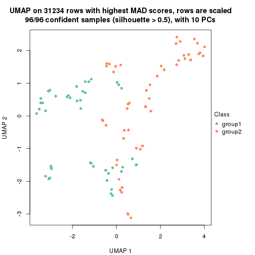
dimension_reduction(res, k = 3, method = "UMAP")
dimension_reduction(res, k = 4, method = "UMAP")
dimension_reduction(res, k = 5, method = "UMAP")
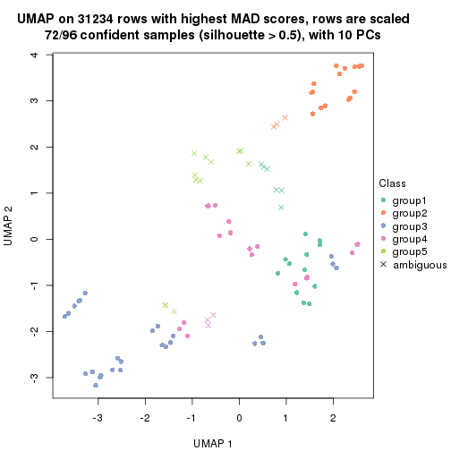
dimension_reduction(res, k = 6, method = "UMAP")
Following heatmap shows how subgroups are split when increasing k:
collect_classes(res)
Test correlation between subgroups and known annotations. If the known annotation is numeric, one-way ANOVA test is applied, and if the known annotation is discrete, chi-squared contingency table test is applied.
test_to_known_factors(res)
#> n tissue(p) k
#> MAD:skmeans 96 1.44e-08 2
#> MAD:skmeans 90 2.03e-14 3
#> MAD:skmeans 93 3.27e-21 4
#> MAD:skmeans 72 4.70e-17 5
#> MAD:skmeans 66 4.52e-25 6
If matrix rows can be associated to genes, consider to use functional_enrichment(res,
...) to perform function enrichment for the signature genes. See this vignette for more detailed explanations.
The object with results only for a single top-value method and a single partition method can be extracted as:
res = res_list["MAD", "pam"]
# you can also extract it by
# res = res_list["MAD:pam"]
A summary of res and all the functions that can be applied to it:
res
#> A 'ConsensusPartition' object with k = 2, 3, 4, 5, 6.
#> On a matrix with 31234 rows and 96 columns.
#> Top rows (1000, 2000, 3000, 4000, 5000) are extracted by 'MAD' method.
#> Subgroups are detected by 'pam' method.
#> Performed in total 1250 partitions by row resampling.
#> Best k for subgroups seems to be 3.
#>
#> Following methods can be applied to this 'ConsensusPartition' object:
#> [1] "cola_report" "collect_classes" "collect_plots"
#> [4] "collect_stats" "colnames" "compare_signatures"
#> [7] "consensus_heatmap" "dimension_reduction" "functional_enrichment"
#> [10] "get_anno_col" "get_anno" "get_classes"
#> [13] "get_consensus" "get_matrix" "get_membership"
#> [16] "get_param" "get_signatures" "get_stats"
#> [19] "is_best_k" "is_stable_k" "membership_heatmap"
#> [22] "ncol" "nrow" "plot_ecdf"
#> [25] "rownames" "select_partition_number" "show"
#> [28] "suggest_best_k" "test_to_known_factors"
collect_plots() function collects all the plots made from res for all k (number of partitions)
into one single page to provide an easy and fast comparison between different k.
collect_plots(res)
The plots are:
k and the heatmap of
predicted classes for each k.k.k.k.All the plots in panels can be made by individual functions and they are plotted later in this section.
select_partition_number() produces several plots showing different
statistics for choosing “optimized” k. There are following statistics:
k;k, the area increased is defined as \(A_k - A_{k-1}\).The detailed explanations of these statistics can be found in the cola vignette.
Generally speaking, lower PAC score, higher mean silhouette score or higher
concordance corresponds to better partition. Rand index and Jaccard index
measure how similar the current partition is compared to partition with k-1.
If they are too similar, we won't accept k is better than k-1.
select_partition_number(res)
The numeric values for all these statistics can be obtained by get_stats().
get_stats(res)
#> k 1-PAC mean_silhouette concordance area_increased Rand Jaccard
#> 2 2 0.886 0.965 0.979 0.3568 0.655 0.655
#> 3 3 0.710 0.846 0.865 0.5326 0.775 0.656
#> 4 4 0.559 0.698 0.815 0.2195 0.728 0.496
#> 5 5 0.614 0.657 0.767 0.1151 0.842 0.601
#> 6 6 0.687 0.661 0.777 0.0691 0.882 0.585
suggest_best_k() suggests the best \(k\) based on these statistics. The rules are as follows:
suggest_best_k(res)
#> [1] 3
Following shows the table of the partitions (You need to click the show/hide
code output link to see it). The membership matrix (columns with name p*)
is inferred by
clue::cl_consensus()
function with the SE method. Basically the value in the membership matrix
represents the probability to belong to a certain group. The finall class
label for an item is determined with the group with highest probability it
belongs to.
In get_classes() function, the entropy is calculated from the membership
matrix and the silhouette score is calculated from the consensus matrix.
cbind(get_classes(res, k = 2), get_membership(res, k = 2))
#> class entropy silhouette p1 p2
#> GSM194459 2 0.5294 0.888 0.120 0.880
#> GSM194460 2 0.5178 0.892 0.116 0.884
#> GSM194461 2 0.5178 0.892 0.116 0.884
#> GSM194462 1 0.4690 0.911 0.900 0.100
#> GSM194463 1 0.4690 0.911 0.900 0.100
#> GSM194464 1 0.4690 0.911 0.900 0.100
#> GSM194465 1 0.0000 0.978 1.000 0.000
#> GSM194466 1 0.0000 0.978 1.000 0.000
#> GSM194467 1 0.0000 0.978 1.000 0.000
#> GSM194468 1 0.2236 0.955 0.964 0.036
#> GSM194469 1 0.2236 0.955 0.964 0.036
#> GSM194470 1 0.2236 0.955 0.964 0.036
#> GSM194471 1 0.0000 0.978 1.000 0.000
#> GSM194472 1 0.0000 0.978 1.000 0.000
#> GSM194473 1 0.0000 0.978 1.000 0.000
#> GSM194474 1 0.0000 0.978 1.000 0.000
#> GSM194475 1 0.0000 0.978 1.000 0.000
#> GSM194476 1 0.0000 0.978 1.000 0.000
#> GSM194477 1 0.0000 0.978 1.000 0.000
#> GSM194478 1 0.0000 0.978 1.000 0.000
#> GSM194479 1 0.0000 0.978 1.000 0.000
#> GSM194480 1 0.0000 0.978 1.000 0.000
#> GSM194481 1 0.0000 0.978 1.000 0.000
#> GSM194482 1 0.0000 0.978 1.000 0.000
#> GSM194483 1 0.0000 0.978 1.000 0.000
#> GSM194484 1 0.0000 0.978 1.000 0.000
#> GSM194485 1 0.0000 0.978 1.000 0.000
#> GSM194486 1 0.0000 0.978 1.000 0.000
#> GSM194487 1 0.0000 0.978 1.000 0.000
#> GSM194488 1 0.0000 0.978 1.000 0.000
#> GSM194489 2 0.0938 0.975 0.012 0.988
#> GSM194490 2 0.0938 0.975 0.012 0.988
#> GSM194491 2 0.0938 0.975 0.012 0.988
#> GSM194492 1 0.4161 0.924 0.916 0.084
#> GSM194493 1 0.4161 0.924 0.916 0.084
#> GSM194494 1 0.4161 0.924 0.916 0.084
#> GSM194495 1 0.0000 0.978 1.000 0.000
#> GSM194496 1 0.0000 0.978 1.000 0.000
#> GSM194497 1 0.0000 0.978 1.000 0.000
#> GSM194498 1 0.5294 0.892 0.880 0.120
#> GSM194499 1 0.5294 0.892 0.880 0.120
#> GSM194500 1 0.5294 0.892 0.880 0.120
#> GSM194501 1 0.0000 0.978 1.000 0.000
#> GSM194502 1 0.0000 0.978 1.000 0.000
#> GSM194503 1 0.0000 0.978 1.000 0.000
#> GSM194504 1 0.0000 0.978 1.000 0.000
#> GSM194505 1 0.0000 0.978 1.000 0.000
#> GSM194506 1 0.0000 0.978 1.000 0.000
#> GSM194507 1 0.0000 0.978 1.000 0.000
#> GSM194508 1 0.0000 0.978 1.000 0.000
#> GSM194509 1 0.0000 0.978 1.000 0.000
#> GSM194510 1 0.0000 0.978 1.000 0.000
#> GSM194511 1 0.0000 0.978 1.000 0.000
#> GSM194512 1 0.0000 0.978 1.000 0.000
#> GSM194513 2 0.0000 0.981 0.000 1.000
#> GSM194514 2 0.0000 0.981 0.000 1.000
#> GSM194515 2 0.0000 0.981 0.000 1.000
#> GSM194516 2 0.0000 0.981 0.000 1.000
#> GSM194517 2 0.0000 0.981 0.000 1.000
#> GSM194518 2 0.0000 0.981 0.000 1.000
#> GSM194519 1 0.0000 0.978 1.000 0.000
#> GSM194520 1 0.0000 0.978 1.000 0.000
#> GSM194521 1 0.0000 0.978 1.000 0.000
#> GSM194522 1 0.0000 0.978 1.000 0.000
#> GSM194523 1 0.0000 0.978 1.000 0.000
#> GSM194524 1 0.0000 0.978 1.000 0.000
#> GSM194525 1 0.0000 0.978 1.000 0.000
#> GSM194526 1 0.0000 0.978 1.000 0.000
#> GSM194527 1 0.0000 0.978 1.000 0.000
#> GSM194528 1 0.0000 0.978 1.000 0.000
#> GSM194529 1 0.0000 0.978 1.000 0.000
#> GSM194530 1 0.0000 0.978 1.000 0.000
#> GSM194531 1 0.4161 0.924 0.916 0.084
#> GSM194532 1 0.4161 0.924 0.916 0.084
#> GSM194533 1 0.4161 0.924 0.916 0.084
#> GSM194534 1 0.4161 0.924 0.916 0.084
#> GSM194535 1 0.4161 0.924 0.916 0.084
#> GSM194536 1 0.4161 0.924 0.916 0.084
#> GSM194537 1 0.1414 0.968 0.980 0.020
#> GSM194538 1 0.1414 0.968 0.980 0.020
#> GSM194539 1 0.1414 0.968 0.980 0.020
#> GSM194540 2 0.0000 0.981 0.000 1.000
#> GSM194541 2 0.0000 0.981 0.000 1.000
#> GSM194542 2 0.0000 0.981 0.000 1.000
#> GSM194543 1 0.0000 0.978 1.000 0.000
#> GSM194544 1 0.0000 0.978 1.000 0.000
#> GSM194545 1 0.0000 0.978 1.000 0.000
#> GSM194546 2 0.0000 0.981 0.000 1.000
#> GSM194547 2 0.0000 0.981 0.000 1.000
#> GSM194548 2 0.0000 0.981 0.000 1.000
#> GSM194549 2 0.0000 0.981 0.000 1.000
#> GSM194550 2 0.0000 0.981 0.000 1.000
#> GSM194551 2 0.0000 0.981 0.000 1.000
#> GSM194552 1 0.0000 0.978 1.000 0.000
#> GSM194553 1 0.0000 0.978 1.000 0.000
#> GSM194554 1 0.0000 0.978 1.000 0.000
cbind(get_classes(res, k = 3), get_membership(res, k = 3))
#> class entropy silhouette p1 p2 p3
#> GSM194459 2 0.3769 0.845 0.104 0.880 0.016
#> GSM194460 2 0.3769 0.845 0.104 0.880 0.016
#> GSM194461 2 0.3769 0.845 0.104 0.880 0.016
#> GSM194462 1 0.2625 0.882 0.916 0.084 0.000
#> GSM194463 1 0.2625 0.882 0.916 0.084 0.000
#> GSM194464 1 0.2625 0.882 0.916 0.084 0.000
#> GSM194465 1 0.0000 0.925 1.000 0.000 0.000
#> GSM194466 1 0.0000 0.925 1.000 0.000 0.000
#> GSM194467 1 0.0000 0.925 1.000 0.000 0.000
#> GSM194468 1 0.1411 0.909 0.964 0.036 0.000
#> GSM194469 1 0.1411 0.909 0.964 0.036 0.000
#> GSM194470 1 0.1411 0.909 0.964 0.036 0.000
#> GSM194471 3 0.0000 0.655 0.000 0.000 1.000
#> GSM194472 3 0.0000 0.655 0.000 0.000 1.000
#> GSM194473 3 0.0000 0.655 0.000 0.000 1.000
#> GSM194474 3 0.0000 0.655 0.000 0.000 1.000
#> GSM194475 3 0.0000 0.655 0.000 0.000 1.000
#> GSM194476 3 0.0000 0.655 0.000 0.000 1.000
#> GSM194477 1 0.0000 0.925 1.000 0.000 0.000
#> GSM194478 1 0.0000 0.925 1.000 0.000 0.000
#> GSM194479 1 0.0000 0.925 1.000 0.000 0.000
#> GSM194480 1 0.4002 0.755 0.840 0.000 0.160
#> GSM194481 1 0.4796 0.636 0.780 0.000 0.220
#> GSM194482 1 0.4504 0.688 0.804 0.000 0.196
#> GSM194483 1 0.3816 0.775 0.852 0.000 0.148
#> GSM194484 1 0.3816 0.775 0.852 0.000 0.148
#> GSM194485 1 0.3816 0.775 0.852 0.000 0.148
#> GSM194486 3 0.0000 0.655 0.000 0.000 1.000
#> GSM194487 3 0.0000 0.655 0.000 0.000 1.000
#> GSM194488 3 0.0000 0.655 0.000 0.000 1.000
#> GSM194489 2 0.0747 0.961 0.016 0.984 0.000
#> GSM194490 2 0.0747 0.961 0.016 0.984 0.000
#> GSM194491 2 0.0747 0.961 0.016 0.984 0.000
#> GSM194492 1 0.2625 0.882 0.916 0.084 0.000
#> GSM194493 1 0.2625 0.882 0.916 0.084 0.000
#> GSM194494 1 0.2625 0.882 0.916 0.084 0.000
#> GSM194495 1 0.1289 0.910 0.968 0.000 0.032
#> GSM194496 1 0.1289 0.910 0.968 0.000 0.032
#> GSM194497 1 0.1289 0.910 0.968 0.000 0.032
#> GSM194498 1 0.2625 0.882 0.916 0.084 0.000
#> GSM194499 1 0.2625 0.882 0.916 0.084 0.000
#> GSM194500 1 0.2625 0.882 0.916 0.084 0.000
#> GSM194501 1 0.0000 0.925 1.000 0.000 0.000
#> GSM194502 1 0.0000 0.925 1.000 0.000 0.000
#> GSM194503 1 0.0000 0.925 1.000 0.000 0.000
#> GSM194504 1 0.3267 0.820 0.884 0.000 0.116
#> GSM194505 1 0.3192 0.826 0.888 0.000 0.112
#> GSM194506 1 0.3267 0.820 0.884 0.000 0.116
#> GSM194507 3 0.6274 0.502 0.456 0.000 0.544
#> GSM194508 3 0.6274 0.503 0.456 0.000 0.544
#> GSM194509 3 0.6299 0.447 0.476 0.000 0.524
#> GSM194510 1 0.0000 0.925 1.000 0.000 0.000
#> GSM194511 1 0.0000 0.925 1.000 0.000 0.000
#> GSM194512 1 0.0000 0.925 1.000 0.000 0.000
#> GSM194513 2 0.0000 0.973 0.000 1.000 0.000
#> GSM194514 2 0.0000 0.973 0.000 1.000 0.000
#> GSM194515 2 0.0000 0.973 0.000 1.000 0.000
#> GSM194516 2 0.0000 0.973 0.000 1.000 0.000
#> GSM194517 2 0.0000 0.973 0.000 1.000 0.000
#> GSM194518 2 0.0000 0.973 0.000 1.000 0.000
#> GSM194519 1 0.0000 0.925 1.000 0.000 0.000
#> GSM194520 1 0.0000 0.925 1.000 0.000 0.000
#> GSM194521 1 0.0000 0.925 1.000 0.000 0.000
#> GSM194522 1 0.1289 0.910 0.968 0.000 0.032
#> GSM194523 1 0.1289 0.910 0.968 0.000 0.032
#> GSM194524 1 0.1289 0.910 0.968 0.000 0.032
#> GSM194525 1 0.0000 0.925 1.000 0.000 0.000
#> GSM194526 1 0.0000 0.925 1.000 0.000 0.000
#> GSM194527 1 0.0237 0.923 0.996 0.000 0.004
#> GSM194528 1 0.0000 0.925 1.000 0.000 0.000
#> GSM194529 1 0.0000 0.925 1.000 0.000 0.000
#> GSM194530 1 0.0000 0.925 1.000 0.000 0.000
#> GSM194531 1 0.2625 0.882 0.916 0.084 0.000
#> GSM194532 1 0.2625 0.882 0.916 0.084 0.000
#> GSM194533 1 0.2625 0.882 0.916 0.084 0.000
#> GSM194534 1 0.2625 0.882 0.916 0.084 0.000
#> GSM194535 1 0.2625 0.882 0.916 0.084 0.000
#> GSM194536 1 0.2625 0.882 0.916 0.084 0.000
#> GSM194537 1 0.0000 0.925 1.000 0.000 0.000
#> GSM194538 1 0.0000 0.925 1.000 0.000 0.000
#> GSM194539 1 0.0000 0.925 1.000 0.000 0.000
#> GSM194540 2 0.0000 0.973 0.000 1.000 0.000
#> GSM194541 2 0.0000 0.973 0.000 1.000 0.000
#> GSM194542 2 0.0000 0.973 0.000 1.000 0.000
#> GSM194543 3 0.6215 0.560 0.428 0.000 0.572
#> GSM194544 3 0.6225 0.553 0.432 0.000 0.568
#> GSM194545 3 0.6215 0.560 0.428 0.000 0.572
#> GSM194546 2 0.0000 0.973 0.000 1.000 0.000
#> GSM194547 2 0.0000 0.973 0.000 1.000 0.000
#> GSM194548 2 0.0000 0.973 0.000 1.000 0.000
#> GSM194549 2 0.0000 0.973 0.000 1.000 0.000
#> GSM194550 2 0.0000 0.973 0.000 1.000 0.000
#> GSM194551 2 0.0000 0.973 0.000 1.000 0.000
#> GSM194552 3 0.6215 0.560 0.428 0.000 0.572
#> GSM194553 3 0.6215 0.560 0.428 0.000 0.572
#> GSM194554 3 0.6215 0.560 0.428 0.000 0.572
cbind(get_classes(res, k = 4), get_membership(res, k = 4))
#> class entropy silhouette p1 p2 p3 p4
#> GSM194459 4 0.3791 0.504 0.004 0.200 0.000 0.796
#> GSM194460 4 0.3791 0.504 0.004 0.200 0.000 0.796
#> GSM194461 4 0.3791 0.504 0.004 0.200 0.000 0.796
#> GSM194462 1 0.4782 0.659 0.780 0.068 0.000 0.152
#> GSM194463 1 0.4735 0.664 0.784 0.068 0.000 0.148
#> GSM194464 1 0.4686 0.669 0.788 0.068 0.000 0.144
#> GSM194465 1 0.4925 0.420 0.572 0.000 0.000 0.428
#> GSM194466 1 0.4431 0.634 0.696 0.000 0.000 0.304
#> GSM194467 1 0.4790 0.518 0.620 0.000 0.000 0.380
#> GSM194468 2 0.6516 0.407 0.092 0.576 0.000 0.332
#> GSM194469 2 0.6516 0.407 0.092 0.576 0.000 0.332
#> GSM194470 2 0.6478 0.410 0.088 0.576 0.000 0.336
#> GSM194471 3 0.0000 1.000 0.000 0.000 1.000 0.000
#> GSM194472 3 0.0000 1.000 0.000 0.000 1.000 0.000
#> GSM194473 3 0.0000 1.000 0.000 0.000 1.000 0.000
#> GSM194474 3 0.0000 1.000 0.000 0.000 1.000 0.000
#> GSM194475 3 0.0000 1.000 0.000 0.000 1.000 0.000
#> GSM194476 3 0.0000 1.000 0.000 0.000 1.000 0.000
#> GSM194477 1 0.2281 0.749 0.904 0.000 0.000 0.096
#> GSM194478 1 0.2408 0.746 0.896 0.000 0.000 0.104
#> GSM194479 1 0.2345 0.748 0.900 0.000 0.000 0.100
#> GSM194480 1 0.4235 0.691 0.824 0.000 0.092 0.084
#> GSM194481 1 0.4805 0.664 0.784 0.000 0.132 0.084
#> GSM194482 1 0.4591 0.676 0.800 0.000 0.116 0.084
#> GSM194483 1 0.4039 0.698 0.836 0.000 0.080 0.084
#> GSM194484 1 0.4039 0.698 0.836 0.000 0.080 0.084
#> GSM194485 1 0.4039 0.698 0.836 0.000 0.080 0.084
#> GSM194486 3 0.0000 1.000 0.000 0.000 1.000 0.000
#> GSM194487 3 0.0000 1.000 0.000 0.000 1.000 0.000
#> GSM194488 3 0.0000 1.000 0.000 0.000 1.000 0.000
#> GSM194489 4 0.4916 0.390 0.000 0.424 0.000 0.576
#> GSM194490 4 0.4916 0.390 0.000 0.424 0.000 0.576
#> GSM194491 4 0.4916 0.390 0.000 0.424 0.000 0.576
#> GSM194492 4 0.5825 0.732 0.268 0.068 0.000 0.664
#> GSM194493 4 0.5687 0.763 0.248 0.068 0.000 0.684
#> GSM194494 4 0.5687 0.763 0.248 0.068 0.000 0.684
#> GSM194495 1 0.0921 0.750 0.972 0.000 0.028 0.000
#> GSM194496 1 0.0921 0.750 0.972 0.000 0.028 0.000
#> GSM194497 1 0.0921 0.750 0.972 0.000 0.028 0.000
#> GSM194498 4 0.5687 0.763 0.248 0.068 0.000 0.684
#> GSM194499 4 0.5687 0.763 0.248 0.068 0.000 0.684
#> GSM194500 4 0.5687 0.763 0.248 0.068 0.000 0.684
#> GSM194501 1 0.2216 0.750 0.908 0.000 0.000 0.092
#> GSM194502 1 0.2216 0.750 0.908 0.000 0.000 0.092
#> GSM194503 1 0.2216 0.750 0.908 0.000 0.000 0.092
#> GSM194504 1 0.2578 0.730 0.912 0.000 0.036 0.052
#> GSM194505 1 0.2224 0.737 0.928 0.000 0.032 0.040
#> GSM194506 1 0.2660 0.728 0.908 0.000 0.036 0.056
#> GSM194507 1 0.5731 0.258 0.544 0.000 0.428 0.028
#> GSM194508 1 0.5731 0.258 0.544 0.000 0.428 0.028
#> GSM194509 1 0.5700 0.296 0.560 0.000 0.412 0.028
#> GSM194510 1 0.3764 0.711 0.784 0.000 0.000 0.216
#> GSM194511 1 0.3764 0.711 0.784 0.000 0.000 0.216
#> GSM194512 1 0.3801 0.710 0.780 0.000 0.000 0.220
#> GSM194513 2 0.0000 0.906 0.000 1.000 0.000 0.000
#> GSM194514 2 0.0000 0.906 0.000 1.000 0.000 0.000
#> GSM194515 2 0.0000 0.906 0.000 1.000 0.000 0.000
#> GSM194516 2 0.0000 0.906 0.000 1.000 0.000 0.000
#> GSM194517 2 0.0000 0.906 0.000 1.000 0.000 0.000
#> GSM194518 2 0.0000 0.906 0.000 1.000 0.000 0.000
#> GSM194519 1 0.3610 0.721 0.800 0.000 0.000 0.200
#> GSM194520 1 0.3610 0.721 0.800 0.000 0.000 0.200
#> GSM194521 1 0.3610 0.721 0.800 0.000 0.000 0.200
#> GSM194522 1 0.2300 0.747 0.924 0.000 0.028 0.048
#> GSM194523 1 0.2300 0.747 0.924 0.000 0.028 0.048
#> GSM194524 1 0.2300 0.747 0.924 0.000 0.028 0.048
#> GSM194525 1 0.1474 0.750 0.948 0.000 0.000 0.052
#> GSM194526 1 0.1389 0.750 0.952 0.000 0.000 0.048
#> GSM194527 1 0.1716 0.750 0.936 0.000 0.000 0.064
#> GSM194528 1 0.2469 0.745 0.892 0.000 0.000 0.108
#> GSM194529 1 0.2469 0.745 0.892 0.000 0.000 0.108
#> GSM194530 1 0.2469 0.745 0.892 0.000 0.000 0.108
#> GSM194531 1 0.4735 0.674 0.784 0.068 0.000 0.148
#> GSM194532 1 0.4735 0.674 0.784 0.068 0.000 0.148
#> GSM194533 1 0.4735 0.674 0.784 0.068 0.000 0.148
#> GSM194534 4 0.5687 0.763 0.248 0.068 0.000 0.684
#> GSM194535 4 0.5687 0.763 0.248 0.068 0.000 0.684
#> GSM194536 4 0.5687 0.763 0.248 0.068 0.000 0.684
#> GSM194537 1 0.2589 0.742 0.884 0.000 0.000 0.116
#> GSM194538 1 0.2589 0.742 0.884 0.000 0.000 0.116
#> GSM194539 1 0.2589 0.742 0.884 0.000 0.000 0.116
#> GSM194540 2 0.0000 0.906 0.000 1.000 0.000 0.000
#> GSM194541 2 0.0000 0.906 0.000 1.000 0.000 0.000
#> GSM194542 2 0.0000 0.906 0.000 1.000 0.000 0.000
#> GSM194543 1 0.4996 0.157 0.516 0.000 0.484 0.000
#> GSM194544 1 0.4992 0.180 0.524 0.000 0.476 0.000
#> GSM194545 1 0.4994 0.169 0.520 0.000 0.480 0.000
#> GSM194546 2 0.0188 0.905 0.000 0.996 0.000 0.004
#> GSM194547 2 0.0188 0.905 0.000 0.996 0.000 0.004
#> GSM194548 2 0.0188 0.905 0.000 0.996 0.000 0.004
#> GSM194549 2 0.0188 0.905 0.000 0.996 0.000 0.004
#> GSM194550 2 0.0188 0.905 0.000 0.996 0.000 0.004
#> GSM194551 2 0.0188 0.905 0.000 0.996 0.000 0.004
#> GSM194552 1 0.4996 0.157 0.516 0.000 0.484 0.000
#> GSM194553 1 0.4996 0.157 0.516 0.000 0.484 0.000
#> GSM194554 1 0.4996 0.157 0.516 0.000 0.484 0.000
cbind(get_classes(res, k = 5), get_membership(res, k = 5))
#> class entropy silhouette p1 p2 p3 p4 p5
#> GSM194459 4 0.309 0.566 0.032 0.004 0.000 0.860 0.104
#> GSM194460 4 0.309 0.566 0.032 0.004 0.000 0.860 0.104
#> GSM194461 4 0.309 0.566 0.032 0.004 0.000 0.860 0.104
#> GSM194462 1 0.256 0.667 0.856 0.000 0.000 0.144 0.000
#> GSM194463 1 0.252 0.671 0.860 0.000 0.000 0.140 0.000
#> GSM194464 1 0.247 0.674 0.864 0.000 0.000 0.136 0.000
#> GSM194465 1 0.543 0.498 0.632 0.000 0.000 0.268 0.100
#> GSM194466 1 0.501 0.554 0.696 0.000 0.000 0.204 0.100
#> GSM194467 1 0.524 0.535 0.664 0.000 0.000 0.236 0.100
#> GSM194468 2 0.685 0.531 0.092 0.576 0.000 0.236 0.096
#> GSM194469 2 0.688 0.529 0.096 0.576 0.000 0.232 0.096
#> GSM194470 2 0.683 0.532 0.088 0.576 0.000 0.240 0.096
#> GSM194471 3 0.000 0.570 0.000 0.000 1.000 0.000 0.000
#> GSM194472 3 0.000 0.570 0.000 0.000 1.000 0.000 0.000
#> GSM194473 3 0.000 0.570 0.000 0.000 1.000 0.000 0.000
#> GSM194474 3 0.000 0.570 0.000 0.000 1.000 0.000 0.000
#> GSM194475 3 0.000 0.570 0.000 0.000 1.000 0.000 0.000
#> GSM194476 3 0.000 0.570 0.000 0.000 1.000 0.000 0.000
#> GSM194477 1 0.088 0.738 0.968 0.000 0.000 0.000 0.032
#> GSM194478 1 0.088 0.738 0.968 0.000 0.000 0.000 0.032
#> GSM194479 1 0.088 0.738 0.968 0.000 0.000 0.000 0.032
#> GSM194480 5 0.282 1.000 0.132 0.000 0.012 0.000 0.856
#> GSM194481 5 0.282 1.000 0.132 0.000 0.012 0.000 0.856
#> GSM194482 5 0.282 1.000 0.132 0.000 0.012 0.000 0.856
#> GSM194483 5 0.282 1.000 0.132 0.000 0.012 0.000 0.856
#> GSM194484 5 0.282 1.000 0.132 0.000 0.012 0.000 0.856
#> GSM194485 5 0.282 1.000 0.132 0.000 0.012 0.000 0.856
#> GSM194486 3 0.000 0.570 0.000 0.000 1.000 0.000 0.000
#> GSM194487 3 0.000 0.570 0.000 0.000 1.000 0.000 0.000
#> GSM194488 3 0.000 0.570 0.000 0.000 1.000 0.000 0.000
#> GSM194489 4 0.386 0.549 0.000 0.312 0.000 0.688 0.000
#> GSM194490 4 0.386 0.549 0.000 0.312 0.000 0.688 0.000
#> GSM194491 4 0.386 0.549 0.000 0.312 0.000 0.688 0.000
#> GSM194492 4 0.377 0.730 0.296 0.000 0.000 0.704 0.000
#> GSM194493 4 0.361 0.773 0.268 0.000 0.000 0.732 0.000
#> GSM194494 4 0.361 0.773 0.268 0.000 0.000 0.732 0.000
#> GSM194495 1 0.516 0.471 0.656 0.000 0.064 0.004 0.276
#> GSM194496 1 0.516 0.471 0.656 0.000 0.064 0.004 0.276
#> GSM194497 1 0.516 0.471 0.656 0.000 0.064 0.004 0.276
#> GSM194498 4 0.356 0.780 0.260 0.000 0.000 0.740 0.000
#> GSM194499 4 0.356 0.780 0.260 0.000 0.000 0.740 0.000
#> GSM194500 4 0.356 0.780 0.260 0.000 0.000 0.740 0.000
#> GSM194501 1 0.127 0.731 0.948 0.000 0.000 0.000 0.052
#> GSM194502 1 0.127 0.731 0.948 0.000 0.000 0.000 0.052
#> GSM194503 1 0.127 0.731 0.948 0.000 0.000 0.000 0.052
#> GSM194504 1 0.396 0.474 0.712 0.000 0.008 0.000 0.280
#> GSM194505 1 0.345 0.594 0.784 0.000 0.008 0.000 0.208
#> GSM194506 1 0.396 0.473 0.712 0.000 0.008 0.000 0.280
#> GSM194507 3 0.748 0.319 0.300 0.000 0.388 0.036 0.276
#> GSM194508 3 0.747 0.327 0.296 0.000 0.392 0.036 0.276
#> GSM194509 3 0.750 0.288 0.316 0.000 0.372 0.036 0.276
#> GSM194510 1 0.546 0.475 0.620 0.000 0.000 0.284 0.096
#> GSM194511 1 0.526 0.540 0.656 0.000 0.000 0.248 0.096
#> GSM194512 1 0.555 0.436 0.600 0.000 0.000 0.304 0.096
#> GSM194513 2 0.000 0.914 0.000 1.000 0.000 0.000 0.000
#> GSM194514 2 0.000 0.914 0.000 1.000 0.000 0.000 0.000
#> GSM194515 2 0.000 0.914 0.000 1.000 0.000 0.000 0.000
#> GSM194516 2 0.000 0.914 0.000 1.000 0.000 0.000 0.000
#> GSM194517 2 0.000 0.914 0.000 1.000 0.000 0.000 0.000
#> GSM194518 2 0.000 0.914 0.000 1.000 0.000 0.000 0.000
#> GSM194519 1 0.328 0.702 0.848 0.000 0.000 0.060 0.092
#> GSM194520 1 0.328 0.702 0.848 0.000 0.000 0.060 0.092
#> GSM194521 1 0.328 0.702 0.848 0.000 0.000 0.060 0.092
#> GSM194522 1 0.590 0.489 0.660 0.000 0.064 0.060 0.216
#> GSM194523 1 0.596 0.486 0.656 0.000 0.064 0.064 0.216
#> GSM194524 1 0.590 0.489 0.660 0.000 0.064 0.060 0.216
#> GSM194525 1 0.286 0.706 0.876 0.000 0.000 0.068 0.056
#> GSM194526 1 0.273 0.705 0.884 0.000 0.000 0.060 0.056
#> GSM194527 1 0.259 0.710 0.892 0.000 0.000 0.060 0.048
#> GSM194528 1 0.088 0.738 0.968 0.000 0.000 0.000 0.032
#> GSM194529 1 0.117 0.738 0.960 0.000 0.000 0.008 0.032
#> GSM194530 1 0.088 0.738 0.968 0.000 0.000 0.000 0.032
#> GSM194531 1 0.419 0.236 0.596 0.000 0.000 0.404 0.000
#> GSM194532 1 0.419 0.236 0.596 0.000 0.000 0.404 0.000
#> GSM194533 1 0.419 0.236 0.596 0.000 0.000 0.404 0.000
#> GSM194534 4 0.356 0.780 0.260 0.000 0.000 0.740 0.000
#> GSM194535 4 0.356 0.780 0.260 0.000 0.000 0.740 0.000
#> GSM194536 4 0.356 0.780 0.260 0.000 0.000 0.740 0.000
#> GSM194537 1 0.223 0.690 0.884 0.000 0.000 0.116 0.000
#> GSM194538 1 0.223 0.690 0.884 0.000 0.000 0.116 0.000
#> GSM194539 1 0.223 0.690 0.884 0.000 0.000 0.116 0.000
#> GSM194540 2 0.000 0.914 0.000 1.000 0.000 0.000 0.000
#> GSM194541 2 0.000 0.914 0.000 1.000 0.000 0.000 0.000
#> GSM194542 2 0.000 0.914 0.000 1.000 0.000 0.000 0.000
#> GSM194543 3 0.666 0.379 0.284 0.000 0.444 0.000 0.272
#> GSM194544 3 0.667 0.375 0.288 0.000 0.440 0.000 0.272
#> GSM194545 3 0.666 0.379 0.284 0.000 0.444 0.000 0.272
#> GSM194546 2 0.088 0.910 0.000 0.968 0.000 0.000 0.032
#> GSM194547 2 0.088 0.910 0.000 0.968 0.000 0.000 0.032
#> GSM194548 2 0.088 0.910 0.000 0.968 0.000 0.000 0.032
#> GSM194549 2 0.088 0.910 0.000 0.968 0.000 0.000 0.032
#> GSM194550 2 0.088 0.910 0.000 0.968 0.000 0.000 0.032
#> GSM194551 2 0.088 0.910 0.000 0.968 0.000 0.000 0.032
#> GSM194552 3 0.659 0.397 0.284 0.000 0.464 0.000 0.252
#> GSM194553 3 0.659 0.397 0.284 0.000 0.464 0.000 0.252
#> GSM194554 3 0.659 0.397 0.284 0.000 0.464 0.000 0.252
cbind(get_classes(res, k = 6), get_membership(res, k = 6))
#> class entropy silhouette p1 p2 p3 p4 p5 p6
#> GSM194459 6 0.3864 -0.4145 0.480 0.000 0.000 0.000 0.000 0.520
#> GSM194460 6 0.3864 -0.4145 0.480 0.000 0.000 0.000 0.000 0.520
#> GSM194461 6 0.3864 -0.4145 0.480 0.000 0.000 0.000 0.000 0.520
#> GSM194462 4 0.2378 0.6905 0.152 0.000 0.000 0.848 0.000 0.000
#> GSM194463 4 0.2416 0.6870 0.156 0.000 0.000 0.844 0.000 0.000
#> GSM194464 4 0.2048 0.7091 0.120 0.000 0.000 0.880 0.000 0.000
#> GSM194465 4 0.4641 0.4484 0.044 0.000 0.000 0.552 0.000 0.404
#> GSM194466 4 0.3899 0.4844 0.004 0.000 0.000 0.592 0.000 0.404
#> GSM194467 4 0.4254 0.4717 0.020 0.000 0.000 0.576 0.000 0.404
#> GSM194468 2 0.5394 0.5422 0.000 0.556 0.000 0.104 0.008 0.332
#> GSM194469 2 0.5419 0.5411 0.000 0.556 0.000 0.108 0.008 0.328
#> GSM194470 2 0.5394 0.5422 0.000 0.556 0.000 0.104 0.008 0.332
#> GSM194471 3 0.0000 1.0000 0.000 0.000 1.000 0.000 0.000 0.000
#> GSM194472 3 0.0000 1.0000 0.000 0.000 1.000 0.000 0.000 0.000
#> GSM194473 3 0.0000 1.0000 0.000 0.000 1.000 0.000 0.000 0.000
#> GSM194474 3 0.0000 1.0000 0.000 0.000 1.000 0.000 0.000 0.000
#> GSM194475 3 0.0000 1.0000 0.000 0.000 1.000 0.000 0.000 0.000
#> GSM194476 3 0.0000 1.0000 0.000 0.000 1.000 0.000 0.000 0.000
#> GSM194477 4 0.0713 0.7473 0.000 0.000 0.000 0.972 0.028 0.000
#> GSM194478 4 0.0713 0.7473 0.000 0.000 0.000 0.972 0.028 0.000
#> GSM194479 4 0.0713 0.7473 0.000 0.000 0.000 0.972 0.028 0.000
#> GSM194480 5 0.0363 1.0000 0.000 0.000 0.000 0.012 0.988 0.000
#> GSM194481 5 0.0363 1.0000 0.000 0.000 0.000 0.012 0.988 0.000
#> GSM194482 5 0.0363 1.0000 0.000 0.000 0.000 0.012 0.988 0.000
#> GSM194483 5 0.0363 1.0000 0.000 0.000 0.000 0.012 0.988 0.000
#> GSM194484 5 0.0363 1.0000 0.000 0.000 0.000 0.012 0.988 0.000
#> GSM194485 5 0.0363 1.0000 0.000 0.000 0.000 0.012 0.988 0.000
#> GSM194486 3 0.0000 1.0000 0.000 0.000 1.000 0.000 0.000 0.000
#> GSM194487 3 0.0000 1.0000 0.000 0.000 1.000 0.000 0.000 0.000
#> GSM194488 3 0.0000 1.0000 0.000 0.000 1.000 0.000 0.000 0.000
#> GSM194489 1 0.3672 0.4986 0.632 0.368 0.000 0.000 0.000 0.000
#> GSM194490 1 0.3672 0.4986 0.632 0.368 0.000 0.000 0.000 0.000
#> GSM194491 1 0.3672 0.4986 0.632 0.368 0.000 0.000 0.000 0.000
#> GSM194492 1 0.2135 0.7278 0.872 0.000 0.000 0.128 0.000 0.000
#> GSM194493 1 0.2048 0.7344 0.880 0.000 0.000 0.120 0.000 0.000
#> GSM194494 1 0.1663 0.7443 0.912 0.000 0.000 0.088 0.000 0.000
#> GSM194495 6 0.5847 0.4260 0.000 0.000 0.000 0.360 0.196 0.444
#> GSM194496 6 0.5847 0.4260 0.000 0.000 0.000 0.360 0.196 0.444
#> GSM194497 6 0.5842 0.4295 0.000 0.000 0.000 0.356 0.196 0.448
#> GSM194498 1 0.0146 0.7522 0.996 0.000 0.000 0.000 0.004 0.000
#> GSM194499 1 0.0146 0.7522 0.996 0.000 0.000 0.000 0.004 0.000
#> GSM194500 1 0.0146 0.7522 0.996 0.000 0.000 0.000 0.004 0.000
#> GSM194501 4 0.2100 0.7077 0.000 0.000 0.000 0.884 0.112 0.004
#> GSM194502 4 0.2100 0.7077 0.000 0.000 0.000 0.884 0.112 0.004
#> GSM194503 4 0.2100 0.7077 0.000 0.000 0.000 0.884 0.112 0.004
#> GSM194504 4 0.4012 0.4964 0.000 0.000 0.000 0.640 0.344 0.016
#> GSM194505 4 0.3738 0.5589 0.000 0.000 0.000 0.704 0.280 0.016
#> GSM194506 4 0.4012 0.4964 0.000 0.000 0.000 0.640 0.344 0.016
#> GSM194507 6 0.6886 0.5484 0.000 0.000 0.228 0.096 0.196 0.480
#> GSM194508 6 0.6866 0.5471 0.000 0.000 0.232 0.092 0.196 0.480
#> GSM194509 6 0.6938 0.5494 0.000 0.000 0.216 0.108 0.196 0.480
#> GSM194510 4 0.5854 0.0959 0.320 0.000 0.000 0.468 0.000 0.212
#> GSM194511 4 0.5466 0.3922 0.216 0.000 0.000 0.572 0.000 0.212
#> GSM194512 4 0.5890 -0.0136 0.352 0.000 0.000 0.440 0.000 0.208
#> GSM194513 2 0.1268 0.8908 0.004 0.952 0.000 0.000 0.008 0.036
#> GSM194514 2 0.1268 0.8908 0.004 0.952 0.000 0.000 0.008 0.036
#> GSM194515 2 0.1268 0.8908 0.004 0.952 0.000 0.000 0.008 0.036
#> GSM194516 2 0.1124 0.8918 0.000 0.956 0.000 0.000 0.008 0.036
#> GSM194517 2 0.1124 0.8918 0.000 0.956 0.000 0.000 0.008 0.036
#> GSM194518 2 0.1124 0.8918 0.000 0.956 0.000 0.000 0.008 0.036
#> GSM194519 4 0.2219 0.6935 0.000 0.000 0.000 0.864 0.000 0.136
#> GSM194520 4 0.2219 0.6935 0.000 0.000 0.000 0.864 0.000 0.136
#> GSM194521 4 0.2219 0.6935 0.000 0.000 0.000 0.864 0.000 0.136
#> GSM194522 6 0.5448 0.4230 0.000 0.000 0.000 0.352 0.132 0.516
#> GSM194523 6 0.5571 0.4265 0.004 0.000 0.000 0.348 0.132 0.516
#> GSM194524 6 0.5448 0.4230 0.000 0.000 0.000 0.352 0.132 0.516
#> GSM194525 4 0.4672 0.5735 0.016 0.000 0.000 0.720 0.128 0.136
#> GSM194526 4 0.4242 0.5843 0.000 0.000 0.000 0.736 0.128 0.136
#> GSM194527 4 0.4203 0.5895 0.000 0.000 0.000 0.740 0.124 0.136
#> GSM194528 4 0.0713 0.7473 0.000 0.000 0.000 0.972 0.028 0.000
#> GSM194529 4 0.0777 0.7472 0.004 0.000 0.000 0.972 0.024 0.000
#> GSM194530 4 0.0713 0.7473 0.000 0.000 0.000 0.972 0.028 0.000
#> GSM194531 1 0.3843 0.3009 0.548 0.000 0.000 0.452 0.000 0.000
#> GSM194532 1 0.3838 0.3073 0.552 0.000 0.000 0.448 0.000 0.000
#> GSM194533 1 0.3843 0.3009 0.548 0.000 0.000 0.452 0.000 0.000
#> GSM194534 1 0.0146 0.7522 0.996 0.000 0.000 0.000 0.004 0.000
#> GSM194535 1 0.0146 0.7522 0.996 0.000 0.000 0.000 0.004 0.000
#> GSM194536 1 0.0146 0.7522 0.996 0.000 0.000 0.000 0.004 0.000
#> GSM194537 4 0.0865 0.7415 0.036 0.000 0.000 0.964 0.000 0.000
#> GSM194538 4 0.0865 0.7415 0.036 0.000 0.000 0.964 0.000 0.000
#> GSM194539 4 0.0865 0.7415 0.036 0.000 0.000 0.964 0.000 0.000
#> GSM194540 2 0.0000 0.8934 0.000 1.000 0.000 0.000 0.000 0.000
#> GSM194541 2 0.0000 0.8934 0.000 1.000 0.000 0.000 0.000 0.000
#> GSM194542 2 0.0000 0.8934 0.000 1.000 0.000 0.000 0.000 0.000
#> GSM194543 6 0.7082 0.5306 0.000 0.000 0.312 0.092 0.196 0.400
#> GSM194544 6 0.7069 0.5343 0.000 0.000 0.304 0.092 0.196 0.408
#> GSM194545 6 0.7082 0.5306 0.000 0.000 0.312 0.092 0.196 0.400
#> GSM194546 2 0.1075 0.8904 0.000 0.952 0.000 0.000 0.000 0.048
#> GSM194547 2 0.1075 0.8904 0.000 0.952 0.000 0.000 0.000 0.048
#> GSM194548 2 0.1075 0.8904 0.000 0.952 0.000 0.000 0.000 0.048
#> GSM194549 2 0.1075 0.8904 0.000 0.952 0.000 0.000 0.000 0.048
#> GSM194550 2 0.1075 0.8904 0.000 0.952 0.000 0.000 0.000 0.048
#> GSM194551 2 0.1075 0.8904 0.000 0.952 0.000 0.000 0.000 0.048
#> GSM194552 6 0.7006 0.5217 0.000 0.000 0.336 0.092 0.172 0.400
#> GSM194553 6 0.7006 0.5217 0.000 0.000 0.336 0.092 0.172 0.400
#> GSM194554 6 0.7006 0.5217 0.000 0.000 0.336 0.092 0.172 0.400
Heatmaps for the consensus matrix. It visualizes the probability of two samples to be in a same group.
consensus_heatmap(res, k = 2)
consensus_heatmap(res, k = 3)
consensus_heatmap(res, k = 4)
consensus_heatmap(res, k = 5)
consensus_heatmap(res, k = 6)
Heatmaps for the membership of samples in all partitions to see how consistent they are:
membership_heatmap(res, k = 2)
membership_heatmap(res, k = 3)
membership_heatmap(res, k = 4)
membership_heatmap(res, k = 5)
membership_heatmap(res, k = 6)
As soon as we have had the classes for columns, we can look for signatures which are significantly different between classes which can be candidate marks for certain classes. Following are the heatmaps for signatures.
Signature heatmaps where rows are scaled:
get_signatures(res, k = 2)
get_signatures(res, k = 3)
get_signatures(res, k = 4)
get_signatures(res, k = 5)
get_signatures(res, k = 6)
Signature heatmaps where rows are not scaled:
get_signatures(res, k = 2, scale_rows = FALSE)
get_signatures(res, k = 3, scale_rows = FALSE)
get_signatures(res, k = 4, scale_rows = FALSE)
get_signatures(res, k = 5, scale_rows = FALSE)
get_signatures(res, k = 6, scale_rows = FALSE)
Compare the overlap of signatures from different k:
compare_signatures(res)
get_signature() returns a data frame invisibly. TO get the list of signatures, the function
call should be assigned to a variable explicitly. In following code, if plot argument is set
to FALSE, no heatmap is plotted while only the differential analysis is performed.
# code only for demonstration
tb = get_signature(res, k = ..., plot = FALSE)
An example of the output of tb is:
#> which_row fdr mean_1 mean_2 scaled_mean_1 scaled_mean_2 km
#> 1 38 0.042760348 8.373488 9.131774 -0.5533452 0.5164555 1
#> 2 40 0.018707592 7.106213 8.469186 -0.6173731 0.5762149 1
#> 3 55 0.019134737 10.221463 11.207825 -0.6159697 0.5749050 1
#> 4 59 0.006059896 5.921854 7.869574 -0.6899429 0.6439467 1
#> 5 60 0.018055526 8.928898 10.211722 -0.6204761 0.5791110 1
#> 6 98 0.009384629 15.714769 14.887706 0.6635654 -0.6193277 2
...
The columns in tb are:
which_row: row indices corresponding to the input matrix.fdr: FDR for the differential test. mean_x: The mean value in group x.scaled_mean_x: The mean value in group x after rows are scaled.km: Row groups if k-means clustering is applied to rows.UMAP plot which shows how samples are separated.
dimension_reduction(res, k = 2, method = "UMAP")
dimension_reduction(res, k = 3, method = "UMAP")
dimension_reduction(res, k = 4, method = "UMAP")
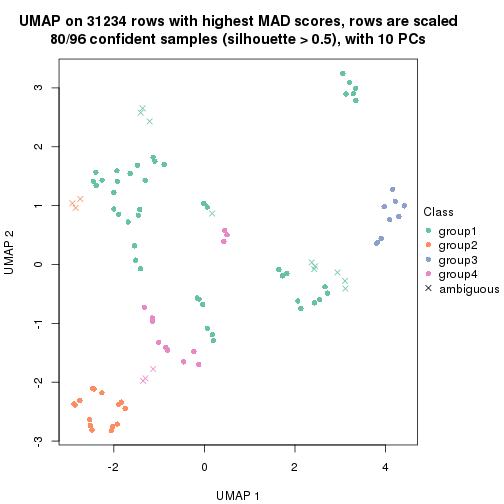
dimension_reduction(res, k = 5, method = "UMAP")
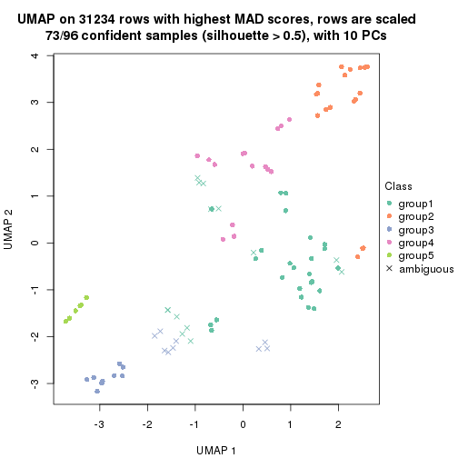
dimension_reduction(res, k = 6, method = "UMAP")

Following heatmap shows how subgroups are split when increasing k:
collect_classes(res)
Test correlation between subgroups and known annotations. If the known annotation is numeric, one-way ANOVA test is applied, and if the known annotation is discrete, chi-squared contingency table test is applied.
test_to_known_factors(res)
#> n tissue(p) k
#> MAD:pam 96 1.44e-08 2
#> MAD:pam 95 6.49e-15 3
#> MAD:pam 80 2.18e-18 4
#> MAD:pam 73 1.09e-20 5
#> MAD:pam 73 1.52e-26 6
If matrix rows can be associated to genes, consider to use functional_enrichment(res,
...) to perform function enrichment for the signature genes. See this vignette for more detailed explanations.
The object with results only for a single top-value method and a single partition method can be extracted as:
res = res_list["MAD", "mclust"]
# you can also extract it by
# res = res_list["MAD:mclust"]
A summary of res and all the functions that can be applied to it:
res
#> A 'ConsensusPartition' object with k = 2, 3, 4, 5, 6.
#> On a matrix with 31234 rows and 96 columns.
#> Top rows (1000, 2000, 3000, 4000, 5000) are extracted by 'MAD' method.
#> Subgroups are detected by 'mclust' method.
#> Performed in total 1250 partitions by row resampling.
#> Best k for subgroups seems to be 3.
#>
#> Following methods can be applied to this 'ConsensusPartition' object:
#> [1] "cola_report" "collect_classes" "collect_plots"
#> [4] "collect_stats" "colnames" "compare_signatures"
#> [7] "consensus_heatmap" "dimension_reduction" "functional_enrichment"
#> [10] "get_anno_col" "get_anno" "get_classes"
#> [13] "get_consensus" "get_matrix" "get_membership"
#> [16] "get_param" "get_signatures" "get_stats"
#> [19] "is_best_k" "is_stable_k" "membership_heatmap"
#> [22] "ncol" "nrow" "plot_ecdf"
#> [25] "rownames" "select_partition_number" "show"
#> [28] "suggest_best_k" "test_to_known_factors"
collect_plots() function collects all the plots made from res for all k (number of partitions)
into one single page to provide an easy and fast comparison between different k.
collect_plots(res)
The plots are:
k and the heatmap of
predicted classes for each k.k.k.k.All the plots in panels can be made by individual functions and they are plotted later in this section.
select_partition_number() produces several plots showing different
statistics for choosing “optimized” k. There are following statistics:
k;k, the area increased is defined as \(A_k - A_{k-1}\).The detailed explanations of these statistics can be found in the cola vignette.
Generally speaking, lower PAC score, higher mean silhouette score or higher
concordance corresponds to better partition. Rand index and Jaccard index
measure how similar the current partition is compared to partition with k-1.
If they are too similar, we won't accept k is better than k-1.
select_partition_number(res)
The numeric values for all these statistics can be obtained by get_stats().
get_stats(res)
#> k 1-PAC mean_silhouette concordance area_increased Rand Jaccard
#> 2 2 0.337 0.494 0.766 0.4513 0.544 0.544
#> 3 3 0.405 0.629 0.776 0.3804 0.641 0.431
#> 4 4 0.605 0.471 0.733 0.1425 0.824 0.583
#> 5 5 0.602 0.540 0.723 0.0878 0.884 0.654
#> 6 6 0.645 0.532 0.669 0.0449 0.888 0.601
suggest_best_k() suggests the best \(k\) based on these statistics. The rules are as follows:
suggest_best_k(res)
#> [1] 3
Following shows the table of the partitions (You need to click the show/hide
code output link to see it). The membership matrix (columns with name p*)
is inferred by
clue::cl_consensus()
function with the SE method. Basically the value in the membership matrix
represents the probability to belong to a certain group. The finall class
label for an item is determined with the group with highest probability it
belongs to.
In get_classes() function, the entropy is calculated from the membership
matrix and the silhouette score is calculated from the consensus matrix.
cbind(get_classes(res, k = 2), get_membership(res, k = 2))
#> class entropy silhouette p1 p2
#> GSM194459 1 0.0376 0.413 0.996 0.004
#> GSM194460 1 0.0376 0.413 0.996 0.004
#> GSM194461 1 0.0376 0.413 0.996 0.004
#> GSM194462 1 0.9833 0.667 0.576 0.424
#> GSM194463 1 0.9833 0.667 0.576 0.424
#> GSM194464 1 0.9833 0.667 0.576 0.424
#> GSM194465 1 0.3584 0.448 0.932 0.068
#> GSM194466 1 0.3584 0.448 0.932 0.068
#> GSM194467 1 0.3584 0.448 0.932 0.068
#> GSM194468 1 0.6148 0.127 0.848 0.152
#> GSM194469 1 0.6148 0.127 0.848 0.152
#> GSM194470 1 0.6148 0.127 0.848 0.152
#> GSM194471 2 0.2603 0.431 0.044 0.956
#> GSM194472 2 0.2603 0.431 0.044 0.956
#> GSM194473 2 0.2603 0.431 0.044 0.956
#> GSM194474 2 0.2603 0.431 0.044 0.956
#> GSM194475 2 0.2603 0.431 0.044 0.956
#> GSM194476 2 0.2603 0.431 0.044 0.956
#> GSM194477 1 0.9963 0.688 0.536 0.464
#> GSM194478 1 0.9963 0.688 0.536 0.464
#> GSM194479 1 0.9963 0.688 0.536 0.464
#> GSM194480 1 0.9944 0.685 0.544 0.456
#> GSM194481 1 0.9944 0.685 0.544 0.456
#> GSM194482 1 0.9944 0.685 0.544 0.456
#> GSM194483 1 0.9944 0.685 0.544 0.456
#> GSM194484 1 0.9944 0.685 0.544 0.456
#> GSM194485 1 0.9944 0.685 0.544 0.456
#> GSM194486 2 0.2603 0.431 0.044 0.956
#> GSM194487 2 0.2603 0.431 0.044 0.956
#> GSM194488 2 0.2603 0.431 0.044 0.956
#> GSM194489 2 0.4939 0.425 0.108 0.892
#> GSM194490 2 0.4939 0.425 0.108 0.892
#> GSM194491 2 0.4939 0.425 0.108 0.892
#> GSM194492 1 0.9866 0.670 0.568 0.432
#> GSM194493 1 0.9866 0.670 0.568 0.432
#> GSM194494 1 0.9866 0.670 0.568 0.432
#> GSM194495 1 0.9944 0.685 0.544 0.456
#> GSM194496 1 0.9944 0.685 0.544 0.456
#> GSM194497 1 0.9944 0.685 0.544 0.456
#> GSM194498 1 0.9866 0.670 0.568 0.432
#> GSM194499 1 0.9866 0.670 0.568 0.432
#> GSM194500 1 0.9866 0.670 0.568 0.432
#> GSM194501 1 0.9710 0.689 0.600 0.400
#> GSM194502 1 0.9710 0.689 0.600 0.400
#> GSM194503 1 0.9686 0.689 0.604 0.396
#> GSM194504 1 0.9988 0.669 0.520 0.480
#> GSM194505 1 0.9988 0.669 0.520 0.480
#> GSM194506 1 0.9988 0.669 0.520 0.480
#> GSM194507 2 0.9522 -0.431 0.372 0.628
#> GSM194508 2 0.9522 -0.431 0.372 0.628
#> GSM194509 2 0.9522 -0.431 0.372 0.628
#> GSM194510 1 0.3584 0.448 0.932 0.068
#> GSM194511 1 0.3584 0.448 0.932 0.068
#> GSM194512 1 0.3584 0.448 0.932 0.068
#> GSM194513 2 0.9922 0.574 0.448 0.552
#> GSM194514 2 0.9922 0.574 0.448 0.552
#> GSM194515 2 0.9922 0.574 0.448 0.552
#> GSM194516 2 0.9922 0.574 0.448 0.552
#> GSM194517 2 0.9922 0.574 0.448 0.552
#> GSM194518 2 0.9922 0.574 0.448 0.552
#> GSM194519 1 0.3431 0.446 0.936 0.064
#> GSM194520 1 0.3431 0.446 0.936 0.064
#> GSM194521 1 0.3431 0.446 0.936 0.064
#> GSM194522 1 0.3584 0.448 0.932 0.068
#> GSM194523 1 0.3584 0.448 0.932 0.068
#> GSM194524 1 0.3584 0.448 0.932 0.068
#> GSM194525 1 0.1184 0.393 0.984 0.016
#> GSM194526 1 0.1184 0.393 0.984 0.016
#> GSM194527 1 0.1184 0.393 0.984 0.016
#> GSM194528 1 0.9970 0.686 0.532 0.468
#> GSM194529 1 0.9970 0.686 0.532 0.468
#> GSM194530 1 0.9970 0.686 0.532 0.468
#> GSM194531 1 0.9866 0.670 0.568 0.432
#> GSM194532 1 0.9866 0.670 0.568 0.432
#> GSM194533 1 0.9866 0.670 0.568 0.432
#> GSM194534 1 0.9732 0.687 0.596 0.404
#> GSM194535 1 0.9732 0.687 0.596 0.404
#> GSM194536 1 0.9732 0.687 0.596 0.404
#> GSM194537 1 0.9795 0.690 0.584 0.416
#> GSM194538 1 0.9815 0.690 0.580 0.420
#> GSM194539 1 0.9775 0.689 0.588 0.412
#> GSM194540 2 0.9922 0.574 0.448 0.552
#> GSM194541 2 0.9922 0.574 0.448 0.552
#> GSM194542 2 0.9922 0.574 0.448 0.552
#> GSM194543 1 0.9944 0.685 0.544 0.456
#> GSM194544 1 0.9944 0.685 0.544 0.456
#> GSM194545 1 0.9944 0.685 0.544 0.456
#> GSM194546 2 0.9922 0.574 0.448 0.552
#> GSM194547 2 0.9922 0.574 0.448 0.552
#> GSM194548 2 0.9922 0.574 0.448 0.552
#> GSM194549 2 0.9922 0.574 0.448 0.552
#> GSM194550 2 0.9922 0.574 0.448 0.552
#> GSM194551 2 0.9922 0.574 0.448 0.552
#> GSM194552 2 0.9933 -0.585 0.452 0.548
#> GSM194553 2 0.9933 -0.585 0.452 0.548
#> GSM194554 2 0.9933 -0.585 0.452 0.548
cbind(get_classes(res, k = 3), get_membership(res, k = 3))
#> class entropy silhouette p1 p2 p3
#> GSM194459 1 0.6420 -0.0126 0.688 0.024 0.288
#> GSM194460 1 0.6420 -0.0126 0.688 0.024 0.288
#> GSM194461 1 0.6420 -0.0126 0.688 0.024 0.288
#> GSM194462 1 0.6954 0.4380 0.620 0.352 0.028
#> GSM194463 1 0.6954 0.4380 0.620 0.352 0.028
#> GSM194464 1 0.6954 0.4380 0.620 0.352 0.028
#> GSM194465 3 0.6897 0.5495 0.436 0.016 0.548
#> GSM194466 3 0.6897 0.5495 0.436 0.016 0.548
#> GSM194467 3 0.6897 0.5495 0.436 0.016 0.548
#> GSM194468 3 0.6935 0.5748 0.372 0.024 0.604
#> GSM194469 3 0.6935 0.5748 0.372 0.024 0.604
#> GSM194470 3 0.6935 0.5748 0.372 0.024 0.604
#> GSM194471 3 0.4097 0.6875 0.060 0.060 0.880
#> GSM194472 3 0.4097 0.6875 0.060 0.060 0.880
#> GSM194473 3 0.4097 0.6875 0.060 0.060 0.880
#> GSM194474 3 0.2947 0.7058 0.060 0.020 0.920
#> GSM194475 3 0.2947 0.7058 0.060 0.020 0.920
#> GSM194476 3 0.2947 0.7058 0.060 0.020 0.920
#> GSM194477 1 0.7524 0.6992 0.692 0.128 0.180
#> GSM194478 1 0.7524 0.6992 0.692 0.128 0.180
#> GSM194479 1 0.7524 0.6992 0.692 0.128 0.180
#> GSM194480 3 0.3193 0.6961 0.100 0.004 0.896
#> GSM194481 3 0.3193 0.6961 0.100 0.004 0.896
#> GSM194482 3 0.3349 0.6936 0.108 0.004 0.888
#> GSM194483 3 0.3644 0.6835 0.124 0.004 0.872
#> GSM194484 3 0.3573 0.6827 0.120 0.004 0.876
#> GSM194485 3 0.3784 0.6751 0.132 0.004 0.864
#> GSM194486 3 0.3337 0.7021 0.060 0.032 0.908
#> GSM194487 3 0.3572 0.6992 0.060 0.040 0.900
#> GSM194488 3 0.3683 0.6972 0.060 0.044 0.896
#> GSM194489 2 0.2434 0.8360 0.024 0.940 0.036
#> GSM194490 2 0.2434 0.8360 0.024 0.940 0.036
#> GSM194491 2 0.2434 0.8360 0.024 0.940 0.036
#> GSM194492 2 0.7099 0.2303 0.384 0.588 0.028
#> GSM194493 2 0.7099 0.2303 0.384 0.588 0.028
#> GSM194494 2 0.7099 0.2303 0.384 0.588 0.028
#> GSM194495 1 0.5982 0.7114 0.668 0.004 0.328
#> GSM194496 1 0.5982 0.7114 0.668 0.004 0.328
#> GSM194497 1 0.5982 0.7114 0.668 0.004 0.328
#> GSM194498 1 0.8126 0.6794 0.644 0.148 0.208
#> GSM194499 1 0.8126 0.6794 0.644 0.148 0.208
#> GSM194500 1 0.8126 0.6794 0.644 0.148 0.208
#> GSM194501 1 0.6313 0.7221 0.676 0.016 0.308
#> GSM194502 1 0.6313 0.7221 0.676 0.016 0.308
#> GSM194503 1 0.6313 0.7221 0.676 0.016 0.308
#> GSM194504 3 0.3918 0.6771 0.140 0.004 0.856
#> GSM194505 3 0.3918 0.6771 0.140 0.004 0.856
#> GSM194506 3 0.3784 0.6849 0.132 0.004 0.864
#> GSM194507 3 0.2261 0.7117 0.000 0.068 0.932
#> GSM194508 3 0.2496 0.7110 0.004 0.068 0.928
#> GSM194509 3 0.2261 0.7117 0.000 0.068 0.932
#> GSM194510 1 0.6629 -0.2165 0.624 0.016 0.360
#> GSM194511 1 0.6769 -0.3010 0.592 0.016 0.392
#> GSM194512 1 0.6648 -0.2273 0.620 0.016 0.364
#> GSM194513 2 0.0592 0.8637 0.000 0.988 0.012
#> GSM194514 2 0.0592 0.8637 0.000 0.988 0.012
#> GSM194515 2 0.0592 0.8637 0.000 0.988 0.012
#> GSM194516 2 0.4136 0.8291 0.116 0.864 0.020
#> GSM194517 2 0.4136 0.8291 0.116 0.864 0.020
#> GSM194518 2 0.4136 0.8291 0.116 0.864 0.020
#> GSM194519 3 0.6912 0.5459 0.444 0.016 0.540
#> GSM194520 3 0.6912 0.5459 0.444 0.016 0.540
#> GSM194521 3 0.6941 0.5246 0.464 0.016 0.520
#> GSM194522 1 0.2998 0.4494 0.916 0.016 0.068
#> GSM194523 1 0.2998 0.4494 0.916 0.016 0.068
#> GSM194524 1 0.2998 0.4494 0.916 0.016 0.068
#> GSM194525 1 0.4277 0.6302 0.852 0.016 0.132
#> GSM194526 1 0.4277 0.6302 0.852 0.016 0.132
#> GSM194527 1 0.4277 0.6302 0.852 0.016 0.132
#> GSM194528 1 0.6632 0.7302 0.692 0.036 0.272
#> GSM194529 1 0.6834 0.7293 0.692 0.048 0.260
#> GSM194530 1 0.6834 0.7291 0.692 0.048 0.260
#> GSM194531 1 0.7157 0.7266 0.668 0.056 0.276
#> GSM194532 1 0.6507 0.7313 0.688 0.028 0.284
#> GSM194533 1 0.6805 0.7319 0.688 0.044 0.268
#> GSM194534 1 0.6420 0.7298 0.688 0.024 0.288
#> GSM194535 1 0.6507 0.7308 0.688 0.028 0.284
#> GSM194536 1 0.6507 0.7308 0.688 0.028 0.284
#> GSM194537 1 0.6082 0.7255 0.692 0.012 0.296
#> GSM194538 1 0.6082 0.7255 0.692 0.012 0.296
#> GSM194539 1 0.6082 0.7255 0.692 0.012 0.296
#> GSM194540 2 0.3845 0.8293 0.116 0.872 0.012
#> GSM194541 2 0.3845 0.8293 0.116 0.872 0.012
#> GSM194542 2 0.3845 0.8293 0.116 0.872 0.012
#> GSM194543 1 0.6155 0.7089 0.664 0.008 0.328
#> GSM194544 1 0.6155 0.7089 0.664 0.008 0.328
#> GSM194545 1 0.6155 0.7089 0.664 0.008 0.328
#> GSM194546 2 0.1919 0.8640 0.024 0.956 0.020
#> GSM194547 2 0.1919 0.8640 0.024 0.956 0.020
#> GSM194548 2 0.1919 0.8640 0.024 0.956 0.020
#> GSM194549 2 0.0892 0.8630 0.000 0.980 0.020
#> GSM194550 2 0.0892 0.8630 0.000 0.980 0.020
#> GSM194551 2 0.0892 0.8630 0.000 0.980 0.020
#> GSM194552 1 0.7712 0.6108 0.556 0.052 0.392
#> GSM194553 1 0.7712 0.6108 0.556 0.052 0.392
#> GSM194554 1 0.7712 0.6108 0.556 0.052 0.392
cbind(get_classes(res, k = 4), get_membership(res, k = 4))
#> class entropy silhouette p1 p2 p3 p4
#> GSM194459 4 0.7599 0.57004 0.316 0.000 0.220 0.464
#> GSM194460 4 0.7599 0.57004 0.316 0.000 0.220 0.464
#> GSM194461 4 0.7599 0.57004 0.316 0.000 0.220 0.464
#> GSM194462 1 0.1004 0.68518 0.972 0.004 0.000 0.024
#> GSM194463 1 0.1004 0.68518 0.972 0.004 0.000 0.024
#> GSM194464 1 0.1004 0.68518 0.972 0.004 0.000 0.024
#> GSM194465 3 0.6692 0.03540 0.040 0.024 0.492 0.444
#> GSM194466 3 0.6692 0.03540 0.040 0.024 0.492 0.444
#> GSM194467 3 0.6692 0.03540 0.040 0.024 0.492 0.444
#> GSM194468 3 0.5328 0.06624 0.004 0.004 0.520 0.472
#> GSM194469 3 0.5328 0.06624 0.004 0.004 0.520 0.472
#> GSM194470 3 0.5328 0.06624 0.004 0.004 0.520 0.472
#> GSM194471 3 0.4898 0.38555 0.000 0.000 0.584 0.416
#> GSM194472 3 0.4898 0.38555 0.000 0.000 0.584 0.416
#> GSM194473 3 0.4898 0.38555 0.000 0.000 0.584 0.416
#> GSM194474 3 0.4843 0.39288 0.000 0.000 0.604 0.396
#> GSM194475 3 0.4843 0.39288 0.000 0.000 0.604 0.396
#> GSM194476 3 0.4843 0.39288 0.000 0.000 0.604 0.396
#> GSM194477 1 0.0469 0.69230 0.988 0.000 0.000 0.012
#> GSM194478 1 0.0469 0.69230 0.988 0.000 0.000 0.012
#> GSM194479 1 0.0469 0.69230 0.988 0.000 0.000 0.012
#> GSM194480 3 0.1890 0.46660 0.056 0.008 0.936 0.000
#> GSM194481 3 0.1557 0.46714 0.056 0.000 0.944 0.000
#> GSM194482 3 0.1474 0.46929 0.052 0.000 0.948 0.000
#> GSM194483 3 0.1902 0.46158 0.064 0.004 0.932 0.000
#> GSM194484 3 0.1902 0.46158 0.064 0.004 0.932 0.000
#> GSM194485 3 0.1824 0.46360 0.060 0.004 0.936 0.000
#> GSM194486 3 0.4907 0.37712 0.000 0.000 0.580 0.420
#> GSM194487 3 0.4907 0.37712 0.000 0.000 0.580 0.420
#> GSM194488 3 0.4907 0.37712 0.000 0.000 0.580 0.420
#> GSM194489 1 0.6834 -0.09751 0.476 0.424 0.000 0.100
#> GSM194490 1 0.6834 -0.09751 0.476 0.424 0.000 0.100
#> GSM194491 1 0.6834 -0.09751 0.476 0.424 0.000 0.100
#> GSM194492 1 0.4508 0.54862 0.780 0.036 0.000 0.184
#> GSM194493 1 0.4508 0.54862 0.780 0.036 0.000 0.184
#> GSM194494 1 0.4466 0.55285 0.784 0.036 0.000 0.180
#> GSM194495 3 0.8276 -0.16064 0.324 0.012 0.364 0.300
#> GSM194496 3 0.8273 -0.16163 0.328 0.012 0.364 0.296
#> GSM194497 3 0.8273 -0.16163 0.328 0.012 0.364 0.296
#> GSM194498 1 0.1256 0.70084 0.964 0.000 0.028 0.008
#> GSM194499 1 0.1256 0.70084 0.964 0.000 0.028 0.008
#> GSM194500 1 0.1256 0.70084 0.964 0.000 0.028 0.008
#> GSM194501 1 0.3975 0.50942 0.760 0.000 0.240 0.000
#> GSM194502 1 0.3975 0.50942 0.760 0.000 0.240 0.000
#> GSM194503 1 0.3975 0.50942 0.760 0.000 0.240 0.000
#> GSM194504 3 0.0844 0.48631 0.012 0.004 0.980 0.004
#> GSM194505 3 0.0992 0.48625 0.012 0.008 0.976 0.004
#> GSM194506 3 0.0844 0.48631 0.012 0.004 0.980 0.004
#> GSM194507 3 0.1004 0.48782 0.000 0.004 0.972 0.024
#> GSM194508 3 0.1004 0.48782 0.000 0.004 0.972 0.024
#> GSM194509 3 0.1004 0.48782 0.000 0.004 0.972 0.024
#> GSM194510 4 0.7678 0.57001 0.332 0.000 0.228 0.440
#> GSM194511 4 0.7669 0.56981 0.328 0.000 0.228 0.444
#> GSM194512 4 0.7678 0.57001 0.332 0.000 0.228 0.440
#> GSM194513 2 0.2345 0.93751 0.000 0.900 0.000 0.100
#> GSM194514 2 0.2345 0.93751 0.000 0.900 0.000 0.100
#> GSM194515 2 0.2345 0.93751 0.000 0.900 0.000 0.100
#> GSM194516 2 0.0469 0.95278 0.000 0.988 0.000 0.012
#> GSM194517 2 0.0469 0.95278 0.000 0.988 0.000 0.012
#> GSM194518 2 0.0469 0.95278 0.000 0.988 0.000 0.012
#> GSM194519 3 0.6769 0.01382 0.044 0.024 0.476 0.456
#> GSM194520 3 0.6769 0.01382 0.044 0.024 0.476 0.456
#> GSM194521 3 0.6769 0.01382 0.044 0.024 0.476 0.456
#> GSM194522 1 0.5143 -0.03911 0.540 0.000 0.004 0.456
#> GSM194523 1 0.5143 -0.03911 0.540 0.000 0.004 0.456
#> GSM194524 1 0.5143 -0.03911 0.540 0.000 0.004 0.456
#> GSM194525 1 0.6915 0.25672 0.592 0.000 0.196 0.212
#> GSM194526 1 0.6915 0.25672 0.592 0.000 0.196 0.212
#> GSM194527 1 0.6915 0.25672 0.592 0.000 0.196 0.212
#> GSM194528 1 0.1305 0.69886 0.960 0.000 0.036 0.004
#> GSM194529 1 0.0921 0.69934 0.972 0.000 0.028 0.000
#> GSM194530 1 0.0921 0.69934 0.972 0.000 0.028 0.000
#> GSM194531 1 0.2214 0.69715 0.928 0.000 0.044 0.028
#> GSM194532 1 0.2300 0.69611 0.924 0.000 0.048 0.028
#> GSM194533 1 0.2124 0.69773 0.932 0.000 0.040 0.028
#> GSM194534 1 0.2149 0.67628 0.912 0.000 0.088 0.000
#> GSM194535 1 0.2081 0.67878 0.916 0.000 0.084 0.000
#> GSM194536 1 0.2081 0.67878 0.916 0.000 0.084 0.000
#> GSM194537 1 0.0817 0.70047 0.976 0.000 0.024 0.000
#> GSM194538 1 0.0707 0.69988 0.980 0.000 0.020 0.000
#> GSM194539 1 0.0921 0.70040 0.972 0.000 0.028 0.000
#> GSM194540 2 0.2345 0.93751 0.000 0.900 0.000 0.100
#> GSM194541 2 0.2345 0.93751 0.000 0.900 0.000 0.100
#> GSM194542 2 0.2345 0.93751 0.000 0.900 0.000 0.100
#> GSM194543 1 0.6746 0.14906 0.520 0.012 0.404 0.064
#> GSM194544 1 0.6746 0.14906 0.520 0.012 0.404 0.064
#> GSM194545 1 0.6746 0.14906 0.520 0.012 0.404 0.064
#> GSM194546 2 0.0000 0.95701 0.000 1.000 0.000 0.000
#> GSM194547 2 0.0000 0.95701 0.000 1.000 0.000 0.000
#> GSM194548 2 0.0000 0.95701 0.000 1.000 0.000 0.000
#> GSM194549 2 0.0000 0.95701 0.000 1.000 0.000 0.000
#> GSM194550 2 0.0000 0.95701 0.000 1.000 0.000 0.000
#> GSM194551 2 0.0000 0.95701 0.000 1.000 0.000 0.000
#> GSM194552 4 0.8172 0.00377 0.244 0.012 0.368 0.376
#> GSM194553 4 0.8172 0.00377 0.244 0.012 0.368 0.376
#> GSM194554 4 0.8172 0.00377 0.244 0.012 0.368 0.376
cbind(get_classes(res, k = 5), get_membership(res, k = 5))
#> class entropy silhouette p1 p2 p3 p4 p5
#> GSM194459 4 0.4565 0.6207 0.308 0.000 0.000 0.664 0.028
#> GSM194460 4 0.4565 0.6207 0.308 0.000 0.000 0.664 0.028
#> GSM194461 4 0.4565 0.6207 0.308 0.000 0.000 0.664 0.028
#> GSM194462 1 0.0290 0.6336 0.992 0.000 0.000 0.000 0.008
#> GSM194463 1 0.0290 0.6336 0.992 0.000 0.000 0.000 0.008
#> GSM194464 1 0.0290 0.6336 0.992 0.000 0.000 0.000 0.008
#> GSM194465 4 0.0703 0.7535 0.000 0.024 0.000 0.976 0.000
#> GSM194466 4 0.0703 0.7535 0.000 0.024 0.000 0.976 0.000
#> GSM194467 4 0.0703 0.7535 0.000 0.024 0.000 0.976 0.000
#> GSM194468 4 0.1485 0.7387 0.032 0.000 0.000 0.948 0.020
#> GSM194469 4 0.1485 0.7387 0.032 0.000 0.000 0.948 0.020
#> GSM194470 4 0.1485 0.7387 0.032 0.000 0.000 0.948 0.020
#> GSM194471 3 0.4268 0.2575 0.000 0.000 0.556 0.000 0.444
#> GSM194472 3 0.4268 0.2575 0.000 0.000 0.556 0.000 0.444
#> GSM194473 3 0.4268 0.2575 0.000 0.000 0.556 0.000 0.444
#> GSM194474 3 0.4268 0.2575 0.000 0.000 0.556 0.000 0.444
#> GSM194475 3 0.4268 0.2575 0.000 0.000 0.556 0.000 0.444
#> GSM194476 3 0.4268 0.2575 0.000 0.000 0.556 0.000 0.444
#> GSM194477 1 0.3471 0.5999 0.836 0.000 0.072 0.000 0.092
#> GSM194478 1 0.3471 0.5999 0.836 0.000 0.072 0.000 0.092
#> GSM194479 1 0.3471 0.5999 0.836 0.000 0.072 0.000 0.092
#> GSM194480 3 0.5024 0.4414 0.004 0.000 0.572 0.396 0.028
#> GSM194481 3 0.5163 0.4430 0.004 0.004 0.572 0.392 0.028
#> GSM194482 3 0.5267 0.4442 0.004 0.008 0.572 0.388 0.028
#> GSM194483 3 0.6027 0.4282 0.012 0.016 0.580 0.332 0.060
#> GSM194484 3 0.5984 0.4324 0.012 0.016 0.580 0.336 0.056
#> GSM194485 3 0.5984 0.4324 0.012 0.016 0.580 0.336 0.056
#> GSM194486 3 0.4262 0.2561 0.000 0.000 0.560 0.000 0.440
#> GSM194487 3 0.4262 0.2561 0.000 0.000 0.560 0.000 0.440
#> GSM194488 3 0.4262 0.2561 0.000 0.000 0.560 0.000 0.440
#> GSM194489 1 0.6726 -0.0259 0.496 0.264 0.004 0.004 0.232
#> GSM194490 1 0.6726 -0.0259 0.496 0.264 0.004 0.004 0.232
#> GSM194491 1 0.6726 -0.0259 0.496 0.264 0.004 0.004 0.232
#> GSM194492 1 0.5330 -0.0526 0.532 0.008 0.036 0.000 0.424
#> GSM194493 1 0.5330 -0.0526 0.532 0.008 0.036 0.000 0.424
#> GSM194494 1 0.5330 -0.0526 0.532 0.008 0.036 0.000 0.424
#> GSM194495 5 0.6084 0.9194 0.208 0.000 0.220 0.000 0.572
#> GSM194496 5 0.6084 0.9194 0.208 0.000 0.220 0.000 0.572
#> GSM194497 5 0.6084 0.9194 0.208 0.000 0.220 0.000 0.572
#> GSM194498 1 0.3171 0.5571 0.816 0.000 0.008 0.000 0.176
#> GSM194499 1 0.3171 0.5571 0.816 0.000 0.008 0.000 0.176
#> GSM194500 1 0.3171 0.5571 0.816 0.000 0.008 0.000 0.176
#> GSM194501 1 0.3898 0.5238 0.804 0.000 0.116 0.000 0.080
#> GSM194502 1 0.3898 0.5238 0.804 0.000 0.116 0.000 0.080
#> GSM194503 1 0.3898 0.5238 0.804 0.000 0.116 0.000 0.080
#> GSM194504 3 0.4724 0.4468 0.004 0.004 0.592 0.392 0.008
#> GSM194505 3 0.4724 0.4468 0.004 0.004 0.592 0.392 0.008
#> GSM194506 3 0.4724 0.4468 0.004 0.004 0.592 0.392 0.008
#> GSM194507 3 0.4626 0.4655 0.004 0.004 0.648 0.332 0.012
#> GSM194508 3 0.4626 0.4655 0.004 0.004 0.648 0.332 0.012
#> GSM194509 3 0.4626 0.4655 0.004 0.004 0.648 0.332 0.012
#> GSM194510 4 0.5499 0.6440 0.232 0.000 0.004 0.652 0.112
#> GSM194511 4 0.5499 0.6440 0.232 0.000 0.004 0.652 0.112
#> GSM194512 4 0.5499 0.6440 0.232 0.000 0.004 0.652 0.112
#> GSM194513 2 0.2280 0.9128 0.000 0.880 0.000 0.000 0.120
#> GSM194514 2 0.2280 0.9128 0.000 0.880 0.000 0.000 0.120
#> GSM194515 2 0.2280 0.9128 0.000 0.880 0.000 0.000 0.120
#> GSM194516 2 0.0000 0.9449 0.000 1.000 0.000 0.000 0.000
#> GSM194517 2 0.0000 0.9449 0.000 1.000 0.000 0.000 0.000
#> GSM194518 2 0.0000 0.9449 0.000 1.000 0.000 0.000 0.000
#> GSM194519 4 0.2264 0.7501 0.000 0.024 0.004 0.912 0.060
#> GSM194520 4 0.2264 0.7501 0.000 0.024 0.004 0.912 0.060
#> GSM194521 4 0.2264 0.7501 0.000 0.024 0.004 0.912 0.060
#> GSM194522 1 0.6866 0.0427 0.492 0.000 0.060 0.356 0.092
#> GSM194523 1 0.6812 0.0525 0.496 0.000 0.056 0.356 0.092
#> GSM194524 1 0.6812 0.0525 0.496 0.000 0.056 0.356 0.092
#> GSM194525 1 0.6109 0.2493 0.532 0.000 0.000 0.320 0.148
#> GSM194526 1 0.6076 0.2498 0.536 0.000 0.000 0.320 0.144
#> GSM194527 1 0.6127 0.2500 0.532 0.000 0.000 0.316 0.152
#> GSM194528 1 0.3719 0.6010 0.816 0.000 0.068 0.000 0.116
#> GSM194529 1 0.3719 0.6010 0.816 0.000 0.068 0.000 0.116
#> GSM194530 1 0.3719 0.6010 0.816 0.000 0.068 0.000 0.116
#> GSM194531 1 0.4393 0.4976 0.756 0.000 0.076 0.000 0.168
#> GSM194532 1 0.4335 0.5022 0.760 0.000 0.072 0.000 0.168
#> GSM194533 1 0.4393 0.4976 0.756 0.000 0.076 0.000 0.168
#> GSM194534 1 0.1357 0.6328 0.948 0.000 0.004 0.000 0.048
#> GSM194535 1 0.1357 0.6328 0.948 0.000 0.004 0.000 0.048
#> GSM194536 1 0.1357 0.6328 0.948 0.000 0.004 0.000 0.048
#> GSM194537 1 0.1444 0.6342 0.948 0.000 0.012 0.000 0.040
#> GSM194538 1 0.1444 0.6342 0.948 0.000 0.012 0.000 0.040
#> GSM194539 1 0.1444 0.6342 0.948 0.000 0.012 0.000 0.040
#> GSM194540 2 0.2329 0.9103 0.000 0.876 0.000 0.000 0.124
#> GSM194541 2 0.2329 0.9103 0.000 0.876 0.000 0.000 0.124
#> GSM194542 2 0.2329 0.9103 0.000 0.876 0.000 0.000 0.124
#> GSM194543 3 0.5921 -0.1773 0.184 0.000 0.596 0.000 0.220
#> GSM194544 3 0.5896 -0.1701 0.184 0.000 0.600 0.000 0.216
#> GSM194545 3 0.5921 -0.1773 0.184 0.000 0.596 0.000 0.220
#> GSM194546 2 0.0000 0.9449 0.000 1.000 0.000 0.000 0.000
#> GSM194547 2 0.0000 0.9449 0.000 1.000 0.000 0.000 0.000
#> GSM194548 2 0.0000 0.9449 0.000 1.000 0.000 0.000 0.000
#> GSM194549 2 0.0000 0.9449 0.000 1.000 0.000 0.000 0.000
#> GSM194550 2 0.0000 0.9449 0.000 1.000 0.000 0.000 0.000
#> GSM194551 2 0.0000 0.9449 0.000 1.000 0.000 0.000 0.000
#> GSM194552 5 0.5849 0.9207 0.196 0.000 0.196 0.000 0.608
#> GSM194553 5 0.5849 0.9207 0.196 0.000 0.196 0.000 0.608
#> GSM194554 5 0.5849 0.9207 0.196 0.000 0.196 0.000 0.608
cbind(get_classes(res, k = 6), get_membership(res, k = 6))
#> class entropy silhouette p1 p2 p3 p4 p5 p6
#> GSM194459 6 0.6115 0.367 0.140 0.000 0.008 0.420 0.012 0.420
#> GSM194460 4 0.6115 -0.544 0.140 0.000 0.008 0.420 0.012 0.420
#> GSM194461 6 0.6115 0.367 0.140 0.000 0.008 0.420 0.012 0.420
#> GSM194462 1 0.4329 0.702 0.788 0.024 0.024 0.072 0.000 0.092
#> GSM194463 1 0.4329 0.702 0.788 0.024 0.024 0.072 0.000 0.092
#> GSM194464 1 0.4329 0.702 0.788 0.024 0.024 0.072 0.000 0.092
#> GSM194465 4 0.6152 -0.372 0.004 0.004 0.000 0.400 0.204 0.388
#> GSM194466 4 0.6152 -0.372 0.004 0.004 0.000 0.400 0.204 0.388
#> GSM194467 4 0.6152 -0.372 0.004 0.004 0.000 0.400 0.204 0.388
#> GSM194468 6 0.5831 0.478 0.000 0.000 0.000 0.348 0.196 0.456
#> GSM194469 6 0.5831 0.478 0.000 0.000 0.000 0.348 0.196 0.456
#> GSM194470 6 0.5831 0.478 0.000 0.000 0.000 0.348 0.196 0.456
#> GSM194471 3 0.6281 0.395 0.000 0.000 0.508 0.324 0.084 0.084
#> GSM194472 3 0.6281 0.395 0.000 0.000 0.508 0.324 0.084 0.084
#> GSM194473 3 0.6281 0.395 0.000 0.000 0.508 0.324 0.084 0.084
#> GSM194474 3 0.6281 0.395 0.000 0.000 0.508 0.324 0.084 0.084
#> GSM194475 3 0.6281 0.395 0.000 0.000 0.508 0.324 0.084 0.084
#> GSM194476 3 0.6281 0.395 0.000 0.000 0.508 0.324 0.084 0.084
#> GSM194477 1 0.3338 0.749 0.844 0.000 0.048 0.072 0.036 0.000
#> GSM194478 1 0.3338 0.749 0.844 0.000 0.048 0.072 0.036 0.000
#> GSM194479 1 0.3338 0.749 0.844 0.000 0.048 0.072 0.036 0.000
#> GSM194480 5 0.1636 0.739 0.024 0.000 0.036 0.000 0.936 0.004
#> GSM194481 5 0.1636 0.739 0.024 0.000 0.036 0.000 0.936 0.004
#> GSM194482 5 0.1636 0.739 0.024 0.000 0.036 0.000 0.936 0.004
#> GSM194483 5 0.2058 0.739 0.056 0.000 0.008 0.016 0.916 0.004
#> GSM194484 5 0.1994 0.741 0.052 0.000 0.008 0.016 0.920 0.004
#> GSM194485 5 0.1994 0.741 0.052 0.000 0.008 0.016 0.920 0.004
#> GSM194486 3 0.6587 0.388 0.008 0.000 0.492 0.324 0.092 0.084
#> GSM194487 3 0.6587 0.388 0.008 0.000 0.492 0.324 0.092 0.084
#> GSM194488 3 0.6587 0.388 0.008 0.000 0.492 0.324 0.092 0.084
#> GSM194489 3 0.7593 0.314 0.192 0.300 0.344 0.004 0.000 0.160
#> GSM194490 3 0.7593 0.314 0.192 0.300 0.344 0.004 0.000 0.160
#> GSM194491 3 0.7593 0.314 0.192 0.300 0.344 0.004 0.000 0.160
#> GSM194492 3 0.7443 0.293 0.248 0.092 0.476 0.032 0.004 0.148
#> GSM194493 3 0.7443 0.293 0.248 0.092 0.476 0.032 0.004 0.148
#> GSM194494 3 0.7443 0.293 0.248 0.092 0.476 0.032 0.004 0.148
#> GSM194495 3 0.7775 0.328 0.216 0.104 0.472 0.024 0.160 0.024
#> GSM194496 3 0.7775 0.328 0.216 0.104 0.472 0.024 0.160 0.024
#> GSM194497 3 0.7775 0.328 0.216 0.104 0.472 0.024 0.160 0.024
#> GSM194498 1 0.4410 0.639 0.756 0.008 0.168 0.024 0.004 0.040
#> GSM194499 1 0.4410 0.639 0.756 0.008 0.168 0.024 0.004 0.040
#> GSM194500 1 0.4410 0.639 0.756 0.008 0.168 0.024 0.004 0.040
#> GSM194501 1 0.4392 0.706 0.776 0.000 0.052 0.072 0.096 0.004
#> GSM194502 1 0.4445 0.705 0.772 0.000 0.052 0.076 0.096 0.004
#> GSM194503 1 0.4445 0.705 0.772 0.000 0.052 0.076 0.096 0.004
#> GSM194504 5 0.0858 0.739 0.000 0.000 0.028 0.000 0.968 0.004
#> GSM194505 5 0.0858 0.739 0.000 0.000 0.028 0.000 0.968 0.004
#> GSM194506 5 0.0858 0.739 0.000 0.000 0.028 0.000 0.968 0.004
#> GSM194507 5 0.2259 0.729 0.000 0.000 0.040 0.032 0.908 0.020
#> GSM194508 5 0.2259 0.729 0.000 0.000 0.040 0.032 0.908 0.020
#> GSM194509 5 0.2259 0.729 0.000 0.000 0.040 0.032 0.908 0.020
#> GSM194510 4 0.6663 0.369 0.136 0.000 0.000 0.540 0.160 0.164
#> GSM194511 4 0.6689 0.372 0.136 0.000 0.000 0.536 0.164 0.164
#> GSM194512 4 0.6580 0.371 0.136 0.000 0.000 0.552 0.160 0.152
#> GSM194513 2 0.0000 0.784 0.000 1.000 0.000 0.000 0.000 0.000
#> GSM194514 2 0.0000 0.784 0.000 1.000 0.000 0.000 0.000 0.000
#> GSM194515 2 0.0000 0.784 0.000 1.000 0.000 0.000 0.000 0.000
#> GSM194516 2 0.3619 0.867 0.000 0.680 0.000 0.000 0.004 0.316
#> GSM194517 2 0.3619 0.867 0.000 0.680 0.000 0.000 0.004 0.316
#> GSM194518 2 0.3619 0.867 0.000 0.680 0.000 0.000 0.004 0.316
#> GSM194519 4 0.5538 0.406 0.000 0.000 0.000 0.512 0.340 0.148
#> GSM194520 4 0.5538 0.406 0.000 0.000 0.000 0.512 0.340 0.148
#> GSM194521 4 0.5538 0.406 0.000 0.000 0.000 0.512 0.340 0.148
#> GSM194522 1 0.4258 0.380 0.516 0.000 0.016 0.468 0.000 0.000
#> GSM194523 1 0.4260 0.379 0.512 0.000 0.016 0.472 0.000 0.000
#> GSM194524 1 0.4260 0.379 0.512 0.000 0.016 0.472 0.000 0.000
#> GSM194525 1 0.5931 0.386 0.508 0.000 0.072 0.364 0.000 0.056
#> GSM194526 1 0.5931 0.386 0.508 0.000 0.072 0.364 0.000 0.056
#> GSM194527 1 0.5931 0.386 0.508 0.000 0.072 0.364 0.000 0.056
#> GSM194528 1 0.2194 0.748 0.912 0.000 0.040 0.008 0.036 0.004
#> GSM194529 1 0.2388 0.747 0.904 0.000 0.040 0.016 0.036 0.004
#> GSM194530 1 0.2295 0.747 0.908 0.000 0.040 0.012 0.036 0.004
#> GSM194531 1 0.5214 0.597 0.720 0.020 0.148 0.060 0.004 0.048
#> GSM194532 1 0.5321 0.600 0.716 0.020 0.148 0.060 0.008 0.048
#> GSM194533 1 0.5331 0.596 0.712 0.020 0.148 0.060 0.004 0.056
#> GSM194534 1 0.1693 0.746 0.936 0.000 0.032 0.012 0.000 0.020
#> GSM194535 1 0.1693 0.746 0.936 0.000 0.032 0.012 0.000 0.020
#> GSM194536 1 0.1592 0.746 0.940 0.000 0.032 0.008 0.000 0.020
#> GSM194537 1 0.1858 0.751 0.924 0.012 0.000 0.052 0.012 0.000
#> GSM194538 1 0.1858 0.751 0.924 0.012 0.000 0.052 0.012 0.000
#> GSM194539 1 0.1858 0.751 0.924 0.012 0.000 0.052 0.012 0.000
#> GSM194540 2 0.0000 0.784 0.000 1.000 0.000 0.000 0.000 0.000
#> GSM194541 2 0.0000 0.784 0.000 1.000 0.000 0.000 0.000 0.000
#> GSM194542 2 0.0000 0.784 0.000 1.000 0.000 0.000 0.000 0.000
#> GSM194543 5 0.7109 0.108 0.356 0.004 0.156 0.072 0.404 0.008
#> GSM194544 5 0.7091 0.107 0.356 0.004 0.160 0.068 0.404 0.008
#> GSM194545 5 0.7071 0.106 0.356 0.004 0.164 0.064 0.404 0.008
#> GSM194546 2 0.3636 0.867 0.000 0.676 0.000 0.000 0.004 0.320
#> GSM194547 2 0.3636 0.867 0.000 0.676 0.000 0.000 0.004 0.320
#> GSM194548 2 0.3636 0.867 0.000 0.676 0.000 0.000 0.004 0.320
#> GSM194549 2 0.3636 0.867 0.000 0.676 0.000 0.000 0.004 0.320
#> GSM194550 2 0.3636 0.867 0.000 0.676 0.000 0.000 0.004 0.320
#> GSM194551 2 0.3636 0.867 0.000 0.676 0.000 0.000 0.004 0.320
#> GSM194552 3 0.8001 0.329 0.224 0.100 0.456 0.032 0.156 0.032
#> GSM194553 3 0.8001 0.329 0.224 0.100 0.456 0.032 0.156 0.032
#> GSM194554 3 0.8001 0.329 0.224 0.100 0.456 0.032 0.156 0.032
Heatmaps for the consensus matrix. It visualizes the probability of two samples to be in a same group.
consensus_heatmap(res, k = 2)
consensus_heatmap(res, k = 3)
consensus_heatmap(res, k = 4)
consensus_heatmap(res, k = 5)
consensus_heatmap(res, k = 6)
Heatmaps for the membership of samples in all partitions to see how consistent they are:
membership_heatmap(res, k = 2)
membership_heatmap(res, k = 3)
membership_heatmap(res, k = 4)
membership_heatmap(res, k = 5)
membership_heatmap(res, k = 6)
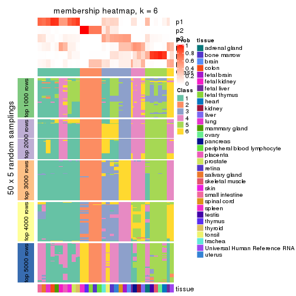
As soon as we have had the classes for columns, we can look for signatures which are significantly different between classes which can be candidate marks for certain classes. Following are the heatmaps for signatures.
Signature heatmaps where rows are scaled:
get_signatures(res, k = 2)
get_signatures(res, k = 3)

get_signatures(res, k = 4)
get_signatures(res, k = 5)
get_signatures(res, k = 6)
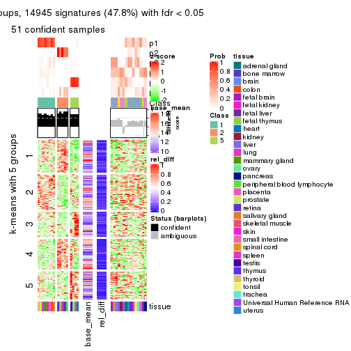
Signature heatmaps where rows are not scaled:
get_signatures(res, k = 2, scale_rows = FALSE)
get_signatures(res, k = 3, scale_rows = FALSE)
get_signatures(res, k = 4, scale_rows = FALSE)
get_signatures(res, k = 5, scale_rows = FALSE)
get_signatures(res, k = 6, scale_rows = FALSE)
Compare the overlap of signatures from different k:
compare_signatures(res)
get_signature() returns a data frame invisibly. TO get the list of signatures, the function
call should be assigned to a variable explicitly. In following code, if plot argument is set
to FALSE, no heatmap is plotted while only the differential analysis is performed.
# code only for demonstration
tb = get_signature(res, k = ..., plot = FALSE)
An example of the output of tb is:
#> which_row fdr mean_1 mean_2 scaled_mean_1 scaled_mean_2 km
#> 1 38 0.042760348 8.373488 9.131774 -0.5533452 0.5164555 1
#> 2 40 0.018707592 7.106213 8.469186 -0.6173731 0.5762149 1
#> 3 55 0.019134737 10.221463 11.207825 -0.6159697 0.5749050 1
#> 4 59 0.006059896 5.921854 7.869574 -0.6899429 0.6439467 1
#> 5 60 0.018055526 8.928898 10.211722 -0.6204761 0.5791110 1
#> 6 98 0.009384629 15.714769 14.887706 0.6635654 -0.6193277 2
...
The columns in tb are:
which_row: row indices corresponding to the input matrix.fdr: FDR for the differential test. mean_x: The mean value in group x.scaled_mean_x: The mean value in group x after rows are scaled.km: Row groups if k-means clustering is applied to rows.UMAP plot which shows how samples are separated.
dimension_reduction(res, k = 2, method = "UMAP")
dimension_reduction(res, k = 3, method = "UMAP")
dimension_reduction(res, k = 4, method = "UMAP")
dimension_reduction(res, k = 5, method = "UMAP")
dimension_reduction(res, k = 6, method = "UMAP")
Following heatmap shows how subgroups are split when increasing k:
collect_classes(res)
Test correlation between subgroups and known annotations. If the known annotation is numeric, one-way ANOVA test is applied, and if the known annotation is discrete, chi-squared contingency table test is applied.
test_to_known_factors(res)
#> n tissue(p) k
#> MAD:mclust 57 6.19e-06 2
#> MAD:mclust 81 3.17e-13 3
#> MAD:mclust 48 7.87e-09 4
#> MAD:mclust 58 9.04e-14 5
#> MAD:mclust 51 3.12e-09 6
If matrix rows can be associated to genes, consider to use functional_enrichment(res,
...) to perform function enrichment for the signature genes. See this vignette for more detailed explanations.
The object with results only for a single top-value method and a single partition method can be extracted as:
res = res_list["MAD", "NMF"]
# you can also extract it by
# res = res_list["MAD:NMF"]
A summary of res and all the functions that can be applied to it:
res
#> A 'ConsensusPartition' object with k = 2, 3, 4, 5, 6.
#> On a matrix with 31234 rows and 96 columns.
#> Top rows (1000, 2000, 3000, 4000, 5000) are extracted by 'MAD' method.
#> Subgroups are detected by 'NMF' method.
#> Performed in total 1250 partitions by row resampling.
#> Best k for subgroups seems to be 3.
#>
#> Following methods can be applied to this 'ConsensusPartition' object:
#> [1] "cola_report" "collect_classes" "collect_plots"
#> [4] "collect_stats" "colnames" "compare_signatures"
#> [7] "consensus_heatmap" "dimension_reduction" "functional_enrichment"
#> [10] "get_anno_col" "get_anno" "get_classes"
#> [13] "get_consensus" "get_matrix" "get_membership"
#> [16] "get_param" "get_signatures" "get_stats"
#> [19] "is_best_k" "is_stable_k" "membership_heatmap"
#> [22] "ncol" "nrow" "plot_ecdf"
#> [25] "rownames" "select_partition_number" "show"
#> [28] "suggest_best_k" "test_to_known_factors"
collect_plots() function collects all the plots made from res for all k (number of partitions)
into one single page to provide an easy and fast comparison between different k.
collect_plots(res)
The plots are:
k and the heatmap of
predicted classes for each k.k.k.k.All the plots in panels can be made by individual functions and they are plotted later in this section.
select_partition_number() produces several plots showing different
statistics for choosing “optimized” k. There are following statistics:
k;k, the area increased is defined as \(A_k - A_{k-1}\).The detailed explanations of these statistics can be found in the cola vignette.
Generally speaking, lower PAC score, higher mean silhouette score or higher
concordance corresponds to better partition. Rand index and Jaccard index
measure how similar the current partition is compared to partition with k-1.
If they are too similar, we won't accept k is better than k-1.
select_partition_number(res)
The numeric values for all these statistics can be obtained by get_stats().
get_stats(res)
#> k 1-PAC mean_silhouette concordance area_increased Rand Jaccard
#> 2 2 0.508 0.790 0.907 0.4373 0.544 0.544
#> 3 3 0.858 0.845 0.941 0.4180 0.588 0.376
#> 4 4 0.714 0.803 0.897 0.1723 0.836 0.592
#> 5 5 0.884 0.818 0.911 0.0719 0.908 0.692
#> 6 6 0.808 0.688 0.835 0.0438 0.889 0.586
suggest_best_k() suggests the best \(k\) based on these statistics. The rules are as follows:
suggest_best_k(res)
#> [1] 3
Following shows the table of the partitions (You need to click the show/hide
code output link to see it). The membership matrix (columns with name p*)
is inferred by
clue::cl_consensus()
function with the SE method. Basically the value in the membership matrix
represents the probability to belong to a certain group. The finall class
label for an item is determined with the group with highest probability it
belongs to.
In get_classes() function, the entropy is calculated from the membership
matrix and the silhouette score is calculated from the consensus matrix.
cbind(get_classes(res, k = 2), get_membership(res, k = 2))
#> class entropy silhouette p1 p2
#> GSM194459 2 0.861 0.615 0.284 0.716
#> GSM194460 2 0.738 0.717 0.208 0.792
#> GSM194461 2 0.827 0.651 0.260 0.740
#> GSM194462 2 0.327 0.833 0.060 0.940
#> GSM194463 2 0.295 0.837 0.052 0.948
#> GSM194464 2 0.327 0.833 0.060 0.940
#> GSM194465 1 0.722 0.761 0.800 0.200
#> GSM194466 1 0.730 0.756 0.796 0.204
#> GSM194467 1 0.745 0.745 0.788 0.212
#> GSM194468 1 0.946 0.459 0.636 0.364
#> GSM194469 1 0.946 0.457 0.636 0.364
#> GSM194470 1 0.961 0.404 0.616 0.384
#> GSM194471 1 0.000 0.902 1.000 0.000
#> GSM194472 1 0.000 0.902 1.000 0.000
#> GSM194473 1 0.000 0.902 1.000 0.000
#> GSM194474 1 0.000 0.902 1.000 0.000
#> GSM194475 1 0.000 0.902 1.000 0.000
#> GSM194476 1 0.000 0.902 1.000 0.000
#> GSM194477 1 0.163 0.894 0.976 0.024
#> GSM194478 1 0.141 0.896 0.980 0.020
#> GSM194479 1 0.163 0.894 0.976 0.024
#> GSM194480 1 0.000 0.902 1.000 0.000
#> GSM194481 1 0.000 0.902 1.000 0.000
#> GSM194482 1 0.000 0.902 1.000 0.000
#> GSM194483 1 0.000 0.902 1.000 0.000
#> GSM194484 1 0.000 0.902 1.000 0.000
#> GSM194485 1 0.000 0.902 1.000 0.000
#> GSM194486 1 0.000 0.902 1.000 0.000
#> GSM194487 1 0.000 0.902 1.000 0.000
#> GSM194488 1 0.000 0.902 1.000 0.000
#> GSM194489 2 0.000 0.853 0.000 1.000
#> GSM194490 2 0.000 0.853 0.000 1.000
#> GSM194491 2 0.000 0.853 0.000 1.000
#> GSM194492 2 0.999 0.114 0.480 0.520
#> GSM194493 2 0.999 0.113 0.480 0.520
#> GSM194494 2 1.000 0.062 0.492 0.508
#> GSM194495 1 0.000 0.902 1.000 0.000
#> GSM194496 1 0.000 0.902 1.000 0.000
#> GSM194497 1 0.000 0.902 1.000 0.000
#> GSM194498 2 0.605 0.777 0.148 0.852
#> GSM194499 2 0.595 0.781 0.144 0.856
#> GSM194500 2 0.541 0.796 0.124 0.876
#> GSM194501 1 0.141 0.896 0.980 0.020
#> GSM194502 1 0.163 0.894 0.976 0.024
#> GSM194503 1 0.163 0.894 0.976 0.024
#> GSM194504 1 0.000 0.902 1.000 0.000
#> GSM194505 1 0.000 0.902 1.000 0.000
#> GSM194506 1 0.000 0.902 1.000 0.000
#> GSM194507 1 0.000 0.902 1.000 0.000
#> GSM194508 1 0.000 0.902 1.000 0.000
#> GSM194509 1 0.000 0.902 1.000 0.000
#> GSM194510 1 0.563 0.826 0.868 0.132
#> GSM194511 1 0.574 0.823 0.864 0.136
#> GSM194512 1 0.469 0.849 0.900 0.100
#> GSM194513 2 0.000 0.853 0.000 1.000
#> GSM194514 2 0.000 0.853 0.000 1.000
#> GSM194515 2 0.000 0.853 0.000 1.000
#> GSM194516 2 0.000 0.853 0.000 1.000
#> GSM194517 2 0.000 0.853 0.000 1.000
#> GSM194518 2 0.000 0.853 0.000 1.000
#> GSM194519 1 0.000 0.902 1.000 0.000
#> GSM194520 1 0.000 0.902 1.000 0.000
#> GSM194521 1 0.000 0.902 1.000 0.000
#> GSM194522 1 0.000 0.902 1.000 0.000
#> GSM194523 1 0.000 0.902 1.000 0.000
#> GSM194524 1 0.000 0.902 1.000 0.000
#> GSM194525 1 0.689 0.779 0.816 0.184
#> GSM194526 1 0.714 0.766 0.804 0.196
#> GSM194527 1 0.738 0.750 0.792 0.208
#> GSM194528 1 0.615 0.810 0.848 0.152
#> GSM194529 1 0.615 0.810 0.848 0.152
#> GSM194530 1 0.615 0.810 0.848 0.152
#> GSM194531 1 0.963 0.377 0.612 0.388
#> GSM194532 1 0.946 0.446 0.636 0.364
#> GSM194533 1 0.955 0.413 0.624 0.376
#> GSM194534 2 0.983 0.307 0.424 0.576
#> GSM194535 2 0.971 0.374 0.400 0.600
#> GSM194536 2 0.952 0.443 0.372 0.628
#> GSM194537 1 0.706 0.771 0.808 0.192
#> GSM194538 1 0.706 0.771 0.808 0.192
#> GSM194539 1 0.706 0.771 0.808 0.192
#> GSM194540 2 0.000 0.853 0.000 1.000
#> GSM194541 2 0.000 0.853 0.000 1.000
#> GSM194542 2 0.000 0.853 0.000 1.000
#> GSM194543 1 0.000 0.902 1.000 0.000
#> GSM194544 1 0.000 0.902 1.000 0.000
#> GSM194545 1 0.000 0.902 1.000 0.000
#> GSM194546 2 0.000 0.853 0.000 1.000
#> GSM194547 2 0.000 0.853 0.000 1.000
#> GSM194548 2 0.000 0.853 0.000 1.000
#> GSM194549 2 0.000 0.853 0.000 1.000
#> GSM194550 2 0.000 0.853 0.000 1.000
#> GSM194551 2 0.000 0.853 0.000 1.000
#> GSM194552 1 0.000 0.902 1.000 0.000
#> GSM194553 1 0.000 0.902 1.000 0.000
#> GSM194554 1 0.000 0.902 1.000 0.000
cbind(get_classes(res, k = 3), get_membership(res, k = 3))
#> class entropy silhouette p1 p2 p3
#> GSM194459 1 0.0000 0.9565 1.000 0.000 0.000
#> GSM194460 1 0.0000 0.9565 1.000 0.000 0.000
#> GSM194461 1 0.0000 0.9565 1.000 0.000 0.000
#> GSM194462 1 0.1411 0.9274 0.964 0.036 0.000
#> GSM194463 1 0.2066 0.9037 0.940 0.060 0.000
#> GSM194464 1 0.1643 0.9200 0.956 0.044 0.000
#> GSM194465 1 0.0000 0.9565 1.000 0.000 0.000
#> GSM194466 1 0.0000 0.9565 1.000 0.000 0.000
#> GSM194467 1 0.0000 0.9565 1.000 0.000 0.000
#> GSM194468 2 0.7992 0.5086 0.328 0.592 0.080
#> GSM194469 2 0.8181 0.5067 0.324 0.584 0.092
#> GSM194470 2 0.7150 0.4993 0.348 0.616 0.036
#> GSM194471 3 0.0000 0.9078 0.000 0.000 1.000
#> GSM194472 3 0.0000 0.9078 0.000 0.000 1.000
#> GSM194473 3 0.0000 0.9078 0.000 0.000 1.000
#> GSM194474 3 0.0000 0.9078 0.000 0.000 1.000
#> GSM194475 3 0.0000 0.9078 0.000 0.000 1.000
#> GSM194476 3 0.0000 0.9078 0.000 0.000 1.000
#> GSM194477 1 0.0000 0.9565 1.000 0.000 0.000
#> GSM194478 1 0.0000 0.9565 1.000 0.000 0.000
#> GSM194479 1 0.0000 0.9565 1.000 0.000 0.000
#> GSM194480 3 0.0000 0.9078 0.000 0.000 1.000
#> GSM194481 3 0.0000 0.9078 0.000 0.000 1.000
#> GSM194482 3 0.0000 0.9078 0.000 0.000 1.000
#> GSM194483 3 0.0000 0.9078 0.000 0.000 1.000
#> GSM194484 3 0.0000 0.9078 0.000 0.000 1.000
#> GSM194485 3 0.0000 0.9078 0.000 0.000 1.000
#> GSM194486 3 0.0000 0.9078 0.000 0.000 1.000
#> GSM194487 3 0.0000 0.9078 0.000 0.000 1.000
#> GSM194488 3 0.0000 0.9078 0.000 0.000 1.000
#> GSM194489 2 0.5760 0.5593 0.328 0.672 0.000
#> GSM194490 2 0.5560 0.6042 0.300 0.700 0.000
#> GSM194491 2 0.5810 0.5437 0.336 0.664 0.000
#> GSM194492 1 0.0000 0.9565 1.000 0.000 0.000
#> GSM194493 1 0.0000 0.9565 1.000 0.000 0.000
#> GSM194494 1 0.0000 0.9565 1.000 0.000 0.000
#> GSM194495 1 0.2796 0.8703 0.908 0.000 0.092
#> GSM194496 1 0.2448 0.8885 0.924 0.000 0.076
#> GSM194497 1 0.2448 0.8884 0.924 0.000 0.076
#> GSM194498 1 0.0000 0.9565 1.000 0.000 0.000
#> GSM194499 1 0.0000 0.9565 1.000 0.000 0.000
#> GSM194500 1 0.0000 0.9565 1.000 0.000 0.000
#> GSM194501 1 0.0000 0.9565 1.000 0.000 0.000
#> GSM194502 1 0.0000 0.9565 1.000 0.000 0.000
#> GSM194503 1 0.0000 0.9565 1.000 0.000 0.000
#> GSM194504 3 0.0000 0.9078 0.000 0.000 1.000
#> GSM194505 3 0.0000 0.9078 0.000 0.000 1.000
#> GSM194506 3 0.0000 0.9078 0.000 0.000 1.000
#> GSM194507 3 0.0000 0.9078 0.000 0.000 1.000
#> GSM194508 3 0.0000 0.9078 0.000 0.000 1.000
#> GSM194509 3 0.0000 0.9078 0.000 0.000 1.000
#> GSM194510 1 0.0000 0.9565 1.000 0.000 0.000
#> GSM194511 1 0.0000 0.9565 1.000 0.000 0.000
#> GSM194512 1 0.0000 0.9565 1.000 0.000 0.000
#> GSM194513 2 0.0000 0.8715 0.000 1.000 0.000
#> GSM194514 2 0.0000 0.8715 0.000 1.000 0.000
#> GSM194515 2 0.0000 0.8715 0.000 1.000 0.000
#> GSM194516 2 0.0000 0.8715 0.000 1.000 0.000
#> GSM194517 2 0.0000 0.8715 0.000 1.000 0.000
#> GSM194518 2 0.0000 0.8715 0.000 1.000 0.000
#> GSM194519 1 0.6309 -0.0408 0.500 0.000 0.500
#> GSM194520 3 0.6307 0.0302 0.488 0.000 0.512
#> GSM194521 1 0.6295 0.0639 0.528 0.000 0.472
#> GSM194522 1 0.0424 0.9514 0.992 0.000 0.008
#> GSM194523 1 0.0424 0.9514 0.992 0.000 0.008
#> GSM194524 1 0.0237 0.9539 0.996 0.000 0.004
#> GSM194525 1 0.0000 0.9565 1.000 0.000 0.000
#> GSM194526 1 0.0000 0.9565 1.000 0.000 0.000
#> GSM194527 1 0.0000 0.9565 1.000 0.000 0.000
#> GSM194528 1 0.2165 0.8995 0.936 0.000 0.064
#> GSM194529 1 0.3192 0.8454 0.888 0.000 0.112
#> GSM194530 1 0.3116 0.8503 0.892 0.000 0.108
#> GSM194531 1 0.0000 0.9565 1.000 0.000 0.000
#> GSM194532 1 0.0000 0.9565 1.000 0.000 0.000
#> GSM194533 1 0.0000 0.9565 1.000 0.000 0.000
#> GSM194534 1 0.0000 0.9565 1.000 0.000 0.000
#> GSM194535 1 0.0000 0.9565 1.000 0.000 0.000
#> GSM194536 1 0.0000 0.9565 1.000 0.000 0.000
#> GSM194537 1 0.0000 0.9565 1.000 0.000 0.000
#> GSM194538 1 0.0000 0.9565 1.000 0.000 0.000
#> GSM194539 1 0.0000 0.9565 1.000 0.000 0.000
#> GSM194540 2 0.0000 0.8715 0.000 1.000 0.000
#> GSM194541 2 0.0000 0.8715 0.000 1.000 0.000
#> GSM194542 2 0.0000 0.8715 0.000 1.000 0.000
#> GSM194543 3 0.6295 0.1477 0.472 0.000 0.528
#> GSM194544 3 0.6286 0.1733 0.464 0.000 0.536
#> GSM194545 3 0.6260 0.2207 0.448 0.000 0.552
#> GSM194546 2 0.0000 0.8715 0.000 1.000 0.000
#> GSM194547 2 0.0000 0.8715 0.000 1.000 0.000
#> GSM194548 2 0.0000 0.8715 0.000 1.000 0.000
#> GSM194549 2 0.0000 0.8715 0.000 1.000 0.000
#> GSM194550 2 0.0000 0.8715 0.000 1.000 0.000
#> GSM194551 2 0.0000 0.8715 0.000 1.000 0.000
#> GSM194552 3 0.0000 0.9078 0.000 0.000 1.000
#> GSM194553 3 0.0000 0.9078 0.000 0.000 1.000
#> GSM194554 3 0.0000 0.9078 0.000 0.000 1.000
cbind(get_classes(res, k = 4), get_membership(res, k = 4))
#> class entropy silhouette p1 p2 p3 p4
#> GSM194459 4 0.3764 0.8066 0.216 0.000 0.000 0.784
#> GSM194460 4 0.3764 0.8066 0.216 0.000 0.000 0.784
#> GSM194461 4 0.3764 0.8066 0.216 0.000 0.000 0.784
#> GSM194462 1 0.1398 0.8737 0.956 0.004 0.000 0.040
#> GSM194463 1 0.1489 0.8721 0.952 0.004 0.000 0.044
#> GSM194464 1 0.2125 0.8580 0.920 0.004 0.000 0.076
#> GSM194465 4 0.0707 0.8138 0.020 0.000 0.000 0.980
#> GSM194466 4 0.0592 0.8121 0.016 0.000 0.000 0.984
#> GSM194467 4 0.0592 0.8121 0.016 0.000 0.000 0.984
#> GSM194468 4 0.2944 0.7740 0.004 0.128 0.000 0.868
#> GSM194469 4 0.2999 0.7718 0.004 0.132 0.000 0.864
#> GSM194470 4 0.3052 0.7688 0.004 0.136 0.000 0.860
#> GSM194471 3 0.0000 0.8411 0.000 0.000 1.000 0.000
#> GSM194472 3 0.0000 0.8411 0.000 0.000 1.000 0.000
#> GSM194473 3 0.0000 0.8411 0.000 0.000 1.000 0.000
#> GSM194474 3 0.0000 0.8411 0.000 0.000 1.000 0.000
#> GSM194475 3 0.0000 0.8411 0.000 0.000 1.000 0.000
#> GSM194476 3 0.0000 0.8411 0.000 0.000 1.000 0.000
#> GSM194477 1 0.0188 0.8837 0.996 0.000 0.000 0.004
#> GSM194478 1 0.0000 0.8839 1.000 0.000 0.000 0.000
#> GSM194479 1 0.0000 0.8839 1.000 0.000 0.000 0.000
#> GSM194480 3 0.4585 0.6838 0.000 0.000 0.668 0.332
#> GSM194481 3 0.4564 0.6874 0.000 0.000 0.672 0.328
#> GSM194482 3 0.4585 0.6838 0.000 0.000 0.668 0.332
#> GSM194483 3 0.4605 0.6800 0.000 0.000 0.664 0.336
#> GSM194484 3 0.4605 0.6800 0.000 0.000 0.664 0.336
#> GSM194485 3 0.4605 0.6800 0.000 0.000 0.664 0.336
#> GSM194486 3 0.0000 0.8411 0.000 0.000 1.000 0.000
#> GSM194487 3 0.0000 0.8411 0.000 0.000 1.000 0.000
#> GSM194488 3 0.0000 0.8411 0.000 0.000 1.000 0.000
#> GSM194489 1 0.2281 0.8283 0.904 0.096 0.000 0.000
#> GSM194490 1 0.2281 0.8278 0.904 0.096 0.000 0.000
#> GSM194491 1 0.2149 0.8337 0.912 0.088 0.000 0.000
#> GSM194492 1 0.0188 0.8832 0.996 0.004 0.000 0.000
#> GSM194493 1 0.0188 0.8832 0.996 0.004 0.000 0.000
#> GSM194494 1 0.0188 0.8832 0.996 0.004 0.000 0.000
#> GSM194495 1 0.0188 0.8832 0.996 0.000 0.004 0.000
#> GSM194496 1 0.0188 0.8832 0.996 0.000 0.004 0.000
#> GSM194497 1 0.0188 0.8832 0.996 0.000 0.004 0.000
#> GSM194498 1 0.0000 0.8839 1.000 0.000 0.000 0.000
#> GSM194499 1 0.0000 0.8839 1.000 0.000 0.000 0.000
#> GSM194500 1 0.0000 0.8839 1.000 0.000 0.000 0.000
#> GSM194501 1 0.2469 0.8376 0.892 0.000 0.000 0.108
#> GSM194502 1 0.2647 0.8290 0.880 0.000 0.000 0.120
#> GSM194503 1 0.2760 0.8230 0.872 0.000 0.000 0.128
#> GSM194504 3 0.3610 0.7748 0.000 0.000 0.800 0.200
#> GSM194505 3 0.3610 0.7748 0.000 0.000 0.800 0.200
#> GSM194506 3 0.3610 0.7748 0.000 0.000 0.800 0.200
#> GSM194507 3 0.0000 0.8411 0.000 0.000 1.000 0.000
#> GSM194508 3 0.0000 0.8411 0.000 0.000 1.000 0.000
#> GSM194509 3 0.0000 0.8411 0.000 0.000 1.000 0.000
#> GSM194510 4 0.3486 0.8227 0.188 0.000 0.000 0.812
#> GSM194511 4 0.3356 0.8260 0.176 0.000 0.000 0.824
#> GSM194512 4 0.3400 0.8253 0.180 0.000 0.000 0.820
#> GSM194513 2 0.0000 0.9974 0.000 1.000 0.000 0.000
#> GSM194514 2 0.0000 0.9974 0.000 1.000 0.000 0.000
#> GSM194515 2 0.0000 0.9974 0.000 1.000 0.000 0.000
#> GSM194516 2 0.0188 0.9983 0.000 0.996 0.000 0.004
#> GSM194517 2 0.0188 0.9983 0.000 0.996 0.000 0.004
#> GSM194518 2 0.0188 0.9983 0.000 0.996 0.000 0.004
#> GSM194519 4 0.0188 0.8031 0.004 0.000 0.000 0.996
#> GSM194520 4 0.0188 0.8031 0.004 0.000 0.000 0.996
#> GSM194521 4 0.0336 0.8066 0.008 0.000 0.000 0.992
#> GSM194522 4 0.4741 0.6700 0.328 0.000 0.004 0.668
#> GSM194523 4 0.4585 0.6665 0.332 0.000 0.000 0.668
#> GSM194524 4 0.4605 0.6598 0.336 0.000 0.000 0.664
#> GSM194525 1 0.4907 0.0436 0.580 0.000 0.000 0.420
#> GSM194526 1 0.4888 0.0757 0.588 0.000 0.000 0.412
#> GSM194527 1 0.4907 0.0436 0.580 0.000 0.000 0.420
#> GSM194528 1 0.4222 0.6500 0.728 0.000 0.000 0.272
#> GSM194529 1 0.4250 0.6440 0.724 0.000 0.000 0.276
#> GSM194530 1 0.4072 0.6786 0.748 0.000 0.000 0.252
#> GSM194531 1 0.0000 0.8839 1.000 0.000 0.000 0.000
#> GSM194532 1 0.0000 0.8839 1.000 0.000 0.000 0.000
#> GSM194533 1 0.0000 0.8839 1.000 0.000 0.000 0.000
#> GSM194534 1 0.0188 0.8837 0.996 0.000 0.000 0.004
#> GSM194535 1 0.0188 0.8837 0.996 0.000 0.000 0.004
#> GSM194536 1 0.0000 0.8839 1.000 0.000 0.000 0.000
#> GSM194537 1 0.2814 0.8132 0.868 0.000 0.000 0.132
#> GSM194538 1 0.2814 0.8132 0.868 0.000 0.000 0.132
#> GSM194539 1 0.2760 0.8159 0.872 0.000 0.000 0.128
#> GSM194540 2 0.0000 0.9974 0.000 1.000 0.000 0.000
#> GSM194541 2 0.0000 0.9974 0.000 1.000 0.000 0.000
#> GSM194542 2 0.0000 0.9974 0.000 1.000 0.000 0.000
#> GSM194543 3 0.4955 0.2939 0.444 0.000 0.556 0.000
#> GSM194544 3 0.4967 0.2728 0.452 0.000 0.548 0.000
#> GSM194545 3 0.4898 0.3614 0.416 0.000 0.584 0.000
#> GSM194546 2 0.0188 0.9983 0.000 0.996 0.000 0.004
#> GSM194547 2 0.0188 0.9983 0.000 0.996 0.000 0.004
#> GSM194548 2 0.0188 0.9983 0.000 0.996 0.000 0.004
#> GSM194549 2 0.0188 0.9983 0.000 0.996 0.000 0.004
#> GSM194550 2 0.0188 0.9983 0.000 0.996 0.000 0.004
#> GSM194551 2 0.0188 0.9983 0.000 0.996 0.000 0.004
#> GSM194552 3 0.0000 0.8411 0.000 0.000 1.000 0.000
#> GSM194553 3 0.0000 0.8411 0.000 0.000 1.000 0.000
#> GSM194554 3 0.0000 0.8411 0.000 0.000 1.000 0.000
cbind(get_classes(res, k = 5), get_membership(res, k = 5))
#> class entropy silhouette p1 p2 p3 p4 p5
#> GSM194459 4 0.0162 0.857 0.004 0.000 0.000 0.996 0.000
#> GSM194460 4 0.0162 0.857 0.004 0.000 0.000 0.996 0.000
#> GSM194461 4 0.0162 0.857 0.004 0.000 0.000 0.996 0.000
#> GSM194462 1 0.0963 0.850 0.964 0.000 0.000 0.000 0.036
#> GSM194463 1 0.0963 0.850 0.964 0.000 0.000 0.000 0.036
#> GSM194464 1 0.1121 0.848 0.956 0.000 0.000 0.000 0.044
#> GSM194465 4 0.0000 0.856 0.000 0.000 0.000 1.000 0.000
#> GSM194466 4 0.0000 0.856 0.000 0.000 0.000 1.000 0.000
#> GSM194467 4 0.0000 0.856 0.000 0.000 0.000 1.000 0.000
#> GSM194468 4 0.1638 0.838 0.000 0.004 0.000 0.932 0.064
#> GSM194469 4 0.1638 0.838 0.000 0.004 0.000 0.932 0.064
#> GSM194470 4 0.1638 0.838 0.000 0.004 0.000 0.932 0.064
#> GSM194471 3 0.0000 0.986 0.000 0.000 1.000 0.000 0.000
#> GSM194472 3 0.0000 0.986 0.000 0.000 1.000 0.000 0.000
#> GSM194473 3 0.0000 0.986 0.000 0.000 1.000 0.000 0.000
#> GSM194474 3 0.0000 0.986 0.000 0.000 1.000 0.000 0.000
#> GSM194475 3 0.0000 0.986 0.000 0.000 1.000 0.000 0.000
#> GSM194476 3 0.0000 0.986 0.000 0.000 1.000 0.000 0.000
#> GSM194477 1 0.0000 0.853 1.000 0.000 0.000 0.000 0.000
#> GSM194478 1 0.0000 0.853 1.000 0.000 0.000 0.000 0.000
#> GSM194479 1 0.0000 0.853 1.000 0.000 0.000 0.000 0.000
#> GSM194480 5 0.1740 0.923 0.000 0.000 0.056 0.012 0.932
#> GSM194481 5 0.1740 0.923 0.000 0.000 0.056 0.012 0.932
#> GSM194482 5 0.1740 0.923 0.000 0.000 0.056 0.012 0.932
#> GSM194483 5 0.1740 0.923 0.000 0.000 0.056 0.012 0.932
#> GSM194484 5 0.1740 0.923 0.000 0.000 0.056 0.012 0.932
#> GSM194485 5 0.1740 0.923 0.000 0.000 0.056 0.012 0.932
#> GSM194486 3 0.0000 0.986 0.000 0.000 1.000 0.000 0.000
#> GSM194487 3 0.0000 0.986 0.000 0.000 1.000 0.000 0.000
#> GSM194488 3 0.0000 0.986 0.000 0.000 1.000 0.000 0.000
#> GSM194489 1 0.1043 0.842 0.960 0.040 0.000 0.000 0.000
#> GSM194490 1 0.0963 0.844 0.964 0.036 0.000 0.000 0.000
#> GSM194491 1 0.0794 0.847 0.972 0.028 0.000 0.000 0.000
#> GSM194492 1 0.0000 0.853 1.000 0.000 0.000 0.000 0.000
#> GSM194493 1 0.0000 0.853 1.000 0.000 0.000 0.000 0.000
#> GSM194494 1 0.0000 0.853 1.000 0.000 0.000 0.000 0.000
#> GSM194495 1 0.3266 0.712 0.796 0.000 0.004 0.000 0.200
#> GSM194496 1 0.3333 0.703 0.788 0.000 0.004 0.000 0.208
#> GSM194497 1 0.3300 0.708 0.792 0.000 0.004 0.000 0.204
#> GSM194498 1 0.0794 0.849 0.972 0.000 0.000 0.028 0.000
#> GSM194499 1 0.0703 0.850 0.976 0.000 0.000 0.024 0.000
#> GSM194500 1 0.0703 0.850 0.976 0.000 0.000 0.024 0.000
#> GSM194501 1 0.4390 0.354 0.568 0.000 0.000 0.004 0.428
#> GSM194502 1 0.4403 0.336 0.560 0.000 0.000 0.004 0.436
#> GSM194503 1 0.4420 0.309 0.548 0.000 0.000 0.004 0.448
#> GSM194504 5 0.1502 0.918 0.000 0.000 0.056 0.004 0.940
#> GSM194505 5 0.1502 0.918 0.000 0.000 0.056 0.004 0.940
#> GSM194506 5 0.1502 0.918 0.000 0.000 0.056 0.004 0.940
#> GSM194507 3 0.1502 0.942 0.000 0.000 0.940 0.004 0.056
#> GSM194508 3 0.1502 0.942 0.000 0.000 0.940 0.004 0.056
#> GSM194509 3 0.1502 0.942 0.000 0.000 0.940 0.004 0.056
#> GSM194510 4 0.0510 0.854 0.016 0.000 0.000 0.984 0.000
#> GSM194511 4 0.0510 0.854 0.016 0.000 0.000 0.984 0.000
#> GSM194512 4 0.0290 0.856 0.008 0.000 0.000 0.992 0.000
#> GSM194513 2 0.0000 0.993 0.000 1.000 0.000 0.000 0.000
#> GSM194514 2 0.0000 0.993 0.000 1.000 0.000 0.000 0.000
#> GSM194515 2 0.0000 0.993 0.000 1.000 0.000 0.000 0.000
#> GSM194516 2 0.0880 0.974 0.000 0.968 0.000 0.000 0.032
#> GSM194517 2 0.0880 0.974 0.000 0.968 0.000 0.000 0.032
#> GSM194518 2 0.0880 0.974 0.000 0.968 0.000 0.000 0.032
#> GSM194519 4 0.3586 0.643 0.000 0.000 0.000 0.736 0.264
#> GSM194520 4 0.3612 0.638 0.000 0.000 0.000 0.732 0.268
#> GSM194521 4 0.3305 0.689 0.000 0.000 0.000 0.776 0.224
#> GSM194522 4 0.0912 0.855 0.012 0.000 0.000 0.972 0.016
#> GSM194523 4 0.0912 0.854 0.016 0.000 0.000 0.972 0.012
#> GSM194524 4 0.0798 0.854 0.016 0.000 0.000 0.976 0.008
#> GSM194525 4 0.4767 0.307 0.420 0.000 0.000 0.560 0.020
#> GSM194526 4 0.4882 0.237 0.444 0.000 0.000 0.532 0.024
#> GSM194527 4 0.4872 0.260 0.436 0.000 0.000 0.540 0.024
#> GSM194528 1 0.3395 0.654 0.764 0.000 0.000 0.000 0.236
#> GSM194529 1 0.3424 0.648 0.760 0.000 0.000 0.000 0.240
#> GSM194530 1 0.3039 0.710 0.808 0.000 0.000 0.000 0.192
#> GSM194531 1 0.0162 0.853 0.996 0.000 0.000 0.004 0.000
#> GSM194532 1 0.0162 0.853 0.996 0.000 0.000 0.004 0.000
#> GSM194533 1 0.0162 0.853 0.996 0.000 0.000 0.004 0.000
#> GSM194534 1 0.1792 0.814 0.916 0.000 0.000 0.084 0.000
#> GSM194535 1 0.1732 0.817 0.920 0.000 0.000 0.080 0.000
#> GSM194536 1 0.1341 0.834 0.944 0.000 0.000 0.056 0.000
#> GSM194537 1 0.1205 0.849 0.956 0.000 0.000 0.004 0.040
#> GSM194538 1 0.1043 0.849 0.960 0.000 0.000 0.000 0.040
#> GSM194539 1 0.1041 0.851 0.964 0.000 0.000 0.004 0.032
#> GSM194540 2 0.0162 0.991 0.000 0.996 0.000 0.000 0.004
#> GSM194541 2 0.0162 0.991 0.000 0.996 0.000 0.000 0.004
#> GSM194542 2 0.0162 0.991 0.000 0.996 0.000 0.000 0.004
#> GSM194543 1 0.6802 -0.193 0.356 0.000 0.292 0.000 0.352
#> GSM194544 5 0.6819 0.112 0.340 0.000 0.312 0.000 0.348
#> GSM194545 1 0.6802 -0.193 0.356 0.000 0.292 0.000 0.352
#> GSM194546 2 0.0000 0.993 0.000 1.000 0.000 0.000 0.000
#> GSM194547 2 0.0000 0.993 0.000 1.000 0.000 0.000 0.000
#> GSM194548 2 0.0000 0.993 0.000 1.000 0.000 0.000 0.000
#> GSM194549 2 0.0000 0.993 0.000 1.000 0.000 0.000 0.000
#> GSM194550 2 0.0000 0.993 0.000 1.000 0.000 0.000 0.000
#> GSM194551 2 0.0000 0.993 0.000 1.000 0.000 0.000 0.000
#> GSM194552 3 0.0000 0.986 0.000 0.000 1.000 0.000 0.000
#> GSM194553 3 0.0000 0.986 0.000 0.000 1.000 0.000 0.000
#> GSM194554 3 0.0000 0.986 0.000 0.000 1.000 0.000 0.000
cbind(get_classes(res, k = 6), get_membership(res, k = 6))
#> class entropy silhouette p1 p2 p3 p4 p5 p6
#> GSM194459 4 0.0000 0.8951 0.000 0.000 0.000 1.000 0.000 0.000
#> GSM194460 4 0.0000 0.8951 0.000 0.000 0.000 1.000 0.000 0.000
#> GSM194461 4 0.0000 0.8951 0.000 0.000 0.000 1.000 0.000 0.000
#> GSM194462 1 0.4464 0.5353 0.684 0.032 0.000 0.000 0.264 0.020
#> GSM194463 1 0.4885 0.4478 0.632 0.048 0.000 0.000 0.300 0.020
#> GSM194464 1 0.5004 0.4026 0.608 0.040 0.000 0.000 0.324 0.028
#> GSM194465 4 0.0000 0.8951 0.000 0.000 0.000 1.000 0.000 0.000
#> GSM194466 4 0.0000 0.8951 0.000 0.000 0.000 1.000 0.000 0.000
#> GSM194467 4 0.0000 0.8951 0.000 0.000 0.000 1.000 0.000 0.000
#> GSM194468 6 0.4034 0.5267 0.000 0.020 0.000 0.328 0.000 0.652
#> GSM194469 6 0.4034 0.5267 0.000 0.020 0.000 0.328 0.000 0.652
#> GSM194470 6 0.4034 0.5267 0.000 0.020 0.000 0.328 0.000 0.652
#> GSM194471 3 0.0000 0.9461 0.000 0.000 1.000 0.000 0.000 0.000
#> GSM194472 3 0.0000 0.9461 0.000 0.000 1.000 0.000 0.000 0.000
#> GSM194473 3 0.0000 0.9461 0.000 0.000 1.000 0.000 0.000 0.000
#> GSM194474 3 0.0000 0.9461 0.000 0.000 1.000 0.000 0.000 0.000
#> GSM194475 3 0.0000 0.9461 0.000 0.000 1.000 0.000 0.000 0.000
#> GSM194476 3 0.0000 0.9461 0.000 0.000 1.000 0.000 0.000 0.000
#> GSM194477 1 0.0405 0.8194 0.988 0.000 0.000 0.000 0.004 0.008
#> GSM194478 1 0.0405 0.8194 0.988 0.000 0.000 0.000 0.004 0.008
#> GSM194479 1 0.0405 0.8194 0.988 0.000 0.000 0.000 0.004 0.008
#> GSM194480 5 0.3448 0.4938 0.000 0.000 0.004 0.000 0.716 0.280
#> GSM194481 5 0.3448 0.4938 0.000 0.000 0.004 0.000 0.716 0.280
#> GSM194482 5 0.3448 0.4938 0.000 0.000 0.004 0.000 0.716 0.280
#> GSM194483 5 0.3555 0.4933 0.000 0.000 0.008 0.000 0.712 0.280
#> GSM194484 5 0.3555 0.4933 0.000 0.000 0.008 0.000 0.712 0.280
#> GSM194485 5 0.3555 0.4933 0.000 0.000 0.008 0.000 0.712 0.280
#> GSM194486 3 0.0000 0.9461 0.000 0.000 1.000 0.000 0.000 0.000
#> GSM194487 3 0.0000 0.9461 0.000 0.000 1.000 0.000 0.000 0.000
#> GSM194488 3 0.0000 0.9461 0.000 0.000 1.000 0.000 0.000 0.000
#> GSM194489 1 0.2214 0.7629 0.888 0.096 0.000 0.000 0.000 0.016
#> GSM194490 1 0.2060 0.7734 0.900 0.084 0.000 0.000 0.000 0.016
#> GSM194491 1 0.2112 0.7703 0.896 0.088 0.000 0.000 0.000 0.016
#> GSM194492 1 0.0000 0.8198 1.000 0.000 0.000 0.000 0.000 0.000
#> GSM194493 1 0.0000 0.8198 1.000 0.000 0.000 0.000 0.000 0.000
#> GSM194494 1 0.0000 0.8198 1.000 0.000 0.000 0.000 0.000 0.000
#> GSM194495 5 0.4550 0.2000 0.420 0.000 0.000 0.000 0.544 0.036
#> GSM194496 5 0.4537 0.2212 0.412 0.000 0.000 0.000 0.552 0.036
#> GSM194497 5 0.4544 0.2108 0.416 0.000 0.000 0.000 0.548 0.036
#> GSM194498 1 0.1500 0.8042 0.936 0.000 0.000 0.052 0.000 0.012
#> GSM194499 1 0.1367 0.8090 0.944 0.000 0.000 0.044 0.000 0.012
#> GSM194500 1 0.1151 0.8145 0.956 0.000 0.000 0.032 0.000 0.012
#> GSM194501 5 0.4903 0.3049 0.360 0.000 0.000 0.000 0.568 0.072
#> GSM194502 5 0.4747 0.3198 0.356 0.000 0.000 0.000 0.584 0.060
#> GSM194503 5 0.4775 0.3312 0.348 0.000 0.000 0.000 0.588 0.064
#> GSM194504 5 0.3984 0.4163 0.000 0.000 0.008 0.000 0.596 0.396
#> GSM194505 5 0.3965 0.4062 0.000 0.000 0.008 0.000 0.604 0.388
#> GSM194506 5 0.3993 0.4155 0.000 0.000 0.008 0.000 0.592 0.400
#> GSM194507 3 0.3868 -0.3088 0.000 0.000 0.504 0.000 0.000 0.496
#> GSM194508 6 0.3869 0.0827 0.000 0.000 0.500 0.000 0.000 0.500
#> GSM194509 6 0.3868 0.1063 0.000 0.000 0.492 0.000 0.000 0.508
#> GSM194510 4 0.1367 0.8668 0.044 0.000 0.000 0.944 0.000 0.012
#> GSM194511 4 0.1151 0.8768 0.032 0.000 0.000 0.956 0.000 0.012
#> GSM194512 4 0.1367 0.8668 0.044 0.000 0.000 0.944 0.000 0.012
#> GSM194513 2 0.0260 0.9380 0.000 0.992 0.000 0.000 0.000 0.008
#> GSM194514 2 0.0260 0.9380 0.000 0.992 0.000 0.000 0.000 0.008
#> GSM194515 2 0.0260 0.9380 0.000 0.992 0.000 0.000 0.000 0.008
#> GSM194516 2 0.3023 0.7469 0.000 0.768 0.000 0.000 0.000 0.232
#> GSM194517 2 0.3050 0.7422 0.000 0.764 0.000 0.000 0.000 0.236
#> GSM194518 2 0.3076 0.7372 0.000 0.760 0.000 0.000 0.000 0.240
#> GSM194519 4 0.3947 0.6536 0.000 0.000 0.000 0.732 0.048 0.220
#> GSM194520 4 0.4167 0.6217 0.000 0.000 0.000 0.708 0.056 0.236
#> GSM194521 4 0.3555 0.7060 0.000 0.000 0.000 0.776 0.040 0.184
#> GSM194522 4 0.1882 0.8533 0.008 0.000 0.000 0.920 0.012 0.060
#> GSM194523 4 0.1655 0.8632 0.008 0.000 0.000 0.932 0.008 0.052
#> GSM194524 4 0.1590 0.8662 0.008 0.000 0.000 0.936 0.008 0.048
#> GSM194525 1 0.7611 -0.0766 0.332 0.000 0.000 0.220 0.260 0.188
#> GSM194526 1 0.7533 -0.0512 0.352 0.000 0.000 0.172 0.268 0.208
#> GSM194527 1 0.7545 -0.0587 0.348 0.000 0.000 0.172 0.268 0.212
#> GSM194528 1 0.2197 0.7795 0.900 0.000 0.000 0.000 0.044 0.056
#> GSM194529 1 0.2179 0.7835 0.900 0.000 0.000 0.000 0.036 0.064
#> GSM194530 1 0.1865 0.7966 0.920 0.000 0.000 0.000 0.040 0.040
#> GSM194531 1 0.0146 0.8203 0.996 0.000 0.000 0.004 0.000 0.000
#> GSM194532 1 0.0146 0.8203 0.996 0.000 0.000 0.004 0.000 0.000
#> GSM194533 1 0.0146 0.8203 0.996 0.000 0.000 0.004 0.000 0.000
#> GSM194534 1 0.0865 0.8143 0.964 0.000 0.000 0.036 0.000 0.000
#> GSM194535 1 0.0790 0.8159 0.968 0.000 0.000 0.032 0.000 0.000
#> GSM194536 1 0.0713 0.8171 0.972 0.000 0.000 0.028 0.000 0.000
#> GSM194537 1 0.3832 0.6891 0.776 0.000 0.000 0.000 0.120 0.104
#> GSM194538 1 0.3375 0.7171 0.816 0.000 0.000 0.000 0.096 0.088
#> GSM194539 1 0.3611 0.7077 0.796 0.000 0.000 0.000 0.108 0.096
#> GSM194540 2 0.0458 0.9330 0.000 0.984 0.000 0.000 0.000 0.016
#> GSM194541 2 0.0458 0.9330 0.000 0.984 0.000 0.000 0.000 0.016
#> GSM194542 2 0.0458 0.9330 0.000 0.984 0.000 0.000 0.000 0.016
#> GSM194543 5 0.4159 0.4135 0.020 0.000 0.300 0.008 0.672 0.000
#> GSM194544 5 0.4093 0.3850 0.012 0.000 0.324 0.008 0.656 0.000
#> GSM194545 5 0.4088 0.4095 0.020 0.000 0.308 0.004 0.668 0.000
#> GSM194546 2 0.0000 0.9402 0.000 1.000 0.000 0.000 0.000 0.000
#> GSM194547 2 0.0000 0.9402 0.000 1.000 0.000 0.000 0.000 0.000
#> GSM194548 2 0.0000 0.9402 0.000 1.000 0.000 0.000 0.000 0.000
#> GSM194549 2 0.0000 0.9402 0.000 1.000 0.000 0.000 0.000 0.000
#> GSM194550 2 0.0146 0.9390 0.000 0.996 0.000 0.000 0.000 0.004
#> GSM194551 2 0.0000 0.9402 0.000 1.000 0.000 0.000 0.000 0.000
#> GSM194552 3 0.0000 0.9461 0.000 0.000 1.000 0.000 0.000 0.000
#> GSM194553 3 0.0000 0.9461 0.000 0.000 1.000 0.000 0.000 0.000
#> GSM194554 3 0.0000 0.9461 0.000 0.000 1.000 0.000 0.000 0.000
Heatmaps for the consensus matrix. It visualizes the probability of two samples to be in a same group.
consensus_heatmap(res, k = 2)
consensus_heatmap(res, k = 3)
consensus_heatmap(res, k = 4)
consensus_heatmap(res, k = 5)
consensus_heatmap(res, k = 6)
Heatmaps for the membership of samples in all partitions to see how consistent they are:
membership_heatmap(res, k = 2)
membership_heatmap(res, k = 3)
membership_heatmap(res, k = 4)
membership_heatmap(res, k = 5)
membership_heatmap(res, k = 6)
As soon as we have had the classes for columns, we can look for signatures which are significantly different between classes which can be candidate marks for certain classes. Following are the heatmaps for signatures.
Signature heatmaps where rows are scaled:
get_signatures(res, k = 2)
get_signatures(res, k = 3)
get_signatures(res, k = 4)
get_signatures(res, k = 5)
get_signatures(res, k = 6)
Signature heatmaps where rows are not scaled:
get_signatures(res, k = 2, scale_rows = FALSE)
get_signatures(res, k = 3, scale_rows = FALSE)
get_signatures(res, k = 4, scale_rows = FALSE)
get_signatures(res, k = 5, scale_rows = FALSE)
get_signatures(res, k = 6, scale_rows = FALSE)
Compare the overlap of signatures from different k:
compare_signatures(res)
get_signature() returns a data frame invisibly. TO get the list of signatures, the function
call should be assigned to a variable explicitly. In following code, if plot argument is set
to FALSE, no heatmap is plotted while only the differential analysis is performed.
# code only for demonstration
tb = get_signature(res, k = ..., plot = FALSE)
An example of the output of tb is:
#> which_row fdr mean_1 mean_2 scaled_mean_1 scaled_mean_2 km
#> 1 38 0.042760348 8.373488 9.131774 -0.5533452 0.5164555 1
#> 2 40 0.018707592 7.106213 8.469186 -0.6173731 0.5762149 1
#> 3 55 0.019134737 10.221463 11.207825 -0.6159697 0.5749050 1
#> 4 59 0.006059896 5.921854 7.869574 -0.6899429 0.6439467 1
#> 5 60 0.018055526 8.928898 10.211722 -0.6204761 0.5791110 1
#> 6 98 0.009384629 15.714769 14.887706 0.6635654 -0.6193277 2
...
The columns in tb are:
which_row: row indices corresponding to the input matrix.fdr: FDR for the differential test. mean_x: The mean value in group x.scaled_mean_x: The mean value in group x after rows are scaled.km: Row groups if k-means clustering is applied to rows.UMAP plot which shows how samples are separated.
dimension_reduction(res, k = 2, method = "UMAP")
dimension_reduction(res, k = 3, method = "UMAP")
dimension_reduction(res, k = 4, method = "UMAP")
dimension_reduction(res, k = 5, method = "UMAP")
dimension_reduction(res, k = 6, method = "UMAP")
Following heatmap shows how subgroups are split when increasing k:
collect_classes(res)
Test correlation between subgroups and known annotations. If the known annotation is numeric, one-way ANOVA test is applied, and if the known annotation is discrete, chi-squared contingency table test is applied.
test_to_known_factors(res)
#> n tissue(p) k
#> MAD:NMF 84 9.22e-08 2
#> MAD:NMF 89 4.05e-14 3
#> MAD:NMF 90 1.28e-20 4
#> MAD:NMF 87 5.28e-26 5
#> MAD:NMF 70 7.30e-21 6
If matrix rows can be associated to genes, consider to use functional_enrichment(res,
...) to perform function enrichment for the signature genes. See this vignette for more detailed explanations.
The object with results only for a single top-value method and a single partition method can be extracted as:
res = res_list["ATC", "hclust"]
# you can also extract it by
# res = res_list["ATC:hclust"]
A summary of res and all the functions that can be applied to it:
res
#> A 'ConsensusPartition' object with k = 2, 3, 4, 5, 6.
#> On a matrix with 31234 rows and 96 columns.
#> Top rows (1000, 2000, 3000, 4000, 5000) are extracted by 'ATC' method.
#> Subgroups are detected by 'hclust' method.
#> Performed in total 1250 partitions by row resampling.
#> Best k for subgroups seems to be 5.
#>
#> Following methods can be applied to this 'ConsensusPartition' object:
#> [1] "cola_report" "collect_classes" "collect_plots"
#> [4] "collect_stats" "colnames" "compare_signatures"
#> [7] "consensus_heatmap" "dimension_reduction" "functional_enrichment"
#> [10] "get_anno_col" "get_anno" "get_classes"
#> [13] "get_consensus" "get_matrix" "get_membership"
#> [16] "get_param" "get_signatures" "get_stats"
#> [19] "is_best_k" "is_stable_k" "membership_heatmap"
#> [22] "ncol" "nrow" "plot_ecdf"
#> [25] "rownames" "select_partition_number" "show"
#> [28] "suggest_best_k" "test_to_known_factors"
collect_plots() function collects all the plots made from res for all k (number of partitions)
into one single page to provide an easy and fast comparison between different k.
collect_plots(res)
The plots are:
k and the heatmap of
predicted classes for each k.k.k.k.All the plots in panels can be made by individual functions and they are plotted later in this section.
select_partition_number() produces several plots showing different
statistics for choosing “optimized” k. There are following statistics:
k;k, the area increased is defined as \(A_k - A_{k-1}\).The detailed explanations of these statistics can be found in the cola vignette.
Generally speaking, lower PAC score, higher mean silhouette score or higher
concordance corresponds to better partition. Rand index and Jaccard index
measure how similar the current partition is compared to partition with k-1.
If they are too similar, we won't accept k is better than k-1.
select_partition_number(res)
The numeric values for all these statistics can be obtained by get_stats().
get_stats(res)
#> k 1-PAC mean_silhouette concordance area_increased Rand Jaccard
#> 2 2 0.339 0.421 0.662 0.4058 0.655 0.655
#> 3 3 0.583 0.664 0.730 0.4799 0.732 0.590
#> 4 4 0.649 0.684 0.793 0.1424 0.751 0.458
#> 5 5 0.806 0.802 0.876 0.0776 0.907 0.694
#> 6 6 0.806 0.799 0.852 0.0277 0.959 0.827
suggest_best_k() suggests the best \(k\) based on these statistics. The rules are as follows:
suggest_best_k(res)
#> [1] 5
Following shows the table of the partitions (You need to click the show/hide
code output link to see it). The membership matrix (columns with name p*)
is inferred by
clue::cl_consensus()
function with the SE method. Basically the value in the membership matrix
represents the probability to belong to a certain group. The finall class
label for an item is determined with the group with highest probability it
belongs to.
In get_classes() function, the entropy is calculated from the membership
matrix and the silhouette score is calculated from the consensus matrix.
cbind(get_classes(res, k = 2), get_membership(res, k = 2))
#> class entropy silhouette p1 p2
#> GSM194459 1 0.9775 0.490 0.588 0.412
#> GSM194460 1 0.9775 0.490 0.588 0.412
#> GSM194461 1 0.9775 0.490 0.588 0.412
#> GSM194462 1 0.9522 -0.375 0.628 0.372
#> GSM194463 1 0.9522 -0.375 0.628 0.372
#> GSM194464 1 0.9522 -0.375 0.628 0.372
#> GSM194465 1 0.0000 0.558 1.000 0.000
#> GSM194466 1 0.0000 0.558 1.000 0.000
#> GSM194467 1 0.0000 0.558 1.000 0.000
#> GSM194468 2 0.9775 1.000 0.412 0.588
#> GSM194469 2 0.9775 1.000 0.412 0.588
#> GSM194470 2 0.9775 1.000 0.412 0.588
#> GSM194471 1 0.9775 0.490 0.588 0.412
#> GSM194472 1 0.9775 0.490 0.588 0.412
#> GSM194473 1 0.9775 0.490 0.588 0.412
#> GSM194474 1 0.9522 -0.375 0.628 0.372
#> GSM194475 1 0.9522 -0.375 0.628 0.372
#> GSM194476 1 0.9522 -0.375 0.628 0.372
#> GSM194477 1 0.9522 -0.375 0.628 0.372
#> GSM194478 1 0.9522 -0.375 0.628 0.372
#> GSM194479 1 0.9522 -0.375 0.628 0.372
#> GSM194480 1 0.9775 0.490 0.588 0.412
#> GSM194481 1 0.9775 0.490 0.588 0.412
#> GSM194482 1 0.9775 0.490 0.588 0.412
#> GSM194483 1 0.9775 0.490 0.588 0.412
#> GSM194484 1 0.9775 0.490 0.588 0.412
#> GSM194485 1 0.9775 0.490 0.588 0.412
#> GSM194486 1 0.9775 0.490 0.588 0.412
#> GSM194487 1 0.9775 0.490 0.588 0.412
#> GSM194488 1 0.9775 0.490 0.588 0.412
#> GSM194489 2 0.9775 1.000 0.412 0.588
#> GSM194490 2 0.9775 1.000 0.412 0.588
#> GSM194491 2 0.9775 1.000 0.412 0.588
#> GSM194492 1 0.0000 0.558 1.000 0.000
#> GSM194493 1 0.0000 0.558 1.000 0.000
#> GSM194494 1 0.0000 0.558 1.000 0.000
#> GSM194495 1 0.0376 0.555 0.996 0.004
#> GSM194496 1 0.0376 0.555 0.996 0.004
#> GSM194497 1 0.0376 0.555 0.996 0.004
#> GSM194498 1 0.0000 0.558 1.000 0.000
#> GSM194499 1 0.0000 0.558 1.000 0.000
#> GSM194500 1 0.0000 0.558 1.000 0.000
#> GSM194501 1 0.0000 0.558 1.000 0.000
#> GSM194502 1 0.0000 0.558 1.000 0.000
#> GSM194503 1 0.0000 0.558 1.000 0.000
#> GSM194504 1 0.9922 -0.638 0.552 0.448
#> GSM194505 1 0.9922 -0.638 0.552 0.448
#> GSM194506 1 0.9922 -0.638 0.552 0.448
#> GSM194507 1 0.9522 -0.375 0.628 0.372
#> GSM194508 1 0.9522 -0.375 0.628 0.372
#> GSM194509 1 0.9522 -0.375 0.628 0.372
#> GSM194510 1 0.9775 0.490 0.588 0.412
#> GSM194511 1 0.9775 0.490 0.588 0.412
#> GSM194512 1 0.9775 0.490 0.588 0.412
#> GSM194513 2 0.9775 1.000 0.412 0.588
#> GSM194514 2 0.9775 1.000 0.412 0.588
#> GSM194515 2 0.9775 1.000 0.412 0.588
#> GSM194516 2 0.9775 1.000 0.412 0.588
#> GSM194517 2 0.9775 1.000 0.412 0.588
#> GSM194518 2 0.9775 1.000 0.412 0.588
#> GSM194519 1 0.5294 0.385 0.880 0.120
#> GSM194520 1 0.5294 0.385 0.880 0.120
#> GSM194521 1 0.5294 0.385 0.880 0.120
#> GSM194522 1 0.1184 0.545 0.984 0.016
#> GSM194523 1 0.1184 0.545 0.984 0.016
#> GSM194524 1 0.1184 0.545 0.984 0.016
#> GSM194525 1 0.0000 0.558 1.000 0.000
#> GSM194526 1 0.0000 0.558 1.000 0.000
#> GSM194527 1 0.0000 0.558 1.000 0.000
#> GSM194528 1 0.9522 -0.375 0.628 0.372
#> GSM194529 1 0.9522 -0.375 0.628 0.372
#> GSM194530 1 0.9522 -0.375 0.628 0.372
#> GSM194531 1 0.9775 0.490 0.588 0.412
#> GSM194532 1 0.9775 0.490 0.588 0.412
#> GSM194533 1 0.9775 0.490 0.588 0.412
#> GSM194534 1 0.0000 0.558 1.000 0.000
#> GSM194535 1 0.0000 0.558 1.000 0.000
#> GSM194536 1 0.0000 0.558 1.000 0.000
#> GSM194537 1 0.9522 -0.375 0.628 0.372
#> GSM194538 1 0.9522 -0.375 0.628 0.372
#> GSM194539 1 0.9522 -0.375 0.628 0.372
#> GSM194540 2 0.9775 1.000 0.412 0.588
#> GSM194541 2 0.9775 1.000 0.412 0.588
#> GSM194542 2 0.9775 1.000 0.412 0.588
#> GSM194543 1 0.0000 0.558 1.000 0.000
#> GSM194544 1 0.0000 0.558 1.000 0.000
#> GSM194545 1 0.0000 0.558 1.000 0.000
#> GSM194546 2 0.9775 1.000 0.412 0.588
#> GSM194547 2 0.9775 1.000 0.412 0.588
#> GSM194548 2 0.9775 1.000 0.412 0.588
#> GSM194549 2 0.9775 1.000 0.412 0.588
#> GSM194550 2 0.9775 1.000 0.412 0.588
#> GSM194551 2 0.9775 1.000 0.412 0.588
#> GSM194552 1 0.1184 0.545 0.984 0.016
#> GSM194553 1 0.1184 0.545 0.984 0.016
#> GSM194554 1 0.1184 0.545 0.984 0.016
cbind(get_classes(res, k = 3), get_membership(res, k = 3))
#> class entropy silhouette p1 p2 p3
#> GSM194459 3 0.6274 0.760 0.456 0.000 0.544
#> GSM194460 3 0.6274 0.760 0.456 0.000 0.544
#> GSM194461 3 0.6274 0.760 0.456 0.000 0.544
#> GSM194462 1 0.8185 0.524 0.500 0.072 0.428
#> GSM194463 1 0.8185 0.524 0.500 0.072 0.428
#> GSM194464 1 0.8185 0.524 0.500 0.072 0.428
#> GSM194465 1 0.0000 0.654 1.000 0.000 0.000
#> GSM194466 1 0.0000 0.654 1.000 0.000 0.000
#> GSM194467 1 0.0000 0.654 1.000 0.000 0.000
#> GSM194468 2 0.7884 0.609 0.104 0.644 0.252
#> GSM194469 2 0.7884 0.609 0.104 0.644 0.252
#> GSM194470 2 0.7884 0.609 0.104 0.644 0.252
#> GSM194471 3 0.6299 0.607 0.476 0.000 0.524
#> GSM194472 3 0.6299 0.607 0.476 0.000 0.524
#> GSM194473 3 0.6299 0.607 0.476 0.000 0.524
#> GSM194474 1 0.7232 0.544 0.544 0.028 0.428
#> GSM194475 1 0.7232 0.544 0.544 0.028 0.428
#> GSM194476 1 0.7232 0.544 0.544 0.028 0.428
#> GSM194477 1 0.8185 0.524 0.500 0.072 0.428
#> GSM194478 1 0.8185 0.524 0.500 0.072 0.428
#> GSM194479 1 0.8185 0.524 0.500 0.072 0.428
#> GSM194480 3 0.6215 0.760 0.428 0.000 0.572
#> GSM194481 3 0.6215 0.760 0.428 0.000 0.572
#> GSM194482 3 0.6215 0.760 0.428 0.000 0.572
#> GSM194483 3 0.6215 0.760 0.428 0.000 0.572
#> GSM194484 3 0.6215 0.760 0.428 0.000 0.572
#> GSM194485 3 0.6215 0.760 0.428 0.000 0.572
#> GSM194486 3 0.6299 0.607 0.476 0.000 0.524
#> GSM194487 3 0.6299 0.607 0.476 0.000 0.524
#> GSM194488 3 0.6299 0.607 0.476 0.000 0.524
#> GSM194489 2 0.0892 0.924 0.020 0.980 0.000
#> GSM194490 2 0.0892 0.924 0.020 0.980 0.000
#> GSM194491 2 0.0892 0.924 0.020 0.980 0.000
#> GSM194492 1 0.0000 0.654 1.000 0.000 0.000
#> GSM194493 1 0.0000 0.654 1.000 0.000 0.000
#> GSM194494 1 0.0000 0.654 1.000 0.000 0.000
#> GSM194495 1 0.0237 0.655 0.996 0.000 0.004
#> GSM194496 1 0.0237 0.655 0.996 0.000 0.004
#> GSM194497 1 0.0237 0.655 0.996 0.000 0.004
#> GSM194498 1 0.0000 0.654 1.000 0.000 0.000
#> GSM194499 1 0.0000 0.654 1.000 0.000 0.000
#> GSM194500 1 0.0000 0.654 1.000 0.000 0.000
#> GSM194501 1 0.0000 0.654 1.000 0.000 0.000
#> GSM194502 1 0.0000 0.654 1.000 0.000 0.000
#> GSM194503 1 0.0000 0.654 1.000 0.000 0.000
#> GSM194504 3 0.9300 -0.326 0.160 0.412 0.428
#> GSM194505 3 0.9300 -0.326 0.160 0.412 0.428
#> GSM194506 3 0.9300 -0.326 0.160 0.412 0.428
#> GSM194507 1 0.7232 0.544 0.544 0.028 0.428
#> GSM194508 1 0.7232 0.544 0.544 0.028 0.428
#> GSM194509 1 0.7232 0.544 0.544 0.028 0.428
#> GSM194510 3 0.6274 0.760 0.456 0.000 0.544
#> GSM194511 3 0.6274 0.760 0.456 0.000 0.544
#> GSM194512 3 0.6274 0.760 0.456 0.000 0.544
#> GSM194513 2 0.0000 0.939 0.000 1.000 0.000
#> GSM194514 2 0.0000 0.939 0.000 1.000 0.000
#> GSM194515 2 0.0000 0.939 0.000 1.000 0.000
#> GSM194516 2 0.0000 0.939 0.000 1.000 0.000
#> GSM194517 2 0.0000 0.939 0.000 1.000 0.000
#> GSM194518 2 0.0000 0.939 0.000 1.000 0.000
#> GSM194519 1 0.5348 0.594 0.796 0.028 0.176
#> GSM194520 1 0.5348 0.594 0.796 0.028 0.176
#> GSM194521 1 0.5348 0.594 0.796 0.028 0.176
#> GSM194522 1 0.0747 0.655 0.984 0.000 0.016
#> GSM194523 1 0.0747 0.655 0.984 0.000 0.016
#> GSM194524 1 0.0747 0.655 0.984 0.000 0.016
#> GSM194525 1 0.0000 0.654 1.000 0.000 0.000
#> GSM194526 1 0.0000 0.654 1.000 0.000 0.000
#> GSM194527 1 0.0000 0.654 1.000 0.000 0.000
#> GSM194528 1 0.8185 0.524 0.500 0.072 0.428
#> GSM194529 1 0.8185 0.524 0.500 0.072 0.428
#> GSM194530 1 0.8185 0.524 0.500 0.072 0.428
#> GSM194531 3 0.6274 0.760 0.456 0.000 0.544
#> GSM194532 3 0.6274 0.760 0.456 0.000 0.544
#> GSM194533 3 0.6274 0.760 0.456 0.000 0.544
#> GSM194534 1 0.0000 0.654 1.000 0.000 0.000
#> GSM194535 1 0.0000 0.654 1.000 0.000 0.000
#> GSM194536 1 0.0000 0.654 1.000 0.000 0.000
#> GSM194537 1 0.8185 0.524 0.500 0.072 0.428
#> GSM194538 1 0.8185 0.524 0.500 0.072 0.428
#> GSM194539 1 0.8185 0.524 0.500 0.072 0.428
#> GSM194540 2 0.0000 0.939 0.000 1.000 0.000
#> GSM194541 2 0.0000 0.939 0.000 1.000 0.000
#> GSM194542 2 0.0000 0.939 0.000 1.000 0.000
#> GSM194543 1 0.0000 0.654 1.000 0.000 0.000
#> GSM194544 1 0.0000 0.654 1.000 0.000 0.000
#> GSM194545 1 0.0000 0.654 1.000 0.000 0.000
#> GSM194546 2 0.0000 0.939 0.000 1.000 0.000
#> GSM194547 2 0.0000 0.939 0.000 1.000 0.000
#> GSM194548 2 0.0000 0.939 0.000 1.000 0.000
#> GSM194549 2 0.0000 0.939 0.000 1.000 0.000
#> GSM194550 2 0.0000 0.939 0.000 1.000 0.000
#> GSM194551 2 0.0000 0.939 0.000 1.000 0.000
#> GSM194552 1 0.0747 0.655 0.984 0.000 0.016
#> GSM194553 1 0.0747 0.655 0.984 0.000 0.016
#> GSM194554 1 0.0747 0.655 0.984 0.000 0.016
cbind(get_classes(res, k = 4), get_membership(res, k = 4))
#> class entropy silhouette p1 p2 p3 p4
#> GSM194459 4 0.4431 0.0466 0.000 0.000 0.304 0.696
#> GSM194460 4 0.4431 0.0466 0.000 0.000 0.304 0.696
#> GSM194461 4 0.4431 0.0466 0.000 0.000 0.304 0.696
#> GSM194462 1 0.4174 0.7480 0.816 0.044 0.000 0.140
#> GSM194463 1 0.4174 0.7480 0.816 0.044 0.000 0.140
#> GSM194464 1 0.4174 0.7480 0.816 0.044 0.000 0.140
#> GSM194465 4 0.4624 0.7555 0.340 0.000 0.000 0.660
#> GSM194466 4 0.4624 0.7555 0.340 0.000 0.000 0.660
#> GSM194467 4 0.4624 0.7555 0.340 0.000 0.000 0.660
#> GSM194468 2 0.4697 0.5466 0.356 0.644 0.000 0.000
#> GSM194469 2 0.4697 0.5466 0.356 0.644 0.000 0.000
#> GSM194470 2 0.4697 0.5466 0.356 0.644 0.000 0.000
#> GSM194471 3 0.4591 0.8523 0.084 0.000 0.800 0.116
#> GSM194472 3 0.4591 0.8523 0.084 0.000 0.800 0.116
#> GSM194473 3 0.4591 0.8523 0.084 0.000 0.800 0.116
#> GSM194474 1 0.0000 0.7446 1.000 0.000 0.000 0.000
#> GSM194475 1 0.0000 0.7446 1.000 0.000 0.000 0.000
#> GSM194476 1 0.0000 0.7446 1.000 0.000 0.000 0.000
#> GSM194477 1 0.4224 0.7454 0.812 0.044 0.000 0.144
#> GSM194478 1 0.4224 0.7454 0.812 0.044 0.000 0.144
#> GSM194479 1 0.4224 0.7454 0.812 0.044 0.000 0.144
#> GSM194480 3 0.1022 0.8659 0.000 0.000 0.968 0.032
#> GSM194481 3 0.1022 0.8659 0.000 0.000 0.968 0.032
#> GSM194482 3 0.1022 0.8659 0.000 0.000 0.968 0.032
#> GSM194483 3 0.1022 0.8659 0.000 0.000 0.968 0.032
#> GSM194484 3 0.1022 0.8659 0.000 0.000 0.968 0.032
#> GSM194485 3 0.1022 0.8659 0.000 0.000 0.968 0.032
#> GSM194486 3 0.4591 0.8523 0.084 0.000 0.800 0.116
#> GSM194487 3 0.4591 0.8523 0.084 0.000 0.800 0.116
#> GSM194488 3 0.4591 0.8523 0.084 0.000 0.800 0.116
#> GSM194489 2 0.0707 0.9205 0.000 0.980 0.000 0.020
#> GSM194490 2 0.0707 0.9205 0.000 0.980 0.000 0.020
#> GSM194491 2 0.0707 0.9205 0.000 0.980 0.000 0.020
#> GSM194492 4 0.4624 0.7555 0.340 0.000 0.000 0.660
#> GSM194493 4 0.4624 0.7555 0.340 0.000 0.000 0.660
#> GSM194494 4 0.4624 0.7555 0.340 0.000 0.000 0.660
#> GSM194495 4 0.4643 0.7517 0.344 0.000 0.000 0.656
#> GSM194496 4 0.4643 0.7517 0.344 0.000 0.000 0.656
#> GSM194497 4 0.4643 0.7517 0.344 0.000 0.000 0.656
#> GSM194498 4 0.4624 0.7555 0.340 0.000 0.000 0.660
#> GSM194499 4 0.4624 0.7555 0.340 0.000 0.000 0.660
#> GSM194500 4 0.4624 0.7555 0.340 0.000 0.000 0.660
#> GSM194501 4 0.4624 0.7555 0.340 0.000 0.000 0.660
#> GSM194502 4 0.4624 0.7555 0.340 0.000 0.000 0.660
#> GSM194503 4 0.4624 0.7555 0.340 0.000 0.000 0.660
#> GSM194504 1 0.4804 0.0890 0.616 0.384 0.000 0.000
#> GSM194505 1 0.4804 0.0890 0.616 0.384 0.000 0.000
#> GSM194506 1 0.4804 0.0890 0.616 0.384 0.000 0.000
#> GSM194507 1 0.0000 0.7446 1.000 0.000 0.000 0.000
#> GSM194508 1 0.0000 0.7446 1.000 0.000 0.000 0.000
#> GSM194509 1 0.0000 0.7446 1.000 0.000 0.000 0.000
#> GSM194510 4 0.3801 0.1817 0.000 0.000 0.220 0.780
#> GSM194511 4 0.3801 0.1817 0.000 0.000 0.220 0.780
#> GSM194512 4 0.3801 0.1817 0.000 0.000 0.220 0.780
#> GSM194513 2 0.0000 0.9361 0.000 1.000 0.000 0.000
#> GSM194514 2 0.0000 0.9361 0.000 1.000 0.000 0.000
#> GSM194515 2 0.0000 0.9361 0.000 1.000 0.000 0.000
#> GSM194516 2 0.0000 0.9361 0.000 1.000 0.000 0.000
#> GSM194517 2 0.0000 0.9361 0.000 1.000 0.000 0.000
#> GSM194518 2 0.0000 0.9361 0.000 1.000 0.000 0.000
#> GSM194519 1 0.4855 -0.0531 0.600 0.000 0.000 0.400
#> GSM194520 1 0.4855 -0.0531 0.600 0.000 0.000 0.400
#> GSM194521 1 0.4855 -0.0531 0.600 0.000 0.000 0.400
#> GSM194522 4 0.4713 0.7330 0.360 0.000 0.000 0.640
#> GSM194523 4 0.4713 0.7330 0.360 0.000 0.000 0.640
#> GSM194524 4 0.4713 0.7330 0.360 0.000 0.000 0.640
#> GSM194525 4 0.4624 0.7555 0.340 0.000 0.000 0.660
#> GSM194526 4 0.4624 0.7555 0.340 0.000 0.000 0.660
#> GSM194527 4 0.4624 0.7555 0.340 0.000 0.000 0.660
#> GSM194528 1 0.4224 0.7454 0.812 0.044 0.000 0.144
#> GSM194529 1 0.4224 0.7454 0.812 0.044 0.000 0.144
#> GSM194530 1 0.4224 0.7454 0.812 0.044 0.000 0.144
#> GSM194531 4 0.4431 0.0466 0.000 0.000 0.304 0.696
#> GSM194532 4 0.4431 0.0466 0.000 0.000 0.304 0.696
#> GSM194533 4 0.4431 0.0466 0.000 0.000 0.304 0.696
#> GSM194534 4 0.4624 0.7555 0.340 0.000 0.000 0.660
#> GSM194535 4 0.4624 0.7555 0.340 0.000 0.000 0.660
#> GSM194536 4 0.4624 0.7555 0.340 0.000 0.000 0.660
#> GSM194537 1 0.2589 0.7548 0.912 0.044 0.000 0.044
#> GSM194538 1 0.2589 0.7548 0.912 0.044 0.000 0.044
#> GSM194539 1 0.2589 0.7548 0.912 0.044 0.000 0.044
#> GSM194540 2 0.0000 0.9361 0.000 1.000 0.000 0.000
#> GSM194541 2 0.0000 0.9361 0.000 1.000 0.000 0.000
#> GSM194542 2 0.0000 0.9361 0.000 1.000 0.000 0.000
#> GSM194543 4 0.4624 0.7555 0.340 0.000 0.000 0.660
#> GSM194544 4 0.4624 0.7555 0.340 0.000 0.000 0.660
#> GSM194545 4 0.4624 0.7555 0.340 0.000 0.000 0.660
#> GSM194546 2 0.0000 0.9361 0.000 1.000 0.000 0.000
#> GSM194547 2 0.0000 0.9361 0.000 1.000 0.000 0.000
#> GSM194548 2 0.0000 0.9361 0.000 1.000 0.000 0.000
#> GSM194549 2 0.0000 0.9361 0.000 1.000 0.000 0.000
#> GSM194550 2 0.0000 0.9361 0.000 1.000 0.000 0.000
#> GSM194551 2 0.0000 0.9361 0.000 1.000 0.000 0.000
#> GSM194552 4 0.4713 0.7330 0.360 0.000 0.000 0.640
#> GSM194553 4 0.4713 0.7330 0.360 0.000 0.000 0.640
#> GSM194554 4 0.4713 0.7330 0.360 0.000 0.000 0.640
cbind(get_classes(res, k = 5), get_membership(res, k = 5))
#> class entropy silhouette p1 p2 p3 p4 p5
#> GSM194459 4 0.0162 0.939 0.004 0.000 0.000 0.996 0.000
#> GSM194460 4 0.0162 0.939 0.004 0.000 0.000 0.996 0.000
#> GSM194461 4 0.0162 0.939 0.004 0.000 0.000 0.996 0.000
#> GSM194462 3 0.5216 0.576 0.436 0.044 0.520 0.000 0.000
#> GSM194463 3 0.5216 0.576 0.436 0.044 0.520 0.000 0.000
#> GSM194464 3 0.5216 0.576 0.436 0.044 0.520 0.000 0.000
#> GSM194465 1 0.1341 0.923 0.944 0.000 0.000 0.056 0.000
#> GSM194466 1 0.1341 0.923 0.944 0.000 0.000 0.056 0.000
#> GSM194467 1 0.1341 0.923 0.944 0.000 0.000 0.056 0.000
#> GSM194468 2 0.4045 0.482 0.000 0.644 0.356 0.000 0.000
#> GSM194469 2 0.4045 0.482 0.000 0.644 0.356 0.000 0.000
#> GSM194470 2 0.4045 0.482 0.000 0.644 0.356 0.000 0.000
#> GSM194471 5 0.0000 0.861 0.000 0.000 0.000 0.000 1.000
#> GSM194472 5 0.0000 0.861 0.000 0.000 0.000 0.000 1.000
#> GSM194473 5 0.0000 0.861 0.000 0.000 0.000 0.000 1.000
#> GSM194474 3 0.0000 0.524 0.000 0.000 1.000 0.000 0.000
#> GSM194475 3 0.0000 0.524 0.000 0.000 1.000 0.000 0.000
#> GSM194476 3 0.0000 0.524 0.000 0.000 1.000 0.000 0.000
#> GSM194477 3 0.5220 0.570 0.440 0.044 0.516 0.000 0.000
#> GSM194478 3 0.5220 0.570 0.440 0.044 0.516 0.000 0.000
#> GSM194479 3 0.5220 0.570 0.440 0.044 0.516 0.000 0.000
#> GSM194480 5 0.3395 0.842 0.000 0.000 0.000 0.236 0.764
#> GSM194481 5 0.3395 0.842 0.000 0.000 0.000 0.236 0.764
#> GSM194482 5 0.3395 0.842 0.000 0.000 0.000 0.236 0.764
#> GSM194483 5 0.3395 0.842 0.000 0.000 0.000 0.236 0.764
#> GSM194484 5 0.3395 0.842 0.000 0.000 0.000 0.236 0.764
#> GSM194485 5 0.3395 0.842 0.000 0.000 0.000 0.236 0.764
#> GSM194486 5 0.0000 0.861 0.000 0.000 0.000 0.000 1.000
#> GSM194487 5 0.0000 0.861 0.000 0.000 0.000 0.000 1.000
#> GSM194488 5 0.0000 0.861 0.000 0.000 0.000 0.000 1.000
#> GSM194489 2 0.0609 0.918 0.020 0.980 0.000 0.000 0.000
#> GSM194490 2 0.0609 0.918 0.020 0.980 0.000 0.000 0.000
#> GSM194491 2 0.0609 0.918 0.020 0.980 0.000 0.000 0.000
#> GSM194492 1 0.0000 0.932 1.000 0.000 0.000 0.000 0.000
#> GSM194493 1 0.0000 0.932 1.000 0.000 0.000 0.000 0.000
#> GSM194494 1 0.0000 0.932 1.000 0.000 0.000 0.000 0.000
#> GSM194495 1 0.0162 0.931 0.996 0.000 0.004 0.000 0.000
#> GSM194496 1 0.0162 0.931 0.996 0.000 0.004 0.000 0.000
#> GSM194497 1 0.0162 0.931 0.996 0.000 0.004 0.000 0.000
#> GSM194498 1 0.1341 0.923 0.944 0.000 0.000 0.056 0.000
#> GSM194499 1 0.1341 0.923 0.944 0.000 0.000 0.056 0.000
#> GSM194500 1 0.1341 0.923 0.944 0.000 0.000 0.056 0.000
#> GSM194501 1 0.1341 0.923 0.944 0.000 0.000 0.056 0.000
#> GSM194502 1 0.1341 0.923 0.944 0.000 0.000 0.056 0.000
#> GSM194503 1 0.1341 0.923 0.944 0.000 0.000 0.056 0.000
#> GSM194504 3 0.4138 0.250 0.000 0.384 0.616 0.000 0.000
#> GSM194505 3 0.4138 0.250 0.000 0.384 0.616 0.000 0.000
#> GSM194506 3 0.4138 0.250 0.000 0.384 0.616 0.000 0.000
#> GSM194507 3 0.0000 0.524 0.000 0.000 1.000 0.000 0.000
#> GSM194508 3 0.0000 0.524 0.000 0.000 1.000 0.000 0.000
#> GSM194509 3 0.0000 0.524 0.000 0.000 1.000 0.000 0.000
#> GSM194510 4 0.1965 0.881 0.096 0.000 0.000 0.904 0.000
#> GSM194511 4 0.1965 0.881 0.096 0.000 0.000 0.904 0.000
#> GSM194512 4 0.1965 0.881 0.096 0.000 0.000 0.904 0.000
#> GSM194513 2 0.0000 0.934 0.000 1.000 0.000 0.000 0.000
#> GSM194514 2 0.0000 0.934 0.000 1.000 0.000 0.000 0.000
#> GSM194515 2 0.0000 0.934 0.000 1.000 0.000 0.000 0.000
#> GSM194516 2 0.0000 0.934 0.000 1.000 0.000 0.000 0.000
#> GSM194517 2 0.0000 0.934 0.000 1.000 0.000 0.000 0.000
#> GSM194518 2 0.0000 0.934 0.000 1.000 0.000 0.000 0.000
#> GSM194519 1 0.3561 0.501 0.740 0.000 0.260 0.000 0.000
#> GSM194520 1 0.3561 0.501 0.740 0.000 0.260 0.000 0.000
#> GSM194521 1 0.3561 0.501 0.740 0.000 0.260 0.000 0.000
#> GSM194522 1 0.0609 0.924 0.980 0.000 0.020 0.000 0.000
#> GSM194523 1 0.0609 0.924 0.980 0.000 0.020 0.000 0.000
#> GSM194524 1 0.0609 0.924 0.980 0.000 0.020 0.000 0.000
#> GSM194525 1 0.0000 0.932 1.000 0.000 0.000 0.000 0.000
#> GSM194526 1 0.0000 0.932 1.000 0.000 0.000 0.000 0.000
#> GSM194527 1 0.0000 0.932 1.000 0.000 0.000 0.000 0.000
#> GSM194528 3 0.5220 0.570 0.440 0.044 0.516 0.000 0.000
#> GSM194529 3 0.5220 0.570 0.440 0.044 0.516 0.000 0.000
#> GSM194530 3 0.5220 0.570 0.440 0.044 0.516 0.000 0.000
#> GSM194531 4 0.0162 0.939 0.004 0.000 0.000 0.996 0.000
#> GSM194532 4 0.0162 0.939 0.004 0.000 0.000 0.996 0.000
#> GSM194533 4 0.0162 0.939 0.004 0.000 0.000 0.996 0.000
#> GSM194534 1 0.1341 0.923 0.944 0.000 0.000 0.056 0.000
#> GSM194535 1 0.1341 0.923 0.944 0.000 0.000 0.056 0.000
#> GSM194536 1 0.1341 0.923 0.944 0.000 0.000 0.056 0.000
#> GSM194537 3 0.4987 0.639 0.340 0.044 0.616 0.000 0.000
#> GSM194538 3 0.4987 0.639 0.340 0.044 0.616 0.000 0.000
#> GSM194539 3 0.4987 0.639 0.340 0.044 0.616 0.000 0.000
#> GSM194540 2 0.0000 0.934 0.000 1.000 0.000 0.000 0.000
#> GSM194541 2 0.0000 0.934 0.000 1.000 0.000 0.000 0.000
#> GSM194542 2 0.0000 0.934 0.000 1.000 0.000 0.000 0.000
#> GSM194543 1 0.0000 0.932 1.000 0.000 0.000 0.000 0.000
#> GSM194544 1 0.0000 0.932 1.000 0.000 0.000 0.000 0.000
#> GSM194545 1 0.0000 0.932 1.000 0.000 0.000 0.000 0.000
#> GSM194546 2 0.0000 0.934 0.000 1.000 0.000 0.000 0.000
#> GSM194547 2 0.0000 0.934 0.000 1.000 0.000 0.000 0.000
#> GSM194548 2 0.0000 0.934 0.000 1.000 0.000 0.000 0.000
#> GSM194549 2 0.0000 0.934 0.000 1.000 0.000 0.000 0.000
#> GSM194550 2 0.0000 0.934 0.000 1.000 0.000 0.000 0.000
#> GSM194551 2 0.0000 0.934 0.000 1.000 0.000 0.000 0.000
#> GSM194552 1 0.0609 0.924 0.980 0.000 0.020 0.000 0.000
#> GSM194553 1 0.0609 0.924 0.980 0.000 0.020 0.000 0.000
#> GSM194554 1 0.0609 0.924 0.980 0.000 0.020 0.000 0.000
cbind(get_classes(res, k = 6), get_membership(res, k = 6))
#> class entropy silhouette p1 p2 p3 p4 p5 p6
#> GSM194459 4 0.0000 0.945 0.000 0.000 0.000 1.000 0.000 0.000
#> GSM194460 4 0.0000 0.945 0.000 0.000 0.000 1.000 0.000 0.000
#> GSM194461 4 0.0000 0.945 0.000 0.000 0.000 1.000 0.000 0.000
#> GSM194462 6 0.3823 0.599 0.436 0.000 0.000 0.000 0.000 0.564
#> GSM194463 6 0.3823 0.599 0.436 0.000 0.000 0.000 0.000 0.564
#> GSM194464 6 0.3823 0.599 0.436 0.000 0.000 0.000 0.000 0.564
#> GSM194465 1 0.1267 0.915 0.940 0.000 0.000 0.060 0.000 0.000
#> GSM194466 1 0.1267 0.915 0.940 0.000 0.000 0.060 0.000 0.000
#> GSM194467 1 0.1267 0.915 0.940 0.000 0.000 0.060 0.000 0.000
#> GSM194468 6 0.3747 -0.103 0.000 0.396 0.000 0.000 0.000 0.604
#> GSM194469 6 0.3747 -0.103 0.000 0.396 0.000 0.000 0.000 0.604
#> GSM194470 6 0.3747 -0.103 0.000 0.396 0.000 0.000 0.000 0.604
#> GSM194471 5 0.3774 0.780 0.000 0.000 0.408 0.000 0.592 0.000
#> GSM194472 5 0.3774 0.780 0.000 0.000 0.408 0.000 0.592 0.000
#> GSM194473 5 0.3774 0.780 0.000 0.000 0.408 0.000 0.592 0.000
#> GSM194474 3 0.3774 0.996 0.000 0.000 0.592 0.000 0.000 0.408
#> GSM194475 3 0.3774 0.996 0.000 0.000 0.592 0.000 0.000 0.408
#> GSM194476 3 0.3774 0.996 0.000 0.000 0.592 0.000 0.000 0.408
#> GSM194477 6 0.3961 0.594 0.440 0.000 0.004 0.000 0.000 0.556
#> GSM194478 6 0.3961 0.594 0.440 0.000 0.004 0.000 0.000 0.556
#> GSM194479 6 0.3961 0.594 0.440 0.000 0.004 0.000 0.000 0.556
#> GSM194480 5 0.1007 0.779 0.000 0.000 0.000 0.044 0.956 0.000
#> GSM194481 5 0.1007 0.779 0.000 0.000 0.000 0.044 0.956 0.000
#> GSM194482 5 0.1007 0.779 0.000 0.000 0.000 0.044 0.956 0.000
#> GSM194483 5 0.1007 0.779 0.000 0.000 0.000 0.044 0.956 0.000
#> GSM194484 5 0.1007 0.779 0.000 0.000 0.000 0.044 0.956 0.000
#> GSM194485 5 0.1007 0.779 0.000 0.000 0.000 0.044 0.956 0.000
#> GSM194486 5 0.3774 0.780 0.000 0.000 0.408 0.000 0.592 0.000
#> GSM194487 5 0.3774 0.780 0.000 0.000 0.408 0.000 0.592 0.000
#> GSM194488 5 0.3774 0.780 0.000 0.000 0.408 0.000 0.592 0.000
#> GSM194489 2 0.0547 0.943 0.020 0.980 0.000 0.000 0.000 0.000
#> GSM194490 2 0.0547 0.943 0.020 0.980 0.000 0.000 0.000 0.000
#> GSM194491 2 0.0547 0.943 0.020 0.980 0.000 0.000 0.000 0.000
#> GSM194492 1 0.0000 0.927 1.000 0.000 0.000 0.000 0.000 0.000
#> GSM194493 1 0.0000 0.927 1.000 0.000 0.000 0.000 0.000 0.000
#> GSM194494 1 0.0000 0.927 1.000 0.000 0.000 0.000 0.000 0.000
#> GSM194495 1 0.0146 0.926 0.996 0.000 0.004 0.000 0.000 0.000
#> GSM194496 1 0.0146 0.926 0.996 0.000 0.004 0.000 0.000 0.000
#> GSM194497 1 0.0146 0.926 0.996 0.000 0.004 0.000 0.000 0.000
#> GSM194498 1 0.1267 0.915 0.940 0.000 0.000 0.060 0.000 0.000
#> GSM194499 1 0.1267 0.915 0.940 0.000 0.000 0.060 0.000 0.000
#> GSM194500 1 0.1267 0.915 0.940 0.000 0.000 0.060 0.000 0.000
#> GSM194501 1 0.1267 0.915 0.940 0.000 0.000 0.060 0.000 0.000
#> GSM194502 1 0.1267 0.915 0.940 0.000 0.000 0.060 0.000 0.000
#> GSM194503 1 0.1267 0.915 0.940 0.000 0.000 0.060 0.000 0.000
#> GSM194504 6 0.2219 0.145 0.000 0.136 0.000 0.000 0.000 0.864
#> GSM194505 6 0.2219 0.145 0.000 0.136 0.000 0.000 0.000 0.864
#> GSM194506 6 0.2219 0.145 0.000 0.136 0.000 0.000 0.000 0.864
#> GSM194507 3 0.3782 0.996 0.000 0.000 0.588 0.000 0.000 0.412
#> GSM194508 3 0.3782 0.996 0.000 0.000 0.588 0.000 0.000 0.412
#> GSM194509 3 0.3782 0.996 0.000 0.000 0.588 0.000 0.000 0.412
#> GSM194510 4 0.1714 0.890 0.092 0.000 0.000 0.908 0.000 0.000
#> GSM194511 4 0.1714 0.890 0.092 0.000 0.000 0.908 0.000 0.000
#> GSM194512 4 0.1714 0.890 0.092 0.000 0.000 0.908 0.000 0.000
#> GSM194513 2 0.0000 0.959 0.000 1.000 0.000 0.000 0.000 0.000
#> GSM194514 2 0.0000 0.959 0.000 1.000 0.000 0.000 0.000 0.000
#> GSM194515 2 0.0000 0.959 0.000 1.000 0.000 0.000 0.000 0.000
#> GSM194516 2 0.2823 0.806 0.000 0.796 0.000 0.000 0.000 0.204
#> GSM194517 2 0.2823 0.806 0.000 0.796 0.000 0.000 0.000 0.204
#> GSM194518 2 0.2823 0.806 0.000 0.796 0.000 0.000 0.000 0.204
#> GSM194519 1 0.3198 0.465 0.740 0.000 0.000 0.000 0.000 0.260
#> GSM194520 1 0.3198 0.465 0.740 0.000 0.000 0.000 0.000 0.260
#> GSM194521 1 0.3198 0.465 0.740 0.000 0.000 0.000 0.000 0.260
#> GSM194522 1 0.0547 0.919 0.980 0.000 0.020 0.000 0.000 0.000
#> GSM194523 1 0.0547 0.919 0.980 0.000 0.020 0.000 0.000 0.000
#> GSM194524 1 0.0547 0.919 0.980 0.000 0.020 0.000 0.000 0.000
#> GSM194525 1 0.0000 0.927 1.000 0.000 0.000 0.000 0.000 0.000
#> GSM194526 1 0.0000 0.927 1.000 0.000 0.000 0.000 0.000 0.000
#> GSM194527 1 0.0000 0.927 1.000 0.000 0.000 0.000 0.000 0.000
#> GSM194528 6 0.3961 0.594 0.440 0.000 0.004 0.000 0.000 0.556
#> GSM194529 6 0.3961 0.594 0.440 0.000 0.004 0.000 0.000 0.556
#> GSM194530 6 0.3961 0.594 0.440 0.000 0.004 0.000 0.000 0.556
#> GSM194531 4 0.0000 0.945 0.000 0.000 0.000 1.000 0.000 0.000
#> GSM194532 4 0.0000 0.945 0.000 0.000 0.000 1.000 0.000 0.000
#> GSM194533 4 0.0000 0.945 0.000 0.000 0.000 1.000 0.000 0.000
#> GSM194534 1 0.1267 0.915 0.940 0.000 0.000 0.060 0.000 0.000
#> GSM194535 1 0.1267 0.915 0.940 0.000 0.000 0.060 0.000 0.000
#> GSM194536 1 0.1267 0.915 0.940 0.000 0.000 0.060 0.000 0.000
#> GSM194537 6 0.3578 0.587 0.340 0.000 0.000 0.000 0.000 0.660
#> GSM194538 6 0.3578 0.587 0.340 0.000 0.000 0.000 0.000 0.660
#> GSM194539 6 0.3578 0.587 0.340 0.000 0.000 0.000 0.000 0.660
#> GSM194540 2 0.0000 0.959 0.000 1.000 0.000 0.000 0.000 0.000
#> GSM194541 2 0.0000 0.959 0.000 1.000 0.000 0.000 0.000 0.000
#> GSM194542 2 0.0000 0.959 0.000 1.000 0.000 0.000 0.000 0.000
#> GSM194543 1 0.0000 0.927 1.000 0.000 0.000 0.000 0.000 0.000
#> GSM194544 1 0.0000 0.927 1.000 0.000 0.000 0.000 0.000 0.000
#> GSM194545 1 0.0000 0.927 1.000 0.000 0.000 0.000 0.000 0.000
#> GSM194546 2 0.0000 0.959 0.000 1.000 0.000 0.000 0.000 0.000
#> GSM194547 2 0.0000 0.959 0.000 1.000 0.000 0.000 0.000 0.000
#> GSM194548 2 0.0000 0.959 0.000 1.000 0.000 0.000 0.000 0.000
#> GSM194549 2 0.0000 0.959 0.000 1.000 0.000 0.000 0.000 0.000
#> GSM194550 2 0.0000 0.959 0.000 1.000 0.000 0.000 0.000 0.000
#> GSM194551 2 0.0000 0.959 0.000 1.000 0.000 0.000 0.000 0.000
#> GSM194552 1 0.0547 0.919 0.980 0.000 0.020 0.000 0.000 0.000
#> GSM194553 1 0.0547 0.919 0.980 0.000 0.020 0.000 0.000 0.000
#> GSM194554 1 0.0547 0.919 0.980 0.000 0.020 0.000 0.000 0.000
Heatmaps for the consensus matrix. It visualizes the probability of two samples to be in a same group.
consensus_heatmap(res, k = 2)
consensus_heatmap(res, k = 3)
consensus_heatmap(res, k = 4)
consensus_heatmap(res, k = 5)
consensus_heatmap(res, k = 6)
Heatmaps for the membership of samples in all partitions to see how consistent they are:
membership_heatmap(res, k = 2)
membership_heatmap(res, k = 3)
membership_heatmap(res, k = 4)
membership_heatmap(res, k = 5)
membership_heatmap(res, k = 6)
As soon as we have had the classes for columns, we can look for signatures which are significantly different between classes which can be candidate marks for certain classes. Following are the heatmaps for signatures.
Signature heatmaps where rows are scaled:
get_signatures(res, k = 2)
get_signatures(res, k = 3)
get_signatures(res, k = 4)
get_signatures(res, k = 5)
get_signatures(res, k = 6)
Signature heatmaps where rows are not scaled:
get_signatures(res, k = 2, scale_rows = FALSE)
get_signatures(res, k = 3, scale_rows = FALSE)
get_signatures(res, k = 4, scale_rows = FALSE)
get_signatures(res, k = 5, scale_rows = FALSE)

get_signatures(res, k = 6, scale_rows = FALSE)
Compare the overlap of signatures from different k:
compare_signatures(res)
get_signature() returns a data frame invisibly. TO get the list of signatures, the function
call should be assigned to a variable explicitly. In following code, if plot argument is set
to FALSE, no heatmap is plotted while only the differential analysis is performed.
# code only for demonstration
tb = get_signature(res, k = ..., plot = FALSE)
An example of the output of tb is:
#> which_row fdr mean_1 mean_2 scaled_mean_1 scaled_mean_2 km
#> 1 38 0.042760348 8.373488 9.131774 -0.5533452 0.5164555 1
#> 2 40 0.018707592 7.106213 8.469186 -0.6173731 0.5762149 1
#> 3 55 0.019134737 10.221463 11.207825 -0.6159697 0.5749050 1
#> 4 59 0.006059896 5.921854 7.869574 -0.6899429 0.6439467 1
#> 5 60 0.018055526 8.928898 10.211722 -0.6204761 0.5791110 1
#> 6 98 0.009384629 15.714769 14.887706 0.6635654 -0.6193277 2
...
The columns in tb are:
which_row: row indices corresponding to the input matrix.fdr: FDR for the differential test. mean_x: The mean value in group x.scaled_mean_x: The mean value in group x after rows are scaled.km: Row groups if k-means clustering is applied to rows.UMAP plot which shows how samples are separated.
dimension_reduction(res, k = 2, method = "UMAP")
dimension_reduction(res, k = 3, method = "UMAP")
dimension_reduction(res, k = 4, method = "UMAP")
dimension_reduction(res, k = 5, method = "UMAP")
dimension_reduction(res, k = 6, method = "UMAP")
Following heatmap shows how subgroups are split when increasing k:
collect_classes(res)
Test correlation between subgroups and known annotations. If the known annotation is numeric, one-way ANOVA test is applied, and if the known annotation is discrete, chi-squared contingency table test is applied.
test_to_known_factors(res)
#> n tissue(p) k
#> ATC:hclust 51 1.59e-05 2
#> ATC:hclust 93 8.12e-15 3
#> ATC:hclust 81 7.75e-19 4
#> ATC:hclust 90 8.58e-27 5
#> ATC:hclust 87 5.71e-32 6
If matrix rows can be associated to genes, consider to use functional_enrichment(res,
...) to perform function enrichment for the signature genes. See this vignette for more detailed explanations.
The object with results only for a single top-value method and a single partition method can be extracted as:
res = res_list["ATC", "kmeans"]
# you can also extract it by
# res = res_list["ATC:kmeans"]
A summary of res and all the functions that can be applied to it:
res
#> A 'ConsensusPartition' object with k = 2, 3, 4, 5, 6.
#> On a matrix with 31234 rows and 96 columns.
#> Top rows (1000, 2000, 3000, 4000, 5000) are extracted by 'ATC' method.
#> Subgroups are detected by 'kmeans' method.
#> Performed in total 1250 partitions by row resampling.
#> Best k for subgroups seems to be 2.
#>
#> Following methods can be applied to this 'ConsensusPartition' object:
#> [1] "cola_report" "collect_classes" "collect_plots"
#> [4] "collect_stats" "colnames" "compare_signatures"
#> [7] "consensus_heatmap" "dimension_reduction" "functional_enrichment"
#> [10] "get_anno_col" "get_anno" "get_classes"
#> [13] "get_consensus" "get_matrix" "get_membership"
#> [16] "get_param" "get_signatures" "get_stats"
#> [19] "is_best_k" "is_stable_k" "membership_heatmap"
#> [22] "ncol" "nrow" "plot_ecdf"
#> [25] "rownames" "select_partition_number" "show"
#> [28] "suggest_best_k" "test_to_known_factors"
collect_plots() function collects all the plots made from res for all k (number of partitions)
into one single page to provide an easy and fast comparison between different k.
collect_plots(res)
The plots are:
k and the heatmap of
predicted classes for each k.k.k.k.All the plots in panels can be made by individual functions and they are plotted later in this section.
select_partition_number() produces several plots showing different
statistics for choosing “optimized” k. There are following statistics:
k;k, the area increased is defined as \(A_k - A_{k-1}\).The detailed explanations of these statistics can be found in the cola vignette.
Generally speaking, lower PAC score, higher mean silhouette score or higher
concordance corresponds to better partition. Rand index and Jaccard index
measure how similar the current partition is compared to partition with k-1.
If they are too similar, we won't accept k is better than k-1.
select_partition_number(res)
The numeric values for all these statistics can be obtained by get_stats().
get_stats(res)
#> k 1-PAC mean_silhouette concordance area_increased Rand Jaccard
#> 2 2 0.521 0.802 0.862 0.4521 0.526 0.526
#> 3 3 0.422 0.578 0.755 0.3642 0.711 0.503
#> 4 4 0.478 0.604 0.741 0.1343 0.756 0.429
#> 5 5 0.529 0.613 0.702 0.0775 0.951 0.818
#> 6 6 0.592 0.556 0.716 0.0441 0.961 0.839
suggest_best_k() suggests the best \(k\) based on these statistics. The rules are as follows:
suggest_best_k(res)
#> [1] 2
Following shows the table of the partitions (You need to click the show/hide
code output link to see it). The membership matrix (columns with name p*)
is inferred by
clue::cl_consensus()
function with the SE method. Basically the value in the membership matrix
represents the probability to belong to a certain group. The finall class
label for an item is determined with the group with highest probability it
belongs to.
In get_classes() function, the entropy is calculated from the membership
matrix and the silhouette score is calculated from the consensus matrix.
cbind(get_classes(res, k = 2), get_membership(res, k = 2))
#> class entropy silhouette p1 p2
#> GSM194459 1 0.8813 0.763 0.700 0.300
#> GSM194460 1 0.8813 0.763 0.700 0.300
#> GSM194461 1 0.8813 0.763 0.700 0.300
#> GSM194462 2 0.8955 0.984 0.312 0.688
#> GSM194463 2 0.8955 0.984 0.312 0.688
#> GSM194464 2 0.8955 0.984 0.312 0.688
#> GSM194465 1 0.6712 0.772 0.824 0.176
#> GSM194466 1 0.6712 0.772 0.824 0.176
#> GSM194467 1 0.6712 0.772 0.824 0.176
#> GSM194468 2 0.9087 0.981 0.324 0.676
#> GSM194469 2 0.9087 0.981 0.324 0.676
#> GSM194470 2 0.9087 0.981 0.324 0.676
#> GSM194471 1 0.9000 0.753 0.684 0.316
#> GSM194472 1 0.9000 0.753 0.684 0.316
#> GSM194473 1 0.9000 0.753 0.684 0.316
#> GSM194474 1 0.1843 0.758 0.972 0.028
#> GSM194475 1 0.1843 0.758 0.972 0.028
#> GSM194476 1 0.1843 0.758 0.972 0.028
#> GSM194477 1 0.9833 -0.481 0.576 0.424
#> GSM194478 1 0.9833 -0.481 0.576 0.424
#> GSM194479 1 0.9815 -0.469 0.580 0.420
#> GSM194480 1 0.9000 0.753 0.684 0.316
#> GSM194481 1 0.9000 0.753 0.684 0.316
#> GSM194482 1 0.9000 0.753 0.684 0.316
#> GSM194483 1 0.9000 0.753 0.684 0.316
#> GSM194484 1 0.9000 0.753 0.684 0.316
#> GSM194485 1 0.9000 0.753 0.684 0.316
#> GSM194486 1 0.9000 0.753 0.684 0.316
#> GSM194487 1 0.9000 0.753 0.684 0.316
#> GSM194488 1 0.9000 0.753 0.684 0.316
#> GSM194489 2 0.9000 0.984 0.316 0.684
#> GSM194490 2 0.9000 0.984 0.316 0.684
#> GSM194491 2 0.9000 0.984 0.316 0.684
#> GSM194492 1 0.1184 0.759 0.984 0.016
#> GSM194493 1 0.1184 0.759 0.984 0.016
#> GSM194494 1 0.1414 0.756 0.980 0.020
#> GSM194495 1 0.1184 0.757 0.984 0.016
#> GSM194496 1 0.1184 0.757 0.984 0.016
#> GSM194497 1 0.1184 0.757 0.984 0.016
#> GSM194498 1 0.1414 0.756 0.980 0.020
#> GSM194499 1 0.1414 0.756 0.980 0.020
#> GSM194500 1 0.1414 0.756 0.980 0.020
#> GSM194501 1 0.2043 0.744 0.968 0.032
#> GSM194502 1 0.0938 0.761 0.988 0.012
#> GSM194503 1 0.0938 0.761 0.988 0.012
#> GSM194504 2 0.9087 0.981 0.324 0.676
#> GSM194505 2 0.9087 0.981 0.324 0.676
#> GSM194506 2 0.9087 0.981 0.324 0.676
#> GSM194507 2 0.9580 0.914 0.380 0.620
#> GSM194508 2 0.9580 0.914 0.380 0.620
#> GSM194509 2 0.9580 0.914 0.380 0.620
#> GSM194510 1 0.8763 0.763 0.704 0.296
#> GSM194511 1 0.8763 0.763 0.704 0.296
#> GSM194512 1 0.8763 0.763 0.704 0.296
#> GSM194513 2 0.9000 0.984 0.316 0.684
#> GSM194514 2 0.9000 0.984 0.316 0.684
#> GSM194515 2 0.9000 0.984 0.316 0.684
#> GSM194516 2 0.8955 0.984 0.312 0.688
#> GSM194517 2 0.8955 0.984 0.312 0.688
#> GSM194518 2 0.8955 0.984 0.312 0.688
#> GSM194519 1 0.1414 0.749 0.980 0.020
#> GSM194520 1 0.1414 0.749 0.980 0.020
#> GSM194521 1 0.1414 0.749 0.980 0.020
#> GSM194522 1 0.0938 0.757 0.988 0.012
#> GSM194523 1 0.0938 0.757 0.988 0.012
#> GSM194524 1 0.0938 0.757 0.988 0.012
#> GSM194525 1 0.1414 0.756 0.980 0.020
#> GSM194526 1 0.1414 0.756 0.980 0.020
#> GSM194527 1 0.1414 0.756 0.980 0.020
#> GSM194528 2 0.9087 0.981 0.324 0.676
#> GSM194529 2 0.9087 0.981 0.324 0.676
#> GSM194530 2 0.9087 0.981 0.324 0.676
#> GSM194531 1 0.8813 0.763 0.700 0.300
#> GSM194532 1 0.8813 0.763 0.700 0.300
#> GSM194533 1 0.8813 0.763 0.700 0.300
#> GSM194534 1 0.0938 0.761 0.988 0.012
#> GSM194535 1 0.2603 0.766 0.956 0.044
#> GSM194536 1 0.1414 0.756 0.980 0.020
#> GSM194537 2 0.9087 0.981 0.324 0.676
#> GSM194538 2 0.9087 0.981 0.324 0.676
#> GSM194539 2 0.9087 0.981 0.324 0.676
#> GSM194540 2 0.9000 0.984 0.316 0.684
#> GSM194541 2 0.9000 0.984 0.316 0.684
#> GSM194542 2 0.9000 0.984 0.316 0.684
#> GSM194543 1 0.8661 0.762 0.712 0.288
#> GSM194544 1 0.8661 0.762 0.712 0.288
#> GSM194545 1 0.8661 0.762 0.712 0.288
#> GSM194546 2 0.9000 0.984 0.316 0.684
#> GSM194547 2 0.9000 0.984 0.316 0.684
#> GSM194548 2 0.9000 0.984 0.316 0.684
#> GSM194549 2 0.9000 0.984 0.316 0.684
#> GSM194550 2 0.9000 0.984 0.316 0.684
#> GSM194551 2 0.9000 0.984 0.316 0.684
#> GSM194552 1 0.0938 0.757 0.988 0.012
#> GSM194553 1 0.0938 0.757 0.988 0.012
#> GSM194554 1 0.0938 0.757 0.988 0.012
cbind(get_classes(res, k = 3), get_membership(res, k = 3))
#> class entropy silhouette p1 p2 p3
#> GSM194459 3 0.5365 0.705 0.252 0.004 0.744
#> GSM194460 3 0.5365 0.705 0.252 0.004 0.744
#> GSM194461 3 0.5365 0.705 0.252 0.004 0.744
#> GSM194462 2 0.6516 0.253 0.480 0.516 0.004
#> GSM194463 2 0.6516 0.253 0.480 0.516 0.004
#> GSM194464 1 0.6521 -0.224 0.500 0.496 0.004
#> GSM194465 1 0.7190 0.377 0.608 0.036 0.356
#> GSM194466 1 0.7190 0.377 0.608 0.036 0.356
#> GSM194467 1 0.7190 0.377 0.608 0.036 0.356
#> GSM194468 2 0.5291 0.654 0.268 0.732 0.000
#> GSM194469 2 0.5291 0.654 0.268 0.732 0.000
#> GSM194470 2 0.5291 0.654 0.268 0.732 0.000
#> GSM194471 3 0.6467 0.371 0.388 0.008 0.604
#> GSM194472 3 0.6467 0.371 0.388 0.008 0.604
#> GSM194473 3 0.6467 0.371 0.388 0.008 0.604
#> GSM194474 1 0.5042 0.563 0.836 0.060 0.104
#> GSM194475 1 0.5042 0.563 0.836 0.060 0.104
#> GSM194476 1 0.5042 0.563 0.836 0.060 0.104
#> GSM194477 1 0.4473 0.601 0.828 0.164 0.008
#> GSM194478 1 0.4473 0.601 0.828 0.164 0.008
#> GSM194479 1 0.4473 0.601 0.828 0.164 0.008
#> GSM194480 3 0.1643 0.717 0.044 0.000 0.956
#> GSM194481 3 0.1643 0.717 0.044 0.000 0.956
#> GSM194482 3 0.1643 0.717 0.044 0.000 0.956
#> GSM194483 3 0.1529 0.716 0.040 0.000 0.960
#> GSM194484 3 0.1529 0.716 0.040 0.000 0.960
#> GSM194485 3 0.1529 0.716 0.040 0.000 0.960
#> GSM194486 3 0.2772 0.704 0.080 0.004 0.916
#> GSM194487 3 0.2772 0.704 0.080 0.004 0.916
#> GSM194488 3 0.5902 0.487 0.316 0.004 0.680
#> GSM194489 2 0.0892 0.810 0.020 0.980 0.000
#> GSM194490 2 0.0892 0.810 0.020 0.980 0.000
#> GSM194491 2 0.0892 0.810 0.020 0.980 0.000
#> GSM194492 1 0.7396 0.477 0.644 0.060 0.296
#> GSM194493 1 0.7396 0.477 0.644 0.060 0.296
#> GSM194494 1 0.7396 0.477 0.644 0.060 0.296
#> GSM194495 1 0.4316 0.636 0.868 0.044 0.088
#> GSM194496 1 0.4316 0.636 0.868 0.044 0.088
#> GSM194497 1 0.4316 0.636 0.868 0.044 0.088
#> GSM194498 1 0.7424 0.486 0.648 0.064 0.288
#> GSM194499 1 0.7424 0.486 0.648 0.064 0.288
#> GSM194500 1 0.7424 0.486 0.648 0.064 0.288
#> GSM194501 1 0.4709 0.648 0.852 0.092 0.056
#> GSM194502 1 0.7722 0.487 0.628 0.076 0.296
#> GSM194503 1 0.7722 0.487 0.628 0.076 0.296
#> GSM194504 2 0.6505 0.357 0.468 0.528 0.004
#> GSM194505 2 0.6505 0.357 0.468 0.528 0.004
#> GSM194506 2 0.6505 0.357 0.468 0.528 0.004
#> GSM194507 1 0.6187 0.391 0.724 0.248 0.028
#> GSM194508 1 0.6187 0.391 0.724 0.248 0.028
#> GSM194509 1 0.6187 0.391 0.724 0.248 0.028
#> GSM194510 3 0.5285 0.705 0.244 0.004 0.752
#> GSM194511 3 0.5285 0.705 0.244 0.004 0.752
#> GSM194512 3 0.5285 0.705 0.244 0.004 0.752
#> GSM194513 2 0.0892 0.810 0.020 0.980 0.000
#> GSM194514 2 0.0892 0.810 0.020 0.980 0.000
#> GSM194515 2 0.0892 0.810 0.020 0.980 0.000
#> GSM194516 2 0.0424 0.804 0.008 0.992 0.000
#> GSM194517 2 0.0424 0.804 0.008 0.992 0.000
#> GSM194518 2 0.0424 0.804 0.008 0.992 0.000
#> GSM194519 1 0.5111 0.624 0.820 0.144 0.036
#> GSM194520 1 0.5111 0.624 0.820 0.144 0.036
#> GSM194521 1 0.5111 0.624 0.820 0.144 0.036
#> GSM194522 1 0.1989 0.650 0.948 0.048 0.004
#> GSM194523 1 0.2116 0.650 0.948 0.040 0.012
#> GSM194524 1 0.2116 0.650 0.948 0.040 0.012
#> GSM194525 1 0.7453 0.484 0.644 0.064 0.292
#> GSM194526 1 0.7453 0.484 0.644 0.064 0.292
#> GSM194527 1 0.7424 0.490 0.648 0.064 0.288
#> GSM194528 1 0.6155 0.292 0.664 0.328 0.008
#> GSM194529 1 0.6155 0.292 0.664 0.328 0.008
#> GSM194530 1 0.6155 0.292 0.664 0.328 0.008
#> GSM194531 3 0.5365 0.705 0.252 0.004 0.744
#> GSM194532 3 0.5365 0.705 0.252 0.004 0.744
#> GSM194533 3 0.5365 0.705 0.252 0.004 0.744
#> GSM194534 1 0.7671 0.484 0.628 0.072 0.300
#> GSM194535 1 0.7562 0.474 0.628 0.064 0.308
#> GSM194536 1 0.7446 0.528 0.664 0.076 0.260
#> GSM194537 2 0.6345 0.474 0.400 0.596 0.004
#> GSM194538 2 0.6345 0.474 0.400 0.596 0.004
#> GSM194539 2 0.6345 0.474 0.400 0.596 0.004
#> GSM194540 2 0.0892 0.810 0.020 0.980 0.000
#> GSM194541 2 0.0892 0.810 0.020 0.980 0.000
#> GSM194542 2 0.0892 0.810 0.020 0.980 0.000
#> GSM194543 3 0.6302 0.309 0.480 0.000 0.520
#> GSM194544 3 0.6308 0.271 0.492 0.000 0.508
#> GSM194545 3 0.6309 0.257 0.496 0.000 0.504
#> GSM194546 2 0.0892 0.810 0.020 0.980 0.000
#> GSM194547 2 0.0892 0.810 0.020 0.980 0.000
#> GSM194548 2 0.0892 0.810 0.020 0.980 0.000
#> GSM194549 2 0.0892 0.810 0.020 0.980 0.000
#> GSM194550 2 0.0892 0.810 0.020 0.980 0.000
#> GSM194551 2 0.0892 0.810 0.020 0.980 0.000
#> GSM194552 1 0.1529 0.621 0.960 0.000 0.040
#> GSM194553 1 0.1529 0.621 0.960 0.000 0.040
#> GSM194554 1 0.1529 0.621 0.960 0.000 0.040
cbind(get_classes(res, k = 4), get_membership(res, k = 4))
#> class entropy silhouette p1 p2 p3 p4
#> GSM194459 3 0.6298 0.388 0.440 0.004 0.508 0.048
#> GSM194460 3 0.6298 0.388 0.440 0.004 0.508 0.048
#> GSM194461 1 0.6311 -0.326 0.492 0.004 0.456 0.048
#> GSM194462 4 0.7687 0.669 0.280 0.228 0.004 0.488
#> GSM194463 4 0.7687 0.669 0.280 0.228 0.004 0.488
#> GSM194464 4 0.7687 0.669 0.280 0.228 0.004 0.488
#> GSM194465 1 0.4003 0.683 0.852 0.012 0.064 0.072
#> GSM194466 1 0.4003 0.683 0.852 0.012 0.064 0.072
#> GSM194467 1 0.4003 0.683 0.852 0.012 0.064 0.072
#> GSM194468 4 0.6514 0.475 0.056 0.408 0.008 0.528
#> GSM194469 4 0.6514 0.475 0.056 0.408 0.008 0.528
#> GSM194470 4 0.6514 0.475 0.056 0.408 0.008 0.528
#> GSM194471 3 0.7454 0.402 0.152 0.008 0.512 0.328
#> GSM194472 3 0.7454 0.402 0.152 0.008 0.512 0.328
#> GSM194473 3 0.7454 0.402 0.152 0.008 0.512 0.328
#> GSM194474 4 0.5961 0.426 0.220 0.004 0.088 0.688
#> GSM194475 4 0.5961 0.426 0.220 0.004 0.088 0.688
#> GSM194476 4 0.5961 0.426 0.220 0.004 0.088 0.688
#> GSM194477 4 0.6538 0.532 0.392 0.080 0.000 0.528
#> GSM194478 4 0.6538 0.532 0.392 0.080 0.000 0.528
#> GSM194479 4 0.6538 0.532 0.392 0.080 0.000 0.528
#> GSM194480 3 0.2799 0.693 0.108 0.000 0.884 0.008
#> GSM194481 3 0.2799 0.693 0.108 0.000 0.884 0.008
#> GSM194482 3 0.2799 0.693 0.108 0.000 0.884 0.008
#> GSM194483 3 0.2987 0.693 0.104 0.000 0.880 0.016
#> GSM194484 3 0.2987 0.693 0.104 0.000 0.880 0.016
#> GSM194485 3 0.2987 0.693 0.104 0.000 0.880 0.016
#> GSM194486 3 0.4625 0.669 0.088 0.008 0.812 0.092
#> GSM194487 3 0.4625 0.669 0.088 0.008 0.812 0.092
#> GSM194488 3 0.7319 0.468 0.168 0.008 0.560 0.264
#> GSM194489 2 0.1635 0.970 0.044 0.948 0.008 0.000
#> GSM194490 2 0.1635 0.970 0.044 0.948 0.008 0.000
#> GSM194491 2 0.1635 0.970 0.044 0.948 0.008 0.000
#> GSM194492 1 0.1339 0.725 0.964 0.008 0.004 0.024
#> GSM194493 1 0.1339 0.725 0.964 0.008 0.004 0.024
#> GSM194494 1 0.1339 0.725 0.964 0.008 0.004 0.024
#> GSM194495 1 0.3607 0.668 0.864 0.008 0.032 0.096
#> GSM194496 1 0.3607 0.668 0.864 0.008 0.032 0.096
#> GSM194497 1 0.3607 0.668 0.864 0.008 0.032 0.096
#> GSM194498 1 0.0712 0.728 0.984 0.008 0.004 0.004
#> GSM194499 1 0.0712 0.728 0.984 0.008 0.004 0.004
#> GSM194500 1 0.0712 0.728 0.984 0.008 0.004 0.004
#> GSM194501 1 0.4082 0.572 0.812 0.020 0.004 0.164
#> GSM194502 1 0.2089 0.720 0.940 0.012 0.020 0.028
#> GSM194503 1 0.2089 0.720 0.940 0.012 0.020 0.028
#> GSM194504 4 0.6558 0.668 0.108 0.296 0.000 0.596
#> GSM194505 4 0.6558 0.668 0.108 0.296 0.000 0.596
#> GSM194506 4 0.6558 0.668 0.108 0.296 0.000 0.596
#> GSM194507 4 0.5946 0.606 0.152 0.056 0.052 0.740
#> GSM194508 4 0.5946 0.606 0.152 0.056 0.052 0.740
#> GSM194509 4 0.5946 0.606 0.152 0.056 0.052 0.740
#> GSM194510 1 0.6560 -0.336 0.476 0.004 0.456 0.064
#> GSM194511 1 0.6560 -0.336 0.476 0.004 0.456 0.064
#> GSM194512 1 0.6560 -0.336 0.476 0.004 0.456 0.064
#> GSM194513 2 0.1443 0.977 0.028 0.960 0.004 0.008
#> GSM194514 2 0.1443 0.977 0.028 0.960 0.004 0.008
#> GSM194515 2 0.1443 0.977 0.028 0.960 0.004 0.008
#> GSM194516 2 0.1394 0.959 0.008 0.964 0.012 0.016
#> GSM194517 2 0.1394 0.959 0.008 0.964 0.012 0.016
#> GSM194518 2 0.1394 0.959 0.008 0.964 0.012 0.016
#> GSM194519 4 0.6665 0.442 0.440 0.072 0.004 0.484
#> GSM194520 4 0.6665 0.442 0.440 0.072 0.004 0.484
#> GSM194521 4 0.6665 0.442 0.440 0.072 0.004 0.484
#> GSM194522 1 0.6230 -0.179 0.528 0.012 0.032 0.428
#> GSM194523 1 0.5976 0.151 0.616 0.012 0.032 0.340
#> GSM194524 1 0.5976 0.151 0.616 0.012 0.032 0.340
#> GSM194525 1 0.1229 0.727 0.968 0.008 0.004 0.020
#> GSM194526 1 0.1229 0.727 0.968 0.008 0.004 0.020
#> GSM194527 1 0.1229 0.727 0.968 0.008 0.004 0.020
#> GSM194528 4 0.6552 0.692 0.228 0.144 0.000 0.628
#> GSM194529 4 0.6552 0.692 0.228 0.144 0.000 0.628
#> GSM194530 4 0.6552 0.692 0.228 0.144 0.000 0.628
#> GSM194531 3 0.6298 0.388 0.440 0.004 0.508 0.048
#> GSM194532 3 0.6298 0.388 0.440 0.004 0.508 0.048
#> GSM194533 3 0.6298 0.388 0.440 0.004 0.508 0.048
#> GSM194534 1 0.2089 0.720 0.940 0.012 0.020 0.028
#> GSM194535 1 0.2089 0.720 0.940 0.012 0.020 0.028
#> GSM194536 1 0.2926 0.681 0.888 0.012 0.004 0.096
#> GSM194537 4 0.6934 0.645 0.116 0.320 0.004 0.560
#> GSM194538 4 0.6934 0.645 0.116 0.320 0.004 0.560
#> GSM194539 4 0.6934 0.645 0.116 0.320 0.004 0.560
#> GSM194540 2 0.1109 0.978 0.028 0.968 0.004 0.000
#> GSM194541 2 0.1109 0.978 0.028 0.968 0.004 0.000
#> GSM194542 2 0.1109 0.978 0.028 0.968 0.004 0.000
#> GSM194543 1 0.2871 0.671 0.896 0.000 0.072 0.032
#> GSM194544 1 0.2871 0.671 0.896 0.000 0.072 0.032
#> GSM194545 1 0.2871 0.671 0.896 0.000 0.072 0.032
#> GSM194546 2 0.2089 0.974 0.028 0.940 0.020 0.012
#> GSM194547 2 0.2089 0.974 0.028 0.940 0.020 0.012
#> GSM194548 2 0.2089 0.974 0.028 0.940 0.020 0.012
#> GSM194549 2 0.1843 0.976 0.028 0.948 0.016 0.008
#> GSM194550 2 0.1843 0.976 0.028 0.948 0.016 0.008
#> GSM194551 2 0.1843 0.976 0.028 0.948 0.016 0.008
#> GSM194552 1 0.6176 0.128 0.572 0.000 0.060 0.368
#> GSM194553 1 0.6176 0.128 0.572 0.000 0.060 0.368
#> GSM194554 1 0.6176 0.128 0.572 0.000 0.060 0.368
cbind(get_classes(res, k = 5), get_membership(res, k = 5))
#> class entropy silhouette p1 p2 p3 p4 p5
#> GSM194459 4 0.468 0.6979 0.420 0.000 0.016 0.564 0.000
#> GSM194460 4 0.468 0.6979 0.420 0.000 0.016 0.564 0.000
#> GSM194461 4 0.455 0.6498 0.464 0.000 0.008 0.528 0.000
#> GSM194462 5 0.616 0.6435 0.208 0.108 0.004 0.036 0.644
#> GSM194463 5 0.616 0.6435 0.208 0.108 0.004 0.036 0.644
#> GSM194464 5 0.616 0.6435 0.208 0.108 0.004 0.036 0.644
#> GSM194465 1 0.668 0.5195 0.632 0.016 0.048 0.152 0.152
#> GSM194466 1 0.668 0.5195 0.632 0.016 0.048 0.152 0.152
#> GSM194467 1 0.668 0.5195 0.632 0.016 0.048 0.152 0.152
#> GSM194468 5 0.522 0.6695 0.020 0.148 0.028 0.056 0.748
#> GSM194469 5 0.522 0.6695 0.020 0.148 0.028 0.056 0.748
#> GSM194470 5 0.522 0.6695 0.020 0.148 0.028 0.056 0.748
#> GSM194471 3 0.440 0.6576 0.080 0.000 0.804 0.060 0.056
#> GSM194472 3 0.440 0.6576 0.080 0.000 0.804 0.060 0.056
#> GSM194473 3 0.440 0.6576 0.080 0.000 0.804 0.060 0.056
#> GSM194474 5 0.724 0.2563 0.132 0.004 0.380 0.048 0.436
#> GSM194475 5 0.724 0.2563 0.132 0.004 0.380 0.048 0.436
#> GSM194476 5 0.724 0.2563 0.132 0.004 0.380 0.048 0.436
#> GSM194477 5 0.549 0.5993 0.260 0.032 0.012 0.028 0.668
#> GSM194478 5 0.549 0.5993 0.260 0.032 0.012 0.028 0.668
#> GSM194479 5 0.549 0.5993 0.260 0.032 0.012 0.028 0.668
#> GSM194480 4 0.558 -0.5159 0.048 0.004 0.468 0.476 0.004
#> GSM194481 4 0.558 -0.5159 0.048 0.004 0.468 0.476 0.004
#> GSM194482 4 0.558 -0.5159 0.048 0.004 0.468 0.476 0.004
#> GSM194483 3 0.564 0.4547 0.052 0.004 0.484 0.456 0.004
#> GSM194484 3 0.564 0.4547 0.052 0.004 0.484 0.456 0.004
#> GSM194485 3 0.564 0.4547 0.052 0.004 0.484 0.456 0.004
#> GSM194486 3 0.514 0.6284 0.040 0.000 0.644 0.304 0.012
#> GSM194487 3 0.514 0.6284 0.040 0.000 0.644 0.304 0.012
#> GSM194488 3 0.435 0.6572 0.088 0.000 0.804 0.068 0.040
#> GSM194489 2 0.259 0.9170 0.032 0.912 0.020 0.016 0.020
#> GSM194490 2 0.259 0.9170 0.032 0.912 0.020 0.016 0.020
#> GSM194491 2 0.259 0.9170 0.032 0.912 0.020 0.016 0.020
#> GSM194492 1 0.192 0.6488 0.936 0.012 0.012 0.036 0.004
#> GSM194493 1 0.192 0.6488 0.936 0.012 0.012 0.036 0.004
#> GSM194494 1 0.205 0.6525 0.932 0.012 0.012 0.036 0.008
#> GSM194495 1 0.387 0.6531 0.836 0.008 0.032 0.028 0.096
#> GSM194496 1 0.387 0.6531 0.836 0.008 0.032 0.028 0.096
#> GSM194497 1 0.387 0.6531 0.836 0.008 0.032 0.028 0.096
#> GSM194498 1 0.251 0.6545 0.908 0.028 0.000 0.044 0.020
#> GSM194499 1 0.251 0.6545 0.908 0.028 0.000 0.044 0.020
#> GSM194500 1 0.251 0.6545 0.908 0.028 0.000 0.044 0.020
#> GSM194501 1 0.602 0.5279 0.648 0.036 0.008 0.072 0.236
#> GSM194502 1 0.461 0.6240 0.796 0.024 0.016 0.104 0.060
#> GSM194503 1 0.461 0.6240 0.796 0.024 0.016 0.104 0.060
#> GSM194504 5 0.419 0.7296 0.052 0.092 0.008 0.028 0.820
#> GSM194505 5 0.419 0.7296 0.052 0.092 0.008 0.028 0.820
#> GSM194506 5 0.419 0.7296 0.052 0.092 0.008 0.028 0.820
#> GSM194507 5 0.621 0.6189 0.072 0.012 0.164 0.076 0.676
#> GSM194508 5 0.621 0.6189 0.072 0.012 0.164 0.076 0.676
#> GSM194509 5 0.621 0.6189 0.072 0.012 0.164 0.076 0.676
#> GSM194510 4 0.543 0.6387 0.412 0.004 0.024 0.544 0.016
#> GSM194511 4 0.543 0.6387 0.412 0.004 0.024 0.544 0.016
#> GSM194512 4 0.543 0.6387 0.412 0.004 0.024 0.544 0.016
#> GSM194513 2 0.201 0.9293 0.008 0.936 0.020 0.020 0.016
#> GSM194514 2 0.201 0.9293 0.008 0.936 0.020 0.020 0.016
#> GSM194515 2 0.201 0.9293 0.008 0.936 0.020 0.020 0.016
#> GSM194516 2 0.402 0.8819 0.000 0.828 0.048 0.056 0.068
#> GSM194517 2 0.402 0.8819 0.000 0.828 0.048 0.056 0.068
#> GSM194518 2 0.402 0.8819 0.000 0.828 0.048 0.056 0.068
#> GSM194519 5 0.669 0.4854 0.284 0.016 0.064 0.056 0.580
#> GSM194520 5 0.669 0.4854 0.284 0.016 0.064 0.056 0.580
#> GSM194521 5 0.669 0.4854 0.284 0.016 0.064 0.056 0.580
#> GSM194522 1 0.644 -0.0784 0.456 0.008 0.072 0.024 0.440
#> GSM194523 1 0.625 0.2921 0.564 0.008 0.072 0.024 0.332
#> GSM194524 1 0.625 0.2921 0.564 0.008 0.072 0.024 0.332
#> GSM194525 1 0.231 0.6638 0.924 0.024 0.020 0.020 0.012
#> GSM194526 1 0.231 0.6638 0.924 0.024 0.020 0.020 0.012
#> GSM194527 1 0.242 0.6661 0.920 0.024 0.020 0.020 0.016
#> GSM194528 5 0.348 0.7225 0.104 0.040 0.012 0.000 0.844
#> GSM194529 5 0.348 0.7225 0.104 0.040 0.012 0.000 0.844
#> GSM194530 5 0.348 0.7225 0.104 0.040 0.012 0.000 0.844
#> GSM194531 4 0.476 0.6971 0.416 0.000 0.020 0.564 0.000
#> GSM194532 4 0.476 0.6971 0.416 0.000 0.020 0.564 0.000
#> GSM194533 4 0.476 0.6971 0.416 0.000 0.020 0.564 0.000
#> GSM194534 1 0.470 0.6200 0.792 0.024 0.020 0.104 0.060
#> GSM194535 1 0.470 0.6200 0.792 0.024 0.020 0.104 0.060
#> GSM194536 1 0.536 0.6176 0.740 0.024 0.016 0.096 0.124
#> GSM194537 5 0.436 0.7272 0.052 0.108 0.000 0.040 0.800
#> GSM194538 5 0.436 0.7272 0.052 0.108 0.000 0.040 0.800
#> GSM194539 5 0.436 0.7272 0.052 0.108 0.000 0.040 0.800
#> GSM194540 2 0.096 0.9333 0.008 0.972 0.004 0.000 0.016
#> GSM194541 2 0.096 0.9333 0.008 0.972 0.004 0.000 0.016
#> GSM194542 2 0.096 0.9333 0.008 0.972 0.004 0.000 0.016
#> GSM194543 1 0.274 0.6280 0.896 0.004 0.056 0.036 0.008
#> GSM194544 1 0.274 0.6280 0.896 0.004 0.056 0.036 0.008
#> GSM194545 1 0.274 0.6280 0.896 0.004 0.056 0.036 0.008
#> GSM194546 2 0.347 0.9160 0.008 0.864 0.032 0.068 0.028
#> GSM194547 2 0.347 0.9160 0.008 0.864 0.032 0.068 0.028
#> GSM194548 2 0.347 0.9160 0.008 0.864 0.032 0.068 0.028
#> GSM194549 2 0.269 0.9288 0.008 0.900 0.028 0.056 0.008
#> GSM194550 2 0.269 0.9288 0.008 0.900 0.028 0.056 0.008
#> GSM194551 2 0.269 0.9288 0.008 0.900 0.028 0.056 0.008
#> GSM194552 1 0.697 0.2630 0.516 0.008 0.160 0.024 0.292
#> GSM194553 1 0.697 0.2630 0.516 0.008 0.160 0.024 0.292
#> GSM194554 1 0.697 0.2630 0.516 0.008 0.160 0.024 0.292
cbind(get_classes(res, k = 6), get_membership(res, k = 6))
#> class entropy silhouette p1 p2 p3 p4 p5 p6
#> GSM194459 5 0.6532 -0.597 0.288 0.000 0.008 0.008 0.348 0.348
#> GSM194460 5 0.6532 -0.597 0.288 0.000 0.008 0.008 0.348 0.348
#> GSM194461 6 0.6539 0.607 0.336 0.000 0.008 0.008 0.296 0.352
#> GSM194462 4 0.5356 0.673 0.148 0.060 0.020 0.704 0.000 0.068
#> GSM194463 4 0.5356 0.673 0.148 0.060 0.020 0.704 0.000 0.068
#> GSM194464 4 0.5356 0.673 0.148 0.060 0.020 0.704 0.000 0.068
#> GSM194465 1 0.7604 0.294 0.444 0.008 0.044 0.224 0.052 0.228
#> GSM194466 1 0.7604 0.294 0.444 0.008 0.044 0.224 0.052 0.228
#> GSM194467 1 0.7604 0.294 0.444 0.008 0.044 0.224 0.052 0.228
#> GSM194468 4 0.5042 0.586 0.000 0.140 0.040 0.712 0.004 0.104
#> GSM194469 4 0.5042 0.586 0.000 0.140 0.040 0.712 0.004 0.104
#> GSM194470 4 0.5042 0.586 0.000 0.140 0.040 0.712 0.004 0.104
#> GSM194471 3 0.6775 0.614 0.076 0.000 0.460 0.032 0.364 0.068
#> GSM194472 3 0.6775 0.614 0.076 0.000 0.460 0.032 0.364 0.068
#> GSM194473 3 0.6775 0.614 0.076 0.000 0.460 0.032 0.364 0.068
#> GSM194474 3 0.5082 0.546 0.120 0.000 0.652 0.220 0.004 0.004
#> GSM194475 3 0.5082 0.546 0.120 0.000 0.652 0.220 0.004 0.004
#> GSM194476 3 0.5082 0.546 0.120 0.000 0.652 0.220 0.004 0.004
#> GSM194477 4 0.4995 0.619 0.208 0.004 0.048 0.692 0.000 0.048
#> GSM194478 4 0.4995 0.619 0.208 0.004 0.048 0.692 0.000 0.048
#> GSM194479 4 0.4995 0.619 0.208 0.004 0.048 0.692 0.000 0.048
#> GSM194480 5 0.1464 0.513 0.016 0.000 0.000 0.004 0.944 0.036
#> GSM194481 5 0.1464 0.513 0.016 0.000 0.000 0.004 0.944 0.036
#> GSM194482 5 0.1464 0.513 0.016 0.000 0.000 0.004 0.944 0.036
#> GSM194483 5 0.0717 0.519 0.016 0.000 0.008 0.000 0.976 0.000
#> GSM194484 5 0.0717 0.519 0.016 0.000 0.008 0.000 0.976 0.000
#> GSM194485 5 0.0717 0.519 0.016 0.000 0.008 0.000 0.976 0.000
#> GSM194486 5 0.5007 0.185 0.032 0.000 0.212 0.000 0.680 0.076
#> GSM194487 5 0.5007 0.185 0.032 0.000 0.212 0.000 0.680 0.076
#> GSM194488 3 0.6654 0.556 0.084 0.000 0.440 0.016 0.388 0.072
#> GSM194489 2 0.2389 0.878 0.036 0.908 0.012 0.020 0.000 0.024
#> GSM194490 2 0.2389 0.878 0.036 0.908 0.012 0.020 0.000 0.024
#> GSM194491 2 0.2389 0.878 0.036 0.908 0.012 0.020 0.000 0.024
#> GSM194492 1 0.1036 0.631 0.964 0.000 0.008 0.004 0.000 0.024
#> GSM194493 1 0.1036 0.631 0.964 0.000 0.008 0.004 0.000 0.024
#> GSM194494 1 0.1036 0.631 0.964 0.000 0.008 0.004 0.000 0.024
#> GSM194495 1 0.2894 0.637 0.852 0.000 0.108 0.036 0.000 0.004
#> GSM194496 1 0.2894 0.637 0.852 0.000 0.108 0.036 0.000 0.004
#> GSM194497 1 0.2894 0.637 0.852 0.000 0.108 0.036 0.000 0.004
#> GSM194498 1 0.2308 0.634 0.904 0.004 0.008 0.028 0.000 0.056
#> GSM194499 1 0.2308 0.634 0.904 0.004 0.008 0.028 0.000 0.056
#> GSM194500 1 0.2308 0.634 0.904 0.004 0.008 0.028 0.000 0.056
#> GSM194501 1 0.5688 0.503 0.604 0.008 0.016 0.240 0.000 0.132
#> GSM194502 1 0.4743 0.559 0.728 0.008 0.008 0.108 0.004 0.144
#> GSM194503 1 0.4743 0.559 0.728 0.008 0.008 0.108 0.004 0.144
#> GSM194504 4 0.3185 0.693 0.016 0.084 0.008 0.860 0.008 0.024
#> GSM194505 4 0.3185 0.693 0.016 0.084 0.008 0.860 0.008 0.024
#> GSM194506 4 0.3185 0.693 0.016 0.084 0.008 0.860 0.008 0.024
#> GSM194507 4 0.5929 0.207 0.052 0.004 0.400 0.484 0.000 0.060
#> GSM194508 4 0.5929 0.207 0.052 0.004 0.400 0.484 0.000 0.060
#> GSM194509 4 0.5971 0.207 0.052 0.004 0.396 0.484 0.000 0.064
#> GSM194510 6 0.7020 0.880 0.268 0.000 0.032 0.020 0.264 0.416
#> GSM194511 6 0.7020 0.880 0.268 0.000 0.032 0.020 0.264 0.416
#> GSM194512 6 0.7020 0.880 0.268 0.000 0.032 0.020 0.264 0.416
#> GSM194513 2 0.1657 0.895 0.000 0.936 0.012 0.012 0.000 0.040
#> GSM194514 2 0.1657 0.895 0.000 0.936 0.012 0.012 0.000 0.040
#> GSM194515 2 0.1657 0.895 0.000 0.936 0.012 0.012 0.000 0.040
#> GSM194516 2 0.3408 0.870 0.000 0.828 0.036 0.024 0.000 0.112
#> GSM194517 2 0.3408 0.870 0.000 0.828 0.036 0.024 0.000 0.112
#> GSM194518 2 0.3408 0.870 0.000 0.828 0.036 0.024 0.000 0.112
#> GSM194519 4 0.6607 0.445 0.232 0.004 0.060 0.560 0.016 0.128
#> GSM194520 4 0.6607 0.445 0.232 0.004 0.060 0.560 0.016 0.128
#> GSM194521 4 0.6607 0.445 0.232 0.004 0.060 0.560 0.016 0.128
#> GSM194522 1 0.5725 0.363 0.560 0.000 0.164 0.264 0.000 0.012
#> GSM194523 1 0.5283 0.490 0.640 0.000 0.164 0.184 0.000 0.012
#> GSM194524 1 0.5283 0.490 0.640 0.000 0.164 0.184 0.000 0.012
#> GSM194525 1 0.2490 0.617 0.892 0.000 0.052 0.012 0.000 0.044
#> GSM194526 1 0.2490 0.617 0.892 0.000 0.052 0.012 0.000 0.044
#> GSM194527 1 0.2583 0.619 0.888 0.000 0.052 0.016 0.000 0.044
#> GSM194528 4 0.3291 0.699 0.076 0.020 0.052 0.848 0.000 0.004
#> GSM194529 4 0.3291 0.699 0.076 0.020 0.052 0.848 0.000 0.004
#> GSM194530 4 0.3291 0.699 0.076 0.020 0.052 0.848 0.000 0.004
#> GSM194531 5 0.6323 -0.600 0.292 0.000 0.008 0.000 0.352 0.348
#> GSM194532 5 0.6323 -0.600 0.292 0.000 0.008 0.000 0.352 0.348
#> GSM194533 5 0.6323 -0.600 0.292 0.000 0.008 0.000 0.352 0.348
#> GSM194534 1 0.4875 0.547 0.720 0.008 0.012 0.108 0.004 0.148
#> GSM194535 1 0.4875 0.547 0.720 0.008 0.012 0.108 0.004 0.148
#> GSM194536 1 0.5282 0.538 0.664 0.008 0.012 0.164 0.000 0.152
#> GSM194537 4 0.2880 0.698 0.020 0.084 0.004 0.872 0.004 0.016
#> GSM194538 4 0.2880 0.698 0.020 0.084 0.004 0.872 0.004 0.016
#> GSM194539 4 0.2880 0.698 0.020 0.084 0.004 0.872 0.004 0.016
#> GSM194540 2 0.0665 0.899 0.000 0.980 0.004 0.008 0.000 0.008
#> GSM194541 2 0.0665 0.899 0.000 0.980 0.004 0.008 0.000 0.008
#> GSM194542 2 0.0665 0.899 0.000 0.980 0.004 0.008 0.000 0.008
#> GSM194543 1 0.2645 0.607 0.888 0.000 0.044 0.008 0.008 0.052
#> GSM194544 1 0.2645 0.607 0.888 0.000 0.044 0.008 0.008 0.052
#> GSM194545 1 0.2645 0.607 0.888 0.000 0.044 0.008 0.008 0.052
#> GSM194546 2 0.4070 0.847 0.000 0.772 0.116 0.004 0.004 0.104
#> GSM194547 2 0.4070 0.847 0.000 0.772 0.116 0.004 0.004 0.104
#> GSM194548 2 0.4070 0.847 0.000 0.772 0.116 0.004 0.004 0.104
#> GSM194549 2 0.3391 0.877 0.000 0.832 0.060 0.004 0.008 0.096
#> GSM194550 2 0.3391 0.877 0.000 0.832 0.060 0.004 0.008 0.096
#> GSM194551 2 0.3391 0.877 0.000 0.832 0.060 0.004 0.008 0.096
#> GSM194552 1 0.5567 0.375 0.572 0.000 0.268 0.152 0.000 0.008
#> GSM194553 1 0.5567 0.375 0.572 0.000 0.268 0.152 0.000 0.008
#> GSM194554 1 0.5567 0.375 0.572 0.000 0.268 0.152 0.000 0.008
Heatmaps for the consensus matrix. It visualizes the probability of two samples to be in a same group.
consensus_heatmap(res, k = 2)
consensus_heatmap(res, k = 3)
consensus_heatmap(res, k = 4)
consensus_heatmap(res, k = 5)
consensus_heatmap(res, k = 6)
Heatmaps for the membership of samples in all partitions to see how consistent they are:
membership_heatmap(res, k = 2)
membership_heatmap(res, k = 3)
membership_heatmap(res, k = 4)
membership_heatmap(res, k = 5)
membership_heatmap(res, k = 6)
As soon as we have had the classes for columns, we can look for signatures which are significantly different between classes which can be candidate marks for certain classes. Following are the heatmaps for signatures.
Signature heatmaps where rows are scaled:
get_signatures(res, k = 2)
get_signatures(res, k = 3)

get_signatures(res, k = 4)
get_signatures(res, k = 5)
get_signatures(res, k = 6)
Signature heatmaps where rows are not scaled:
get_signatures(res, k = 2, scale_rows = FALSE)
get_signatures(res, k = 3, scale_rows = FALSE)
get_signatures(res, k = 4, scale_rows = FALSE)
get_signatures(res, k = 5, scale_rows = FALSE)
get_signatures(res, k = 6, scale_rows = FALSE)
Compare the overlap of signatures from different k:
compare_signatures(res)
get_signature() returns a data frame invisibly. TO get the list of signatures, the function
call should be assigned to a variable explicitly. In following code, if plot argument is set
to FALSE, no heatmap is plotted while only the differential analysis is performed.
# code only for demonstration
tb = get_signature(res, k = ..., plot = FALSE)
An example of the output of tb is:
#> which_row fdr mean_1 mean_2 scaled_mean_1 scaled_mean_2 km
#> 1 38 0.042760348 8.373488 9.131774 -0.5533452 0.5164555 1
#> 2 40 0.018707592 7.106213 8.469186 -0.6173731 0.5762149 1
#> 3 55 0.019134737 10.221463 11.207825 -0.6159697 0.5749050 1
#> 4 59 0.006059896 5.921854 7.869574 -0.6899429 0.6439467 1
#> 5 60 0.018055526 8.928898 10.211722 -0.6204761 0.5791110 1
#> 6 98 0.009384629 15.714769 14.887706 0.6635654 -0.6193277 2
...
The columns in tb are:
which_row: row indices corresponding to the input matrix.fdr: FDR for the differential test. mean_x: The mean value in group x.scaled_mean_x: The mean value in group x after rows are scaled.km: Row groups if k-means clustering is applied to rows.UMAP plot which shows how samples are separated.
dimension_reduction(res, k = 2, method = "UMAP")
dimension_reduction(res, k = 3, method = "UMAP")
dimension_reduction(res, k = 4, method = "UMAP")
dimension_reduction(res, k = 5, method = "UMAP")
dimension_reduction(res, k = 6, method = "UMAP")
Following heatmap shows how subgroups are split when increasing k:
collect_classes(res)
Test correlation between subgroups and known annotations. If the known annotation is numeric, one-way ANOVA test is applied, and if the known annotation is discrete, chi-squared contingency table test is applied.
test_to_known_factors(res)
#> n tissue(p) k
#> ATC:kmeans 93 2.29e-08 2
#> ATC:kmeans 58 2.50e-09 3
#> ATC:kmeans 68 5.22e-16 4
#> ATC:kmeans 78 1.23e-23 5
#> ATC:kmeans 74 4.57e-26 6
If matrix rows can be associated to genes, consider to use functional_enrichment(res,
...) to perform function enrichment for the signature genes. See this vignette for more detailed explanations.
The object with results only for a single top-value method and a single partition method can be extracted as:
res = res_list["ATC", "skmeans"]
# you can also extract it by
# res = res_list["ATC:skmeans"]
A summary of res and all the functions that can be applied to it:
res
#> A 'ConsensusPartition' object with k = 2, 3, 4, 5, 6.
#> On a matrix with 31234 rows and 96 columns.
#> Top rows (1000, 2000, 3000, 4000, 5000) are extracted by 'ATC' method.
#> Subgroups are detected by 'skmeans' method.
#> Performed in total 1250 partitions by row resampling.
#> Best k for subgroups seems to be 2.
#>
#> Following methods can be applied to this 'ConsensusPartition' object:
#> [1] "cola_report" "collect_classes" "collect_plots"
#> [4] "collect_stats" "colnames" "compare_signatures"
#> [7] "consensus_heatmap" "dimension_reduction" "functional_enrichment"
#> [10] "get_anno_col" "get_anno" "get_classes"
#> [13] "get_consensus" "get_matrix" "get_membership"
#> [16] "get_param" "get_signatures" "get_stats"
#> [19] "is_best_k" "is_stable_k" "membership_heatmap"
#> [22] "ncol" "nrow" "plot_ecdf"
#> [25] "rownames" "select_partition_number" "show"
#> [28] "suggest_best_k" "test_to_known_factors"
collect_plots() function collects all the plots made from res for all k (number of partitions)
into one single page to provide an easy and fast comparison between different k.
collect_plots(res)

The plots are:
k and the heatmap of
predicted classes for each k.k.k.k.All the plots in panels can be made by individual functions and they are plotted later in this section.
select_partition_number() produces several plots showing different
statistics for choosing “optimized” k. There are following statistics:
k;k, the area increased is defined as \(A_k - A_{k-1}\).The detailed explanations of these statistics can be found in the cola vignette.
Generally speaking, lower PAC score, higher mean silhouette score or higher
concordance corresponds to better partition. Rand index and Jaccard index
measure how similar the current partition is compared to partition with k-1.
If they are too similar, we won't accept k is better than k-1.
select_partition_number(res)
The numeric values for all these statistics can be obtained by get_stats().
get_stats(res)
#> k 1-PAC mean_silhouette concordance area_increased Rand Jaccard
#> 2 2 1.000 0.954 0.981 0.5005 0.497 0.497
#> 3 3 0.865 0.939 0.960 0.3300 0.713 0.485
#> 4 4 0.692 0.693 0.843 0.1172 0.866 0.628
#> 5 5 0.749 0.619 0.812 0.0758 0.859 0.522
#> 6 6 0.778 0.632 0.810 0.0355 0.925 0.660
suggest_best_k() suggests the best \(k\) based on these statistics. The rules are as follows:
suggest_best_k(res)
#> [1] 2
Following shows the table of the partitions (You need to click the show/hide
code output link to see it). The membership matrix (columns with name p*)
is inferred by
clue::cl_consensus()
function with the SE method. Basically the value in the membership matrix
represents the probability to belong to a certain group. The finall class
label for an item is determined with the group with highest probability it
belongs to.
In get_classes() function, the entropy is calculated from the membership
matrix and the silhouette score is calculated from the consensus matrix.
cbind(get_classes(res, k = 2), get_membership(res, k = 2))
#> class entropy silhouette p1 p2
#> GSM194459 1 0.000 0.9989 1.000 0.000
#> GSM194460 1 0.000 0.9989 1.000 0.000
#> GSM194461 1 0.000 0.9989 1.000 0.000
#> GSM194462 2 0.000 0.9593 0.000 1.000
#> GSM194463 2 0.000 0.9593 0.000 1.000
#> GSM194464 2 0.000 0.9593 0.000 1.000
#> GSM194465 1 0.000 0.9989 1.000 0.000
#> GSM194466 1 0.000 0.9989 1.000 0.000
#> GSM194467 1 0.000 0.9989 1.000 0.000
#> GSM194468 2 0.000 0.9593 0.000 1.000
#> GSM194469 2 0.000 0.9593 0.000 1.000
#> GSM194470 2 0.000 0.9593 0.000 1.000
#> GSM194471 1 0.000 0.9989 1.000 0.000
#> GSM194472 1 0.000 0.9989 1.000 0.000
#> GSM194473 1 0.000 0.9989 1.000 0.000
#> GSM194474 1 0.000 0.9989 1.000 0.000
#> GSM194475 1 0.000 0.9989 1.000 0.000
#> GSM194476 1 0.295 0.9416 0.948 0.052
#> GSM194477 2 0.000 0.9593 0.000 1.000
#> GSM194478 2 0.000 0.9593 0.000 1.000
#> GSM194479 2 0.000 0.9593 0.000 1.000
#> GSM194480 1 0.000 0.9989 1.000 0.000
#> GSM194481 1 0.000 0.9989 1.000 0.000
#> GSM194482 1 0.000 0.9989 1.000 0.000
#> GSM194483 1 0.000 0.9989 1.000 0.000
#> GSM194484 1 0.000 0.9989 1.000 0.000
#> GSM194485 1 0.000 0.9989 1.000 0.000
#> GSM194486 1 0.000 0.9989 1.000 0.000
#> GSM194487 1 0.000 0.9989 1.000 0.000
#> GSM194488 1 0.000 0.9989 1.000 0.000
#> GSM194489 2 0.000 0.9593 0.000 1.000
#> GSM194490 2 0.000 0.9593 0.000 1.000
#> GSM194491 2 0.000 0.9593 0.000 1.000
#> GSM194492 1 0.000 0.9989 1.000 0.000
#> GSM194493 1 0.000 0.9989 1.000 0.000
#> GSM194494 1 0.000 0.9989 1.000 0.000
#> GSM194495 1 0.000 0.9989 1.000 0.000
#> GSM194496 1 0.000 0.9989 1.000 0.000
#> GSM194497 1 0.000 0.9989 1.000 0.000
#> GSM194498 1 0.000 0.9989 1.000 0.000
#> GSM194499 1 0.000 0.9989 1.000 0.000
#> GSM194500 1 0.000 0.9989 1.000 0.000
#> GSM194501 2 0.000 0.9593 0.000 1.000
#> GSM194502 1 0.000 0.9989 1.000 0.000
#> GSM194503 1 0.000 0.9989 1.000 0.000
#> GSM194504 2 0.000 0.9593 0.000 1.000
#> GSM194505 2 0.000 0.9593 0.000 1.000
#> GSM194506 2 0.000 0.9593 0.000 1.000
#> GSM194507 2 0.000 0.9593 0.000 1.000
#> GSM194508 2 0.000 0.9593 0.000 1.000
#> GSM194509 2 0.000 0.9593 0.000 1.000
#> GSM194510 1 0.000 0.9989 1.000 0.000
#> GSM194511 1 0.000 0.9989 1.000 0.000
#> GSM194512 1 0.000 0.9989 1.000 0.000
#> GSM194513 2 0.000 0.9593 0.000 1.000
#> GSM194514 2 0.000 0.9593 0.000 1.000
#> GSM194515 2 0.000 0.9593 0.000 1.000
#> GSM194516 2 0.000 0.9593 0.000 1.000
#> GSM194517 2 0.000 0.9593 0.000 1.000
#> GSM194518 2 0.000 0.9593 0.000 1.000
#> GSM194519 2 0.881 0.5981 0.300 0.700
#> GSM194520 2 0.881 0.5981 0.300 0.700
#> GSM194521 2 0.881 0.5981 0.300 0.700
#> GSM194522 2 1.000 0.0677 0.488 0.512
#> GSM194523 1 0.000 0.9989 1.000 0.000
#> GSM194524 1 0.000 0.9989 1.000 0.000
#> GSM194525 1 0.000 0.9989 1.000 0.000
#> GSM194526 1 0.000 0.9989 1.000 0.000
#> GSM194527 1 0.000 0.9989 1.000 0.000
#> GSM194528 2 0.000 0.9593 0.000 1.000
#> GSM194529 2 0.000 0.9593 0.000 1.000
#> GSM194530 2 0.000 0.9593 0.000 1.000
#> GSM194531 1 0.000 0.9989 1.000 0.000
#> GSM194532 1 0.000 0.9989 1.000 0.000
#> GSM194533 1 0.000 0.9989 1.000 0.000
#> GSM194534 1 0.000 0.9989 1.000 0.000
#> GSM194535 1 0.000 0.9989 1.000 0.000
#> GSM194536 2 0.946 0.4685 0.364 0.636
#> GSM194537 2 0.000 0.9593 0.000 1.000
#> GSM194538 2 0.000 0.9593 0.000 1.000
#> GSM194539 2 0.000 0.9593 0.000 1.000
#> GSM194540 2 0.000 0.9593 0.000 1.000
#> GSM194541 2 0.000 0.9593 0.000 1.000
#> GSM194542 2 0.000 0.9593 0.000 1.000
#> GSM194543 1 0.000 0.9989 1.000 0.000
#> GSM194544 1 0.000 0.9989 1.000 0.000
#> GSM194545 1 0.000 0.9989 1.000 0.000
#> GSM194546 2 0.000 0.9593 0.000 1.000
#> GSM194547 2 0.000 0.9593 0.000 1.000
#> GSM194548 2 0.000 0.9593 0.000 1.000
#> GSM194549 2 0.000 0.9593 0.000 1.000
#> GSM194550 2 0.000 0.9593 0.000 1.000
#> GSM194551 2 0.000 0.9593 0.000 1.000
#> GSM194552 1 0.000 0.9989 1.000 0.000
#> GSM194553 1 0.000 0.9989 1.000 0.000
#> GSM194554 1 0.000 0.9989 1.000 0.000
cbind(get_classes(res, k = 3), get_membership(res, k = 3))
#> class entropy silhouette p1 p2 p3
#> GSM194459 1 0.1163 0.981 0.972 0.000 0.028
#> GSM194460 1 0.1163 0.981 0.972 0.000 0.028
#> GSM194461 1 0.1163 0.981 0.972 0.000 0.028
#> GSM194462 2 0.0000 0.999 0.000 1.000 0.000
#> GSM194463 2 0.0000 0.999 0.000 1.000 0.000
#> GSM194464 2 0.0000 0.999 0.000 1.000 0.000
#> GSM194465 1 0.0000 0.981 1.000 0.000 0.000
#> GSM194466 1 0.0000 0.981 1.000 0.000 0.000
#> GSM194467 1 0.0000 0.981 1.000 0.000 0.000
#> GSM194468 2 0.0000 0.999 0.000 1.000 0.000
#> GSM194469 2 0.0000 0.999 0.000 1.000 0.000
#> GSM194470 2 0.0000 0.999 0.000 1.000 0.000
#> GSM194471 3 0.3752 0.834 0.144 0.000 0.856
#> GSM194472 3 0.3752 0.834 0.144 0.000 0.856
#> GSM194473 3 0.3752 0.834 0.144 0.000 0.856
#> GSM194474 3 0.0000 0.894 0.000 0.000 1.000
#> GSM194475 3 0.0000 0.894 0.000 0.000 1.000
#> GSM194476 3 0.0000 0.894 0.000 0.000 1.000
#> GSM194477 3 0.3686 0.849 0.000 0.140 0.860
#> GSM194478 3 0.3686 0.849 0.000 0.140 0.860
#> GSM194479 3 0.3686 0.849 0.000 0.140 0.860
#> GSM194480 1 0.0237 0.980 0.996 0.000 0.004
#> GSM194481 1 0.0237 0.980 0.996 0.000 0.004
#> GSM194482 1 0.0237 0.980 0.996 0.000 0.004
#> GSM194483 1 0.0237 0.980 0.996 0.000 0.004
#> GSM194484 1 0.0237 0.980 0.996 0.000 0.004
#> GSM194485 1 0.0237 0.980 0.996 0.000 0.004
#> GSM194486 1 0.1860 0.947 0.948 0.000 0.052
#> GSM194487 1 0.1860 0.947 0.948 0.000 0.052
#> GSM194488 3 0.6192 0.341 0.420 0.000 0.580
#> GSM194489 2 0.0000 0.999 0.000 1.000 0.000
#> GSM194490 2 0.0000 0.999 0.000 1.000 0.000
#> GSM194491 2 0.0000 0.999 0.000 1.000 0.000
#> GSM194492 1 0.1289 0.979 0.968 0.000 0.032
#> GSM194493 1 0.1289 0.979 0.968 0.000 0.032
#> GSM194494 1 0.1289 0.979 0.968 0.000 0.032
#> GSM194495 3 0.3412 0.828 0.124 0.000 0.876
#> GSM194496 3 0.3482 0.824 0.128 0.000 0.872
#> GSM194497 3 0.3412 0.828 0.124 0.000 0.876
#> GSM194498 1 0.1163 0.981 0.972 0.000 0.028
#> GSM194499 1 0.1163 0.981 0.972 0.000 0.028
#> GSM194500 1 0.1163 0.981 0.972 0.000 0.028
#> GSM194501 2 0.0424 0.991 0.008 0.992 0.000
#> GSM194502 1 0.0000 0.981 1.000 0.000 0.000
#> GSM194503 1 0.0000 0.981 1.000 0.000 0.000
#> GSM194504 3 0.5138 0.730 0.000 0.252 0.748
#> GSM194505 3 0.5138 0.730 0.000 0.252 0.748
#> GSM194506 3 0.5138 0.730 0.000 0.252 0.748
#> GSM194507 3 0.1163 0.891 0.000 0.028 0.972
#> GSM194508 3 0.1163 0.891 0.000 0.028 0.972
#> GSM194509 3 0.1163 0.891 0.000 0.028 0.972
#> GSM194510 1 0.0000 0.981 1.000 0.000 0.000
#> GSM194511 1 0.0000 0.981 1.000 0.000 0.000
#> GSM194512 1 0.0000 0.981 1.000 0.000 0.000
#> GSM194513 2 0.0000 0.999 0.000 1.000 0.000
#> GSM194514 2 0.0000 0.999 0.000 1.000 0.000
#> GSM194515 2 0.0000 0.999 0.000 1.000 0.000
#> GSM194516 2 0.0000 0.999 0.000 1.000 0.000
#> GSM194517 2 0.0000 0.999 0.000 1.000 0.000
#> GSM194518 2 0.0000 0.999 0.000 1.000 0.000
#> GSM194519 3 0.2846 0.889 0.056 0.020 0.924
#> GSM194520 3 0.2846 0.889 0.056 0.020 0.924
#> GSM194521 3 0.2846 0.889 0.056 0.020 0.924
#> GSM194522 3 0.0000 0.894 0.000 0.000 1.000
#> GSM194523 3 0.0000 0.894 0.000 0.000 1.000
#> GSM194524 3 0.0000 0.894 0.000 0.000 1.000
#> GSM194525 1 0.1289 0.979 0.968 0.000 0.032
#> GSM194526 1 0.1289 0.979 0.968 0.000 0.032
#> GSM194527 1 0.1289 0.979 0.968 0.000 0.032
#> GSM194528 3 0.3686 0.849 0.000 0.140 0.860
#> GSM194529 3 0.3686 0.849 0.000 0.140 0.860
#> GSM194530 3 0.3686 0.849 0.000 0.140 0.860
#> GSM194531 1 0.1163 0.981 0.972 0.000 0.028
#> GSM194532 1 0.1163 0.981 0.972 0.000 0.028
#> GSM194533 1 0.1163 0.981 0.972 0.000 0.028
#> GSM194534 1 0.0000 0.981 1.000 0.000 0.000
#> GSM194535 1 0.0000 0.981 1.000 0.000 0.000
#> GSM194536 1 0.0000 0.981 1.000 0.000 0.000
#> GSM194537 2 0.0237 0.996 0.000 0.996 0.004
#> GSM194538 2 0.0237 0.996 0.000 0.996 0.004
#> GSM194539 2 0.0237 0.996 0.000 0.996 0.004
#> GSM194540 2 0.0000 0.999 0.000 1.000 0.000
#> GSM194541 2 0.0000 0.999 0.000 1.000 0.000
#> GSM194542 2 0.0000 0.999 0.000 1.000 0.000
#> GSM194543 1 0.1753 0.972 0.952 0.000 0.048
#> GSM194544 1 0.1753 0.972 0.952 0.000 0.048
#> GSM194545 1 0.1753 0.972 0.952 0.000 0.048
#> GSM194546 2 0.0000 0.999 0.000 1.000 0.000
#> GSM194547 2 0.0000 0.999 0.000 1.000 0.000
#> GSM194548 2 0.0000 0.999 0.000 1.000 0.000
#> GSM194549 2 0.0000 0.999 0.000 1.000 0.000
#> GSM194550 2 0.0000 0.999 0.000 1.000 0.000
#> GSM194551 2 0.0000 0.999 0.000 1.000 0.000
#> GSM194552 3 0.0000 0.894 0.000 0.000 1.000
#> GSM194553 3 0.0000 0.894 0.000 0.000 1.000
#> GSM194554 3 0.0000 0.894 0.000 0.000 1.000
cbind(get_classes(res, k = 4), get_membership(res, k = 4))
#> class entropy silhouette p1 p2 p3 p4
#> GSM194459 1 0.1389 0.798 0.952 0.000 0.048 0.000
#> GSM194460 1 0.1389 0.798 0.952 0.000 0.048 0.000
#> GSM194461 1 0.1389 0.798 0.952 0.000 0.048 0.000
#> GSM194462 2 0.4933 0.222 0.000 0.568 0.000 0.432
#> GSM194463 2 0.4933 0.222 0.000 0.568 0.000 0.432
#> GSM194464 2 0.4933 0.222 0.000 0.568 0.000 0.432
#> GSM194465 1 0.3144 0.753 0.884 0.000 0.072 0.044
#> GSM194466 1 0.3144 0.753 0.884 0.000 0.072 0.044
#> GSM194467 1 0.3144 0.753 0.884 0.000 0.072 0.044
#> GSM194468 4 0.3444 0.780 0.000 0.184 0.000 0.816
#> GSM194469 4 0.3444 0.780 0.000 0.184 0.000 0.816
#> GSM194470 4 0.3444 0.780 0.000 0.184 0.000 0.816
#> GSM194471 3 0.5753 0.562 0.248 0.000 0.680 0.072
#> GSM194472 3 0.5753 0.562 0.248 0.000 0.680 0.072
#> GSM194473 3 0.5753 0.562 0.248 0.000 0.680 0.072
#> GSM194474 3 0.4477 0.562 0.000 0.000 0.688 0.312
#> GSM194475 3 0.4477 0.562 0.000 0.000 0.688 0.312
#> GSM194476 3 0.4477 0.562 0.000 0.000 0.688 0.312
#> GSM194477 4 0.1022 0.854 0.000 0.032 0.000 0.968
#> GSM194478 4 0.1022 0.854 0.000 0.032 0.000 0.968
#> GSM194479 4 0.1022 0.854 0.000 0.032 0.000 0.968
#> GSM194480 1 0.3958 0.711 0.824 0.000 0.144 0.032
#> GSM194481 1 0.3958 0.711 0.824 0.000 0.144 0.032
#> GSM194482 1 0.3958 0.711 0.824 0.000 0.144 0.032
#> GSM194483 1 0.3958 0.711 0.824 0.000 0.144 0.032
#> GSM194484 1 0.3958 0.711 0.824 0.000 0.144 0.032
#> GSM194485 1 0.3958 0.711 0.824 0.000 0.144 0.032
#> GSM194486 1 0.5691 0.164 0.564 0.000 0.408 0.028
#> GSM194487 1 0.5691 0.164 0.564 0.000 0.408 0.028
#> GSM194488 3 0.5423 0.447 0.332 0.000 0.640 0.028
#> GSM194489 2 0.0000 0.901 0.000 1.000 0.000 0.000
#> GSM194490 2 0.0000 0.901 0.000 1.000 0.000 0.000
#> GSM194491 2 0.0000 0.901 0.000 1.000 0.000 0.000
#> GSM194492 1 0.4477 0.628 0.688 0.000 0.312 0.000
#> GSM194493 1 0.4477 0.628 0.688 0.000 0.312 0.000
#> GSM194494 1 0.4477 0.628 0.688 0.000 0.312 0.000
#> GSM194495 3 0.2797 0.695 0.032 0.000 0.900 0.068
#> GSM194496 3 0.2797 0.695 0.032 0.000 0.900 0.068
#> GSM194497 3 0.2797 0.695 0.032 0.000 0.900 0.068
#> GSM194498 1 0.4040 0.689 0.752 0.000 0.248 0.000
#> GSM194499 1 0.4040 0.689 0.752 0.000 0.248 0.000
#> GSM194500 1 0.4040 0.689 0.752 0.000 0.248 0.000
#> GSM194501 2 0.8758 0.113 0.196 0.404 0.056 0.344
#> GSM194502 1 0.1661 0.792 0.944 0.000 0.052 0.004
#> GSM194503 1 0.1661 0.792 0.944 0.000 0.052 0.004
#> GSM194504 4 0.1022 0.854 0.000 0.032 0.000 0.968
#> GSM194505 4 0.1022 0.854 0.000 0.032 0.000 0.968
#> GSM194506 4 0.1022 0.854 0.000 0.032 0.000 0.968
#> GSM194507 4 0.4164 0.534 0.000 0.000 0.264 0.736
#> GSM194508 4 0.4164 0.534 0.000 0.000 0.264 0.736
#> GSM194509 4 0.4164 0.534 0.000 0.000 0.264 0.736
#> GSM194510 1 0.0188 0.795 0.996 0.000 0.000 0.004
#> GSM194511 1 0.0188 0.795 0.996 0.000 0.000 0.004
#> GSM194512 1 0.0188 0.795 0.996 0.000 0.000 0.004
#> GSM194513 2 0.0000 0.901 0.000 1.000 0.000 0.000
#> GSM194514 2 0.0000 0.901 0.000 1.000 0.000 0.000
#> GSM194515 2 0.0000 0.901 0.000 1.000 0.000 0.000
#> GSM194516 2 0.0000 0.901 0.000 1.000 0.000 0.000
#> GSM194517 2 0.0000 0.901 0.000 1.000 0.000 0.000
#> GSM194518 2 0.0000 0.901 0.000 1.000 0.000 0.000
#> GSM194519 4 0.3398 0.759 0.060 0.000 0.068 0.872
#> GSM194520 4 0.3398 0.759 0.060 0.000 0.068 0.872
#> GSM194521 4 0.3398 0.759 0.060 0.000 0.068 0.872
#> GSM194522 3 0.3837 0.646 0.000 0.000 0.776 0.224
#> GSM194523 3 0.3591 0.693 0.008 0.000 0.824 0.168
#> GSM194524 3 0.3591 0.693 0.008 0.000 0.824 0.168
#> GSM194525 1 0.4500 0.624 0.684 0.000 0.316 0.000
#> GSM194526 1 0.4500 0.624 0.684 0.000 0.316 0.000
#> GSM194527 1 0.4500 0.624 0.684 0.000 0.316 0.000
#> GSM194528 4 0.1022 0.854 0.000 0.032 0.000 0.968
#> GSM194529 4 0.1022 0.854 0.000 0.032 0.000 0.968
#> GSM194530 4 0.1022 0.854 0.000 0.032 0.000 0.968
#> GSM194531 1 0.1389 0.798 0.952 0.000 0.048 0.000
#> GSM194532 1 0.1389 0.798 0.952 0.000 0.048 0.000
#> GSM194533 1 0.1389 0.798 0.952 0.000 0.048 0.000
#> GSM194534 1 0.1209 0.796 0.964 0.000 0.032 0.004
#> GSM194535 1 0.1209 0.796 0.964 0.000 0.032 0.004
#> GSM194536 1 0.1305 0.796 0.960 0.000 0.036 0.004
#> GSM194537 4 0.3444 0.780 0.000 0.184 0.000 0.816
#> GSM194538 4 0.3444 0.780 0.000 0.184 0.000 0.816
#> GSM194539 4 0.3444 0.780 0.000 0.184 0.000 0.816
#> GSM194540 2 0.0000 0.901 0.000 1.000 0.000 0.000
#> GSM194541 2 0.0000 0.901 0.000 1.000 0.000 0.000
#> GSM194542 2 0.0000 0.901 0.000 1.000 0.000 0.000
#> GSM194543 3 0.5781 -0.197 0.480 0.000 0.492 0.028
#> GSM194544 3 0.5781 -0.197 0.480 0.000 0.492 0.028
#> GSM194545 3 0.5781 -0.197 0.480 0.000 0.492 0.028
#> GSM194546 2 0.0000 0.901 0.000 1.000 0.000 0.000
#> GSM194547 2 0.0000 0.901 0.000 1.000 0.000 0.000
#> GSM194548 2 0.0000 0.901 0.000 1.000 0.000 0.000
#> GSM194549 2 0.0000 0.901 0.000 1.000 0.000 0.000
#> GSM194550 2 0.0000 0.901 0.000 1.000 0.000 0.000
#> GSM194551 2 0.0000 0.901 0.000 1.000 0.000 0.000
#> GSM194552 3 0.2921 0.706 0.000 0.000 0.860 0.140
#> GSM194553 3 0.2921 0.706 0.000 0.000 0.860 0.140
#> GSM194554 3 0.2921 0.706 0.000 0.000 0.860 0.140
cbind(get_classes(res, k = 5), get_membership(res, k = 5))
#> class entropy silhouette p1 p2 p3 p4 p5
#> GSM194459 1 0.4171 0.46045 0.604 0.000 0.000 0.000 0.396
#> GSM194460 1 0.4171 0.46045 0.604 0.000 0.000 0.000 0.396
#> GSM194461 1 0.4171 0.46045 0.604 0.000 0.000 0.000 0.396
#> GSM194462 4 0.3814 0.65316 0.004 0.276 0.000 0.720 0.000
#> GSM194463 4 0.3814 0.65316 0.004 0.276 0.000 0.720 0.000
#> GSM194464 4 0.3814 0.65316 0.004 0.276 0.000 0.720 0.000
#> GSM194465 5 0.2077 0.58500 0.084 0.000 0.000 0.008 0.908
#> GSM194466 5 0.2077 0.58500 0.084 0.000 0.000 0.008 0.908
#> GSM194467 5 0.2077 0.58500 0.084 0.000 0.000 0.008 0.908
#> GSM194468 4 0.0609 0.89437 0.000 0.020 0.000 0.980 0.000
#> GSM194469 4 0.0609 0.89437 0.000 0.020 0.000 0.980 0.000
#> GSM194470 4 0.0609 0.89437 0.000 0.020 0.000 0.980 0.000
#> GSM194471 3 0.4305 -0.00351 0.000 0.000 0.512 0.000 0.488
#> GSM194472 3 0.4305 -0.00351 0.000 0.000 0.512 0.000 0.488
#> GSM194473 3 0.4305 -0.00351 0.000 0.000 0.512 0.000 0.488
#> GSM194474 3 0.1469 0.61742 0.000 0.000 0.948 0.016 0.036
#> GSM194475 3 0.1469 0.61742 0.000 0.000 0.948 0.016 0.036
#> GSM194476 3 0.1469 0.61742 0.000 0.000 0.948 0.016 0.036
#> GSM194477 4 0.0566 0.89447 0.000 0.004 0.012 0.984 0.000
#> GSM194478 4 0.0566 0.89447 0.000 0.004 0.012 0.984 0.000
#> GSM194479 4 0.0566 0.89447 0.000 0.004 0.012 0.984 0.000
#> GSM194480 5 0.1341 0.65930 0.000 0.000 0.056 0.000 0.944
#> GSM194481 5 0.1341 0.65930 0.000 0.000 0.056 0.000 0.944
#> GSM194482 5 0.1341 0.65930 0.000 0.000 0.056 0.000 0.944
#> GSM194483 5 0.1341 0.65930 0.000 0.000 0.056 0.000 0.944
#> GSM194484 5 0.1341 0.65930 0.000 0.000 0.056 0.000 0.944
#> GSM194485 5 0.1341 0.65930 0.000 0.000 0.056 0.000 0.944
#> GSM194486 5 0.3336 0.55238 0.000 0.000 0.228 0.000 0.772
#> GSM194487 5 0.3336 0.55238 0.000 0.000 0.228 0.000 0.772
#> GSM194488 5 0.4287 0.05975 0.000 0.000 0.460 0.000 0.540
#> GSM194489 2 0.0000 1.00000 0.000 1.000 0.000 0.000 0.000
#> GSM194490 2 0.0000 1.00000 0.000 1.000 0.000 0.000 0.000
#> GSM194491 2 0.0000 1.00000 0.000 1.000 0.000 0.000 0.000
#> GSM194492 1 0.2450 0.59152 0.896 0.000 0.076 0.000 0.028
#> GSM194493 1 0.2450 0.59152 0.896 0.000 0.076 0.000 0.028
#> GSM194494 1 0.2423 0.58999 0.896 0.000 0.080 0.000 0.024
#> GSM194495 3 0.4242 0.36195 0.428 0.000 0.572 0.000 0.000
#> GSM194496 3 0.4242 0.36195 0.428 0.000 0.572 0.000 0.000
#> GSM194497 3 0.4242 0.36195 0.428 0.000 0.572 0.000 0.000
#> GSM194498 1 0.1285 0.61032 0.956 0.000 0.004 0.004 0.036
#> GSM194499 1 0.1285 0.61032 0.956 0.000 0.004 0.004 0.036
#> GSM194500 1 0.1285 0.61032 0.956 0.000 0.004 0.004 0.036
#> GSM194501 1 0.7459 0.24057 0.480 0.064 0.004 0.296 0.156
#> GSM194502 1 0.4341 0.39564 0.592 0.000 0.000 0.004 0.404
#> GSM194503 1 0.4341 0.39564 0.592 0.000 0.000 0.004 0.404
#> GSM194504 4 0.0451 0.89461 0.000 0.004 0.008 0.988 0.000
#> GSM194505 4 0.0451 0.89461 0.000 0.004 0.008 0.988 0.000
#> GSM194506 4 0.0451 0.89461 0.000 0.004 0.008 0.988 0.000
#> GSM194507 3 0.4307 0.04400 0.000 0.000 0.504 0.496 0.000
#> GSM194508 3 0.4307 0.04400 0.000 0.000 0.504 0.496 0.000
#> GSM194509 3 0.4307 0.04400 0.000 0.000 0.504 0.496 0.000
#> GSM194510 5 0.4114 -0.10522 0.376 0.000 0.000 0.000 0.624
#> GSM194511 5 0.4114 -0.10522 0.376 0.000 0.000 0.000 0.624
#> GSM194512 5 0.4114 -0.10522 0.376 0.000 0.000 0.000 0.624
#> GSM194513 2 0.0000 1.00000 0.000 1.000 0.000 0.000 0.000
#> GSM194514 2 0.0000 1.00000 0.000 1.000 0.000 0.000 0.000
#> GSM194515 2 0.0000 1.00000 0.000 1.000 0.000 0.000 0.000
#> GSM194516 2 0.0000 1.00000 0.000 1.000 0.000 0.000 0.000
#> GSM194517 2 0.0000 1.00000 0.000 1.000 0.000 0.000 0.000
#> GSM194518 2 0.0000 1.00000 0.000 1.000 0.000 0.000 0.000
#> GSM194519 4 0.4575 0.68064 0.032 0.000 0.024 0.748 0.196
#> GSM194520 4 0.4575 0.68064 0.032 0.000 0.024 0.748 0.196
#> GSM194521 4 0.4608 0.67584 0.032 0.000 0.024 0.744 0.200
#> GSM194522 3 0.3535 0.62082 0.164 0.000 0.808 0.028 0.000
#> GSM194523 3 0.3246 0.61208 0.184 0.000 0.808 0.008 0.000
#> GSM194524 3 0.3246 0.61208 0.184 0.000 0.808 0.008 0.000
#> GSM194525 1 0.2889 0.58744 0.872 0.000 0.084 0.000 0.044
#> GSM194526 1 0.2889 0.58744 0.872 0.000 0.084 0.000 0.044
#> GSM194527 1 0.2889 0.58744 0.872 0.000 0.084 0.000 0.044
#> GSM194528 4 0.0566 0.89447 0.000 0.004 0.012 0.984 0.000
#> GSM194529 4 0.0566 0.89447 0.000 0.004 0.012 0.984 0.000
#> GSM194530 4 0.0566 0.89447 0.000 0.004 0.012 0.984 0.000
#> GSM194531 1 0.4182 0.45428 0.600 0.000 0.000 0.000 0.400
#> GSM194532 1 0.4182 0.45428 0.600 0.000 0.000 0.000 0.400
#> GSM194533 1 0.4182 0.45428 0.600 0.000 0.000 0.000 0.400
#> GSM194534 1 0.4650 0.30972 0.520 0.000 0.000 0.012 0.468
#> GSM194535 1 0.4650 0.30972 0.520 0.000 0.000 0.012 0.468
#> GSM194536 1 0.4650 0.30972 0.520 0.000 0.000 0.012 0.468
#> GSM194537 4 0.0609 0.89437 0.000 0.020 0.000 0.980 0.000
#> GSM194538 4 0.0609 0.89437 0.000 0.020 0.000 0.980 0.000
#> GSM194539 4 0.0609 0.89437 0.000 0.020 0.000 0.980 0.000
#> GSM194540 2 0.0000 1.00000 0.000 1.000 0.000 0.000 0.000
#> GSM194541 2 0.0000 1.00000 0.000 1.000 0.000 0.000 0.000
#> GSM194542 2 0.0000 1.00000 0.000 1.000 0.000 0.000 0.000
#> GSM194543 5 0.6054 0.17652 0.380 0.000 0.124 0.000 0.496
#> GSM194544 5 0.6054 0.17652 0.380 0.000 0.124 0.000 0.496
#> GSM194545 5 0.6054 0.17652 0.380 0.000 0.124 0.000 0.496
#> GSM194546 2 0.0000 1.00000 0.000 1.000 0.000 0.000 0.000
#> GSM194547 2 0.0000 1.00000 0.000 1.000 0.000 0.000 0.000
#> GSM194548 2 0.0000 1.00000 0.000 1.000 0.000 0.000 0.000
#> GSM194549 2 0.0000 1.00000 0.000 1.000 0.000 0.000 0.000
#> GSM194550 2 0.0000 1.00000 0.000 1.000 0.000 0.000 0.000
#> GSM194551 2 0.0000 1.00000 0.000 1.000 0.000 0.000 0.000
#> GSM194552 3 0.1430 0.64182 0.052 0.000 0.944 0.004 0.000
#> GSM194553 3 0.1430 0.64182 0.052 0.000 0.944 0.004 0.000
#> GSM194554 3 0.1430 0.64182 0.052 0.000 0.944 0.004 0.000
cbind(get_classes(res, k = 6), get_membership(res, k = 6))
#> class entropy silhouette p1 p2 p3 p4 p5 p6
#> GSM194459 1 0.4458 0.4967 0.608 0.000 0.000 0.000 0.352 0.040
#> GSM194460 1 0.4458 0.4967 0.608 0.000 0.000 0.000 0.352 0.040
#> GSM194461 1 0.4446 0.4996 0.612 0.000 0.000 0.000 0.348 0.040
#> GSM194462 4 0.4518 0.5571 0.000 0.264 0.004 0.672 0.000 0.060
#> GSM194463 4 0.4518 0.5571 0.000 0.264 0.004 0.672 0.000 0.060
#> GSM194464 4 0.4518 0.5571 0.000 0.264 0.004 0.672 0.000 0.060
#> GSM194465 6 0.4780 0.2521 0.040 0.000 0.004 0.000 0.472 0.484
#> GSM194466 6 0.4780 0.2521 0.040 0.000 0.004 0.000 0.472 0.484
#> GSM194467 6 0.4780 0.2521 0.040 0.000 0.004 0.000 0.472 0.484
#> GSM194468 4 0.1007 0.7901 0.000 0.000 0.000 0.956 0.000 0.044
#> GSM194469 4 0.1007 0.7901 0.000 0.000 0.000 0.956 0.000 0.044
#> GSM194470 4 0.1007 0.7901 0.000 0.000 0.000 0.956 0.000 0.044
#> GSM194471 5 0.4085 0.5012 0.000 0.000 0.232 0.000 0.716 0.052
#> GSM194472 5 0.4085 0.5012 0.000 0.000 0.232 0.000 0.716 0.052
#> GSM194473 5 0.4085 0.5012 0.000 0.000 0.232 0.000 0.716 0.052
#> GSM194474 3 0.2414 0.7751 0.000 0.000 0.896 0.012 0.056 0.036
#> GSM194475 3 0.2414 0.7751 0.000 0.000 0.896 0.012 0.056 0.036
#> GSM194476 3 0.2414 0.7751 0.000 0.000 0.896 0.012 0.056 0.036
#> GSM194477 4 0.0260 0.7976 0.000 0.000 0.000 0.992 0.000 0.008
#> GSM194478 4 0.0260 0.7976 0.000 0.000 0.000 0.992 0.000 0.008
#> GSM194479 4 0.0260 0.7976 0.000 0.000 0.000 0.992 0.000 0.008
#> GSM194480 5 0.0858 0.6042 0.004 0.000 0.000 0.000 0.968 0.028
#> GSM194481 5 0.0858 0.6042 0.004 0.000 0.000 0.000 0.968 0.028
#> GSM194482 5 0.0858 0.6042 0.004 0.000 0.000 0.000 0.968 0.028
#> GSM194483 5 0.0858 0.6042 0.004 0.000 0.000 0.000 0.968 0.028
#> GSM194484 5 0.0858 0.6042 0.004 0.000 0.000 0.000 0.968 0.028
#> GSM194485 5 0.0858 0.6042 0.004 0.000 0.000 0.000 0.968 0.028
#> GSM194486 5 0.2344 0.5952 0.004 0.000 0.076 0.000 0.892 0.028
#> GSM194487 5 0.2344 0.5952 0.004 0.000 0.076 0.000 0.892 0.028
#> GSM194488 5 0.3587 0.5390 0.000 0.000 0.188 0.000 0.772 0.040
#> GSM194489 2 0.0000 1.0000 0.000 1.000 0.000 0.000 0.000 0.000
#> GSM194490 2 0.0000 1.0000 0.000 1.000 0.000 0.000 0.000 0.000
#> GSM194491 2 0.0000 1.0000 0.000 1.000 0.000 0.000 0.000 0.000
#> GSM194492 1 0.1563 0.6194 0.932 0.000 0.056 0.000 0.000 0.012
#> GSM194493 1 0.1563 0.6194 0.932 0.000 0.056 0.000 0.000 0.012
#> GSM194494 1 0.1462 0.6181 0.936 0.000 0.056 0.000 0.000 0.008
#> GSM194495 3 0.3607 0.6632 0.348 0.000 0.652 0.000 0.000 0.000
#> GSM194496 3 0.3607 0.6632 0.348 0.000 0.652 0.000 0.000 0.000
#> GSM194497 3 0.3607 0.6632 0.348 0.000 0.652 0.000 0.000 0.000
#> GSM194498 1 0.3782 0.3018 0.636 0.000 0.000 0.000 0.004 0.360
#> GSM194499 1 0.3782 0.3018 0.636 0.000 0.000 0.000 0.004 0.360
#> GSM194500 1 0.3782 0.3018 0.636 0.000 0.000 0.000 0.004 0.360
#> GSM194501 6 0.4619 0.5393 0.192 0.008 0.000 0.096 0.000 0.704
#> GSM194502 6 0.4233 0.5777 0.268 0.000 0.000 0.000 0.048 0.684
#> GSM194503 6 0.4233 0.5777 0.268 0.000 0.000 0.000 0.048 0.684
#> GSM194504 4 0.0000 0.7978 0.000 0.000 0.000 1.000 0.000 0.000
#> GSM194505 4 0.0000 0.7978 0.000 0.000 0.000 1.000 0.000 0.000
#> GSM194506 4 0.0000 0.7978 0.000 0.000 0.000 1.000 0.000 0.000
#> GSM194507 4 0.5582 0.0782 0.004 0.000 0.452 0.456 0.020 0.068
#> GSM194508 4 0.5582 0.0782 0.004 0.000 0.452 0.456 0.020 0.068
#> GSM194509 4 0.5582 0.0782 0.004 0.000 0.452 0.456 0.020 0.068
#> GSM194510 5 0.6020 -0.0916 0.344 0.000 0.000 0.000 0.408 0.248
#> GSM194511 5 0.6020 -0.0916 0.344 0.000 0.000 0.000 0.408 0.248
#> GSM194512 5 0.6020 -0.0916 0.344 0.000 0.000 0.000 0.408 0.248
#> GSM194513 2 0.0000 1.0000 0.000 1.000 0.000 0.000 0.000 0.000
#> GSM194514 2 0.0000 1.0000 0.000 1.000 0.000 0.000 0.000 0.000
#> GSM194515 2 0.0000 1.0000 0.000 1.000 0.000 0.000 0.000 0.000
#> GSM194516 2 0.0000 1.0000 0.000 1.000 0.000 0.000 0.000 0.000
#> GSM194517 2 0.0000 1.0000 0.000 1.000 0.000 0.000 0.000 0.000
#> GSM194518 2 0.0000 1.0000 0.000 1.000 0.000 0.000 0.000 0.000
#> GSM194519 4 0.5666 0.2582 0.000 0.000 0.008 0.488 0.124 0.380
#> GSM194520 4 0.5666 0.2582 0.000 0.000 0.008 0.488 0.124 0.380
#> GSM194521 4 0.5666 0.2582 0.000 0.000 0.008 0.488 0.124 0.380
#> GSM194522 3 0.2053 0.8414 0.108 0.000 0.888 0.000 0.000 0.004
#> GSM194523 3 0.2053 0.8414 0.108 0.000 0.888 0.000 0.000 0.004
#> GSM194524 3 0.2053 0.8414 0.108 0.000 0.888 0.000 0.000 0.004
#> GSM194525 1 0.1625 0.6162 0.928 0.000 0.060 0.000 0.000 0.012
#> GSM194526 1 0.1625 0.6162 0.928 0.000 0.060 0.000 0.000 0.012
#> GSM194527 1 0.1625 0.6162 0.928 0.000 0.060 0.000 0.000 0.012
#> GSM194528 4 0.0146 0.7974 0.000 0.000 0.000 0.996 0.000 0.004
#> GSM194529 4 0.0146 0.7974 0.000 0.000 0.000 0.996 0.000 0.004
#> GSM194530 4 0.0146 0.7974 0.000 0.000 0.000 0.996 0.000 0.004
#> GSM194531 1 0.4470 0.4913 0.604 0.000 0.000 0.000 0.356 0.040
#> GSM194532 1 0.4470 0.4913 0.604 0.000 0.000 0.000 0.356 0.040
#> GSM194533 1 0.4470 0.4913 0.604 0.000 0.000 0.000 0.356 0.040
#> GSM194534 6 0.3672 0.6479 0.168 0.000 0.000 0.000 0.056 0.776
#> GSM194535 6 0.3672 0.6479 0.168 0.000 0.000 0.000 0.056 0.776
#> GSM194536 6 0.3646 0.6455 0.172 0.000 0.000 0.000 0.052 0.776
#> GSM194537 4 0.0632 0.7940 0.000 0.000 0.000 0.976 0.000 0.024
#> GSM194538 4 0.0632 0.7940 0.000 0.000 0.000 0.976 0.000 0.024
#> GSM194539 4 0.0632 0.7940 0.000 0.000 0.000 0.976 0.000 0.024
#> GSM194540 2 0.0000 1.0000 0.000 1.000 0.000 0.000 0.000 0.000
#> GSM194541 2 0.0000 1.0000 0.000 1.000 0.000 0.000 0.000 0.000
#> GSM194542 2 0.0000 1.0000 0.000 1.000 0.000 0.000 0.000 0.000
#> GSM194543 5 0.5621 0.0486 0.400 0.000 0.128 0.000 0.468 0.004
#> GSM194544 5 0.5621 0.0486 0.400 0.000 0.128 0.000 0.468 0.004
#> GSM194545 5 0.5621 0.0486 0.400 0.000 0.128 0.000 0.468 0.004
#> GSM194546 2 0.0000 1.0000 0.000 1.000 0.000 0.000 0.000 0.000
#> GSM194547 2 0.0000 1.0000 0.000 1.000 0.000 0.000 0.000 0.000
#> GSM194548 2 0.0000 1.0000 0.000 1.000 0.000 0.000 0.000 0.000
#> GSM194549 2 0.0000 1.0000 0.000 1.000 0.000 0.000 0.000 0.000
#> GSM194550 2 0.0000 1.0000 0.000 1.000 0.000 0.000 0.000 0.000
#> GSM194551 2 0.0000 1.0000 0.000 1.000 0.000 0.000 0.000 0.000
#> GSM194552 3 0.1196 0.8439 0.040 0.000 0.952 0.000 0.008 0.000
#> GSM194553 3 0.1196 0.8439 0.040 0.000 0.952 0.000 0.008 0.000
#> GSM194554 3 0.1196 0.8439 0.040 0.000 0.952 0.000 0.008 0.000
Heatmaps for the consensus matrix. It visualizes the probability of two samples to be in a same group.
consensus_heatmap(res, k = 2)
consensus_heatmap(res, k = 3)
consensus_heatmap(res, k = 4)
consensus_heatmap(res, k = 5)
consensus_heatmap(res, k = 6)
Heatmaps for the membership of samples in all partitions to see how consistent they are:
membership_heatmap(res, k = 2)
membership_heatmap(res, k = 3)
membership_heatmap(res, k = 4)
membership_heatmap(res, k = 5)
membership_heatmap(res, k = 6)
As soon as we have had the classes for columns, we can look for signatures which are significantly different between classes which can be candidate marks for certain classes. Following are the heatmaps for signatures.
Signature heatmaps where rows are scaled:
get_signatures(res, k = 2)
get_signatures(res, k = 3)
get_signatures(res, k = 4)
get_signatures(res, k = 5)
get_signatures(res, k = 6)
Signature heatmaps where rows are not scaled:
get_signatures(res, k = 2, scale_rows = FALSE)
get_signatures(res, k = 3, scale_rows = FALSE)
get_signatures(res, k = 4, scale_rows = FALSE)
get_signatures(res, k = 5, scale_rows = FALSE)
get_signatures(res, k = 6, scale_rows = FALSE)
Compare the overlap of signatures from different k:
compare_signatures(res)
get_signature() returns a data frame invisibly. TO get the list of signatures, the function
call should be assigned to a variable explicitly. In following code, if plot argument is set
to FALSE, no heatmap is plotted while only the differential analysis is performed.
# code only for demonstration
tb = get_signature(res, k = ..., plot = FALSE)
An example of the output of tb is:
#> which_row fdr mean_1 mean_2 scaled_mean_1 scaled_mean_2 km
#> 1 38 0.042760348 8.373488 9.131774 -0.5533452 0.5164555 1
#> 2 40 0.018707592 7.106213 8.469186 -0.6173731 0.5762149 1
#> 3 55 0.019134737 10.221463 11.207825 -0.6159697 0.5749050 1
#> 4 59 0.006059896 5.921854 7.869574 -0.6899429 0.6439467 1
#> 5 60 0.018055526 8.928898 10.211722 -0.6204761 0.5791110 1
#> 6 98 0.009384629 15.714769 14.887706 0.6635654 -0.6193277 2
...
The columns in tb are:
which_row: row indices corresponding to the input matrix.fdr: FDR for the differential test. mean_x: The mean value in group x.scaled_mean_x: The mean value in group x after rows are scaled.km: Row groups if k-means clustering is applied to rows.UMAP plot which shows how samples are separated.
dimension_reduction(res, k = 2, method = "UMAP")
dimension_reduction(res, k = 3, method = "UMAP")
dimension_reduction(res, k = 4, method = "UMAP")
dimension_reduction(res, k = 5, method = "UMAP")
dimension_reduction(res, k = 6, method = "UMAP")
Following heatmap shows how subgroups are split when increasing k:
collect_classes(res)
Test correlation between subgroups and known annotations. If the known annotation is numeric, one-way ANOVA test is applied, and if the known annotation is discrete, chi-squared contingency table test is applied.
test_to_known_factors(res)
#> n tissue(p) k
#> ATC:skmeans 94 7.40e-08 2
#> ATC:skmeans 95 2.53e-14 3
#> ATC:skmeans 86 1.41e-19 4
#> ATC:skmeans 68 1.15e-20 5
#> ATC:skmeans 72 4.82e-27 6
If matrix rows can be associated to genes, consider to use functional_enrichment(res,
...) to perform function enrichment for the signature genes. See this vignette for more detailed explanations.
The object with results only for a single top-value method and a single partition method can be extracted as:
res = res_list["ATC", "pam"]
# you can also extract it by
# res = res_list["ATC:pam"]
A summary of res and all the functions that can be applied to it:
res
#> A 'ConsensusPartition' object with k = 2, 3, 4, 5, 6.
#> On a matrix with 31234 rows and 96 columns.
#> Top rows (1000, 2000, 3000, 4000, 5000) are extracted by 'ATC' method.
#> Subgroups are detected by 'pam' method.
#> Performed in total 1250 partitions by row resampling.
#> Best k for subgroups seems to be 5.
#>
#> Following methods can be applied to this 'ConsensusPartition' object:
#> [1] "cola_report" "collect_classes" "collect_plots"
#> [4] "collect_stats" "colnames" "compare_signatures"
#> [7] "consensus_heatmap" "dimension_reduction" "functional_enrichment"
#> [10] "get_anno_col" "get_anno" "get_classes"
#> [13] "get_consensus" "get_matrix" "get_membership"
#> [16] "get_param" "get_signatures" "get_stats"
#> [19] "is_best_k" "is_stable_k" "membership_heatmap"
#> [22] "ncol" "nrow" "plot_ecdf"
#> [25] "rownames" "select_partition_number" "show"
#> [28] "suggest_best_k" "test_to_known_factors"
collect_plots() function collects all the plots made from res for all k (number of partitions)
into one single page to provide an easy and fast comparison between different k.
collect_plots(res)
The plots are:
k and the heatmap of
predicted classes for each k.k.k.k.All the plots in panels can be made by individual functions and they are plotted later in this section.
select_partition_number() produces several plots showing different
statistics for choosing “optimized” k. There are following statistics:
k;k, the area increased is defined as \(A_k - A_{k-1}\).The detailed explanations of these statistics can be found in the cola vignette.
Generally speaking, lower PAC score, higher mean silhouette score or higher
concordance corresponds to better partition. Rand index and Jaccard index
measure how similar the current partition is compared to partition with k-1.
If they are too similar, we won't accept k is better than k-1.
select_partition_number(res)
The numeric values for all these statistics can be obtained by get_stats().
get_stats(res)
#> k 1-PAC mean_silhouette concordance area_increased Rand Jaccard
#> 2 2 0.371 0.628 0.831 0.3791 0.621 0.621
#> 3 3 0.784 0.827 0.926 0.4838 0.803 0.690
#> 4 4 0.726 0.883 0.915 0.2483 0.728 0.469
#> 5 5 0.942 0.930 0.967 0.1032 0.847 0.546
#> 6 6 0.901 0.850 0.914 0.0373 1.000 1.000
suggest_best_k() suggests the best \(k\) based on these statistics. The rules are as follows:
suggest_best_k(res)
#> [1] 5
Following shows the table of the partitions (You need to click the show/hide
code output link to see it). The membership matrix (columns with name p*)
is inferred by
clue::cl_consensus()
function with the SE method. Basically the value in the membership matrix
represents the probability to belong to a certain group. The finall class
label for an item is determined with the group with highest probability it
belongs to.
In get_classes() function, the entropy is calculated from the membership
matrix and the silhouette score is calculated from the consensus matrix.
cbind(get_classes(res, k = 2), get_membership(res, k = 2))
#> class entropy silhouette p1 p2
#> GSM194459 2 0.7453 0.469 0.212 0.788
#> GSM194460 2 0.7453 0.469 0.212 0.788
#> GSM194461 2 0.7528 0.469 0.216 0.784
#> GSM194462 1 0.0000 0.799 1.000 0.000
#> GSM194463 1 0.0000 0.799 1.000 0.000
#> GSM194464 1 0.0000 0.799 1.000 0.000
#> GSM194465 1 0.0000 0.799 1.000 0.000
#> GSM194466 1 0.0000 0.799 1.000 0.000
#> GSM194467 1 0.0000 0.799 1.000 0.000
#> GSM194468 1 0.0000 0.799 1.000 0.000
#> GSM194469 1 0.0000 0.799 1.000 0.000
#> GSM194470 1 0.0000 0.799 1.000 0.000
#> GSM194471 1 0.9358 0.472 0.648 0.352
#> GSM194472 1 0.9358 0.472 0.648 0.352
#> GSM194473 1 0.9358 0.472 0.648 0.352
#> GSM194474 1 0.0000 0.799 1.000 0.000
#> GSM194475 1 0.0000 0.799 1.000 0.000
#> GSM194476 1 0.0000 0.799 1.000 0.000
#> GSM194477 1 0.0000 0.799 1.000 0.000
#> GSM194478 1 0.0000 0.799 1.000 0.000
#> GSM194479 1 0.0000 0.799 1.000 0.000
#> GSM194480 1 0.9358 0.472 0.648 0.352
#> GSM194481 1 0.9358 0.472 0.648 0.352
#> GSM194482 1 0.9358 0.472 0.648 0.352
#> GSM194483 1 0.9358 0.472 0.648 0.352
#> GSM194484 1 0.9358 0.472 0.648 0.352
#> GSM194485 1 0.9358 0.472 0.648 0.352
#> GSM194486 1 0.9358 0.472 0.648 0.352
#> GSM194487 1 0.9358 0.472 0.648 0.352
#> GSM194488 1 0.9358 0.472 0.648 0.352
#> GSM194489 2 0.9358 0.830 0.352 0.648
#> GSM194490 2 0.9358 0.830 0.352 0.648
#> GSM194491 2 0.9358 0.830 0.352 0.648
#> GSM194492 1 0.9881 -0.386 0.564 0.436
#> GSM194493 1 0.9881 -0.386 0.564 0.436
#> GSM194494 1 0.9881 -0.386 0.564 0.436
#> GSM194495 1 0.0000 0.799 1.000 0.000
#> GSM194496 1 0.0000 0.799 1.000 0.000
#> GSM194497 1 0.0000 0.799 1.000 0.000
#> GSM194498 1 0.9881 -0.386 0.564 0.436
#> GSM194499 1 0.9881 -0.386 0.564 0.436
#> GSM194500 1 0.9881 -0.386 0.564 0.436
#> GSM194501 1 0.0000 0.799 1.000 0.000
#> GSM194502 1 0.0000 0.799 1.000 0.000
#> GSM194503 1 0.0000 0.799 1.000 0.000
#> GSM194504 1 0.0000 0.799 1.000 0.000
#> GSM194505 1 0.0000 0.799 1.000 0.000
#> GSM194506 1 0.0000 0.799 1.000 0.000
#> GSM194507 1 0.0000 0.799 1.000 0.000
#> GSM194508 1 0.0000 0.799 1.000 0.000
#> GSM194509 1 0.0000 0.799 1.000 0.000
#> GSM194510 1 0.1633 0.779 0.976 0.024
#> GSM194511 1 0.0672 0.793 0.992 0.008
#> GSM194512 1 0.0000 0.799 1.000 0.000
#> GSM194513 2 0.9358 0.830 0.352 0.648
#> GSM194514 2 0.9358 0.830 0.352 0.648
#> GSM194515 2 0.9358 0.830 0.352 0.648
#> GSM194516 2 0.9358 0.830 0.352 0.648
#> GSM194517 2 0.9358 0.830 0.352 0.648
#> GSM194518 2 0.9358 0.830 0.352 0.648
#> GSM194519 1 0.0000 0.799 1.000 0.000
#> GSM194520 1 0.0000 0.799 1.000 0.000
#> GSM194521 1 0.0000 0.799 1.000 0.000
#> GSM194522 1 0.0000 0.799 1.000 0.000
#> GSM194523 1 0.0000 0.799 1.000 0.000
#> GSM194524 1 0.0000 0.799 1.000 0.000
#> GSM194525 1 0.9881 -0.386 0.564 0.436
#> GSM194526 1 0.9881 -0.386 0.564 0.436
#> GSM194527 1 0.9866 -0.376 0.568 0.432
#> GSM194528 1 0.0000 0.799 1.000 0.000
#> GSM194529 1 0.0000 0.799 1.000 0.000
#> GSM194530 1 0.0000 0.799 1.000 0.000
#> GSM194531 2 0.7453 0.469 0.212 0.788
#> GSM194532 2 0.7453 0.469 0.212 0.788
#> GSM194533 2 0.7453 0.469 0.212 0.788
#> GSM194534 1 0.0000 0.799 1.000 0.000
#> GSM194535 1 0.0000 0.799 1.000 0.000
#> GSM194536 1 0.0000 0.799 1.000 0.000
#> GSM194537 1 0.0000 0.799 1.000 0.000
#> GSM194538 1 0.0000 0.799 1.000 0.000
#> GSM194539 1 0.0000 0.799 1.000 0.000
#> GSM194540 2 0.9358 0.830 0.352 0.648
#> GSM194541 2 0.9358 0.830 0.352 0.648
#> GSM194542 2 0.9358 0.830 0.352 0.648
#> GSM194543 1 0.8386 0.549 0.732 0.268
#> GSM194544 1 0.6801 0.632 0.820 0.180
#> GSM194545 1 0.0376 0.796 0.996 0.004
#> GSM194546 2 0.9358 0.830 0.352 0.648
#> GSM194547 2 0.9358 0.830 0.352 0.648
#> GSM194548 2 0.9358 0.830 0.352 0.648
#> GSM194549 2 0.9358 0.830 0.352 0.648
#> GSM194550 2 0.9358 0.830 0.352 0.648
#> GSM194551 2 0.9358 0.830 0.352 0.648
#> GSM194552 1 0.0000 0.799 1.000 0.000
#> GSM194553 1 0.0000 0.799 1.000 0.000
#> GSM194554 1 0.0000 0.799 1.000 0.000
cbind(get_classes(res, k = 3), get_membership(res, k = 3))
#> class entropy silhouette p1 p2 p3
#> GSM194459 3 0.6126 0.455 0.000 0.400 0.600
#> GSM194460 3 0.6126 0.455 0.000 0.400 0.600
#> GSM194461 3 0.8130 0.354 0.072 0.400 0.528
#> GSM194462 1 0.0000 0.918 1.000 0.000 0.000
#> GSM194463 1 0.0000 0.918 1.000 0.000 0.000
#> GSM194464 1 0.0000 0.918 1.000 0.000 0.000
#> GSM194465 1 0.0000 0.918 1.000 0.000 0.000
#> GSM194466 1 0.0000 0.918 1.000 0.000 0.000
#> GSM194467 1 0.0000 0.918 1.000 0.000 0.000
#> GSM194468 1 0.0000 0.918 1.000 0.000 0.000
#> GSM194469 1 0.0000 0.918 1.000 0.000 0.000
#> GSM194470 1 0.0000 0.918 1.000 0.000 0.000
#> GSM194471 3 0.2537 0.736 0.080 0.000 0.920
#> GSM194472 3 0.0237 0.787 0.004 0.000 0.996
#> GSM194473 3 0.0000 0.789 0.000 0.000 1.000
#> GSM194474 1 0.0000 0.918 1.000 0.000 0.000
#> GSM194475 1 0.0000 0.918 1.000 0.000 0.000
#> GSM194476 1 0.0000 0.918 1.000 0.000 0.000
#> GSM194477 1 0.0000 0.918 1.000 0.000 0.000
#> GSM194478 1 0.0000 0.918 1.000 0.000 0.000
#> GSM194479 1 0.0000 0.918 1.000 0.000 0.000
#> GSM194480 3 0.0000 0.789 0.000 0.000 1.000
#> GSM194481 3 0.0000 0.789 0.000 0.000 1.000
#> GSM194482 3 0.0000 0.789 0.000 0.000 1.000
#> GSM194483 3 0.0000 0.789 0.000 0.000 1.000
#> GSM194484 3 0.0000 0.789 0.000 0.000 1.000
#> GSM194485 3 0.0000 0.789 0.000 0.000 1.000
#> GSM194486 3 0.0000 0.789 0.000 0.000 1.000
#> GSM194487 3 0.0000 0.789 0.000 0.000 1.000
#> GSM194488 3 0.6126 0.345 0.400 0.000 0.600
#> GSM194489 2 0.0237 0.993 0.004 0.996 0.000
#> GSM194490 2 0.0237 0.993 0.004 0.996 0.000
#> GSM194491 2 0.0424 0.987 0.008 0.992 0.000
#> GSM194492 1 0.6126 0.396 0.600 0.400 0.000
#> GSM194493 1 0.6126 0.396 0.600 0.400 0.000
#> GSM194494 1 0.6126 0.396 0.600 0.400 0.000
#> GSM194495 1 0.0000 0.918 1.000 0.000 0.000
#> GSM194496 1 0.0000 0.918 1.000 0.000 0.000
#> GSM194497 1 0.0000 0.918 1.000 0.000 0.000
#> GSM194498 1 0.6126 0.396 0.600 0.400 0.000
#> GSM194499 1 0.6126 0.396 0.600 0.400 0.000
#> GSM194500 1 0.6126 0.396 0.600 0.400 0.000
#> GSM194501 1 0.0000 0.918 1.000 0.000 0.000
#> GSM194502 1 0.0000 0.918 1.000 0.000 0.000
#> GSM194503 1 0.0000 0.918 1.000 0.000 0.000
#> GSM194504 1 0.0000 0.918 1.000 0.000 0.000
#> GSM194505 1 0.0000 0.918 1.000 0.000 0.000
#> GSM194506 1 0.0000 0.918 1.000 0.000 0.000
#> GSM194507 1 0.0000 0.918 1.000 0.000 0.000
#> GSM194508 1 0.0000 0.918 1.000 0.000 0.000
#> GSM194509 1 0.0000 0.918 1.000 0.000 0.000
#> GSM194510 1 0.1031 0.898 0.976 0.000 0.024
#> GSM194511 1 0.0424 0.912 0.992 0.000 0.008
#> GSM194512 1 0.0000 0.918 1.000 0.000 0.000
#> GSM194513 2 0.0000 0.998 0.000 1.000 0.000
#> GSM194514 2 0.0000 0.998 0.000 1.000 0.000
#> GSM194515 2 0.0000 0.998 0.000 1.000 0.000
#> GSM194516 2 0.0000 0.998 0.000 1.000 0.000
#> GSM194517 2 0.0000 0.998 0.000 1.000 0.000
#> GSM194518 2 0.0000 0.998 0.000 1.000 0.000
#> GSM194519 1 0.0000 0.918 1.000 0.000 0.000
#> GSM194520 1 0.0000 0.918 1.000 0.000 0.000
#> GSM194521 1 0.0000 0.918 1.000 0.000 0.000
#> GSM194522 1 0.0000 0.918 1.000 0.000 0.000
#> GSM194523 1 0.0000 0.918 1.000 0.000 0.000
#> GSM194524 1 0.0000 0.918 1.000 0.000 0.000
#> GSM194525 1 0.6126 0.396 0.600 0.400 0.000
#> GSM194526 1 0.6126 0.396 0.600 0.400 0.000
#> GSM194527 1 0.6126 0.396 0.600 0.400 0.000
#> GSM194528 1 0.0000 0.918 1.000 0.000 0.000
#> GSM194529 1 0.0000 0.918 1.000 0.000 0.000
#> GSM194530 1 0.0000 0.918 1.000 0.000 0.000
#> GSM194531 3 0.6126 0.455 0.000 0.400 0.600
#> GSM194532 3 0.6126 0.455 0.000 0.400 0.600
#> GSM194533 3 0.6126 0.455 0.000 0.400 0.600
#> GSM194534 1 0.0000 0.918 1.000 0.000 0.000
#> GSM194535 1 0.0000 0.918 1.000 0.000 0.000
#> GSM194536 1 0.0000 0.918 1.000 0.000 0.000
#> GSM194537 1 0.0000 0.918 1.000 0.000 0.000
#> GSM194538 1 0.0000 0.918 1.000 0.000 0.000
#> GSM194539 1 0.0000 0.918 1.000 0.000 0.000
#> GSM194540 2 0.0000 0.998 0.000 1.000 0.000
#> GSM194541 2 0.0000 0.998 0.000 1.000 0.000
#> GSM194542 2 0.0000 0.998 0.000 1.000 0.000
#> GSM194543 1 0.5327 0.561 0.728 0.000 0.272
#> GSM194544 1 0.4346 0.710 0.816 0.000 0.184
#> GSM194545 1 0.0237 0.915 0.996 0.000 0.004
#> GSM194546 2 0.0000 0.998 0.000 1.000 0.000
#> GSM194547 2 0.0000 0.998 0.000 1.000 0.000
#> GSM194548 2 0.0000 0.998 0.000 1.000 0.000
#> GSM194549 2 0.0000 0.998 0.000 1.000 0.000
#> GSM194550 2 0.0000 0.998 0.000 1.000 0.000
#> GSM194551 2 0.0000 0.998 0.000 1.000 0.000
#> GSM194552 1 0.0000 0.918 1.000 0.000 0.000
#> GSM194553 1 0.0000 0.918 1.000 0.000 0.000
#> GSM194554 1 0.0000 0.918 1.000 0.000 0.000
cbind(get_classes(res, k = 4), get_membership(res, k = 4))
#> class entropy silhouette p1 p2 p3 p4
#> GSM194459 1 0.3088 0.881 0.864 0.128 0.008 0.000
#> GSM194460 1 0.3335 0.879 0.856 0.128 0.016 0.000
#> GSM194461 1 0.2760 0.883 0.872 0.128 0.000 0.000
#> GSM194462 4 0.0000 0.920 0.000 0.000 0.000 1.000
#> GSM194463 4 0.0000 0.920 0.000 0.000 0.000 1.000
#> GSM194464 4 0.0000 0.920 0.000 0.000 0.000 1.000
#> GSM194465 1 0.3074 0.827 0.848 0.000 0.000 0.152
#> GSM194466 1 0.2868 0.835 0.864 0.000 0.000 0.136
#> GSM194467 1 0.4605 0.612 0.664 0.000 0.000 0.336
#> GSM194468 4 0.0000 0.920 0.000 0.000 0.000 1.000
#> GSM194469 4 0.0000 0.920 0.000 0.000 0.000 1.000
#> GSM194470 4 0.0000 0.920 0.000 0.000 0.000 1.000
#> GSM194471 3 0.4879 0.815 0.128 0.000 0.780 0.092
#> GSM194472 3 0.3088 0.901 0.128 0.000 0.864 0.008
#> GSM194473 3 0.2944 0.903 0.128 0.000 0.868 0.004
#> GSM194474 4 0.2760 0.869 0.128 0.000 0.000 0.872
#> GSM194475 4 0.2760 0.869 0.128 0.000 0.000 0.872
#> GSM194476 4 0.2760 0.869 0.128 0.000 0.000 0.872
#> GSM194477 4 0.0000 0.920 0.000 0.000 0.000 1.000
#> GSM194478 4 0.0000 0.920 0.000 0.000 0.000 1.000
#> GSM194479 4 0.0000 0.920 0.000 0.000 0.000 1.000
#> GSM194480 3 0.0000 0.923 0.000 0.000 1.000 0.000
#> GSM194481 3 0.0000 0.923 0.000 0.000 1.000 0.000
#> GSM194482 3 0.0000 0.923 0.000 0.000 1.000 0.000
#> GSM194483 3 0.0000 0.923 0.000 0.000 1.000 0.000
#> GSM194484 3 0.0000 0.923 0.000 0.000 1.000 0.000
#> GSM194485 3 0.0000 0.923 0.000 0.000 1.000 0.000
#> GSM194486 3 0.2760 0.904 0.128 0.000 0.872 0.000
#> GSM194487 3 0.2760 0.904 0.128 0.000 0.872 0.000
#> GSM194488 4 0.5569 0.737 0.172 0.000 0.104 0.724
#> GSM194489 1 0.3172 0.866 0.840 0.160 0.000 0.000
#> GSM194490 1 0.3172 0.866 0.840 0.160 0.000 0.000
#> GSM194491 1 0.3172 0.866 0.840 0.160 0.000 0.000
#> GSM194492 1 0.2760 0.883 0.872 0.128 0.000 0.000
#> GSM194493 1 0.2760 0.883 0.872 0.128 0.000 0.000
#> GSM194494 1 0.2760 0.883 0.872 0.128 0.000 0.000
#> GSM194495 4 0.4605 0.645 0.336 0.000 0.000 0.664
#> GSM194496 1 0.3726 0.579 0.788 0.000 0.000 0.212
#> GSM194497 4 0.4933 0.462 0.432 0.000 0.000 0.568
#> GSM194498 1 0.2760 0.883 0.872 0.128 0.000 0.000
#> GSM194499 1 0.2760 0.883 0.872 0.128 0.000 0.000
#> GSM194500 1 0.2760 0.883 0.872 0.128 0.000 0.000
#> GSM194501 4 0.0707 0.908 0.020 0.000 0.000 0.980
#> GSM194502 1 0.3726 0.778 0.788 0.000 0.000 0.212
#> GSM194503 4 0.4072 0.599 0.252 0.000 0.000 0.748
#> GSM194504 4 0.0000 0.920 0.000 0.000 0.000 1.000
#> GSM194505 4 0.0000 0.920 0.000 0.000 0.000 1.000
#> GSM194506 4 0.0000 0.920 0.000 0.000 0.000 1.000
#> GSM194507 4 0.1940 0.896 0.076 0.000 0.000 0.924
#> GSM194508 4 0.1940 0.896 0.076 0.000 0.000 0.924
#> GSM194509 4 0.2081 0.892 0.084 0.000 0.000 0.916
#> GSM194510 1 0.3801 0.770 0.780 0.000 0.000 0.220
#> GSM194511 1 0.3837 0.766 0.776 0.000 0.000 0.224
#> GSM194512 1 0.4522 0.644 0.680 0.000 0.000 0.320
#> GSM194513 2 0.0000 1.000 0.000 1.000 0.000 0.000
#> GSM194514 2 0.0000 1.000 0.000 1.000 0.000 0.000
#> GSM194515 2 0.0000 1.000 0.000 1.000 0.000 0.000
#> GSM194516 2 0.0000 1.000 0.000 1.000 0.000 0.000
#> GSM194517 2 0.0000 1.000 0.000 1.000 0.000 0.000
#> GSM194518 2 0.0000 1.000 0.000 1.000 0.000 0.000
#> GSM194519 4 0.0000 0.920 0.000 0.000 0.000 1.000
#> GSM194520 4 0.0000 0.920 0.000 0.000 0.000 1.000
#> GSM194521 4 0.0000 0.920 0.000 0.000 0.000 1.000
#> GSM194522 4 0.2760 0.869 0.128 0.000 0.000 0.872
#> GSM194523 4 0.2814 0.869 0.132 0.000 0.000 0.868
#> GSM194524 4 0.2868 0.867 0.136 0.000 0.000 0.864
#> GSM194525 1 0.2760 0.883 0.872 0.128 0.000 0.000
#> GSM194526 1 0.2760 0.883 0.872 0.128 0.000 0.000
#> GSM194527 1 0.2760 0.883 0.872 0.128 0.000 0.000
#> GSM194528 4 0.0000 0.920 0.000 0.000 0.000 1.000
#> GSM194529 4 0.0000 0.920 0.000 0.000 0.000 1.000
#> GSM194530 4 0.0000 0.920 0.000 0.000 0.000 1.000
#> GSM194531 1 0.3166 0.879 0.868 0.116 0.016 0.000
#> GSM194532 1 0.3280 0.879 0.860 0.124 0.016 0.000
#> GSM194533 1 0.3166 0.879 0.868 0.116 0.016 0.000
#> GSM194534 1 0.2760 0.839 0.872 0.000 0.000 0.128
#> GSM194535 1 0.2760 0.839 0.872 0.000 0.000 0.128
#> GSM194536 1 0.2760 0.839 0.872 0.000 0.000 0.128
#> GSM194537 4 0.0000 0.920 0.000 0.000 0.000 1.000
#> GSM194538 4 0.0000 0.920 0.000 0.000 0.000 1.000
#> GSM194539 4 0.0000 0.920 0.000 0.000 0.000 1.000
#> GSM194540 2 0.0000 1.000 0.000 1.000 0.000 0.000
#> GSM194541 2 0.0000 1.000 0.000 1.000 0.000 0.000
#> GSM194542 2 0.0000 1.000 0.000 1.000 0.000 0.000
#> GSM194543 1 0.0000 0.820 1.000 0.000 0.000 0.000
#> GSM194544 1 0.0000 0.820 1.000 0.000 0.000 0.000
#> GSM194545 1 0.0000 0.820 1.000 0.000 0.000 0.000
#> GSM194546 2 0.0000 1.000 0.000 1.000 0.000 0.000
#> GSM194547 2 0.0000 1.000 0.000 1.000 0.000 0.000
#> GSM194548 2 0.0000 1.000 0.000 1.000 0.000 0.000
#> GSM194549 2 0.0000 1.000 0.000 1.000 0.000 0.000
#> GSM194550 2 0.0000 1.000 0.000 1.000 0.000 0.000
#> GSM194551 2 0.0000 1.000 0.000 1.000 0.000 0.000
#> GSM194552 4 0.2814 0.869 0.132 0.000 0.000 0.868
#> GSM194553 4 0.2814 0.869 0.132 0.000 0.000 0.868
#> GSM194554 4 0.2814 0.869 0.132 0.000 0.000 0.868
cbind(get_classes(res, k = 5), get_membership(res, k = 5))
#> class entropy silhouette p1 p2 p3 p4 p5
#> GSM194459 1 0.0000 0.972 1.000 0.000 0.000 0.000 0.000
#> GSM194460 1 0.0000 0.972 1.000 0.000 0.000 0.000 0.000
#> GSM194461 1 0.0000 0.972 1.000 0.000 0.000 0.000 0.000
#> GSM194462 4 0.0162 0.966 0.000 0.004 0.000 0.996 0.000
#> GSM194463 4 0.0000 0.970 0.000 0.000 0.000 1.000 0.000
#> GSM194464 4 0.0000 0.970 0.000 0.000 0.000 1.000 0.000
#> GSM194465 1 0.0404 0.972 0.988 0.000 0.000 0.012 0.000
#> GSM194466 1 0.0404 0.972 0.988 0.000 0.000 0.012 0.000
#> GSM194467 1 0.0703 0.964 0.976 0.000 0.000 0.024 0.000
#> GSM194468 4 0.0000 0.970 0.000 0.000 0.000 1.000 0.000
#> GSM194469 4 0.0000 0.970 0.000 0.000 0.000 1.000 0.000
#> GSM194470 4 0.0000 0.970 0.000 0.000 0.000 1.000 0.000
#> GSM194471 3 0.0000 0.919 0.000 0.000 1.000 0.000 0.000
#> GSM194472 3 0.0000 0.919 0.000 0.000 1.000 0.000 0.000
#> GSM194473 3 0.0000 0.919 0.000 0.000 1.000 0.000 0.000
#> GSM194474 3 0.0000 0.919 0.000 0.000 1.000 0.000 0.000
#> GSM194475 3 0.0000 0.919 0.000 0.000 1.000 0.000 0.000
#> GSM194476 3 0.0000 0.919 0.000 0.000 1.000 0.000 0.000
#> GSM194477 4 0.0000 0.970 0.000 0.000 0.000 1.000 0.000
#> GSM194478 4 0.0000 0.970 0.000 0.000 0.000 1.000 0.000
#> GSM194479 4 0.0290 0.963 0.000 0.000 0.008 0.992 0.000
#> GSM194480 5 0.0000 0.903 0.000 0.000 0.000 0.000 1.000
#> GSM194481 5 0.0000 0.903 0.000 0.000 0.000 0.000 1.000
#> GSM194482 5 0.0000 0.903 0.000 0.000 0.000 0.000 1.000
#> GSM194483 5 0.0000 0.903 0.000 0.000 0.000 0.000 1.000
#> GSM194484 5 0.0000 0.903 0.000 0.000 0.000 0.000 1.000
#> GSM194485 5 0.0000 0.903 0.000 0.000 0.000 0.000 1.000
#> GSM194486 5 0.4161 0.410 0.000 0.000 0.392 0.000 0.608
#> GSM194487 5 0.3336 0.716 0.000 0.000 0.228 0.000 0.772
#> GSM194488 3 0.0000 0.919 0.000 0.000 1.000 0.000 0.000
#> GSM194489 1 0.1851 0.904 0.912 0.088 0.000 0.000 0.000
#> GSM194490 1 0.1851 0.904 0.912 0.088 0.000 0.000 0.000
#> GSM194491 1 0.1851 0.904 0.912 0.088 0.000 0.000 0.000
#> GSM194492 1 0.0404 0.970 0.988 0.000 0.012 0.000 0.000
#> GSM194493 1 0.0404 0.970 0.988 0.000 0.012 0.000 0.000
#> GSM194494 1 0.0404 0.970 0.988 0.000 0.012 0.000 0.000
#> GSM194495 3 0.0865 0.922 0.004 0.000 0.972 0.024 0.000
#> GSM194496 3 0.0865 0.914 0.024 0.000 0.972 0.004 0.000
#> GSM194497 3 0.0898 0.922 0.008 0.000 0.972 0.020 0.000
#> GSM194498 1 0.0404 0.972 0.988 0.000 0.000 0.012 0.000
#> GSM194499 1 0.0404 0.972 0.988 0.000 0.000 0.012 0.000
#> GSM194500 1 0.0404 0.972 0.988 0.000 0.000 0.012 0.000
#> GSM194501 1 0.3242 0.728 0.784 0.000 0.000 0.216 0.000
#> GSM194502 1 0.0510 0.970 0.984 0.000 0.000 0.016 0.000
#> GSM194503 1 0.1341 0.932 0.944 0.000 0.000 0.056 0.000
#> GSM194504 4 0.0000 0.970 0.000 0.000 0.000 1.000 0.000
#> GSM194505 4 0.0000 0.970 0.000 0.000 0.000 1.000 0.000
#> GSM194506 4 0.0000 0.970 0.000 0.000 0.000 1.000 0.000
#> GSM194507 3 0.3586 0.662 0.000 0.000 0.736 0.264 0.000
#> GSM194508 3 0.3586 0.662 0.000 0.000 0.736 0.264 0.000
#> GSM194509 3 0.3586 0.662 0.000 0.000 0.736 0.264 0.000
#> GSM194510 1 0.0000 0.972 1.000 0.000 0.000 0.000 0.000
#> GSM194511 1 0.0000 0.972 1.000 0.000 0.000 0.000 0.000
#> GSM194512 1 0.0510 0.965 0.984 0.000 0.000 0.016 0.000
#> GSM194513 2 0.0000 1.000 0.000 1.000 0.000 0.000 0.000
#> GSM194514 2 0.0000 1.000 0.000 1.000 0.000 0.000 0.000
#> GSM194515 2 0.0000 1.000 0.000 1.000 0.000 0.000 0.000
#> GSM194516 2 0.0000 1.000 0.000 1.000 0.000 0.000 0.000
#> GSM194517 2 0.0000 1.000 0.000 1.000 0.000 0.000 0.000
#> GSM194518 2 0.0000 1.000 0.000 1.000 0.000 0.000 0.000
#> GSM194519 4 0.2648 0.791 0.152 0.000 0.000 0.848 0.000
#> GSM194520 4 0.2763 0.794 0.148 0.000 0.004 0.848 0.000
#> GSM194521 4 0.3238 0.798 0.028 0.000 0.136 0.836 0.000
#> GSM194522 3 0.0794 0.922 0.000 0.000 0.972 0.028 0.000
#> GSM194523 3 0.0794 0.922 0.000 0.000 0.972 0.028 0.000
#> GSM194524 3 0.0794 0.922 0.000 0.000 0.972 0.028 0.000
#> GSM194525 1 0.0451 0.972 0.988 0.000 0.008 0.004 0.000
#> GSM194526 1 0.0451 0.972 0.988 0.000 0.008 0.004 0.000
#> GSM194527 1 0.0451 0.972 0.988 0.000 0.008 0.004 0.000
#> GSM194528 4 0.0000 0.970 0.000 0.000 0.000 1.000 0.000
#> GSM194529 4 0.0000 0.970 0.000 0.000 0.000 1.000 0.000
#> GSM194530 4 0.0000 0.970 0.000 0.000 0.000 1.000 0.000
#> GSM194531 1 0.0000 0.972 1.000 0.000 0.000 0.000 0.000
#> GSM194532 1 0.0000 0.972 1.000 0.000 0.000 0.000 0.000
#> GSM194533 1 0.0000 0.972 1.000 0.000 0.000 0.000 0.000
#> GSM194534 1 0.0404 0.972 0.988 0.000 0.000 0.012 0.000
#> GSM194535 1 0.0404 0.972 0.988 0.000 0.000 0.012 0.000
#> GSM194536 1 0.0404 0.972 0.988 0.000 0.000 0.012 0.000
#> GSM194537 4 0.0000 0.970 0.000 0.000 0.000 1.000 0.000
#> GSM194538 4 0.0000 0.970 0.000 0.000 0.000 1.000 0.000
#> GSM194539 4 0.0000 0.970 0.000 0.000 0.000 1.000 0.000
#> GSM194540 2 0.0000 1.000 0.000 1.000 0.000 0.000 0.000
#> GSM194541 2 0.0000 1.000 0.000 1.000 0.000 0.000 0.000
#> GSM194542 2 0.0000 1.000 0.000 1.000 0.000 0.000 0.000
#> GSM194543 3 0.2773 0.734 0.164 0.000 0.836 0.000 0.000
#> GSM194544 3 0.1121 0.896 0.044 0.000 0.956 0.000 0.000
#> GSM194545 3 0.0794 0.910 0.028 0.000 0.972 0.000 0.000
#> GSM194546 2 0.0000 1.000 0.000 1.000 0.000 0.000 0.000
#> GSM194547 2 0.0000 1.000 0.000 1.000 0.000 0.000 0.000
#> GSM194548 2 0.0000 1.000 0.000 1.000 0.000 0.000 0.000
#> GSM194549 2 0.0000 1.000 0.000 1.000 0.000 0.000 0.000
#> GSM194550 2 0.0000 1.000 0.000 1.000 0.000 0.000 0.000
#> GSM194551 2 0.0000 1.000 0.000 1.000 0.000 0.000 0.000
#> GSM194552 3 0.0794 0.922 0.000 0.000 0.972 0.028 0.000
#> GSM194553 3 0.0794 0.922 0.000 0.000 0.972 0.028 0.000
#> GSM194554 3 0.0794 0.922 0.000 0.000 0.972 0.028 0.000
cbind(get_classes(res, k = 6), get_membership(res, k = 6))
#> class entropy silhouette p1 p2 p3 p4 p5 p6
#> GSM194459 1 0.0000 0.663 1.000 0.000 0.000 0.000 0.000 NA
#> GSM194460 1 0.0000 0.663 1.000 0.000 0.000 0.000 0.000 NA
#> GSM194461 1 0.0000 0.663 1.000 0.000 0.000 0.000 0.000 NA
#> GSM194462 4 0.0146 0.965 0.000 0.004 0.000 0.996 0.000 NA
#> GSM194463 4 0.0000 0.969 0.000 0.000 0.000 1.000 0.000 NA
#> GSM194464 4 0.0000 0.969 0.000 0.000 0.000 1.000 0.000 NA
#> GSM194465 1 0.3756 0.858 0.600 0.000 0.000 0.000 0.000 NA
#> GSM194466 1 0.3756 0.858 0.600 0.000 0.000 0.000 0.000 NA
#> GSM194467 1 0.3890 0.857 0.596 0.000 0.000 0.004 0.000 NA
#> GSM194468 4 0.0000 0.969 0.000 0.000 0.000 1.000 0.000 NA
#> GSM194469 4 0.0000 0.969 0.000 0.000 0.000 1.000 0.000 NA
#> GSM194470 4 0.0000 0.969 0.000 0.000 0.000 1.000 0.000 NA
#> GSM194471 3 0.3428 0.636 0.000 0.000 0.696 0.000 0.304 NA
#> GSM194472 3 0.3428 0.636 0.000 0.000 0.696 0.000 0.304 NA
#> GSM194473 3 0.3428 0.636 0.000 0.000 0.696 0.000 0.304 NA
#> GSM194474 3 0.0000 0.852 0.000 0.000 1.000 0.000 0.000 NA
#> GSM194475 3 0.0000 0.852 0.000 0.000 1.000 0.000 0.000 NA
#> GSM194476 3 0.0000 0.852 0.000 0.000 1.000 0.000 0.000 NA
#> GSM194477 4 0.0000 0.969 0.000 0.000 0.000 1.000 0.000 NA
#> GSM194478 4 0.0000 0.969 0.000 0.000 0.000 1.000 0.000 NA
#> GSM194479 4 0.0260 0.962 0.000 0.000 0.008 0.992 0.000 NA
#> GSM194480 5 0.3428 0.913 0.000 0.000 0.000 0.000 0.696 NA
#> GSM194481 5 0.3428 0.913 0.000 0.000 0.000 0.000 0.696 NA
#> GSM194482 5 0.3428 0.913 0.000 0.000 0.000 0.000 0.696 NA
#> GSM194483 5 0.3428 0.913 0.000 0.000 0.000 0.000 0.696 NA
#> GSM194484 5 0.3428 0.913 0.000 0.000 0.000 0.000 0.696 NA
#> GSM194485 5 0.3428 0.913 0.000 0.000 0.000 0.000 0.696 NA
#> GSM194486 5 0.2260 0.605 0.000 0.000 0.140 0.000 0.860 NA
#> GSM194487 5 0.1075 0.719 0.000 0.000 0.048 0.000 0.952 NA
#> GSM194488 3 0.3428 0.636 0.000 0.000 0.696 0.000 0.304 NA
#> GSM194489 1 0.4893 0.817 0.536 0.064 0.000 0.000 0.000 NA
#> GSM194490 1 0.4893 0.817 0.536 0.064 0.000 0.000 0.000 NA
#> GSM194491 1 0.4893 0.817 0.536 0.064 0.000 0.000 0.000 NA
#> GSM194492 1 0.3756 0.858 0.600 0.000 0.000 0.000 0.000 NA
#> GSM194493 1 0.3756 0.858 0.600 0.000 0.000 0.000 0.000 NA
#> GSM194494 1 0.3756 0.858 0.600 0.000 0.000 0.000 0.000 NA
#> GSM194495 3 0.0146 0.853 0.000 0.000 0.996 0.004 0.000 NA
#> GSM194496 3 0.0146 0.852 0.000 0.000 0.996 0.000 0.000 NA
#> GSM194497 3 0.0146 0.853 0.000 0.000 0.996 0.004 0.000 NA
#> GSM194498 1 0.3756 0.858 0.600 0.000 0.000 0.000 0.000 NA
#> GSM194499 1 0.3756 0.858 0.600 0.000 0.000 0.000 0.000 NA
#> GSM194500 1 0.3756 0.858 0.600 0.000 0.000 0.000 0.000 NA
#> GSM194501 1 0.5779 0.686 0.432 0.000 0.000 0.176 0.000 NA
#> GSM194502 1 0.3890 0.857 0.596 0.000 0.000 0.004 0.000 NA
#> GSM194503 1 0.4301 0.845 0.584 0.000 0.000 0.024 0.000 NA
#> GSM194504 4 0.0000 0.969 0.000 0.000 0.000 1.000 0.000 NA
#> GSM194505 4 0.0000 0.969 0.000 0.000 0.000 1.000 0.000 NA
#> GSM194506 4 0.0000 0.969 0.000 0.000 0.000 1.000 0.000 NA
#> GSM194507 3 0.5881 0.352 0.000 0.000 0.472 0.232 0.000 NA
#> GSM194508 3 0.5881 0.352 0.000 0.000 0.472 0.232 0.000 NA
#> GSM194509 3 0.5881 0.352 0.000 0.000 0.472 0.232 0.000 NA
#> GSM194510 1 0.0000 0.663 1.000 0.000 0.000 0.000 0.000 NA
#> GSM194511 1 0.0000 0.663 1.000 0.000 0.000 0.000 0.000 NA
#> GSM194512 1 0.0717 0.669 0.976 0.000 0.000 0.008 0.000 NA
#> GSM194513 2 0.0000 1.000 0.000 1.000 0.000 0.000 0.000 NA
#> GSM194514 2 0.0000 1.000 0.000 1.000 0.000 0.000 0.000 NA
#> GSM194515 2 0.0000 1.000 0.000 1.000 0.000 0.000 0.000 NA
#> GSM194516 2 0.0000 1.000 0.000 1.000 0.000 0.000 0.000 NA
#> GSM194517 2 0.0000 1.000 0.000 1.000 0.000 0.000 0.000 NA
#> GSM194518 2 0.0000 1.000 0.000 1.000 0.000 0.000 0.000 NA
#> GSM194519 4 0.2491 0.791 0.000 0.000 0.000 0.836 0.000 NA
#> GSM194520 4 0.2491 0.791 0.000 0.000 0.000 0.836 0.000 NA
#> GSM194521 4 0.3062 0.781 0.000 0.000 0.144 0.824 0.000 NA
#> GSM194522 3 0.0146 0.853 0.000 0.000 0.996 0.004 0.000 NA
#> GSM194523 3 0.0146 0.853 0.000 0.000 0.996 0.004 0.000 NA
#> GSM194524 3 0.0146 0.853 0.000 0.000 0.996 0.004 0.000 NA
#> GSM194525 1 0.3756 0.858 0.600 0.000 0.000 0.000 0.000 NA
#> GSM194526 1 0.3756 0.858 0.600 0.000 0.000 0.000 0.000 NA
#> GSM194527 1 0.3756 0.858 0.600 0.000 0.000 0.000 0.000 NA
#> GSM194528 4 0.0000 0.969 0.000 0.000 0.000 1.000 0.000 NA
#> GSM194529 4 0.0000 0.969 0.000 0.000 0.000 1.000 0.000 NA
#> GSM194530 4 0.0000 0.969 0.000 0.000 0.000 1.000 0.000 NA
#> GSM194531 1 0.0000 0.663 1.000 0.000 0.000 0.000 0.000 NA
#> GSM194532 1 0.0000 0.663 1.000 0.000 0.000 0.000 0.000 NA
#> GSM194533 1 0.0000 0.663 1.000 0.000 0.000 0.000 0.000 NA
#> GSM194534 1 0.3756 0.858 0.600 0.000 0.000 0.000 0.000 NA
#> GSM194535 1 0.3756 0.858 0.600 0.000 0.000 0.000 0.000 NA
#> GSM194536 1 0.3756 0.858 0.600 0.000 0.000 0.000 0.000 NA
#> GSM194537 4 0.0000 0.969 0.000 0.000 0.000 1.000 0.000 NA
#> GSM194538 4 0.0000 0.969 0.000 0.000 0.000 1.000 0.000 NA
#> GSM194539 4 0.0000 0.969 0.000 0.000 0.000 1.000 0.000 NA
#> GSM194540 2 0.0000 1.000 0.000 1.000 0.000 0.000 0.000 NA
#> GSM194541 2 0.0000 1.000 0.000 1.000 0.000 0.000 0.000 NA
#> GSM194542 2 0.0000 1.000 0.000 1.000 0.000 0.000 0.000 NA
#> GSM194543 3 0.1327 0.804 0.000 0.000 0.936 0.000 0.000 NA
#> GSM194544 3 0.0363 0.847 0.000 0.000 0.988 0.000 0.000 NA
#> GSM194545 3 0.0146 0.852 0.000 0.000 0.996 0.000 0.000 NA
#> GSM194546 2 0.0000 1.000 0.000 1.000 0.000 0.000 0.000 NA
#> GSM194547 2 0.0000 1.000 0.000 1.000 0.000 0.000 0.000 NA
#> GSM194548 2 0.0000 1.000 0.000 1.000 0.000 0.000 0.000 NA
#> GSM194549 2 0.0000 1.000 0.000 1.000 0.000 0.000 0.000 NA
#> GSM194550 2 0.0000 1.000 0.000 1.000 0.000 0.000 0.000 NA
#> GSM194551 2 0.0000 1.000 0.000 1.000 0.000 0.000 0.000 NA
#> GSM194552 3 0.0146 0.853 0.000 0.000 0.996 0.004 0.000 NA
#> GSM194553 3 0.0146 0.853 0.000 0.000 0.996 0.004 0.000 NA
#> GSM194554 3 0.0146 0.853 0.000 0.000 0.996 0.004 0.000 NA
Heatmaps for the consensus matrix. It visualizes the probability of two samples to be in a same group.
consensus_heatmap(res, k = 2)
consensus_heatmap(res, k = 3)
consensus_heatmap(res, k = 4)
consensus_heatmap(res, k = 5)
consensus_heatmap(res, k = 6)
Heatmaps for the membership of samples in all partitions to see how consistent they are:
membership_heatmap(res, k = 2)
membership_heatmap(res, k = 3)
membership_heatmap(res, k = 4)
membership_heatmap(res, k = 5)
membership_heatmap(res, k = 6)
As soon as we have had the classes for columns, we can look for signatures which are significantly different between classes which can be candidate marks for certain classes. Following are the heatmaps for signatures.
Signature heatmaps where rows are scaled:
get_signatures(res, k = 2)
get_signatures(res, k = 3)

get_signatures(res, k = 4)
get_signatures(res, k = 5)
get_signatures(res, k = 6)
Signature heatmaps where rows are not scaled:
get_signatures(res, k = 2, scale_rows = FALSE)
get_signatures(res, k = 3, scale_rows = FALSE)
get_signatures(res, k = 4, scale_rows = FALSE)
get_signatures(res, k = 5, scale_rows = FALSE)
get_signatures(res, k = 6, scale_rows = FALSE)
Compare the overlap of signatures from different k:
compare_signatures(res)
get_signature() returns a data frame invisibly. TO get the list of signatures, the function
call should be assigned to a variable explicitly. In following code, if plot argument is set
to FALSE, no heatmap is plotted while only the differential analysis is performed.
# code only for demonstration
tb = get_signature(res, k = ..., plot = FALSE)
An example of the output of tb is:
#> which_row fdr mean_1 mean_2 scaled_mean_1 scaled_mean_2 km
#> 1 38 0.042760348 8.373488 9.131774 -0.5533452 0.5164555 1
#> 2 40 0.018707592 7.106213 8.469186 -0.6173731 0.5762149 1
#> 3 55 0.019134737 10.221463 11.207825 -0.6159697 0.5749050 1
#> 4 59 0.006059896 5.921854 7.869574 -0.6899429 0.6439467 1
#> 5 60 0.018055526 8.928898 10.211722 -0.6204761 0.5791110 1
#> 6 98 0.009384629 15.714769 14.887706 0.6635654 -0.6193277 2
...
The columns in tb are:
which_row: row indices corresponding to the input matrix.fdr: FDR for the differential test. mean_x: The mean value in group x.scaled_mean_x: The mean value in group x after rows are scaled.km: Row groups if k-means clustering is applied to rows.UMAP plot which shows how samples are separated.
dimension_reduction(res, k = 2, method = "UMAP")
dimension_reduction(res, k = 3, method = "UMAP")
dimension_reduction(res, k = 4, method = "UMAP")
dimension_reduction(res, k = 5, method = "UMAP")
dimension_reduction(res, k = 6, method = "UMAP")
Following heatmap shows how subgroups are split when increasing k:
collect_classes(res)
Test correlation between subgroups and known annotations. If the known annotation is numeric, one-way ANOVA test is applied, and if the known annotation is discrete, chi-squared contingency table test is applied.
test_to_known_factors(res)
#> n tissue(p) k
#> ATC:pam 69 9.49e-07 2
#> ATC:pam 80 6.34e-13 3
#> ATC:pam 95 2.59e-19 4
#> ATC:pam 95 1.84e-26 5
#> ATC:pam 93 5.92e-26 6
If matrix rows can be associated to genes, consider to use functional_enrichment(res,
...) to perform function enrichment for the signature genes. See this vignette for more detailed explanations.
The object with results only for a single top-value method and a single partition method can be extracted as:
res = res_list["ATC", "mclust"]
# you can also extract it by
# res = res_list["ATC:mclust"]
A summary of res and all the functions that can be applied to it:
res
#> A 'ConsensusPartition' object with k = 2, 3, 4, 5, 6.
#> On a matrix with 31234 rows and 96 columns.
#> Top rows (1000, 2000, 3000, 4000, 5000) are extracted by 'ATC' method.
#> Subgroups are detected by 'mclust' method.
#> Performed in total 1250 partitions by row resampling.
#> Best k for subgroups seems to be 3.
#>
#> Following methods can be applied to this 'ConsensusPartition' object:
#> [1] "cola_report" "collect_classes" "collect_plots"
#> [4] "collect_stats" "colnames" "compare_signatures"
#> [7] "consensus_heatmap" "dimension_reduction" "functional_enrichment"
#> [10] "get_anno_col" "get_anno" "get_classes"
#> [13] "get_consensus" "get_matrix" "get_membership"
#> [16] "get_param" "get_signatures" "get_stats"
#> [19] "is_best_k" "is_stable_k" "membership_heatmap"
#> [22] "ncol" "nrow" "plot_ecdf"
#> [25] "rownames" "select_partition_number" "show"
#> [28] "suggest_best_k" "test_to_known_factors"
collect_plots() function collects all the plots made from res for all k (number of partitions)
into one single page to provide an easy and fast comparison between different k.
collect_plots(res)
The plots are:
k and the heatmap of
predicted classes for each k.k.k.k.All the plots in panels can be made by individual functions and they are plotted later in this section.
select_partition_number() produces several plots showing different
statistics for choosing “optimized” k. There are following statistics:
k;k, the area increased is defined as \(A_k - A_{k-1}\).The detailed explanations of these statistics can be found in the cola vignette.
Generally speaking, lower PAC score, higher mean silhouette score or higher
concordance corresponds to better partition. Rand index and Jaccard index
measure how similar the current partition is compared to partition with k-1.
If they are too similar, we won't accept k is better than k-1.
select_partition_number(res)
The numeric values for all these statistics can be obtained by get_stats().
get_stats(res)
#> k 1-PAC mean_silhouette concordance area_increased Rand Jaccard
#> 2 2 0.201 0.727 0.825 0.3676 0.705 0.705
#> 3 3 0.271 0.708 0.725 0.6221 0.610 0.475
#> 4 4 0.528 0.604 0.756 0.2009 0.769 0.477
#> 5 5 0.631 0.644 0.723 0.0852 0.877 0.586
#> 6 6 0.723 0.694 0.788 0.0494 0.942 0.732
suggest_best_k() suggests the best \(k\) based on these statistics. The rules are as follows:
suggest_best_k(res)
#> [1] 3
Following shows the table of the partitions (You need to click the show/hide
code output link to see it). The membership matrix (columns with name p*)
is inferred by
clue::cl_consensus()
function with the SE method. Basically the value in the membership matrix
represents the probability to belong to a certain group. The finall class
label for an item is determined with the group with highest probability it
belongs to.
In get_classes() function, the entropy is calculated from the membership
matrix and the silhouette score is calculated from the consensus matrix.
cbind(get_classes(res, k = 2), get_membership(res, k = 2))
#> class entropy silhouette p1 p2
#> GSM194459 1 0.9881 0.488 0.564 0.436
#> GSM194460 1 0.9881 0.488 0.564 0.436
#> GSM194461 1 0.9881 0.488 0.564 0.436
#> GSM194462 1 0.2778 0.764 0.952 0.048
#> GSM194463 1 0.2778 0.764 0.952 0.048
#> GSM194464 1 0.2043 0.776 0.968 0.032
#> GSM194465 1 0.6973 0.728 0.812 0.188
#> GSM194466 1 0.6973 0.728 0.812 0.188
#> GSM194467 1 0.6973 0.728 0.812 0.188
#> GSM194468 1 0.5059 0.729 0.888 0.112
#> GSM194469 1 0.5059 0.729 0.888 0.112
#> GSM194470 1 0.4690 0.739 0.900 0.100
#> GSM194471 1 0.8555 0.616 0.720 0.280
#> GSM194472 1 0.8555 0.616 0.720 0.280
#> GSM194473 1 0.8555 0.616 0.720 0.280
#> GSM194474 2 0.7528 0.873 0.216 0.784
#> GSM194475 2 0.7815 0.874 0.232 0.768
#> GSM194476 2 0.7528 0.873 0.216 0.784
#> GSM194477 1 0.0672 0.788 0.992 0.008
#> GSM194478 1 0.0672 0.788 0.992 0.008
#> GSM194479 1 0.0672 0.788 0.992 0.008
#> GSM194480 1 0.9209 0.624 0.664 0.336
#> GSM194481 1 0.9209 0.624 0.664 0.336
#> GSM194482 1 0.9209 0.624 0.664 0.336
#> GSM194483 1 0.9209 0.624 0.664 0.336
#> GSM194484 1 0.9209 0.624 0.664 0.336
#> GSM194485 1 0.9209 0.624 0.664 0.336
#> GSM194486 1 0.8661 0.614 0.712 0.288
#> GSM194487 1 0.8661 0.614 0.712 0.288
#> GSM194488 1 0.8555 0.616 0.720 0.280
#> GSM194489 1 0.0672 0.789 0.992 0.008
#> GSM194490 1 0.0672 0.789 0.992 0.008
#> GSM194491 1 0.0672 0.789 0.992 0.008
#> GSM194492 2 0.8144 0.910 0.252 0.748
#> GSM194493 2 0.8144 0.910 0.252 0.748
#> GSM194494 2 0.8207 0.914 0.256 0.744
#> GSM194495 2 0.8327 0.924 0.264 0.736
#> GSM194496 2 0.8327 0.924 0.264 0.736
#> GSM194497 2 0.8327 0.924 0.264 0.736
#> GSM194498 1 0.5842 0.761 0.860 0.140
#> GSM194499 1 0.3879 0.781 0.924 0.076
#> GSM194500 1 0.6148 0.753 0.848 0.152
#> GSM194501 1 0.3274 0.784 0.940 0.060
#> GSM194502 1 0.6973 0.728 0.812 0.188
#> GSM194503 1 0.4815 0.773 0.896 0.104
#> GSM194504 1 0.5059 0.729 0.888 0.112
#> GSM194505 1 0.5059 0.729 0.888 0.112
#> GSM194506 1 0.5059 0.729 0.888 0.112
#> GSM194507 1 0.6712 0.681 0.824 0.176
#> GSM194508 1 0.6712 0.681 0.824 0.176
#> GSM194509 1 0.6712 0.681 0.824 0.176
#> GSM194510 1 0.7376 0.721 0.792 0.208
#> GSM194511 1 0.7299 0.722 0.796 0.204
#> GSM194512 1 0.7219 0.724 0.800 0.200
#> GSM194513 1 0.0938 0.788 0.988 0.012
#> GSM194514 1 0.0938 0.788 0.988 0.012
#> GSM194515 1 0.0938 0.788 0.988 0.012
#> GSM194516 1 0.0938 0.788 0.988 0.012
#> GSM194517 1 0.0938 0.788 0.988 0.012
#> GSM194518 1 0.0938 0.788 0.988 0.012
#> GSM194519 1 0.3733 0.781 0.928 0.072
#> GSM194520 1 0.3733 0.781 0.928 0.072
#> GSM194521 1 0.3733 0.781 0.928 0.072
#> GSM194522 1 0.9933 -0.175 0.548 0.452
#> GSM194523 2 0.8327 0.924 0.264 0.736
#> GSM194524 2 0.8327 0.924 0.264 0.736
#> GSM194525 2 0.9850 0.633 0.428 0.572
#> GSM194526 2 0.9850 0.673 0.428 0.572
#> GSM194527 2 0.9833 0.700 0.424 0.576
#> GSM194528 1 0.5059 0.729 0.888 0.112
#> GSM194529 1 0.5059 0.729 0.888 0.112
#> GSM194530 1 0.5059 0.729 0.888 0.112
#> GSM194531 1 0.9881 0.488 0.564 0.436
#> GSM194532 1 0.9881 0.488 0.564 0.436
#> GSM194533 1 0.9881 0.488 0.564 0.436
#> GSM194534 1 0.6973 0.728 0.812 0.188
#> GSM194535 1 0.6973 0.728 0.812 0.188
#> GSM194536 1 0.3733 0.781 0.928 0.072
#> GSM194537 1 0.5059 0.729 0.888 0.112
#> GSM194538 1 0.5059 0.729 0.888 0.112
#> GSM194539 1 0.5059 0.729 0.888 0.112
#> GSM194540 1 0.0938 0.788 0.988 0.012
#> GSM194541 1 0.0938 0.788 0.988 0.012
#> GSM194542 1 0.0938 0.788 0.988 0.012
#> GSM194543 1 0.9044 0.560 0.680 0.320
#> GSM194544 1 0.8955 0.562 0.688 0.312
#> GSM194545 1 0.8955 0.562 0.688 0.312
#> GSM194546 1 0.0672 0.789 0.992 0.008
#> GSM194547 1 0.0672 0.789 0.992 0.008
#> GSM194548 1 0.0672 0.789 0.992 0.008
#> GSM194549 1 0.0672 0.789 0.992 0.008
#> GSM194550 1 0.0672 0.789 0.992 0.008
#> GSM194551 1 0.0672 0.789 0.992 0.008
#> GSM194552 2 0.8327 0.924 0.264 0.736
#> GSM194553 2 0.8327 0.924 0.264 0.736
#> GSM194554 2 0.8327 0.924 0.264 0.736
cbind(get_classes(res, k = 3), get_membership(res, k = 3))
#> class entropy silhouette p1 p2 p3
#> GSM194459 1 0.7416 0.679 0.656 0.068 0.276
#> GSM194460 1 0.7416 0.679 0.656 0.068 0.276
#> GSM194461 1 0.7416 0.679 0.656 0.068 0.276
#> GSM194462 3 0.4873 0.713 0.152 0.024 0.824
#> GSM194463 3 0.4602 0.711 0.152 0.016 0.832
#> GSM194464 3 0.5058 0.714 0.148 0.032 0.820
#> GSM194465 3 0.6935 0.647 0.096 0.176 0.728
#> GSM194466 3 0.6935 0.647 0.096 0.176 0.728
#> GSM194467 3 0.6935 0.647 0.096 0.176 0.728
#> GSM194468 3 0.5393 0.693 0.148 0.044 0.808
#> GSM194469 3 0.5393 0.693 0.148 0.044 0.808
#> GSM194470 3 0.5393 0.693 0.148 0.044 0.808
#> GSM194471 3 0.6984 0.515 0.420 0.020 0.560
#> GSM194472 3 0.6984 0.515 0.420 0.020 0.560
#> GSM194473 3 0.6984 0.515 0.420 0.020 0.560
#> GSM194474 1 0.2569 0.819 0.936 0.032 0.032
#> GSM194475 1 0.2569 0.819 0.936 0.032 0.032
#> GSM194476 1 0.2569 0.819 0.936 0.032 0.032
#> GSM194477 3 0.4033 0.712 0.136 0.008 0.856
#> GSM194478 3 0.3851 0.711 0.136 0.004 0.860
#> GSM194479 3 0.4033 0.712 0.136 0.008 0.856
#> GSM194480 3 0.8944 0.499 0.228 0.204 0.568
#> GSM194481 3 0.8944 0.499 0.228 0.204 0.568
#> GSM194482 3 0.8944 0.499 0.228 0.204 0.568
#> GSM194483 3 0.8907 0.491 0.248 0.184 0.568
#> GSM194484 3 0.8907 0.491 0.248 0.184 0.568
#> GSM194485 3 0.8907 0.491 0.248 0.184 0.568
#> GSM194486 3 0.6763 0.491 0.436 0.012 0.552
#> GSM194487 3 0.6771 0.484 0.440 0.012 0.548
#> GSM194488 3 0.6869 0.517 0.424 0.016 0.560
#> GSM194489 2 0.4475 0.775 0.016 0.840 0.144
#> GSM194490 2 0.4602 0.767 0.016 0.832 0.152
#> GSM194491 2 0.4602 0.767 0.016 0.832 0.152
#> GSM194492 1 0.1585 0.854 0.964 0.028 0.008
#> GSM194493 1 0.1585 0.854 0.964 0.028 0.008
#> GSM194494 1 0.1585 0.854 0.964 0.028 0.008
#> GSM194495 1 0.1337 0.856 0.972 0.016 0.012
#> GSM194496 1 0.1337 0.856 0.972 0.016 0.012
#> GSM194497 1 0.1337 0.856 0.972 0.016 0.012
#> GSM194498 3 0.9475 0.483 0.360 0.188 0.452
#> GSM194499 3 0.9498 0.487 0.356 0.192 0.452
#> GSM194500 3 0.9498 0.487 0.356 0.192 0.452
#> GSM194501 3 0.8028 0.699 0.168 0.176 0.656
#> GSM194502 3 0.8260 0.684 0.192 0.172 0.636
#> GSM194503 3 0.8466 0.685 0.212 0.172 0.616
#> GSM194504 3 0.5235 0.689 0.152 0.036 0.812
#> GSM194505 3 0.5235 0.689 0.152 0.036 0.812
#> GSM194506 3 0.5235 0.689 0.152 0.036 0.812
#> GSM194507 3 0.5891 0.694 0.200 0.036 0.764
#> GSM194508 3 0.5891 0.694 0.200 0.036 0.764
#> GSM194509 3 0.5891 0.694 0.200 0.036 0.764
#> GSM194510 3 0.7815 0.610 0.148 0.180 0.672
#> GSM194511 3 0.7978 0.601 0.164 0.176 0.660
#> GSM194512 3 0.7978 0.601 0.164 0.176 0.660
#> GSM194513 2 0.2550 0.827 0.012 0.932 0.056
#> GSM194514 2 0.2550 0.827 0.012 0.932 0.056
#> GSM194515 2 0.2550 0.827 0.012 0.932 0.056
#> GSM194516 2 0.6113 0.763 0.012 0.688 0.300
#> GSM194517 2 0.6113 0.763 0.012 0.688 0.300
#> GSM194518 2 0.6113 0.763 0.012 0.688 0.300
#> GSM194519 3 0.8271 0.694 0.212 0.156 0.632
#> GSM194520 3 0.8271 0.694 0.212 0.156 0.632
#> GSM194521 3 0.8271 0.694 0.212 0.156 0.632
#> GSM194522 1 0.3193 0.810 0.896 0.004 0.100
#> GSM194523 1 0.1289 0.851 0.968 0.000 0.032
#> GSM194524 1 0.1031 0.853 0.976 0.000 0.024
#> GSM194525 1 0.3155 0.846 0.916 0.040 0.044
#> GSM194526 1 0.3155 0.847 0.916 0.044 0.040
#> GSM194527 1 0.3669 0.828 0.896 0.040 0.064
#> GSM194528 3 0.5239 0.693 0.160 0.032 0.808
#> GSM194529 3 0.5239 0.693 0.160 0.032 0.808
#> GSM194530 3 0.5239 0.693 0.160 0.032 0.808
#> GSM194531 1 0.7416 0.679 0.656 0.068 0.276
#> GSM194532 1 0.7416 0.679 0.656 0.068 0.276
#> GSM194533 1 0.7416 0.679 0.656 0.068 0.276
#> GSM194534 3 0.6882 0.648 0.096 0.172 0.732
#> GSM194535 3 0.6882 0.648 0.096 0.172 0.732
#> GSM194536 3 0.8466 0.685 0.212 0.172 0.616
#> GSM194537 3 0.5239 0.693 0.160 0.032 0.808
#> GSM194538 3 0.5239 0.693 0.160 0.032 0.808
#> GSM194539 3 0.5239 0.693 0.160 0.032 0.808
#> GSM194540 2 0.2550 0.827 0.012 0.932 0.056
#> GSM194541 2 0.2550 0.827 0.012 0.932 0.056
#> GSM194542 2 0.2550 0.827 0.012 0.932 0.056
#> GSM194543 1 0.4934 0.737 0.820 0.024 0.156
#> GSM194544 1 0.4934 0.737 0.820 0.024 0.156
#> GSM194545 1 0.4934 0.737 0.820 0.024 0.156
#> GSM194546 2 0.4963 0.822 0.008 0.792 0.200
#> GSM194547 2 0.4963 0.822 0.008 0.792 0.200
#> GSM194548 2 0.5618 0.801 0.008 0.732 0.260
#> GSM194549 2 0.4963 0.822 0.008 0.792 0.200
#> GSM194550 2 0.4963 0.822 0.008 0.792 0.200
#> GSM194551 2 0.4963 0.822 0.008 0.792 0.200
#> GSM194552 1 0.0592 0.853 0.988 0.000 0.012
#> GSM194553 1 0.0592 0.853 0.988 0.000 0.012
#> GSM194554 1 0.0592 0.853 0.988 0.000 0.012
cbind(get_classes(res, k = 4), get_membership(res, k = 4))
#> class entropy silhouette p1 p2 p3 p4
#> GSM194459 3 0.4475 0.7168 0.004 0.100 0.816 0.080
#> GSM194460 3 0.4407 0.7178 0.004 0.100 0.820 0.076
#> GSM194461 3 0.4337 0.7187 0.004 0.100 0.824 0.072
#> GSM194462 1 0.4781 0.3754 0.660 0.000 0.004 0.336
#> GSM194463 1 0.4431 0.4540 0.696 0.000 0.000 0.304
#> GSM194464 1 0.4730 0.3055 0.636 0.000 0.000 0.364
#> GSM194465 4 0.3335 0.7607 0.120 0.000 0.020 0.860
#> GSM194466 4 0.3335 0.7607 0.120 0.000 0.020 0.860
#> GSM194467 4 0.3335 0.7607 0.120 0.000 0.020 0.860
#> GSM194468 1 0.1059 0.8168 0.972 0.000 0.012 0.016
#> GSM194469 1 0.1059 0.8168 0.972 0.000 0.012 0.016
#> GSM194470 1 0.1059 0.8168 0.972 0.000 0.012 0.016
#> GSM194471 3 0.8216 -0.0359 0.264 0.012 0.384 0.340
#> GSM194472 3 0.8216 -0.0359 0.264 0.012 0.384 0.340
#> GSM194473 3 0.8216 -0.0359 0.264 0.012 0.384 0.340
#> GSM194474 3 0.4955 0.4938 0.344 0.000 0.648 0.008
#> GSM194475 3 0.4955 0.4938 0.344 0.000 0.648 0.008
#> GSM194476 3 0.4955 0.4938 0.344 0.000 0.648 0.008
#> GSM194477 1 0.4868 0.4564 0.684 0.000 0.012 0.304
#> GSM194478 1 0.4868 0.4564 0.684 0.000 0.012 0.304
#> GSM194479 1 0.4868 0.4564 0.684 0.000 0.012 0.304
#> GSM194480 4 0.2773 0.6424 0.000 0.004 0.116 0.880
#> GSM194481 4 0.2773 0.6424 0.000 0.004 0.116 0.880
#> GSM194482 4 0.2773 0.6424 0.000 0.004 0.116 0.880
#> GSM194483 4 0.1398 0.6827 0.000 0.004 0.040 0.956
#> GSM194484 4 0.1398 0.6827 0.000 0.004 0.040 0.956
#> GSM194485 4 0.1398 0.6827 0.000 0.004 0.040 0.956
#> GSM194486 3 0.8208 -0.0409 0.260 0.012 0.384 0.344
#> GSM194487 3 0.8208 -0.0409 0.260 0.012 0.384 0.344
#> GSM194488 3 0.8208 -0.0409 0.260 0.012 0.384 0.344
#> GSM194489 4 0.5807 0.2121 0.040 0.364 0.000 0.596
#> GSM194490 4 0.5807 0.2121 0.040 0.364 0.000 0.596
#> GSM194491 4 0.5742 0.2057 0.036 0.368 0.000 0.596
#> GSM194492 3 0.1631 0.7378 0.020 0.008 0.956 0.016
#> GSM194493 3 0.1631 0.7378 0.020 0.008 0.956 0.016
#> GSM194494 3 0.1631 0.7378 0.020 0.008 0.956 0.016
#> GSM194495 3 0.1452 0.7377 0.036 0.000 0.956 0.008
#> GSM194496 3 0.1452 0.7377 0.036 0.000 0.956 0.008
#> GSM194497 3 0.1452 0.7377 0.036 0.000 0.956 0.008
#> GSM194498 4 0.7265 0.5723 0.252 0.112 0.032 0.604
#> GSM194499 4 0.7265 0.5723 0.252 0.112 0.032 0.604
#> GSM194500 4 0.7265 0.5723 0.252 0.112 0.032 0.604
#> GSM194501 4 0.5376 0.4283 0.396 0.000 0.016 0.588
#> GSM194502 4 0.3606 0.7576 0.132 0.000 0.024 0.844
#> GSM194503 4 0.3606 0.7576 0.132 0.000 0.024 0.844
#> GSM194504 1 0.0469 0.8180 0.988 0.000 0.012 0.000
#> GSM194505 1 0.0469 0.8180 0.988 0.000 0.012 0.000
#> GSM194506 1 0.0469 0.8180 0.988 0.000 0.012 0.000
#> GSM194507 1 0.2048 0.7548 0.928 0.008 0.064 0.000
#> GSM194508 1 0.2048 0.7548 0.928 0.008 0.064 0.000
#> GSM194509 1 0.2048 0.7548 0.928 0.008 0.064 0.000
#> GSM194510 4 0.3899 0.7550 0.108 0.000 0.052 0.840
#> GSM194511 4 0.4083 0.7476 0.100 0.000 0.068 0.832
#> GSM194512 4 0.3996 0.7517 0.104 0.000 0.060 0.836
#> GSM194513 2 0.5517 0.5469 0.036 0.648 0.000 0.316
#> GSM194514 2 0.5517 0.5469 0.036 0.648 0.000 0.316
#> GSM194515 2 0.5517 0.5469 0.036 0.648 0.000 0.316
#> GSM194516 2 0.4905 0.4769 0.364 0.632 0.000 0.004
#> GSM194517 2 0.4905 0.4769 0.364 0.632 0.000 0.004
#> GSM194518 2 0.4905 0.4769 0.364 0.632 0.000 0.004
#> GSM194519 4 0.5517 0.3232 0.412 0.000 0.020 0.568
#> GSM194520 4 0.5517 0.3232 0.412 0.000 0.020 0.568
#> GSM194521 4 0.5517 0.3232 0.412 0.000 0.020 0.568
#> GSM194522 3 0.4959 0.6895 0.140 0.068 0.784 0.008
#> GSM194523 3 0.5411 0.6543 0.180 0.068 0.744 0.008
#> GSM194524 3 0.5327 0.6623 0.172 0.068 0.752 0.008
#> GSM194525 3 0.6992 0.6255 0.152 0.104 0.676 0.068
#> GSM194526 3 0.6967 0.6256 0.156 0.104 0.676 0.064
#> GSM194527 3 0.6940 0.6255 0.160 0.104 0.676 0.060
#> GSM194528 1 0.0000 0.8156 1.000 0.000 0.000 0.000
#> GSM194529 1 0.0000 0.8156 1.000 0.000 0.000 0.000
#> GSM194530 1 0.0000 0.8156 1.000 0.000 0.000 0.000
#> GSM194531 3 0.4541 0.7152 0.004 0.100 0.812 0.084
#> GSM194532 3 0.4541 0.7152 0.004 0.100 0.812 0.084
#> GSM194533 3 0.4541 0.7152 0.004 0.100 0.812 0.084
#> GSM194534 4 0.3392 0.7603 0.124 0.000 0.020 0.856
#> GSM194535 4 0.3335 0.7607 0.120 0.000 0.020 0.860
#> GSM194536 4 0.3658 0.7540 0.144 0.000 0.020 0.836
#> GSM194537 1 0.0188 0.8171 0.996 0.000 0.000 0.004
#> GSM194538 1 0.0336 0.8175 0.992 0.000 0.000 0.008
#> GSM194539 1 0.0336 0.8175 0.992 0.000 0.000 0.008
#> GSM194540 2 0.5754 0.5489 0.048 0.636 0.000 0.316
#> GSM194541 2 0.5754 0.5489 0.048 0.636 0.000 0.316
#> GSM194542 2 0.5754 0.5489 0.048 0.636 0.000 0.316
#> GSM194543 3 0.1489 0.7326 0.000 0.004 0.952 0.044
#> GSM194544 3 0.1489 0.7326 0.000 0.004 0.952 0.044
#> GSM194545 3 0.1489 0.7326 0.000 0.004 0.952 0.044
#> GSM194546 2 0.3166 0.7269 0.116 0.868 0.000 0.016
#> GSM194547 2 0.3166 0.7269 0.116 0.868 0.000 0.016
#> GSM194548 2 0.3166 0.7269 0.116 0.868 0.000 0.016
#> GSM194549 2 0.3108 0.7270 0.112 0.872 0.000 0.016
#> GSM194550 2 0.3108 0.7270 0.112 0.872 0.000 0.016
#> GSM194551 2 0.3108 0.7270 0.112 0.872 0.000 0.016
#> GSM194552 3 0.1474 0.7358 0.052 0.000 0.948 0.000
#> GSM194553 3 0.1389 0.7366 0.048 0.000 0.952 0.000
#> GSM194554 3 0.1474 0.7358 0.052 0.000 0.948 0.000
cbind(get_classes(res, k = 5), get_membership(res, k = 5))
#> class entropy silhouette p1 p2 p3 p4 p5
#> GSM194459 3 0.8598 0.323 0.220 0.000 0.264 0.256 0.260
#> GSM194460 3 0.8597 0.325 0.220 0.000 0.268 0.256 0.256
#> GSM194461 3 0.8566 0.372 0.220 0.000 0.300 0.228 0.252
#> GSM194462 1 0.3895 0.726 0.680 0.000 0.000 0.320 0.000
#> GSM194463 1 0.3895 0.726 0.680 0.000 0.000 0.320 0.000
#> GSM194464 1 0.3913 0.722 0.676 0.000 0.000 0.324 0.000
#> GSM194465 4 0.0798 0.827 0.016 0.000 0.000 0.976 0.008
#> GSM194466 4 0.0798 0.827 0.016 0.000 0.000 0.976 0.008
#> GSM194467 4 0.0798 0.827 0.016 0.000 0.000 0.976 0.008
#> GSM194468 1 0.4397 0.745 0.708 0.024 0.000 0.264 0.004
#> GSM194469 1 0.4397 0.745 0.708 0.024 0.000 0.264 0.004
#> GSM194470 1 0.4397 0.745 0.708 0.024 0.000 0.264 0.004
#> GSM194471 5 0.7283 0.619 0.076 0.000 0.336 0.120 0.468
#> GSM194472 5 0.7283 0.619 0.076 0.000 0.336 0.120 0.468
#> GSM194473 5 0.7283 0.619 0.076 0.000 0.336 0.120 0.468
#> GSM194474 3 0.4636 0.371 0.308 0.000 0.664 0.004 0.024
#> GSM194475 3 0.4636 0.371 0.308 0.000 0.664 0.004 0.024
#> GSM194476 3 0.4636 0.371 0.308 0.000 0.664 0.004 0.024
#> GSM194477 1 0.4905 0.675 0.624 0.000 0.040 0.336 0.000
#> GSM194478 1 0.4608 0.691 0.640 0.000 0.024 0.336 0.000
#> GSM194479 1 0.5037 0.667 0.616 0.000 0.048 0.336 0.000
#> GSM194480 5 0.5268 0.618 0.000 0.000 0.068 0.320 0.612
#> GSM194481 5 0.5268 0.618 0.000 0.000 0.068 0.320 0.612
#> GSM194482 5 0.5268 0.618 0.000 0.000 0.068 0.320 0.612
#> GSM194483 5 0.4182 0.532 0.000 0.000 0.000 0.400 0.600
#> GSM194484 5 0.4182 0.532 0.000 0.000 0.000 0.400 0.600
#> GSM194485 5 0.4182 0.532 0.000 0.000 0.000 0.400 0.600
#> GSM194486 5 0.6961 0.634 0.052 0.000 0.328 0.120 0.500
#> GSM194487 5 0.6961 0.634 0.052 0.000 0.328 0.120 0.500
#> GSM194488 5 0.6972 0.631 0.052 0.000 0.332 0.120 0.496
#> GSM194489 2 0.4775 0.746 0.012 0.732 0.008 0.212 0.036
#> GSM194490 2 0.4775 0.746 0.012 0.732 0.008 0.212 0.036
#> GSM194491 2 0.4775 0.746 0.012 0.732 0.008 0.212 0.036
#> GSM194492 3 0.0609 0.596 0.000 0.000 0.980 0.020 0.000
#> GSM194493 3 0.0609 0.596 0.000 0.000 0.980 0.020 0.000
#> GSM194494 3 0.0671 0.596 0.004 0.000 0.980 0.016 0.000
#> GSM194495 3 0.1498 0.591 0.008 0.000 0.952 0.016 0.024
#> GSM194496 3 0.1498 0.591 0.008 0.000 0.952 0.016 0.024
#> GSM194497 3 0.1498 0.591 0.008 0.000 0.952 0.016 0.024
#> GSM194498 1 0.8468 -0.202 0.344 0.012 0.156 0.336 0.152
#> GSM194499 1 0.8468 -0.202 0.344 0.012 0.156 0.336 0.152
#> GSM194500 1 0.8468 -0.202 0.344 0.012 0.156 0.336 0.152
#> GSM194501 1 0.5652 0.497 0.516 0.000 0.080 0.404 0.000
#> GSM194502 4 0.3209 0.746 0.028 0.000 0.120 0.848 0.004
#> GSM194503 4 0.3209 0.746 0.028 0.000 0.120 0.848 0.004
#> GSM194504 1 0.3561 0.757 0.740 0.000 0.000 0.260 0.000
#> GSM194505 1 0.3534 0.756 0.744 0.000 0.000 0.256 0.000
#> GSM194506 1 0.3508 0.755 0.748 0.000 0.000 0.252 0.000
#> GSM194507 1 0.4515 0.558 0.748 0.000 0.184 0.064 0.004
#> GSM194508 1 0.4515 0.558 0.748 0.000 0.184 0.064 0.004
#> GSM194509 1 0.4515 0.558 0.748 0.000 0.184 0.064 0.004
#> GSM194510 4 0.2408 0.816 0.008 0.000 0.004 0.892 0.096
#> GSM194511 4 0.2408 0.816 0.008 0.000 0.004 0.892 0.096
#> GSM194512 4 0.2408 0.816 0.008 0.000 0.004 0.892 0.096
#> GSM194513 2 0.2058 0.909 0.008 0.932 0.008 0.020 0.032
#> GSM194514 2 0.2058 0.909 0.008 0.932 0.008 0.020 0.032
#> GSM194515 2 0.2058 0.909 0.008 0.932 0.008 0.020 0.032
#> GSM194516 2 0.2193 0.862 0.060 0.912 0.000 0.028 0.000
#> GSM194517 2 0.2193 0.862 0.060 0.912 0.000 0.028 0.000
#> GSM194518 2 0.2193 0.862 0.060 0.912 0.000 0.028 0.000
#> GSM194519 4 0.4386 0.702 0.140 0.000 0.000 0.764 0.096
#> GSM194520 4 0.4386 0.702 0.140 0.000 0.000 0.764 0.096
#> GSM194521 4 0.4386 0.702 0.140 0.000 0.000 0.764 0.096
#> GSM194522 3 0.3049 0.599 0.084 0.000 0.872 0.012 0.032
#> GSM194523 3 0.3656 0.592 0.104 0.000 0.832 0.008 0.056
#> GSM194524 3 0.3604 0.593 0.100 0.000 0.836 0.008 0.056
#> GSM194525 3 0.7419 0.457 0.240 0.004 0.528 0.096 0.132
#> GSM194526 3 0.7438 0.455 0.244 0.004 0.524 0.096 0.132
#> GSM194527 3 0.7343 0.462 0.232 0.004 0.540 0.096 0.128
#> GSM194528 1 0.3534 0.757 0.744 0.000 0.000 0.256 0.000
#> GSM194529 1 0.3534 0.757 0.744 0.000 0.000 0.256 0.000
#> GSM194530 1 0.3534 0.757 0.744 0.000 0.000 0.256 0.000
#> GSM194531 3 0.8535 0.380 0.204 0.000 0.308 0.224 0.264
#> GSM194532 3 0.8535 0.380 0.204 0.000 0.308 0.224 0.264
#> GSM194533 3 0.8535 0.380 0.204 0.000 0.308 0.224 0.264
#> GSM194534 4 0.1682 0.818 0.012 0.000 0.032 0.944 0.012
#> GSM194535 4 0.2819 0.829 0.012 0.000 0.024 0.884 0.080
#> GSM194536 4 0.3415 0.746 0.032 0.000 0.120 0.840 0.008
#> GSM194537 1 0.3612 0.757 0.732 0.000 0.000 0.268 0.000
#> GSM194538 1 0.3636 0.756 0.728 0.000 0.000 0.272 0.000
#> GSM194539 1 0.3612 0.757 0.732 0.000 0.000 0.268 0.000
#> GSM194540 2 0.2058 0.909 0.008 0.932 0.008 0.020 0.032
#> GSM194541 2 0.2058 0.909 0.008 0.932 0.008 0.020 0.032
#> GSM194542 2 0.2058 0.909 0.008 0.932 0.008 0.020 0.032
#> GSM194543 3 0.5634 0.481 0.028 0.000 0.668 0.224 0.080
#> GSM194544 3 0.5470 0.478 0.028 0.000 0.680 0.224 0.068
#> GSM194545 3 0.5470 0.478 0.028 0.000 0.680 0.224 0.068
#> GSM194546 2 0.0404 0.905 0.000 0.988 0.000 0.012 0.000
#> GSM194547 2 0.0404 0.905 0.000 0.988 0.000 0.012 0.000
#> GSM194548 2 0.0404 0.905 0.000 0.988 0.000 0.012 0.000
#> GSM194549 2 0.0703 0.904 0.000 0.976 0.000 0.024 0.000
#> GSM194550 2 0.0703 0.904 0.000 0.976 0.000 0.024 0.000
#> GSM194551 2 0.0703 0.904 0.000 0.976 0.000 0.024 0.000
#> GSM194552 3 0.2570 0.573 0.084 0.000 0.888 0.000 0.028
#> GSM194553 3 0.2570 0.573 0.084 0.000 0.888 0.000 0.028
#> GSM194554 3 0.2570 0.573 0.084 0.000 0.888 0.000 0.028
cbind(get_classes(res, k = 6), get_membership(res, k = 6))
#> class entropy silhouette p1 p2 p3 p4 p5 p6
#> GSM194459 6 0.2821 0.7167 0.004 0.000 0.020 0.116 0.004 0.856
#> GSM194460 6 0.2821 0.7167 0.004 0.000 0.020 0.116 0.004 0.856
#> GSM194461 6 0.2698 0.7183 0.008 0.000 0.008 0.120 0.004 0.860
#> GSM194462 1 0.4031 0.7150 0.736 0.004 0.000 0.212 0.000 0.048
#> GSM194463 1 0.4003 0.7184 0.740 0.004 0.000 0.208 0.000 0.048
#> GSM194464 1 0.4112 0.7029 0.724 0.004 0.000 0.224 0.000 0.048
#> GSM194465 4 0.1148 0.8409 0.016 0.000 0.000 0.960 0.004 0.020
#> GSM194466 4 0.1148 0.8409 0.016 0.000 0.000 0.960 0.004 0.020
#> GSM194467 4 0.1148 0.8409 0.016 0.000 0.000 0.960 0.004 0.020
#> GSM194468 1 0.1471 0.7956 0.932 0.000 0.000 0.064 0.000 0.004
#> GSM194469 1 0.1471 0.7956 0.932 0.000 0.000 0.064 0.000 0.004
#> GSM194470 1 0.1471 0.7956 0.932 0.000 0.000 0.064 0.000 0.004
#> GSM194471 5 0.6423 0.5586 0.064 0.000 0.360 0.116 0.460 0.000
#> GSM194472 5 0.6423 0.5586 0.064 0.000 0.360 0.116 0.460 0.000
#> GSM194473 5 0.6423 0.5586 0.064 0.000 0.360 0.116 0.460 0.000
#> GSM194474 3 0.3113 0.6846 0.144 0.000 0.828 0.004 0.020 0.004
#> GSM194475 3 0.3061 0.6986 0.128 0.000 0.840 0.004 0.020 0.008
#> GSM194476 3 0.3152 0.6804 0.148 0.000 0.824 0.004 0.020 0.004
#> GSM194477 1 0.3911 0.7235 0.760 0.004 0.000 0.180 0.000 0.056
#> GSM194478 1 0.3911 0.7235 0.760 0.004 0.000 0.180 0.000 0.056
#> GSM194479 1 0.3911 0.7235 0.760 0.004 0.000 0.180 0.000 0.056
#> GSM194480 5 0.2871 0.6352 0.000 0.000 0.004 0.192 0.804 0.000
#> GSM194481 5 0.2871 0.6352 0.000 0.000 0.004 0.192 0.804 0.000
#> GSM194482 5 0.2871 0.6352 0.000 0.000 0.004 0.192 0.804 0.000
#> GSM194483 5 0.3109 0.6159 0.000 0.000 0.004 0.224 0.772 0.000
#> GSM194484 5 0.3109 0.6159 0.000 0.000 0.004 0.224 0.772 0.000
#> GSM194485 5 0.3109 0.6159 0.000 0.000 0.004 0.224 0.772 0.000
#> GSM194486 5 0.5979 0.5868 0.028 0.000 0.344 0.124 0.504 0.000
#> GSM194487 5 0.5979 0.5868 0.028 0.000 0.344 0.124 0.504 0.000
#> GSM194488 5 0.6065 0.5733 0.032 0.000 0.356 0.124 0.488 0.000
#> GSM194489 2 0.3068 0.8292 0.000 0.840 0.000 0.072 0.000 0.088
#> GSM194490 2 0.3068 0.8292 0.000 0.840 0.000 0.072 0.000 0.088
#> GSM194491 2 0.3068 0.8292 0.000 0.840 0.000 0.072 0.000 0.088
#> GSM194492 3 0.2030 0.7804 0.000 0.000 0.908 0.028 0.000 0.064
#> GSM194493 3 0.2030 0.7804 0.000 0.000 0.908 0.028 0.000 0.064
#> GSM194494 3 0.1970 0.7821 0.000 0.000 0.912 0.028 0.000 0.060
#> GSM194495 3 0.0935 0.7927 0.000 0.000 0.964 0.004 0.000 0.032
#> GSM194496 3 0.0935 0.7927 0.000 0.000 0.964 0.004 0.000 0.032
#> GSM194497 3 0.0858 0.7921 0.000 0.000 0.968 0.004 0.000 0.028
#> GSM194498 6 0.7192 0.4336 0.264 0.024 0.052 0.172 0.008 0.480
#> GSM194499 6 0.7265 0.4382 0.260 0.024 0.052 0.172 0.012 0.480
#> GSM194500 6 0.7251 0.4468 0.256 0.024 0.052 0.172 0.012 0.484
#> GSM194501 1 0.4802 0.5894 0.640 0.004 0.008 0.296 0.000 0.052
#> GSM194502 4 0.2107 0.8357 0.024 0.000 0.012 0.920 0.008 0.036
#> GSM194503 4 0.2187 0.8345 0.028 0.000 0.012 0.916 0.008 0.036
#> GSM194504 1 0.0603 0.7915 0.980 0.000 0.000 0.016 0.000 0.004
#> GSM194505 1 0.0508 0.7891 0.984 0.000 0.000 0.012 0.000 0.004
#> GSM194506 1 0.0363 0.7871 0.988 0.000 0.000 0.012 0.000 0.000
#> GSM194507 1 0.4517 0.2852 0.616 0.000 0.352 0.008 0.016 0.008
#> GSM194508 1 0.4517 0.2852 0.616 0.000 0.352 0.008 0.016 0.008
#> GSM194509 1 0.4517 0.2852 0.616 0.000 0.352 0.008 0.016 0.008
#> GSM194510 4 0.2177 0.8332 0.024 0.000 0.004 0.908 0.004 0.060
#> GSM194511 4 0.2177 0.8332 0.024 0.000 0.004 0.908 0.004 0.060
#> GSM194512 4 0.2146 0.8341 0.024 0.000 0.000 0.908 0.008 0.060
#> GSM194513 2 0.2649 0.8502 0.000 0.876 0.000 0.068 0.004 0.052
#> GSM194514 2 0.2649 0.8502 0.000 0.876 0.000 0.068 0.004 0.052
#> GSM194515 2 0.2649 0.8502 0.000 0.876 0.000 0.068 0.004 0.052
#> GSM194516 2 0.3854 0.8376 0.044 0.808 0.000 0.000 0.092 0.056
#> GSM194517 2 0.3854 0.8376 0.044 0.808 0.000 0.000 0.092 0.056
#> GSM194518 2 0.3854 0.8376 0.044 0.808 0.000 0.000 0.092 0.056
#> GSM194519 4 0.6285 0.5003 0.272 0.000 0.040 0.560 0.108 0.020
#> GSM194520 4 0.6285 0.5003 0.272 0.000 0.040 0.560 0.108 0.020
#> GSM194521 4 0.6285 0.5003 0.272 0.000 0.040 0.560 0.108 0.020
#> GSM194522 3 0.4079 0.6077 0.028 0.000 0.728 0.008 0.004 0.232
#> GSM194523 3 0.3834 0.6254 0.028 0.000 0.748 0.008 0.000 0.216
#> GSM194524 3 0.3834 0.6254 0.028 0.000 0.748 0.008 0.000 0.216
#> GSM194525 6 0.4404 0.5915 0.008 0.008 0.224 0.044 0.000 0.716
#> GSM194526 6 0.4404 0.5915 0.008 0.008 0.224 0.044 0.000 0.716
#> GSM194527 6 0.4650 0.4946 0.004 0.008 0.288 0.044 0.000 0.656
#> GSM194528 1 0.1003 0.7951 0.964 0.000 0.000 0.020 0.000 0.016
#> GSM194529 1 0.0914 0.7938 0.968 0.000 0.000 0.016 0.000 0.016
#> GSM194530 1 0.1245 0.7977 0.952 0.000 0.000 0.032 0.000 0.016
#> GSM194531 6 0.1901 0.7194 0.004 0.000 0.008 0.076 0.000 0.912
#> GSM194532 6 0.1901 0.7194 0.004 0.000 0.008 0.076 0.000 0.912
#> GSM194533 6 0.1901 0.7194 0.004 0.000 0.008 0.076 0.000 0.912
#> GSM194534 4 0.0692 0.8397 0.020 0.000 0.004 0.976 0.000 0.000
#> GSM194535 4 0.0603 0.8378 0.016 0.000 0.004 0.980 0.000 0.000
#> GSM194536 4 0.1476 0.8388 0.028 0.000 0.012 0.948 0.008 0.004
#> GSM194537 1 0.2537 0.7945 0.872 0.000 0.000 0.096 0.000 0.032
#> GSM194538 1 0.2680 0.7914 0.860 0.000 0.000 0.108 0.000 0.032
#> GSM194539 1 0.2680 0.7914 0.860 0.000 0.000 0.108 0.000 0.032
#> GSM194540 2 0.2231 0.8561 0.000 0.900 0.000 0.068 0.004 0.028
#> GSM194541 2 0.2231 0.8561 0.000 0.900 0.000 0.068 0.004 0.028
#> GSM194542 2 0.2231 0.8561 0.000 0.900 0.000 0.068 0.004 0.028
#> GSM194543 6 0.6662 -0.0198 0.072 0.000 0.400 0.116 0.004 0.408
#> GSM194544 3 0.6659 -0.0612 0.072 0.000 0.420 0.116 0.004 0.388
#> GSM194545 3 0.6659 -0.0612 0.072 0.000 0.420 0.116 0.004 0.388
#> GSM194546 2 0.3030 0.8582 0.004 0.848 0.000 0.000 0.092 0.056
#> GSM194547 2 0.3030 0.8582 0.004 0.848 0.000 0.000 0.092 0.056
#> GSM194548 2 0.3030 0.8582 0.004 0.848 0.000 0.000 0.092 0.056
#> GSM194549 2 0.3030 0.8579 0.000 0.848 0.000 0.004 0.092 0.056
#> GSM194550 2 0.3030 0.8579 0.000 0.848 0.000 0.004 0.092 0.056
#> GSM194551 2 0.3030 0.8579 0.000 0.848 0.000 0.004 0.092 0.056
#> GSM194552 3 0.1116 0.7935 0.008 0.000 0.960 0.004 0.000 0.028
#> GSM194553 3 0.1116 0.7935 0.008 0.000 0.960 0.004 0.000 0.028
#> GSM194554 3 0.1116 0.7935 0.008 0.000 0.960 0.004 0.000 0.028
Heatmaps for the consensus matrix. It visualizes the probability of two samples to be in a same group.
consensus_heatmap(res, k = 2)
consensus_heatmap(res, k = 3)
consensus_heatmap(res, k = 4)
consensus_heatmap(res, k = 5)
consensus_heatmap(res, k = 6)
Heatmaps for the membership of samples in all partitions to see how consistent they are:
membership_heatmap(res, k = 2)
membership_heatmap(res, k = 3)
membership_heatmap(res, k = 4)

membership_heatmap(res, k = 5)
membership_heatmap(res, k = 6)
As soon as we have had the classes for columns, we can look for signatures which are significantly different between classes which can be candidate marks for certain classes. Following are the heatmaps for signatures.
Signature heatmaps where rows are scaled:
get_signatures(res, k = 2)
get_signatures(res, k = 3)
get_signatures(res, k = 4)
get_signatures(res, k = 5)
get_signatures(res, k = 6)
Signature heatmaps where rows are not scaled:
get_signatures(res, k = 2, scale_rows = FALSE)
get_signatures(res, k = 3, scale_rows = FALSE)
get_signatures(res, k = 4, scale_rows = FALSE)
get_signatures(res, k = 5, scale_rows = FALSE)

get_signatures(res, k = 6, scale_rows = FALSE)
Compare the overlap of signatures from different k:
compare_signatures(res)
get_signature() returns a data frame invisibly. TO get the list of signatures, the function
call should be assigned to a variable explicitly. In following code, if plot argument is set
to FALSE, no heatmap is plotted while only the differential analysis is performed.
# code only for demonstration
tb = get_signature(res, k = ..., plot = FALSE)
An example of the output of tb is:
#> which_row fdr mean_1 mean_2 scaled_mean_1 scaled_mean_2 km
#> 1 38 0.042760348 8.373488 9.131774 -0.5533452 0.5164555 1
#> 2 40 0.018707592 7.106213 8.469186 -0.6173731 0.5762149 1
#> 3 55 0.019134737 10.221463 11.207825 -0.6159697 0.5749050 1
#> 4 59 0.006059896 5.921854 7.869574 -0.6899429 0.6439467 1
#> 5 60 0.018055526 8.928898 10.211722 -0.6204761 0.5791110 1
#> 6 98 0.009384629 15.714769 14.887706 0.6635654 -0.6193277 2
...
The columns in tb are:
which_row: row indices corresponding to the input matrix.fdr: FDR for the differential test. mean_x: The mean value in group x.scaled_mean_x: The mean value in group x after rows are scaled.km: Row groups if k-means clustering is applied to rows.UMAP plot which shows how samples are separated.
dimension_reduction(res, k = 2, method = "UMAP")
dimension_reduction(res, k = 3, method = "UMAP")
dimension_reduction(res, k = 4, method = "UMAP")
dimension_reduction(res, k = 5, method = "UMAP")
dimension_reduction(res, k = 6, method = "UMAP")

Following heatmap shows how subgroups are split when increasing k:
collect_classes(res)
Test correlation between subgroups and known annotations. If the known annotation is numeric, one-way ANOVA test is applied, and if the known annotation is discrete, chi-squared contingency table test is applied.
test_to_known_factors(res)
#> n tissue(p) k
#> ATC:mclust 89 5.18e-08 2
#> ATC:mclust 85 2.02e-13 3
#> ATC:mclust 71 1.33e-16 4
#> ATC:mclust 77 4.87e-23 5
#> ATC:mclust 86 3.52e-30 6
If matrix rows can be associated to genes, consider to use functional_enrichment(res,
...) to perform function enrichment for the signature genes. See this vignette for more detailed explanations.
The object with results only for a single top-value method and a single partition method can be extracted as:
res = res_list["ATC", "NMF"]
# you can also extract it by
# res = res_list["ATC:NMF"]
A summary of res and all the functions that can be applied to it:
res
#> A 'ConsensusPartition' object with k = 2, 3, 4, 5, 6.
#> On a matrix with 31234 rows and 96 columns.
#> Top rows (1000, 2000, 3000, 4000, 5000) are extracted by 'ATC' method.
#> Subgroups are detected by 'NMF' method.
#> Performed in total 1250 partitions by row resampling.
#> Best k for subgroups seems to be 3.
#>
#> Following methods can be applied to this 'ConsensusPartition' object:
#> [1] "cola_report" "collect_classes" "collect_plots"
#> [4] "collect_stats" "colnames" "compare_signatures"
#> [7] "consensus_heatmap" "dimension_reduction" "functional_enrichment"
#> [10] "get_anno_col" "get_anno" "get_classes"
#> [13] "get_consensus" "get_matrix" "get_membership"
#> [16] "get_param" "get_signatures" "get_stats"
#> [19] "is_best_k" "is_stable_k" "membership_heatmap"
#> [22] "ncol" "nrow" "plot_ecdf"
#> [25] "rownames" "select_partition_number" "show"
#> [28] "suggest_best_k" "test_to_known_factors"
collect_plots() function collects all the plots made from res for all k (number of partitions)
into one single page to provide an easy and fast comparison between different k.
collect_plots(res)
The plots are:
k and the heatmap of
predicted classes for each k.k.k.k.All the plots in panels can be made by individual functions and they are plotted later in this section.
select_partition_number() produces several plots showing different
statistics for choosing “optimized” k. There are following statistics:
k;k, the area increased is defined as \(A_k - A_{k-1}\).The detailed explanations of these statistics can be found in the cola vignette.
Generally speaking, lower PAC score, higher mean silhouette score or higher
concordance corresponds to better partition. Rand index and Jaccard index
measure how similar the current partition is compared to partition with k-1.
If they are too similar, we won't accept k is better than k-1.
select_partition_number(res)
The numeric values for all these statistics can be obtained by get_stats().
get_stats(res)
#> k 1-PAC mean_silhouette concordance area_increased Rand Jaccard
#> 2 2 0.853 0.893 0.957 0.5022 0.496 0.496
#> 3 3 0.882 0.899 0.953 0.3316 0.738 0.520
#> 4 4 0.613 0.590 0.789 0.1233 0.831 0.553
#> 5 5 0.723 0.707 0.837 0.0566 0.796 0.384
#> 6 6 0.776 0.684 0.837 0.0333 0.930 0.693
suggest_best_k() suggests the best \(k\) based on these statistics. The rules are as follows:
suggest_best_k(res)
#> [1] 3
Following shows the table of the partitions (You need to click the show/hide
code output link to see it). The membership matrix (columns with name p*)
is inferred by
clue::cl_consensus()
function with the SE method. Basically the value in the membership matrix
represents the probability to belong to a certain group. The finall class
label for an item is determined with the group with highest probability it
belongs to.
In get_classes() function, the entropy is calculated from the membership
matrix and the silhouette score is calculated from the consensus matrix.
cbind(get_classes(res, k = 2), get_membership(res, k = 2))
#> class entropy silhouette p1 p2
#> GSM194459 1 0.0000 0.9372 1.000 0.000
#> GSM194460 1 0.0000 0.9372 1.000 0.000
#> GSM194461 1 0.0000 0.9372 1.000 0.000
#> GSM194462 2 0.0000 0.9718 0.000 1.000
#> GSM194463 2 0.0000 0.9718 0.000 1.000
#> GSM194464 2 0.0000 0.9718 0.000 1.000
#> GSM194465 1 0.0000 0.9372 1.000 0.000
#> GSM194466 1 0.0000 0.9372 1.000 0.000
#> GSM194467 1 0.0000 0.9372 1.000 0.000
#> GSM194468 2 0.0000 0.9718 0.000 1.000
#> GSM194469 2 0.0000 0.9718 0.000 1.000
#> GSM194470 2 0.0000 0.9718 0.000 1.000
#> GSM194471 1 0.0000 0.9372 1.000 0.000
#> GSM194472 1 0.0000 0.9372 1.000 0.000
#> GSM194473 1 0.0000 0.9372 1.000 0.000
#> GSM194474 1 0.1843 0.9203 0.972 0.028
#> GSM194475 1 0.0000 0.9372 1.000 0.000
#> GSM194476 2 0.9988 -0.0183 0.480 0.520
#> GSM194477 2 0.0000 0.9718 0.000 1.000
#> GSM194478 2 0.0000 0.9718 0.000 1.000
#> GSM194479 2 0.0000 0.9718 0.000 1.000
#> GSM194480 1 0.0000 0.9372 1.000 0.000
#> GSM194481 1 0.0000 0.9372 1.000 0.000
#> GSM194482 1 0.0000 0.9372 1.000 0.000
#> GSM194483 1 0.0000 0.9372 1.000 0.000
#> GSM194484 1 0.0000 0.9372 1.000 0.000
#> GSM194485 1 0.0000 0.9372 1.000 0.000
#> GSM194486 1 0.0000 0.9372 1.000 0.000
#> GSM194487 1 0.0000 0.9372 1.000 0.000
#> GSM194488 1 0.0000 0.9372 1.000 0.000
#> GSM194489 2 0.0000 0.9718 0.000 1.000
#> GSM194490 2 0.0000 0.9718 0.000 1.000
#> GSM194491 2 0.0000 0.9718 0.000 1.000
#> GSM194492 1 0.0000 0.9372 1.000 0.000
#> GSM194493 1 0.0000 0.9372 1.000 0.000
#> GSM194494 1 0.6623 0.7835 0.828 0.172
#> GSM194495 1 0.9710 0.3859 0.600 0.400
#> GSM194496 1 0.4690 0.8610 0.900 0.100
#> GSM194497 1 0.9170 0.5375 0.668 0.332
#> GSM194498 1 0.4022 0.8792 0.920 0.080
#> GSM194499 2 0.9323 0.4186 0.348 0.652
#> GSM194500 1 0.9248 0.5236 0.660 0.340
#> GSM194501 2 0.0000 0.9718 0.000 1.000
#> GSM194502 1 0.0000 0.9372 1.000 0.000
#> GSM194503 1 0.0938 0.9308 0.988 0.012
#> GSM194504 2 0.0000 0.9718 0.000 1.000
#> GSM194505 2 0.0000 0.9718 0.000 1.000
#> GSM194506 2 0.0000 0.9718 0.000 1.000
#> GSM194507 2 0.0000 0.9718 0.000 1.000
#> GSM194508 2 0.0000 0.9718 0.000 1.000
#> GSM194509 2 0.0000 0.9718 0.000 1.000
#> GSM194510 1 0.0000 0.9372 1.000 0.000
#> GSM194511 1 0.0000 0.9372 1.000 0.000
#> GSM194512 1 0.0000 0.9372 1.000 0.000
#> GSM194513 2 0.0000 0.9718 0.000 1.000
#> GSM194514 2 0.0000 0.9718 0.000 1.000
#> GSM194515 2 0.0000 0.9718 0.000 1.000
#> GSM194516 2 0.0000 0.9718 0.000 1.000
#> GSM194517 2 0.0000 0.9718 0.000 1.000
#> GSM194518 2 0.0000 0.9718 0.000 1.000
#> GSM194519 1 0.9922 0.2436 0.552 0.448
#> GSM194520 1 0.9815 0.3220 0.580 0.420
#> GSM194521 1 0.4815 0.8562 0.896 0.104
#> GSM194522 2 0.0000 0.9718 0.000 1.000
#> GSM194523 2 0.2603 0.9291 0.044 0.956
#> GSM194524 2 0.7299 0.7157 0.204 0.796
#> GSM194525 1 0.0938 0.9309 0.988 0.012
#> GSM194526 1 0.0938 0.9309 0.988 0.012
#> GSM194527 1 0.9983 0.1556 0.524 0.476
#> GSM194528 2 0.0000 0.9718 0.000 1.000
#> GSM194529 2 0.0000 0.9718 0.000 1.000
#> GSM194530 2 0.0000 0.9718 0.000 1.000
#> GSM194531 1 0.0000 0.9372 1.000 0.000
#> GSM194532 1 0.0000 0.9372 1.000 0.000
#> GSM194533 1 0.0000 0.9372 1.000 0.000
#> GSM194534 1 0.0000 0.9372 1.000 0.000
#> GSM194535 1 0.0000 0.9372 1.000 0.000
#> GSM194536 2 0.4022 0.8895 0.080 0.920
#> GSM194537 2 0.0000 0.9718 0.000 1.000
#> GSM194538 2 0.0000 0.9718 0.000 1.000
#> GSM194539 2 0.0000 0.9718 0.000 1.000
#> GSM194540 2 0.0000 0.9718 0.000 1.000
#> GSM194541 2 0.0000 0.9718 0.000 1.000
#> GSM194542 2 0.0000 0.9718 0.000 1.000
#> GSM194543 1 0.0000 0.9372 1.000 0.000
#> GSM194544 1 0.0000 0.9372 1.000 0.000
#> GSM194545 1 0.0000 0.9372 1.000 0.000
#> GSM194546 2 0.0000 0.9718 0.000 1.000
#> GSM194547 2 0.0000 0.9718 0.000 1.000
#> GSM194548 2 0.0000 0.9718 0.000 1.000
#> GSM194549 2 0.0000 0.9718 0.000 1.000
#> GSM194550 2 0.0000 0.9718 0.000 1.000
#> GSM194551 2 0.0000 0.9718 0.000 1.000
#> GSM194552 1 0.0938 0.9310 0.988 0.012
#> GSM194553 1 0.0672 0.9332 0.992 0.008
#> GSM194554 1 0.0000 0.9372 1.000 0.000
cbind(get_classes(res, k = 3), get_membership(res, k = 3))
#> class entropy silhouette p1 p2 p3
#> GSM194459 1 0.0000 0.913 1.000 0.000 0.000
#> GSM194460 1 0.0000 0.913 1.000 0.000 0.000
#> GSM194461 1 0.0000 0.913 1.000 0.000 0.000
#> GSM194462 2 0.0000 0.998 0.000 1.000 0.000
#> GSM194463 2 0.0000 0.998 0.000 1.000 0.000
#> GSM194464 2 0.0000 0.998 0.000 1.000 0.000
#> GSM194465 1 0.2796 0.860 0.908 0.000 0.092
#> GSM194466 1 0.0892 0.906 0.980 0.000 0.020
#> GSM194467 1 0.4399 0.759 0.812 0.000 0.188
#> GSM194468 2 0.0237 0.994 0.000 0.996 0.004
#> GSM194469 2 0.0237 0.994 0.000 0.996 0.004
#> GSM194470 2 0.0000 0.998 0.000 1.000 0.000
#> GSM194471 3 0.0000 0.954 0.000 0.000 1.000
#> GSM194472 3 0.0000 0.954 0.000 0.000 1.000
#> GSM194473 3 0.0000 0.954 0.000 0.000 1.000
#> GSM194474 3 0.0000 0.954 0.000 0.000 1.000
#> GSM194475 3 0.0000 0.954 0.000 0.000 1.000
#> GSM194476 3 0.0000 0.954 0.000 0.000 1.000
#> GSM194477 3 0.6095 0.397 0.000 0.392 0.608
#> GSM194478 3 0.6225 0.289 0.000 0.432 0.568
#> GSM194479 3 0.3619 0.833 0.000 0.136 0.864
#> GSM194480 1 0.0237 0.913 0.996 0.000 0.004
#> GSM194481 1 0.0237 0.913 0.996 0.000 0.004
#> GSM194482 1 0.0237 0.913 0.996 0.000 0.004
#> GSM194483 1 0.2356 0.875 0.928 0.000 0.072
#> GSM194484 1 0.2796 0.859 0.908 0.000 0.092
#> GSM194485 1 0.1964 0.886 0.944 0.000 0.056
#> GSM194486 1 0.6235 0.271 0.564 0.000 0.436
#> GSM194487 1 0.5650 0.567 0.688 0.000 0.312
#> GSM194488 3 0.3412 0.824 0.124 0.000 0.876
#> GSM194489 2 0.0000 0.998 0.000 1.000 0.000
#> GSM194490 2 0.0000 0.998 0.000 1.000 0.000
#> GSM194491 2 0.0000 0.998 0.000 1.000 0.000
#> GSM194492 1 0.0000 0.913 1.000 0.000 0.000
#> GSM194493 1 0.0000 0.913 1.000 0.000 0.000
#> GSM194494 1 0.2165 0.882 0.936 0.064 0.000
#> GSM194495 1 0.9098 0.160 0.456 0.404 0.140
#> GSM194496 1 0.5137 0.813 0.832 0.104 0.064
#> GSM194497 1 0.8921 0.329 0.516 0.348 0.136
#> GSM194498 1 0.0747 0.909 0.984 0.016 0.000
#> GSM194499 1 0.5138 0.681 0.748 0.252 0.000
#> GSM194500 1 0.3619 0.822 0.864 0.136 0.000
#> GSM194501 2 0.0000 0.998 0.000 1.000 0.000
#> GSM194502 1 0.0237 0.913 0.996 0.004 0.000
#> GSM194503 1 0.1753 0.894 0.952 0.048 0.000
#> GSM194504 3 0.0892 0.943 0.000 0.020 0.980
#> GSM194505 3 0.1643 0.926 0.000 0.044 0.956
#> GSM194506 3 0.1031 0.941 0.000 0.024 0.976
#> GSM194507 3 0.0000 0.954 0.000 0.000 1.000
#> GSM194508 3 0.0000 0.954 0.000 0.000 1.000
#> GSM194509 3 0.0000 0.954 0.000 0.000 1.000
#> GSM194510 1 0.0000 0.913 1.000 0.000 0.000
#> GSM194511 1 0.0000 0.913 1.000 0.000 0.000
#> GSM194512 1 0.0000 0.913 1.000 0.000 0.000
#> GSM194513 2 0.0000 0.998 0.000 1.000 0.000
#> GSM194514 2 0.0000 0.998 0.000 1.000 0.000
#> GSM194515 2 0.0000 0.998 0.000 1.000 0.000
#> GSM194516 2 0.0000 0.998 0.000 1.000 0.000
#> GSM194517 2 0.0000 0.998 0.000 1.000 0.000
#> GSM194518 2 0.0000 0.998 0.000 1.000 0.000
#> GSM194519 3 0.0000 0.954 0.000 0.000 1.000
#> GSM194520 3 0.0000 0.954 0.000 0.000 1.000
#> GSM194521 3 0.0000 0.954 0.000 0.000 1.000
#> GSM194522 3 0.0424 0.950 0.000 0.008 0.992
#> GSM194523 3 0.0000 0.954 0.000 0.000 1.000
#> GSM194524 3 0.0000 0.954 0.000 0.000 1.000
#> GSM194525 1 0.0592 0.910 0.988 0.012 0.000
#> GSM194526 1 0.0592 0.910 0.988 0.012 0.000
#> GSM194527 1 0.4974 0.704 0.764 0.236 0.000
#> GSM194528 3 0.0424 0.950 0.000 0.008 0.992
#> GSM194529 3 0.0237 0.952 0.000 0.004 0.996
#> GSM194530 3 0.0424 0.950 0.000 0.008 0.992
#> GSM194531 1 0.0000 0.913 1.000 0.000 0.000
#> GSM194532 1 0.0000 0.913 1.000 0.000 0.000
#> GSM194533 1 0.0000 0.913 1.000 0.000 0.000
#> GSM194534 1 0.0237 0.913 0.996 0.004 0.000
#> GSM194535 1 0.0000 0.913 1.000 0.000 0.000
#> GSM194536 2 0.1529 0.953 0.040 0.960 0.000
#> GSM194537 2 0.0424 0.991 0.000 0.992 0.008
#> GSM194538 2 0.0000 0.998 0.000 1.000 0.000
#> GSM194539 2 0.0000 0.998 0.000 1.000 0.000
#> GSM194540 2 0.0000 0.998 0.000 1.000 0.000
#> GSM194541 2 0.0000 0.998 0.000 1.000 0.000
#> GSM194542 2 0.0000 0.998 0.000 1.000 0.000
#> GSM194543 1 0.0000 0.913 1.000 0.000 0.000
#> GSM194544 1 0.0000 0.913 1.000 0.000 0.000
#> GSM194545 1 0.0000 0.913 1.000 0.000 0.000
#> GSM194546 2 0.0000 0.998 0.000 1.000 0.000
#> GSM194547 2 0.0000 0.998 0.000 1.000 0.000
#> GSM194548 2 0.0000 0.998 0.000 1.000 0.000
#> GSM194549 2 0.0000 0.998 0.000 1.000 0.000
#> GSM194550 2 0.0000 0.998 0.000 1.000 0.000
#> GSM194551 2 0.0000 0.998 0.000 1.000 0.000
#> GSM194552 3 0.0000 0.954 0.000 0.000 1.000
#> GSM194553 3 0.0000 0.954 0.000 0.000 1.000
#> GSM194554 3 0.0000 0.954 0.000 0.000 1.000
cbind(get_classes(res, k = 4), get_membership(res, k = 4))
#> class entropy silhouette p1 p2 p3 p4
#> GSM194459 4 0.4605 0.518 0.336 0.000 0.000 0.664
#> GSM194460 4 0.4522 0.542 0.320 0.000 0.000 0.680
#> GSM194461 4 0.4981 0.210 0.464 0.000 0.000 0.536
#> GSM194462 2 0.3610 0.696 0.200 0.800 0.000 0.000
#> GSM194463 2 0.3172 0.701 0.160 0.840 0.000 0.000
#> GSM194464 2 0.2704 0.699 0.124 0.876 0.000 0.000
#> GSM194465 4 0.3311 0.714 0.000 0.172 0.000 0.828
#> GSM194466 4 0.2868 0.745 0.000 0.136 0.000 0.864
#> GSM194467 4 0.3528 0.695 0.000 0.192 0.000 0.808
#> GSM194468 2 0.0000 0.670 0.000 1.000 0.000 0.000
#> GSM194469 2 0.0000 0.670 0.000 1.000 0.000 0.000
#> GSM194470 2 0.0000 0.670 0.000 1.000 0.000 0.000
#> GSM194471 3 0.2647 0.715 0.000 0.000 0.880 0.120
#> GSM194472 3 0.3356 0.676 0.000 0.000 0.824 0.176
#> GSM194473 3 0.3356 0.676 0.000 0.000 0.824 0.176
#> GSM194474 3 0.0188 0.763 0.004 0.000 0.996 0.000
#> GSM194475 3 0.0188 0.763 0.004 0.000 0.996 0.000
#> GSM194476 3 0.0188 0.763 0.004 0.000 0.996 0.000
#> GSM194477 2 0.5168 -0.142 0.004 0.504 0.492 0.000
#> GSM194478 3 0.5250 0.212 0.008 0.440 0.552 0.000
#> GSM194479 3 0.4608 0.472 0.004 0.304 0.692 0.000
#> GSM194480 4 0.0000 0.824 0.000 0.000 0.000 1.000
#> GSM194481 4 0.0000 0.824 0.000 0.000 0.000 1.000
#> GSM194482 4 0.0000 0.824 0.000 0.000 0.000 1.000
#> GSM194483 4 0.0000 0.824 0.000 0.000 0.000 1.000
#> GSM194484 4 0.0000 0.824 0.000 0.000 0.000 1.000
#> GSM194485 4 0.0000 0.824 0.000 0.000 0.000 1.000
#> GSM194486 4 0.3688 0.641 0.000 0.000 0.208 0.792
#> GSM194487 4 0.2760 0.740 0.000 0.000 0.128 0.872
#> GSM194488 3 0.4477 0.490 0.000 0.000 0.688 0.312
#> GSM194489 1 0.4679 0.106 0.648 0.352 0.000 0.000
#> GSM194490 1 0.4382 0.281 0.704 0.296 0.000 0.000
#> GSM194491 1 0.4134 0.368 0.740 0.260 0.000 0.000
#> GSM194492 1 0.0817 0.764 0.976 0.000 0.000 0.024
#> GSM194493 1 0.0469 0.763 0.988 0.000 0.000 0.012
#> GSM194494 1 0.0188 0.758 0.996 0.000 0.000 0.004
#> GSM194495 1 0.4382 0.445 0.704 0.000 0.296 0.000
#> GSM194496 1 0.4103 0.508 0.744 0.000 0.256 0.000
#> GSM194497 1 0.4356 0.453 0.708 0.000 0.292 0.000
#> GSM194498 1 0.2081 0.732 0.916 0.000 0.000 0.084
#> GSM194499 1 0.0592 0.764 0.984 0.000 0.000 0.016
#> GSM194500 1 0.0707 0.764 0.980 0.000 0.000 0.020
#> GSM194501 2 0.3105 0.697 0.140 0.856 0.000 0.004
#> GSM194502 4 0.2861 0.772 0.096 0.016 0.000 0.888
#> GSM194503 4 0.3601 0.760 0.084 0.056 0.000 0.860
#> GSM194504 2 0.4989 -0.126 0.000 0.528 0.472 0.000
#> GSM194505 3 0.5000 0.149 0.000 0.500 0.500 0.000
#> GSM194506 2 0.4992 -0.143 0.000 0.524 0.476 0.000
#> GSM194507 3 0.0000 0.763 0.000 0.000 1.000 0.000
#> GSM194508 3 0.0000 0.763 0.000 0.000 1.000 0.000
#> GSM194509 3 0.0000 0.763 0.000 0.000 1.000 0.000
#> GSM194510 4 0.0188 0.824 0.004 0.000 0.000 0.996
#> GSM194511 4 0.0188 0.824 0.004 0.000 0.000 0.996
#> GSM194512 4 0.0188 0.824 0.004 0.000 0.000 0.996
#> GSM194513 2 0.4697 0.607 0.356 0.644 0.000 0.000
#> GSM194514 2 0.4697 0.607 0.356 0.644 0.000 0.000
#> GSM194515 2 0.4697 0.607 0.356 0.644 0.000 0.000
#> GSM194516 2 0.3266 0.700 0.168 0.832 0.000 0.000
#> GSM194517 2 0.3024 0.701 0.148 0.852 0.000 0.000
#> GSM194518 2 0.3024 0.701 0.148 0.852 0.000 0.000
#> GSM194519 2 0.7908 -0.153 0.000 0.360 0.304 0.336
#> GSM194520 2 0.7908 -0.153 0.000 0.360 0.304 0.336
#> GSM194521 2 0.7904 -0.151 0.000 0.360 0.300 0.340
#> GSM194522 3 0.4431 0.536 0.304 0.000 0.696 0.000
#> GSM194523 3 0.4585 0.497 0.332 0.000 0.668 0.000
#> GSM194524 3 0.4585 0.497 0.332 0.000 0.668 0.000
#> GSM194525 1 0.0921 0.765 0.972 0.000 0.000 0.028
#> GSM194526 1 0.0921 0.765 0.972 0.000 0.000 0.028
#> GSM194527 1 0.0188 0.758 0.996 0.000 0.000 0.004
#> GSM194528 3 0.0592 0.761 0.000 0.016 0.984 0.000
#> GSM194529 3 0.0592 0.761 0.000 0.016 0.984 0.000
#> GSM194530 3 0.1118 0.755 0.000 0.036 0.964 0.000
#> GSM194531 4 0.4746 0.461 0.368 0.000 0.000 0.632
#> GSM194532 4 0.4624 0.513 0.340 0.000 0.000 0.660
#> GSM194533 4 0.4679 0.493 0.352 0.000 0.000 0.648
#> GSM194534 4 0.0469 0.820 0.000 0.012 0.000 0.988
#> GSM194535 4 0.0000 0.824 0.000 0.000 0.000 1.000
#> GSM194536 2 0.4252 0.531 0.004 0.744 0.000 0.252
#> GSM194537 2 0.0000 0.670 0.000 1.000 0.000 0.000
#> GSM194538 2 0.0000 0.670 0.000 1.000 0.000 0.000
#> GSM194539 2 0.0000 0.670 0.000 1.000 0.000 0.000
#> GSM194540 2 0.4679 0.612 0.352 0.648 0.000 0.000
#> GSM194541 2 0.4643 0.620 0.344 0.656 0.000 0.000
#> GSM194542 2 0.4564 0.636 0.328 0.672 0.000 0.000
#> GSM194543 1 0.4837 0.314 0.648 0.000 0.004 0.348
#> GSM194544 1 0.5411 0.376 0.656 0.000 0.032 0.312
#> GSM194545 1 0.6184 0.486 0.664 0.000 0.120 0.216
#> GSM194546 2 0.4134 0.678 0.260 0.740 0.000 0.000
#> GSM194547 2 0.4103 0.679 0.256 0.744 0.000 0.000
#> GSM194548 2 0.4250 0.670 0.276 0.724 0.000 0.000
#> GSM194549 2 0.4454 0.653 0.308 0.692 0.000 0.000
#> GSM194550 2 0.4431 0.656 0.304 0.696 0.000 0.000
#> GSM194551 2 0.4431 0.656 0.304 0.696 0.000 0.000
#> GSM194552 3 0.4522 0.517 0.320 0.000 0.680 0.000
#> GSM194553 3 0.4522 0.517 0.320 0.000 0.680 0.000
#> GSM194554 3 0.4522 0.517 0.320 0.000 0.680 0.000
cbind(get_classes(res, k = 5), get_membership(res, k = 5))
#> class entropy silhouette p1 p2 p3 p4 p5
#> GSM194459 5 0.4437 0.0861 0.464 0.000 0.000 0.004 0.532
#> GSM194460 5 0.4403 0.1769 0.436 0.000 0.000 0.004 0.560
#> GSM194461 1 0.4403 0.1564 0.560 0.000 0.000 0.004 0.436
#> GSM194462 4 0.3898 0.8302 0.080 0.116 0.000 0.804 0.000
#> GSM194463 4 0.3012 0.8498 0.024 0.124 0.000 0.852 0.000
#> GSM194464 4 0.2361 0.8640 0.012 0.096 0.000 0.892 0.000
#> GSM194465 4 0.3611 0.7862 0.028 0.000 0.004 0.812 0.156
#> GSM194466 4 0.4251 0.7260 0.040 0.000 0.004 0.756 0.200
#> GSM194467 4 0.3569 0.7909 0.028 0.000 0.004 0.816 0.152
#> GSM194468 4 0.2304 0.8623 0.008 0.100 0.000 0.892 0.000
#> GSM194469 4 0.2249 0.8644 0.008 0.096 0.000 0.896 0.000
#> GSM194470 4 0.2563 0.8498 0.008 0.120 0.000 0.872 0.000
#> GSM194471 3 0.3513 0.7603 0.000 0.000 0.800 0.020 0.180
#> GSM194472 3 0.3550 0.7578 0.000 0.000 0.796 0.020 0.184
#> GSM194473 3 0.3550 0.7578 0.000 0.000 0.796 0.020 0.184
#> GSM194474 3 0.1168 0.8393 0.000 0.000 0.960 0.008 0.032
#> GSM194475 3 0.1408 0.8369 0.000 0.000 0.948 0.008 0.044
#> GSM194476 3 0.1074 0.8404 0.004 0.000 0.968 0.016 0.012
#> GSM194477 4 0.3966 0.8477 0.096 0.028 0.052 0.824 0.000
#> GSM194478 4 0.3933 0.8465 0.100 0.024 0.052 0.824 0.000
#> GSM194479 4 0.4014 0.8442 0.096 0.024 0.060 0.820 0.000
#> GSM194480 5 0.1836 0.6682 0.008 0.000 0.040 0.016 0.936
#> GSM194481 5 0.1756 0.6691 0.008 0.000 0.036 0.016 0.940
#> GSM194482 5 0.1913 0.6668 0.008 0.000 0.044 0.016 0.932
#> GSM194483 5 0.2505 0.6232 0.000 0.000 0.092 0.020 0.888
#> GSM194484 5 0.2505 0.6232 0.000 0.000 0.092 0.020 0.888
#> GSM194485 5 0.2390 0.6296 0.000 0.000 0.084 0.020 0.896
#> GSM194486 5 0.4576 0.0959 0.000 0.000 0.376 0.016 0.608
#> GSM194487 5 0.4482 0.1744 0.000 0.000 0.348 0.016 0.636
#> GSM194488 3 0.4360 0.6128 0.000 0.000 0.680 0.020 0.300
#> GSM194489 2 0.1121 0.9386 0.044 0.956 0.000 0.000 0.000
#> GSM194490 2 0.1197 0.9349 0.048 0.952 0.000 0.000 0.000
#> GSM194491 2 0.1197 0.9349 0.048 0.952 0.000 0.000 0.000
#> GSM194492 1 0.1828 0.7107 0.936 0.032 0.000 0.004 0.028
#> GSM194493 1 0.1547 0.7095 0.948 0.032 0.000 0.004 0.016
#> GSM194494 1 0.2116 0.6856 0.912 0.076 0.008 0.004 0.000
#> GSM194495 1 0.3124 0.6458 0.840 0.008 0.144 0.008 0.000
#> GSM194496 1 0.2989 0.6526 0.852 0.008 0.132 0.008 0.000
#> GSM194497 1 0.3124 0.6458 0.840 0.008 0.144 0.008 0.000
#> GSM194498 1 0.2921 0.6817 0.856 0.020 0.000 0.000 0.124
#> GSM194499 1 0.2795 0.6959 0.872 0.028 0.000 0.000 0.100
#> GSM194500 1 0.2761 0.6950 0.872 0.024 0.000 0.000 0.104
#> GSM194501 4 0.4878 0.6726 0.264 0.060 0.000 0.676 0.000
#> GSM194502 5 0.6703 0.0904 0.392 0.008 0.000 0.180 0.420
#> GSM194503 1 0.7393 -0.0574 0.356 0.028 0.000 0.340 0.276
#> GSM194504 4 0.1978 0.8780 0.012 0.024 0.032 0.932 0.000
#> GSM194505 4 0.2173 0.8737 0.012 0.016 0.052 0.920 0.000
#> GSM194506 4 0.1728 0.8771 0.004 0.020 0.036 0.940 0.000
#> GSM194507 3 0.2387 0.8216 0.048 0.004 0.908 0.040 0.000
#> GSM194508 3 0.2459 0.8194 0.052 0.004 0.904 0.040 0.000
#> GSM194509 3 0.2150 0.8284 0.028 0.004 0.924 0.040 0.004
#> GSM194510 5 0.3689 0.5338 0.256 0.000 0.000 0.004 0.740
#> GSM194511 5 0.3884 0.4961 0.288 0.000 0.000 0.004 0.708
#> GSM194512 5 0.4637 0.4753 0.292 0.000 0.000 0.036 0.672
#> GSM194513 2 0.0613 0.9613 0.008 0.984 0.004 0.004 0.000
#> GSM194514 2 0.0727 0.9601 0.012 0.980 0.004 0.004 0.000
#> GSM194515 2 0.0613 0.9613 0.008 0.984 0.004 0.004 0.000
#> GSM194516 2 0.2179 0.9015 0.004 0.896 0.000 0.100 0.000
#> GSM194517 2 0.2389 0.8867 0.004 0.880 0.000 0.116 0.000
#> GSM194518 2 0.2389 0.8867 0.004 0.880 0.000 0.116 0.000
#> GSM194519 4 0.1243 0.8707 0.004 0.000 0.008 0.960 0.028
#> GSM194520 4 0.1329 0.8698 0.004 0.000 0.008 0.956 0.032
#> GSM194521 4 0.1717 0.8646 0.004 0.000 0.008 0.936 0.052
#> GSM194522 1 0.4796 0.0077 0.532 0.008 0.452 0.008 0.000
#> GSM194523 1 0.4313 0.4664 0.704 0.008 0.276 0.012 0.000
#> GSM194524 1 0.3855 0.5348 0.748 0.008 0.240 0.004 0.000
#> GSM194525 1 0.2352 0.7003 0.896 0.008 0.000 0.004 0.092
#> GSM194526 1 0.2349 0.7031 0.900 0.012 0.000 0.004 0.084
#> GSM194527 1 0.1787 0.7120 0.936 0.016 0.000 0.004 0.044
#> GSM194528 4 0.3846 0.8101 0.056 0.000 0.144 0.800 0.000
#> GSM194529 4 0.3647 0.8223 0.052 0.000 0.132 0.816 0.000
#> GSM194530 4 0.3825 0.8150 0.060 0.000 0.136 0.804 0.000
#> GSM194531 1 0.4415 0.1351 0.552 0.000 0.000 0.004 0.444
#> GSM194532 1 0.4443 0.0459 0.524 0.000 0.000 0.004 0.472
#> GSM194533 1 0.4430 0.0990 0.540 0.000 0.000 0.004 0.456
#> GSM194534 5 0.4124 0.6181 0.140 0.012 0.000 0.052 0.796
#> GSM194535 5 0.3387 0.6240 0.148 0.012 0.000 0.012 0.828
#> GSM194536 4 0.4921 0.7675 0.088 0.036 0.000 0.760 0.116
#> GSM194537 4 0.1341 0.8761 0.000 0.056 0.000 0.944 0.000
#> GSM194538 4 0.1270 0.8763 0.000 0.052 0.000 0.948 0.000
#> GSM194539 4 0.1270 0.8763 0.000 0.052 0.000 0.948 0.000
#> GSM194540 2 0.0579 0.9625 0.008 0.984 0.000 0.008 0.000
#> GSM194541 2 0.0579 0.9625 0.008 0.984 0.000 0.008 0.000
#> GSM194542 2 0.0579 0.9625 0.008 0.984 0.000 0.008 0.000
#> GSM194543 1 0.2771 0.6936 0.860 0.000 0.012 0.000 0.128
#> GSM194544 1 0.2879 0.7029 0.876 0.004 0.020 0.004 0.096
#> GSM194545 1 0.2953 0.6975 0.868 0.000 0.028 0.004 0.100
#> GSM194546 2 0.0955 0.9558 0.004 0.968 0.000 0.028 0.000
#> GSM194547 2 0.1041 0.9534 0.004 0.964 0.000 0.032 0.000
#> GSM194548 2 0.1012 0.9571 0.012 0.968 0.000 0.020 0.000
#> GSM194549 2 0.0290 0.9623 0.000 0.992 0.000 0.008 0.000
#> GSM194550 2 0.0290 0.9623 0.000 0.992 0.000 0.008 0.000
#> GSM194551 2 0.0290 0.9623 0.000 0.992 0.000 0.008 0.000
#> GSM194552 3 0.3154 0.7802 0.148 0.004 0.836 0.000 0.012
#> GSM194553 3 0.3197 0.7766 0.152 0.004 0.832 0.000 0.012
#> GSM194554 3 0.3264 0.7909 0.140 0.004 0.836 0.000 0.020
cbind(get_classes(res, k = 6), get_membership(res, k = 6))
#> class entropy silhouette p1 p2 p3 p4 p5 p6
#> GSM194459 5 0.2100 0.74409 0.112 0.000 0.004 0.000 0.884 0.000
#> GSM194460 5 0.2100 0.74409 0.112 0.000 0.004 0.000 0.884 0.000
#> GSM194461 5 0.2730 0.69617 0.192 0.000 0.000 0.000 0.808 0.000
#> GSM194462 4 0.4616 0.50195 0.368 0.032 0.000 0.592 0.000 0.008
#> GSM194463 4 0.4436 0.69080 0.240 0.056 0.000 0.696 0.000 0.008
#> GSM194464 4 0.3875 0.76908 0.144 0.068 0.000 0.780 0.000 0.008
#> GSM194465 4 0.2686 0.82393 0.000 0.000 0.080 0.876 0.012 0.032
#> GSM194466 4 0.3117 0.81033 0.000 0.000 0.100 0.848 0.020 0.032
#> GSM194467 4 0.2739 0.82214 0.000 0.000 0.084 0.872 0.012 0.032
#> GSM194468 4 0.3217 0.71407 0.000 0.008 0.000 0.768 0.000 0.224
#> GSM194469 4 0.3373 0.68989 0.000 0.008 0.000 0.744 0.000 0.248
#> GSM194470 4 0.3711 0.65965 0.000 0.020 0.000 0.720 0.000 0.260
#> GSM194471 3 0.2003 0.50029 0.000 0.000 0.884 0.000 0.000 0.116
#> GSM194472 3 0.1814 0.51336 0.000 0.000 0.900 0.000 0.000 0.100
#> GSM194473 3 0.1765 0.51556 0.000 0.000 0.904 0.000 0.000 0.096
#> GSM194474 6 0.4662 0.16612 0.032 0.000 0.468 0.000 0.004 0.496
#> GSM194475 3 0.4602 -0.32564 0.028 0.000 0.484 0.000 0.004 0.484
#> GSM194476 6 0.4601 0.28770 0.032 0.000 0.408 0.000 0.004 0.556
#> GSM194477 4 0.2312 0.83487 0.112 0.000 0.000 0.876 0.000 0.012
#> GSM194478 4 0.2212 0.83512 0.112 0.000 0.000 0.880 0.000 0.008
#> GSM194479 4 0.2250 0.83949 0.092 0.000 0.000 0.888 0.000 0.020
#> GSM194480 5 0.4371 0.25922 0.000 0.000 0.392 0.000 0.580 0.028
#> GSM194481 5 0.4343 0.28192 0.000 0.000 0.380 0.000 0.592 0.028
#> GSM194482 5 0.4388 0.23926 0.000 0.000 0.400 0.000 0.572 0.028
#> GSM194483 3 0.4717 -0.05864 0.000 0.000 0.504 0.004 0.456 0.036
#> GSM194484 3 0.4697 0.00279 0.000 0.000 0.528 0.004 0.432 0.036
#> GSM194485 3 0.4719 -0.06988 0.000 0.000 0.500 0.004 0.460 0.036
#> GSM194486 3 0.1391 0.52716 0.000 0.000 0.944 0.000 0.016 0.040
#> GSM194487 3 0.1564 0.52551 0.000 0.000 0.936 0.000 0.024 0.040
#> GSM194488 3 0.1411 0.52699 0.000 0.000 0.936 0.000 0.004 0.060
#> GSM194489 2 0.0291 0.97273 0.004 0.992 0.000 0.000 0.000 0.004
#> GSM194490 2 0.0291 0.97273 0.004 0.992 0.000 0.000 0.000 0.004
#> GSM194491 2 0.0291 0.97273 0.004 0.992 0.000 0.000 0.000 0.004
#> GSM194492 1 0.1267 0.84596 0.940 0.000 0.000 0.000 0.060 0.000
#> GSM194493 1 0.1285 0.84633 0.944 0.004 0.000 0.000 0.052 0.000
#> GSM194494 1 0.1219 0.84593 0.948 0.004 0.000 0.000 0.048 0.000
#> GSM194495 1 0.0692 0.81934 0.976 0.000 0.000 0.000 0.004 0.020
#> GSM194496 1 0.0363 0.82706 0.988 0.000 0.000 0.000 0.000 0.012
#> GSM194497 1 0.0547 0.82228 0.980 0.000 0.000 0.000 0.000 0.020
#> GSM194498 1 0.3352 0.80580 0.820 0.056 0.000 0.000 0.120 0.004
#> GSM194499 1 0.2828 0.82882 0.864 0.060 0.000 0.000 0.072 0.004
#> GSM194500 1 0.2866 0.82967 0.860 0.052 0.000 0.000 0.084 0.004
#> GSM194501 4 0.4386 0.62297 0.308 0.008 0.004 0.660 0.016 0.004
#> GSM194502 5 0.5982 0.33045 0.208 0.004 0.008 0.252 0.528 0.000
#> GSM194503 4 0.6096 0.27298 0.192 0.004 0.008 0.484 0.312 0.000
#> GSM194504 4 0.1219 0.84367 0.000 0.004 0.000 0.948 0.000 0.048
#> GSM194505 4 0.1753 0.83693 0.000 0.004 0.000 0.912 0.000 0.084
#> GSM194506 4 0.1285 0.84311 0.000 0.004 0.000 0.944 0.000 0.052
#> GSM194507 6 0.1672 0.65191 0.016 0.004 0.028 0.012 0.000 0.940
#> GSM194508 6 0.1680 0.65215 0.020 0.004 0.024 0.012 0.000 0.940
#> GSM194509 6 0.1680 0.65188 0.020 0.004 0.024 0.012 0.000 0.940
#> GSM194510 5 0.0858 0.73078 0.028 0.000 0.000 0.004 0.968 0.000
#> GSM194511 5 0.1225 0.73625 0.036 0.000 0.000 0.012 0.952 0.000
#> GSM194512 5 0.1789 0.73880 0.044 0.000 0.000 0.032 0.924 0.000
#> GSM194513 2 0.0458 0.97514 0.000 0.984 0.000 0.000 0.000 0.016
#> GSM194514 2 0.0363 0.97583 0.000 0.988 0.000 0.000 0.000 0.012
#> GSM194515 2 0.0363 0.97583 0.000 0.988 0.000 0.000 0.000 0.012
#> GSM194516 2 0.1686 0.94750 0.000 0.924 0.000 0.012 0.000 0.064
#> GSM194517 2 0.1686 0.94750 0.000 0.924 0.000 0.012 0.000 0.064
#> GSM194518 2 0.1686 0.94750 0.000 0.924 0.000 0.012 0.000 0.064
#> GSM194519 4 0.1672 0.84186 0.000 0.000 0.048 0.932 0.004 0.016
#> GSM194520 4 0.1672 0.84186 0.000 0.000 0.048 0.932 0.004 0.016
#> GSM194521 4 0.2356 0.82615 0.000 0.000 0.096 0.884 0.004 0.016
#> GSM194522 6 0.4140 0.26339 0.392 0.000 0.004 0.004 0.004 0.596
#> GSM194523 1 0.3986 0.36285 0.648 0.000 0.004 0.004 0.004 0.340
#> GSM194524 1 0.3956 0.38866 0.656 0.000 0.004 0.004 0.004 0.332
#> GSM194525 1 0.3151 0.68527 0.748 0.000 0.000 0.000 0.252 0.000
#> GSM194526 1 0.2883 0.73672 0.788 0.000 0.000 0.000 0.212 0.000
#> GSM194527 1 0.2178 0.81669 0.868 0.000 0.000 0.000 0.132 0.000
#> GSM194528 4 0.1826 0.84661 0.052 0.000 0.004 0.924 0.000 0.020
#> GSM194529 4 0.1844 0.84656 0.048 0.000 0.004 0.924 0.000 0.024
#> GSM194530 4 0.2094 0.84362 0.080 0.000 0.000 0.900 0.000 0.020
#> GSM194531 5 0.2969 0.65407 0.224 0.000 0.000 0.000 0.776 0.000
#> GSM194532 5 0.2730 0.69500 0.192 0.000 0.000 0.000 0.808 0.000
#> GSM194533 5 0.2823 0.68177 0.204 0.000 0.000 0.000 0.796 0.000
#> GSM194534 5 0.2959 0.66154 0.008 0.000 0.036 0.104 0.852 0.000
#> GSM194535 5 0.1555 0.70291 0.008 0.000 0.040 0.012 0.940 0.000
#> GSM194536 4 0.3124 0.82351 0.004 0.012 0.036 0.868 0.064 0.016
#> GSM194537 4 0.0260 0.84462 0.000 0.008 0.000 0.992 0.000 0.000
#> GSM194538 4 0.0260 0.84462 0.000 0.008 0.000 0.992 0.000 0.000
#> GSM194539 4 0.0260 0.84462 0.000 0.008 0.000 0.992 0.000 0.000
#> GSM194540 2 0.0146 0.97419 0.000 0.996 0.000 0.000 0.000 0.004
#> GSM194541 2 0.0146 0.97419 0.000 0.996 0.000 0.000 0.000 0.004
#> GSM194542 2 0.0146 0.97419 0.000 0.996 0.000 0.000 0.000 0.004
#> GSM194543 1 0.2983 0.80629 0.856 0.000 0.092 0.000 0.040 0.012
#> GSM194544 1 0.2613 0.82334 0.884 0.000 0.068 0.000 0.032 0.016
#> GSM194545 1 0.2467 0.81394 0.884 0.000 0.088 0.000 0.016 0.012
#> GSM194546 2 0.1152 0.96554 0.004 0.952 0.000 0.000 0.000 0.044
#> GSM194547 2 0.1152 0.96554 0.004 0.952 0.000 0.000 0.000 0.044
#> GSM194548 2 0.1152 0.96554 0.004 0.952 0.000 0.000 0.000 0.044
#> GSM194549 2 0.0260 0.97612 0.000 0.992 0.000 0.000 0.000 0.008
#> GSM194550 2 0.0146 0.97590 0.000 0.996 0.000 0.000 0.000 0.004
#> GSM194551 2 0.0260 0.97612 0.000 0.992 0.000 0.000 0.000 0.008
#> GSM194552 3 0.5620 0.10569 0.272 0.000 0.552 0.000 0.004 0.172
#> GSM194553 3 0.5676 0.08866 0.280 0.000 0.540 0.000 0.004 0.176
#> GSM194554 3 0.5630 0.11100 0.256 0.000 0.556 0.000 0.004 0.184
Heatmaps for the consensus matrix. It visualizes the probability of two samples to be in a same group.
consensus_heatmap(res, k = 2)
consensus_heatmap(res, k = 3)
consensus_heatmap(res, k = 4)
consensus_heatmap(res, k = 5)
consensus_heatmap(res, k = 6)

Heatmaps for the membership of samples in all partitions to see how consistent they are:
membership_heatmap(res, k = 2)
membership_heatmap(res, k = 3)
membership_heatmap(res, k = 4)
membership_heatmap(res, k = 5)
membership_heatmap(res, k = 6)
As soon as we have had the classes for columns, we can look for signatures which are significantly different between classes which can be candidate marks for certain classes. Following are the heatmaps for signatures.
Signature heatmaps where rows are scaled:
get_signatures(res, k = 2)
get_signatures(res, k = 3)
get_signatures(res, k = 4)
get_signatures(res, k = 5)
get_signatures(res, k = 6)
Signature heatmaps where rows are not scaled:
get_signatures(res, k = 2, scale_rows = FALSE)
get_signatures(res, k = 3, scale_rows = FALSE)
get_signatures(res, k = 4, scale_rows = FALSE)
get_signatures(res, k = 5, scale_rows = FALSE)
get_signatures(res, k = 6, scale_rows = FALSE)
Compare the overlap of signatures from different k:
compare_signatures(res)
get_signature() returns a data frame invisibly. TO get the list of signatures, the function
call should be assigned to a variable explicitly. In following code, if plot argument is set
to FALSE, no heatmap is plotted while only the differential analysis is performed.
# code only for demonstration
tb = get_signature(res, k = ..., plot = FALSE)
An example of the output of tb is:
#> which_row fdr mean_1 mean_2 scaled_mean_1 scaled_mean_2 km
#> 1 38 0.042760348 8.373488 9.131774 -0.5533452 0.5164555 1
#> 2 40 0.018707592 7.106213 8.469186 -0.6173731 0.5762149 1
#> 3 55 0.019134737 10.221463 11.207825 -0.6159697 0.5749050 1
#> 4 59 0.006059896 5.921854 7.869574 -0.6899429 0.6439467 1
#> 5 60 0.018055526 8.928898 10.211722 -0.6204761 0.5791110 1
#> 6 98 0.009384629 15.714769 14.887706 0.6635654 -0.6193277 2
...
The columns in tb are:
which_row: row indices corresponding to the input matrix.fdr: FDR for the differential test. mean_x: The mean value in group x.scaled_mean_x: The mean value in group x after rows are scaled.km: Row groups if k-means clustering is applied to rows.UMAP plot which shows how samples are separated.
dimension_reduction(res, k = 2, method = "UMAP")
dimension_reduction(res, k = 3, method = "UMAP")
dimension_reduction(res, k = 4, method = "UMAP")
dimension_reduction(res, k = 5, method = "UMAP")
dimension_reduction(res, k = 6, method = "UMAP")
Following heatmap shows how subgroups are split when increasing k:
collect_classes(res)
Test correlation between subgroups and known annotations. If the known annotation is numeric, one-way ANOVA test is applied, and if the known annotation is discrete, chi-squared contingency table test is applied.
test_to_known_factors(res)
#> n tissue(p) k
#> ATC:NMF 90 7.11e-07 2
#> ATC:NMF 91 3.35e-12 3
#> ATC:NMF 73 3.89e-14 4
#> ATC:NMF 82 5.67e-21 5
#> ATC:NMF 79 1.61e-27 6
If matrix rows can be associated to genes, consider to use functional_enrichment(res,
...) to perform function enrichment for the signature genes. See this vignette for more detailed explanations.
sessionInfo()
#> R version 3.6.0 (2019-04-26)
#> Platform: x86_64-pc-linux-gnu (64-bit)
#> Running under: CentOS Linux 7 (Core)
#>
#> Matrix products: default
#> BLAS: /usr/lib64/libblas.so.3.4.2
#> LAPACK: /usr/lib64/liblapack.so.3.4.2
#>
#> locale:
#> [1] LC_CTYPE=en_GB.UTF-8 LC_NUMERIC=C LC_TIME=en_GB.UTF-8
#> [4] LC_COLLATE=en_GB.UTF-8 LC_MONETARY=en_GB.UTF-8 LC_MESSAGES=en_GB.UTF-8
#> [7] LC_PAPER=en_GB.UTF-8 LC_NAME=C LC_ADDRESS=C
#> [10] LC_TELEPHONE=C LC_MEASUREMENT=en_GB.UTF-8 LC_IDENTIFICATION=C
#>
#> attached base packages:
#> [1] grid stats graphics grDevices utils datasets methods base
#>
#> other attached packages:
#> [1] genefilter_1.66.0 ComplexHeatmap_2.3.1 markdown_1.1 knitr_1.26
#> [5] GetoptLong_0.1.7 cola_1.3.2
#>
#> loaded via a namespace (and not attached):
#> [1] circlize_0.4.8 shape_1.4.4 xfun_0.11 slam_0.1-46
#> [5] lattice_0.20-38 splines_3.6.0 colorspace_1.4-1 vctrs_0.2.0
#> [9] stats4_3.6.0 blob_1.2.0 XML_3.98-1.20 survival_2.44-1.1
#> [13] rlang_0.4.2 pillar_1.4.2 DBI_1.0.0 BiocGenerics_0.30.0
#> [17] bit64_0.9-7 RColorBrewer_1.1-2 matrixStats_0.55.0 stringr_1.4.0
#> [21] GlobalOptions_0.1.1 evaluate_0.14 memoise_1.1.0 Biobase_2.44.0
#> [25] IRanges_2.18.3 parallel_3.6.0 AnnotationDbi_1.46.1 highr_0.8
#> [29] Rcpp_1.0.3 xtable_1.8-4 backports_1.1.5 S4Vectors_0.22.1
#> [33] annotate_1.62.0 skmeans_0.2-11 bit_1.1-14 microbenchmark_1.4-7
#> [37] brew_1.0-6 impute_1.58.0 rjson_0.2.20 png_0.1-7
#> [41] digest_0.6.23 stringi_1.4.3 polyclip_1.10-0 clue_0.3-57
#> [45] tools_3.6.0 bitops_1.0-6 magrittr_1.5 eulerr_6.0.0
#> [49] RCurl_1.95-4.12 RSQLite_2.1.4 tibble_2.1.3 cluster_2.1.0
#> [53] crayon_1.3.4 pkgconfig_2.0.3 zeallot_0.1.0 Matrix_1.2-17
#> [57] xml2_1.2.2 httr_1.4.1 R6_2.4.1 mclust_5.4.5
#> [61] compiler_3.6.0